Trang chủ
Giới thiệu về Hệ điều hành
Nếu bạn đang học một môn Hệ điều hành ở bậc đại học, hẳn bạn đã có một ý niệm về việc một chương trình máy tính (computer program) làm gì khi nó chạy. Nếu không, cuốn sách này (và cả khóa học tương ứng) sẽ khá khó — vậy nên bạn có lẽ nên tạm ngưng đọc, hoặc chạy ngay ra hiệu sách gần nhất để nhanh chóng đọc qua tài liệu nền tảng cần thiết trước khi tiếp tục (cả cuốn Introduction to Computing Systems của Patt & Patel [PP03] và Computer Systems: A Programmer’s Perspective của Bryant & O’Hallaron [BOH10] đều là những cuốn sách rất hay).
Vậy điều gì xảy ra khi một chương trình chạy?
Thực ra, một chương trình đang chạy làm một việc rất đơn giản: nó excecute các lệnh (instructions). Mỗi giây, bộ xử lý (processor) thực hiện hàng triệu (ngày nay thậm chí là hàng tỷ) lần các thao tác: lấy một lệnh từ bộ nhớ, giải mã (decode) nó (nghĩa là xác định đó là lệnh nào), và excecute (excecute) nó (nghĩa là làm công việc mà lệnh yêu cầu, như cộng hai số, truy cập bộ nhớ, kiểm tra điều kiện, nhảy đến một hàm, v.v.). Khi hoàn tất một lệnh, bộ xử lý chuyển sang lệnh tiếp theo, và cứ thế, cho đến khi chương trình kết thúc 1.
Như vậy, chúng ta vừa mô tả cơ bản của mô hình Von Neumann (Von Neumann model) trong tính toán 2. Nghe có vẻ đơn giản, đúng không? Nhưng trong khóa học này, chúng ta sẽ thấy rằng trong khi một chương trình chạy, có rất nhiều thứ phức tạp khác cũng đang diễn ra, với mục tiêu chính là làm cho hệ thống trở nên dễ sử dụng.
Có một tập hợp phần mềm chịu trách nhiệm cho việc này: giúp chạy chương trình một cách thuận tiện (thậm chí cho phép bạn có vẻ như chạy nhiều chương trình cùng lúc), cho phép các chương trình chia sẻ bộ nhớ, hỗ trợ chúng tương tác với thiết bị, và nhiều thứ thú vị khác. Tập hợp phần mềm đó được gọi là hệ điều hành (Operating System, OS) 3, vì nó chịu trách nhiệm đảm bảo hệ thống hoạt động đúng, hiệu quả, và dễ sử dụng.
Cách chủ yếu mà hệ điều hành làm điều đó là thông qua một kỹ thuật chung gọi là ảo hóa (virtualization). Nói cách khác, OS lấy một tài nguyên vật lý (chẳng hạn như bộ xử lý, bộ nhớ, hay đĩa) và biến nó thành một dạng “ảo” tổng quát hơn, mạnh mẽ hơn và dễ dùng hơn. Chính vì thế, đôi khi chúng ta gọi hệ điều hành là một máy ảo (virtual machine).
Tất nhiên, để cho phép người dùng ra lệnh cho hệ điều hành (và nhờ đó sử dụng các tính năng của máy ảo — như chạy một chương trình, cấp phát bộ nhớ, hay truy cập tệp), OS cung cấp một số interface (API) mà bạn có thể gọi. Một hệ điều hành điển hình thực sự cung cấp vài trăm system call (lời gọi hệ thống) sẵn sàng cho ứng dụng sử dụng. Vì OS cung cấp các call này để chạy chương trình, truy cập bộ nhớ và thiết bị, và các thao tác liên quan khác, nên đôi khi ta cũng nói rằng OS cung cấp một thư viện chuẩn (standard library) cho ứng dụng.
Cuối cùng, vì ảo hóa cho phép nhiều chương trình chạy (chia sẻ CPU), nhiều chương trình đồng thời truy cập lệnh và dữ liệu riêng (chia sẻ bộ nhớ), và nhiều chương trình truy cập thiết bị (chia sẻ đĩa, v.v.), nên OS đôi khi còn được gọi là một bộ quản lý tài nguyên (resource manager). CPU, bộ nhớ, và đĩa đều là tài nguyên của hệ thống; do đó vai trò của OS là quản lý những tài nguyên đó — một cách hiệu quả, công bằng, hay theo nhiều mục tiêu khác nhau. Để hiểu rõ hơn về vai trò của OS, hãy cùng xem qua một vài ví dụ.
Trọng tâm của vấn đề: Làm thế nào để ảo hóa tài nguyên?
Một câu hỏi trung tâm mà chúng ta sẽ trả lời trong cuốn sách này khá đơn giản: Hệ điều hành ảo hóa tài nguyên như thế nào? Đây chính là cốt lõi của vấn đề.
Tại sao OS làm điều này không phải là câu hỏi chính, vì câu trả lời khá hiển nhiên: nó khiến hệ thống dễ sử dụng hơn. Do đó, chúng ta tập trung vào câu hỏi làm thế nào: những cơ chế (mechanisms) và chính sách (policies) nào được OS triển khai để đạt được ảo hóa? OS làm việc này hiệu quả ra sao? Cần hỗ trợ phần cứng gì?
Chúng ta sẽ sử dụng các ô đánh dấu như thế này để chỉ ra những vấn đề cụ thể mà chúng ta cần giải quyết khi xây dựng một hệ điều hành. Vì vậy, trong một ghi chú về một chủ đề nhất định, bạn có thể thấy một hoặc nhiều cruces (dạng số nhiều đúng của “crux”) làm nổi bật vấn đề. Phần nội dung trong chương dĩ nhiên sẽ trình bày lời giải, hoặc ít nhất là các yếu tố cơ bản của một lời giải.
#include <assert.h>
#include <stdio.h>
#include <stdlib.h>
#include <sys/time.h>
#include "common.h"
int main(int argc, char *argv[]) {
if (argc != 2) {
fprintf(stderr, "usage: cpu <string>\n");
exit(1);
}
char *str = argv[1];
while (1) {
Spin(1);
printf("%s\n", str);
}
return 0;
}
Figure 2.1: Simple Example: Code That Loops And Prints (cpu.c)
Tất nhiên, các bộ xử lý hiện đại thực hiện nhiều kỹ thuật kỳ lạ và phức tạp để chương trình chạy nhanh hơn, ví dụ: excecute nhiều lệnh cùng lúc, thậm chí phát hành và hoàn thành chúng không theo thứ tự! Nhưng đó không phải điều chúng ta quan tâm ở đây; chúng ta chỉ xét mô hình đơn giản mà hầu hết chương trình giả định: các lệnh được excecute tuần tự, từng cái một, một cách trật tự.
John von Neumann là một trong những người tiên phong của các hệ thống máy tính. Ông cũng có những đóng góp nền tảng cho lý thuyết trò chơi và bom nguyên tử, và từng chơi bóng rổ NBA trong sáu năm. (À, chỉ một trong những điều đó không đúng thôi.)
Một cách gọi khác trong những ngày đầu của OS là supervisor hay thậm chí là master control program. Tuy nhiên, cái tên sau nghe có vẻ hơi “quá tay” (xem phim Tron để biết thêm), và may mắn thay, thuật ngữ “operating system” đã trở thành phổ biến.
2.1 Ảo hóa CPU (Virtualizing the CPU)
Hình 2.1 mô tả chương trình đầu tiên của chúng ta. Nó không làm được gì nhiều. Thực tế, tất cả những gì nó làm là gọi hàm Spin(), một hàm liên tục kiểm tra thời gian và chỉ trả về sau khi đã chạy đủ một giây. Sau đó, nó in ra chuỗi ký tự mà người dùng truyền vào từ dòng lệnh, rồi lặp lại, mãi mãi.
Giả sử ta lưu tệp này dưới tên cpu.c và quyết định biên dịch rồi chạy nó trên một hệ thống chỉ có một bộ xử lý (processor hay CPU). Khi chạy, chúng ta sẽ thấy như sau:
prompt> gcc -o cpu cpu.c -Wall
prompt> ./cpu "A"
A
A
A
A
ˆC
prompt>
Kết quả chạy không có gì quá thú vị — hệ thống bắt đầu excecute chương trình, chương trình liên tục kiểm tra thời gian cho đến khi một giây trôi qua. Khi một giây đã hết, mã sẽ in ra chuỗi ký tự đầu vào mà người dùng cung cấp (trong ví dụ này là ký tự “A”), rồi tiếp tục. Lưu ý rằng chương trình sẽ chạy mãi mãi; bằng cách nhấn “Control-C” (trên các hệ thống dựa trên UNIX, thao tác này sẽ chấm dứt chương trình đang chạy ở nền trước), ta có thể dừng chương trình.
prompt> ./cpu A & ./cpu B & ./cpu C & ./cpu D &
[1] 7353
[2] 7354
[3] 7355
[4] 7356
A
B
D
C
A
B
D
C
A
...
Hình 2.2: Chạy nhiều chương trình cùng lúc
Bây giờ, hãy làm điều tương tự, nhưng lần này ta sẽ chạy nhiều phiên bản khác nhau của cùng một chương trình. Hình 2.2 cho thấy kết quả của ví dụ phức tạp hơn một chút này.
Lúc này thì thú vị hơn rồi. Dù chỉ có một bộ xử lý, nhưng bằng cách nào đó, cả bốn chương trình này dường như đang chạy cùng lúc! Vậy “phép màu” này diễn ra thế nào?
Hóa ra, hệ điều hành (operating system), với sự hỗ trợ từ phần cứng, chính là bên tạo ra ảo giác này — tức ảo giác rằng hệ thống có một số lượng rất lớn CPU ảo (virtual CPUs). Việc biến một CPU đơn lẻ (hoặc một tập nhỏ CPU) thành một số lượng CPU “vô hạn” để cho phép nhiều chương trình chạy song song chính là cái mà ta gọi là ảo hóa CPU (virtualizing the CPU). Đây là trọng tâm của phần đầu tiên trong cuốn sách này.
Tất nhiên, để chạy chương trình, dừng chương trình, và nói cho hệ điều hành biết chương trình nào cần chạy, ta cần có các interface (APIs) để giao tiếp với hệ điều hành. Chúng ta sẽ bàn về những API này xuyên suốt cuốn sách; thực ra, chúng chính là cách chính yếu mà hầu hết người dùng tương tác với hệ điều hành.
Ngoài ra, khả năng chạy đồng thời nhiều chương trình đặt ra hàng loạt câu hỏi mới. Ví dụ: nếu hai chương trình muốn chạy tại cùng một thời điểm, chương trình nào nên được ưu tiên? Câu hỏi này được trả lời bằng policy (chính sách) của hệ điều hành. Các policy được sử dụng ở nhiều nơi trong hệ điều hành để giải quyết các loại câu hỏi như vậy. Vì thế, ta sẽ nghiên cứu chúng cùng với các cơ chế cơ bản mà hệ điều hành triển khai (như khả năng chạy nhiều chương trình đồng thời). Đây chính là vai trò của hệ điều hành với tư cách là resource manager.
Lưu ý rằng chúng ta đã chạy bốn process cùng lúc bằng cách sử dụng ký hiệu &. Thao tác này sẽ chạy một job ở chế độ nền trong shell zsh, cho phép người dùng ngay lập tức nhập lệnh kế tiếp, mà trong ví dụ này là chạy một chương trình khác. Nếu bạn sử dụng shell khác (ví dụ tcsh), cách hoạt động sẽ hơi khác; hãy đọc thêm tài liệu trực tuyến để biết chi tiết.
#include <stdio.h>
#include <stdlib.h>
#include <unistd.h>
#include "common.h"
int main(int argc, char* argv[]) {
int* p = malloc(sizeof(int));
// a1
assert(p != NULL);
printf("(%d) address pointed to by p: %p\n", getpid(), p);
// a2
// a3
*p = 0;
while (1) {
Spin(1);
*p = *p + 1;
printf("(%d) p: %d\n", getpid(), *p);
// a4
}
return 0;
}
Hình 2.3: Một chương trình sử dụng bộ nhớ (mem.c)
2.2 Ảo hóa bộ nhớ (Virtualizing Memory)
Bây giờ, hãy xét đến bộ nhớ. Mô hình bộ nhớ vật lý (physical memory) mà các máy tính hiện đại cung cấp khá đơn giản. Bộ nhớ chỉ là một mảng các byte; để đọc dữ liệu trong bộ nhớ, ta phải chỉ định một địa chỉ (address) để truy cập dữ liệu đã lưu ở đó; để ghi (hay cập nhật) dữ liệu, ta cũng phải chỉ định dữ liệu cần ghi cùng địa chỉ đích.
Bộ nhớ được truy cập liên tục khi một chương trình đang chạy. Một chương trình lưu giữ tất cả các cấu trúc dữ liệu của nó trong bộ nhớ, và truy cập chúng thông qua nhiều lệnh khác nhau, như load, store, hoặc các lệnh khác có liên quan đến truy cập bộ nhớ. Đừng quên rằng chính các lệnh của chương trình cũng nằm trong bộ nhớ; do đó, bộ nhớ được truy cập ở mỗi lần load lệnh (instruction fetch).
Hãy cùng xem một chương trình (Hình 2.3) cấp phát một vùng bộ nhớ bằng cách gọi malloc(). Kết quả chạy chương trình có thể được thấy như sau:
prompt> ./mem
(2134) address pointed to by p: 0x200000
(2134) p: 1
(2134) p: 2
(2134) p: 3
(2134) p: 4
(2134) p: 5
ˆC
prompt> ./mem & ./mem &
[1] 24113
[2] 24114
(24113) address pointed to by p: 0x200000
(24114) address pointed to by p: 0x200000
(24113) p: 1
(24114) p: 1
(24114) p: 2
(24113) p: 2
(24113) p: 3
(24114) p: 3
(24113) p: 4
(24114) p: 4
...
Figure 2.4: Running The Memory Program Multiple Times
Chương trình thực hiện vài việc. Đầu tiên, nó cấp phát một vùng bộ nhớ (dòng a1). Sau đó, nó in ra địa chỉ của vùng nhớ vừa cấp phát (a2), rồi gán số 0 vào ô nhớ đầu tiên của vùng nhớ đó (a3). Cuối cùng, nó lặp lại: trì hoãn một giây và tăng giá trị được lưu ở địa chỉ con trỏ p. Với mỗi lần in, chương trình cũng in ra process identifier (PID – mã định danh process) của process đang chạy. Mỗi process đang chạy sẽ có một PID duy nhất.
Kết quả đầu tiên này không có gì đặc biệt. Vùng bộ nhớ mới cấp phát có địa chỉ 0x200000. Khi chương trình chạy, nó chậm rãi cập nhật giá trị và in ra kết quả.
Bây giờ, ta lại chạy nhiều phiên bản của cùng một chương trình để xem chuyện gì xảy ra (Hình 2.4). Ta thấy rằng mỗi chương trình chạy đều cấp phát bộ nhớ tại cùng một địa chỉ (0x200000), nhưng mỗi chương trình lại dường như cập nhật giá trị ở 0x200000 một cách độc lập! Như thể mỗi chương trình có một vùng bộ nhớ riêng, thay vì phải chia sẻ cùng bộ nhớ vật lý với các chương trình khác.
Thực tế, đó chính xác là điều đang xảy ra: hệ điều hành đang ảo hóa bộ nhớ (virtualizing memory). Mỗi process truy cập không gian địa chỉ ảo riêng (virtual address space) của nó (còn gọi tắt là address space), và hệ điều hành bằng cách nào đó ánh xạ (map) nó vào bộ nhớ vật lý của máy. Một tham chiếu bộ nhớ trong một chương trình sẽ không ảnh hưởng đến không gian địa chỉ của process khác (hay của chính hệ điều hành). Từ góc nhìn của chương trình đang chạy, nó như thể sở hữu toàn bộ bộ nhớ vật lý. Nhưng thực tế, bộ nhớ vật lý là một tài nguyên dùng chung, được hệ điều hành quản lý.
Chính xác hệ điều hành làm thế nào để thực hiện điều này sẽ là chủ đề của phần đầu cuốn sách, trong phạm trù ảo hóa (virtualization).
Để ví dụ này chạy đúng, bạn cần đảm bảo address-space randomization (ngẫu nhiên hóa không gian địa chỉ) đã được tắt; bởi lẽ tính năng ngẫu nhiên hóa này thực ra là một cơ chế phòng thủ hữu ích chống lại một số loại lỗ hổng bảo mật. Hãy đọc thêm nếu bạn quan tâm, đặc biệt khi muốn tìm hiểu cách tấn công hệ thống máy tính thông qua stack-smashing attacks. (Tất nhiên, chúng tôi không khuyến khích làm điều đó...)
2.3 Concurrency (Tính đồng thời)
#include <stdio.h>
#include <stdlib.h>
#include "common.h"
#include "common_threads.h"
volatile int counter = 0;
int loops;
void *worker(void *arg) {
int i;
for (i = 0; i < loops; i++) {
counter++;
}
return NULL;
}
int main(int argc, char *argv[]) {
if (argc != 2) {
fprintf(stderr, "usage: threads <value>\n");
exit(1);
}
loops = atoi(argv[1]);
pthread_t p1, p2;
printf("Initial value : %d\n", counter);
Pthread_create(&p1, NULL, worker, NULL);
Pthread_create(&p2, NULL, worker, NULL);
Pthread_join(p1, NULL);
Pthread_join(p2, NULL);
printf("Final value
: %d\n", counter);
return 0;
}
Figure 2.5: A Multi-threaded Program (threads.c)
Một chủ đề chính khác của cuốn sách này là concurrency (tính đồng thời). Chúng tôi dùng thuật ngữ khái niệm này để chỉ một tập hợp các vấn đề phát sinh (và cần phải được giải quyết) khi thực hiện nhiều việc cùng lúc (concurrently) trong cùng một chương trình.
Các vấn đề về concurrency xuất hiện đầu tiên ngay trong bản thân hệ điều hành. Như bạn thấy ở các ví dụ về ảo hóa ở phần trên, hệ điều hành phải “xoay sở” nhiều việc cùng một lúc: chạy một process (process), rồi chuyển sang process khác, và cứ thế tiếp tục. Hóa ra, việc này dẫn đến nhiều vấn đề sâu sắc và thú vị.
Tuy nhiên, các vấn đề về concurrency không còn giới hạn trong hệ điều hành. Thực tế, các chương trình đa luồng (multi-threaded programs) hiện đại cũng gặp chính các vấn đề tương tự. Hãy minh họa bằng một ví dụ về chương trình đa luồng (Hình 2.5).
Mặc dù lúc này bạn có thể chưa hiểu hết ví dụ (chúng ta sẽ học chi tiết hơn trong các chương sau, thuộc phần concurrency của cuốn sách), nhưng ý tưởng cơ bản khá đơn giản. Chương trình chính tạo ra hai thread (luồng) bằng cách gọi Pthread_create() 6. Bạn có thể hình dung thread giống như một hàm chạy trong cùng không gian bộ nhớ với các hàm khác, và có thể có nhiều thread hoạt động đồng thời. Trong ví dụ này, mỗi thread bắt đầu excecute trong một thủ tục tên là worker(), trong đó nó chỉ đơn giản tăng giá trị của một biến đếm (counter) trong vòng lặp, lặp đi lặp lại một số lần bằng với giá trị của biến loops.
Dưới đây là bản ghi kết quả khi chạy chương trình với giá trị loops = 1000. Biến loops xác định mỗi thread sẽ tăng biến đếm chung (shared counter) bao nhiêu lần trong vòng lặp. Khi chương trình chạy với loops = 1000, bạn kỳ vọng giá trị cuối cùng của counter sẽ là bao nhiêu?
prompt> gcc -o threads threads.c -Wall -pthread
prompt> ./threads 1000
Initial value : 0
Final value: 2000
Như bạn có thể đoán, khi cả hai thread kết thúc, giá trị cuối cùng của counter là 2000, vì mỗi thread đã tăng counter 1000 lần. Thật vậy, khi giá trị loops = N, ta kỳ vọng kết quả cuối cùng là 2N.
Nhưng thực tế lại không đơn giản như vậy. Hãy thử chạy lại chương trình với giá trị loops lớn hơn để xem chuyện gì xảy ra:
prompt> ./threads 100000
Initial value : 0
Final value : 143012
prompt> ./threads 100000
Initial value : 0
Final value : 137298
// huh??
// what the??
Trong lần chạy này, khi ta truyền vào loops = 100000, thay vì nhận được kết quả đúng là 200000, ta lại nhận giá trị 143012. Khi chạy lại, không chỉ giá trị lại sai, mà còn khác với lần trước. Thực tế, nếu chạy chương trình nhiều lần với giá trị loops lớn, đôi khi bạn có thể nhận được kết quả đúng, nhưng hầu hết là sai. Vậy tại sao lại xảy ra hiện tượng này?
Nguyên nhân nằm ở cách lệnh được excecute: từng lệnh một. Đoạn code quan trọng trong chương trình trên — chỗ tăng biến counter chia sẻ — thực ra cần đến ba lệnh:
- Nạp giá trị counter từ bộ nhớ vào một thanh ghi.
- Tăng giá trị đó.
- Ghi kết quả trở lại bộ nhớ.
Vì ba lệnh này không được excecute một cách nguyên tử (atomically, tức tất cả cùng một lúc), nên có thể xảy ra xung đột, dẫn đến kết quả kỳ lạ. Chính vấn đề concurrency này sẽ được chúng ta nghiên cứu chi tiết trong phần thứ hai của cuốn sách.
Lời gọi thực tế là pthread_create() viết thường; phiên bản viết hoa trong sách là một hàm bao (wrapper) của tác giả, gọi pthread_create() và kiểm tra mã trả về để chắc chắn rằng call đã thành công. Xem mã nguồn để biết chi tiết.
THE CRUX OF THE PROBLEM: HOW TO BUILD CORRECT CONCURRENT PROGRAMS Khi có nhiều thread excecute đồng thời trong cùng một không gian bộ nhớ, làm thế nào để xây dựng một chương trình hoạt động đúng? Hệ điều hành cần cung cấp những nguyên thủy (primitives) nào? Phần cứng nên hỗ trợ những cơ chế nào? Và chúng ta có thể dùng chúng để giải quyết vấn đề concurrency ra sao?
2.4 Persistence (Tính bền vững của dữ liệu)
Chủ đề lớn thứ ba của môn học này là persistence (tính bền vững của dữ liệu). Trong bộ nhớ hệ thống, dữ liệu có thể dễ dàng bị mất, vì các thiết bị như DRAM lưu trữ dữ liệu theo cách volatile (không bền vững); khi mất điện hoặc hệ thống sập, mọi dữ liệu trong bộ nhớ đều mất. Vì vậy, ta cần cả phần cứng và phần mềm để lưu dữ liệu một cách bền vững; việc lưu trữ này là cực kỳ quan trọng, bởi người dùng luôn quan tâm sâu sắc đến dữ liệu của họ.
Về phần cứng, ta có các thiết bị I/O (input/output); trong các hệ thống hiện đại, ổ cứng (hard drive) là nơi phổ biến để lưu trữ dữ liệu lâu dài, mặc dù ổ đĩa thể rắn (SSD) ngày càng được sử dụng nhiều.
Về phần mềm, bộ phận trong hệ điều hành chịu trách nhiệm quản lý ổ đĩa được gọi là file system (hệ thống tập tin); nó có trách nhiệm lưu trữ tất cả các file mà người dùng tạo ra một cách tin cậy và hiệu quả trên ổ đĩa.
Khác với trừu tượng hóa mà hệ điều hành cung cấp cho CPU và bộ nhớ, hệ điều hành không tạo ra một đĩa riêng ảo (virtualized disk) cho mỗi ứng dụng. Thay vào đó, giả định rằng người dùng thường muốn chia sẻ thông tin trong các file. Ví dụ: khi viết một chương trình C, bạn có thể dùng một trình soạn thảo (như Emacs 7) để tạo và chỉnh sửa file C (emacs -nw main.c). Sau đó, bạn dùng trình biên dịch để dịch mã nguồn thành file excecute (gcc -o main main.c). Cuối cùng, bạn chạy file excecute (./main). Như vậy, bạn thấy file được chia sẻ giữa các process khác nhau: trước tiên Emacs tạo file, sau đó compiler dùng nó để tạo file excecute, và cuối cùng chương trình mới được chạy.
Bạn nên dùng Emacs. Nếu bạn dùng vi thì có lẽ có vấn đề gì đó. Còn nếu bạn dùng một thứ không phải là editor thực thụ thì còn tệ hơn nữa.
#include <stdio.h>
#include <unistd.h>
#include <assert.h>
#include <fcntl.h>
#include <sys/types.h>
int main(int argc, char *argv[]) {
int fd = open("/tmp/file",
O_WRONLY|O_CREAT|O_TRUNC,
S_IRWXU);
assert(fd > -1);
int rc = write(fd, "hello world\n", 13);
assert(rc == 13);
close(fd);
return 0;
}
Hình 2.6: Một chương trình thực hiện I/O (io.c)
Để hiểu rõ hơn, hãy xem đoạn code trên. Chương trình này tạo một file (/tmp/file) và ghi vào đó chuỗi "hello world". Để thực hiện, chương trình gọi ba system call (lời gọi hệ thống):
open()để mở và tạo file.write()để ghi dữ liệu vào file.close()để đóng file, báo rằng chương trình sẽ không ghi thêm nữa.
Các system call này được chuyển đến file system trong hệ điều hành, nơi tiếp nhận yêu cầu, xử lý, và trả về mã lỗi (nếu có).
Bạn có thể thắc mắc: hệ điều hành thật sự làm gì để ghi dữ liệu xuống đĩa? Câu trả lời khá phức tạp: file system phải xác định dữ liệu mới sẽ nằm ở đâu trên đĩa, và duy trì thông tin này trong các cấu trúc dữ liệu nội bộ. Điều đó đòi hỏi hệ điều hành phải gửi các yêu cầu I/O đến thiết bị lưu trữ bên dưới, để đọc hoặc cập nhật các cấu trúc này. Bất kỳ ai từng viết device driver (trình điều khiển thiết bị) đều biết rằng việc điều khiển một thiết bị là quá trình phức tạp, đòi hỏi hiểu biết sâu sắc về interface cấp thấp và ngữ nghĩa chính xác của nó. May mắn thay, hệ điều hành cung cấp một interface chuẩn và đơn giản thông qua system call. Vì vậy, đôi khi hệ điều hành có thể được xem như một “thư viện chuẩn” để truy cập phần cứng.
Tất nhiên, còn rất nhiều chi tiết khác trong việc truy cập thiết bị và cách file system quản lý dữ liệu bền vững. Vì lý do hiệu năng, hầu hết file system đều trì hoãn việc ghi (delayed writes), nhằm gom nhiều ghi nhỏ thành các ghi lớn. Để xử lý vấn đề hệ thống sập trong lúc ghi, nhiều file system sử dụng các giao thức ghi tinh vi, như journaling hoặc copy-on-write, nhằm đảm bảo nếu có sự cố trong chuỗi ghi, hệ thống vẫn có thể phục hồi về trạng thái hợp lý. Ngoài ra, để tối ưu các thao tác phổ biến, file system áp dụng nhiều cấu trúc dữ liệu khác nhau, từ danh sách đơn giản cho đến B-trees phức tạp.
Nếu lúc này bạn chưa hiểu hết, điều đó hoàn toàn bình thường! Chúng ta sẽ bàn kỹ hơn về tất cả những điều này trong phần ba của cuốn sách về persistence, nơi ta sẽ học về thiết bị, I/O nói chung, rồi đến đĩa, RAID, và file system chi tiết hơn.
THE CRUX OF THE PROBLEM: HOW TO STORE DATA PERSISTENTLY File system là bộ phận trong hệ điều hành chịu trách nhiệm quản lý dữ liệu bền vững. Những kỹ thuật nào cần có để thực hiện đúng? Cơ chế và policy nào cần để đạt hiệu năng cao? Làm sao để đảm bảo độ tin cậy khi phần cứng hoặc phần mềm gặp sự cố?
2.5 Mục tiêu thiết kế
Giờ thì bạn đã có một ý niệm về việc một hệ điều hành thực sự làm gì: nó lấy các tài nguyên vật lý như CPU, bộ nhớ (memory), hoặc đĩa (disk), và “ảo hóa” chúng. Nó xử lý những vấn đề phức tạp và khó khăn liên quan đến đồng thời (concurrency). Và nó lưu trữ tệp (file) một cách bền vững, giúp dữ liệu an toàn lâu dài.
Khi xây dựng một hệ thống như vậy, chúng ta cần có những mục tiêu để định hướng thiết kế và triển khai, đồng thời biết cách cân nhắc giữa các sự đánh đổi (trade-offs); việc tìm ra tập hợp đánh đổi hợp lý chính là chìa khóa để xây dựng hệ thống.
Một trong những mục tiêu cơ bản nhất là xây dựng các trừu tượng (abstraction) nhằm giúp hệ thống thuận tiện và dễ sử dụng. Trừu tượng là nền tảng cho mọi thứ trong khoa học máy tính. Nhờ trừu tượng, ta có thể viết một chương trình lớn bằng cách chia nó thành các phần nhỏ và dễ hiểu; viết chương trình bằng ngôn ngữ bậc cao như C 8 mà không cần quan tâm đến assembly; viết code assembly mà không cần nghĩ về cổng logic; và xây dựng một bộ xử lý từ các cổng logic mà không cần bận tâm nhiều đến transistor.
Trừu tượng quan trọng đến mức đôi khi ta quên mất giá trị của nó, nhưng ở đây thì không; trong từng phần, chúng ta sẽ thảo luận về các trừu tượng lớn đã hình thành theo thời gian, từ đó giúp bạn có cách nhìn rõ hơn về từng thành phần của hệ điều hành.
Một mục tiêu khác trong thiết kế và triển khai hệ điều hành là cung cấp hiệu năng cao (high performance); nói cách khác, mục tiêu là giảm thiểu chi phí phụ trội (overheads) do OS gây ra. Việc ảo hóa và làm cho hệ thống dễ sử dụng là xứng đáng, nhưng không thể bằng mọi giá; do đó, ta phải cố gắng cung cấp ảo hóa và các tính năng khác của OS mà không tạo ra chi phí phụ trội quá lớn. Các chi phí này có thể xuất hiện dưới nhiều dạng: thời gian bổ sung (thêm lệnh) hoặc không gian bổ sung (trong bộ nhớ hoặc trên đĩa). Ta sẽ tìm cách tối thiểu hóa một trong hai hoặc cả hai, nếu có thể. Tuy nhiên, sự hoàn hảo không phải lúc nào cũng đạt được – điều này ta sẽ dần học cách nhận ra và (khi phù hợp) chấp nhận.
Một mục tiêu khác nữa là cung cấp cơ chế bảo vệ (protection) giữa các ứng dụng (application), cũng như giữa ứng dụng và hệ điều hành. Bởi vì ta muốn nhiều chương trình chạy cùng lúc, cần đảm bảo rằng hành vi sai trái (dù cố ý hay vô tình) của một chương trình không gây hại cho chương trình khác; đặc biệt là một ứng dụng không được phép làm hỏng hệ điều hành, vì điều đó sẽ ảnh hưởng đến tất cả chương trình đang chạy.
Bảo vệ chính là trung tâm của một nguyên lý cốt lõi trong hệ điều hành: cách ly (isolation). Cách ly các process (process) với nhau là chìa khóa cho bảo vệ, và là nền tảng cho phần lớn những gì OS phải thực hiện.
Hệ điều hành cũng phải hoạt động liên tục; khi nó hỏng, mọi ứng dụng đang chạy cũng ngừng theo. Do sự phụ thuộc này, hệ điều hành thường hướng tới việc cung cấp độ tin cậy cao (high reliability).
Một số bạn có thể phản đối việc gọi C là ngôn ngữ bậc cao. Nhưng hãy nhớ đây là một khóa học về hệ điều hành, nơi chúng ta đơn giản cảm thấy vui vì không phải viết code bằng assembly mọi lúc!
Khi hệ điều hành ngày càng phức tạp (đôi khi chứa hàng triệu dòng code), việc xây dựng một OS đáng tin cậy trở thành một thách thức lớn – và thực tế, nhiều nghiên cứu hiện nay (bao gồm cả công trình của chúng tôi [BS+09, SS+10]) tập trung chính vào vấn đề này.
Ngoài ra còn có các mục tiêu khác: hiệu quả năng lượng (energy-efficiency) quan trọng trong một thế giới ngày càng chú trọng “xanh”; bảo mật (security – mở rộng từ bảo vệ) chống lại các ứng dụng độc hại đặc biệt quan trọng trong thời đại kết nối mạng cao; tính di động (mobility) ngày càng cần thiết khi OS được triển khai trên các thiết bị nhỏ hơn và nhỏ hơn nữa. Tùy thuộc vào cách hệ thống được sử dụng, OS sẽ có mục tiêu khác nhau, và do đó thường được triển khai theo những cách khác nhau (dù chỉ khác một chút). Tuy nhiên, như ta sẽ thấy, nhiều nguyên lý xây dựng OS sẽ hữu ích cho nhiều loại thiết bị khác nhau.
2.6 Một chút lịch sử
Trước khi kết thúc phần giới thiệu này, chúng ta hãy điểm qua một chút lịch sử về sự phát triển của hệ điều hành. Giống như bất kỳ hệ thống nào do con người tạo ra, các ý tưởng hay dần dần được tích lũy trong OS theo thời gian, khi kỹ sư học được điều gì quan trọng trong thiết kế. Ở đây, ta sẽ thảo luận một vài bước phát triển lớn. Nếu muốn tìm hiểu sâu hơn, hãy xem cuốn lịch sử xuất sắc của Brinch Hansen về hệ điều hành [BH00].
Hệ điều hành thời kỳ đầu: Chỉ là thư viện
Ban đầu, hệ điều hành không làm được nhiều. Về cơ bản, nó chỉ là một tập thư viện các hàm thường dùng; ví dụ, thay vì để mỗi lập trình viên tự viết mã xử lý I/O cấp thấp, “OS” sẽ cung cấp API này, giúp cuộc sống của lập trình viên dễ dàng hơn.
Thông thường, trên các hệ thống mainframe cũ, chỉ có một chương trình chạy tại một thời điểm, được điều khiển bởi một toán tử (operator) là con người. Nhiều việc mà bạn nghĩ một OS hiện đại phải làm (ví dụ: quyết định thứ tự chạy job) khi đó do người vận hành quyết định. Nếu bạn là lập trình viên khôn khéo, bạn sẽ đối xử tốt với operator để được ưu tiên đưa job của mình lên đầu hàng đợi.
Mô hình tính toán này được gọi là xử lý theo lô (batch processing), khi một loạt job được thiết lập sẵn và chạy theo “lô” bởi operator. Máy tính thời đó chưa dùng theo kiểu tương tác, do chi phí: quá đắt đỏ để cho phép một người ngồi trước máy tính và sử dụng nó, vì phần lớn thời gian máy sẽ rỗi, gây tổn thất hàng trăm nghìn đô la mỗi giờ [BH00].
Vượt khỏi thư viện: Bảo vệ
Khi thoát khỏi vai trò chỉ là thư viện dịch vụ thường dùng, hệ điều hành bắt đầu đảm nhận vai trò trung tâm trong quản lý máy tính. Một khía cạnh quan trọng là nhận thức rằng code chạy thay mặt cho OS là đặc biệt: nó có quyền kiểm soát thiết bị, và vì thế phải được xử lý khác với code ứng dụng thông thường.
Tại sao vậy? Hãy tưởng tượng nếu bất kỳ ứng dụng nào cũng có thể đọc toàn bộ đĩa; khái niệm riêng tư sẽ không còn, vì bất kỳ chương trình nào cũng đọc được mọi file. Do đó, việc triển khai hệ thống file như một thư viện là không hợp lý. Thay vào đó, cần một cơ chế khác.
Vậy nên, khái niệm lời gọi hệ thống (system call) được phát minh, khởi đầu từ hệ thống Atlas [K+61, L78]. Thay vì cung cấp routine của OS như một thư viện (chỉ cần gọi hàm thủ tục), ý tưởng ở đây là thêm một cặp lệnh phần cứng đặc biệt và trạng thái phần cứng để biến việc chuyển vào OS thành một quá trình chính thức và được kiểm soát.
Điểm khác biệt chính giữa system call và procedure call là: system call chuyển quyền điều khiển (jump) vào OS đồng thời nâng mức đặc quyền phần cứng. Ứng dụng người dùng chạy trong cái gọi là chế độ người dùng (user mode), nơi phần cứng hạn chế những gì ứng dụng có thể làm; ví dụ, một ứng dụng trong user mode thường không thể trực tiếp gửi yêu cầu I/O tới đĩa, truy cập bất kỳ trang bộ nhớ vật lý nào, hoặc gửi gói tin mạng.
Khi một system call được khởi tạo (thường qua một lệnh phần cứng đặc biệt gọi là trap), phần cứng sẽ chuyển quyền điều khiển tới một trình xử lý trap (trap handler) đã được OS cài đặt từ trước, đồng thời nâng mức đặc quyền lên chế độ nhân (kernel mode). Trong kernel mode, OS có toàn quyền truy cập phần cứng hệ thống, do đó có thể thực hiện các việc như khởi tạo I/O hoặc cấp thêm bộ nhớ cho chương trình. Khi OS hoàn tất xử lý yêu cầu, nó trả quyền điều khiển về ứng dụng qua một lệnh đặc biệt gọi là return-from-trap, vừa khôi phục về user mode, vừa tiếp tục chương trình tại vị trí nó đã dừng.
Kỷ nguyên đa chương trình (Multiprogramming)
Hệ điều hành thực sự cất cánh trong kỷ nguyên máy tính mini, vượt khỏi mainframe. Những máy kinh điển như dòng PDP của Digital Equipment giúp máy tính trở nên rẻ hơn nhiều; thay vì mỗi tổ chức lớn chỉ có một mainframe, thì một nhóm nhỏ trong tổ chức cũng có thể sở hữu máy tính riêng. Không ngạc nhiên khi chi phí giảm đã dẫn tới sự bùng nổ hoạt động lập trình; nhiều người tài năng được tiếp cận máy tính và tạo ra những hệ thống thú vị và đẹp đẽ hơn.
Đặc biệt, đa chương trình (multiprogramming) trở nên phổ biến nhờ nhu cầu tận dụng tốt hơn tài nguyên máy. Thay vì chỉ chạy một job tại một thời điểm, OS sẽ load nhiều job vào bộ nhớ và chuyển đổi nhanh giữa chúng, giúp tăng hiệu quả sử dụng CPU. Điều này đặc biệt quan trọng vì thiết bị I/O rất chậm; để chương trình ngồi chờ CPU trong lúc I/O xử lý là một lãng phí. Tốt hơn hết là chuyển sang job khác và chạy nó trong khi chờ I/O.
Nhu cầu hỗ trợ multiprogramming và xử lý chồng chéo trong sự hiện diện của I/O và ngắt (interrupt) đã thúc đẩy đổi mới trong thiết kế khái niệm OS theo nhiều hướng. Các vấn đề như bảo vệ bộ nhớ (memory protection) trở nên quan trọng; ta không muốn một chương trình truy cập bộ nhớ của chương trình khác. Hiểu cách xử lý các vấn đề đồng thời (concurrency) do multiprogramming tạo ra cũng rất quan trọng; đảm bảo OS hoạt động đúng bất chấp sự có mặt của ngắt là một thách thức lớn. Những vấn đề này và các chủ đề liên quan sẽ được nghiên cứu kỹ hơn trong các chương sau.
Một trong những tiến bộ thực tiễn lớn của thời kỳ này là sự ra đời của hệ điều hành UNIX, chủ yếu nhờ công của Ken Thompson (và Dennis Ritchie) tại Bell Labs. UNIX đã kế thừa nhiều ý tưởng hay từ các OS khác (đặc biệt là Multics [O72], và một số từ hệ thống như TENEX [B+72] và Berkeley Time-Sharing System [S68]), nhưng làm cho chúng đơn giản và dễ dùng hơn. Chẳng bao lâu, nhóm này đã gửi băng chứa mã nguồn UNIX tới mọi nơi trên thế giới; nhiều người khác tham gia và bổ sung thêm cho hệ thống 9.
Thời đại hiện đại
Sau thời kỳ minicomputer (máy tính cỡ trung), một loại máy mới xuất hiện: rẻ hơn, nhanh hơn và dành cho số đông — đó là personal computer (PC, máy tính cá nhân) như chúng ta gọi ngày nay. Dẫn đầu bởi những dòng máy đầu tiên của Apple (ví dụ: Apple II) và IBM PC, thế hệ máy này nhanh chóng trở thành lực lượng thống trị trong ngành tính toán, vì chi phí thấp cho phép mỗi người có một máy tính trên bàn làm việc, thay vì phải chia sẻ một minicomputer cho cả nhóm.
Tuy nhiên, đối với operating system (hệ điều hành), PC lúc đầu lại là một bước lùi lớn, bởi các hệ thống ban đầu đã quên (hoặc chưa từng biết) những bài học trong kỷ nguyên minicomputer. Ví dụ, các hệ điều hành như DOS (Disk Operating System, Hệ điều hành đĩa, của Microsoft) không coi trọng việc bảo vệ bộ nhớ; do đó, một ứng dụng độc hại (hoặc chỉ là lập trình kém) có thể ghi lung tung vào toàn bộ vùng nhớ.
Chúng tôi sẽ sử dụng chú thích bên lề và các hộp văn bản liên quan để nhấn mạnh những điểm không hoàn toàn nằm trong mạch chính của nội dung. Thỉnh thoảng, chúng tôi còn thêm chút hài hước cho vui. Đúng vậy, nhiều trò đùa khá dở.
ASIDE: TẦM QUAN TRỌNG CỦA UNIX
Thật khó có thể nói hết tầm quan trọng của UNIX trong lịch sử hệ điều hành. Bị ảnh hưởng từ các hệ thống trước đó (đặc biệt là hệ thống Multics nổi tiếng của MIT), UNIX đã tập hợp nhiều ý tưởng xuất sắc và xây dựng nên một hệ thống vừa đơn giản vừa mạnh mẽ.
Nền tảng của UNIX do “Bell Labs” phát triển dựa trên nguyên tắc thống nhất: xây dựng các chương trình nhỏ nhưng mạnh, có thể kết hợp với nhau thành các luồng công việc (workflow) lớn hơn. Shell — nơi bạn nhập lệnh — cung cấp các công cụ cơ bản như pipes (ống dẫn) để hỗ trợ lập trình ở cấp độ meta. Nhờ vậy, ta có thể dễ dàng ghép các chương trình lại để giải quyết một nhiệm vụ lớn hơn. Ví dụ: để tìm các dòng trong tệp văn bản có chứa từ “foo”, sau đó đếm số dòng đó, bạn chỉ cần gõ:
grep foo file.txt | wc -l
Ở đây, grep dùng để lọc, còn wc (word count) dùng để đếm số dòng.
Môi trường UNIX thân thiện với lập trình viên, đồng thời cung cấp compiler (trình biên dịch) cho ngôn ngữ C mới. Điều này giúp các lập trình viên dễ dàng viết chương trình riêng và chia sẻ, làm cho UNIX trở nên cực kỳ phổ biến. Thêm vào đó, các tác giả còn phát miễn phí bản sao cho bất kỳ ai yêu cầu — một dạng open-source software (phần mềm nguồn mở) sơ khai.
Một điểm then chốt khác là mã nguồn của hệ thống có tính readability (dễ đọc) cao. Kernel (nhân hệ điều hành) nhỏ gọn, đẹp mắt, viết bằng C, khuyến khích cộng đồng tham gia bổ sung tính năng. Ví dụ, một nhóm ở Berkeley do Bill Joy dẫn đầu đã phát triển bản phân phối BSD (Berkeley Systems Distribution) với các hệ thống con tiên tiến về virtual memory (bộ nhớ ảo), file system (hệ thống tệp), và networking (mạng máy tính). Sau này, Bill Joy đồng sáng lập Sun Microsystems.
Đáng tiếc, sự phổ biến của UNIX bị chậm lại do các công ty tìm cách giành quyền sở hữu và lợi nhuận, kết quả thường thấy khi luật sư nhúng tay. Nhiều công ty tung ra biến thể riêng: SunOS (Sun Microsystems), AIX (IBM), HP-UX (HP), IRIX (SGI). Các tranh chấp pháp lý giữa AT&T/Bell Labs và những bên này đã khiến tương lai của UNIX mờ mịt, đặc biệt khi Windows xuất hiện và chiếm lĩnh phần lớn thị trường PC.
ASIDE: RỒI ĐẾN LINUX
May mắn cho UNIX, một hacker trẻ người Phần Lan tên Linus Torvalds quyết định viết phiên bản UNIX riêng, dựa trên các nguyên tắc và ý tưởng ban đầu nhưng không sao chép mã nguồn, từ đó tránh rắc rối pháp lý. Anh kêu gọi sự giúp đỡ từ khắp nơi, tận dụng bộ công cụ GNU sẵn có [G85], và không lâu sau Linux ra đời, kéo theo cả phong trào phần mềm nguồn mở hiện đại.
Khi kỷ nguyên internet bùng nổ, hầu hết các công ty (như Google, Amazon, Facebook,...) đều chọn Linux vì miễn phí và có thể tùy chỉnh. Khó mà tưởng tượng được sự thành công của họ nếu thiếu hệ thống này. Khi smartphone trở thành nền tảng phổ biến, Linux cũng chiếm chỗ đứng (qua Android), vì những lý do tương tự. Steve Jobs cũng mang môi trường NeXTStep dựa trên UNIX đến Apple, khiến UNIX phổ biến cả trên desktop (dù nhiều người dùng Apple không hề hay biết).
Nhờ vậy, UNIX vẫn sống, và ngày nay còn quan trọng hơn bao giờ hết. Nếu tin vào các vị “thần máy tính”, hãy cảm ơn họ vì kết quả tuyệt vời này.
Thế hệ đầu của Mac OS (phiên bản 9 trở về trước) sử dụng cơ chế cooperative scheduling (lập lịch hợp tác); do đó, một thread (luồng) vô tình mắc kẹt trong vòng lặp vô hạn có thể chiếm toàn bộ hệ thống, buộc phải khởi động lại. Danh sách dài những tính năng còn thiếu trong hệ này rất đau đớn, quá dài để bàn hết ở đây.
May mắn thay, sau nhiều năm chịu đựng, các đặc tính từ hệ điều hành minicomputer dần xuất hiện trên desktop. Ví dụ, Mac OS X/macOS có nhân UNIX, bao gồm toàn bộ tính năng của một hệ thống trưởng thành. Windows cũng dần tiếp thu nhiều ý tưởng lớn, bắt đầu từ Windows NT — một bước tiến vượt bậc của Microsoft.
Ngay cả điện thoại ngày nay cũng chạy hệ điều hành (như Linux) gần giống với những gì minicomputer chạy vào thập niên 1970, hơn là PC thập niên 1980 (một điều đáng mừng). Thật tuyệt khi thấy các ý tưởng hay của giai đoạn vàng son trong phát triển hệ điều hành đã được đưa vào thế giới hiện đại. Tốt hơn nữa, các ý tưởng này vẫn tiếp tục phát triển, bổ sung nhiều tính năng và làm cho hệ thống hiện đại ngày càng tốt hơn cho người dùng lẫn ứng dụng.
2.7 Tóm tắt
Chúng ta vừa có cái nhìn tổng quan về hệ điều hành. Ngày nay, hệ điều hành giúp việc sử dụng máy tính trở nên dễ dàng hơn rất nhiều, và hầu hết chúng đều chịu ảnh hưởng từ những phát triển sẽ được bàn trong cuốn sách này.
Tuy nhiên, do hạn chế về thời gian, một số phần sẽ không được đề cập. Ví dụ: hệ điều hành chứa rất nhiều mã mạng (networking code), bạn sẽ học trong môn Mạng máy tính. Tương tự, đồ họa (graphics devices) rất quan trọng, nhưng hãy để dành cho môn Đồ họa máy tính. Một số giáo trình hệ điều hành khác bàn nhiều về bảo mật (security); ở đây, chúng tôi chỉ nói đến khía cạnh hệ điều hành phải bảo vệ giữa các chương trình và cung cấp khả năng bảo vệ tệp cho người dùng, chứ không đi sâu vào an ninh hệ thống như trong môn An toàn thông tin.
Dẫu vậy, có nhiều chủ đề quan trọng sẽ được đề cập, bao gồm cơ bản về virtualization (ảo hóa CPU và bộ nhớ), concurrency (tính đồng thời), và persistence (tính bền vững của dữ liệu) thông qua thiết bị và hệ thống tệp. Đừng lo! Mặc dù còn rất nhiều điều cần học, hầu hết đều rất thú vị, và cuối chặng đường, bạn sẽ có một cách nhìn mới mẻ về cách hệ thống máy tính thật sự vận hành.
Bây giờ thì bắt đầu học thôi!
Tham khảo
[BS+09] “Tolerating File-System Mistakes with EnvyFS”
Lakshmi N. Bairavasundaram, Swaminathan Sundararaman, Andrea C. Arpaci-Dusseau, RemziH. Arpaci-Dusseau
USENIX ’09, San Diego, CA, June 2009
A fun paper about using multiple file systems at once to tolerate a mistake in any one of them.
[BH00] “The Evolution of Operating Systems”
P. Brinch Hansen
In Classic Operating Systems: From Batch Processing to Distributed Systems Springer-Verlag, New York, 2000
This essay provides an intro to a wonderful collection of papers about historically significant systems.
[B+72] “TENEX, A Paged Time Sharing System for the PDP-10”
Daniel G. Bobrow, Jerry D. Burchfiel, Daniel L. Murphy, Raymond S. Tomlinson
CACM, Volume 15, Number 3, March 1972
TENEX has much of the machinery found in modern operating systems; read more about it to see how much innovation was already in place in the early 1970’s.
[B75] “The Mythical Man-Month”
Fred Brooks
Addison-Wesley, 1975
A classic text on software engineering; well worth the read.
[BOH10] “Computer Systems: A Programmer’s Perspective”
Randal E. Bryant and David R. O’Hallaron
Addison-Wesley, 2010
Another great intro to how computer systems work. Has a little bit of overlap with this book — so if you’d like, you can skip the last few chapters of that book, or simply read them to get a different perspective on some of the same material. After all, one good way to build up your own knowledge is to hear as many other perspectives as possible, and then develop your own opinion and thoughts on the matter. You know, by thinking!
[G85] “The GNU Manifesto”
Richard Stallman, 1985
Available: https://www.gnu.org/gnu/manifesto.html
A huge part of Linux’s success was no doubt the presence of an excellent compiler, gcc, and other relevant pieces of open software, all thanks to the GNU effort headed by Richard Stallman. Stallman is quite a visionary when it comes to open source, and this manifesto lays out his thoughts as to why; well worth the read.
[K+61] “One-Level Storage System”
T. Kilburn, D.B.G. Edwards, M.J. Lanigan, F.H. Sumner
IRE Transactions on Electronic Computers, April 1962
The Atlas pioneered much of what you see in modern systems. However, this paper is not the best read. If you were to only read one, you might try the historical perspective below [L78].
[L78] “The Manchester Mark I and Atlas: A Historical Perspective”
S. H. Lavington
Communications of the ACM archive
Volume 21, Issue 1 (January 1978), pages 4-12
A nice piece of history on the early development of computer systems and the pioneering efforts of the Atlas. Of course, one could go back and read the Atlas papers themselves, but this paper provides a great overview and adds some historical perspective.
[O72] “The Multics System: An Examination of its Structure”
Elliott Organick, 1972
A great overview of Multics. So many good ideas, and yet it was an over-designed system, shooting for too much, and thus never really worked as expected. A classic example of what Fred Brooks would call the “second-system effect” [B75].
[PP03] “Introduction to Computing Systems:
From Bits and Gates to C and Beyond”
Yale N. Patt and Sanjay J. Patel
McGraw-Hill, 2003
One of our favorite intro to computing systems books. Starts at transistors and gets you all the way up to C; the early material is particularly great.
[RT74] “The UNIX Time-Sharing System”
Dennis M. Ritchie and Ken Thompson
CACM, Volume 17, Number 7, July 1974, pages 365-375
A great summary of UNIX written as it was taking over the world of computing, by the people who wrote it.
[S68] “SDS 940 Time-Sharing System”
Scientific Data Systems Inc.
TECHNICAL MANUAL, SDS 90 11168 August 1968
Available: http://goo.gl/EN0Zrn
Yes, a technical manual was the best we could find. But it is fascinating to read these old system documents, and see how much was already in place in the late 1960’s. One of the minds behind the Berkeley Time-Sharing System (which eventually became the SDS system) was Butler Lampson, who later won a Turing award for his contributions in systems.
[SS+10] “Membrane: Operating System Support for Restartable File Systems”
Swaminathan Sundararaman, Sriram Subramanian, Abhishek Rajimwale, Andrea C. Arpaci-Dusseau, Remzi H. Arpaci-Dusseau, Michael M. Swift
FAST ’10, San Jose, CA, February 2010
The great thing about writing your own class notes: you can advertise your own research. But this paper is actually pretty neat — when a file system hits a bug and crashes, Membrane auto-magically restarts it, all without applications or the rest of the system being affected.
A Dialogue on Virtualization
Không dịch
4. Sự trừu tượng: Process (tiến trình)
Trong chương này, chúng ta sẽ thảo luận về một trong những sự trừu tượng (abstraction) cơ bản nhất mà hệ điều hành cung cấp cho người dùng: process (tiến trình).
Một định nghĩa không chính thức về process khá đơn giản: đó là một chương trình đang chạy [V+65, BH70]. Bản thân chương trình khi nằm trên đĩa chỉ là một thực thể “vô hồn”: một tập hợp các lệnh (và có thể là static data (dữ liệu tĩnh)), chờ được kích hoạt. Chính hệ điều hành là thành phần lấy những byte đó, cho chúng chạy, và biến chương trình thành một thực thể hữu ích.
Thực tế, người dùng thường muốn chạy nhiều chương trình cùng lúc; ví dụ, trên máy tính để bàn hoặc laptop, bạn có thể chạy trình duyệt web, chương trình email, một trò chơi, một trình phát nhạc,... Thậm chí, một hệ thống điển hình có thể chạy hàng chục hoặc hàng trăm process đồng thời. Điều này làm hệ thống trở nên dễ sử dụng, vì người dùng không cần bận tâm xem CPU có đang rảnh hay không; đơn giản chỉ là “chạy chương trình”. Từ đây, nảy sinh một thách thức:
VẤN ĐỀ CỐT LÕI: LÀM THẾ NÀO ĐỂ TẠO RA ẢO GIÁC VỀ NHIỀU CPU?
Trong khi thực tế chỉ có vài CPU vật lý, làm thế nào hệ điều hành có thể tạo ra ảo giác rằng có một nguồn CPU gần như vô hạn?
Hệ điều hành giải quyết bằng cách ảo hóa CPU (virtualizing the CPU). Bằng cách chạy một process, rồi dừng nó để chạy process khác, và lặp lại, hệ điều hành tạo ra ảo giác rằng có nhiều CPU ảo tồn tại, trong khi thực tế chỉ có một (hoặc một vài) CPU vật lý. Kỹ thuật cơ bản này gọi là time sharing (chia sẻ theo thời gian) CPU. Nhờ đó, người dùng có thể chạy nhiều process đồng thời; chi phí phải trả là hiệu năng, vì mỗi process sẽ chạy chậm hơn khi CPU phải được chia sẻ.
Để hiện thực hóa ảo hóa CPU một cách hiệu quả, hệ điều hành cần cả cơ chế (mechanism) ở mức thấp lẫn policy (chính sách) ở mức cao.
Mechanism (cơ chế): các phương pháp hoặc giao thức mức thấp để hiện thực một chức năng cần thiết. Ví dụ: ta sẽ học về context switch (chuyển ngữ cảnh) — cơ chế cho phép OS dừng một chương trình và bắt đầu chạy chương trình khác trên CPU. Đây là cơ chế time sharing mà mọi hệ điều hành hiện đại đều sử dụng.
💡 TIP: Sử dụng Time Sharing và Space Sharing
Time sharing là kỹ thuật cơ bản giúp hệ điều hành chia sẻ một tài nguyên. Tài nguyên (ví dụ CPU hoặc đường truyền mạng) được cho một đối tượng sử dụng một thời gian ngắn, sau đó đến đối tượng khác, luân phiên như vậy.
Ngược lại, space sharing (chia sẻ theo không gian) chia tài nguyên theo “không gian”. Ví dụ, dung lượng đĩa là một tài nguyên space-shared: khi một block đã được gán cho một file, nó sẽ không được gán cho file khác cho đến khi người dùng xóa file ban đầu.
Policy: là các thuật toán đưa ra quyết định trong hệ điều hành. Ví dụ: khi có nhiều chương trình sẵn sàng chạy trên CPU, OS cần quyết định chạy chương trình nào. Scheduling policy (chính sách lập lịch) sẽ đưa ra quyết định này, thường dựa trên thông tin lịch sử (ví dụ: chương trình nào đã chạy nhiều hơn trong phút vừa qua?), đặc điểm workload (loại chương trình đang chạy), và tiêu chí hiệu năng (tối ưu cho tính tương tác hay cho thông lượng?).
4.1 Sự trừu tượng: Process
Sự trừu tượng mà hệ điều hành cung cấp cho một chương trình đang chạy chính là process. Như đã nói ở trên, process đơn giản là một chương trình đang excecute. Tại một thời điểm bất kỳ, ta có thể mô tả process bằng cách liệt kê những thành phần hệ thống mà nó truy cập hoặc ảnh hưởng trong suốt quá trình chạy.
Để hiểu process gồm những gì, ta cần hiểu machine state (trạng thái máy): tức là tập hợp các giá trị mà chương trình có thể đọc hoặc ghi trong khi excecute. Vậy, tại một thời điểm bất kỳ, những phần nào của máy tính quan trọng đối với việc chạy chương trình?
Memory (bộ nhớ): thành phần rõ ràng nhất. Các lệnh của chương trình nằm trong bộ nhớ; dữ liệu mà chương trình đọc và ghi cũng nằm trong bộ nhớ. Vì vậy, vùng bộ nhớ mà process có thể truy cập (gọi là address space – không gian địa chỉ) là một phần của process.
Registers (thanh ghi): nhiều lệnh của CPU trực tiếp đọc/ghi các thanh ghi, nên chúng cũng là thành phần cốt lõi của machine state. Đặc biệt có một số thanh ghi quan trọng bao gồm Program Counter (PC), còn gọi là Instruction Pointer (IP), cho biết lệnh tiếp theo cần excecute. Đồng thời, còn có Stack Pointer và Frame Pointer đi kèm được dùng để quản lý stack (ngăn xếp), nơi lưu tham số hàm (function parameters), biến cục bộ (local variables) và địa chỉ trả về (return addresses).
I/O state (trạng thái nhập/xuất): chương trình thường truy cập cả các thiết bị lưu trữ lâu dài. Ví dụ: process có thể duy trì danh sách các file đang mở.
TIP: Tách biệt Policy và Mechanism
Trong nhiều hệ điều hành, nguyên lý thiết kế phổ biến là tách biệt policy và mechanism [L+75].
Mechanism trả lời câu hỏi “làm thế nào” (how). Ví dụ: làm thế nào để OS thực hiện context switch?
Policy trả lời câu hỏi “chọn cái nào” (which). Ví dụ: OS nên chạy process nào ngay lúc này?
Việc tách rời này cho phép thay đổi policy dễ dàng mà không ảnh hưởng đến cơ chế, và đây cũng là một dạng modularity (tính mô-đun) — nguyên tắc chung trong thiết kế phần mềm.
4.2 API của Process (Tiến trình)
Mặc dù chúng ta sẽ hoãn việc bàn chi tiết về một API process thực sự cho đến các chương sau, nhưng trước hết, ở đây ta sẽ phác thảo những thành phần cơ bản cần có trong bất kỳ interface (giao diện) nào của hệ điều hành. Các API này, dưới một dạng nào đó, đều có mặt trong mọi hệ điều hành hiện đại.
- Create (Tạo): Hệ điều hành phải cung cấp phương thức để tạo process mới. Khi bạn gõ một lệnh trong shell, hoặc nhấp đúp vào biểu tượng ứng dụng, hệ điều hành sẽ được gọi để tạo ra một process mới nhằm chạy chương trình bạn yêu cầu.
- Destroy (Hủy): Cũng như việc tạo process, hệ điều hành phải cung cấp interface để hủy process một cách cưỡng bức. Tất nhiên, nhiều process sẽ tự chạy và thoát khi hoàn tất; tuy nhiên, khi chúng không làm vậy, người dùng có thể muốn “kill” (dừng) chúng, và do đó, interface để kết thúc một process “chạy mất kiểm soát” là rất hữu ích.
- Wait (Chờ): Đôi khi, người dùng cần chờ cho đến khi một process kết thúc; do đó, hầu hết hệ điều hành đều cung cấp một interface chờ process.
- Miscellaneous Control (Các điều khiển khác): Ngoài việc hủy hoặc chờ process, hệ điều hành còn cung cấp thêm các điều khiển khác. Ví dụ, hầu hết hệ điều hành cho phép tạm dừng (suspend) một process và sau đó khôi phục (resume) nó để tiếp tục chạy.
- Status (Trạng thái): Thường có các interface để lấy thông tin trạng thái của process, chẳng hạn như process đã chạy bao lâu hoặc hiện tại đang ở trạng thái nào.

Hình 4.1: Quá trình load – Từ Chương trình thành Process
4.3 Tạo Process: Chi tiết hơn một chút
Một điều bí ẩn mà ta cần làm rõ là: làm thế nào chương trình (program) được biến thành process? Cụ thể hơn, hệ điều hành làm thế nào để khởi chạy một chương trình? Quá trình tạo process thực sự diễn ra như thế nào?
Bước đầu tiên mà hệ điều hành phải thực hiện là load mã lệnh (code) và static data (ví dụ: các biến đã khởi tạo) của chương trình vào bộ nhớ, trong không gian địa chỉ (address space) của process. Ban đầu, chương trình nằm trên đĩa (hoặc, trong nhiều hệ thống hiện đại, ổ SSD dạng flash) dưới một định dạng excecute. Do đó, việc load chương trình và static data vào bộ nhớ đòi hỏi hệ điều hành phải đọc các byte từ đĩa và đặt chúng vào một vị trí nào đó trong bộ nhớ (như minh họa trong Hình 4.1).
Trong các hệ điều hành đơn giản (hoặc đời đầu), quá trình load thường được thực hiện eagerly (tức là load toàn bộ trước khi chạy). Ngược lại, các hệ điều hành hiện đại áp dụng cách lazy loading (load từng phần mã hoặc dữ liệu chỉ khi cần trong quá trình excecute). Để hiểu rõ lazy loading hoạt động thế nào, chúng ta cần nắm vững các cơ chế như paging (trang bộ nhớ) và swapping (hoán đổi), sẽ được bàn kỹ hơn trong phần ảo hóa bộ nhớ. Tạm thời, bạn chỉ cần nhớ rằng trước khi chạy bất cứ thứ gì, hệ điều hành phải làm công việc chuẩn bị: đưa các phần quan trọng của chương trình từ đĩa vào bộ nhớ.
Khi mã lệnh và static data đã được load vào bộ nhớ, hệ điều hành còn phải làm thêm một số việc trước khi process có thể chạy:
- Cấp phát bộ nhớ cho ngăn xếp (stack): Các chương trình C sử dụng stack để lưu biến cục bộ, tham số hàm và địa chỉ trả về. Hệ điều hành sẽ cấp phát vùng nhớ này và gán nó cho process. Ngoài ra, nó còn khởi tạo stack với tham số đầu vào, cụ thể là các giá trị truyền cho hàm
main(), tức làargcvà mảngargv. - Cấp phát bộ nhớ cho heap: Trong C, heap được dùng để lưu trữ dữ liệu được cấp phát động (dynamic memory). Chương trình yêu cầu vùng nhớ này thông qua call
malloc(), và giải phóng nó bằngfree(). Heap thường nhỏ ban đầu, nhưng có thể mở rộng khi chương trình chạy và yêu cầu thêm bộ nhớ; lúc đó hệ điều hành có thể cấp thêm. Heap thường dùng cho các cấu trúc dữ liệu phức tạp như danh sách liên kết, bảng băm, cây, v.v. - Khởi tạo I/O: Ví dụ, trong các hệ thống UNIX, mỗi process mặc định có 3 file descriptor (bộ mô tả tệp) mở sẵn: chuẩn nhập (stdin), chuẩn xuất (stdout), và chuẩn lỗi (stderr). Nhờ đó, chương trình có thể dễ dàng đọc dữ liệu từ terminal và in kết quả ra màn hình.
Sau khi load mã lệnh và static data, tạo stack, chuẩn bị heap, và thiết lập I/O, hệ điều hành đã sẵn sàng để process bắt đầu excecute. Bước cuối cùng là chuyển quyền điều khiển CPU sang chương trình tại điểm vào (entry point), thường là hàm main(). Bằng cách “nhảy” đến main() (thông qua một cơ chế đặc biệt sẽ được bàn trong chương tiếp theo), hệ điều hành đã chính thức khởi động process.
4.4 Các Trạng Thái của Process
Giờ đây, khi đã nắm được process là gì và sơ bộ cách nó được tạo ra, chúng ta sẽ bàn về các trạng thái mà một process có thể ở tại một thời điểm. Khái niệm process có thể tồn tại trong nhiều trạng thái khác nhau bắt nguồn từ các hệ thống máy tính đời đầu [DV66, V+65].
Trong một mô hình đơn giản, process có thể ở một trong ba trạng thái:
- Running (Đang chạy): Process đang thực sự chạy trên CPU, nghĩa là nó đang excecute các chỉ thị.
- Ready (Sẵn sàng): Process đã sẵn sàng chạy, nhưng vì lý do nào đó hệ điều hành chưa cho nó chiếm CPU ở thời điểm hiện tại.
- Blocked (Bị chặn): Process đang chờ một sự kiện khác để có thể tiếp tục chạy. Ví dụ: khi process gửi yêu cầu I/O đến đĩa, nó sẽ bị chặn cho đến khi thao tác đó hoàn tất, trong khi đó CPU có thể phục vụ process khác.
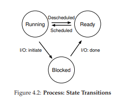
Hình 4.2: Các trạng thái của Process và sự chuyển đổi
Trong sơ đồ trạng thái (Hình 4.2), bạn có thể thấy process được chuyển qua lại giữa trạng thái ready và running dưới sự điều phối của hệ điều hành.
- Từ ready → running: process được schedule (lập lịch để chạy).
- Từ running → ready: process bị deschedule (dừng chạy).
- Khi process chuyển sang blocked, hệ điều hành sẽ giữ nó trong trạng thái này cho đến khi sự kiện cần thiết xảy ra (ví dụ: I/O hoàn tất), sau đó chuyển nó về trạng thái ready (và có thể lập lịch chạy ngay).
Ví dụ: giả sử có hai process chạy, cả hai chỉ dùng CPU (không I/O). Dấu vết trạng thái (trace) của chúng sẽ giống như Hình 4.3.
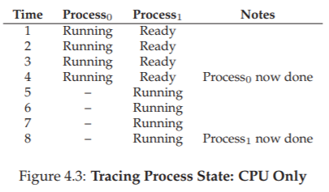
Hình 4.3: Dấu vết trạng thái process – chỉ dùng CPU
Trong ví dụ tiếp theo, một process thực hiện I/O sau một thời gian chạy. Khi đó nó chuyển sang trạng thái blocked, nhường CPU cho process còn lại. Dấu vết tình huống này được thể hiện ở Hình 4.4.
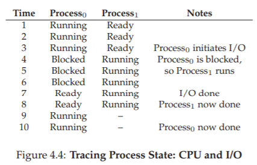
Hình 4.4: Dấu vết trạng thái process – CPU và I/O
Cụ thể, Process0 thực hiện một yêu cầu I/O và bị chặn để chờ kết quả; điều này thường xảy ra khi đọc từ đĩa hoặc chờ gói tin mạng. Hệ điều hành nhận thấy Process0 không dùng CPU, nên lập lịch chạy Process1. Trong khi Process1 chạy, I/O hoàn tất, Process0 chuyển về trạng thái ready. Khi Process1 kết thúc, Process0 được chạy tiếp cho đến khi hoàn thành.
Lưu ý: ngay cả trong ví dụ đơn giản này, hệ điều hành vẫn phải đưa ra nhiều quyết định. Thứ nhất, hệ thống chọn chạy Process1 trong khi Process0 bị chặn I/O – điều này giúp tận dụng CPU tốt hơn. Thứ hai, khi I/O của Process0 hoàn tất, hệ điều hành không lập tức chuyển lại cho Process0 mà để Process1 tiếp tục. Đây có phải là quyết định đúng hay không? Những quyết định như vậy được đưa ra bởi OS scheduler (bộ lập lịch của hệ điều hành) – chủ đề chúng ta sẽ bàn kỹ hơn trong các chương tới.
4.5 Cấu Trúc Dữ Liệu
Hệ điều hành cũng chỉ là một chương trình, và giống như mọi chương trình khác, nó sử dụng các cấu trúc dữ liệu để quản lý thông tin.
Ví dụ: để theo dõi trạng thái của các process, hệ điều hành thường duy trì một danh sách process (process list) chứa tất cả process đang ở trạng thái ready, kèm thêm thông tin về process hiện tại đang chạy. Hệ điều hành cũng cần quản lý danh sách các process blocked; khi một sự kiện I/O hoàn tất, OS phải đánh thức đúng process liên quan và chuyển nó sang trạng thái ready.
Hình 4.5 thể hiện Thông tin OS theo dõi cho mỗi process trong nhân xv6 [CK+08]. Trong các hệ điều hành thực tế như Linux, Mac OS X, hay Windows, cấu trúc quản lý process còn phức tạp hơn nhiều. Bạn có thể tự tìm hiểu để so sánh mức độ chi tiết.
Trong hình, ta thấy một số thông tin quan trọng mà hệ điều hành lưu cho mỗi process. Register context (Ngữ cảnh thanh ghi): Đối với process bị dừng, hệ điều hành lưu lại toàn bộ giá trị các thanh ghi vào vùng nhớ này. Khi cần chạy lại process, OS chỉ việc khôi phục các giá trị vào thanh ghi vật lý để tiếp tục excecute. Kỹ thuật này gọi là context switch (chuyển ngữ cảnh) – sẽ được bàn kỹ trong các chương tiếp theo.
// the registers xv6 will save and restore
// to stop and subsequently restart a process
struct context {
int eip;
int esp;
int ebx;
int ecx;
int edx;
int esi;
int edi;
int ebp;
};
// the different states a process can be in
enum proc_state {
UNUSED,
EMBRYO,
SLEEPING,
RUNNABLE,
RUNNING,
ZOMBIE
};
// the information xv6 tracks about each process
// including its register context and state
struct proc {
char * mem;
// Start of process memory
uint sz;
// Size of process memory
char * kstack;
// Bottom of kernel stack
// for this process
enum proc_state state; // Process state
int pid;
// Process ID
struct proc * parent;
// Parent process
void * chan;
// If !zero, sleeping on chan
int killed;
// If !zero, has been killed
struct file * ofile[NOFILE]; // Open files
struct inode * cwd;
// Current directory
struct context context; // Switch here to run process
struct trapframe * tf;
// Trap frame for the
// current interrupt
};
Bạn cũng có thể thấy từ hình minh họa rằng một process (process) có thể ở một số trạng thái khác ngoài đang chạy (running), sẵn sàng (ready), và bị chặn (blocked). Đôi khi một hệ thống sẽ có một trạng thái ban đầu (initial state) mà process ở trong đó khi nó đang được tạo ra. Ngoài ra, một process có thể được đặt vào một trạng thái cuối (final state), nơi nó đã thoát ra nhưng chưa được dọn dẹp (trong các hệ thống dựa trên UNIX, trạng thái này được gọi là trạng thái zombie (thây ma)¹).
(Giải thích: Trạng thái này được gọi là "zombie" vì process đã "chết" - tức là đã kết thúc excecute - nhưng thông tin về nó vẫn còn tồn tại trong bảng process, chưa được "chôn cất" hay dọn dẹp hoàn toàn.)
Trạng thái cuối này có thể hữu ích vì nó cho phép các process khác (thường là process cha đã tạo ra process này) kiểm tra mã trả về (return code) của process và xem liệu process vừa hoàn thành có excecute thành công hay không (thường thì các chương trình trong hệ thống dựa trên UNIX trả về giá trị 0 khi chúng đã hoàn thành tác vụ thành công, và khác 0 trong trường hợp ngược lại). Khi xong việc, process cha sẽ thực hiện một call cuối cùng (ví dụ, wait()) để chờ đợi sự hoàn thành của process con, và cũng để báo cho OS rằng nó có thể dọn dẹp bất kỳ cấu trúc dữ liệu nào liên quan đến process đã không còn tồn tại này.
TẢN MẠN: CẤU TRÚC DỮ LIỆU — DANH SÁCH TIẾN TRÌNH
Các hệ điều hành chứa đầy đủ các cấu trúc dữ liệu quan trọng khác nhau mà chúng ta sẽ thảo luận trong tài liệu này. Danh sách process (Process List), còn được gọi là danh sách tác vụ (task list), là cấu trúc đầu tiên như vậy. Nó là một trong những cấu trúc đơn giản hơn, nhưng chắc chắn bất kỳ hệ điều hành nào có khả năng chạy nhiều chương trình cùng một lúc sẽ có một thứ gì đó tương tự như cấu trúc này để theo dõi tất cả các chương trình đang chạy trong hệ thống. Đôi khi người ta gọi cấu trúc riêng lẻ lưu trữ thông tin về một process là Khối Quản lý Process (Process Control Block - PCB), một cách nói hoa mỹ để chỉ một cấu trúc trong ngôn ngữ C chứa thông tin về mỗi process (đôi khi còn được gọi là bộ mô tả process - process descriptor).
4.6 Tóm tắt
Chúng ta đã giới thiệu khái niệm trừu tượng hóa cơ bản nhất của OS: process. Nó được xem một cách khá đơn giản là một chương trình đang chạy. Với quan điểm khái niệm này, bây giờ chúng ta sẽ chuyển sang các chi tiết cốt lõi: các cơ chế cấp thấp cần thiết để triển khai process, và các policy cấp cao cần thiết để lập lịch (schedule) cho chúng một cách thông minh. Bằng cách kết hợp các cơ chế và policy, chúng ta sẽ xây dựng sự hiểu biết của mình về cách một hệ điều hành ảo hóa CPU.
TẢN MẠN: CÁC THUẬT NGỮ CHÍNH VỀ TIẾN TRÌNH
- Tiến trình (process) là khái niệm trừu tượng hóa chính của hệ điều hành về một chương trình đang chạy. Tại bất kỳ thời điểm nào, process có thể được mô tả bởi trạng thái của nó: nội dung bộ nhớ trong không gian địa chỉ (address space) của nó, nội dung của các thanh ghi CPU (bao gồm bộ đếm chương trình - program counter và con trỏ ngăn xếp - stack pointer, cùng nhiều thanh ghi khác), và thông tin về I/O (chẳng hạn như các tập tin đang mở có thể được đọc hoặc ghi).
- API process bao gồm các call mà chương trình có thể thực hiện liên quan đến process. Thông thường, điều này bao gồm việc tạo (creation), hủy (destruction), và các call hữu ích khác.
- Các process tồn tại ở một trong nhiều trạng thái process khác nhau, bao gồm đang chạy (running), sẵn sàng chạy (ready to run), và bị chặn (blocked). Các sự kiện khác nhau (ví dụ: được lập lịch để chạy hoặc bị rút khỏi CPU, hoặc chờ một thao tác I/O hoàn tất) sẽ chuyển một process từ trạng thái này sang trạng thái khác.
- Một danh sách process (process list) chứa thông tin về tất cả các process trong hệ thống. Mỗi mục nhập được tìm thấy trong một cấu trúc đôi khi được gọi là khối quản lý process (process control block - PCB), thực chất chỉ là một cấu trúc chứa thông tin về một process cụ thể.
Tham khảo
[BH70] “The Nucleus of a Multiprogramming System”
Per Brinch Hansen
Communications of the ACM, Volume 13, Number 4, April 1970
This paper introduces one of the first microkernels in operating systems history, called Nucleus. The idea of smaller, more minimal systems is a theme that rears its head repeatedly in OS history; it all began with Brinch Hansen’s work described herein.
[CK+08] “The xv6 Operating System”
Russ Cox, Frans Kaashoek, Robert Morris, Nickolai Zeldovich
From: https://github.com/mit-pdos/xv6-public
The coolest real and little OS in the world. Download and play with it to learn more about the details of how operating systems actually work. We have been using an older version (2012-01-30-1-g1c41342) and hence some examples in the book may not match the latest in the source.
[DV66] “Programming Semantics for Multiprogrammed Computations”
Jack B. Dennis and Earl C. Van Horn
Communications of the ACM, Volume 9, Number 3, March 1966
This paper defined many of the early terms and concepts around building multiprogrammed systems.
[L+75] “Policy/mechanism separation in Hydra”
R. Levin, E. Cohen, W. Corwin, F. Pollack, W. Wulf
SOSP 1975
An early paper about how to structure operating systems in a research OS known as Hydra. While Hydra never became a mainstream OS, some of its ideas influenced OS designers.
[V+65] “Structure of the Multics Supervisor”
V.A. Vyssotsky, F. J. Corbato, R. M. Graham
Fall Joint Computer Conference, 1965
An early paper on Multics, which described many of the basic ideas and terms that we find in modern systems. Some of the vision behind computing as a utility are finally being realized in modern cloud systems.
5. Phần xen kẽ: Process API
GHI CHÚ: VỀ CÁC PHẦN XEN KẼ
Các phần xen kẽ (interlude) sẽ đề cập đến những khía cạnh thực tiễn hơn của hệ thống, đặc biệt tập trung vào các API (Application Programming Interface – interface lập trình ứng dụng) của hệ điều hành và cách sử dụng chúng. Nếu bạn không thích các vấn đề mang tính thực hành, bạn có thể bỏ qua các phần này. Tuy nhiên, bạn nên quan tâm đến chúng, vì chúng thường rất hữu ích trong thực tế; ví dụ, các công ty thường không tuyển dụng bạn chỉ vì những kỹ năng “phi thực tế”.
Trong phần xen kẽ này, chúng ta sẽ thảo luận về việc tạo process (process) trong các hệ thống UNIX. UNIX cung cấp một trong những cách thú vị nhất để tạo process mới thông qua một cặp system call (call hệ thống): fork() và exec(). Một thủ tục thứ ba, wait(), có thể được một process sử dụng khi muốn chờ process mà nó đã tạo hoàn thành. Chúng ta sẽ trình bày chi tiết các interface này, kèm theo một số ví dụ đơn giản để minh họa. Và đây là vấn đề đặt ra:
Cốt lõi: Làm thế nào để tạo và điều khiển process
Hệ điều hành nên cung cấp những interface nào để tạo và điều khiển process? Các interface này nên được thiết kế ra sao để vừa mạnh mẽ, dễ sử dụng, vừa đạt hiệu năng cao?
5.1 Lời gọi hệ thống fork()
Lời gọi hệ thống fork() được sử dụng để tạo một process mới [C63]. Tuy nhiên, hãy lưu ý: đây chắc chắn là một trong những thủ tục kỳ lạ nhất mà bạn từng gọi1. Cụ thể hơn, giả sử bạn có một chương trình đang chạy với đoạn code như trong Hình 5.1; hãy xem xét đoạn code đó, hoặc tốt hơn, hãy gõ và chạy nó để tự mình trải nghiệm.
Thực ra, chúng tôi không thể khẳng định chắc chắn điều này; ai biết được bạn gọi những thủ tục gì khi không ai để ý? Nhưng fork() thực sự rất khác thường, bất kể thói quen gọi hàm của bạn ra sao.
#include <stdio.h>
#include <stdlib.h>
#include <unistd.h>
int main(int argc, char * argv[]) {
printf("hello (pid:%d)\n", (int) getpid());
int rc = fork();
if (rc < 0) {
// fork failed
fprintf(stderr, "fork failed\n");
exit(1);
} else if (rc == 0) {
// child (new process)
printf("child (pid:%d)\n", (int) getpid());
} else {
// parent goes down this path (main)
printf("parent of %d (pid:%d)\n",
rc, (int) getpid());
}
return 0;
}
Figure 5.1: Calling fork() (p1.c)
Khi bạn chạy chương trình này (gọi là p1.c), bạn sẽ thấy kết quả như sau:
prompt> ./p1
hello (pid:29146)
parent of 29147 (pid:29146)
child (pid:29147)
prompt>
Hãy phân tích chi tiết hơn điều gì đã xảy ra trong p1.c. Khi bắt đầu chạy, process in ra một thông điệp “hello”; kèm theo đó là process identifier (PID – định danh process). Trong ví dụ, process có PID là 29146; trong hệ thống UNIX, PID được dùng để định danh process khi muốn thực hiện một thao tác nào đó với nó, chẳng hạn như dừng process. Đến đây thì mọi thứ vẫn bình thường.
Phần thú vị bắt đầu khi process gọi call hệ thống fork(), mà OS cung cấp như một cách để tạo process mới. Điều kỳ lạ là: process được tạo ra gần như là bản sao của process gọi fork(). Điều này có nghĩa là, từ góc nhìn của OS, giờ đây có hai bản sao của chương trình p1 đang chạy, và cả hai đều sắp trả về từ call fork(). Process mới được tạo (gọi là child process – process con, đối lập với parent process – process cha) không bắt đầu chạy từ main() như bạn có thể nghĩ (lưu ý, thông điệp “hello” chỉ được in ra một lần); thay vào đó, nó xuất hiện như thể chính nó vừa gọi fork().
#include <stdio.h>
#include <stdlib.h>
#include <unistd.h>
#include <sys/wait.h>
int main(int argc, char * argv[]) {
printf("hello (pid:%d)\n", (int) getpid());
int rc = fork();
if (rc < 0) {
// fork failed; exit
fprintf(stderr, "fork failed\n");
exit(1);
} else if (rc == 0) { // child (new process)
printf("child (pid:%d)\n", (int) getpid());
} else {
// parent goes down this path
int rc_wait = wait(NULL);
printf("parent of %d (rc_wait:%d) (pid:%d)\n",
rc, rc_wait, (int) getpid());
}
return 0;
}
Figure 5.2: Calling fork() And wait() (p2.c)
Bạn có thể nhận thấy: process con không phải là bản sao hoàn toàn. Cụ thể, mặc dù nó có bản sao riêng của address space (không gian địa chỉ – tức vùng bộ nhớ riêng), các thanh ghi (registers) riêng, bộ đếm chương trình (PC – Program Counter) riêng, v.v., nhưng giá trị trả về từ fork() lại khác nhau. Cụ thể, process cha nhận về PID của process con mới tạo, còn process con nhận giá trị trả về là 0. Sự khác biệt này rất hữu ích, vì nó giúp lập trình viên dễ dàng viết mã xử lý cho hai trường hợp khác nhau.
Bạn cũng có thể nhận thấy: kết quả in ra từ p1.c không mang tính xác định (non-deterministic). Khi process con được tạo, lúc này có hai process đang hoạt động: cha và con. Giả sử hệ thống chỉ có một CPU (để đơn giản), thì tại thời điểm đó, hoặc process cha, hoặc process con có thể được chạy trước. Trong ví dụ trên, process cha chạy trước và in thông điệp của nó trước. Trong các trường hợp khác, điều ngược lại có thể xảy ra, như trong kết quả sau:
prompt> ./p1
hello (pid:29146)
child (pid:29147)
parent of 29147 (pid:29146)
prompt>
CPU scheduler (bộ lập lịch CPU – thành phần quyết định process nào chạy tại một thời điểm) sẽ quyết định process nào được chạy. Vì bộ lập lịch khá phức tạp, chúng ta thường không thể dự đoán chắc chắn nó sẽ chọn process nào, và do đó không thể biết process nào sẽ chạy trước. Tính bất định (nondeterminism) này sẽ dẫn đến nhiều vấn đề thú vị, đặc biệt trong các chương trình đa luồng (multi-threaded). Chúng ta sẽ gặp lại khái niệm này nhiều hơn khi nghiên cứu lập trình đồng thời (concurrency) ở phần sau của sách.
5.2 Lời gọi hệ thống wait()
Cho đến giờ, chúng ta mới chỉ tạo một process con in ra thông điệp rồi thoát. Trong nhiều trường hợp, process cha cần chờ process con hoàn thành công việc. Nhiệm vụ này được thực hiện bằng call hệ thống wait() (hoặc phiên bản đầy đủ hơn là waitpid()); xem Hình 5.2 để biết chi tiết.
Trong ví dụ (p2.c), process cha gọi wait() để tạm dừng excecute cho đến khi process con kết thúc. Khi process con hoàn tất, wait() trả quyền điều khiển lại cho process cha.
Việc thêm call wait() vào đoạn code trên khiến kết quả trở nên xác định (deterministic). Bạn có biết tại sao không? Hãy thử suy nghĩ một chút.
(… chờ bạn suy nghĩ … xong)
Và đây là kết quả:
prompt> ./p2
hello (pid:29266)
child (pid:29267)
parent of 29267 (rc_wait:29267) (pid:29266)
prompt>
Với đoạn code này, chúng ta luôn biết rằng process con sẽ in ra trước. Tại sao? Bởi vì:
- Nếu process con chạy trước, nó sẽ in thông điệp trước process cha.
- Nếu process cha chạy trước, nó sẽ lập tức gọi
wait(); call này sẽ không trả về cho đến khi process con chạy và thoát2. Do đó, ngay cả khi cha chạy trước, nó vẫn “lịch sự” chờ con hoàn thành, rồi mới in thông điệp của mình.
Có một số trường hợp wait() trả về trước khi process con thoát; hãy đọc trang hướng dẫn man để biết thêm chi tiết. Và hãy cảnh giác với những phát biểu tuyệt đối như “process con luôn in trước” hoặc “UNIX là thứ tuyệt vời nhất trên đời, còn hơn cả kem”.
5.3 Cuối cùng, call hệ thống exec()
Một thành phần cuối cùng và quan trọng của process creation API (API tạo process) là call hệ thống exec()3. Lời gọi này hữu ích khi bạn muốn chạy một chương trình khác với chương trình đang gọi nó. Ví dụ, gọi fork()…
Trên Linux, có sáu biến thể của exec(): execl(), execlp(), execle(), execv(), execvp(), và execvpe(). Hãy đọc trang hướng dẫn man để tìm hiểu thêm.
#include <stdio.h>
#include <stdlib.h>
#include <unistd.h>
#include <string.h>
#include <sys/wait.h>
int main(int argc, char * argv[]) {
printf("hello (pid:%d)\n", (int) getpid());
int rc = fork();
if (rc < 0) {
// fork failed; exit
fprintf(stderr, "fork failed\n");
exit(1);
} else if (rc == 0) { // child (new process)
printf("child (pid:%d)\n", (int) getpid());
char * myargs[3];
myargs[0] = strdup("wc");
// program: "wc"
myargs[1] = strdup("p3.c"); // arg: input file
myargs[2] = NULL;
// mark end of array
execvp(myargs[0], myargs); // runs word count
printf("this shouldn’t print out");
} else {
// parent goes down this path
int rc_wait = wait(NULL);
printf("parent of %d (rc_wait:%d) (pid:%d)\n",
rc, rc_wait, (int) getpid());
}
return 0;
}
Hình 5.3: Gọi fork(), wait() và exec() (p3.c)
Trong p2.c, việc sử dụng chỉ hữu ích nếu bạn muốn tiếp tục chạy các bản sao của cùng một chương trình. Tuy nhiên, trong nhiều trường hợp, bạn muốn chạy một chương trình khác; exec() chính là công cụ để làm điều đó (Hình 5.3).
Trong ví dụ này, process con (child process) gọi execvp() để chạy chương trình wc – đây là chương trình đếm từ (word counting program). Cụ thể, nó chạy wc trên tệp mã nguồn p3.c, cho chúng ta biết số dòng, số từ và số byte trong tệp:
prompt> ./p3
hello (pid:29383)
child (pid:29384)
29
107
1030 p3.c
parent of 29384 (rc_wait:29384) (pid:29383)
prompt>
Lời gọi hệ thống (system call) fork() vốn đã kỳ lạ; “đồng phạm” của nó, exec(), cũng không hề bình thường. Cách hoạt động của exec() như sau: khi được cung cấp tên của một tệp excecute (executable) – ví dụ wc – và một số đối số (arguments) – ví dụ p3.c – nó sẽ nạp (load) mã lệnh (code) và static data (static data) từ tệp excecute đó, ghi đè lên phân đoạn code (code segment) và static data hiện tại của process; vùng heap, stack và các phần khác của không gian bộ nhớ (memory space) của chương trình sẽ được khởi tạo lại. Sau đó, hệ điều hành chỉ đơn giản chạy chương trình mới này, truyền các đối số vào dưới dạng argv của process.
Điểm quan trọng: exec() không tạo ra process mới; thay vào đó, nó biến đổi process hiện tại (trước đó là p3) thành một chương trình khác đang chạy (wc). Sau khi exec() được gọi trong process con, gần như p3.c chưa từng chạy; một call exec() thành công sẽ không bao giờ trả về.
Mẹo: Làm đúng ngay từ đầu (Lampson’s Law)
Như Lampson đã nói trong bài viết nổi tiếng Hints for Computer Systems Design [L83]:
“Hãy làm đúng. Cả tính trừu tượng lẫn sự đơn giản đều không thể thay thế cho việc làm đúng.”
Đôi khi, bạn chỉ cần làm đúng, và khi làm đúng, kết quả sẽ vượt xa mọi lựa chọn thay thế. Có rất nhiều cách để thiết kế API cho việc tạo process; tuy nhiên, sự kết hợp giữafork()vàexec()vừa đơn giản vừa cực kỳ mạnh mẽ. Ở đây, các nhà thiết kế UNIX đã “làm đúng”. Và vì Lampson thường xuyên “làm đúng”, nên nguyên tắc này được đặt tên để vinh danh ông.
5.4 Tại sao? Động cơ thiết kế API
Một câu hỏi lớn có thể xuất hiện: Tại sao chúng ta lại xây dựng một interface kỳ lạ như vậy cho một hành động tưởng chừng đơn giản là tạo process mới?
Câu trả lời: việc tách biệt fork() và exec() là thiết yếu trong việc xây dựng một UNIX shell, vì nó cho phép shell chạy một đoạn code sau khi gọi fork() nhưng trước khi gọi exec(). Đoạn code này có thể thay đổi môi trường (environment) của chương trình sắp chạy, từ đó cho phép xây dựng nhiều tính năng thú vị một cách dễ dàng.
Shell thực chất chỉ là một chương trình người dùng (user program)4. Nó hiển thị một dấu nhắc lệnh (prompt) và chờ bạn nhập vào. Bạn gõ một lệnh (tức tên của một chương trình excecute kèm các đối số) vào; trong hầu hết các trường hợp, shell sẽ:
- Xác định vị trí của tệp excecute trong hệ thống tệp (file system).
- Gọi
fork()để tạo một process con chạy lệnh đó. - Gọi một biến thể của
exec()để excecute lệnh. - Gọi
wait()để chờ lệnh hoàn tất.
Khi process con kết thúc, shell thoát khỏi wait() và in ra dấu nhắc lệnh mới, sẵn sàng cho lệnh tiếp theo.
Việc tách fork() và exec() cho phép shell thực hiện nhiều việc hữu ích một cách đơn giản. Ví dụ:
prompt> wc p3.c > newfile.txt
Có rất nhiều loại shell: tcsh, bash, zsh… Bạn nên chọn một loại, đọc trang hướng dẫn (man page) và tìm hiểu thêm; tất cả chuyên gia UNIX đều làm vậy.
Trong ví dụ trên, đầu ra của chương trình wc được chuyển hướng (redirect) vào tệp newfile.txt (dấu > thể hiện việc chuyển hướng). Cách shell thực hiện rất đơn giản: khi process con được tạo, trước khi gọi exec(), shell (cụ thể là đoạn code chạy trong process con) đóng luồng xuất chuẩn (standard output) và mở tệp newfile.txt.
Bằng cách này, mọi dữ liệu xuất ra từ chương trình wc sắp chạy sẽ được ghi vào tệp thay vì hiển thị trên màn hình. (Các file descriptor đang mở sẽ vẫn được giữ nguyên qua call exec(), cho phép hành vi này [SR05]).
Hình 5.4 (trang 8) minh họa một chương trình thực hiện chính xác điều này. Nguyên nhân việc chuyển hướng hoạt động được là nhờ giả định về cách hệ điều hành quản lý file descriptor: trong UNIX, hệ thống bắt đầu tìm file descriptor trống từ số 0. Trong trường hợp này, STDOUT_FILENO sẽ là file descriptor trống đầu tiên và được gán khi open() được gọi. Các lệnh ghi (write) tiếp theo của process con tới file descriptor xuất chuẩn – ví dụ qua printf() – sẽ được ghi vào tệp mới mở thay vì màn hình.
Kết quả chạy chương trình p4.c như sau:
prompt> ./p4
prompt> cat p4.output
32
109
846 p4.c
prompt>
Có ít nhất hai điểm thú vị trong kết quả này:
- Khi chạy
p4, có vẻ như không có gì xảy ra; shell chỉ in dấu nhắc lệnh và sẵn sàng cho lệnh tiếp theo. Nhưng thực tế,p4đã gọifork()để tạo process con, sau đó chạy chương trìnhwcquaexecvp(). Bạn không thấy kết quả trên màn hình vì nó đã được chuyển hướng vào tệpp4.output. - Khi dùng
catđể xem nội dung tệpp4.output, toàn bộ kết quả mong đợi từwcđều có ở đó.
UNIX pipes (đường ống) được triển khai tương tự, nhưng sử dụng call hệ thống pipe(). Trong trường hợp này, đầu ra của một process được kết nối tới một in-kernel pipe (hàng đợi trong nhân hệ điều hành), và đầu vào của process khác được kết nối tới cùng pipe đó. Nhờ vậy, đầu ra của process này trở thành đầu vào của process kia một cách liền mạch, cho phép ghép chuỗi nhiều lệnh hữu ích.
Ví dụ đơn giản: tìm một từ trong tệp và đếm số lần từ đó xuất hiện. Với pipe và các tiện ích grep và wc, việc này rất dễ:
grep -o foo file | wc -l
Nhập lệnh trên vào shell và bạn sẽ thấy kết quả ngay.
Cuối cùng, mặc dù chúng ta mới chỉ phác thảo API tạo process ở mức cao, nhưng vẫn còn rất nhiều chi tiết cần tìm hiểu thêm; ví dụ, chúng ta sẽ học kỹ hơn về file descriptor khi bàn về hệ thống tệp ở phần ba của sách. Tạm thời, có thể kết luận rằng sự kết hợp fork()/exec() là một cách mạnh mẽ để tạo và điều khiển process.
#include <stdio.h>
#include <stdlib.h>
#include <unistd.h>
#include <string.h>
#include <fcntl.h>
#include <sys/wait.h>
int main(int argc, char * argv[]) {
int rc = fork();
if (rc < 0) {
// fork failed
fprintf(stderr, "fork failed\n");
exit(1);
} else if (rc == 0) {
// child: redirect standard output to a file
close(STDOUT_FILENO);
open("./p4.output", O_CREAT | O_WRONLY | O_TRUNC,
S_IRWXU);
// now exec "wc"...
char * myargs[3];
myargs[0] = strdup("wc");
// program: wc
myargs[1] = strdup("p4.c"); // arg: file to count
myargs[2] = NULL;
// mark end of array
execvp(myargs[0], myargs); // runs word count
} else {
// parent goes down this path (main)
int rc_wait = wait(NULL);
}
return 0;
}
Figure 5.4: All Of The Above With Redirection (p4.c)
5.5 Điều khiển process (Process Control) và Người dùng (Users)
Ngoài fork(), exec() và wait(), trong các hệ thống UNIX còn có nhiều interface khác để tương tác với process (process). Ví dụ, call hệ thống (system call) kill() được dùng để gửi signal (tín hiệu) tới một process, bao gồm các chỉ thị như tạm dừng (pause), kết thúc (die/terminate) và nhiều lệnh hữu ích khác.
Để thuận tiện, trong hầu hết các UNIX shell, một số tổ hợp phím được cấu hình để gửi một tín hiệu cụ thể tới process đang chạy. Ví dụ:
Ctrl-Cgửi tín hiệu SIGINT (interrupt – ngắt) tới process (thường sẽ kết thúc process đó).Ctrl-Zgửi tín hiệu SIGTSTP (stop – dừng) để tạm dừng process khi đang excecute (bạn có thể tiếp tục process này sau bằng một lệnh, ví dụ lệnh tích hợpfgcó trong nhiều shell).
Toàn bộ hệ thống con signals (signals subsystem) cung cấp một hạ tầng phong phú để gửi các sự kiện bên ngoài tới process, bao gồm:
- Cách để process nhận và xử lý các tín hiệu này.
- Cách gửi tín hiệu tới từng process hoặc cả nhóm process (process group).
Để sử dụng hình thức giao tiếp này, một process có thể dùng call hệ thống signal() để “bắt” (catch) các tín hiệu khác nhau. Khi một tín hiệu cụ thể được gửi tới process, process sẽ tạm ngừng excecute bình thường và chạy một đoạn code được chỉ định để xử lý tín hiệu đó. (Xem [SR05] để tìm hiểu sâu hơn về signals và các chi tiết phức tạp của chúng).
GHI CHÚ: RTFM — Read The Man Pages
Nhiều lần trong cuốn sách này, khi đề cập đến một system call hoặc library call cụ thể, chúng tôi sẽ khuyên bạn đọc man pages (manual pages – trang hướng dẫn). Đây là dạng tài liệu gốc tồn tại trên các hệ thống UNIX, được tạo ra trước khi có thứ gọi là “web”.
Dành thời gian đọc man pages là một bước quan trọng trong quá trình trưởng thành của một lập trình viên hệ thống; có rất nhiều thông tin hữu ích ẩn trong đó. Một số man pages đặc biệt hữu ích gồm:
- Man pages của shell bạn đang dùng (ví dụ:
tcsh,bash). - Man pages của bất kỳ system call nào mà chương trình của bạn sử dụng (để biết giá trị trả về và các điều kiện lỗi).
Cuối cùng, đọc man pages còn giúp bạn tránh bối rối. Khi bạn hỏi đồng nghiệp về một chi tiết phức tạp của fork(), họ có thể chỉ trả lời: “RTFM”. Đây là cách họ nhẹ nhàng nhắc bạn Read The Man pages. Chữ “F” trong RTFM chỉ để thêm chút “màu sắc” cho câu nói…
Điều này dẫn đến câu hỏi: Ai có thể gửi tín hiệu tới một process, và ai thì không?
Thông thường, hệ thống có thể được nhiều người dùng cùng lúc. Nếu một người có thể tùy ý gửi tín hiệu như SIGINT (để ngắt process, thường sẽ kết thúc nó) tới process của người khác, tính khả dụng (usability) và bảo mật (security) của hệ thống sẽ bị ảnh hưởng nghiêm trọng.
Vì vậy, các hệ thống hiện đại có khái niệm chặt chẽ về user (người dùng). Sau khi nhập mật khẩu để xác thực, người dùng đăng nhập để truy cập tài nguyên hệ thống. Người dùng có thể khởi chạy một hoặc nhiều process và toàn quyền điều khiển chúng (tạm dừng, kết thúc, v.v.).
Người dùng thường chỉ có thể điều khiển process của chính mình; hệ điều hành chịu trách nhiệm phân bổ tài nguyên (CPU, bộ nhớ, đĩa…) cho từng người dùng (và các process của họ) để đạt được mục tiêu tổng thể của hệ thống.
5.6 Các công cụ hữu ích
Có nhiều công cụ dòng lệnh (command-line tools) rất hữu ích. Ví dụ:
- Lệnh
pscho phép bạn xem các process đang chạy; hãy đọc man pages để biết các tùy chọn (flags) hữu ích khi dùngps. - Công cụ
topcũng rất hữu ích, hiển thị các process của hệ thống và mức độ sử dụng CPU cùng các tài nguyên khác. Thú vị là, nhiều khi bạn chạytop, nó tự nhận mình là process “ngốn” tài nguyên nhất – có lẽ hơi… tự mãn. - Lệnh
killcó thể được dùng để gửi tín hiệu tùy ý tới process;killallthân thiện hơn một chút với người dùng.
Hãy cẩn thận khi dùng các lệnh này; nếu bạn vô tình “kill” window manager (trình quản lý cửa sổ), máy tính trước mặt bạn có thể trở nên rất khó sử dụng.
Ngoài ra, có nhiều loại CPU meter (đồng hồ đo CPU) giúp bạn nhanh chóng nắm được tải (load) của hệ thống. Ví dụ, chúng tôi luôn bật MenuMeters (từ Raging Menace software) trên thanh công cụ của máy Mac để xem mức sử dụng CPU tại mọi thời điểm. Nói chung, càng có nhiều thông tin về những gì đang diễn ra, bạn càng dễ quản lý hệ thống.
GHI CHÚ: Superuser (Root)
Một hệ thống thường cần một người dùng có quyền quản trị (admin) và không bị giới hạn như người dùng thông thường. Người này có thể:
- Kết thúc (kill) bất kỳ process nào (ví dụ: nếu process đó đang gây hại cho hệ thống), ngay cả khi process đó không do họ khởi chạy.
- Chạy các lệnh mạnh như
shutdown(tắt hệ thống).
Trong các hệ thống dựa trên UNIX, các quyền đặc biệt này được trao cho superuser (còn gọi là root). Trong khi hầu hết người dùng không thể kết thúc process của người khác, superuser có thể.
Làm root giống như làm Spider-Man: “Quyền lực lớn đi kèm trách nhiệm lớn” [QI15]. Vì vậy, để tăng cường bảo mật (và tránh sai lầm tốn kém), tốt nhất là bạn nên hoạt động như một người dùng bình thường; nếu cần trở thành root, hãy thật cẩn trọng, vì mọi “quyền năng hủy diệt” của thế giới máy tính đều nằm trong tay bạn.
5.7 Tóm tắt
Chúng ta đã giới thiệu một số API liên quan đến việc tạo process trong UNIX: fork(), exec() và wait(). Tuy nhiên, đây mới chỉ là phần bề mặt. Để tìm hiểu chi tiết hơn, hãy đọc Stevens và Rago [SR05], đặc biệt các chương về Process Control, Process Relationships và Signals.
Mặc dù chúng tôi đánh giá cao API process của UNIX, nhưng không phải ai cũng đồng tình. Ví dụ, một bài báo gần đây của các nhà nghiên cứu hệ thống từ Microsoft, Đại học Boston và ETH Zurich đã chỉ ra một số vấn đề với fork() và đề xuất các API tạo process khác, đơn giản hơn, như spawn() [B+19]. Hãy đọc bài báo và các tài liệu liên quan để hiểu góc nhìn khác này.
Nhớ rằng, dù bạn có thể tin tưởng cuốn sách này, tác giả vẫn có quan điểm riêng; và những quan điểm đó không phải lúc nào cũng được chia sẻ rộng rãi như bạn nghĩ.
GHI CHÚ: Các thuật ngữ chính trong Process API
- Mỗi process (process) có một tên; trong hầu hết các hệ thống, tên này là một số gọi là process ID (PID – định danh process).
- Lời gọi hệ thống
fork()trong UNIX được dùng để tạo process mới. Process tạo ra gọi là parent (cha), process mới gọi là child (con). Giống như ngoài đời [J16], process con gần như là bản sao của process cha. - Lời gọi hệ thống
wait()cho phép process cha chờ process con hoàn tất excecute. - Nhóm call hệ thống
exec()cho phép process con thoát khỏi sự giống nhau với process cha và excecute một chương trình hoàn toàn mới. - Một UNIX shell thường dùng
fork(),wait()vàexec()để chạy lệnh của người dùng; việc táchforkvàexeccho phép thực hiện các tính năng như chuyển hướng I/O (input/output redirection), pipes và nhiều tính năng khác mà không cần
Tham khảo
[C63] “A Multiprocessor System Design”
Melvin E. Conway
AFIPS ’63 Fall Joint Computer Conference
New York, USA 1963
An early paper on how to design multiprocessing systems; may be the first place the term fork() was used in the discussion of spawning new processes.
[DV66] “Programming Semantics for Multiprogrammed Computations”
Jack B. Dennis and Earl C. Van Horn
Communications of the ACM, Volume 9, Number 3, March 1966
A classic paper that outlines the basics of multiprogrammed computer systems. Undoubtedly had great influence on Project MAC, Multics, and eventually UNIX.
[L83] “Hints for Computer Systems Design”
Butler Lampson
ACM Operating Systems Review, 15:5, October 1983
Lampson’s famous hints on how to design computer systems. You should read it at some point in your life, and probably at many points in your life.
[SR05] “Advanced Programming in the UNIX Environment”
W. Richard Stevens and Stephen A. Rago
Addison-Wesley, 2005
All nuances and subtleties of using UNIX APIs are found herein. Buy this book! Read it! And most importantly, live it.
6. Cơ chế: Limited Direct Execution (Thực thi trực tiếp có giới hạn)
Để virtualize (ảo hóa) CPU, hệ điều hành (Operating System – OS) cần phải tìm cách chia sẻ CPU vật lý cho nhiều công việc (job) chạy dường như đồng thời. Ý tưởng cơ bản rất đơn giản: chạy một process (tiến trình) trong một khoảng thời gian ngắn, sau đó chuyển sang chạy một process khác, và cứ thế tiếp tục. Bằng cách chia sẻ thời gian (time sharing) của CPU theo cách này, việc ảo hóa được thực hiện.
Tuy nhiên, việc xây dựng cơ chế ảo hóa như vậy gặp một số thách thức. Thứ nhất là hiệu năng: làm thế nào để triển khai ảo hóa mà không tạo ra quá nhiều overhead (chi phí xử lý bổ sung) cho hệ thống? Thứ hai là kiểm soát: làm thế nào để chạy các process một cách hiệu quả mà vẫn giữ quyền kiểm soát CPU? Kiểm soát đặc biệt quan trọng đối với OS, vì OS chịu trách nhiệm quản lý tài nguyên; nếu không có kiểm soát, một process có thể chạy mãi mãi và chiếm toàn bộ máy, hoặc truy cập thông tin mà nó không được phép. Do đó, đạt được hiệu năng cao đồng thời duy trì khả năng kiểm soát là một trong những thách thức trung tâm khi xây dựng hệ điều hành.
Cốt lõi: Làm thế nào để ảo hóa CPU một cách hiệu quả mà vẫn giữ quyền kiểm soát
OS phải ảo hóa CPU theo cách hiệu quả đồng thời duy trì quyền kiểm soát hệ thống. Để làm được điều này, cần có sự hỗ trợ từ cả phần cứng và hệ điều hành. OS thường tận dụng một số hỗ trợ phần cứng hợp lý để thực hiện công việc hiệu quả.
6.1 Kỹ thuật cơ bản: Limited Direct Execution
Để một chương trình chạy nhanh như mong đợi, các nhà phát triển OS đã đưa ra một kỹ thuật gọi là limited direct execution (thực thi trực tiếp có giới hạn). Phần “direct execution” (thực thi trực tiếp) của ý tưởng này rất đơn giản: chỉ cần chạy chương trình trực tiếp trên CPU.
Khi OS muốn bắt đầu chạy một chương trình, nó sẽ:
- Tạo một mục process entry trong process list (danh sách tiến trình).
- Cấp phát một vùng bộ nhớ cho process.
- Nạp mã chương trình vào bộ nhớ (từ đĩa).
- Xác định entry point (điểm bắt đầu, ví dụ hàm
main()). - Nhảy tới entry point và bắt đầu chạy mã của người dùng.

Hình 6.1 minh họa giao thức thực thi trực tiếp cơ bản này (chưa có giới hạn), sử dụng lời gọi hàm (call) và trả về (return) thông thường để nhảy vào main() của chương trình và sau đó quay lại kernel.
Nghe có vẻ đơn giản, đúng không? Nhưng cách tiếp cận này nảy sinh một số vấn đề trong mục tiêu ảo hóa CPU:
- Nếu chỉ chạy chương trình, làm thế nào OS đảm bảo chương trình không làm những việc trái phép, mà vẫn chạy hiệu quả?
- Khi đang chạy một process, làm thế nào OS dừng nó và chuyển sang process khác, để thực hiện time sharing cần thiết cho việc ảo hóa CPU?
Khi trả lời những câu hỏi này, chúng ta sẽ hiểu rõ hơn những gì cần thiết để ảo hóa CPU. Đồng thời, ta sẽ thấy vì sao có chữ “limited” (giới hạn) trong tên kỹ thuật này; nếu không giới hạn chương trình, OS sẽ không kiểm soát được gì và sẽ chỉ là “một thư viện” — một tình trạng đáng buồn cho một hệ điều hành đang hình thành.
6.2 Vấn đề #1: Restricted Operations (Các thao tác bị hạn chế)
Direct execution có ưu điểm rõ ràng là nhanh; chương trình chạy trực tiếp trên CPU phần cứng nên tốc độ đạt như mong đợi. Nhưng chạy trực tiếp trên CPU lại dẫn đến vấn đề: nếu process muốn thực hiện một thao tác bị hạn chế, ví dụ:
- Gửi yêu cầu I/O tới đĩa.
- Truy cập thêm tài nguyên hệ thống như CPU hoặc bộ nhớ.
Cốt lõi: Làm thế nào để thực hiện các thao tác bị hạn chế
Một process cần có khả năng thực hiện I/O và một số thao tác bị hạn chế khác, nhưng không được trao toàn quyền kiểm soát hệ thống. Làm thế nào để OS và phần cứng phối hợp để đạt được điều này?
Ghi chú: Vì sao system call trông giống như procedure call?
Bạn có thể thắc mắc tại sao call tới một system call (call hệ thống), như
open()hoặcread(), lại trông giống hệt một lời gọi hàm thông thường trong C. Nếu giống hệt procedure call, làm sao hệ thống biết đó là system call và xử lý đúng?Lý do đơn giản: nó thực sự là một procedure call, nhưng bên trong có chứa trap instruction (lệnh bẫy). Cụ thể:
- Khi bạn gọi
open(), bạn đang gọi một hàm trong thư viện C.- Thư viện này (dù là
open()hay system call khác) tuân theo calling convention (quy ước gọi hàm) đã thống nhất với kernel: đặt các tham số vào vị trí đã biết (ví dụ: trên stack hoặc trong thanh ghi), đặt số hiệu system call vào vị trí đã biết, rồi thực thi lệnh trap.- Mã trong thư viện sau lệnh trap sẽ giải nén giá trị trả về và trả quyền điều khiển lại cho chương trình gọi.
Phần mã của thư viện C thực hiện system call thường được viết bằng assembly, vì cần tuân thủ chặt chẽ quy ước để xử lý tham số và giá trị trả về chính xác, cũng như thực thi lệnh trap đặc thù của phần cứng. Nhờ vậy, lập trình viên ứng dụng không cần tự viết assembly để trap vào OS — đã có người viết sẵn cho bạn.
Một cách tiếp cận đơn giản là cho phép bất kỳ process nào thực hiện mọi thao tác I/O hoặc liên quan. Tuy nhiên, điều này sẽ phá vỡ nhiều loại hệ thống mong muốn. Ví dụ: nếu muốn xây dựng một file system (hệ thống tệp) kiểm tra quyền truy cập trước khi cho phép mở tệp, ta không thể để process người dùng gửi trực tiếp I/O tới đĩa; nếu làm vậy, process có thể đọc/ghi toàn bộ đĩa và mọi cơ chế bảo vệ sẽ mất tác dụng.
Vì vậy, ta giới thiệu một chế độ xử lý mới của CPU gọi là user mode (chế độ người dùng). Mã chạy trong user mode bị hạn chế khả năng:
- Không thể gửi yêu cầu I/O trực tiếp; nếu làm, CPU sẽ phát sinh exception (ngoại lệ) và OS có thể sẽ hủy process.
Ngược lại, kernel mode (chế độ nhân) là chế độ mà OS (kernel) chạy. Trong kernel mode, mã có thể thực hiện mọi thao tác, bao gồm các lệnh đặc quyền như I/O và các lệnh bị hạn chế khác.
Vấn đề còn lại: khi một process ở user mode muốn thực hiện thao tác đặc quyền (ví dụ đọc từ đĩa), nó phải làm thế nào?
Hầu hết phần cứng hiện đại cho phép chương trình ở user mode thực hiện system call. Cơ chế này xuất hiện từ các máy tính cổ như Atlas, cho phép kernel cung cấp một số chức năng quan trọng cho chương trình người dùng, như:
- Truy cập file system.
- Tạo/hủy process.
- Giao tiếp giữa các process.
- Cấp phát thêm bộ nhớ.
Hầu hết OS hiện đại cung cấp vài trăm system call (xem chuẩn POSIX để biết chi tiết); các hệ Unix ban đầu chỉ có khoảng 20 system call.
Mẹo: Sử dụng Protected Control Transfer (chuyển điều khiển được bảo vệ)
Phần cứng hỗ trợ OS bằng cách cung cấp các chế độ thực thi khác nhau:
- Trong user mode, ứng dụng không có toàn quyền truy cập tài nguyên phần cứng.
- Trong kernel mode, OS có toàn quyền truy cập.
Phần cứng cũng cung cấp:
- Lệnh đặc biệt để trap vào kernel và lệnh return-from-trap để quay lại user mode.
- Lệnh cho phép OS chỉ định vị trí trap table (bảng bẫy) trong bộ nhớ.
Để thực hiện một system call, chương trình phải thực thi lệnh trap đặc biệt. Lệnh này đồng thời:
- Nhảy vào kernel.
- Nâng mức đặc quyền lên kernel mode.
Khi ở kernel, hệ thống có thể thực hiện các thao tác đặc quyền cần thiết (nếu được phép) để phục vụ process gọi. Khi hoàn tất, OS thực thi lệnh return-from-trap, vừa trả quyền điều khiển cho chương trình người dùng, vừa hạ mức đặc quyền trở lại user mode.
Phần cứng cần cẩn trọng khi thực thi một trap (cơ chế bẫy), vì nó phải đảm bảo lưu đủ các thanh ghi (register) của tiến trình gọi để có thể khôi phục chính xác khi OS thực hiện lệnh return-from-trap (trả về từ trap).
Ví dụ, trên kiến trúc x86, bộ xử lý sẽ push (đẩy) program counter (bộ đếm lệnh), flags (các cờ trạng thái) và một số thanh ghi khác vào kernel stack (ngăn xếp nhân) riêng cho từng process (tiến trình). Khi thực hiện return-from-trap, các giá trị này sẽ được pop (lấy ra) khỏi stack và tiếp tục thực thi chương trình ở user mode (chế độ người dùng). (Xem chi tiết trong tài liệu hệ thống của Intel [I11]). Các hệ thống phần cứng khác có thể dùng quy ước khác, nhưng khái niệm cơ bản là tương tự trên nhiều nền tảng.
Có một chi tiết quan trọng: làm sao trap biết được đoạn code nào trong OS cần được thực thi? Rõ ràng, process gọi trap không thể chỉ định trực tiếp địa chỉ để nhảy tới (như khi gọi một hàm thông thường). Nếu cho phép, chương trình có thể nhảy tới bất kỳ đâu trong kernel — đây rõ ràng là một Very Bad Idea (ý tưởng cực kỳ tồi tệ) 1. Vì vậy, kernel phải kiểm soát chặt chẽ đoạn code nào sẽ chạy khi xảy ra trap.
Kernel thực hiện điều này bằng cách thiết lập một trap table (bảng bẫy) khi khởi động máy (boot time). Khi máy khởi động, nó ở kernel mode (chế độ nhân, đặc quyền cao nhất), do đó có thể cấu hình phần cứng tùy ý. Một trong những việc đầu tiên OS thực hiện là thông báo cho phần cứng biết đoạn code nào cần chạy khi xảy ra các sự kiện đặc biệt (exceptional events), ví dụ:
- Khi có hard disk interrupt (ngắt từ ổ cứng).
- Khi có keyboard interrupt (ngắt từ bàn phím).
- Khi một chương trình thực hiện system call (call hệ thống).
OS thông báo vị trí của các trap handler (trình xử lý trap) này cho phần cứng, thường thông qua một lệnh đặc biệt (privileged instruction – lệnh đặc quyền). Sau khi được cấu hình, phần cứng sẽ ghi nhớ vị trí các handler này cho đến khi máy được khởi động lại, và sẽ biết phải làm gì (tức là nhảy tới đoạn code nào) khi xảy ra system call hoặc các sự kiện đặc biệt khác.
1 Ví dụ: tưởng tượng việc nhảy vào đoạn code truy cập tệp nhưng ngay sau bước kiểm tra quyền truy cập; khả năng này có thể cho phép lập trình viên tinh ranh khiến kernel chạy các chuỗi lệnh tùy ý [S07]. Nói chung, hãy tránh những Very Bad Ideas như vậy.
TIP: Cẩn trọng với dữ liệu đầu vào của người dùng trong hệ thống bảo mật
Mặc dù chúng ta đã rất nỗ lực bảo vệ OS trong quá trình thực hiện system call (bằng cách thêm cơ chế trap phần cứng và đảm bảo mọi call vào OS đều đi qua cơ chế này), vẫn còn nhiều khía cạnh khác để xây dựng một hệ điều hành an toàn.
Một trong số đó là xử lý arguments (tham số) tại ranh giới system call; OS phải kiểm tra dữ liệu mà người dùng truyền vào và đảm bảo chúng hợp lệ, nếu không thì từ chối call.
Ví dụ: với system call
write(), người dùng chỉ định một địa chỉ bộ đệm (buffer) làm nguồn dữ liệu để ghi. Nếu người dùng (vô tình hoặc cố ý) truyền vào một địa chỉ “xấu” (ví dụ: nằm trong vùng địa chỉ của kernel), OS phải phát hiện và từ chối call. Nếu không, người dùng có thể đọc toàn bộ bộ nhớ của kernel; mà bộ nhớ kernel (virtual memory – bộ nhớ ảo) thường ánh xạ toàn bộ bộ nhớ vật lý của hệ thống, nên lỗi này sẽ cho phép đọc bộ nhớ của bất kỳ process nào khác.Nói chung, một hệ thống an toàn phải luôn nghi ngờ dữ liệu đầu vào từ người dùng. Nếu không, phần mềm sẽ dễ bị tấn công, lập trình viên OS sẽ mất việc, và thế giới sẽ trở nên nguy hiểm hơn.
Để xác định chính xác system call, mỗi system call thường được gán một system-call number (số hiệu). Mã người dùng sẽ đặt số hiệu này vào một thanh ghi hoặc một vị trí xác định trên stack. Khi xử lý system call trong trap handler, OS sẽ:
- Kiểm tra số hiệu.
- Đảm bảo nó hợp lệ.
- Nếu hợp lệ, thực thi đoạn code tương ứng.
Cách gián tiếp này giúp bảo vệ hệ thống: mã người dùng không thể chỉ định địa chỉ nhảy trực tiếp, mà chỉ có thể yêu cầu dịch vụ thông qua số hiệu.
One last aside: Khả năng thực thi lệnh thông báo cho phần cứng vị trí trap table là một quyền năng rất lớn. Do đó, đây cũng là một privileged operation (thao tác đặc quyền). Nếu cố gắng thực hiện lệnh này ở user mode, phần cứng sẽ không cho phép và chương trình vi phạm sẽ bị chấm dứt ngay.
Hãy suy nghĩ: nếu bạn có thể cài trap table của riêng mình, bạn có thể làm gì với hệ thống? Liệu bạn có thể chiếm quyền điều khiển toàn bộ máy?
Hình 6.2 (với thời gian tăng dần từ trên xuống) tóm tắt giao thức. Giả sử mỗi process có một kernel stack, nơi các thanh ghi (bao gồm cả thanh ghi đa dụng và program counter) được phần cứng lưu và khôi phục khi chuyển vào/ra kernel.
Giao thức LDE có hai giai đoạn:
-
Giai đoạn khởi động (boot time):
- Kernel khởi tạo trap table.
- CPU ghi nhớ vị trí trap table để sử dụng sau này.
- Kernel thực hiện điều này bằng privileged instruction.
-
Giai đoạn chạy process:
- Kernel chuẩn bị một số thứ (ví dụ: cấp phát node trong process list, cấp phát bộ nhớ).
- Sử dụng lệnh return-from-trap để bắt đầu thực thi process (chuyển CPU sang user mode).
- Khi process muốn thực hiện system call, nó trap vào OS, OS xử lý và trả quyền điều khiển lại bằng return-from-trap.
- Khi process kết thúc (return từ
main()), nó thường quay về một đoạn code stub để thoát chương trình đúng cách (ví dụ: gọi system callexit()để trap vào OS). - OS dọn dẹp và kết thúc.
6.3 Vấn đề #2: Chuyển đổi giữa các process
Vấn đề tiếp theo của direct execution là làm sao chuyển đổi giữa các process. Nghe có vẻ đơn giản: OS chỉ cần dừng một process và chạy process khác. Nhưng thực tế phức tạp hơn: nếu một process đang chạy trên CPU, điều đó có nghĩa là OS không đang chạy. Nếu OS không chạy, nó không thể làm gì cả. Đây là vấn đề thực tế, không chỉ triết lý.
Cốt lõi: Làm sao OS giành lại quyền điều khiển CPU để chuyển đổi process?
Một phương pháp hợp tác: Chờ system call (call hệ thống)
Một phương pháp mà một số hệ thống trong quá khứ đã áp dụng (ví dụ: các phiên bản đầu tiên của hệ điều hành Macintosh [M11], hoặc hệ thống Xerox Alto cũ [A79]) được gọi là phương pháp hợp tác (cooperative approach). Trong mô hình này, OS (hệ điều hành) tin tưởng các process (tiến trình) trong hệ thống sẽ hoạt động một cách hợp lý. Các process chạy quá lâu được giả định là sẽ định kỳ nhường lại CPU để OS có thể quyết định chạy một tác vụ khác.
Vậy, bạn có thể hỏi: trong “thế giới lý tưởng” này, một process “thân thiện” sẽ nhường CPU như thế nào? Thực tế, hầu hết các process thường xuyên chuyển quyền điều khiển CPU cho OS bằng cách thực hiện system call — ví dụ: mở một tệp và sau đó đọc nó, gửi một thông điệp tới một máy khác, hoặc tạo một process mới.
Các hệ thống kiểu này thường bao gồm một yield system call (call hệ thống yield) — vốn không làm gì ngoài việc chuyển quyền điều khiển sang OS để nó có thể chạy các process khác.
Ứng dụng cũng sẽ chuyển quyền điều khiển cho OS khi chúng thực hiện một hành vi bất hợp pháp. Ví dụ: nếu một ứng dụng thực hiện phép chia cho 0, hoặc cố gắng truy cập vào vùng bộ nhớ mà nó không được phép, nó sẽ tạo ra một trap (ngắt bẫy) tới OS. Khi đó, OS sẽ giành lại quyền điều khiển CPU (và nhiều khả năng sẽ chấm dứt process vi phạm).
Như vậy, trong một hệ thống cooperative scheduling (lập lịch hợp tác), OS giành lại quyền điều khiển CPU bằng cách chờ một system call hoặc một thao tác bất hợp pháp nào đó xảy ra.
Tuy nhiên, bạn có thể nghĩ: cách tiếp cận thụ động này có phải là không tối ưu? Điều gì sẽ xảy ra nếu một process (dù là độc hại hay chỉ đơn giản là chứa nhiều lỗi) rơi vào vòng lặp vô hạn và không bao giờ thực hiện system call? Khi đó OS có thể làm gì?
Một phương pháp không hợp tác: OS tự giành quyền điều khiển
Nếu không có sự hỗ trợ bổ sung từ phần cứng, hóa ra OS hầu như không thể làm gì khi một process từ chối thực hiện system call (hoặc mắc lỗi) và vì thế không trả quyền điều khiển về cho OS. Thực tế, trong phương pháp hợp tác, cách duy nhất khi một process bị kẹt trong vòng lặp vô hạn là dùng đến “giải pháp cổ điển” cho mọi vấn đề trong hệ thống máy tính: khởi động lại máy. Như vậy, chúng ta lại quay về một tiểu vấn đề (subproblem) trong mục tiêu tổng quát: làm thế nào để giành quyền điều khiển CPU.
THE CRUX: HOW TO GAIN CONTROL WITHOUT COOPERATION
Làm thế nào để OS có thể giành quyền điều khiển CPU ngay cả khi các process không hợp tác? OS có thể làm gì để đảm bảo một process “nổi loạn” không chiếm quyền điều khiển toàn bộ máy?
Câu trả lời hóa ra lại đơn giản và đã được nhiều người xây dựng hệ thống máy tính phát hiện từ nhiều năm trước: timer interrupt (ngắt định thời) [M+63]. Một thiết bị timer có thể được lập trình để phát sinh một interrupt (ngắt) sau mỗi một khoảng thời gian tính bằng mili-giây; khi ngắt xảy ra, process (tiến trình) đang chạy sẽ bị tạm dừng, và một interrupt handler (trình xử lý ngắt) đã được cấu hình sẵn trong OS (Operating System – hệ điều hành) sẽ được thực thi. Tại thời điểm này, OS đã giành lại quyền điều khiển CPU, và do đó có thể làm bất cứ điều gì cần thiết: dừng process hiện tại và khởi chạy một process khác.
Như đã thảo luận trước đây với system call (call hệ thống), OS phải thông báo cho phần cứng biết đoạn code nào cần chạy khi xảy ra timer interrupt; vì vậy, trong quá trình boot (khởi động), OS sẽ thực hiện việc này.
Tiếp theo, cũng trong quá trình khởi động, OS phải khởi chạy timer — đây tất nhiên là một privileged operation (thao tác đặc quyền). Khi timer đã bắt đầu, OS có thể yên tâm rằng quyền điều khiển sẽ sớm quay trở lại, và do đó OS có thể tự do chạy các chương trình người dùng. Timer cũng có thể bị tắt (cũng là thao tác đặc quyền), điều này sẽ được bàn đến sau khi chúng ta tìm hiểu chi tiết hơn về concurrency (tính đồng thời).
TIP: Xử lý ứng dụng hoạt động sai (Application Misbehavior)
Hệ điều hành thường phải xử lý các process hoạt động sai — có thể do thiết kế (mục đích xấu) hoặc do vô tình (lỗi phần mềm) — cố gắng thực hiện những hành động không được phép.
Trong các hệ thống hiện đại, cách OS xử lý hành vi sai trái này thường là chấm dứt ngay lập tức process vi phạm. One strike and you’re out! (Phạm lỗi một lần là bị loại ngay!) Nghe có vẻ khắc nghiệt, nhưng OS còn có thể làm gì khác khi bạn cố truy cập bộ nhớ trái phép hoặc thực thi một lệnh bất hợp pháp?
Cần lưu ý rằng phần cứng cũng có trách nhiệm khi một interrupt xảy ra, đặc biệt là phải lưu đủ trạng thái (state) của chương trình đang chạy tại thời điểm ngắt, để khi thực hiện lệnh return-from-trap (trả về từ trap) sau đó, chương trình có thể tiếp tục chạy chính xác. Tập hợp các hành động này khá giống với hành vi của phần cứng khi thực hiện một system-call trap vào kernel, với việc lưu các thanh ghi (ví dụ: vào kernel stack) và dễ dàng khôi phục chúng khi thực hiện return-from-trap.
Lưu và khôi phục ngữ cảnh (Saving and Restoring Context)
Khi OS đã giành lại quyền điều khiển — dù là hợp tác thông qua system call, hay cưỡng chế thông qua timer interrupt — OS phải đưa ra quyết định: tiếp tục chạy process hiện tại hay chuyển sang process khác.
Quyết định này được thực hiện bởi một thành phần của OS gọi là scheduler (bộ lập lịch). Chúng ta sẽ bàn chi tiết về các chính sách scheduling trong những chương tiếp theo.
Nếu quyết định chuyển đổi, OS sẽ thực thi một đoạn code mức thấp gọi là context switch (chuyển đổi ngữ cảnh).
Về mặt khái niệm, context switch khá đơn giản:
- OS lưu một số giá trị thanh ghi của process đang chạy (ví dụ: vào kernel stack của nó).
- OS khôi phục các giá trị thanh ghi của process sắp chạy (từ kernel stack của process đó).
Bằng cách này, OS đảm bảo rằng khi lệnh return-from-trap được thực thi, thay vì quay lại process cũ, hệ thống sẽ tiếp tục thực thi process mới.
Cụ thể, để lưu ngữ cảnh của process đang chạy, OS sẽ thực thi một số lệnh assembly mức thấp để lưu:
- Các general purpose registers (thanh ghi đa dụng).
- PC (Program Counter – bộ đếm lệnh).
- Kernel stack pointer (con trỏ ngăn xếp nhân).
Sau đó, OS khôi phục các giá trị này cho process sắp chạy và chuyển sang kernel stack của process đó.
Việc chuyển stack cho phép kernel bắt đầu call tới mã chuyển đổi trong ngữ cảnh của process bị ngắt, và kết thúc trong ngữ cảnh của process sắp chạy. Khi OS thực hiện return-from-trap, process sắp chạy trở thành process đang chạy. Context switch hoàn tất.
TIP: Sử dụng Timer Interrupt để giành lại quyền điều khiển
Việc bổ sung timer interrupt cho phép OS có thể chạy lại trên CPU ngay cả khi các process hoạt động không hợp tác. Vì vậy, đây là một tính năng phần cứng thiết yếu giúp OS duy trì quyền kiểm soát hệ thống.
Thêm một mẹo khác
TIP: Reboot là một công cụ hữu ích
Trước đây, chúng ta đã lưu ý rằng giải pháp duy nhất cho vòng lặp vô hạn (và các hành vi tương tự) trong cơ chế cooperative preemption (tiền xử lý hợp tác) là reboot (khởi động lại) máy.
Mặc dù bạn có thể coi đây là một “mẹo vặt” xấu xí, nhưng các nhà nghiên cứu đã chỉ ra rằng reboot (hoặc nói chung là khởi động lại một phần mềm) có thể là một công cụ cực kỳ hữu ích trong việc xây dựng hệ thống robust (mạnh mẽ) [C+04].
Cụ thể:
- Reboot đưa phần mềm trở lại trạng thái đã biết và thường được kiểm thử kỹ hơn.
- Reboot thu hồi các tài nguyên bị rò rỉ hoặc không còn sử dụng (ví dụ: bộ nhớ) mà nếu không sẽ khó xử lý.
- Reboot dễ dàng tự động hóa.
Vì những lý do này, trong các dịch vụ Internet quy mô lớn dạng cluster (cụm máy chủ), phần mềm quản lý hệ thống thường định kỳ reboot một nhóm máy để đặt lại trạng thái và tận dụng các lợi ích trên.
Vì vậy, lần tới khi bạn reboot, bạn không chỉ đang áp dụng một “mẹo vặt” tạm thời, mà thực ra đang sử dụng một phương pháp đã được kiểm chứng qua thời gian để cải thiện hành vi của hệ thống máy tính. Rất đáng khen!
Dòng thời gian của toàn bộ quá trình được minh họa trong Hình 6.3. Trong ví dụ này, Process A (tiến trình A) đang chạy thì bị timer interrupt (ngắt định thời) làm gián đoạn. Phần cứng sẽ lưu các register (thanh ghi) của nó (vào kernel stack – ngăn xếp nhân) và chuyển vào kernel (chuyển sang kernel mode – chế độ nhân).
Trong timer interrupt handler (trình xử lý ngắt định thời), OS (Operating System – hệ điều hành) quyết định chuyển từ chạy Process A sang Process B. Tại thời điểm đó, OS gọi hàm switch(), hàm này sẽ:
- Cẩn thận lưu các giá trị thanh ghi hiện tại (vào process structure – cấu trúc tiến trình của A).
- Khôi phục các thanh ghi của Process B (từ mục cấu trúc tiến trình của B).
- Thực hiện context switch (chuyển đổi ngữ cảnh), cụ thể là thay đổi stack pointer để sử dụng kernel stack của B (thay vì của A).
Cuối cùng, OS thực hiện return-from-trap, khôi phục các thanh ghi của B và bắt đầu chạy nó.
Cần lưu ý rằng có hai loại thao tác lưu/khôi phục thanh ghi xảy ra trong giao thức này:
-
Khi timer interrupt xảy ra:
- Các user registers (thanh ghi của tiến trình người dùng) của process đang chạy được phần cứng ngầm định lưu lại, sử dụng kernel stack của process đó.
-
Khi OS quyết định chuyển từ A sang B:
- Các kernel registers (thanh ghi của nhân) được phần mềm (OS) tường minh lưu lại, lần này vào bộ nhớ trong process structure của tiến trình.
Hành động thứ hai này khiến hệ thống chuyển từ trạng thái “như thể vừa trap vào kernel từ A” sang trạng thái “như thể vừa trap vào kernel từ B”.
Để bạn hình dung rõ hơn cách thực hiện chuyển đổi này, Hình 6.4 hiển thị mã context switch của xv6. Bạn cần biết một chút về kiến trúc x86 và hệ điều hành xv6 để hiểu rõ. Các cấu trúc ngữ cảnh (context structures) old và new lần lượt nằm trong process structure của tiến trình cũ và tiến trình mới.

Figure 6.3: Limited Direct Execution Protocol (Timer Interrupt)
6.4 Lo ngại về Concurrency (Tính đồng thời)
Một số bạn đọc kỹ lưỡng có thể đang nghĩ:
- “Điều gì xảy ra nếu trong khi đang thực hiện một system call, lại có một timer interrupt xảy ra?”
- “Điều gì xảy ra nếu đang xử lý một interrupt mà một interrupt khác lại đến? Kernel có xử lý được không?”
Câu trả lời là: Có, OS thực sự cần quan tâm đến việc nếu trong quá trình xử lý interrupt hoặc trap, một interrupt khác xảy ra thì điều gì sẽ diễn ra. Đây chính là chủ đề của phần thứ hai của cuốn sách này, về concurrency; chúng ta sẽ để phần thảo luận chi tiết cho sau.
Để gợi mở, ta điểm qua một số nguyên tắc cơ bản:
- Một cách đơn giản mà OS có thể làm là disable interrupts (vô hiệu hóa ngắt) trong khi đang xử lý một interrupt; điều này đảm bảo rằng khi một interrupt đang được xử lý, sẽ không có interrupt khác được gửi tới CPU.
- Tuy nhiên, OS phải cẩn thận: vô hiệu hóa ngắt quá lâu có thể dẫn đến lost interrupts (mất ngắt), điều này (theo thuật ngữ kỹ thuật) là rất tệ.
# void swtch(struct context *old, struct context *new);
#
# Save current register context in old
# and then load register context from new.
.globl swtch
swtch:
# Save old registers
movl 4(%esp), %eax # put old ptr into eax
popl 0(%eax)
# save the old IP
movl %esp, 4(%eax) # and stack
movl %ebx, 8(%eax) # and other registers
movl %ecx, 12(%eax)
movl %edx, 16(%eax)
movl %esi, 20(%eax)
movl %edi, 24(%eax)
movl %ebp, 28(%eax)
# Load new registers
movl 4(%esp), %eax # put new ptr into eax
movl 28(%eax), %ebp # restore other registers
movl 24(%eax), %edi
movl 20(%eax), %esi
movl 16(%eax), %edx
movl 12(%eax), %ecx
movl 8(%eax), %ebx
movl 4(%eax), %esp # stack is switched here
pushl 0(%eax)
# return addr put in place
ret
# finally return into new ctxt
Figure 6.4: The xv6 Context Switch Code
Ngoài ra, các hệ điều hành hiện đại còn phát triển nhiều cơ chế locking (khóa) tinh vi để bảo vệ việc truy cập đồng thời vào các cấu trúc dữ liệu nội bộ. Điều này cho phép nhiều hoạt động diễn ra song song trong kernel, đặc biệt hữu ích trên hệ thống multiprocessor (đa bộ xử lý). Tuy nhiên, như chúng ta sẽ thấy ở phần sau, việc sử dụng khóa có thể phức tạp và dẫn đến nhiều lỗi khó phát hiện.
6.5 Tóm tắt
Chúng ta đã mô tả một số cơ chế mức thấp quan trọng để triển khai CPU virtualization (ảo hóa CPU) – tập hợp các kỹ thuật mà chúng ta gọi chung là limited direct execution (thực thi trực tiếp có giới hạn).
Ý tưởng cơ bản rất đơn giản: chạy trực tiếp chương trình trên CPU, nhưng trước đó phải cấu hình phần cứng để giới hạn những gì process có thể làm mà không cần sự can thiệp của OS.
Cách tiếp cận này cũng tương tự trong đời sống. Ví dụ: nếu bạn có con nhỏ, bạn sẽ baby proof (làm an toàn cho trẻ) căn phòng: khóa tủ chứa đồ nguy hiểm, che ổ điện. Khi căn phòng đã được chuẩn bị như vậy, bạn có thể để trẻ tự do đi lại, yên tâm rằng các yếu tố nguy hiểm đã được hạn chế.
Tương tự như vậy, OS “baby proof” CPU bằng cách:
- Trong boot time (thời gian khởi động), thiết lập trap handler và khởi động interrupt timer.
- Chỉ chạy process ở restricted mode (chế độ hạn chế – user mode).
Bằng cách này, OS đảm bảo process chạy hiệu quả, chỉ cần OS can thiệp khi:
- Thực hiện thao tác đặc quyền.
- Hoặc chiếm CPU quá lâu và cần bị chuyển ra.
Như vậy, chúng ta đã có các cơ chế cơ bản để ảo hóa CPU. Nhưng vẫn còn một câu hỏi lớn: Chạy process nào tại một thời điểm nhất định? Đây chính là câu hỏi mà scheduler (bộ lập lịch) phải trả lời – và sẽ là chủ đề tiếp theo.
ASIDE: Thời gian thực hiện context switch
Một câu hỏi tự nhiên: context switch mất bao lâu? Hoặc một system call mất bao lâu?
Có một công cụ tên lmbench [MS96] đo chính xác những điều này, cùng một số chỉ số hiệu năng khác. Kết quả đã cải thiện đáng kể theo thời gian, gần như song hành với hiệu năng CPU.
Ví dụ:
- Năm 1996, chạy Linux 1.3.37 trên CPU P6 200 MHz:
- System call mất khoảng 4 microsecond.
- Context switch mất khoảng 6 microsecond [MS96].
- Hệ thống hiện đại nhanh hơn gần một bậc độ lớn, với kết quả dưới 1 microsecond trên CPU 2–3 GHz.
Tuy nhiên, không phải mọi thao tác của OS đều tỷ lệ thuận với tốc độ CPU. Như Ousterhout đã chỉ ra, nhiều thao tác của OS phụ thuộc nhiều vào bộ nhớ, và memory bandwidth (băng thông bộ nhớ) không tăng nhanh như tốc độ CPU [O90]. Do đó, tùy vào workload (khối lượng công việc), việc mua CPU mới nhất có thể không cải thiện OS nhiều như bạn kỳ vọng.
ASIDE: Các thuật ngữ chính trong CPU virtualization (cơ chế)
- CPU phải hỗ trợ ít nhất hai chế độ thực thi:
- User mode (chế độ người dùng – bị hạn chế).
- Kernel mode (chế độ nhân – đặc quyền, không bị hạn chế).
- Ứng dụng người dùng chạy ở user mode và sử dụng system call để trap vào kernel, yêu cầu dịch vụ từ OS.
- Trap instruction lưu trạng thái thanh ghi, chuyển phần cứng sang kernel mode, và nhảy vào OS tới vị trí xác định trước trong trap table.
- Khi OS hoàn tất xử lý system call, nó quay lại chương trình người dùng qua lệnh return-from-trap, hạ mức đặc quyền và tiếp tục thực thi sau lệnh trap.
- Trap table phải được OS thiết lập khi boot và không thể bị chương trình người dùng sửa đổi. Đây là một phần của giao thức limited direct execution, cho phép chạy chương trình hiệu quả mà vẫn giữ quyền kiểm soát của OS.
- Khi chương trình đang chạy, OS phải dùng cơ chế phần cứng để đảm bảo nó không chạy mãi mãi, cụ thể là timer interrupt. Đây là cách tiếp cận non-cooperative (không hợp tác) trong CPU scheduling.
- Đôi khi, trong timer interrupt hoặc system call, OS có thể muốn chuyển từ process hiện tại sang process khác – kỹ thuật mức thấp này gọi là context switch.
Tham khảo
[A79] “Alto User’s Handbook”
Xerox Palo Alto Research Center, September 1979
Available: http://history-computer.com/Library/AltoUsersHandbook.pdf
An amazing system, way ahead of its time. Became famous because Steve Jobs visited, took notes, and built Lisa and eventually Mac.
[C+04] “Microreboot — A Technique for Cheap Recovery”
George Candea, Shinichi Kawamoto, Yuichi Fujiki, Greg Friedman, Armando Fox
OSDI ’04, San Francisco, CA, December 2004
An excellent paper pointing out how far one can go with reboot in building more robust systems.
[I11] “Intel 64 and IA-32 Architectures Software Developer’s Manual”
Volume 3A and 3B: System Programming Guide
Intel Corporation, January 2011
[K+61] “One-Level Storage System”
T. Kilburn, D.B.G. Edwards, M.J. Lanigan, F.H. Sumner
IRE Transactions on Electronic Computers, April 1962
The Atlas pioneered much of what you see in modern systems. However, this paper is not the best one to read. If you were to only read one, you might try the historical perspective below [L78].
[L78] “The Manchester Mark I and Atlas: A Historical Perspective”
S. H. Lavington
Communications of the ACM, 21:1, January 1978
A history of the early development of computers and the pioneering efforts of Atlas.
[M+63] “A Time-Sharing Debugging System for a Small Computer”
J. McCarthy, S. Boilen, E. Fredkin, J. C. R. Licklider
AFIPS ’63 (Spring), May, 1963, New York, USA
An early paper about time-sharing that refers to using a timer interrupt; the quote that discusses it: “The basic task of the channel 17 clock routine is to decide whether to remove the current user from core and if so to decide which user program to swap in as he goes out.”
[MS96] “lmbench: Portable tools for performance analysis”
Larry McVoy and Carl Staelin
USENIX Annual Technical Conference, January 1996
A fun paper about how to measure a number of different things about your OS and its performance. Download lmbench and give it a try.
[M11] “Mac OS 9”
January 2011
Available: http://en.wikipedia.org/wiki/Mac OS 9
[O90] “Why Aren’t Operating Systems Getting Faster as Fast as Hardware?”
J. Ousterhout
USENIX Summer Conference, June 1990
A classic paper on the nature of operating system performance.
[P10] “The Single UNIX Specification, Version 3”
The Open Group, May 2010
Available: http://www.unix.org/version3/
This is hard and painful to read, so probably avoid it if you can.
[S07] “The Geometry of Innocent Flesh on the Bone:
Return-into-libc without Function Calls (on the x86)”
Hovav Shacham
CCS ’07, October 2007
One of those awesome, mind-blowing ideas that you’ll see in research from time to time. The author shows that if you can jump into code arbitrarily, you can essentially stitch together any code sequence you like (given a large code base); read the paper for the details. The technique makes it even harder to defend against malicious attacks, alas.
7. Scheduling: Giới thiệu
Đến thời điểm này, các cơ chế mức thấp để chạy process (tiến trình) như context switching (chuyển ngữ cảnh) hẳn đã rõ ràng; nếu chưa, hãy quay lại một hoặc hai chương trước để đọc lại phần mô tả cách hoạt động của chúng. Tuy nhiên, chúng ta vẫn chưa hiểu rõ các chính sách mức cao mà một OS scheduler (bộ lập lịch của hệ điều hành) sử dụng. Chúng ta sẽ làm điều đó ngay sau đây, bằng cách trình bày một loạt scheduling policy (chính sách lập lịch, đôi khi gọi là discipline) mà nhiều người thông minh và cần mẫn đã phát triển qua nhiều năm.
Thực tế, nguồn gốc của scheduling còn xuất hiện trước cả các hệ thống máy tính; những cách tiếp cận ban đầu được lấy từ lĩnh vực quản lý vận hành (operations management) và áp dụng cho máy tính. Điều này không có gì bất ngờ: dây chuyền lắp ráp và nhiều hoạt động khác của con người cũng đòi hỏi lập lịch, với cùng một mối quan tâm mạnh mẽ đến hiệu suất. Và như vậy, vấn đề của chúng ta là:
THE CRUX: CÁCH PHÁT TRIỂN CHÍNH SÁCH LẬP LỊCH Làm thế nào để xây dựng một khung cơ bản cho tư duy về scheduling policy? Giả định nào là then chốt? Các chỉ số nào quan trọng? Các cách tiếp cận cơ bản nào đã được dùng trong những hệ thống máy tính đầu tiên?
7.1 Workload Assumptions (Các giả định về khối lượng công việc)
Trước khi đi sâu vào các chính sách có thể có, hãy đưa ra một số giả định đơn giản hóa về các process đang chạy trong hệ thống, đôi khi được gọi chung là workload (khối lượng công việc). Xác định workload là một phần quan trọng của việc xây dựng chính sách; bạn càng biết nhiều về workload thì chính sách lập lịch của bạn càng có thể tinh chỉnh tốt hơn.
Các giả định mà chúng ta đưa ra ở đây phần lớn là phi thực tế, nhưng điều đó không sao (ít nhất là lúc này), vì chúng ta sẽ dần nới lỏng chúng và cuối cùng phát triển thứ mà chúng ta sẽ gọi là... (nghỉ một chút cho kịch tính)... một fully-operational scheduling discipline^[1].
^[1]: Được nói theo cùng cách bạn sẽ nói “A fully-operational Death Star.”
Chúng ta sẽ đưa ra các giả định sau về process (còn gọi là job) đang chạy trong hệ thống:
- Mỗi job chạy trong cùng một khoảng thời gian.
- Tất cả job đến vào cùng một thời điểm.
- Một khi đã bắt đầu, mỗi job sẽ chạy đến khi hoàn tất.
- Tất cả job chỉ sử dụng CPU (không thực hiện I/O).
- Thời gian chạy của mỗi job là đã biết trước.
Chúng ta đã nói rằng nhiều giả định này là phi thực tế, nhưng giống như trong Trại súc vật (Animal Farm) của Orwell [O45] rằng “một số con vật bình đẳng hơn những con khác”, ở đây cũng vậy: một số giả định phi thực tế hơn những giả định khác. Đặc biệt, việc biết trước thời gian chạy của mỗi job có thể khiến bạn khó chịu, vì điều này khiến scheduler trở thành toàn tri (omniscient) — điều mà mặc dù sẽ tuyệt vời (có lẽ thế), nhưng khó có khả năng xảy ra trong tương lai gần.
7.2 Scheduling Metrics (Các thước đo lập lịch)
Ngoài việc đưa ra giả định về workload, chúng ta cũng cần thêm một yếu tố nữa để có thể so sánh các scheduling policy khác nhau: một scheduling metric (thước đo lập lịch). Metric đơn giản là một đại lượng để đo lường điều gì đó, và trong lập lịch có nhiều metric hợp lý.
Tạm thời, chúng ta sẽ đơn giản hóa bằng cách chỉ xét một metric duy nhất: turnaround time (thời gian quay vòng). Turnaround time của một job được định nghĩa là thời điểm job hoàn tất trừ đi thời điểm job đến hệ thống. Một cách chính thức hơn, turnaround time $T_{turnaround}$ được xác định như sau:
$$ T_{turnaround} = T_{completion} - T_{arrival} \quad (7.1) $$
Vì chúng ta giả định rằng tất cả job đến cùng lúc, nên hiện tại $T_{arrival} = 0$, do đó $T_{turnaround} = T_{completion}$. Thực tế này sẽ thay đổi khi ta nới lỏng các giả định ở trên.
Bạn cần lưu ý rằng turnaround time là một performance metric (chỉ số hiệu năng), vốn là trọng tâm chính trong chương này. Một metric khác cũng quan trọng là fairness (công bằng), được đo lường (ví dụ) bằng Jain’s Fairness Index [J91]. Trong lập lịch, performance và fairness thường mâu thuẫn với nhau; ví dụ, một scheduler có thể tối ưu hiệu năng nhưng lại khiến một số job không được chạy, từ đó làm giảm fairness. Thế mới thấy, cuộc đời vốn không hoàn hảo.
7.3 First In, First Out (FIFO)
Thuật toán cơ bản nhất mà chúng ta có thể cài đặt được gọi là First In, First Out (FIFO) hay đôi khi là First Come, First Served (FCFS).
FIFO có một số ưu điểm: rõ ràng nó đơn giản và dễ triển khai. Và với các giả định hiện tại, nó hoạt động khá tốt.
Hãy làm một ví dụ nhanh. Giả sử có ba job A, B và C đến hệ thống gần như cùng lúc ($T_{arrival} = 0$). Vì FIFO phải chọn một job chạy trước, hãy giả sử A đến sớm hơn một chút so với B, và B đến sớm hơn một chút so với C. Giả sử thêm rằng mỗi job chạy trong 10 giây. Vậy turnaround time trung bình sẽ là bao nhiêu?
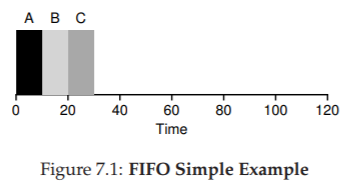
Từ Hình 7.1, ta thấy A hoàn tất ở thời điểm 10, B ở thời điểm 20, và C ở thời điểm 30. Như vậy, turnaround time trung bình của ba job đơn giản là:
$(10 + 20 + 30) / 3 = 20$
Tính turnaround time đơn giản chỉ vậy thôi.
Giờ hãy nới lỏng một giả định: cụ thể là giả định số 1, tức không còn giả định rằng mỗi job có cùng thời gian chạy. Vậy FIFO hoạt động thế nào trong trường hợp này? Bạn có thể tạo ra workload nào để khiến FIFO hoạt động tệ hại?
(hãy nghĩ kỹ trước khi đọc tiếp... nghĩ tiếp... rồi, hiểu chưa?)
Chắc hẳn bạn đã thấy rồi, nhưng để chắc chắn, hãy làm một ví dụ. Giả sử có ba job (A, B và C), lần này A chạy trong 100 giây, còn B và C chỉ chạy trong 10 giây.

Figure 7.2: Why FIFO Is Not That Great
Như thấy ở Hình 7.2, job A chạy trước suốt 100 giây, khiến B và C không được chạy cho đến khi A hoàn tất. Do đó, turnaround time trung bình của hệ thống rất cao: tận 110 giây $((100 + 110 + 120)/3 = 110)$.
Vấn đề này thường được gọi là convoy effect [B+79], trong đó một số job ngắn phải xếp hàng chờ sau một job rất dài tiêu thụ tài nguyên. Trường hợp này giống như bạn xếp hàng ở siêu thị và thấy người phía trước có ba xe đẩy chất đầy hàng hóa và đang lục ví lấy sổ séc — bạn sẽ phải chờ khá lâu^[2].
Vậy chúng ta nên làm gì? Làm thế nào để phát triển một thuật toán tốt hơn để xử lý thực tế rằng các job có thời gian chạy khác nhau? Hãy suy nghĩ trước, rồi đọc tiếp.
TIP: NGUYÊN LÝ CỦA SJF Shortest Job First (SJF) thể hiện một nguyên lý lập lịch tổng quát có thể áp dụng cho bất kỳ hệ thống nào mà turnaround time (thời gian quay vòng) cho mỗi khách hàng (hay ở đây là job) đều quan trọng. Hãy nghĩ đến bất kỳ hàng chờ nào bạn từng xếp: nếu cơ sở đó quan tâm đến sự hài lòng của khách hàng, rất có thể họ đã áp dụng SJF. Ví dụ, siêu thị thường có quầy thanh toán “dưới 10 món hàng” để đảm bảo người mua ít hàng không bị kẹt sau gia đình đang chuẩn bị dự trữ cho “mùa đông hạt nhân”.
7.4 Shortest Job First (SJF)
Hóa ra có một cách tiếp cận rất đơn giản để giải quyết vấn đề này; thực tế đây là một ý tưởng lấy từ operations research [C54,PV56] và áp dụng vào lập lịch job trong hệ thống máy tính. Chính sách lập lịch mới này gọi là Shortest Job First (SJF), và cái tên đủ rõ ràng: luôn chạy job ngắn nhất trước, sau đó đến job ngắn tiếp theo, và cứ thế.

Figure 7.3: SJF Simple Example
Hãy áp dụng ví dụ trước nhưng dùng SJF làm chính sách lập lịch. Hình 7.3 cho thấy kết quả khi chạy A, B và C. Hy vọng sơ đồ đã làm rõ vì sao SJF cải thiện đáng kể turnaround time trung bình. Chỉ đơn giản bằng việc chạy B và C trước A, SJF đã giảm turnaround time trung bình từ 110 giây xuống còn 50 giây $((10 + 20 + 120)/3 = 50)$, tức cải thiện hơn hai lần.
^[2]: Hành động khuyến nghị trong trường hợp này: hoặc nhanh chóng chuyển sang hàng khác, hoặc hít một hơi thật sâu rồi thở ra thật chậm. Đúng vậy, hít vào, thở ra. Mọi thứ sẽ ổn thôi, đừng lo lắng.
ASIDE: PREEMPTIVE SCHEDULERS Trong thời kỳ máy tính xử lý theo lô (batch computing), nhiều scheduler không hỗ trợ preemption (không thể ngắt job giữa chừng) đã được phát triển; hệ thống như vậy sẽ chạy từng job đến khi hoàn tất mới xem xét chạy job khác. Gần như tất cả scheduler hiện đại đều là preemptive (có thể ngắt), sẵn sàng dừng một process đang chạy để chuyển sang chạy process khác. Điều này ngụ ý rằng scheduler sử dụng các cơ chế mà chúng ta đã học trước đây; đặc biệt, scheduler có thể thực hiện context switch, tạm thời dừng một process đang chạy và tiếp tục (hoặc bắt đầu) một process khác.
Thực tế, với các giả định rằng tất cả job đến cùng lúc, chúng ta có thể chứng minh rằng SJF thực sự là một thuật toán lập lịch tối ưu. Tuy nhiên, bạn đang học môn systems, không phải lý thuyết hay operations research; nên sẽ không có chứng minh nào ở đây.
Như vậy, ta đã tìm được một cách tiếp cận khá tốt với SJF, nhưng các giả định vẫn còn quá phi thực tế. Hãy nới lỏng thêm một giả định nữa. Cụ thể, ta xét đến giả định số 2: thay vì giả định tất cả job đến cùng lúc, ta cho rằng các job có thể đến vào bất kỳ thời điểm nào. Vấn đề nào sẽ nảy sinh? (nghỉ một chút để suy nghĩ... bạn đang nghĩ chứ?... nào, bạn làm được mà)
Ta có thể minh họa vấn đề bằng một ví dụ. Lần này, giả sử A đến lúc $t = 0$ và cần chạy trong 100 giây, trong khi B và C đến ở $t = 10$ và mỗi job cần 10 giây. Với SJF thuần túy, ta sẽ có lịch chạy như trong Hình 7.4.

Figure 7.4: SJF With Late Arrivals From B and C
Như bạn thấy ở hình, mặc dù B và C đến ngay sau A, nhưng chúng vẫn buộc phải chờ cho đến khi A hoàn tất, do đó lại chịu cảnh convoy problem. Turnaround time trung bình của ba job là 103.33 giây $((100 + (110 - 10) + (120 - 10)) / 3)$. Vậy scheduler có thể làm gì?
7.5 Shortest Time-to-Completion First (STCF)
Để giải quyết vấn đề này, chúng ta cần nới lỏng giả định số 3 (rằng job phải chạy đến khi hoàn tất). Đồng thời, scheduler cũng cần có thêm cơ chế hỗ trợ. Như bạn có thể đoán, dựa trên thảo luận trước về timer interrupt và context switching, scheduler hoàn toàn có thể làm điều gì đó khi B và C đến: nó có thể preempt (ngắt) job A và quyết định chạy một job khác, có thể tiếp tục A sau đó. Theo định nghĩa, SJF là một scheduler non-preemptive (không ngắt giữa chừng), vì thế nó gặp vấn đề như đã mô tả.

Figure 7.5: STCF Simple Example
May mắn thay, có một loại scheduler thực hiện đúng điều này: thêm khả năng preemption vào SJF, gọi là Shortest Time-to-Completion First (STCF) hay Preemptive Shortest Job First (PSJF) [CK68]. Mỗi khi có một job mới đến hệ thống, STCF sẽ xác định trong số các job còn lại (bao gồm cả job mới) job nào có thời gian còn lại ngắn nhất, rồi lập lịch cho job đó. Trong ví dụ của chúng ta, STCF sẽ ngắt A và chạy B cùng C đến khi xong; chỉ khi đó thời gian còn lại của A mới được tiếp tục. Hình 7.5 minh họa điều này.
Kết quả là turnaround time trung bình cải thiện đáng kể: 50 giây $(((120 - 0) + (20 - 10) + (30 - 10))/3)$. Và giống như trước, với giả định mới này, STCF có thể chứng minh được là tối ưu. Nếu SJF tối ưu khi tất cả job đến cùng lúc, thì bạn chắc hẳn cũng thấy được trực giác đằng sau tính tối ưu của STCF.
7.6 Một chỉ số mới: Response Time
Như vậy, nếu ta biết độ dài job, biết rằng các job chỉ dùng CPU, và chỉ quan tâm đến turnaround time, thì STCF là một chính sách tuyệt vời. Thực tế, với một số hệ thống batch computing ban đầu, loại thuật toán lập lịch này là hợp lý. Tuy nhiên, sự xuất hiện của máy time-sharing đã thay đổi tất cả. Giờ đây, người dùng ngồi trước terminal và đòi hỏi khả năng tương tác từ hệ thống. Từ đó, một chỉ số mới ra đời: response time (thời gian đáp ứng).
Chúng ta định nghĩa response time là khoảng thời gian từ lúc job đến hệ thống cho đến lần đầu tiên nó được lập lịch^[3]. Một cách chính thức:
$$ T_{response} = T_{firstrun} - T_{arrival} \quad (7.2) $$

Figure 7.6: SJF Again (Bad for Response Time)
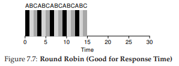
Figure 7.7: Round Robin (Good For Response Time)
^[3]: Một số định nghĩa khác bao gồm cả thời gian cho đến khi job tạo ra một “phản hồi”; định nghĩa ở đây là phiên bản tốt nhất, giả định rằng job tạo phản hồi ngay lập tức.
Ví dụ, nếu ta xét lịch từ Hình 7.5 (A đến lúc 0, B và C đến lúc 10), thì response time của mỗi job là: 0 cho A, 0 cho B, và 10 cho C (trung bình: 3.33).
Như bạn có thể đoán, STCF và các chính sách tương tự không thực sự tốt cho response time. Nếu ba job đến cùng lúc, job thứ ba sẽ phải chờ hai job trước chạy xong hoàn toàn trước khi được lập lịch. Trong khi rất tốt cho turnaround time, thì đây lại là điều tệ hại cho response time và tính tương tác. Hãy tưởng tượng bạn ngồi ở terminal, gõ lệnh, và phải chờ 10 giây mới thấy hệ thống phản hồi chỉ vì một job khác được lập lịch trước bạn — không hề dễ chịu.
Như vậy, chúng ta lại đối diện một vấn đề khác: làm thế nào để xây dựng scheduler nhạy cảm với response time?
7.7 Round Robin
Để giải quyết vấn đề này, ta sẽ giới thiệu một thuật toán lập lịch mới, cổ điển gọi là Round Robin (RR) [K64]. Ý tưởng cơ bản rất đơn giản: thay vì chạy job đến khi hoàn tất, RR chạy một job trong một khoảng thời gian gọi là time slice (đôi khi gọi là scheduling quantum), rồi chuyển sang job tiếp theo trong hàng đợi. Quá trình này lặp đi lặp lại cho đến khi tất cả job hoàn tất. Vì lý do này, RR đôi khi còn gọi là time-slicing.
Lưu ý rằng độ dài của time slice phải là bội số của chu kỳ timer interrupt; ví dụ, nếu timer ngắt mỗi 10 mili-giây, thì time slice có thể là 10, 20 hoặc bội số khác của 10 ms.
Để hiểu rõ hơn về RR, hãy xét một ví dụ. Giả sử ba job A, B, và C đến cùng lúc trong hệ thống, và mỗi job cần chạy 5 giây. Một scheduler SJF sẽ chạy từng job đến hoàn tất rồi mới chuyển sang job khác (Hình 7.6). Ngược lại, RR với time slice 1 giây sẽ luân phiên qua các job rất nhanh (Hình 7.7).
Response time trung bình của RR là $(0+1+2)/3 = 1$; còn với SJF, response time trung bình là $(0+5+10)/3 = 5$.
TIP: AMORTIZATION CÓ THỂ GIẢM CHI PHÍ Kỹ thuật tổng quát gọi là amortization thường được dùng trong hệ thống khi một thao tác có chi phí cố định. Bằng cách thực hiện thao tác ít lần hơn, tổng chi phí sẽ giảm. Ví dụ, nếu time slice đặt là 10 ms và chi phí context switch là 1 ms, thì khoảng 10% thời gian bị lãng phí cho context switch. Nếu muốn amortize chi phí này, ta có thể tăng time slice, ví dụ lên 100 ms. Khi đó, chưa đến 1% thời gian bị lãng phí, và chi phí của time-slicing đã được amortize.
Như bạn thấy, độ dài time slice có vai trò then chốt trong RR. Time slice càng ngắn, hiệu năng của RR theo chỉ số response time càng tốt. Tuy nhiên, nếu quá ngắn, chi phí context switching sẽ trở nên chi phối và làm giảm hiệu năng tổng thể. Do đó, việc chọn độ dài time slice là một trade-off (cân bằng đánh đổi) đối với nhà thiết kế hệ thống: đủ dài để amortize chi phí switching nhưng không quá dài để làm hệ thống kém tương tác.
Lưu ý rằng chi phí context switching không chỉ đến từ việc OS lưu và khôi phục vài thanh ghi. Khi chương trình chạy, nó tạo ra rất nhiều trạng thái trong CPU cache, TLB, bộ dự đoán nhánh và các phần cứng trong chip khác. Chuyển sang job khác khiến các trạng thái này bị xóa và thay bằng trạng thái mới, gây ra chi phí hiệu năng đáng kể [MB91].
Với một time slice hợp lý, RR là một scheduler tuyệt vời nếu chỉ xét response time. Nhưng còn turnaround time thì sao? Hãy quay lại ví dụ trên. A, B, và C, mỗi job chạy 5 giây, đến cùng lúc, và RR dùng time slice 1 giây. Ta thấy từ hình minh họa rằng A hoàn tất ở thời điểm 13, B ở 14, và C ở 15, với turnaround time trung bình là 14. Rất tệ!
Không ngạc nhiên khi RR là một trong những chính sách tệ nhất nếu xét theo turnaround time. Trực giác mà nói, điều này hợp lý: RR kéo dài thời gian hoàn tất của mỗi job bằng cách chỉ chạy từng phần nhỏ rồi chuyển sang job khác. Vì turnaround time chỉ quan tâm đến khi job kết thúc, RR gần như pessimal (tệ hại nhất), thậm chí còn tệ hơn FIFO trong nhiều trường hợp.
Nói chung, bất kỳ chính sách nào (như RR) mà công bằng — chia CPU đều cho các process trong ngắn hạn — thì sẽ hoạt động tệ với chỉ số như turnaround time. Đây là một trade-off cố hữu: nếu chấp nhận “không công bằng”, bạn có thể cho job ngắn chạy xong sớm, nhưng đánh đổi bằng response time kém; còn nếu coi trọng công bằng, response time sẽ được cải thiện, nhưng turnaround time lại xấu đi. Kiểu đánh đổi này rất phổ biến trong hệ thống; bạn không thể “vừa giữ được cái bánh, vừa ăn nó”^[4].
Chúng ta đã phát triển hai loại scheduler. Loại thứ nhất (SJF, STCF) tối ưu turnaround time nhưng tệ cho response time. Loại thứ hai (RR) tối ưu response time nhưng tệ cho turnaround time. Và chúng ta vẫn còn hai giả định cần nới lỏng: giả định 4 (các job không làm I/O) và giả định 5 (thời gian chạy của mỗi job là đã biết). Hãy tiếp tục với chúng.
TIP: OVERLAP GIÚP TĂNG HIỆU SUẤT Khi có thể, hãy overlap (chồng chéo) các thao tác để tối đa hóa việc sử dụng hệ thống. Overlap hữu ích trong nhiều lĩnh vực, chẳng hạn khi thực hiện disk I/O hoặc gửi thông điệp đến máy từ xa; trong cả hai trường hợp, bắt đầu một tác vụ rồi chuyển sang công việc khác là một ý tưởng tốt, giúp cải thiện hiệu suất và khả năng tận dụng tài nguyên của hệ thống.
7.8 Kết hợp với I/O
Trước tiên, ta nới lỏng giả định số 4 — hiển nhiên tất cả chương trình đều thực hiện I/O. Hãy tưởng tượng một chương trình không có input: nó sẽ tạo ra cùng một output mỗi lần chạy. Tưởng tượng một chương trình không có output: giống như “cái cây ngã trong rừng mà không ai thấy”; việc nó chạy chẳng có ý nghĩa gì.
Scheduler rõ ràng phải đưa ra quyết định khi một job khởi tạo yêu cầu I/O, vì job đang chạy sẽ không dùng CPU trong lúc chờ I/O hoàn tất; nó sẽ bị blocked (chặn). Nếu I/O gửi đến ổ cứng, process có thể bị chặn vài mili-giây hoặc lâu hơn, tùy vào tải I/O hiện tại của ổ. Do đó, scheduler có lẽ nên lập lịch một job khác dùng CPU tại thời điểm đó.
Scheduler cũng phải quyết định khi I/O hoàn tất. Khi đó, một interrupt được phát sinh, và OS sẽ đưa process phát lệnh I/O từ trạng thái blocked trở lại ready state. Tất nhiên, scheduler thậm chí có thể quyết định chạy job đó ngay lúc này. Vậy OS nên đối xử với mỗi job như thế nào?
Để hiểu rõ hơn, giả sử ta có hai job, A và B, mỗi job cần 50 ms CPU. Tuy nhiên, có một khác biệt rõ rệt: A chạy 10 ms rồi phát lệnh I/O (giả sử mỗi I/O mất 10 ms), còn B chỉ dùng CPU 50 ms và không thực hiện I/O. Scheduler chạy A trước, rồi đến B (Hình 7.8).
Giả sử ta muốn xây dựng một scheduler STCF. Làm thế nào để scheduler này tính đến thực tế rằng A bị chia thành 5 đoạn 10 ms, trong khi B chỉ có một nhu cầu CPU duy nhất 50 ms? Rõ ràng, chỉ đơn giản chạy từng job mà không xét I/O là vô nghĩa.
^[4]: Một câu nói gây nhầm lẫn, bởi đúng ra phải là “Bạn không thể vừa giữ bánh vừa ăn nó” (điều hiển nhiên, đúng không?). Thật đáng kinh ngạc khi Wikipedia có hẳn một trang về câu này; và còn thú vị để đọc nữa [W15]. Trong tiếng Ý, người ta nói “Avere la botte piena e la moglie ubriaca”.


Một cách tiếp cận phổ biến là coi mỗi đoạn 10 ms của A như một job độc lập. Như vậy, khi hệ thống khởi động, lựa chọn là lập lịch cho A (10 ms) hay B (50 ms). Với STCF, lựa chọn rõ ràng: chọn job ngắn hơn, tức A. Sau khi đoạn đầu của A hoàn tất, chỉ còn B, và nó bắt đầu chạy. Khi một đoạn mới của A được gửi vào, nó sẽ preempt B và chạy 10 ms.
Cách làm này cho phép overlap: CPU được một process sử dụng trong khi process khác chờ I/O, nhờ đó hệ thống tận dụng tốt hơn (Hình 7.9). Và như vậy, ta thấy cách scheduler kết hợp I/O: bằng cách coi mỗi CPU burst là một job, scheduler đảm bảo các process “tương tác” được chạy thường xuyên. Trong khi các job này thực hiện I/O, các job nặng CPU khác được chạy, giúp CPU được khai thác hiệu quả hơn.
7.9 Không còn “Oracle” nữa
Với cách tiếp cận cơ bản cho I/O, ta đến với giả định cuối cùng: scheduler biết trước độ dài mỗi job. Như đã nói, đây có lẽ là giả định tệ nhất. Trên thực tế, trong một OS đa mục đích (general-purpose OS), OS thường biết rất ít về độ dài mỗi job. Vậy làm sao xây dựng cách tiếp cận hoạt động giống SJF/STCF mà không cần kiến thức tiên nghiệm? Hơn nữa, làm sao ta kết hợp được các ý tưởng từ RR để cải thiện response time?
7.10 Tóm tắt
Chúng ta đã giới thiệu các ý tưởng cơ bản về scheduling và phát triển hai nhóm phương pháp. Nhóm thứ nhất chạy job ngắn nhất còn lại, tối ưu turnaround time. Nhóm thứ hai luân phiên qua tất cả job, tối ưu response time. Cả hai đều kém ở điểm mà nhóm kia mạnh, một trade-off vốn rất phổ biến trong hệ thống.
Chúng ta cũng đã thấy cách tích hợp I/O, nhưng vẫn chưa giải quyết được vấn đề cốt lõi: OS không thể nhìn thấy tương lai. Ngay sau đây, ta sẽ thấy cách khắc phục vấn đề này, bằng cách xây dựng một scheduler sử dụng quá khứ gần để dự đoán tương lai. Scheduler này được gọi là multi-level feedback queue, và nó sẽ là chủ đề của chương tiếp theo.
Tham khảo
[B+79] “The Convoy Phenomenon”
M. Blasgen, J. Gray, M. Mitoma, T. Price
ACM Operating Systems Review, 13:2, April 1979
Perhaps the first reference to convoys, which occurs in databases as well as the OS.
[C54] “Priority Assignment in Waiting Line Problems”
A. Cobham
Journal of Operations Research, 2:70, pages 70–76, 1954
The pioneering paper on using an SJF approach in scheduling the repair of machines.
[K64] “Analysis of a Time-Shared Processor”
Leonard Kleinrock
Naval Research Logistics Quarterly, 11:1, pages 59–73, March 1964
May be the first reference to the round-robin scheduling algorithm; certainly one of the first analyses of said approach to scheduling a time-shared system.
[CK68] “Computer Scheduling Methods and their Countermeasures”
Edward G. Coffman and Leonard Kleinrock
AFIPS ’68 (Spring), April 1968
An excellent early introduction to and analysis of a number of basic scheduling disciplines.
[J91] “The Art of Computer Systems Performance Analysis:Techniques for Experimental Design, Measurement, Simulation, and Modeling”
R. Jain
Interscience, New York, April 1991
The standard text on computer systems measurement. A great reference for your library, for sure.
[O45] “Animal Farm”
George Orwell
Secker and Warburg (London), 1945
A great but depressing allegorical book about power and its corruptions. Some say it is a critique of Stalin and the pre-WWII Stalin era in the U.S.S.R; we say it’s a critique of pigs.
[PV56] “Machine Repair as a Priority Waiting-Line Problem”
Thomas E. Phipps Jr. and W. R. Van Voorhis
Operations Research, 4:1, pages 76–86, February 1956
Follow-on work that generalizes the SJF approach to machine repair from Cobham’s original work; also postulates the utility of an STCF approach in such an environment. Specifically, “There are certain types of repair work, ... involving much dismantling and covering the floor with nuts and bolts, which certainly should not be interrupted once undertaken; in other cases it would be inadvisable to continue work on a long job if one or more short ones became available (p.81).”
[MB91] “The effect of context switches on cache performance”
Jeffrey C. Mogul and Anita Borg
ASPLOS, 1991
A nice study on how cache performance can be affected by context switching; less of an issue in today’s systems where processors issue billions of instructions per second but context-switches still happen in the millisecond time range.
[W15] “You can’t have your cake and eat it”
http://en.wikipedia.org/wiki/You can’t have your cake and eat it
Wikipedia, as of December 2015
The best part of this page is reading all the similar idioms from other languages. In Tamil, you can’t “have both the moustache and drink the soup.”
8 Scheduling: Multi-Level Feedback Queue
Trong chương này, chúng ta sẽ giải quyết vấn đề phát triển một trong những phương pháp scheduling (lập lịch) nổi tiếng nhất, được gọi là Multi-level Feedback Queue (MLFQ – Hàng đợi phản hồi đa mức). Bộ lập lịch MLFQ lần đầu tiên được mô tả bởi Corbato và cộng sự vào năm 1962 [C+62] trong một hệ thống có tên Compatible Time-Sharing System (CTSS – Hệ thống chia sẻ thời gian tương thích). Công trình này, cùng với các nghiên cứu sau đó trên hệ thống Multics, đã giúp Corbato nhận được giải thưởng cao quý nhất của ACM – Turing Award. Thuật toán lập lịch này sau đó đã được tinh chỉnh qua nhiều năm để trở thành các phiên bản triển khai mà bạn sẽ gặp trong một số hệ thống hiện đại.
Vấn đề cơ bản mà MLFQ cố gắng giải quyết gồm hai khía cạnh:
- Tối ưu hóa turnaround time (thời gian hoàn thành), mà như chúng ta đã thấy ở phần trước, được thực hiện bằng cách chạy các job (công việc) ngắn trước. Tuy nhiên, hệ điều hành (OS) thường không biết chính xác một job sẽ chạy trong bao lâu – đây lại chính là thông tin mà các thuật toán như SJF (Shortest Job First) hoặc STCF (Shortest Time-to-Completion First) yêu cầu.
- Tăng tính phản hồi đối với người dùng tương tác (interactive users – ví dụ: người dùng đang ngồi trước màn hình chờ một process (tiến trình) hoàn thành), tức là giảm response time (thời gian phản hồi). Các thuật toán như Round Robin có thể giảm response time, nhưng lại rất tệ đối với turnaround time.
Vậy, vấn đề đặt ra là: khi chúng ta không biết trước thông tin về một process, làm thế nào để xây dựng một scheduler (bộ lập lịch) đạt được cả hai mục tiêu trên? Làm thế nào để scheduler có thể học được đặc điểm của các job khi hệ thống đang chạy, từ đó đưa ra quyết định lập lịch tốt hơn?
THE CRUX: HOW TO SCHEDULE WITHOUT PERFECT KNOWLEDGE?
Làm thế nào để thiết kế một scheduler vừa giảm thiểu response time cho các job tương tác, vừa giảm turnaround time, mà không cần biết trước độ dài của job?
TIP: LEARN FROM HISTORY
Multi-level Feedback Queue là một ví dụ điển hình về hệ thống học từ quá khứ để dự đoán tương lai. Cách tiếp cận này phổ biến trong hệ điều hành (và nhiều lĩnh vực khác của Khoa học Máy tính, bao gồm cả bộ dự đoán nhánh phần cứng – hardware branch predictors – và các thuật toán caching). Phương pháp này hiệu quả khi các job có các pha hành vi (behavior phases) và do đó có thể dự đoán được. Tuy nhiên, cần thận trọng vì nếu dự đoán sai, hệ thống có thể đưa ra quyết định còn tệ hơn cả khi không biết gì.
8.1 MLFQ: Các quy tắc cơ bản
Để xây dựng một scheduler như vậy, trong chương này chúng ta sẽ mô tả các thuật toán cơ bản đằng sau MLFQ. Mặc dù chi tiết triển khai của nhiều phiên bản MLFQ khác nhau [E95], nhưng hầu hết đều có nguyên tắc tương tự.
Trong mô hình này, MLFQ có một số hàng đợi (queue) riêng biệt, mỗi hàng đợi được gán một mức ưu tiên (priority) khác nhau. Tại một thời điểm bất kỳ, một job sẵn sàng chạy sẽ nằm trong một hàng đợi duy nhất. MLFQ sử dụng priority để quyết định job nào sẽ chạy: job có priority cao hơn (nằm ở hàng đợi cao hơn) sẽ được chọn chạy.
Tất nhiên, có thể có nhiều job trong cùng một hàng đợi, tức là có cùng priority. Trong trường hợp này, chúng ta sẽ sử dụng Round Robin để chia sẻ CPU giữa các job đó.
Hai quy tắc cơ bản đầu tiên của MLFQ:
- Rule 1: Nếu Priority(A) > Priority(B), A chạy (B không chạy).
- Rule 2: Nếu Priority(A) = Priority(B), A và B chạy theo Round Robin.
Điểm mấu chốt của MLFQ nằm ở cách scheduler thiết lập priority. Thay vì gán một priority cố định cho mỗi job, MLFQ thay đổi priority dựa trên hành vi quan sát được:
- Nếu một job thường xuyên nhường CPU để chờ nhập liệu từ bàn phím, MLFQ sẽ giữ priority cao cho nó (đặc trưng của process tương tác).
- Nếu một job sử dụng CPU liên tục trong thời gian dài, MLFQ sẽ giảm priority của nó.
Bằng cách này, MLFQ học về process khi nó chạy và dùng lịch sử của job để dự đoán hành vi tương lai.
Ví dụ, nếu minh họa trạng thái các hàng đợi tại một thời điểm (Hình 8.1), ta có thể thấy: hai job (A và B) ở mức priority cao nhất, job C ở mức trung bình, và job D ở mức thấp nhất. Theo nguyên tắc MLFQ, scheduler sẽ luân phiên cấp CPU cho A và B, còn C và D sẽ không được chạy – điều này rõ ràng là không công bằng.

Tuy nhiên, chỉ nhìn vào một ảnh chụp tĩnh của các hàng đợi thì chưa thể hiểu rõ MLFQ hoạt động thế nào. Điều quan trọng là phải xem priority của job thay đổi theo thời gian ra sao – và đó chính là điều chúng ta sẽ tìm hiểu tiếp theo.
8.2 Lần thử thứ nhất: Cách thay đổi priority
Bây giờ, chúng ta cần quyết định cách MLFQ sẽ thay đổi priority của một job (và do đó thay đổi hàng đợi của nó) trong suốt vòng đời. Cần nhớ rằng workload của chúng ta là sự kết hợp giữa:
- Các job tương tác, chạy ngắn (thường xuyên nhường CPU).
- Các job CPU-bound (dùng CPU nhiều), chạy dài, không yêu cầu response time thấp.
Để làm điều này, chúng ta cần một khái niệm mới: allotment của job.
Allotment là lượng thời gian mà một job có thể chạy ở một mức priority nhất định trước khi scheduler giảm priority của nó. Để đơn giản, ban đầu ta giả sử allotment = một time slice.
Thuật toán điều chỉnh priority đầu tiên:
- Rule 3: Khi một job vào hệ thống, nó được đặt ở mức priority cao nhất (hàng đợi trên cùng).
- Rule 4a: Nếu job dùng hết allotment khi chạy, priority của nó bị giảm (chuyển xuống một hàng đợi).
- Rule 4b: Nếu job nhường CPU (ví dụ: thực hiện I/O) trước khi allotment hết, nó giữ nguyên priority (allotment được đặt lại).

Hình 8.2: Job chạy dài theo thời gian
Ví dụ 1: Một job chạy dài duy nhất
Giả sử có một job chạy dài trong hệ thống, time slice = 10 ms, allotment = time slice. Hình 8.2 minh họa quá trình:
- Job bắt đầu ở priority cao nhất (Q2).
- Sau 10 ms, scheduler giảm priority xuống Q1.
- Sau một time slice ở Q1, job bị giảm xuống Q0 (thấp nhất) và ở đó mãi.
Ví dụ 2: Xuất hiện một job ngắn
Giờ xét trường hợp phức tạp hơn để thấy MLFQ xấp xỉ SJF:
- Job A: chạy dài, CPU-bound.
- Job B: chạy ngắn, tương tác.
Giả sử A đã chạy một thời gian và đang ở priority thấp nhất. Khi B đến (T = 100 ms), nó được đưa vào priority cao nhất. Vì B chỉ chạy 20 ms, nó hoàn thành trước khi bị giảm xuống priority thấp hơn. Sau đó, A tiếp tục chạy ở priority thấp.
Từ ví dụ này, ta thấy: vì không biết job là ngắn hay dài, MLFQ giả định ban đầu là job ngắn và cho priority cao. Nếu đúng là job ngắn, nó sẽ hoàn thành nhanh; nếu không, nó sẽ dần bị đẩy xuống các hàng đợi thấp hơn, trở thành job batch dài hạn. Bằng cách này, MLFQ xấp xỉ SJF.

Ví dụ 3: với I/O
Bây giờ, hãy xem một ví dụ có liên quan đến I/O (Input/Output – nhập/xuất). Như Rule 4b đã nêu ở trên, nếu một process (tiến trình) nhường CPU trước khi sử dụng hết allotment (phần thời gian được cấp ở một mức ưu tiên), chúng ta sẽ giữ nó ở cùng mức priority (ưu tiên). Ý tưởng của quy tắc này rất đơn giản: nếu một interactive job (công việc tương tác), ví dụ, thực hiện nhiều thao tác I/O (chẳng hạn chờ nhập liệu từ bàn phím hoặc chuột), nó sẽ nhường CPU trước khi allotment kết thúc; trong trường hợp này, chúng ta không muốn phạt job đó, và do đó giữ nguyên mức priority.
Hình 8.3 (bên phải) minh họa cách hoạt động: một interactive job B (màu xám) chỉ cần CPU trong 1 ms trước khi thực hiện I/O, cạnh tranh CPU với một batch job chạy dài A (màu đen). Cách tiếp cận MLFQ giữ B ở mức priority cao nhất vì B liên tục nhường CPU; nếu B là một interactive job, MLFQ đạt được mục tiêu chạy nhanh các job tương tác.
Vấn đề với MLFQ hiện tại
Như vậy, chúng ta đã có một MLFQ cơ bản. Nó dường như hoạt động khá tốt: chia sẻ CPU công bằng giữa các job chạy dài, và cho phép các job ngắn hoặc tương tác nhiều với I/O chạy nhanh. Tuy nhiên, cách tiếp cận này vẫn tồn tại những nhược điểm nghiêm trọng. Bạn có đoán ra không?
(Đây là lúc bạn tạm dừng và suy nghĩ một cách “xảo quyệt” nhất có thể)
- Starvation (đói CPU): nếu có “quá nhiều” interactive job trong hệ thống, chúng sẽ chiếm toàn bộ thời gian CPU, khiến các job chạy dài không bao giờ nhận được CPU (bị đói). Chúng ta muốn đảm bảo các job này vẫn có tiến triển, ngay cả trong tình huống này.
- Gaming the scheduler (lách luật bộ lập lịch): một người dùng thông minh có thể viết lại chương trình để “đánh lừa” scheduler, nhằm nhận được nhiều tài nguyên hơn mức công bằng. Thuật toán hiện tại dễ bị tấn công như sau: trước khi allotment hết, thực hiện một thao tác I/O (ví dụ ghi/đọc file) để nhường CPU; việc này giúp job ở lại cùng hàng đợi, và do đó nhận được tỷ lệ CPU cao hơn. Nếu làm khéo (ví dụ chạy 99% allotment rồi mới nhường CPU), một job có thể gần như độc chiếm CPU.
- Thay đổi hành vi theo thời gian: một chương trình ban đầu CPU-bound (dùng CPU nhiều) có thể chuyển sang giai đoạn tương tác. Với cách tiếp cận hiện tại, job này sẽ không được đối xử như các interactive job khác.
TIP: SCHEDULING MUST BE SECURE FROM ATTACK
Bạn có thể nghĩ rằng một scheduling policy (chính sách lập lịch), dù bên trong hệ điều hành hay trong bối cảnh rộng hơn (ví dụ: xử lý yêu cầu I/O trong hệ thống lưu trữ phân tán [Y+18]), không liên quan đến bảo mật. Nhưng ngày càng nhiều trường hợp cho thấy điều ngược lại. Hãy xem xét một data center hiện đại, nơi người dùng từ khắp thế giới chia sẻ CPU, bộ nhớ, mạng và hệ thống lưu trữ; nếu không cẩn trọng trong thiết kế và thực thi chính sách, một người dùng có thể gây hại cho người khác và giành lợi thế cho mình. Do đó, scheduling policy là một phần quan trọng của bảo mật hệ thống và cần được xây dựng cẩn thận.
8.3 Lần thử #2: Priority Boost
Hãy thử thay đổi quy tắc để tránh vấn đề starvation. Chúng ta có thể làm gì để đảm bảo các job CPU-bound vẫn có tiến triển (dù ít)?
Ý tưởng đơn giản: định kỳ tăng priority cho tất cả job trong hệ thống. Có nhiều cách thực hiện, nhưng ta chọn cách đơn giản: đưa tất cả lên hàng đợi cao nhất. Do đó, có thêm quy tắc mới:
- Rule 5: Sau một khoảng thời gian S, di chuyển tất cả job trong hệ thống lên hàng đợi cao nhất.
Quy tắc mới này giải quyết hai vấn đề:
- Không bị đói CPU: khi ở hàng đợi cao nhất, job sẽ chia sẻ CPU với các job ưu tiên cao khác theo Round Robin, và cuối cùng sẽ được chạy.
- Thay đổi hành vi: nếu một job CPU-bound trở thành interactive, scheduler sẽ xử lý đúng sau khi job được tăng priority.

Ví dụ: Một job chạy dài cạnh tranh CPU với hai job tương tác ngắn.
- Hình 8.4 (trái): Không có priority boost → job chạy dài bị đói khi hai job ngắn xuất hiện.
- Hình 8.4 (phải): Có priority boost mỗi 100 ms (giá trị này có thể quá nhỏ, nhưng dùng để minh họa) → job chạy dài được tăng priority định kỳ và có cơ hội chạy.
Tất nhiên, việc thêm khoảng thời gian S dẫn đến câu hỏi: S nên là bao nhiêu? John Ousterhout – một nhà nghiên cứu hệ thống nổi tiếng [O11] – gọi các giá trị như vậy là voo-doo constants (hằng số “ma thuật”), vì việc chọn đúng giá trị giống như cần phép thuật. Nếu S quá lớn → job chạy dài có thể bị đói; nếu quá nhỏ → job tương tác không được chia CPU hợp lý. Thường thì quản trị viên hệ thống sẽ điều chỉnh, hoặc hiện nay, dùng phương pháp tự động dựa trên machine learning [A+17].
8.4 Lần thử #3: Better Accounting
Chúng ta còn một vấn đề: ngăn chặn việc lách luật scheduler. Thủ phạm chính là Rules 4a và 4b, cho phép job giữ nguyên priority nếu nhường CPU trước khi allotment hết. Giải pháp?
TIP: AVOID VOO-DOO CONSTANTS (OUSTERHOUT’S LAW)
Tránh dùng voo-doo constants là ý tưởng tốt khi có thể. Nhưng như ví dụ trên, điều này thường khó. Có thể làm hệ thống tự học giá trị phù hợp, nhưng cũng không đơn giản. Kết quả thường thấy: một file cấu hình đầy giá trị mặc định, để quản trị viên giàu kinh nghiệm tinh chỉnh khi cần. Thực tế, chúng thường bị bỏ mặc, và chúng ta chỉ hy vọng giá trị mặc định hoạt động tốt. Mẹo này đến từ giáo sư OS John Ousterhout, nên được gọi là Ousterhout’s Law.
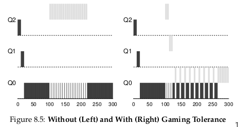
Giải pháp: Thực hiện better accounting (ghi nhận chính xác hơn) thời gian CPU ở mỗi mức MLFQ. Thay vì quên allotment đã dùng khi job thực hiện I/O, scheduler sẽ ghi nhớ; khi job dùng hết allotment, nó bị giảm priority, bất kể dùng một lần dài hay nhiều lần ngắn. Do đó, gộp Rules 4a và 4b thành: Rule 4: Khi một job dùng hết allotment ở một mức (bất kể bao nhiêu lần nhường CPU), priority của nó bị giảm (chuyển xuống một hàng đợi).
Ví dụ: Hình 8.5 cho thấy:
- Trái: Với Rules 4a và 4b cũ → job có thể thực hiện I/O trước khi allotment hết, giữ nguyên priority và chiếm CPU.
- Phải: Với better accounting → bất kể hành vi I/O, job sẽ dần bị giảm priority, không thể chiếm CPU quá mức.
8.5 Tinh chỉnh MLFQ và các vấn đề khác
Một số vấn đề khác cũng phát sinh với MLFQ scheduling (lập lịch hàng đợi phản hồi đa mức). Một câu hỏi lớn là làm thế nào để tham số hóa (parameterize) một bộ lập lịch như vậy. Ví dụ: nên có bao nhiêu hàng đợi? Time slice (lượng thời gian chia cho mỗi tiến trình trong một vòng lập lịch) cho mỗi hàng đợi nên dài bao nhiêu? Allotment (tổng thời gian được cấp ở một mức ưu tiên) là bao nhiêu? Bao lâu thì nên boost priority (tăng mức ưu tiên) để tránh starvation (đói CPU) và phản ánh sự thay đổi trong hành vi của tiến trình?
Không có câu trả lời đơn giản cho những câu hỏi này, và do đó chỉ có kinh nghiệm thực tế với các workload (khối lượng công việc) và việc tinh chỉnh bộ lập lịch sau đó mới có thể dẫn đến một sự cân bằng hợp lý.
Ví dụ, hầu hết các biến thể của MLFQ cho phép thay đổi độ dài time slice giữa các hàng đợi khác nhau. Các hàng đợi ưu tiên cao thường được cấp time slice ngắn; chúng bao gồm các interactive job (tác vụ tương tác), và do đó việc chuyển đổi nhanh giữa chúng là hợp lý (ví dụ: 10 mili-giây hoặc ít hơn). Ngược lại, các hàng đợi ưu tiên thấp chứa các long-running job (tác vụ chạy dài) vốn CPU-bound (phụ thuộc nhiều vào CPU); vì vậy, time slice dài hơn sẽ hiệu quả hơn (ví dụ: hàng trăm mili-giây).
Hình 8.6 minh họa một ví dụ trong đó hai job chạy 20 ms ở hàng đợi cao nhất (với time slice 10 ms), 40 ms ở hàng giữa (time slice 20 ms), và với time slice 40 ms ở hàng thấp nhất.

Hình 8.6: Mức ưu tiên thấp hơn, lượng thời gian (quanta) dài hơn.
Triển khai MLFQ của Solaris — lớp lập lịch Time-Sharing (TS) — đặc biệt dễ cấu hình; nó cung cấp một tập hợp các bảng xác định chính xác cách mức ưu tiên của một process (tiến trình) thay đổi trong suốt vòng đời của nó, độ dài mỗi time slice, và tần suất tăng mức ưu tiên của một job [AD00]. Quản trị viên có thể chỉnh sửa bảng này để khiến bộ lập lịch hoạt động theo những cách khác nhau.
Giá trị mặc định của bảng là 60 hàng đợi, với độ dài time slice tăng dần từ 20 mili-giây (ưu tiên cao nhất) đến vài trăm mili-giây (ưu tiên thấp nhất), và mức ưu tiên được tăng khoảng mỗi 1 giây.
Các bộ lập lịch MLFQ khác không sử dụng bảng hoặc các quy tắc chính xác như mô tả trong chương này; thay vào đó, chúng điều chỉnh mức ưu tiên bằng các công thức toán học. Ví dụ, bộ lập lịch FreeBSD (phiên bản 4.3) sử dụng một công thức để tính mức ưu tiên hiện tại của một job, dựa trên lượng CPU mà process đã sử dụng [LM+89]; ngoài ra, mức sử dụng này bị decay (giảm dần) theo thời gian, cung cấp hiệu ứng tăng ưu tiên theo một cách khác so với mô tả ở đây. Xem bài báo của Epema để có cái nhìn tổng quan xuất sắc về các thuật toán decay-usage và đặc tính của chúng [E95].
Cuối cùng, nhiều bộ lập lịch còn có một số tính năng khác mà bạn có thể gặp. Ví dụ, một số bộ lập lịch dành các mức ưu tiên cao nhất cho công việc của hệ điều hành; do đó các job của người dùng thông thường sẽ không bao giờ đạt được mức ưu tiên cao nhất trong hệ thống. Một số hệ thống cũng cho phép người dùng cung cấp advice (gợi ý) để giúp thiết lập mức ưu tiên; ví dụ, bằng cách sử dụng tiện ích dòng lệnh nice, bạn có thể tăng hoặc giảm mức ưu tiên của một job (ở một mức độ nhất định) và do đó tăng hoặc giảm khả năng nó được chạy tại một thời điểm nhất định. Xem man page để biết thêm chi tiết.
TIP: USE ADVICE WHERE POSSIBLE
Vì hệ điều hành hiếm khi biết điều gì là tốt nhất cho từng process trong hệ thống, nên việc cung cấp các giao diện cho phép người dùng hoặc quản trị viên đưa ra một số gợi ý cho OS thường rất hữu ích. Chúng ta thường gọi những gợi ý này là advice, vì OS không nhất thiết phải tuân theo, nhưng có thể cân nhắc chúng để đưa ra quyết định tốt hơn. Những gợi ý như vậy hữu ích ở nhiều phần của OS, bao gồm bộ lập lịch (ví dụ: vớinice), memory manager (trình quản lý bộ nhớ, ví dụ:madvise), và file system (hệ thống tệp, ví dụ: informed prefetching và caching [P+95]).
8.6 MLFQ: Tóm tắt
Chúng ta đã mô tả một phương pháp lập lịch được gọi là Multi-Level Feedback Queue (MLFQ — hàng đợi phản hồi đa mức). Hy vọng bạn đã thấy lý do tại sao nó được gọi như vậy: nó có nhiều mức hàng đợi, và sử dụng feedback (phản hồi) để xác định mức ưu tiên của một job nhất định. Lịch sử thực thi là kim chỉ nam: quan sát cách các job hoạt động theo thời gian và xử lý chúng tương ứng.
Bộ quy tắc MLFQ đã được tinh chỉnh, rải rác trong chương, được tổng hợp lại ở đây:
- Rule 1: Nếu Priority(A) > Priority(B), A chạy (B không chạy).
- Rule 2: Nếu Priority(A) = Priority(B), A và B chạy theo kiểu round-robin (xoay vòng) sử dụng time slice (độ dài quantum) của hàng đợi tương ứng.
- Rule 3: Khi một job vào hệ thống, nó được đặt ở mức ưu tiên cao nhất (hàng đợi trên cùng).
- Rule 4: Khi một job sử dụng hết allotment (tổng thời gian được cấp) ở một mức (bất kể nó đã nhường CPU bao nhiêu lần), mức ưu tiên của nó bị giảm (tức là nó xuống một hàng đợi).
- Rule 5: Sau một khoảng thời gian S, di chuyển tất cả các job trong hệ thống lên hàng đợi trên cùng.
MLFQ thú vị ở chỗ: thay vì yêu cầu biết trước bản chất của một job, nó quan sát quá trình thực thi và ưu tiên nó tương ứng. Theo cách này, nó đạt được lợi ích của cả hai thế giới: có thể cung cấp hiệu năng tổng thể xuất sắc (tương tự SJF/STCF) cho các job tương tác ngắn hạn, đồng thời vẫn công bằng và đảm bảo tiến độ cho các workload dài hạn, tiêu tốn nhiều CPU.
Vì lý do này, nhiều hệ thống, bao gồm các biến thể BSD UNIX [LM+89, B86], Solaris [M06], và Windows NT cùng các hệ điều hành Windows sau này [CS97], sử dụng một dạng MLFQ làm bộ lập lịch (scheduler) cơ sở.
Tham khảo
[AD00] “Multilevel Feedback Queue Scheduling in Solaris”
Andrea Arpaci-Dusseau
Available: http://www.ostep.org/Citations/notes-solaris.pdf
A great short set of notes by one of the authors on the details of the Solaris scheduler. OK, we are probably biased in this description, but the notes are pretty darn good.
[B86] “The Design of the UNIX Operating System”
M.J. Bach
Prentice-Hall, 1986
One of the classic old books on how a real UNIX operating system is built; a definite must-read for kernel hackers.
[C+62] “An Experimental Time-Sharing System”
F. J. Corbato, M. M. Daggett, R. C. Daley
IFIPS 1962
A bit hard to read, but the source of many of the first ideas in multi-level feedback scheduling. Much of this later went into Multics, which one could argue was the most influential operating system of all time.
[CS97] “Inside Windows NT”
Helen Custer and David A. Solomon
Microsoft Press, 1997
The NT book, if you want to learn about something other than UNIX. Of course, why would you? OK, we’re kidding; you might actually work for Microsoft some day you know.
[E95] “An Analysis of Decay-Usage Scheduling in Multiprocessors”
D.H.J. Epema
SIGMETRICS ’95
A nice paper on the state of the art of scheduling back in the mid 1990s, including a good overview of the basic approach behind decay-usage schedulers.
[LM+89] “The Design and Implementation of the 4.3BSD UNIX Operating System”
S.J. Leffler, M.K. McKusick, M.J. Karels, J.S. Quarterman
Addison-Wesley, 1989
Another OS classic, written by four of the main people behind BSD. The later versions of this book, while more up to date, don’t quite match the beauty of this one.
[M06] “Solaris Internals: Solaris 10 and OpenSolaris Kernel Architecture”
Richard McDougall
Prentice-Hall, 2006
A good book about Solaris and how it works.
[O11] “John Ousterhout’s Home Page” John Ousterhout Available: http://www.stanford.edu/˜ouster/ The home page of the famous Professor Ousterhout. The two co-authors of this book had the pleasure of taking graduate operating systems from Ousterhout while in graduate school; indeed, this is where the two co-authors got to know each other, eventually leading to marriage, kids, and even this book. Thus, you really can blame Ousterhout for this entire mess you’re in.
[P+95] “Informed Prefetching and Caching” R.H. Patterson, G.A. Gibson, E. Ginting, D. Stodolsky, J. Zelenka SOSP ’95 A fun paper about some very cool ideas in file systems, including how applications can give the OS advice about what files it is accessing and how it plans to access them
9. Lập lịch: Chia sẻ theo tỷ lệ (Proportional Share)
Trong chương này, chúng ta sẽ tìm hiểu một loại scheduler (bộ lập lịch) khác được gọi là proportional-share scheduler (bộ lập lịch chia sẻ theo tỷ lệ), đôi khi còn được gọi là fair-share scheduler (bộ lập lịch chia sẻ công bằng).
Proportional-share dựa trên một ý tưởng đơn giản: thay vì tối ưu cho turnaround time (thời gian hoàn thành) hoặc response time (thời gian phản hồi), bộ lập lịch có thể cố gắng đảm bảo rằng mỗi job (tác vụ) nhận được một tỷ lệ phần trăm nhất định của thời gian CPU.
Một ví dụ tiêu biểu ban đầu về proportional-share scheduling được tìm thấy trong nghiên cứu của Waldspurger và Weihl [WW94], được gọi là lottery scheduling (lập lịch xổ số); tuy nhiên, ý tưởng này thực tế còn xuất hiện sớm hơn [KL88]. Ý tưởng cơ bản rất đơn giản: định kỳ tổ chức một “xổ số” để xác định process (tiến trình) nào sẽ được chạy tiếp theo; process nào cần chạy thường xuyên hơn sẽ được cấp nhiều “cơ hội trúng” hơn. Nghe đơn giản phải không? Giờ hãy đi vào chi tiết! Nhưng trước hết, chúng ta có một điểm mấu chốt:
CRUX: HOW TO SHARE THE CPU PROPORTIONALLY
Làm thế nào để thiết kế một bộ lập lịch chia sẻ CPU theo tỷ lệ? Những cơ chế chính để thực hiện điều đó là gì? Chúng hiệu quả đến mức nào?
9.1 Khái niệm cơ bản: Ticket đại diện cho phần chia của bạn
Cốt lõi của lottery scheduling là một khái niệm rất cơ bản: ticket (vé), được dùng để biểu diễn phần tài nguyên mà một process (hoặc người dùng, hoặc thực thể khác) nên nhận được. Tỷ lệ phần trăm số ticket mà một process sở hữu chính là tỷ lệ phần tài nguyên hệ thống mà nó được cấp.
Ví dụ: giả sử có hai process, A và B, trong đó A có 75 ticket và B chỉ có 25 ticket. Như vậy, chúng ta muốn A nhận 75% thời gian CPU và B nhận 25% còn lại.
Lottery scheduling đạt được điều này theo cách xác suất (probabilistic, nhưng không phải tất định — deterministic) bằng cách tổ chức một “xổ số” định kỳ (ví dụ: mỗi time slice). Cách tổ chức xổ số rất đơn giản: bộ lập lịch cần biết tổng số ticket (trong ví dụ này là 100). Sau đó, bộ lập lịch chọn một ticket thắng, là một số từ 0 đến 99^[1]. Giả sử A giữ các ticket từ 0 đến 74 và B giữ từ 75 đến 99, ticket thắng sẽ quyết định A hay B được chạy. Bộ lập lịch sau đó nạp trạng thái của process thắng và chạy nó.
TIP: USE RANDOMNESS
Một trong những điểm thú vị nhất của lottery scheduling là việc sử dụng randomness (tính ngẫu nhiên). Khi cần đưa ra quyết định, cách tiếp cận ngẫu nhiên thường là một phương pháp đơn giản và mạnh mẽ. Random có ít nhất ba ưu điểm so với các quyết định truyền thống:
- Random thường tránh được các tình huống “góc khuất” (corner case) mà thuật toán truyền thống có thể gặp khó khăn. Ví dụ: chính sách thay thế LRU (Least Recently Used — sẽ được nghiên cứu kỹ hơn trong chương về virtual memory) thường là một thuật toán tốt, nhưng có thể đạt hiệu năng tệ nhất với một số workload tuần hoàn-tuần tự. Random thì không có trường hợp tệ nhất như vậy.
- Random nhẹ về tài nguyên, yêu cầu rất ít trạng thái để theo dõi các lựa chọn. Trong một thuật toán fair-share truyền thống, việc theo dõi lượng CPU mỗi process đã dùng cần per-process accounting (ghi nhận riêng cho từng process), phải cập nhật sau mỗi lần chạy. Random chỉ cần lưu trạng thái tối thiểu (ví dụ: số ticket mỗi process có).
- Random có thể rất nhanh. Miễn là việc sinh số ngẫu nhiên nhanh, thì quyết định cũng nhanh, và do đó random có thể được dùng ở nhiều nơi yêu cầu tốc độ. Tất nhiên, càng yêu cầu nhanh thì random càng có xu hướng trở thành pseudo-random (giả ngẫu nhiên).
Ví dụ kết quả các ticket thắng của một lottery scheduler:
63 85 70 39 76 17 29 41 36 39 10 99 68 83 63 62 43 0 49 49
Lịch chạy tương ứng:
A A A A A A A A A A A A A A A A
B B B B
Như bạn thấy, việc sử dụng randomness trong lottery scheduling dẫn đến tính đúng đắn theo xác suất trong việc đạt tỷ lệ mong muốn, nhưng không có đảm bảo tuyệt đối. Trong ví dụ trên, B chỉ chạy 4 trên 20 time slice (20%), thay vì 25% như mong muốn. Tuy nhiên, khi hai job này chạy lâu hơn, xác suất đạt đúng tỷ lệ sẽ cao hơn.
^[1]: Các nhà khoa học máy tính luôn bắt đầu đếm từ 0. Điều này kỳ lạ với người ngoài ngành đến mức có người nổi tiếng đã viết về lý do tại sao chúng ta làm vậy [D82].
TIP: USE TICKETS TO REPRESENT SHARES
Một trong những cơ chế mạnh mẽ (và cơ bản) nhất trong thiết kế lottery (và stride) scheduling là ticket. Ticket được dùng để biểu diễn phần CPU của một process trong ví dụ này, nhưng có thể áp dụng rộng hơn. Ví dụ: trong nghiên cứu gần đây về quản lý virtual memory cho hypervisor, Waldspurger cho thấy ticket có thể được dùng để biểu diễn phần bộ nhớ của một hệ điều hành khách [W02]. Vì vậy, nếu bạn cần một cơ chế để biểu diễn tỷ lệ sở hữu, khái niệm này có thể chính là... “tấm vé” bạn cần.
9.2 Các cơ chế với Ticket
Lottery scheduling cung cấp nhiều cơ chế để thao tác với ticket theo những cách khác nhau và đôi khi hữu ích.
1. Ticket currency
Currency cho phép một người dùng với một tập ticket phân bổ chúng cho các job của mình theo bất kỳ “đơn vị tiền tệ” nào họ muốn; hệ thống sẽ tự động chuyển đổi đơn vị này sang giá trị toàn cục.
Ví dụ: giả sử người dùng A và B mỗi người được cấp 100 ticket.
- Người dùng A chạy hai job, A1 và A2, và cấp cho mỗi job 500 ticket (trong tổng 1000 ticket theo “đơn vị” của A).
- Người dùng B chỉ chạy một job và cấp cho nó 10 ticket (trong tổng 10 ticket theo “đơn vị” của B).
Hệ thống sẽ chuyển đổi:
- A1 và A2 từ 500 ticket mỗi (theo đơn vị của A) thành 50 ticket mỗi (theo đơn vị toàn cục).
- B1 từ 10 ticket thành 100 ticket (theo đơn vị toàn cục).
Xổ số sau đó được tổ chức trên tổng số ticket toàn cục (200) để xác định job nào chạy.
User A -> 500 (A’s currency) to A1 -> 50 (global currency)
-> 500 (A’s currency) to A2 -> 50 (global currency)
User B -> 10 (B’s currency) to B1 -> 100 (global currency)
2. Ticket transfer
Một process có thể tạm thời chuyển ticket của mình cho process khác. Điều này đặc biệt hữu ích trong mô hình client/server, khi client gửi yêu cầu cho server xử lý. Để tăng tốc, client có thể chuyển ticket cho server để server có nhiều CPU hơn khi xử lý yêu cầu. Khi xong, server trả lại ticket cho client.
3. Ticket inflation
Một process có thể tạm thời tăng hoặc giảm số ticket mình sở hữu. Trong môi trường cạnh tranh không tin tưởng, điều này không hợp lý (vì process tham lam có thể tự cấp cho mình nhiều ticket và chiếm CPU). Nhưng trong môi trường tin cậy, nếu một process biết mình cần nhiều CPU hơn, nó có thể tăng ticket để phản ánh nhu cầu đó mà không cần trao đổi với process khác.
// counter: dùng để theo dõi đã tìm thấy process thắng chưa
int counter = 0;
// winner: gọi bộ sinh số ngẫu nhiên để
// lấy giá trị >= 0 và <= (totaltickets - 1)
int winner = getrandom(0, totaltickets);
// current: dùng để duyệt qua danh sách job
node_t *current = head;
while (current) {
counter = counter + current->tickets;
if (counter > winner)
break; // tìm thấy process thắng
current = current->next;
}
// 'current' là process thắng: lập lịch cho nó...
Hình 9.1: Mã quyết định lập lịch kiểu Lottery
9.3 Implementation
Probably the most amazing thing about lottery scheduling is the simplicity of its implementation. All you need is a good random number generator to pick the winning ticket, a data structure to track the processes of the system (e.g., a list), and the total number of tickets. Let’s assume we keep the processes in a list. Here is an example comprised of three processes, A, B, and C, each with some number of tickets.

Để đưa ra quyết định lập lịch, trước tiên chúng ta phải chọn một số ngẫu nhiên (winner) từ tổng số ticket (400)^[2]. Giả sử chúng ta chọn số 300. Sau đó, ta chỉ cần duyệt qua danh sách, sử dụng một biến đếm (counter) đơn giản để giúp tìm ra ticket thắng (Hình 9.1).

Đoạn code sẽ duyệt danh sách process (tiến trình), cộng số ticket của mỗi process vào counter cho đến khi giá trị này vượt quá winner. Khi điều đó xảy ra, phần tử hiện tại trong danh sách chính là process thắng.
Với ví dụ ticket thắng là 300, quá trình diễn ra như sau:
- Ban đầu,
counterđược tăng lên 100 để tính số ticket của A; vì 100 < 300, vòng lặp tiếp tục. - Sau đó,
counterđược cập nhật thành 150 (thêm ticket của B), vẫn nhỏ hơn 300 nên tiếp tục. - Cuối cùng,
counterđược cập nhật thành 400 (rõ ràng > 300), và do đó vòng lặp kết thúc vớicurrenttrỏ tới C (process thắng).
^[2]: Thật bất ngờ, như Björn Lindberg đã chỉ ra, việc này có thể khó thực hiện đúng; xem thêm chi tiết tại: http://stackoverflow.com/questions/2509679/how-to-generate-a-random-number-from-within-a-range
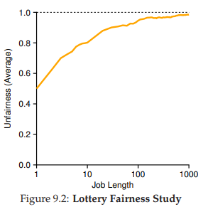
Hình 9.2: Nghiên cứu tính công bằng của Lottery Scheduling
Để quá trình này hiệu quả nhất, thông thường tốt nhất là sắp xếp danh sách theo thứ tự giảm dần số ticket. Thứ tự này không ảnh hưởng đến tính đúng đắn của thuật toán; tuy nhiên, nó giúp giảm số vòng lặp cần duyệt, đặc biệt khi có một vài process sở hữu phần lớn số ticket.
9.4 Ví dụ minh họa
Để giúp hiểu rõ hơn động lực của lottery scheduling, chúng ta thực hiện một nghiên cứu ngắn về thời gian hoàn thành của hai job cạnh tranh với nhau, mỗi job có cùng số ticket (100) và cùng thời gian chạy (R, sẽ thay đổi).
Trong kịch bản này, chúng ta muốn mỗi job hoàn thành gần như cùng lúc, nhưng do tính ngẫu nhiên của lottery scheduling, đôi khi một job sẽ hoàn thành trước job kia.
Để định lượng sự khác biệt này, ta định nghĩa một chỉ số công bằng đơn giản F, bằng thời điểm job hoàn thành trước chia cho thời điểm job hoàn thành sau. Ví dụ: nếu R = 10, job đầu tiên hoàn thành ở thời điểm 10 và job thứ hai ở thời điểm 20, thì F = 10/20 = 0.5. Khi cả hai job hoàn thành gần như cùng lúc, F sẽ gần bằng 1. Mục tiêu của chúng ta là đạt F = 1 (bộ lập lịch hoàn toàn công bằng).
Hình 9.2 biểu diễn đồ thị giá trị công bằng trung bình khi thay đổi độ dài R của hai job từ 1 đến 1000, qua 30 lần thử (kết quả được tạo bởi trình mô phỏng ở cuối chương). Như bạn thấy, khi thời gian chạy của job ngắn, công bằng trung bình có thể khá thấp. Chỉ khi các job chạy qua nhiều time slice, lottery scheduler mới tiến gần đến kết quả công bằng mong muốn.
9.5 Gán ticket như thế nào?
Một vấn đề chúng ta chưa giải quyết với lottery scheduling là: làm thế nào để gán ticket cho các job?
Đây là một vấn đề khó, vì hành vi của hệ thống phụ thuộc mạnh vào cách phân bổ ticket. Một cách tiếp cận là giả định người dùng biết rõ nhất; trong trường hợp đó, mỗi người dùng được cấp một số ticket và họ có thể phân bổ cho các job của mình tùy ý. Tuy nhiên, đây thực chất không phải là giải pháp, vì nó không chỉ ra cách phân bổ tối ưu. Do đó, với một tập job cho trước, “bài toán gán ticket” vẫn còn bỏ ngỏ.
9.6 Stride Scheduling
Bạn có thể tự hỏi: tại sao phải dùng ngẫu nhiên? Như đã thấy, randomness giúp tạo ra một bộ lập lịch đơn giản và gần đúng, nhưng đôi khi không đạt tỷ lệ chính xác, đặc biệt trong khoảng thời gian ngắn. Vì lý do này, Waldspurger đã phát minh stride scheduling — một bộ lập lịch fair-share deterministic (tất định) [W95].
Stride scheduling cũng khá đơn giản: mỗi job trong hệ thống có một stride, tỷ lệ nghịch với số ticket mà nó có. Trong ví dụ trước, với A, B, C lần lượt có 100, 50 và 250 ticket, ta tính stride bằng cách lấy một số lớn chia cho số ticket. Nếu lấy 10.000 chia cho số ticket, ta được stride của A, B, C lần lượt là 100, 200 và 40.
Mỗi khi một process chạy, ta tăng pass value (giá trị pass) của nó thêm stride để theo dõi tiến trình toàn cục.
Bộ lập lịch chọn process có pass value nhỏ nhất để chạy; khi chạy xong, tăng pass value của nó thêm stride.
Pseudocode từ Waldspurger [W95]:
curr = remove_min(queue); // chọn process có pass nhỏ nhất
schedule(curr); // chạy trong một quantum
curr->pass += curr->stride; // cập nhật pass
insert(queue, curr); // đưa lại vào hàng đợi
Ví dụ: ban đầu A, B, C đều có pass = 0. Giả sử chọn A, pass của A = 100. Tiếp theo chạy B, pass = 200. Chạy C, pass = 40. Lúc này C nhỏ nhất, chạy tiếp, pass = 80, rồi lại chạy C, pass = 120. Tiếp theo A (pass = 200, bằng B). Sau đó C chạy hai lần nữa (pass = 160, rồi 200). Khi tất cả pass bằng nhau, chu kỳ lặp lại.
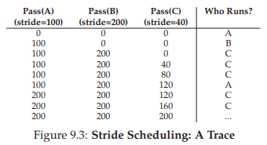
Hình 9.3: Dấu vết hoạt động của Stride Scheduling
Kết quả: C chạy 5 lần, A chạy 2 lần, B chạy 1 lần — đúng tỷ lệ ticket 250:100:50. Lottery đạt tỷ lệ theo xác suất, stride đạt chính xác sau mỗi chu kỳ.
Điểm khác biệt lớn: stride cần global state (trạng thái toàn cục). Nếu một job mới vào giữa chừng, đặt pass = 0 sẽ khiến nó chiếm CPU. Lottery thì không cần global state; chỉ cần thêm process mới với số ticket của nó và cập nhật tổng ticket.
9.7 Linux Completely Fair Scheduler (CFS)
Dù có các nghiên cứu trước về fair-share scheduling, Linux hiện tại đạt mục tiêu tương tự theo cách khác. Completely Fair Scheduler (CFS) [J09] thực hiện fair-share scheduling một cách hiệu quả và mở rộng tốt.
Mục tiêu: giảm tối đa thời gian đưa ra quyết định lập lịch, nhờ thiết kế và cấu trúc dữ liệu phù hợp. Nghiên cứu tại Google cho thấy, ngay cả sau tối ưu mạnh, lập lịch vẫn chiếm ~5% CPU của toàn bộ datacenter [K+15]. Giảm overhead này là mục tiêu quan trọng.
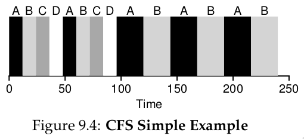
Hình 9.4: Ví dụ đơn giản về CFS
Hoạt động cơ bản
Khác với hầu hết scheduler dựa trên time slice cố định, CFS chia CPU công bằng cho tất cả process cạnh tranh, dùng kỹ thuật virtual runtime (vruntime). Khi process chạy, vruntime của nó tăng theo thời gian thực. Khi cần lập lịch, CFS chọn process có vruntime nhỏ nhất.
Vấn đề: khi nào dừng process hiện tại để chạy process khác? Nếu chuyển quá thường xuyên → công bằng cao nhưng overhead lớn (context switching nhiều). Nếu chuyển ít → hiệu năng cao nhưng công bằng ngắn hạn giảm.
CFS điều chỉnh qua tham số sched_latency: giá trị này quyết định tổng thời gian để tất cả process được chạy một lần. Mặc định ~48 ms; chia cho số process (n) để ra time slice động cho mỗi process.
Ví dụ: n = 4 → mỗi process có 12 ms. CFS chạy job đầu tiên 12 ms, rồi chọn job có vruntime thấp nhất tiếp theo. Trong Hình 9.4, 4 job (A, B, C, D) mỗi job chạy 2 time slice; sau đó C, D hoàn thành, A và B chạy luân phiên 24 ms.
Khi có “quá nhiều” process đang chạy
Nhưng điều gì sẽ xảy ra nếu có “quá nhiều” process (tiến trình) đang chạy? Điều đó chẳng phải sẽ dẫn đến time slice (lượng thời gian chia cho mỗi tiến trình) quá nhỏ, và do đó gây ra quá nhiều context switch (chuyển ngữ cảnh) hay sao? Câu hỏi hay! Và câu trả lời là: đúng vậy.
Để giải quyết vấn đề này, CFS (Completely Fair Scheduler) bổ sung một tham số khác, min_granularity, thường được đặt ở giá trị như 6 ms. CFS sẽ không bao giờ đặt time slice của một process nhỏ hơn giá trị này, nhằm đảm bảo không tốn quá nhiều thời gian cho chi phí lập lịch (scheduling overhead).
Ví dụ: nếu có 10 process đang chạy, phép tính ban đầu sẽ chia sched_latency cho 10 để xác định time slice (kết quả: 4.8 ms). Tuy nhiên, do có min_granularity, CFS sẽ đặt time slice của mỗi process thành 6 ms. Mặc dù CFS sẽ không hoàn toàn công bằng tuyệt đối trong khoảng thời gian sched_latency mục tiêu (48 ms), nhưng nó sẽ gần đạt được, đồng thời vẫn duy trì hiệu suất CPU cao.
Lưu ý rằng CFS sử dụng periodic timer interrupt (ngắt định kỳ), nghĩa là nó chỉ có thể đưa ra quyết định tại các khoảng thời gian cố định. Ngắt này xảy ra thường xuyên (ví dụ: mỗi 1 ms), cho phép CFS “thức dậy” và xác định xem job hiện tại đã chạy hết thời gian của nó chưa. Nếu một job có time slice không phải là bội số hoàn hảo của khoảng thời gian ngắt, điều đó vẫn ổn; CFS theo dõi vruntime (thời gian chạy ảo) một cách chính xác, nghĩa là về lâu dài, nó sẽ tiệm cận việc chia sẻ CPU lý tưởng.
Trọng số (Weighting) và Niceness
CFS cũng cho phép điều khiển mức ưu tiên (priority) của process, cho phép người dùng hoặc quản trị viên cấp cho một số process phần CPU lớn hơn. CFS không làm điều này bằng ticket như lottery scheduling, mà thông qua một cơ chế cổ điển của UNIX được gọi là nice level của process.
Tham số nice có thể được đặt từ -20 đến +19 cho một process, với giá trị mặc định là 0. Giá trị nice dương nghĩa là ưu tiên thấp hơn, còn giá trị âm nghĩa là ưu tiên cao hơn; nói cách khác, “quá nice” thì sẽ ít được hệ thống chú ý hơn trong lập lịch.
CFS ánh xạ giá trị nice của mỗi process sang một weight (trọng số), như trong bảng sau:

Các trọng số này cho phép tính effective time slice (time slice hiệu dụng) của mỗi process (giống như cách tính trước đây), nhưng giờ có tính đến sự khác biệt về mức ưu tiên.
Công thức tính như sau, giả sử có n process:
$$ \text{time_slice}_i = \frac{\text{weight}i}{\sum{j=0}^{n-1} \text{weight}_j} \times \text{sched_latency} $$ (9.1)
Ví dụ: giả sử có hai job, A và B. A, vì là job “quý giá” nhất, được cấp ưu tiên cao hơn với nice = -5; B, vì “chúng ta ghét nó”1, giữ mức ưu tiên mặc định (nice = 0). Điều này có nghĩa weight_A (từ bảng) là 3121, còn weight_B là 1024. Khi tính time slice, ta sẽ thấy A có khoảng 43% của sched_latency (tức ~36 ms), còn B có khoảng 14% (tức ~12 ms).
Ngoài việc tổng quát hóa phép tính time slice, cách CFS tính vruntime cũng phải được điều chỉnh. Công thức mới lấy thời gian chạy thực tế của process i (runtime_i) và nhân với tỷ lệ nghịch của trọng số process đó, bằng cách chia default weight (1024, ký hiệu weight_0) cho weight_i. Trong ví dụ này, vruntime của A sẽ tăng với tốc độ bằng 1/3 so với B.
$$ \text{vruntime}_i = \text{runtime}_i \times \frac{\text{weight}_0}{\text{weight}_i} $$ (9.2)
Một điểm thông minh trong việc xây dựng bảng trọng số là: bảng này giữ nguyên tỷ lệ chia sẻ CPU khi chênh lệch giá trị nice là hằng số. Ví dụ: nếu process A có nice = 5 (thay vì -5) và process B có nice = 10 (thay vì 0), CFS sẽ lập lịch chúng giống hệt như trước. Bạn có thể tự tính để thấy điều này.
Sử dụng Red-Black Tree
Một trọng tâm lớn của CFS là hiệu suất. Với một scheduler, hiệu suất có nhiều khía cạnh, nhưng một trong số đó rất đơn giản: khi cần tìm job tiếp theo để chạy, bộ lập lịch phải làm điều đó nhanh nhất có thể.
Cấu trúc dữ liệu đơn giản như list (danh sách) không mở rộng tốt: các hệ thống hiện đại đôi khi có hàng nghìn process, và việc tìm kiếm trong một danh sách dài mỗi vài mili-giây là lãng phí.
CFS giải quyết điều này bằng cách lưu các process trong một red-black tree [B72]. Red-black tree là một dạng balanced tree (cây cân bằng); khác với binary tree (cây nhị phân) đơn giản (có thể thoái hóa thành dạng danh sách trong trường hợp chèn xấu nhất), cây cân bằng thực hiện thêm một số thao tác để duy trì độ sâu thấp, đảm bảo các thao tác có độ phức tạp logarithmic (O(log n)) thay vì tuyến tính.
CFS không lưu tất cả process trong cấu trúc này; chỉ các process đang chạy hoặc sẵn sàng chạy (runnable) mới được lưu. Nếu một process chuyển sang trạng thái ngủ (ví dụ: chờ I/O hoàn tất hoặc chờ gói tin mạng), nó sẽ bị loại khỏi cây và được quản lý ở nơi khác.
Ví dụ: giả sử có 10 job với giá trị vruntime lần lượt: 1, 5, 9, 10, 14, 18, 17, 21, 22, 24. Nếu lưu các job này trong một danh sách có thứ tự, việc tìm job tiếp theo để chạy rất đơn giản: chỉ cần lấy phần tử đầu tiên. Tuy nhiên, khi đưa job đó trở lại danh sách (đúng vị trí), ta phải quét danh sách để tìm chỗ chèn, một thao tác O(n). Việc tìm kiếm cũng kém hiệu quả, mất thời gian tuyến tính trung bình.
Vâng, chúng tôi cố tình dùng ngữ pháp “sai” ở đây, xin đừng gửi báo lỗi. Vì sao? Chỉ là một ám chỉ nhẹ đến Chúa tể những chiếc nhẫn và nhân vật phản anh hùng Gollum yêu thích của chúng tôi, không có gì nghiêm trọng.
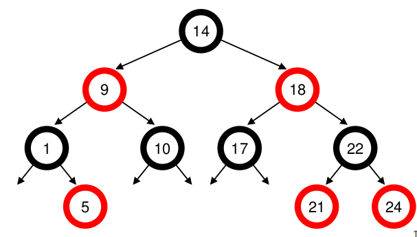
Hình 9.5: Cây Red-Black trong CFS
Khi lưu các giá trị này trong red-black tree, hầu hết các thao tác trở nên hiệu quả hơn. Các process được sắp xếp trong cây theo vruntime, và hầu hết các thao tác (như chèn hoặc xóa) đều có độ phức tạp O(log n). Khi n lên đến hàng nghìn, O(log n) nhanh hơn tuyến tính một cách đáng kể.
Xử lý I/O và các process đang ngủ (Sleeping Processes)
Một vấn đề phát sinh khi chọn vruntime (thời gian chạy ảo) nhỏ nhất để chạy tiếp theo là với các job (tác vụ) đã ở trạng thái ngủ (sleep) trong một khoảng thời gian dài.
Hãy tưởng tượng có hai process (tiến trình) A và B:
- A chạy liên tục.
- B ngủ trong một khoảng thời gian dài (ví dụ: 10 giây).
Khi B thức dậy, vruntime của nó sẽ chậm hơn A tới 10 giây, và do đó (nếu không cẩn thận), B sẽ chiếm CPU trong 10 giây tiếp theo để “bù lại”, dẫn đến việc A bị starvation (đói CPU).
CFS (Completely Fair Scheduler) xử lý trường hợp này bằng cách điều chỉnh vruntime của job khi nó thức dậy. Cụ thể, CFS đặt vruntime của job đó bằng giá trị nhỏ nhất tìm thấy trong cây (tree) — nhớ rằng cây này chỉ chứa các job đang chạy [B+18].
Bằng cách này, CFS tránh được starvation, nhưng không phải không có cái giá phải trả: các job ngủ trong thời gian ngắn và thức dậy thường xuyên có thể sẽ không bao giờ nhận được phần CPU công bằng của mình [AC97].
Các tính năng thú vị khác của CFS
CFS có rất nhiều tính năng khác, quá nhiều để bàn hết ở thời điểm này. Nó bao gồm nhiều heuristic (phương pháp kinh nghiệm) để cải thiện hiệu năng cache, có các chiến lược xử lý hiệu quả khi có nhiều CPU (sẽ được thảo luận ở phần sau của sách), có khả năng lập lịch trên các nhóm process lớn (thay vì coi mỗi process là một thực thể độc lập), và nhiều tính năng thú vị khác.
Bạn có thể đọc các nghiên cứu gần đây, bắt đầu từ Bouron [B+18], để tìm hiểu thêm.
TIP: USE EFFICIENT DATA STRUCTURES WHEN APPROPRIATE
Trong nhiều trường hợp, một list (danh sách) là đủ. Nhưng cũng có nhiều trường hợp thì không. Việc biết khi nào nên dùng cấu trúc dữ liệu nào là một dấu hiệu của kỹ thuật tốt. Trong trường hợp được thảo luận ở đây, các danh sách đơn giản được dùng trong các scheduler trước đây không hoạt động tốt trên các hệ thống hiện đại, đặc biệt là trong các máy chủ tải nặng ở datacenter. Những hệ thống này có hàng nghìn process đang hoạt động; việc tìm kiếm trong một danh sách dài để chọn job tiếp theo cho mỗi lõi CPU vài mili-giây một lần sẽ lãng phí chu kỳ CPU quý giá.
Một cấu trúc tốt hơn là cần thiết, và CFS đã cung cấp điều đó bằng cách triển khai xuất sắc red-black tree.
Nói chung, khi chọn cấu trúc dữ liệu cho hệ thống bạn đang xây dựng, hãy cân nhắc kỹ mẫu truy cập (access pattern) và tần suất sử dụng; hiểu rõ những điều này sẽ giúp bạn triển khai cấu trúc phù hợp cho nhiệm vụ.
9.8 Tóm tắt
Chúng ta đã giới thiệu khái niệm proportional-share scheduling (lập lịch chia sẻ theo tỷ lệ) và thảo luận ngắn gọn ba phương pháp:
- Lottery scheduling: sử dụng tính ngẫu nhiên một cách thông minh để đạt chia sẻ theo tỷ lệ.
- Stride scheduling: đạt được điều này một cách deterministic (tất định).
- Completely Fair Scheduler (CFS) của Linux: bộ lập lịch “thực” duy nhất được bàn trong chương này, hoạt động giống weighted round-robin (vòng quay ưu tiên theo trọng số) với time slice động, nhưng được thiết kế để mở rộng và hoạt động tốt dưới tải; theo hiểu biết của chúng ta, đây là bộ lập lịch fair-share được sử dụng rộng rãi nhất hiện nay.
Không có bộ lập lịch nào là “thuốc chữa bách bệnh”, và các fair-share scheduler cũng có những vấn đề riêng. Một vấn đề là các phương pháp này không kết hợp tốt với I/O [AC97]; như đã đề cập, các job thực hiện I/O thỉnh thoảng có thể không nhận được phần CPU công bằng. Một vấn đề khác là chúng bỏ ngỏ bài toán khó về phân bổ ticket hoặc priority — ví dụ: làm sao biết trình duyệt của bạn nên được cấp bao nhiêu ticket, hoặc đặt nice value nào cho trình soạn thảo văn bản?
Các scheduler đa dụng khác (như MLFQ đã bàn trước đó, và các scheduler Linux tương tự) xử lý các vấn đề này tự động, do đó có thể dễ triển khai hơn.
Tin tốt là có nhiều lĩnh vực mà các vấn đề này không phải mối quan tâm chính, và các proportional-share scheduler được sử dụng rất hiệu quả. Ví dụ: trong một virtualized data center (trung tâm dữ liệu ảo hóa) hoặc cloud, nơi bạn muốn cấp 1/4 chu kỳ CPU cho máy ảo Windows và phần còn lại cho hệ thống Linux gốc, chia sẻ theo tỷ lệ có thể đơn giản và hiệu quả.
Ý tưởng này cũng có thể mở rộng cho các tài nguyên khác; xem Waldspurger [W02] để biết chi tiết về cách chia sẻ bộ nhớ theo tỷ lệ trong VMWare ESX Server.
Tham khảo
[AC97] “Extending Proportional-Share Scheduling to a Network of Workstations”
Andrea C. Arpaci-Dusseau and David E. Culler
PDPTA’97, June 1997
A paper by one of the authors on how to extend proportional-share scheduling to work better in a clustered environment.
[D82] “Why Numbering Should Start At Zero”
Edsger Dijkstra, August 1982
http://www.cs.utexas.edu/users/EWD/ewd08xx/EWD831.PDF
A short note from E. Dijkstra, one of the pioneers of computer science. We’ll be hearing much more on this guy in the section on Concurrency. In the meanwhile, enjoy this note, which includes this motivating quote: “One of my colleagues — not a computing scientist — accused a number of younger computing scientists of ’pedantry’ because they started numbering at zero.” The note explains why doing so is logical.
[KL88] “A Fair Share Scheduler”
J. Kay and P. Lauder
CACM, Volume 31 Issue 1, January 1988
An early reference to a fair-share scheduler.
[WW94] “Lottery Scheduling: Flexible Proportional-Share Resource Management”
Carl A. Waldspurger and William E. Weihl
OSDI ’94, November 1994
The landmark paper on lottery scheduling that got the systems community re-energized about scheduling, fair sharing, and the power of simple randomized algorithms.
[W95] “Lottery and Stride Scheduling: Flexible
Proportional-Share Resource Management”
Carl A. Waldspurger
Ph.D. Thesis, MIT, 1995
The award-winning thesis of Waldspurger’s that outlines lottery and stride scheduling. If you’re thinking of writing a Ph.D. dissertation at some point, you should always have a good example around, to give you something to strive for: this is such a good one.
[W02] “Memory Resource Management in VMware ESX Server”
Carl A. Waldspurger
OSDI ’02, Boston, Massachusetts
The paper to read about memory management in VMMs (a.k.a., hypervisors). In addition to being relatively easy to read, the paper contains numerous cool ideas about this new type of VMM-level memory management.
10. Multiprocessor Scheduling (Lập lịch trên đa bộ xử lý – nâng cao)
Chương này sẽ giới thiệu những khái niệm cơ bản về multiprocessor scheduling (lập lịch trên hệ thống đa bộ xử lý). Vì đây là một chủ đề tương đối nâng cao, nên tốt nhất là bạn nên học sau khi đã nghiên cứu chi tiết về concurrency (tính đồng thời) – tức phần “easy piece” thứ hai của cuốn sách.
Sau nhiều năm chỉ tồn tại trong các hệ thống máy tính cao cấp, ngày nay multiprocessor systems (hệ thống đa bộ xử lý) đã trở nên phổ biến, xuất hiện trong cả máy tính để bàn, laptop, và thậm chí cả thiết bị di động. Sự gia tăng này chủ yếu nhờ multicore processor (bộ xử lý đa lõi), trong đó nhiều CPU core (lõi CPU) được tích hợp trên một chip duy nhất. Các chip này trở nên phổ biến vì các kiến trúc sư máy tính gặp khó khăn trong việc làm cho một CPU đơn nhanh hơn mà không tiêu tốn quá nhiều năng lượng. Do đó, hầu hết chúng ta hiện nay đều có vài CPU sẵn sàng phục vụ — nghe có vẻ tuyệt, đúng không?
Tất nhiên, sự xuất hiện của nhiều CPU cũng mang lại nhiều vấn đề. Vấn đề chính là: một ứng dụng điển hình (ví dụ một chương trình C bạn viết) chỉ sử dụng một CPU; thêm nhiều CPU không khiến ứng dụng đơn lẻ đó chạy nhanh hơn. Để giải quyết, bạn phải viết lại ứng dụng để chạy song song, có thể bằng cách dùng threads (luồng) như đã bàn trong phần hai của cuốn sách. Multithreaded applications (ứng dụng đa luồng) có thể phân chia công việc cho nhiều CPU và do đó chạy nhanh hơn khi có thêm tài nguyên CPU.
ASIDE: ADVANCED CHAPTERS Các chương nâng cao yêu cầu kiến thức từ nhiều phần của cuốn sách để hiểu đầy đủ, mặc dù về mặt logic chúng phù hợp ở những phần trước đó. Ví dụ, chương này về multiprocessor scheduling sẽ dễ hiểu hơn nếu bạn đã đọc phần giữa về concurrency; tuy nhiên, về mặt cấu trúc, nó lại phù hợp ở phần về virtualization (ảo hóa) và CPU scheduling (lập lịch CPU). Do đó, khuyến nghị là các chương này nên được học “không theo thứ tự”; trong trường hợp này, sau phần hai của cuốn sách.
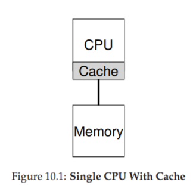
Figure 10.1: Single CPU With Cache
Ngoài các ứng dụng, một vấn đề mới nảy sinh cho operating system (hệ điều hành), đó là multiprocessor scheduling. Trước giờ ta đã bàn nhiều nguyên tắc về single-processor scheduling (lập lịch trên hệ thống một bộ xử lý); vậy làm sao mở rộng chúng cho nhiều CPU? Những vấn đề mới nào cần giải quyết? Do đó, câu hỏi đặt ra:
CRUX: HOW TO SCHEDULE JOBS ON MULTIPLE CPUS Hệ điều hành nên lập lịch jobs (tác vụ) trên nhiều CPU như thế nào? Vấn đề mới nào phát sinh? Các kỹ thuật cũ có còn hiệu quả không, hay cần những ý tưởng mới?
10.1 Kiến thức nền: Kiến trúc multiprocessor
Để hiểu vấn đề trong multiprocessor scheduling, ta phải nắm sự khác biệt cơ bản giữa phần cứng single-CPU và multi-CPU. Khác biệt này nằm ở hardware caches (bộ nhớ đệm phần cứng, xem Hình 10.1) và cách dữ liệu được chia sẻ giữa nhiều bộ xử lý. Ta sẽ bàn ở mức khái quát; chi tiết có thể tham khảo [CSG99] hoặc các khóa học kiến trúc máy tính nâng cao.
Trong hệ thống single CPU, tồn tại một hệ thống phân cấp cache nhằm giúp CPU chạy chương trình nhanh hơn. Cache là bộ nhớ nhỏ, nhanh, dùng để lưu tạm các bản sao dữ liệu phổ biến vốn nằm trong main memory (bộ nhớ chính). Main memory thì chứa toàn bộ dữ liệu nhưng truy cập chậm hơn nhiều. Bằng cách giữ dữ liệu thường xuyên dùng trong cache, hệ thống khiến bộ nhớ lớn và chậm trông giống như một bộ nhớ nhanh.
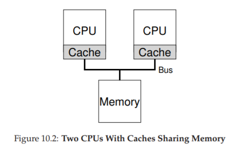
Figure 10.2: Two CPUs With Caches Sharing Memory
Ví dụ: giả sử có một chương trình thực hiện lệnh load để lấy dữ liệu từ bộ nhớ trong một hệ thống single CPU. CPU có một cache nhỏ (ví dụ 64 KB) và một main memory lớn. Lần đầu tiên load, dữ liệu nằm ở main memory nên phải mất hàng chục hoặc hàng trăm nanosecond. CPU, đoán rằng dữ liệu có thể sẽ được dùng lại, sẽ lưu một bản sao trong cache. Lần sau, khi load lại cùng dữ liệu đó, CPU sẽ tìm trong cache; nếu có, nó chỉ mất vài nanosecond để lấy, khiến chương trình chạy nhanh hơn.
Cache dựa trên nguyên lý locality (tính cục bộ), có hai loại: temporal locality (cục bộ theo thời gian) và spatial locality (cục bộ theo không gian). Temporal locality: dữ liệu được truy cập một lần thì có khả năng sẽ được truy cập lại sớm (ví dụ biến trong vòng lặp). Spatial locality: khi chương trình truy cập địa chỉ x thì có khả năng sẽ truy cập các địa chỉ gần x (ví dụ duyệt mảng). Nhờ tính cục bộ này, hệ thống phần cứng có thể dự đoán dữ liệu nào nên đưa vào cache.
Nhưng điều gì xảy ra khi ta có nhiều CPU cùng dùng chung một main memory (Hình 10.2)?
Trong trường hợp này, caching trở nên phức tạp hơn nhiều. Ví dụ: chương trình trên CPU 1 đọc dữ liệu D tại địa chỉ A; vì cache CPU 1 chưa có, hệ thống lấy từ main memory. Sau đó, chương trình sửa dữ liệu tại A thành D′ nhưng chỉ cập nhật cache CPU 1 (ghi xuống main memory chậm nên thường trì hoãn). Nếu OS sau đó chuyển chương trình sang CPU 2, chương trình lại đọc A; vì cache CPU 2 chưa có, hệ thống lấy từ main memory và nhận giá trị cũ D thay vì D′. Sai rồi! Đây gọi là vấn đề cache coherence (tính nhất quán của cache). Có rất nhiều nghiên cứu giải quyết vấn đề này [SHW11]. Ở đây ta chỉ nói khái quát; chi tiết bạn nên học trong các khóa kiến trúc máy tính.
Giải pháp cơ bản được phần cứng cung cấp: giám sát các truy cập bộ nhớ để đảm bảo mọi CPU thấy cùng một trạng thái bộ nhớ chung. Một cách phổ biến trên hệ thống bus là dùng bus snooping [G83]; mỗi cache theo dõi các cập nhật trên bus nối với main memory. Khi thấy dữ liệu mà nó giữ bị thay đổi, nó sẽ tự vô hiệu hóa bản sao (invalidate) hoặc cập nhật. Tuy write-back cache (ghi chậm xuống bộ nhớ) làm mọi thứ phức tạp hơn, nhưng ý tưởng chính vẫn tương tự.
10.2 Đừng quên Synchronization
Mặc dù cache đã xử lý coherence, liệu chương trình (hoặc chính OS) có cần lo lắng khi truy cập dữ liệu chia sẻ không? Đáp án là có. Đây chính là nội dung lớn trong phần concurrency.
Khi truy cập (đặc biệt là cập nhật) dữ liệu chia sẻ trên nhiều CPU, ta cần mutual exclusion primitives (cơ chế loại trừ lẫn nhau) như locks để đảm bảo tính đúng đắn. Ví dụ: với một shared queue, nếu nhiều CPU thêm/xóa phần tử đồng thời mà không dùng lock, sẽ phát sinh lỗi logic, ngay cả khi hệ thống có protocol coherence. Locks đảm bảo cập nhật atomically (nguyên tử).
Xem ví dụ đoạn code xóa phần tử khỏi linked list ở Hình 10.3. Nếu hai threads chạy cùng lúc trên hai CPU, cả hai đều đọc cùng một giá trị head, và cả hai đều cố gắng xóa cùng một phần tử — dẫn tới lỗi nghiêm trọng (như double free).
typedef struct __Node_t {
int value;
struct __Node_t *next;
} Node_t;
// ...
int List_Pop() {
Node_t *tmp = head; // remember old head
int value = head->value; // ... and its value
head = head->next; // advance to next
free(tmp); // free old head
return value; // return value @head
}
Hình 10.3: Code xóa phần tử trong danh sách liên kết
Giải pháp: dùng lock. Ví dụ: khai báo pthread_mutex_t m; rồi đặt lock(&m) ở đầu hàm và unlock(&m) ở cuối. Tuy nhiên, khi số CPU tăng, việc truy cập cấu trúc dữ liệu đồng bộ sẽ trở nên chậm hơn.
10.3 Cache Affinity
Một vấn đề khác trong multiprocessor scheduling là cache affinity [TTG95]. Nghĩa là: khi một process chạy trên một CPU, nó tạo ra trạng thái trong cache và TLB của CPU đó. Lần sau chạy lại trên cùng CPU, nó sẽ nhanh hơn. Nếu bị chuyển CPU liên tục, hiệu năng giảm vì phải nạp lại cache. Do đó, scheduler nên xem xét cache affinity, cố gắng giữ process trên cùng một CPU nếu có thể.
10.4 Single-Queue Scheduling (Lập lịch hàng đợi đơn)
Với phần kiến thức nền tảng đã có, bây giờ chúng ta sẽ thảo luận cách xây dựng một scheduler (bộ lập lịch) cho hệ thống multiprocessor (đa bộ xử lý). Cách tiếp cận cơ bản nhất là tái sử dụng khung lập lịch cho single processor (bộ xử lý đơn), bằng cách đưa tất cả các job (công việc) cần lập lịch vào một hàng đợi duy nhất; chúng ta gọi cách này là single-queue multiprocessor scheduling hay viết tắt là SQMS.
Cách tiếp cận này có ưu điểm là đơn giản; không cần nhiều công sức để lấy một chính sách lập lịch hiện có (chọn job tốt nhất để chạy tiếp theo) và điều chỉnh nó để hoạt động trên nhiều CPU (ví dụ: nếu có hai CPU, nó sẽ chọn hai job tốt nhất để chạy).
Tuy nhiên, SQMS có những hạn chế rõ ràng. Vấn đề đầu tiên là thiếu khả năng mở rộng (scalability). Để đảm bảo scheduler hoạt động đúng trên nhiều CPU, lập trình viên sẽ phải chèn một số cơ chế locking (khóa) vào mã nguồn, như đã mô tả ở phần trước. Lock đảm bảo rằng khi mã SQMS truy cập vào hàng đợi duy nhất (ví dụ: để tìm job tiếp theo để chạy), kết quả sẽ chính xác.
Đáng tiếc là lock có thể làm giảm hiệu năng nghiêm trọng, đặc biệt khi số lượng CPU trong hệ thống tăng lên [A90]. Khi mức độ tranh chấp (contention) đối với lock này tăng, hệ thống sẽ tốn nhiều thời gian hơn cho việc xử lý lock và ít thời gian hơn cho công việc thực sự cần làm (lưu ý: sẽ rất tốt nếu có số liệu đo thực tế ở đây).
Vấn đề lớn thứ hai của SQMS là cache affinity (tính gắn kết với bộ nhớ đệm CPU). Ví dụ, giả sử chúng ta có 5 job cần chạy (A, B, C, D, E) và 4 bộ xử lý. Hàng đợi lập lịch của chúng ta sẽ trông như sau:
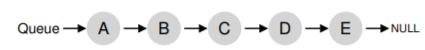
Theo thời gian, giả sử mỗi job chạy trong một time slice (lượng thời gian CPU cấp cho một lần chạy) rồi một job khác được chọn, ta có thể có lịch chạy trên các CPU như sau:

Vì mỗi CPU chỉ đơn giản chọn job tiếp theo từ hàng đợi dùng chung toàn cục, nên mỗi job sẽ bị “nhảy” từ CPU này sang CPU khác, hoàn toàn ngược lại với nguyên tắc tối ưu cache affinity.
Để xử lý vấn đề này, hầu hết các SQMS scheduler bao gồm một cơ chế affinity để tăng khả năng một process (tiến trình) sẽ tiếp tục chạy trên cùng một CPU nếu có thể. Cụ thể, có thể giữ affinity cho một số job, nhưng di chuyển các job khác để cân bằng tải. Ví dụ, với 5 job như trên, ta có thể lập lịch như sau:
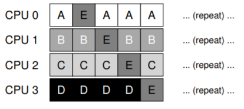
Trong cách sắp xếp này, các job A đến D không bị di chuyển giữa các CPU, chỉ có job E di chuyển, do đó giữ được affinity cho hầu hết. Lần tiếp theo, bạn có thể chọn di chuyển một job khác để đạt affinity fairness (công bằng về affinity). Tuy nhiên, triển khai cơ chế này có thể phức tạp.
Tóm lại, SQMS có điểm mạnh và điểm yếu: dễ triển khai nếu đã có scheduler cho single CPU (vốn chỉ có một hàng đợi), nhưng không mở rộng tốt (do chi phí đồng bộ hóa) và không dễ duy trì cache affinity.
10.5 Multi-Queue Scheduling (Lập lịch đa hàng đợi)
Do các vấn đề của single-queue scheduler, một số hệ thống chọn cách dùng nhiều hàng đợi, ví dụ: mỗi CPU một hàng đợi. Cách này gọi là multi-queue multiprocessor scheduling (MQMS).
Trong MQMS, khung lập lịch cơ bản bao gồm nhiều hàng đợi lập lịch. Mỗi hàng đợi có thể áp dụng một scheduling discipline (kỷ luật lập lịch) nhất định, như round robin, mặc dù bất kỳ thuật toán nào cũng có thể dùng. Khi một job vào hệ thống, nó được đặt vào một hàng đợi duy nhất, theo một heuristic (quy tắc kinh nghiệm) nào đó (ví dụ: ngẫu nhiên, hoặc chọn hàng đợi có ít job hơn). Sau đó, job được lập lịch gần như độc lập, tránh được vấn đề chia sẻ thông tin và đồng bộ hóa của cách single-queue.
Ví dụ, giả sử hệ thống có 2 CPU (CPU 0 và CPU 1), và một số job vào hệ thống: A, B, C, D. Vì mỗi CPU có một hàng đợi lập lịch riêng, OS phải quyết định đưa mỗi job vào hàng đợi nào. Có thể như sau:
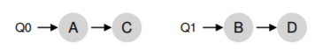
Tùy theo chính sách lập lịch của hàng đợi, mỗi CPU sẽ có hai job để chọn khi quyết định chạy. Ví dụ, với round robin, hệ thống có thể tạo ra lịch chạy như sau:

MQMS có ưu thế rõ rệt so với SQMS ở chỗ nó tự nhiên mở rộng tốt hơn. Khi số CPU tăng, số hàng đợi cũng tăng, do đó lock và cache contention không trở thành vấn đề trung tâm. Ngoài ra, MQMS vốn dĩ duy trì cache affinity: job ở nguyên trên cùng một CPU và tận dụng dữ liệu đã được cache.
Tuy nhiên, cách tiếp cận này lại xuất hiện một vấn đề mới, mang tính cơ bản: load imbalance (mất cân bằng tải). Giả sử vẫn như trên (4 job, 2 CPU), nhưng một job (C) kết thúc. Khi đó, các hàng đợi lập lịch sẽ như sau:

Nếu chạy round robin trên mỗi hàng đợi, ta sẽ có lịch chạy:

Như thấy, A nhận gấp đôi CPU so với B và D, điều này không mong muốn. Tệ hơn, giả sử cả A và C kết thúc, chỉ còn B và D. Khi đó:


Thật tệ — CPU 0 bị idle (nhàn rỗi)! Và biểu đồ sử dụng CPU trông thật “buồn”.
CRUX: HOW TO DEAL WITH LOAD IMBALANCE
Làm thế nào để một multi-queue multiprocessor scheduler xử lý load imbalance, nhằm đạt được mục tiêu lập lịch mong muốn?
Câu trả lời hiển nhiên là di chuyển job — kỹ thuật gọi là migration. Bằng cách di chuyển một job từ CPU này sang CPU khác, ta có thể đạt cân bằng tải thực sự.
Ví dụ: nếu một CPU rảnh và CPU kia có job, OS chỉ cần di chuyển một trong B hoặc D sang CPU 0. Kết quả: tải cân bằng, mọi người đều vui.

Trường hợp khó hơn: A ở một mình trên CPU 0, B và D luân phiên trên CPU 1.

Lúc này, di chuyển một job duy nhất không giải quyết được vấn đề. Giải pháp là liên tục migration một hoặc nhiều job. Một cách là luân phiên đổi job: ban đầu A ở CPU 0, B và D ở CPU 1; sau vài time slice, di chuyển B sang CPU 0 để chạy cùng A, trong khi D chạy một mình trên CPU 1. Kết quả: tải cân bằng.

Tất nhiên, còn nhiều mẫu migration khác. Nhưng câu hỏi khó là: khi nào hệ thống nên thực hiện migration?
Một cách cơ bản là dùng kỹ thuật work stealing [FLR98]. Với work stealing, một hàng đợi source (nguồn) ít job sẽ thỉnh thoảng “nhìn” sang hàng đợi target (đích) để xem nó đầy thế nào. Nếu target đầy hơn đáng kể, source sẽ “steal” (lấy) một hoặc nhiều job từ target để cân bằng tải.
Tuy nhiên, kỹ thuật này có sự đánh đổi: nếu kiểm tra các hàng đợi khác quá thường xuyên → overhead cao, khó mở rộng (đi ngược mục tiêu MQMS). Nếu kiểm tra quá ít → nguy cơ load imbalance nghiêm trọng. Việc tìm ngưỡng phù hợp vẫn là một “nghệ thuật đen” (black art) trong thiết kế chính sách hệ thống.
Ít ai biết rằng hành tinh Cybertron đã bị hủy diệt bởi các quyết định lập lịch CPU tồi tệ. Và đây sẽ là lần đầu tiên và cuối cùng cuốn sách nhắc tới Transformers.
10.6 Linux Multiprocessor Schedulers (Bộ lập lịch đa bộ xử lý trong Linux)
Điều thú vị là trong cộng đồng Linux, chưa có một giải pháp chung nào được thống nhất để xây dựng multiprocessor scheduler (bộ lập lịch cho hệ thống đa bộ xử lý). Theo thời gian, đã xuất hiện ba bộ lập lịch khác nhau: O(1) scheduler, Completely Fair Scheduler (CFS), và BF Scheduler (BFS)^[2]. Xem luận án của Meehean để có cái nhìn tổng quan xuất sắc về điểm mạnh và điểm yếu của các bộ lập lịch này [M11]; ở đây chúng ta chỉ tóm tắt một số điểm cơ bản.
Cả O(1) và CFS đều sử dụng multiple queues (nhiều hàng đợi), trong khi BFS sử dụng single queue (một hàng đợi), cho thấy rằng cả hai cách tiếp cận đều có thể thành công. Tất nhiên, có nhiều chi tiết khác biệt giữa các bộ lập lịch này.
Ví dụ: O(1) scheduler là một priority-based scheduler (bộ lập lịch dựa trên mức ưu tiên) — tương tự như MLFQ đã thảo luận trước đó — thay đổi priority (mức ưu tiên) của một process (tiến trình) theo thời gian, rồi lập lịch cho các tiến trình có priority cao nhất để đạt được các mục tiêu lập lịch khác nhau; trong đó, interactivity (tính tương tác) là một trọng tâm đặc biệt.
Ngược lại, CFS là một phương pháp deterministic proportional-share (chia sẻ tỷ lệ có tính quyết định), giống với Stride scheduling đã đề cập trước đó. BFS, bộ lập lịch duy nhất trong ba loại sử dụng single queue, cũng là proportional-share, nhưng dựa trên một cơ chế phức tạp hơn gọi là Earliest Eligible Virtual Deadline First (EEVDF) [SA96].
Bạn có thể tự tìm hiểu thêm về các thuật toán hiện đại này; đến thời điểm này, bạn đã có đủ kiến thức để hiểu cách chúng hoạt động.
10.7 Summary (Tóm tắt)
Chúng ta đã xem xét nhiều cách tiếp cận khác nhau đối với multiprocessor scheduling (lập lịch đa bộ xử lý).
- Single-queue approach (SQMS): khá đơn giản để xây dựng và cân bằng tải tốt, nhưng vốn dĩ gặp khó khăn khi mở rộng ra nhiều bộ xử lý và trong việc duy trì cache affinity (tính gắn kết với bộ nhớ đệm CPU).
- Multiple-queue approach (MQMS): mở rộng tốt hơn và xử lý cache affinity hiệu quả, nhưng gặp vấn đề với load imbalance (mất cân bằng tải) và phức tạp hơn.
Dù chọn cách tiếp cận nào, cũng không có câu trả lời đơn giản: xây dựng một general-purpose scheduler (bộ lập lịch đa dụng) vẫn là một nhiệm vụ đầy thách thức, vì chỉ một thay đổi nhỏ trong mã nguồn cũng có thể dẫn đến sự khác biệt lớn trong hành vi hệ thống. Chỉ nên thực hiện công việc này nếu bạn thực sự biết rõ mình đang làm gì, hoặc ít nhất là được trả một khoản tiền lớn để làm.
Bạn có thể tự tìm hiểu BF viết tắt cho cụm từ gì; xin lưu ý, nó không dành cho những người yếu tim.
Tham khảo
[A90] “The Performance of Spin Lock Alternatives for Shared-Memory Multiprocessors”
Thomas E. Anderson
IEEE TPDS Volume 1:1, January 1990
A classic paper on how different locking alternatives do and don’t scale. By Tom Anderson, very well known researcher in both systems and networking. And author of a very fine OS textbook, we must say.
[B+10] “An Analysis of Linux Scalability to Many Cores Abstract”
Silas Boyd-Wickizer, Austin T. Clements, Yandong Mao, Aleksey Pesterev, M. Frans Kaashoek, Robert Morris, Nickolai Zeldovich
OSDI ’10, Vancouver, Canada, October 2010
A terrific modern paper on the difficulties of scaling Linux to many cores.
[CSG99] “Parallel Computer Architecture: A Hardware/Software Approach”
David E. Culler, Jaswinder Pal Singh, and Anoop Gupta
Morgan Kaufmann, 1999
A treasure filled with details about parallel machines and algorithms. As Mark Hill humorously observes on the jacket, the book contains more information than most research papers.
[FLR98] “The Implementation of the Cilk-5 Multithreaded Language”
Matteo Frigo, Charles E. Leiserson, Keith Randall
PLDI ’98, Montreal, Canada, June 1998
Cilk is a lightweight language and runtime for writing parallel programs, and an excellent example of the work-stealing paradigm.
[G83] “Using Cache Memory To Reduce Processor-Memory Traffic”
James R. Goodman
ISCA ’83, Stockholm, Sweden, June 1983
The pioneering paper on how to use bus snooping, i.e., paying attention to requests you see on the bus, to build a cache coherence protocol. Goodman’s research over many years at Wisconsin is full of cleverness, this being but one example.
[M11] “Towards Transparent CPU Scheduling”
Joseph T. Meehean
Doctoral Dissertation at University of Wisconsin—Madison, 2011
A dissertation that covers a lot of the details of how modern Linux multiprocessor scheduling works. Pretty awesome! But, as co-advisors of Joe’s, we may be a bit biased here.
[SHW11] “A Primer on Memory Consistency and Cache Coherence”
Daniel J. Sorin, Mark D. Hill, and David A. Wood
Synthesis Lectures in Computer Architecture
Morgan and Claypool Publishers, May 2011
A definitive overview of memory consistency and multiprocessor caching. Required reading for anyone who likes to know way too much about a given topic.
[SA96] “Earliest Eligible Virtual Deadline First: A Flexible and Accurate Mechanism for Proportional Share Resource Allocation”
Ion Stoica and Hussein Abdel-Wahab
Technical Report TR-95-22, Old Dominion University, 1996
A tech report on this cool scheduling idea, from Ion Stoica, now a professor at U.C. Berkeley and world expert in networking, distributed systems, and many other things.
The Abstraction: Address Spaces
Interlude: Memory API
15.3 Dynamic (Hardware-based) Relocation — Tái định vị động (dựa trên phần cứng)
Để hiểu cơ chế dịch địa chỉ (address translation) dựa trên phần cứng, trước tiên chúng ta sẽ xem xét phiên bản đầu tiên của nó. Ý tưởng này xuất hiện trong các máy tính time-sharing (chia sẻ thời gian) đầu tiên vào cuối những năm 1950, được gọi là base and bounds (cơ chế thanh ghi cơ sở và giới hạn). Kỹ thuật này cũng được gọi là dynamic relocation (tái định vị động); trong chương này, chúng ta sẽ sử dụng hai thuật ngữ này thay thế cho nhau [SS74].
Cụ thể, mỗi CPU sẽ cần hai thanh ghi phần cứng: một gọi là base register (thanh ghi cơ sở) và một gọi là bounds register (thanh ghi giới hạn, đôi khi gọi là limit register). Cặp base–bounds này cho phép chúng ta đặt address space (không gian địa chỉ) của process (tiến trình) ở bất kỳ vị trí nào trong physical memory (bộ nhớ vật lý), đồng thời đảm bảo process chỉ có thể truy cập vào không gian địa chỉ của chính nó.
ASIDE: SOFTWARE-BASED RELOCATION
Trong giai đoạn đầu, trước khi có hỗ trợ phần cứng, một số hệ thống thực hiện tái định vị (relocation) ở dạng đơn giản hoàn toàn bằng phần mềm. Kỹ thuật cơ bản này được gọi là static relocation (tái định vị tĩnh), trong đó một phần mềm gọi là loader sẽ lấy một file thực thi (executable) sắp chạy và ghi lại (rewrite) các địa chỉ của nó sang một vị trí offset mong muốn trong physical memory.Ví dụ: nếu một lệnh là tải dữ liệu từ địa chỉ 1000 vào một thanh ghi (ví dụ:
movl 1000, %eax), và không gian địa chỉ của chương trình được nạp bắt đầu tại địa chỉ 3000 (thay vì 0 như chương trình nghĩ), loader sẽ ghi lại lệnh này để cộng thêm offset 3000 vào mỗi địa chỉ (ví dụ:movl 4000, %eax). Bằng cách này, việc tái định vị tĩnh của không gian địa chỉ process được thực hiện.Tuy nhiên, static relocation có nhiều vấn đề. Quan trọng nhất là nó không cung cấp bảo vệ (protection), vì process có thể tạo ra các địa chỉ sai và truy cập trái phép vào bộ nhớ của process khác hoặc thậm chí bộ nhớ của OS. Nói chung, cần có hỗ trợ phần cứng để đạt được bảo vệ thực sự [WL+93]. Một nhược điểm khác là khi đã đặt xong, rất khó để di chuyển không gian địa chỉ sang vị trí khác [M65].
Trong cơ chế này, mỗi chương trình được viết và biên dịch như thể nó được nạp tại địa chỉ 0. Tuy nhiên, khi chương trình bắt đầu chạy, OS sẽ quyết định vị trí trong physical memory để nạp nó và thiết lập base register bằng giá trị đó. Trong ví dụ ở trên, OS quyết định nạp process tại địa chỉ vật lý 32 KB và đặt base register bằng giá trị này.
Khi process chạy, điều thú vị bắt đầu xảy ra. Mỗi khi process tạo ra một tham chiếu bộ nhớ, CPU sẽ dịch địa chỉ theo công thức:
physical address = virtual address + base
Mỗi tham chiếu bộ nhớ do process tạo ra là một virtual address (địa chỉ ảo); phần cứng sẽ cộng giá trị trong base register vào địa chỉ này để tạo ra physical address (địa chỉ vật lý) và gửi tới hệ thống bộ nhớ.
Để hiểu rõ hơn, hãy theo dõi quá trình thực thi một lệnh. Cụ thể, xét lệnh sau từ ví dụ trước:
128: movl 0x0(%ebx), %eax
Program Counter (PC) đang ở giá trị 128; khi phần cứng cần nạp lệnh này, nó sẽ cộng giá trị PC với base register (32 KB = 32768) để được địa chỉ vật lý 32896; sau đó phần cứng nạp lệnh từ địa chỉ vật lý này. Tiếp theo, CPU bắt đầu thực thi lệnh. Tại một thời điểm, process sẽ thực hiện:
TIP: HARDWARE-BASED DYNAMIC RELOCATION
Với dynamic relocation, chỉ cần một chút phần cứng là có thể tạo ra hiệu quả lớn. Base register được dùng để biến đổi virtual address (do chương trình tạo ra) thành physical address. Bounds register (hoặc limit register) đảm bảo các địa chỉ này nằm trong phạm vi hợp lệ của address space. Kết hợp lại, chúng cung cấp một cơ chế ảo hóa bộ nhớ đơn giản và hiệu quả.
Lệnh load từ virtual address 15 KB, CPU sẽ cộng giá trị này với base register (32 KB) để được physical address 47 KB và lấy dữ liệu mong muốn.
Việc biến đổi virtual address thành physical address chính là kỹ thuật address translation (dịch địa chỉ). Vì quá trình này diễn ra khi chương trình đang chạy (runtime) và chúng ta có thể di chuyển address space ngay cả khi process đã chạy, nên kỹ thuật này được gọi là dynamic relocation [M65].
Bạn có thể thắc mắc: bounds register ở đâu? Thực tế, bounds register được dùng để bảo vệ. CPU sẽ kiểm tra xem virtual address có nằm trong giới hạn hay không; trong ví dụ trên, bounds register sẽ được đặt là 16 KB. Nếu process tạo ra một virtual address lớn hơn hoặc bằng bounds, hoặc âm, CPU sẽ phát sinh exception và process có thể bị chấm dứt. Mục đích của bounds là đảm bảo tất cả địa chỉ do process tạo ra đều hợp lệ.
Cần lưu ý rằng base và bounds register là các cấu trúc phần cứng nằm trên chip (mỗi CPU một cặp). Bộ phận của CPU hỗ trợ dịch địa chỉ thường được gọi là Memory Management Unit (MMU); khi phát triển các kỹ thuật quản lý bộ nhớ phức tạp hơn, chúng ta sẽ bổ sung thêm mạch vào MMU.
Một lưu ý nhỏ: bounds register có thể được định nghĩa theo hai cách. Cách thứ nhất (như ở trên) là lưu kích thước của address space, và phần cứng sẽ so sánh virtual address với giá trị này trước khi cộng base. Cách thứ hai là lưu địa chỉ vật lý của điểm kết thúc address space, và phần cứng sẽ cộng base trước rồi mới kiểm tra giới hạn. Cả hai cách là tương đương về mặt logic; để đơn giản, chúng ta thường giả định cách thứ nhất.
Ví dụ dịch địa chỉ
Giả sử một process có address space kích thước 4 KB (rất nhỏ, chỉ để minh họa) được nạp tại địa chỉ vật lý 16 KB. Kết quả dịch địa chỉ sẽ như sau:
(Bảng minh họa kết quả dịch địa chỉ — giữ nguyên như bản gốc)
Như bạn thấy, chỉ cần cộng base address với virtual address (có thể coi như offset trong address space) là ra physical address. Chỉ khi virtual address quá lớn hoặc âm thì mới gây ra lỗi (fault) và phát sinh exception.
15.4 Hardware Support: A Summary — Tóm tắt hỗ trợ phần cứng
Tóm tắt lại, phần cứng cần hỗ trợ những gì (xem thêm Figure 15.3, trang 9):
-
Như đã thảo luận trong chương về CPU virtualization (ảo hóa CPU), cần có hai chế độ CPU: privileged mode (kernel mode) — OS chạy ở chế độ này và có toàn quyền truy cập máy; và user mode — ứng dụng chạy ở chế độ này và bị giới hạn quyền. Một bit trong processor status word sẽ cho biết CPU đang ở chế độ nào; khi có sự kiện đặc biệt (ví dụ: system call, exception hoặc interrupt), CPU sẽ chuyển chế độ.
-
Phần cứng phải cung cấp base và bounds register; mỗi CPU có một cặp, là một phần của MMU. Khi chương trình người dùng chạy, phần cứng sẽ dịch mỗi địa chỉ bằng cách cộng base với virtual address do chương trình tạo ra. Đồng thời, phần cứng phải kiểm tra tính hợp lệ của địa chỉ bằng bounds register và mạch logic trong CPU.
-
Phần cứng cần cung cấp các lệnh đặc biệt để thay đổi base và bounds register, cho phép OS thay đổi chúng khi chuyển đổi process. Các lệnh này là privileged instructions (lệnh đặc quyền); chỉ ở kernel mode mới có thể thay đổi. Hãy tưởng tượng mức độ hỗn loạn mà một process có thể gây ra1 nếu nó có thể tùy ý thay đổi base register khi đang chạy. Nghĩ thôi cũng đủ thấy đây là cơn ác mộng.
Is there anything other than “havoc” that can be “wreaked”? [W17]
ASIDE: DATA STRUCTURE — THE FREE LIST
Hệ điều hành (OS) phải theo dõi những phần bộ nhớ trống (free memory) chưa được sử dụng, để có thể cấp phát bộ nhớ cho các process (tiến trình). Có thể sử dụng nhiều cấu trúc dữ liệu khác nhau cho nhiệm vụ này; cấu trúc đơn giản nhất (mà chúng ta giả định ở đây) là free list (danh sách vùng trống), đơn giản chỉ là một danh sách các khoảng (range) của physical memory (bộ nhớ vật lý) hiện chưa được sử dụng.
Figure 15.3: Dynamic Relocation — Hardware Requirements
(Yêu cầu phần cứng cho tái định vị động)
Cuối cùng, CPU phải có khả năng tạo ra exception (ngoại lệ) trong các tình huống khi một chương trình người dùng cố gắng truy cập bộ nhớ trái phép (với một địa chỉ “out of bounds” — vượt ngoài giới hạn). Trong trường hợp này, CPU sẽ dừng việc thực thi chương trình người dùng và chuyển quyền điều khiển cho out-of-bounds exception handler (trình xử lý ngoại lệ vượt giới hạn) của OS. Trình xử lý này sẽ quyết định cách phản ứng, thường là chấm dứt process vi phạm.
Tương tự, nếu một chương trình người dùng cố gắng thay đổi giá trị của các thanh ghi đặc quyền (privileged) như base register và bounds register, CPU sẽ phát sinh exception và gọi handler xử lý tình huống “cố gắng thực hiện một thao tác đặc quyền khi đang ở user mode”. CPU cũng phải cung cấp một cơ chế để OS thông báo vị trí của các handler này; do đó cần thêm một số lệnh đặc quyền.
15.5 Operating System Issues — Các vấn đề của Hệ điều hành
Cũng giống như phần cứng cung cấp các tính năng mới để hỗ trợ dynamic relocation (tái định vị động), OS cũng phải xử lý các vấn đề mới; sự kết hợp giữa hỗ trợ phần cứng và quản lý của OS dẫn đến việc triển khai một dạng virtual memory (bộ nhớ ảo) đơn giản. Cụ thể, có một số thời điểm quan trọng mà OS phải can thiệp để thực hiện cơ chế virtual memory dựa trên base-and-bounds.
Thứ nhất, OS phải hành động khi một process được tạo, tìm chỗ trống trong bộ nhớ để đặt address space của nó. Với giả định rằng mỗi address space (a) nhỏ hơn kích thước physical memory và (b) có cùng kích thước, việc này khá đơn giản: OS có thể coi physical memory như một mảng các slot (ô nhớ) và theo dõi trạng thái từng slot (trống hay đã dùng). Khi một process mới được tạo, OS sẽ tìm trong cấu trúc dữ liệu (thường gọi là free list) để tìm chỗ trống cho address space mới và đánh dấu là đã sử dụng. Nếu address space có kích thước thay đổi, việc quản lý sẽ phức tạp hơn — vấn đề này sẽ được bàn ở các chương sau.
Figure 15.4: Dynamic Relocation — Operating System Responsibilities
(Trách nhiệm của hệ điều hành trong tái định vị động)
Ví dụ: Trong Figure 15.2 (trang 5), OS sử dụng slot đầu tiên của physical memory cho chính nó, và đã tái định vị process từ ví dụ trước vào slot bắt đầu tại địa chỉ vật lý 32 KB. Hai slot còn lại (16 KB–32 KB và 48 KB–64 KB) đang trống; do đó free list sẽ gồm hai mục này.
Thứ hai, OS phải thu hồi bộ nhớ khi một process kết thúc (thoát bình thường hoặc bị buộc dừng do vi phạm). Khi process kết thúc, OS sẽ đưa vùng nhớ của nó trở lại free list và dọn dẹp các cấu trúc dữ liệu liên quan.
Thứ ba, OS phải thực hiện thêm một số bước khi xảy ra context switch (chuyển ngữ cảnh). Mỗi CPU chỉ có một cặp base–bounds register, và giá trị của chúng khác nhau cho mỗi process (vì mỗi process được nạp ở địa chỉ vật lý khác nhau). Do đó, OS phải lưu và khôi phục cặp thanh ghi này khi chuyển đổi giữa các process. Cụ thể, khi OS dừng một process, nó phải lưu giá trị base và bounds register vào bộ nhớ, trong một cấu trúc dữ liệu riêng cho process như process structure hoặc process control block (PCB). Khi OS chạy lại process (hoặc chạy lần đầu), nó phải thiết lập base và bounds register trên CPU với giá trị đúng của process đó.
Cần lưu ý: khi một process bị dừng (không chạy), OS có thể di chuyển address space của nó sang vị trí khác trong bộ nhớ khá dễ dàng. Để làm điều này, OS sẽ deschedule process, sao chép address space từ vị trí hiện tại sang vị trí mới, sau đó cập nhật giá trị base register đã lưu (trong process structure) để trỏ tới vị trí mới. Khi process chạy lại, base register mới được khôi phục và process tiếp tục chạy mà không hề biết rằng mã lệnh và dữ liệu của mình đã ở vị trí khác trong bộ nhớ.
Thứ tư, OS phải cung cấp các exception handler (trình xử lý ngoại lệ) như đã đề cập; OS cài đặt các handler này khi khởi động (boot time) thông qua các lệnh đặc quyền. Ví dụ, nếu một process cố truy cập bộ nhớ ngoài giới hạn, CPU sẽ phát sinh exception; OS phải sẵn sàng xử lý, thường là chấm dứt process vi phạm. OS cần bảo vệ nghiêm ngặt hệ thống, và sẽ không “nhẹ tay” với process cố truy cập bộ nhớ hoặc thực thi lệnh trái phép.
Figure 15.5: Limited Direct Execution (Dynamic Relocation) @ Boot
(Thực thi trực tiếp có giới hạn — tái định vị động khi khởi động)
Các Figure 15.5 và 15.6 (trang 12) minh họa tương tác phần cứng/OS theo dòng thời gian. Figure đầu cho thấy OS làm gì khi khởi động để chuẩn bị hệ thống; Figure thứ hai cho thấy khi một process (Process A) bắt đầu chạy, việc dịch địa chỉ được phần cứng xử lý hoàn toàn, không cần OS can thiệp. Tại một thời điểm, một timer interrupt xảy ra, OS chuyển sang Process B, process này thực hiện một “bad load” (truy cập địa chỉ bộ nhớ trái phép); lúc này OS phải can thiệp, chấm dứt process, giải phóng bộ nhớ và xóa entry của nó khỏi process table. Như bạn thấy, chúng ta vẫn theo mô hình limited direct execution: hầu hết thời gian, OS chỉ cần thiết lập phần cứng và để process chạy trực tiếp trên CPU; chỉ khi process vi phạm thì OS mới can thiệp.
15.6 Summary — Tóm tắt
Trong chương này, chúng ta đã mở rộng khái niệm limited direct execution với một cơ chế cụ thể dùng trong virtual memory, gọi là address translation (dịch địa chỉ). Với address translation, OS có thể kiểm soát mọi truy cập bộ nhớ của process, đảm bảo chúng nằm trong giới hạn của address space. Yếu tố then chốt để kỹ thuật này hiệu quả là hỗ trợ phần cứng, giúp dịch địa chỉ nhanh chóng cho mỗi lần truy cập, biến virtual address (cách process nhìn bộ nhớ) thành physical address (cách bộ nhớ thực tế được tổ chức). Tất cả diễn ra hoàn toàn transparent (minh bạch) với process — nó không hề biết rằng các truy cập bộ nhớ đang được dịch.
Figure 15.6: Limited Direct Execution (Dynamic Relocation) @ Runtime
(Thực thi trực tiếp có giới hạn — tái định vị động khi chạy)
Chúng ta cũng đã thấy một dạng ảo hóa cụ thể, gọi là base and bounds hoặc dynamic relocation. Cơ chế này rất hiệu quả vì chỉ cần thêm một chút logic phần cứng để cộng base register vào virtual address và kiểm tra địa chỉ có nằm trong bounds hay không. Nó cũng cung cấp protection (bảo vệ): OS và phần cứng phối hợp để đảm bảo không process nào có thể tạo ra truy cập bộ nhớ ngoài address space của chính nó. Bảo vệ là một trong những mục tiêu quan trọng nhất của OS; nếu không có nó, OS không thể kiểm soát hệ thống (process có thể ghi đè vùng nhớ quan trọng như trap table và chiếm quyền điều khiển).
Tuy nhiên, kỹ thuật dynamic relocation đơn giản này vẫn có nhược điểm. Ví dụ, như trong Figure 15.2 (trang 5), process được tái định vị sử dụng physical memory từ 32 KB đến 48 KB; nhưng vì stack và heap của process không lớn, phần bộ nhớ giữa chúng bị bỏ trống. Kiểu lãng phí này gọi là internal fragmentation (phân mảnh bên trong), khi không gian bên trong đơn vị cấp phát không được sử dụng hết và bị bỏ phí. Trong cách tiếp cận hiện tại, dù có
16 Segmentation (Phân đoạn bộ nhớ)
Cho đến nay, chúng ta đã đặt toàn bộ address space (không gian địa chỉ) của mỗi process (tiến trình) vào bộ nhớ. Với base register (thanh ghi cơ sở) và bounds register (thanh ghi giới hạn), OS (hệ điều hành) có thể dễ dàng tái định vị (relocate) các process sang các vị trí khác nhau trong physical memory (bộ nhớ vật lý). Tuy nhiên, bạn có thể nhận thấy một điều thú vị về các address space này: có một khoảng “trống” lớn ngay ở giữa, giữa stack và heap.
Như bạn có thể hình dung từ Figure 16.1, mặc dù khoảng trống giữa stack và heap không được process sử dụng, nó vẫn chiếm physical memory khi chúng ta tái định vị toàn bộ address space vào một vị trí nào đó trong physical memory. Do đó, cách tiếp cận đơn giản sử dụng một cặp base–bounds register để ảo hóa bộ nhớ là lãng phí. Nó cũng khiến việc chạy một chương trình trở nên khó khăn khi toàn bộ address space không thể vừa trong bộ nhớ; vì vậy, cơ chế base and bounds không linh hoạt như mong muốn. Và do đó:
THE CRUX: HOW TO SUPPORT A LARGE ADDRESS SPACE
Làm thế nào để hỗ trợ một address space lớn với (có thể) rất nhiều khoảng trống giữa stack và heap? Lưu ý rằng trong các ví dụ của chúng ta, với address space nhỏ (giả định), sự lãng phí có vẻ không quá nghiêm trọng. Tuy nhiên, hãy tưởng tượng một address space 32-bit (kích thước 4 GB); một chương trình điển hình chỉ sử dụng vài megabyte bộ nhớ, nhưng vẫn yêu cầu toàn bộ address space phải nằm trong bộ nhớ.
16.1 Segmentation: Generalized Base/Bounds
Để giải quyết vấn đề này, một ý tưởng đã ra đời, gọi là segmentation (phân đoạn bộ nhớ). Đây là một ý tưởng khá cũ, xuất hiện ít nhất từ đầu những năm 1960 [H61, G62]. Ý tưởng rất đơn giản: thay vì chỉ có một cặp base–bounds register trong MMU (Memory Management Unit — đơn vị quản lý bộ nhớ), tại sao không có một cặp base–bounds cho mỗi logical segment (đoạn logic) của address space?
Segment là một phần liên tục của address space với độ dài xác định. Trong address space chuẩn của chúng ta, có ba segment khác nhau về mặt logic: code, stack, và heap. Segmentation cho phép OS đặt từng segment này ở các vị trí khác nhau trong physical memory, từ đó tránh việc lấp đầy physical memory bằng các vùng virtual address space không sử dụng.

Figure 16.1: An Address Space (Again)
(Một không gian địa chỉ — minh họa lại)
Hãy xem một ví dụ. Giả sử chúng ta muốn đặt address space từ Figure 16.1 vào physical memory. Với một cặp base–bounds cho mỗi segment, chúng ta có thể đặt từng segment độc lập trong physical memory. Ví dụ, xem Figure 16.2 (trang 3); ở đó bạn thấy một physical memory 64 KB với ba segment này (và 16 KB dành riêng cho OS).
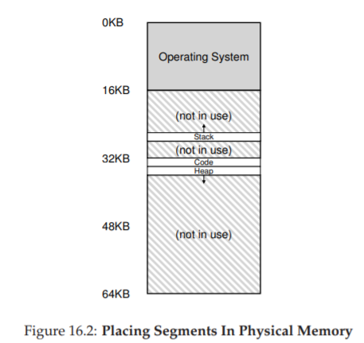
Figure 16.2: Placing Segments In Physical Memory
(Đặt các segment trong bộ nhớ vật lý)
Như bạn thấy trong sơ đồ, chỉ vùng bộ nhớ được sử dụng mới chiếm chỗ trong physical memory; do đó, các address space lớn với nhiều vùng không sử dụng (thường gọi là sparse address spaces) vẫn có thể được chứa.
Cấu trúc phần cứng trong MMU để hỗ trợ segmentation đúng như bạn mong đợi: trong trường hợp này, là một tập hợp ba cặp base–bounds register. Figure 16.3 dưới đây cho thấy giá trị các thanh ghi cho ví dụ trên; mỗi bounds register lưu kích thước của một segment.
| Segment | Base | Size |
|---|---|---|
| Code | 32K | 2K |
| Heap | 34K | 3K |
| Stack | 28K | 2K |
Figure 16.3: Segment Register Values
(Giá trị thanh ghi phân đoạn)
Bạn có thể thấy từ hình rằng code segment được đặt tại địa chỉ vật lý 32 KB và có kích thước 2 KB, còn heap segment được đặt tại 34 KB và có kích thước 3 KB. Giá trị kích thước segment ở đây giống hệt bounds register đã giới thiệu trước đó; nó cho phần cứng biết chính xác có bao nhiêu byte hợp lệ trong segment này (và do đó, cho phép phần cứng xác định khi nào chương trình truy cập trái phép ra ngoài giới hạn).
Hãy làm một ví dụ dịch địa chỉ, sử dụng address space trong Figure 16.1. Giả sử có một tham chiếu tới virtual address 100 (nằm trong code segment, như thấy trực quan ở Figure 16.1, trang 2). Khi tham chiếu diễn ra (ví dụ, khi nạp lệnh), phần cứng sẽ cộng giá trị base với offset trong segment này (100 trong trường hợp này) để ra địa chỉ vật lý mong muốn: 100 + 32 KB = 32868. Sau đó, nó kiểm tra địa chỉ có nằm trong bounds hay không (100 < 2 KB), thấy hợp lệ, và gửi yêu cầu tới địa chỉ vật lý 32868.
ASIDE: THE SEGMENTATION FAULT
Thuật ngữ segmentation fault hoặc segmentation violation xuất phát từ việc truy cập bộ nhớ trái phép trên một máy sử dụng segmentation. Thú vị là thuật ngữ này vẫn tồn tại, ngay cả trên các máy không hỗ trợ segmentation. Hoặc không thú vị lắm, nếu bạn không hiểu tại sao code của mình liên tục bị lỗi.
Bây giờ, hãy xem một địa chỉ trong heap: virtual address 4200 (xem lại Figure 16.1). Nếu chỉ cộng virtual address 4200 với base của heap (34 KB), ta được địa chỉ vật lý 39016 — đây không phải kết quả đúng. Trước tiên, ta cần lấy offset trong heap, tức là byte nào trong segment này địa chỉ đang trỏ tới. Vì heap bắt đầu tại virtual address 4 KB (4096), offset của 4200 là 4200 − 4096 = 104. Sau đó, ta cộng offset này (104) với base register của heap (34 KB) để được kết quả đúng: 34920.
Nếu ta thử truy cập một địa chỉ trái phép (ví dụ: virtual address ≥ 7 KB, vượt quá cuối heap), phần cứng sẽ phát hiện địa chỉ vượt giới hạn, tạo trap vào OS, và nhiều khả năng dẫn tới việc chấm dứt process vi phạm. Và giờ bạn đã biết nguồn gốc của thuật ngữ mà mọi lập trình viên C đều e ngại: segmentation violation hoặc segmentation fault.
16.2 Which Segment Are We Referring To?
(Chúng ta đang tham chiếu tới segment nào?)
Phần cứng sử dụng segment register trong quá trình dịch địa chỉ. Làm thế nào nó biết offset trong segment và địa chỉ thuộc segment nào?
Một cách tiếp cận phổ biến, đôi khi gọi là explicit approach (cách tiếp cận tường minh), là chia address space thành các segment dựa trên một vài bit cao nhất của virtual address; kỹ thuật này được sử dụng trong hệ thống VAX/VMS [LL82]. Trong ví dụ của chúng ta, có ba segment; do đó cần 2 bit để thực hiện. Nếu dùng 2 bit cao nhất của virtual address 14-bit để chọn segment, virtual address sẽ trông như sau:
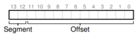
Trong ví dụ này, nếu 2 bit cao nhất là 00, phần cứng biết virtual address nằm trong code segment, và sẽ dùng cặp base–bounds của code để dịch địa chỉ sang physical address đúng. Nếu 2 bit cao nhất là 01, phần cứng biết địa chỉ nằm trong heap, và sẽ dùng cặp base–bounds của heap.
Hãy lấy lại ví dụ heap virtual address ở trên (4200) và dịch nó để làm rõ. Virtual address 4200 ở dạng nhị phân:

Như bạn có thể thấy từ hình minh họa, 2 bit cao nhất (01) cho phần cứng biết chúng ta đang tham chiếu đến segment (phân đoạn) nào. 12 bit thấp còn lại là offset (độ lệch) bên trong segment: 0000 0110 1000, hay ở dạng hex là 0x068, hoặc 104 ở hệ thập phân.
Do đó, phần cứng chỉ cần lấy 2 bit cao nhất để xác định segment register (thanh ghi phân đoạn) cần sử dụng, sau đó lấy 12 bit tiếp theo làm offset trong segment. Bằng cách cộng base register (thanh ghi cơ sở) với offset, phần cứng sẽ tính ra địa chỉ vật lý (physical address) cuối cùng.
Lưu ý rằng offset cũng giúp việc kiểm tra giới hạn (bounds check) trở nên đơn giản hơn: chúng ta chỉ cần kiểm tra xem offset có nhỏ hơn giá trị bounds hay không; nếu không, địa chỉ đó là bất hợp lệ.
Vì vậy, nếu base và bounds được lưu trong các mảng (mỗi phần tử ứng với một segment), phần cứng sẽ thực hiện tương tự như đoạn code sau để lấy được địa chỉ vật lý mong muốn:
// lấy 2 bit cao nhất của VA (Virtual Address - địa chỉ ảo) 14-bit
Segment = (VirtualAddress & SEG_MASK) >> SEG_SHIFT;
// lấy offset
Offset = VirtualAddress & OFFSET_MASK;
if (Offset >= Bounds[Segment]) {
RaiseException(PROTECTION_FAULT);
} else {
PhysAddr = Base[Segment] + Offset;
}
Register = AccessMemory(PhysAddr);
Trong ví dụ đang xét, chúng ta có thể gán giá trị cho các hằng số ở trên. Cụ thể:
SEG_MASKsẽ được đặt là0x3000SEG_SHIFTlà 12OFFSET_MASKlà0xFFF
Bạn cũng có thể nhận thấy rằng khi chúng ta dùng 2 bit cao nhất, nhưng chỉ có 3 segment (code, heap, stack), thì sẽ có một segment trong không gian địa chỉ (address space) không được sử dụng.
Để tận dụng tối đa virtual address space (bộ nhớ ảo) và tránh lãng phí một segment, một số hệ thống đặt code chung với heap trong cùng một segment, và do đó chỉ cần dùng 1 bit để chọn segment cần sử dụng [LL82].
Một vấn đề khác khi sử dụng một số bit cao nhất để chọn segment (đoạn bộ nhớ) là nó giới hạn việc sử dụng virtual address space (không gian địa chỉ ảo). Cụ thể, mỗi segment bị giới hạn ở một kích thước tối đa, trong ví dụ của chúng ta là 4 KB (việc dùng 2 bit cao nhất để chọn segment ngụ ý rằng address space 16 KB sẽ bị chia thành 4 phần, tức mỗi phần 4 KB). Nếu một chương trình đang chạy muốn mở rộng một segment (ví dụ heap hoặc stack) vượt quá giới hạn này, chương trình sẽ không thể thực hiện được.
Có những cách khác để phần cứng xác định một địa chỉ thuộc segment nào. Trong implicit approach (cách tiếp cận ngầm định), phần cứng xác định segment bằng cách quan sát cách địa chỉ được hình thành. Ví dụ, nếu địa chỉ được tạo ra từ program counter (tức là khi nạp lệnh — instruction fetch), thì địa chỉ đó thuộc code segment; nếu địa chỉ dựa trên stack pointer hoặc base pointer, nó phải thuộc stack segment; bất kỳ địa chỉ nào khác sẽ thuộc heap.
16.3 What About The Stack? (Còn stack thì sao?)
Cho đến giờ, chúng ta đã bỏ qua một thành phần quan trọng của address space: stack. Stack đã được tái định vị tới địa chỉ vật lý 28 KB trong sơ đồ ở trên, nhưng có một điểm khác biệt quan trọng: nó tăng trưởng ngược (tức là hướng về các địa chỉ thấp hơn). Trong physical memory, nó “bắt đầu” tại 28 KB1 và phát triển ngược về 26 KB, tương ứng với virtual address từ 16 KB đến 14 KB; do đó, quá trình dịch địa chỉ phải thực hiện khác đi.
Điều đầu tiên chúng ta cần là một chút hỗ trợ bổ sung từ phần cứng. Thay vì chỉ lưu giá trị base và bounds, phần cứng cũng cần biết hướng tăng trưởng của segment (ví dụ: một bit được đặt là 1 nếu segment tăng theo hướng địa chỉ dương, và 0 nếu tăng theo hướng âm). Cách nhìn cập nhật về những gì phần cứng theo dõi được thể hiện trong Figure 16.4:
| Segment | Base | Size (max 4K) | Grows Positive? |
|---|---|---|---|
| Code 00 | 32K | 2K | 1 |
| Heap 01 | 34K | 3K | 1 |
| Stack 11 | 28K | 2K | 0 |
Figure 16.4: Segment Registers (With Negative-Growth Support)
(Thanh ghi phân đoạn với hỗ trợ tăng trưởng ngược)
Khi phần cứng hiểu rằng segment có thể tăng trưởng theo hướng âm, nó phải dịch các virtual address như vậy theo cách hơi khác. Hãy lấy một ví dụ về địa chỉ stack ảo và dịch nó để hiểu quy trình.
Trong ví dụ này, giả sử chúng ta muốn truy cập virtual address 15 KB, vốn sẽ ánh xạ tới physical address 27 KB. Virtual address này ở dạng nhị phân là:
11 1100 0000 0000 (hex 0x3C00).
Phần cứng dùng 2 bit cao nhất (11) để xác định segment, sau đó còn lại offset là 3 KB. Để có được offset âm đúng, ta phải lấy 3 KB trừ đi kích thước tối đa của segment: trong ví dụ này, một segment có thể là 4 KB, do đó offset âm đúng là 3 KB − 4 KB = −1 KB. Ta chỉ cần cộng offset âm (−1 KB) này với base (28 KB) để ra physical address đúng: 27 KB.
Việc kiểm tra bounds có thể được thực hiện bằng cách đảm bảo giá trị tuyệt đối của offset âm nhỏ hơn hoặc bằng kích thước hiện tại của segment (trong trường hợp này là 2 KB).
Mặc dù để đơn giản, chúng ta nói stack “bắt đầu” tại 28 KB, nhưng thực tế giá trị này là byte ngay trước vùng tăng trưởng ngược; byte hợp lệ đầu tiên thực sự là 28 KB trừ 1. Ngược lại, các vùng tăng trưởng xuôi bắt đầu tại địa chỉ của byte đầu tiên của segment. Chúng ta chọn cách này vì nó giúp việc tính toán physical address trở nên đơn giản: physical address chỉ là base cộng với offset âm.
16.4 Support for Sharing (Hỗ trợ chia sẻ)
Khi hỗ trợ segmentation phát triển, các nhà thiết kế hệ thống sớm nhận ra rằng họ có thể đạt được những hiệu quả mới với một chút hỗ trợ phần cứng bổ sung. Cụ thể, để tiết kiệm bộ nhớ, đôi khi việc chia sẻ một số segment giữa các address space là hữu ích. Đặc biệt, code sharing (chia sẻ mã lệnh) là phổ biến và vẫn được sử dụng trong các hệ thống ngày nay.
Để hỗ trợ chia sẻ, chúng ta cần thêm một chút hỗ trợ từ phần cứng, dưới dạng protection bits (các bit bảo vệ). Hỗ trợ cơ bản thêm một vài bit cho mỗi segment, cho biết chương trình có thể đọc hoặc ghi segment hay không, hoặc có thể thực thi mã nằm trong segment đó hay không. Bằng cách đặt code segment ở chế độ chỉ đọc (read-only), cùng một mã lệnh có thể được chia sẻ giữa nhiều process, mà không lo ảnh hưởng đến tính cách ly; trong khi mỗi process vẫn nghĩ rằng nó đang truy cập bộ nhớ riêng, OS thực chất đang chia sẻ vùng bộ nhớ không thể bị process sửa đổi, do đó ảo tưởng này được duy trì.
Một ví dụ về thông tin bổ sung được phần cứng (và OS) theo dõi được thể hiện trong Figure 16.5. Như bạn thấy, code segment được đặt ở chế độ đọc và thực thi (read và execute), do đó cùng một segment vật lý trong bộ nhớ có thể được ánh xạ vào nhiều virtual address space.
| Segment | Base | Size (max 4K) | Grows Positive? | Protection |
|---|---|---|---|---|
| Code 00 | 32K | 2K | 1 | Read-Execute |
| Heap 01 | 34K | 3K | 1 | Read-Write |
| Stack 11 | 28K | 2K | 0 | Read-Write |
Figure 16.5: Segment Register Values (with Protection)
(Giá trị thanh ghi phân đoạn với bảo vệ)
Với protection bits, thuật toán phần cứng đã mô tả trước đó cũng phải thay đổi. Ngoài việc kiểm tra virtual address có nằm trong bounds hay không, phần cứng còn phải kiểm tra xem một truy cập cụ thể có được phép hay không. Nếu một user process cố ghi vào segment chỉ đọc, hoặc thực thi từ segment không cho phép thực thi, phần cứng sẽ phát sinh exception, và OS sẽ xử lý process vi phạm.
16.5 Fine-grained vs. Coarse-grained Segmentation
(Phân đoạn mịn so với phân đoạn thô)
Hầu hết các ví dụ của chúng ta cho đến nay tập trung vào các hệ thống chỉ có một vài segment (ví dụ: code, stack, heap); chúng ta có thể coi segmentation này là coarse-grained (phân đoạn thô), vì nó chia address space thành các khối lớn, thô. Tuy nhiên, một số hệ thống đời đầu (ví dụ: Multics [CV65, DD68]) linh hoạt hơn và cho phép address space bao gồm một số lượng lớn các segment nhỏ hơn, gọi là fine-grained segmentation (phân đoạn mịn).

Hỗ trợ nhiều segment đòi hỏi thêm hỗ trợ phần cứng, với một segment table (bảng phân đoạn) nào đó được lưu trong bộ nhớ. Các bảng phân đoạn như vậy thường hỗ trợ tạo ra một số lượng rất lớn segment, cho phép hệ thống sử dụng segment theo những cách linh hoạt hơn so với những gì chúng ta đã thảo luận. Ví dụ, các máy đời đầu như Burroughs B5000 hỗ trợ hàng nghìn segment, và mong đợi trình biên dịch (compiler) chia nhỏ code và dữ liệu thành các segment riêng biệt mà OS và phần cứng sẽ hỗ trợ [RK68]. Suy nghĩ vào thời điểm đó là: bằng cách có các segment mịn, OS có thể hiểu rõ hơn segment nào đang được sử dụng và segment nào không, từ đó tận dụng main memory (bộ nhớ chính) hiệu quả hơn.
16.6 OS Support (Hỗ trợ từ Hệ điều hành)
Đến đây, bạn đã có một ý tưởng cơ bản về cách segmentation (phân đoạn bộ nhớ) hoạt động. Các phần của address space (không gian địa chỉ) được tái định vị (relocate) vào physical memory (bộ nhớ vật lý) khi hệ thống chạy, và nhờ đó tiết kiệm được một lượng lớn physical memory so với cách tiếp cận đơn giản chỉ dùng một cặp base/bounds register (thanh ghi cơ sở/giới hạn) cho toàn bộ address space. Cụ thể, toàn bộ vùng trống giữa stack và heap không cần phải được cấp phát trong physical memory, cho phép chúng ta chứa nhiều address space hơn trong physical memory và hỗ trợ một virtual address space (bộ nhớ ảo) lớn và thưa (sparse) cho mỗi process (tiến trình).
Tuy nhiên, segmentation đặt ra một số vấn đề mới cho OS (hệ điều hành). Vấn đề đầu tiên là một vấn đề cũ: OS nên làm gì khi xảy ra context switch (chuyển ngữ cảnh)? Có lẽ bạn đã đoán được: các segment register (thanh ghi phân đoạn) phải được lưu và khôi phục. Rõ ràng, mỗi process có virtual address space riêng, và OS phải đảm bảo thiết lập đúng các thanh ghi này trước khi cho process chạy lại.
Vấn đề thứ hai là sự tương tác của OS khi các segment tăng (hoặc giảm) kích thước. Ví dụ, một chương trình có thể gọi malloc() để cấp phát một đối tượng. Trong một số trường hợp, heap hiện tại có thể đáp ứng yêu cầu, và malloc() sẽ tìm vùng trống cho đối tượng và trả về một con trỏ cho hàm gọi. Tuy nhiên, trong các trường hợp khác, chính heap segment có thể cần mở rộng. Khi đó, thư viện cấp phát bộ nhớ sẽ thực hiện một system call (call hệ thống) để mở rộng heap (ví dụ: system call sbrk() truyền thống của UNIX). OS sau đó (thường) sẽ cấp thêm không gian, cập nhật segment size register (thanh ghi kích thước segment) thành kích thước mới (lớn hơn), và thông báo cho thư viện biết việc mở rộng thành công; thư viện khi đó có thể cấp phát vùng nhớ cho đối tượng mới và trả về thành công cho chương trình gọi. Lưu ý rằng OS có thể từ chối yêu cầu nếu không còn physical memory, hoặc nếu nó quyết định rằng process gọi đã sử dụng quá nhiều.
TIP: IF 1000 SOLUTIONS EXIST, NO GREAT ONE DOES
Việc tồn tại quá nhiều thuật toán khác nhau nhằm giảm thiểu external fragmentation (phân mảnh bên ngoài) cho thấy một sự thật cơ bản hơn: không có một cách “tốt nhất” để giải quyết vấn đề. Do đó, chúng ta chọn một giải pháp hợp lý và hy vọng nó đủ tốt. Giải pháp thực sự duy nhất (như chúng ta sẽ thấy trong các chương tiếp theo) là tránh vấn đề ngay từ đầu, bằng cách không bao giờ cấp phát bộ nhớ theo các khối có kích thước thay đổi.
Vấn đề cuối cùng, và có lẽ quan trọng nhất, là quản lý vùng trống trong physical memory. Khi một address space mới được tạo, OS phải tìm được chỗ trong physical memory cho các segment của nó. Trước đây, chúng ta giả định rằng mỗi address space có cùng kích thước, và do đó physical memory có thể được coi như một tập hợp các slot (ô nhớ) để đặt các process. Giờ đây, mỗi process có nhiều segment, và mỗi segment có thể có kích thước khác nhau.
Vấn đề chung phát sinh là physical memory nhanh chóng bị lấp đầy bởi các “lỗ” nhỏ của vùng trống, khiến việc cấp phát segment mới hoặc mở rộng segment hiện tại trở nên khó khăn. Chúng ta gọi vấn đề này là external fragmentation [R69]; xem Figure 16.6 (trái).
Trong ví dụ, một process muốn cấp phát một segment 20 KB. Trong ví dụ này, có 24 KB trống, nhưng không nằm trong một vùng liên tục (mà ở ba khối rời rạc). Do đó, OS không thể đáp ứng yêu cầu 20 KB. Các vấn đề tương tự có thể xảy ra khi có yêu cầu mở rộng một segment; nếu số byte tiếp theo trong physical memory không có sẵn, OS sẽ phải từ chối yêu cầu, ngay cả khi vẫn còn byte trống ở nơi khác trong physical memory.
Một giải pháp cho vấn đề này là compaction (nén bộ nhớ vật lý) bằng cách sắp xếp lại các segment hiện có. Ví dụ, OS có thể dừng các process đang chạy, sao chép dữ liệu của chúng vào một vùng liên tục trong bộ nhớ, thay đổi giá trị segment register để trỏ tới vị trí vật lý mới, và nhờ đó có một vùng trống lớn để sử dụng. Bằng cách này, OS có thể đáp ứng yêu cầu cấp phát mới. Tuy nhiên, compaction rất tốn kém, vì việc sao chép segment tiêu tốn nhiều tài nguyên bộ nhớ và thường sử dụng khá nhiều thời gian CPU; xem Figure 16.6 (phải) để thấy sơ đồ bộ nhớ vật lý sau khi compaction. Trớ trêu thay, compaction cũng khiến việc mở rộng các segment hiện có trở nên khó khăn, và có thể dẫn đến việc phải sắp xếp lại thêm để đáp ứng các yêu cầu đó.
Một cách tiếp cận đơn giản hơn là sử dụng một thuật toán quản lý free list (danh sách vùng trống) nhằm cố gắng giữ các vùng bộ nhớ lớn sẵn sàng cho việc cấp phát. Có hàng trăm cách tiếp cận đã được đề xuất, bao gồm các thuật toán kinh điển như best-fit (giữ danh sách các vùng trống và trả về vùng gần nhất về kích thước so với yêu cầu), worst-fit, first-fit, và các phương pháp phức tạp hơn như buddy algorithm [K68]. Một khảo sát xuất sắc của Wilson et al. [W+95] là điểm khởi đầu tốt nếu bạn muốn tìm hiểu thêm về các thuật toán này, hoặc bạn có thể chờ đến khi chúng ta đề cập đến một số nguyên lý cơ bản trong chương sau. Tuy nhiên, dù thuật toán có thông minh đến đâu, external fragmentation vẫn tồn tại; một thuật toán tốt chỉ cố gắng giảm thiểu nó.
16.7 Summary (Tóm tắt)
Segmentation giải quyết được nhiều vấn đề và giúp chúng ta xây dựng một cơ chế ảo hóa bộ nhớ hiệu quả hơn. Ngoài việc hỗ trợ dynamic relocation (tái định vị động), segmentation còn hỗ trợ tốt hơn cho sparse address space (không gian địa chỉ thưa), bằng cách tránh lãng phí bộ nhớ lớn giữa các segment logic của address space. Nó cũng nhanh, vì các phép tính mà segmentation yêu cầu rất đơn giản và phù hợp với phần cứng; chi phí dịch địa chỉ là tối thiểu. Một lợi ích phụ nữa là code sharing (chia sẻ mã lệnh). Nếu code được đặt trong một segment riêng, segment đó có thể được chia sẻ giữa nhiều chương trình đang chạy.
Tuy nhiên, như chúng ta đã thấy, việc cấp phát các segment có kích thước thay đổi trong bộ nhớ dẫn đến một số vấn đề cần khắc phục. Vấn đề đầu tiên, như đã thảo luận ở trên, là external fragmentation. Vì segment có kích thước thay đổi, vùng nhớ trống bị chia nhỏ thành các mảnh kích thước lẻ, khiến việc đáp ứng yêu cầu cấp phát bộ nhớ trở nên khó khăn. Có thể sử dụng các thuật toán thông minh [W+95] hoặc định kỳ compaction bộ nhớ, nhưng vấn đề này là cơ bản và khó tránh.
Vấn đề thứ hai, và có lẽ quan trọng hơn, là segmentation vẫn chưa đủ linh hoạt để hỗ trợ một sparse address space tổng quát hoàn toàn. Ví dụ, nếu chúng ta có một heap lớn nhưng sử dụng thưa, tất cả nằm trong một segment logic, thì toàn bộ heap vẫn phải nằm trong bộ nhớ để có thể truy cập. Nói cách khác, nếu mô hình sử dụng address space của chúng ta không khớp chính xác với cách segmentation được thiết kế để hỗ trợ, segmentation sẽ hoạt động không hiệu quả. Do đó, chúng ta cần tìm các giải pháp mới. Sẵn sàng khám phá chúng chứ?
17 Quản lý vùng trống (Free-Space Management)
Trong chương này, chúng ta sẽ tạm rẽ sang một hướng khác so với chủ đề ảo hóa bộ nhớ (virtualizing memory) để bàn về một khía cạnh nền tảng của bất kỳ hệ thống quản lý bộ nhớ nào, dù đó là thư viện malloc (quản lý các page của heap của một process – tiến trình) hay chính hệ điều hành (OS – Operating System) quản lý các phần của không gian địa chỉ (address space) của một process. Cụ thể, chúng ta sẽ thảo luận về các vấn đề xoay quanh free-space management (quản lý vùng trống).
Hãy làm rõ vấn đề hơn. Việc quản lý vùng trống có thể rất dễ dàng, như chúng ta sẽ thấy khi bàn về khái niệm paging (phân trang). Nó dễ khi vùng nhớ bạn quản lý được chia thành các đơn vị có kích thước cố định; trong trường hợp đó, bạn chỉ cần giữ một danh sách các đơn vị cố định này; khi một client yêu cầu một đơn vị, bạn chỉ việc trả về phần tử đầu tiên.
Quản lý vùng trống trở nên khó khăn (và thú vị) hơn khi vùng trống bạn quản lý bao gồm các đơn vị có kích thước thay đổi; điều này xảy ra trong thư viện cấp phát bộ nhớ ở mức người dùng (user-level memory-allocation library, như malloc() và free()) và trong OS khi quản lý bộ nhớ vật lý bằng segmentation (phân đoạn) để triển khai virtual memory (bộ nhớ ảo). Trong cả hai trường hợp, vấn đề được gọi là external fragmentation (phân mảnh bên ngoài): vùng trống bị chia nhỏ thành nhiều mảnh có kích thước khác nhau và do đó bị phân mảnh; các yêu cầu cấp phát sau đó có thể thất bại vì không có một vùng liên tục đủ lớn để đáp ứng, mặc dù tổng dung lượng trống vẫn lớn hơn kích thước yêu cầu.

Hình dưới đây minh họa ví dụ về vấn đề này. Trong trường hợp này, tổng vùng trống là 20 byte; tuy nhiên, nó bị phân mảnh thành hai khối, mỗi khối 10 byte. Do đó, một yêu cầu cấp phát 15 byte sẽ thất bại mặc dù tổng dung lượng trống là 20 byte. Và đây chính là vấn đề mà chương này sẽ giải quyết.
CRUX: CÁCH QUẢN LÝ VÙNG TRỐNG
Làm thế nào để quản lý vùng trống khi phải đáp ứng các yêu cầu có kích thước thay đổi? Chiến lược nào có thể được sử dụng để giảm thiểu phân mảnh? Chi phí về thời gian và bộ nhớ của các phương pháp thay thế là gì?
17.1 Các giả định (Assumptions)
Phần lớn nội dung thảo luận sẽ tập trung vào lịch sử phong phú của các allocator (bộ cấp phát) trong thư viện cấp phát bộ nhớ ở mức người dùng. Chúng tôi tham khảo khảo sát xuất sắc của Wilson [W+95] và khuyến khích bạn đọc quan tâm tìm đọc tài liệu gốc để biết thêm chi tiết^[1].
Chúng ta giả định một giao diện cơ bản như malloc() và free(). Cụ thể, void *malloc(size_t size) nhận một tham số duy nhất size, là số byte mà ứng dụng yêu cầu; hàm này trả về một con trỏ (pointer) không có kiểu cụ thể, hay còn gọi là void pointer trong ngôn ngữ C, trỏ tới một vùng nhớ có kích thước bằng hoặc lớn hơn giá trị yêu cầu. Hàm bổ sung void free(void *ptr) nhận một con trỏ và giải phóng khối bộ nhớ tương ứng. Lưu ý hệ quả của giao diện này: khi người dùng giải phóng vùng nhớ, họ không thông báo cho thư viện biết kích thước của nó; do đó, thư viện phải tự xác định kích thước của khối bộ nhớ khi chỉ được cung cấp con trỏ. Chúng ta sẽ bàn về cách thực hiện điều này ở phần sau của chương.
Vùng nhớ mà thư viện này quản lý được gọi là heap, và cấu trúc dữ liệu tổng quát dùng để quản lý vùng trống trong heap là một dạng free list (danh sách vùng trống). Cấu trúc này chứa các tham chiếu tới tất cả các khối vùng trống trong vùng nhớ được quản lý. Tất nhiên, cấu trúc dữ liệu này không nhất thiết phải là danh sách tuyến tính, mà có thể là bất kỳ cấu trúc nào giúp theo dõi vùng trống.
Chúng ta cũng giả định rằng mối quan tâm chính là external fragmentation như đã mô tả ở trên. Các allocator cũng có thể gặp vấn đề internal fragmentation (phân mảnh bên trong); nếu một allocator cấp phát khối bộ nhớ lớn hơn yêu cầu, phần dư thừa (không được yêu cầu và không sử dụng) trong khối đó được xem là internal fragmentation (vì lãng phí xảy ra bên trong đơn vị đã cấp phát) và cũng là một dạng lãng phí bộ nhớ. Tuy nhiên, để đơn giản và vì external fragmentation thú vị hơn, chúng ta sẽ tập trung chủ yếu vào external fragmentation.
Chúng ta cũng giả định rằng một khi bộ nhớ đã được cấp phát cho client, nó không thể được di chuyển sang vị trí khác trong bộ nhớ. Ví dụ, nếu một chương trình gọi malloc() và nhận được một con trỏ tới một vùng trong heap, vùng nhớ đó về cơ bản được “sở hữu” bởi chương trình (và không thể bị thư viện di chuyển) cho đến khi chương trình trả lại nó thông qua call free() tương ứng. Do đó, không thể thực hiện compaction (gom khối) vùng trống, mặc dù đây là một kỹ thuật hữu ích để chống phân mảnh^[2]. Tuy nhiên, compaction có thể được OS sử dụng để xử lý phân mảnh khi triển khai segmentation (như đã bàn trong chương về segmentation).
^[1]: Tài liệu này dài gần 80 trang; bạn thực sự phải rất quan tâm mới đọc hết!
^[2]: Khi bạn đưa một con trỏ tới một khối bộ nhớ cho chương trình C, thường rất khó để xác định tất cả các tham chiếu (pointer) tới vùng đó, vì chúng có thể được lưu trong các biến khác hoặc thậm chí trong thanh ghi tại một thời điểm thực thi. Điều này có thể không đúng với các ngôn ngữ có kiểu mạnh và thu gom rác (garbage-collected), vốn cho phép compaction như một kỹ thuật chống phân mảnh.
Cuối cùng, chúng ta giả định rằng allocator quản lý một vùng byte liên tục. Trong một số trường hợp, allocator có thể yêu cầu mở rộng vùng này; ví dụ, thư viện cấp phát bộ nhớ ở mức người dùng có thể gọi vào kernel để mở rộng heap (thông qua system call như sbrk) khi hết chỗ. Tuy nhiên, để đơn giản, chúng ta giả định rằng vùng này có kích thước cố định trong suốt vòng đời của nó.
17.2 Các cơ chế mức thấp (Low-level Mechanisms)
Trước khi đi sâu vào một số chi tiết về policy (chính sách cấp phát), trước hết chúng ta sẽ tìm hiểu một số cơ chế phổ biến được sử dụng trong hầu hết các allocator (bộ cấp phát). Đầu tiên, chúng ta sẽ thảo luận về các nguyên tắc cơ bản của splitting (chia nhỏ) và coalescing (gộp khối), những kỹ thuật thường gặp trong hầu hết các allocator. Tiếp theo, chúng ta sẽ xem cách theo dõi kích thước của các vùng đã cấp phát một cách nhanh chóng và tương đối dễ dàng. Cuối cùng, chúng ta sẽ bàn về cách xây dựng một danh sách đơn giản bên trong vùng trống để theo dõi phần nào đang trống và phần nào đã được sử dụng.
Splitting và Coalescing
Một free list (danh sách vùng trống) chứa tập hợp các phần tử mô tả vùng trống còn lại trong heap. Giả sử chúng ta có một heap 30 byte như sau:
Free list cho heap này sẽ có hai phần tử. Một phần tử mô tả đoạn trống 10 byte đầu tiên (byte 0–9), và một phần tử mô tả đoạn trống còn lại (byte 20–29):

Như đã mô tả ở trên, một yêu cầu cấp phát lớn hơn 10 byte sẽ thất bại (trả về NULL), vì không có một khối bộ nhớ liên tục nào đủ lớn để đáp ứng. Một yêu cầu đúng bằng 10 byte có thể được đáp ứng dễ dàng bởi một trong hai khối trống. Nhưng điều gì xảy ra nếu yêu cầu nhỏ hơn 10 byte?
Giả sử chúng ta có một yêu cầu chỉ lấy 1 byte bộ nhớ. Trong trường hợp này, allocator sẽ thực hiện một thao tác gọi là splitting: nó sẽ tìm một khối trống đủ lớn để đáp ứng yêu cầu và chia nó thành hai phần. Phần thứ nhất sẽ được trả về cho người gọi; phần thứ hai sẽ vẫn nằm trong free list. Trong ví dụ trên, nếu yêu cầu 1 byte được đưa ra và allocator quyết định sử dụng phần tử thứ hai trong danh sách để đáp ứng yêu cầu, call malloc() sẽ trả về địa chỉ 20 (địa chỉ của vùng 1 byte được cấp phát) và danh sách sẽ trở thành:
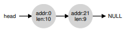
Trong hình minh họa, bạn có thể thấy danh sách về cơ bản vẫn giữ nguyên; thay đổi duy nhất là vùng trống giờ bắt đầu tại byte 21 thay vì 20, và độ dài vùng trống này chỉ còn 9 byte^[3]. Do đó, splitting thường được sử dụng trong allocator khi yêu cầu nhỏ hơn kích thước của bất kỳ khối trống nào.
Một cơ chế bổ sung thường thấy trong nhiều allocator là coalescing vùng trống. Lấy lại ví dụ ở trên (trống 10 byte, dùng 10 byte, trống 10 byte).
Với heap nhỏ này, điều gì xảy ra khi một ứng dụng gọi free(10), trả lại vùng ở giữa heap? Nếu chúng ta chỉ đơn giản thêm vùng trống này vào danh sách mà không xử lý gì thêm, chúng ta có thể nhận được danh sách như sau:

Hãy chú ý vấn đề: mặc dù toàn bộ heap giờ đã trống, nó lại bị chia thành ba khối 10 byte. Do đó, nếu người dùng yêu cầu 20 byte, việc duyệt danh sách sẽ không tìm thấy khối trống đủ lớn và sẽ trả về lỗi.
Để tránh vấn đề này, allocator sẽ coalesce vùng trống khi một khối bộ nhớ được giải phóng. Ý tưởng rất đơn giản: khi trả lại một khối trống, hãy kiểm tra kỹ địa chỉ của khối này và các khối trống lân cận; nếu vùng vừa được giải phóng nằm ngay cạnh một (hoặc hai, như trong ví dụ này) khối trống hiện có, hãy gộp chúng thành một khối trống lớn hơn. Với coalescing, danh sách cuối cùng sẽ như sau:
Thực tế, đây chính là trạng thái ban đầu của heap trước khi có bất kỳ cấp phát nào. Nhờ coalescing, allocator có thể đảm bảo tốt hơn rằng các khối trống lớn sẽ sẵn sàng cho ứng dụng.
^[3]: Phần thảo luận này giả định không có header (phần tiêu đề lưu thông tin quản lý), đây là giả định không thực tế nhưng giúp đơn giản hóa vấn đề.
Theo dõi kích thước vùng đã cấp phát (Tracking The Size Of Allocated Regions)
Bạn có thể nhận thấy rằng giao diện free(void *ptr) không nhận tham số kích thước; do đó, giả định rằng khi có một con trỏ, thư viện malloc có thể nhanh chóng xác định kích thước của vùng bộ nhớ được giải phóng và đưa vùng này trở lại free list.
Để thực hiện điều này, hầu hết các allocator lưu một lượng nhỏ thông tin bổ sung trong một header block (khối tiêu đề) được giữ trong bộ nhớ, thường nằm ngay trước khối bộ nhớ được cấp phát cho người dùng. Hãy xem một ví dụ (Hình 17.1). Trong ví dụ này, chúng ta đang xét một khối đã cấp phát có kích thước 20 byte, được trỏ bởi ptr; giả sử người dùng gọi malloc() và lưu kết quả vào ptr, ví dụ:
ptr = malloc(20);

Hình 17.1: Một vùng đã cấp phát kèm header
Header tối thiểu sẽ chứa kích thước của vùng đã cấp phát (trong trường hợp này là 20); nó cũng có thể chứa các con trỏ bổ sung để tăng tốc giải phóng, một magic number (số đặc biệt) để kiểm tra tính toàn vẹn dữ liệu, và các thông tin khác. Giả sử một header đơn giản chỉ chứa kích thước vùng và magic number, như sau:
typedef struct {
int size;
int magic;
} header_t;
Hình 17.2: Nội dung cụ thể của header
Ví dụ trên sẽ trông giống như trong Hình 17.2. Khi người dùng gọi free(ptr), thư viện sẽ dùng phép toán con trỏ đơn giản để xác định vị trí bắt đầu của header:
void free(void *ptr) {
header_t *hptr = (header_t *) ptr - 1;
...
}
Sau khi có con trỏ tới header, thư viện có thể dễ dàng kiểm tra xem magic number có khớp với giá trị mong đợi hay không như một bước kiểm tra hợp lệ (assert(hptr->magic == 1234567)), và tính toán tổng kích thước của vùng vừa được giải phóng bằng phép cộng đơn giản (tức là cộng kích thước của header với kích thước vùng dữ liệu của người dùng). Lưu ý một chi tiết nhỏ nhưng quan trọng: kích thước của vùng trống là kích thước của header cộng với kích thước vùng được cấp phát cho người dùng. Do đó, khi người dùng yêu cầu N byte bộ nhớ, thư viện không tìm kiếm một khối trống có kích thước N, mà tìm một khối trống có kích thước N + kích thước header.
Nhúng một Free List (Embedding A Free List)
Cho đến giờ, chúng ta mới chỉ xem free list (danh sách vùng trống) đơn giản của mình như một thực thể khái niệm; nó chỉ là một danh sách mô tả các khối bộ nhớ trống trong heap. Nhưng làm thế nào để xây dựng danh sách này ngay bên trong chính vùng trống đó?
Trong một danh sách thông thường, khi cần cấp phát một node mới, bạn chỉ việc gọi malloc() để lấy bộ nhớ cho node đó. Thật không may, bên trong thư viện cấp phát bộ nhớ (memory-allocation library), bạn không thể làm như vậy! Thay vào đó, bạn cần xây dựng danh sách ngay bên trong vùng trống. Đừng lo nếu điều này nghe có vẻ hơi kỳ lạ; đúng là hơi khác thường, nhưng hoàn toàn có thể thực hiện được.
Giả sử chúng ta có một khối bộ nhớ 4096 byte để quản lý (tức heap là 4KB). Để quản lý nó như một free list, trước tiên chúng ta phải khởi tạo danh sách; ban đầu, danh sách sẽ chỉ có một phần tử, kích thước 4096 byte (trừ đi kích thước header). Đây là mô tả của một node trong danh sách:
typedef struct __node_t {
int size;
struct __node_t *next;
} node_t;
Bây giờ, hãy xem một đoạn code khởi tạo heap và đặt phần tử đầu tiên của free list vào chính vùng trống đó. Chúng ta giả định rằng heap được xây dựng từ một vùng trống lấy được thông qua call system call mmap(); đây không phải là cách duy nhất để tạo heap, nhưng phù hợp cho ví dụ này. Đoạn code như sau:
// mmap() trả về một con trỏ tới một vùng trống
node_t *head = mmap(NULL, 4096, PROT_READ|PROT_WRITE,
MAP_ANON|MAP_PRIVATE, -1, 0);
head->size = 4096 - sizeof(node_t);
head->next = NULL;

Hình 17.3: Một heap với một khối trống duy nhất
Sau khi chạy đoạn code này, trạng thái danh sách là: nó có một phần tử duy nhất, kích thước 4088 byte. Đúng, đây là một heap rất nhỏ, nhưng đủ để minh họa. Con trỏ head chứa địa chỉ bắt đầu của vùng này; giả sử nó là 16KB (mặc dù bất kỳ địa chỉ ảo nào cũng được). Trực quan, heap trông giống như trong Hình 17.3.
Hình 17.4: Heap sau một lần cấp phát

Bây giờ, giả sử có một yêu cầu cấp phát bộ nhớ, ví dụ 100 byte. Để xử lý yêu cầu này, thư viện sẽ tìm một khối trống đủ lớn; vì chỉ có một khối trống (kích thước 4088 byte), khối này sẽ được chọn. Sau đó, khối này sẽ được chia thành hai: một khối đủ lớn để đáp ứng yêu cầu (cộng với header, như đã mô tả ở trên) và phần còn lại là khối trống. Giả sử header dài 8 byte (gồm một số nguyên size và một số nguyên magic number), vùng nhớ trong heap lúc này sẽ giống như trong Hình 17.4.
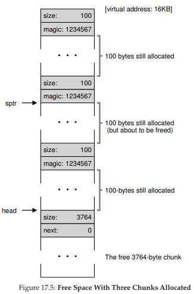
Hình 17.5: Vùng trống khi đã cấp phát ba khối
Như vậy, với yêu cầu 100 byte, thư viện đã cấp phát 108 byte từ khối trống duy nhất, trả về một con trỏ (được đánh dấu ptr trong hình) tới vùng này, lưu thông tin header ngay trước vùng cấp phát để dùng khi free(), và thu nhỏ node trống duy nhất trong danh sách xuống còn 3980 byte (4088 trừ 108).
Bây giờ, hãy xem heap khi có ba vùng đã cấp phát, mỗi vùng 100 byte (hoặc 108 byte nếu tính cả header). Hình minh họa heap này được thể hiện trong Hình 17.5.

Hình 17.6: Vùng trống khi còn hai khối đã cấp phát
Như bạn thấy, 324 byte đầu tiên của heap hiện đã được cấp phát, và ta thấy ba header trong vùng này cùng ba vùng 100 byte đang được chương trình sử dụng. Free list vẫn đơn giản: chỉ một node (được head trỏ tới), nhưng giờ chỉ còn 3764 byte sau ba lần chia. Nhưng điều gì xảy ra khi chương trình trả lại một phần bộ nhớ qua free()?
Trong ví dụ này, ứng dụng trả lại khối ở giữa bằng cách gọi free(16500) (giá trị 16500 có được bằng cách cộng địa chỉ bắt đầu vùng nhớ 16384 với 108 byte của khối trước đó và 8 byte header của khối này). Giá trị này được thể hiện trong hình trước bởi con trỏ sptr.
Hình 17.7: Free list không được coalescing

Thư viện ngay lập tức xác định kích thước vùng trống, rồi thêm khối này vào free list. Giả sử chúng ta chèn vào đầu free list, vùng nhớ lúc này sẽ giống như trong Hình 17.6.
Bây giờ, chúng ta có một danh sách bắt đầu bằng một khối trống nhỏ (100 byte, được head trỏ tới) và một khối trống lớn (3764 byte). Cuối cùng, danh sách của chúng ta đã có hơn một phần tử! Và đúng vậy, vùng trống đã bị phân mảnh — một hiện tượng không mong muốn nhưng thường gặp.
Ví dụ cuối cùng: giả sử bây giờ hai khối đang sử dụng còn lại được giải phóng. Nếu không coalescing, bạn sẽ gặp phân mảnh (Hình 17.7). Như bạn thấy, chúng ta có một “mớ hỗn độn”! Tại sao? Đơn giản là vì chúng ta quên gộp danh sách. Mặc dù toàn bộ bộ nhớ đang trống, nó bị chia nhỏ thành nhiều mảnh, khiến nó trông như bị phân mảnh dù thực tế không phải. Giải pháp rất đơn giản: duyệt qua danh sách và gộp các khối liền kề; khi hoàn tất, heap sẽ trở lại nguyên vẹn.
Mở rộng Heap (Growing The Heap)
Chúng ta nên thảo luận về một cơ chế cuối cùng thường xuất hiện trong nhiều thư viện cấp phát bộ nhớ. Cụ thể, bạn sẽ làm gì nếu heap (vùng nhớ động) hết chỗ? Cách tiếp cận đơn giản nhất là… thất bại. Trong một số trường hợp, đây là lựa chọn duy nhất, và việc trả về NULL là một cách xử lý “đường đường chính chính”. Đừng cảm thấy tệ! Bạn đã cố gắng, và dù thất bại, bạn vẫn đã “chiến đấu” hết mình.
Hầu hết các allocator (bộ cấp phát) truyền thống bắt đầu với một heap có kích thước nhỏ, sau đó yêu cầu thêm bộ nhớ từ OS (hệ điều hành) khi hết chỗ. Thông thường, điều này có nghĩa là chúng sẽ thực hiện một call system call (call hệ thống) nào đó (ví dụ: sbrk trong hầu hết các hệ thống UNIX) để mở rộng heap, rồi cấp phát các khối mới từ đó. Để xử lý yêu cầu sbrk, OS sẽ tìm các physical page (trang bộ nhớ vật lý) còn trống, ánh xạ chúng vào address space (không gian địa chỉ) của process (tiến trình) yêu cầu, rồi trả về giá trị địa chỉ kết thúc của heap mới; tại thời điểm đó, một heap lớn hơn đã sẵn sàng, và yêu cầu cấp phát có thể được xử lý thành công.
17.3 Các chiến lược cơ bản (Basic Strategies)
Bây giờ khi chúng ta đã có một số cơ chế nền tảng, hãy cùng xem qua một số chiến lược cơ bản để quản lý vùng trống. Các cách tiếp cận này chủ yếu dựa trên những policy (chính sách) khá đơn giản mà chính bạn cũng có thể nghĩ ra; hãy thử suy nghĩ trước khi đọc tiếp để xem bạn có thể tìm ra tất cả các phương án (hoặc thậm chí những phương án mới) hay không.
Một allocator lý tưởng vừa phải nhanh, vừa phải giảm thiểu phân mảnh (fragmentation). Thật không may, vì luồng yêu cầu cấp phát và giải phóng có thể tùy ý (do lập trình viên quyết định), bất kỳ chiến lược nào cũng có thể hoạt động rất tệ nếu gặp bộ dữ liệu đầu vào “khó chịu”. Do đó, chúng ta sẽ không mô tả một phương pháp “tốt nhất”, mà chỉ bàn về một số phương pháp cơ bản, cùng ưu và nhược điểm của chúng.
Best Fit
Chiến lược best fit khá đơn giản: trước tiên, duyệt qua free list (danh sách vùng trống) và tìm các khối bộ nhớ trống có kích thước bằng hoặc lớn hơn kích thước yêu cầu. Sau đó, trả về khối nhỏ nhất trong nhóm ứng viên này; đây chính là khối “best-fit” (có thể gọi là “smallest fit” – vừa khít nhất). Chỉ cần một lần duyệt qua free list là đủ để tìm khối phù hợp.
Trực giác đằng sau best fit rất rõ ràng: bằng cách trả về một khối gần với kích thước mà người dùng yêu cầu, best fit cố gắng giảm thiểu lãng phí bộ nhớ. Tuy nhiên, cái giá phải trả là hiệu năng; các triển khai đơn giản sẽ chịu chi phí tìm kiếm rất lớn khi phải duyệt toàn bộ danh sách để tìm khối phù hợp.
Worst Fit
Chiến lược worst fit là đối lập với best fit: tìm khối lớn nhất và cấp phát phần bộ nhớ được yêu cầu; phần còn lại (vẫn là một khối lớn) được giữ lại trong free list. Worst fit cố gắng để lại các khối lớn thay vì tạo ra nhiều khối nhỏ như có thể xảy ra với best fit. Tuy nhiên, một lần nữa, phương pháp này yêu cầu duyệt toàn bộ vùng trống, và do đó có thể tốn kém. Tệ hơn, hầu hết các nghiên cứu cho thấy nó hoạt động kém, dẫn đến phân mảnh nhiều hơn trong khi vẫn có chi phí cao.
First Fit
Phương pháp first fit chỉ đơn giản là tìm khối đầu tiên đủ lớn và cấp phát phần bộ nhớ được yêu cầu cho người dùng. Phần còn lại của khối vẫn được giữ lại để phục vụ các yêu cầu sau.
First fit có ưu điểm là nhanh — không cần duyệt toàn bộ danh sách vùng trống — nhưng đôi khi làm “ô nhiễm” phần đầu của free list với các khối nhỏ. Do đó, cách mà allocator quản lý thứ tự của free list trở thành một vấn đề. Một cách tiếp cận là sử dụng address-based ordering (sắp xếp theo địa chỉ); bằng cách giữ danh sách được sắp xếp theo địa chỉ của vùng trống, việc coalescing trở nên dễ dàng hơn và phân mảnh có xu hướng giảm.
Next Fit
Thay vì luôn bắt đầu tìm kiếm theo kiểu first fit từ đầu danh sách, thuật toán next fit giữ thêm một con trỏ tới vị trí trong danh sách mà lần tìm kiếm trước đã dừng lại. Ý tưởng là phân tán việc tìm kiếm vùng trống đều hơn trên toàn bộ danh sách, tránh việc “băm nhỏ” phần đầu danh sách. Hiệu năng của phương pháp này khá giống với first fit, vì vẫn tránh được việc duyệt toàn bộ danh sách.
Ví dụ
Dưới đây là một vài ví dụ về các chiến lược trên. Hãy hình dung một free list có ba phần tử, kích thước lần lượt là 10, 30 và 20 (chúng ta sẽ bỏ qua header và các chi tiết khác, chỉ tập trung vào cách các chiến lược hoạt động):

Giả sử có một yêu cầu cấp phát kích thước 15. Cách tiếp cận best fit sẽ duyệt toàn bộ danh sách và tìm ra rằng khối 20 là phù hợp nhất, vì nó là khối nhỏ nhất có thể chứa yêu cầu. Free list sau đó sẽ là:
Như trong ví dụ này, và thường xảy ra với best fit, một khối trống nhỏ sẽ bị bỏ lại. Cách tiếp cận worst fit tương tự nhưng thay vào đó tìm khối lớn nhất, trong ví dụ này là khối 30. Free list sau đó sẽ là:

Chiến lược first fit trong ví dụ này làm điều tương tự như worst fit, cũng tìm khối trống đầu tiên có thể đáp ứng yêu cầu. Sự khác biệt nằm ở chi phí tìm kiếm; cả best fit và worst fit đều duyệt toàn bộ danh sách, trong khi first fit chỉ kiểm tra các khối trống cho đến khi tìm được khối phù hợp, do đó giảm chi phí tìm kiếm.
Những ví dụ này chỉ mới “lướt qua bề mặt” của các chính sách cấp phát. Để hiểu sâu hơn, cần có phân tích chi tiết hơn với các tải công việc thực tế và hành vi allocator phức tạp hơn (ví dụ: coalescing). Có lẽ đây sẽ là một bài tập thú vị cho phần bài tập về nhà?
17.4 Các cách tiếp cận khác (Other Approaches)
Ngoài các phương pháp cơ bản đã mô tả ở trên, đã có rất nhiều kỹ thuật và thuật toán được đề xuất nhằm cải thiện việc cấp phát bộ nhớ theo nhiều cách khác nhau. Dưới đây là một số ví dụ để bạn tham khảo (tức là để bạn suy nghĩ nhiều hơn một chút ngoài phương pháp best-fit allocation).
Segregated Lists (Danh sách phân tách)
Một cách tiếp cận thú vị đã tồn tại từ lâu là sử dụng segregated lists (danh sách phân tách). Ý tưởng cơ bản rất đơn giản: nếu một ứng dụng cụ thể thường xuyên có một (hoặc một vài) yêu cầu cấp phát với kích thước phổ biến, hãy giữ một danh sách riêng chỉ để quản lý các đối tượng có kích thước đó; tất cả các yêu cầu khác sẽ được chuyển đến một memory allocator (bộ cấp phát bộ nhớ) tổng quát hơn.
Lợi ích của cách tiếp cận này là rõ ràng. Bằng cách dành riêng một phần bộ nhớ cho một kích thước yêu cầu cụ thể, vấn đề fragmentation (phân mảnh) sẽ ít đáng lo ngại hơn; hơn nữa, các yêu cầu cấp phát và giải phóng có kích thước phù hợp có thể được xử lý rất nhanh, vì không cần tìm kiếm phức tạp trong danh sách.
Giống như bất kỳ ý tưởng hay nào, cách tiếp cận này cũng mang đến những phức tạp mới cho hệ thống. Ví dụ: nên dành bao nhiêu bộ nhớ cho pool (bể bộ nhớ) phục vụ các yêu cầu chuyên biệt của một kích thước nhất định, so với pool tổng quát? Một allocator cụ thể, slab allocator do kỹ sư xuất sắc Jeff Bonwick thiết kế (dùng trong Solaris kernel), xử lý vấn đề này theo một cách rất hay [B94].
Cụ thể, khi kernel khởi động, nó sẽ cấp phát một số object cache (bộ đệm đối tượng) cho các đối tượng kernel có khả năng được yêu cầu thường xuyên (như lock, file-system inode, v.v.); các object cache này chính là các free list phân tách theo kích thước và phục vụ nhanh chóng các yêu cầu cấp phát/giải phóng bộ nhớ. Khi một cache nhất định sắp hết vùng trống, nó sẽ yêu cầu một số slab bộ nhớ từ allocator tổng quát hơn (tổng dung lượng yêu cầu là bội số của page size và kích thước đối tượng). Ngược lại, khi reference count (bộ đếm tham chiếu) của tất cả đối tượng trong một slab về 0, allocator tổng quát có thể thu hồi slab đó từ allocator chuyên biệt — điều này thường được thực hiện khi hệ thống VM (virtual memory) cần thêm bộ nhớ.
ASIDE: KỸ SƯ GIỎI THỰC SỰ LÀ RẤT GIỎI
Các kỹ sư như Jeff Bonwick (người không chỉ viết slab allocator được nhắc đến ở đây mà còn là trưởng nhóm phát triển hệ thống file tuyệt vời ZFS) chính là trái tim của Silicon Valley. Đằng sau hầu hết các sản phẩm hoặc công nghệ vĩ đại là một con người (hoặc một nhóm nhỏ) vượt trội về tài năng, khả năng và sự tận tâm. Như Mark Zuckerberg (Facebook) từng nói: “Một người xuất sắc trong vai trò của họ không chỉ giỏi hơn một chút so với người khá giỏi. Họ giỏi hơn gấp 100 lần.” Đây là lý do tại sao, ngay cả ngày nay, một hoặc hai người vẫn có thể khởi nghiệp và thay đổi bộ mặt thế giới mãi mãi (hãy nghĩ đến Google, Apple hoặc Facebook). Hãy làm việc chăm chỉ và bạn có thể trở thành một “người 100x” như vậy! Nếu không, hãy tìm cách làm việc cùng họ; bạn sẽ học được nhiều trong một ngày hơn hầu hết mọi người học trong một tháng.
Slab allocator còn vượt xa hầu hết các phương pháp segregated list khác ở chỗ nó giữ các đối tượng trống trong danh sách ở trạng thái pre-initialized (đã được khởi tạo sẵn). Bonwick chỉ ra rằng việc khởi tạo và hủy cấu trúc dữ liệu là tốn kém [B94]; bằng cách giữ các đối tượng đã giải phóng trong trạng thái đã khởi tạo, slab allocator tránh được chu kỳ khởi tạo/hủy lặp lại cho mỗi đối tượng và do đó giảm đáng kể chi phí.
Buddy Allocation (Cấp phát theo cặp “buddy”)
Vì coalescing (gộp khối) là rất quan trọng đối với một allocator, một số phương pháp đã được thiết kế xoay quanh việc làm cho coalescing trở nên đơn giản. Một ví dụ điển hình là binary buddy allocator [K65].
Trong hệ thống này, bộ nhớ trống ban đầu được coi như một khối lớn có kích thước ( 2^N ). Khi có yêu cầu cấp phát, quá trình tìm kiếm sẽ chia đôi vùng trống một cách đệ quy cho đến khi tìm được một khối đủ lớn để đáp ứng yêu cầu (và nếu chia đôi thêm nữa sẽ tạo ra khối quá nhỏ). Tại thời điểm đó, khối được yêu cầu sẽ được trả về cho người dùng. Ví dụ dưới đây minh họa một vùng trống 64KB được chia nhỏ để tìm khối 7KB (Hình 17.8).

Hình 17.8: Ví dụ heap được quản lý bằng buddy
Trong ví dụ, khối 8KB ngoài cùng bên trái được cấp phát (được tô màu xám đậm) và trả về cho người dùng; lưu ý rằng phương pháp này có thể gặp internal fragmentation (phân mảnh bên trong), vì chỉ được phép cấp phát các khối có kích thước là lũy thừa của 2.
Điểm hay của buddy allocation nằm ở chỗ khi khối đó được giải phóng. Khi trả lại khối 8KB vào free list, allocator sẽ kiểm tra xem “buddy” 8KB của nó có trống không; nếu có, nó sẽ gộp hai khối thành một khối 16KB. Sau đó, allocator kiểm tra xem buddy của khối 16KB này có trống không; nếu có, lại gộp tiếp thành khối 32KB. Quá trình coalescing đệ quy này tiếp tục lên trên cây, hoặc cho đến khi khôi phục toàn bộ vùng trống, hoặc dừng lại khi gặp một buddy đang được sử dụng.
Lý do buddy allocation hoạt động hiệu quả là vì rất dễ xác định buddy của một khối cụ thể. Làm thế nào? Hãy nghĩ về địa chỉ của các khối trong vùng trống ở trên. Nếu bạn quan sát kỹ, bạn sẽ thấy địa chỉ của mỗi cặp buddy chỉ khác nhau ở một bit duy nhất; bit nào khác nhau được xác định bởi cấp (level) trong cây buddy. Và đó là ý tưởng cơ bản của cơ chế binary buddy allocation. Để biết chi tiết hơn, hãy xem khảo sát của Wilson [W+95].
Các ý tưởng khác (Other Ideas)
Một vấn đề lớn của nhiều phương pháp ở trên là khả năng mở rộng (scaling) kém. Cụ thể, việc tìm kiếm trong danh sách có thể rất chậm. Do đó, các allocator tiên tiến sử dụng cấu trúc dữ liệu phức tạp hơn để giảm chi phí này, đánh đổi sự đơn giản lấy hiệu năng. Ví dụ: balanced binary tree, splay tree, hoặc partially-ordered tree [W+95].
Vì các hệ thống hiện đại thường có nhiều bộ xử lý và chạy các tải công việc đa luồng (multi-threaded workloads, bạn sẽ học chi tiết trong phần về Concurrency), không có gì ngạc nhiên khi nhiều nỗ lực đã được dành để làm cho allocator hoạt động tốt trên hệ thống đa bộ xử lý. Hai ví dụ tiêu biểu là nghiên cứu của Berger et al. [B+00] và Evans [E06]; hãy tìm đọc để biết chi tiết.
Đây chỉ là hai trong số hàng ngàn ý tưởng mà con người đã nghĩ ra về memory allocator; nếu tò mò, bạn hãy tự tìm hiểu thêm. Nếu không, hãy đọc về cách hoạt động của glibc allocator [S15] để có cái nhìn thực tế hơn.
17.5 Tóm tắt (Summary)
Trong chương này, chúng ta đã thảo luận về những dạng cơ bản nhất của memory allocator (bộ cấp phát bộ nhớ). Các allocator như vậy tồn tại ở khắp nơi: được liên kết vào mọi chương trình C bạn viết, cũng như trong OS nền tảng đang quản lý bộ nhớ cho các cấu trúc dữ liệu của chính nó. Giống như nhiều hệ thống khác, có rất nhiều sự đánh đổi khi xây dựng một hệ thống như vậy, và càng biết rõ về workload (tải công việc) mà allocator phải xử lý, bạn càng có thể tinh chỉnh nó để hoạt động tốt hơn.
18. Paging: Giới thiệu
Người ta đôi khi nói rằng hệ điều hành (operating system – OS) thường áp dụng một trong hai cách tiếp cận khi giải quyết hầu hết các vấn đề quản lý không gian bộ nhớ.
Cách tiếp cận thứ nhất là chia nhỏ không gian thành các phần có kích thước thay đổi (variable-sized pieces), như chúng ta đã thấy với segmentation (phân đoạn) trong virtual memory (bộ nhớ ảo).
Đáng tiếc, giải pháp này có những khó khăn vốn có. Cụ thể, khi chia một không gian thành các khối có kích thước khác nhau, chính không gian đó có thể bị phân mảnh (fragmentation), và do đó việc cấp phát (allocation) trở nên khó khăn hơn theo thời gian.
Vì vậy, có thể đáng để xem xét cách tiếp cận thứ hai: chia nhỏ không gian thành các phần có kích thước cố định (fixed-sized pieces). Trong virtual memory, ý tưởng này được gọi là paging (phân trang), và nó bắt nguồn từ một hệ thống quan trọng thời kỳ đầu – Atlas [KE+62, L78].
Thay vì chia không gian địa chỉ (address space) của một process (tiến trình) thành một số segment (đoạn) logic có kích thước thay đổi (ví dụ: code, heap, stack), chúng ta chia nó thành các đơn vị có kích thước cố định, mỗi đơn vị được gọi là page (trang). Tương ứng, chúng ta xem physical memory (bộ nhớ vật lý) như một mảng các ô có kích thước cố định gọi là page frame (khung trang); mỗi frame có thể chứa một page của virtual memory.
Thách thức đặt ra là:
THE CRUX:
HOW TO VIRTUALIZE MEMORY WITH PAGES
Làm thế nào để ảo hóa bộ nhớ bằng pages, nhằm tránh các vấn đề của segmentation? Các kỹ thuật cơ bản là gì? Làm sao để các kỹ thuật này hoạt động hiệu quả, với chi phí về không gian và thời gian tối thiểu?
18.1 Ví dụ đơn giản và tổng quan
Để làm rõ hơn cách tiếp cận này, hãy minh họa bằng một ví dụ đơn giản.
Hình 18.1 trình bày một ví dụ về một address space rất nhỏ, chỉ có tổng cộng 64 byte, với bốn page 16 byte (các virtual page 0, 1, 2 và 3).
Trong thực tế, address space thường lớn hơn nhiều, phổ biến là 32-bit (tương đương 4 GB address space), hoặc thậm chí 64-bit^[1]. Trong sách này, chúng ta sẽ thường dùng các ví dụ nhỏ để dễ tiếp thu.
^[1]: Một address space 64-bit rất khó hình dung vì nó cực kỳ lớn. Một phép so sánh: nếu address space 32-bit có kích thước bằng một sân tennis, thì address space 64-bit có kích thước xấp xỉ cả châu Âu (!).

Hình 18.1: A Simple 64-byte Address Space
Physical memory, như thể hiện trong Hình 18.2, cũng bao gồm một số ô có kích thước cố định, trong trường hợp này là tám page frame (tổng cộng 128 byte physical memory – cũng rất nhỏ).
Như bạn thấy trong sơ đồ, các page của virtual address space được đặt tại các vị trí khác nhau trong physical memory; sơ đồ cũng cho thấy OS sử dụng một phần physical memory cho chính nó.
Paging, như chúng ta sẽ thấy, có nhiều ưu điểm so với các cách tiếp cận trước đây. Có lẽ cải tiến quan trọng nhất là tính linh hoạt: với một cơ chế paging hoàn chỉnh, hệ thống có thể hỗ trợ trừu tượng hóa address space một cách hiệu quả, bất kể process sử dụng address space như thế nào; ví dụ, chúng ta không cần giả định heap và stack sẽ phát triển theo hướng nào hoặc được dùng ra sao.

Hình 18.2: A 64-Byte Address Space In A 128-Byte Physical Memory
Một ưu điểm khác là sự đơn giản trong quản lý vùng trống mà paging mang lại.
Ví dụ, khi OS muốn đặt address space 64 byte của chúng ta vào physical memory 8 page, nó chỉ cần tìm 4 page trống; có thể OS duy trì một free list (danh sách trang trống) và chỉ việc lấy 4 page đầu tiên từ danh sách này.
Trong ví dụ, OS đã đặt virtual page 0 của address space (AS) vào physical frame 3, virtual page 1 vào frame 7, page 2 vào frame 5, và page 3 vào frame 2. Các frame 1, 4 và 6 hiện đang trống.
Để ghi nhận vị trí của từng virtual page trong physical memory, OS thường duy trì một cấu trúc dữ liệu per-process (riêng cho từng process) gọi là page table (bảng trang). Vai trò chính của page table là lưu trữ address translation (bản dịch địa chỉ) cho từng virtual page của address space, cho phép biết mỗi page nằm ở đâu trong physical memory.
Với ví dụ đơn giản này (Hình 18.2), page table sẽ có bốn mục:
- (Virtual Page 0 → Physical Frame 3)
- (VP 1 → PF 7)
- (VP 2 → PF 5)
- (VP 3 → PF 2)
Cần nhớ rằng page table này là per-process (đa số cấu trúc page table chúng ta thảo luận là per-process; ngoại lệ sẽ được đề cập là inverted page table). Nếu một process khác chạy trong ví dụ trên, OS sẽ phải quản lý một page table khác cho nó, vì các virtual page của nó sẽ ánh xạ (map) tới các physical page khác (trừ khi có chia sẻ bộ nhớ).
Giờ đây, chúng ta đã đủ thông tin để thực hiện một ví dụ dịch địa chỉ (address translation).
Giả sử process với address space 64 byte này thực hiện một truy cập bộ nhớ:
movl <virtual address>, %eax
Cụ thể, hãy chú ý đến việc nạp dữ liệu từ <virtual address> vào thanh ghi eax (và bỏ qua việc fetch lệnh đã xảy ra trước đó).
Để translate (dịch) virtual address mà process tạo ra, trước tiên chúng ta phải tách nó thành hai thành phần:
- Virtual Page Number (VPN) – số hiệu trang ảo
- Offset – độ lệch trong trang
Với ví dụ này, vì virtual address space của process là 64 byte, chúng ta cần 6 bit cho virtual address (2^6 = 64). Virtual address có thể được biểu diễn như sau:
Va5 Va4 Va3 Va2 Va1 Va0
Trong đó, Va5 là bit cao nhất, Va0 là bit thấp nhất.
Vì page size là 16 byte, chúng ta có thể chia virtual address như sau:
Page size là 16 byte trong address space 64 byte; do đó, chúng ta cần chọn 4 page, và 2 bit cao nhất của địa chỉ sẽ đảm nhiệm việc này. Như vậy, chúng ta có 2-bit VPN. Các bit còn lại (4 bit) cho biết byte nào trong page được truy cập – đây chính là offset.
Khi một process tạo ra virtual address, OS và phần cứng phải phối hợp để dịch nó thành physical address.
Ví dụ, giả sử lệnh load ở trên truy cập virtual address 21:
movl 21, %eax
Chuyển “21” sang nhị phân, ta được 010101.
Phân tích địa chỉ này, ta thấy:
- VPN =
01(tức virtual page 1) - Offset =
0101(byte thứ 5 trong page)
Tra VPN trong page table, ta thấy virtual page 1 nằm ở physical frame 7 (PFN = 7, nhị phân 111).
Do đó, ta dịch địa chỉ ảo này bằng cách thay VPN bằng PFN, rồi thực hiện load từ physical memory.
Hình 18.3: The Address Translation Process
Hình 18.4: Example: Page Table in Kernel Physical Memory
Lưu ý rằng offset (độ lệch) vẫn giữ nguyên (tức là không được dịch), vì offset chỉ cho biết byte nào bên trong page (trang) mà chúng ta muốn truy cập. Địa chỉ vật lý (physical address) cuối cùng của chúng ta là 1110101 (117 ở hệ thập phân), và đây chính xác là nơi mà lệnh load sẽ lấy dữ liệu (xem Hình 18.2, trang 2).
Với phần tổng quan cơ bản này, giờ đây chúng ta có thể đặt ra (và hy vọng trả lời) một số câu hỏi cơ bản về paging (phân trang).
Ví dụ: Các page table (bảng trang) này được lưu ở đâu? Nội dung điển hình của một page table gồm những gì, và kích thước của chúng lớn đến mức nào? Paging có làm hệ thống chậm đi quá mức không? Những câu hỏi này và các vấn đề thú vị khác sẽ được giải đáp, ít nhất là một phần, trong phần dưới đây. Hãy tiếp tục đọc.
18.2 Page Table được lưu ở đâu?
Page table có thể trở nên cực kỳ lớn, lớn hơn nhiều so với segment table (bảng phân đoạn) nhỏ hoặc cặp base/bounds (địa chỉ cơ sở/giới hạn) mà chúng ta đã thảo luận trước đây.
Ví dụ, hãy tưởng tượng một address space (không gian địa chỉ) 32-bit điển hình, với kích thước page là 4KB. Virtual address (địa chỉ ảo) này sẽ được chia thành 20-bit VPN (Virtual Page Number – số hiệu trang ảo) và 12-bit offset (nhớ rằng với page 1KB cần 10 bit cho offset, và chỉ cần thêm 2 bit nữa để thành 4KB).
Một VPN 20-bit có nghĩa là có ( 2^{20} ) phép ánh xạ (translation) mà OS (hệ điều hành) phải quản lý cho mỗi process (tiến trình) – tức khoảng một triệu ánh xạ.
Giả sử chúng ta cần 4 byte cho mỗi PTE (Page Table Entry – mục trong bảng trang) để lưu trữ thông tin dịch địa chỉ vật lý cùng các thông tin hữu ích khác, thì tổng dung lượng cần cho mỗi page table sẽ là 4MB – một con số rất lớn.
Bây giờ, hãy tưởng tượng có 100 process đang chạy: điều này có nghĩa là OS sẽ cần tới 400MB bộ nhớ chỉ để lưu các bản dịch địa chỉ! Ngay cả trong thời đại hiện nay, khi máy tính có hàng gigabyte bộ nhớ, việc dùng một phần lớn bộ nhớ chỉ để lưu translation nghe cũng khá “điên rồ”. Và chúng ta thậm chí chưa dám nghĩ đến kích thước của page table cho một address space 64-bit – điều đó sẽ quá khủng khiếp và có thể khiến bạn nản lòng ngay lập tức.
ASIDE: DATA STRUCTURE — THE PAGE TABLE
Một trong những cấu trúc dữ liệu quan trọng nhất trong hệ thống quản lý bộ nhớ của OS hiện đại là page table. Nói chung, page table lưu trữ các ánh xạ từ địa chỉ ảo sang địa chỉ vật lý, cho phép hệ thống biết mỗi page của address space thực sự nằm ở đâu trong physical memory.
Vì mỗi address space cần các ánh xạ như vậy, nên thông thường sẽ có một page table cho mỗi process trong hệ thống. Cấu trúc chính xác của page table có thể do phần cứng quyết định (trong các hệ thống cũ) hoặc được OS quản lý linh hoạt hơn (trong các hệ thống hiện đại).
Vì page table quá lớn, chúng ta không lưu chúng trong phần cứng on-chip đặc biệt của MMU (Memory Management Unit – đơn vị quản lý bộ nhớ) để chứa page table của process đang chạy. Thay vào đó, page table của mỗi process được lưu trong bộ nhớ ở đâu đó.
Tạm thời, hãy giả định rằng page table nằm trong physical memory do OS quản lý; sau này chúng ta sẽ thấy rằng phần lớn bộ nhớ của OS cũng có thể được ảo hóa, và do đó page table có thể được lưu trong virtual memory của OS (thậm chí được swap ra đĩa), nhưng điều này hiện tại sẽ gây rối, nên ta sẽ bỏ qua.
Hình 18.4 (trang 5) minh họa một page table trong bộ nhớ của OS; bạn có thấy tập hợp nhỏ các ánh xạ ở đó không?
18.3 Thực sự có gì trong Page Table?
Hãy nói một chút về tổ chức của page table. Page table chỉ là một cấu trúc dữ liệu dùng để ánh xạ từ virtual address (hoặc chính xác hơn là virtual page number – VPN) sang physical address (physical frame number – PFN). Do đó, về lý thuyết, bất kỳ cấu trúc dữ liệu nào cũng có thể dùng được.
Dạng đơn giản nhất được gọi là linear page table (bảng trang tuyến tính), chỉ đơn giản là một mảng. OS sẽ index (đánh chỉ số) mảng này bằng VPN, và tra PTE tại chỉ số đó để tìm PFN mong muốn.
Hiện tại, chúng ta sẽ giả định cấu trúc tuyến tính đơn giản này; ở các chương sau, chúng ta sẽ dùng các cấu trúc dữ liệu nâng cao hơn để giải quyết một số vấn đề của paging.
Về nội dung của mỗi PTE, có một số bit quan trọng cần hiểu:
- Valid bit: cho biết ánh xạ này có hợp lệ hay không. Ví dụ, khi một chương trình bắt đầu chạy, nó sẽ có code và heap ở một đầu của address space, và stack ở đầu kia. Tất cả không gian chưa dùng ở giữa sẽ được đánh dấu invalid. Nếu process cố truy cập vùng bộ nhớ này, nó sẽ tạo ra một trap (ngắt) tới OS, và OS có thể sẽ chấm dứt process đó.
Valid bit rất quan trọng để hỗ trợ sparse address space (không gian địa chỉ thưa thớt); bằng cách đánh dấu invalid cho tất cả các page chưa dùng, chúng ta không cần cấp phát physical frame cho chúng, từ đó tiết kiệm đáng kể bộ nhớ.

Hình 18.5: An x86 Page Table Entry (PTE)
Ngoài ra, còn có protection bits (bit bảo vệ), cho biết page có thể được đọc, ghi hoặc thực thi hay không. Truy cập page theo cách không được phép bởi các bit này sẽ tạo ra trap tới OS.
Một số bit khác cũng quan trọng nhưng tạm thời chúng ta chưa bàn sâu:
- Present bit: cho biết page này đang ở physical memory hay đã được lưu trên đĩa (swapped out). Cơ chế này sẽ được tìm hiểu kỹ hơn khi chúng ta học về swap – kỹ thuật di chuyển một phần address space ra đĩa để hỗ trợ address space lớn hơn physical memory. Swapping cho phép OS giải phóng physical memory bằng cách chuyển các page ít dùng ra đĩa.
- Dirty bit: cho biết page đã bị sửa đổi kể từ khi được nạp vào bộ nhớ hay chưa.
- Reference bit (hay accessed bit): cho biết page đã được truy cập hay chưa, hữu ích để xác định page nào được dùng thường xuyên và nên giữ lại trong bộ nhớ. Thông tin này rất quan trọng trong page replacement (thay thế trang), một chủ đề sẽ được nghiên cứu chi tiết ở các chương sau.
Hình 18.5 cho thấy một ví dụ về PTE trong kiến trúc x86 [I09]. Nó bao gồm:
- Present bit (P)
- Read/Write bit (R/W) – xác định có cho phép ghi vào page hay không
- User/Supervisor bit (U/S) – xác định process ở user mode có thể truy cập page hay không
- Một số bit (PWT, PCD, PAT, G) – xác định cách phần cứng caching hoạt động với page này
- Accessed bit (A) và Dirty bit (D)
- Cuối cùng là Page Frame Number (PFN) – số hiệu khung trang vật lý
Bạn có thể đọc Intel Architecture Manuals [I09] để biết thêm chi tiết về hỗ trợ paging trong x86. Tuy nhiên, cần lưu ý: đọc các tài liệu này, dù rất hữu ích (và chắc chắn cần thiết cho những ai viết code để dùng page table trong OS), có thể khá khó khăn lúc đầu. Cần một chút kiên nhẫn và nhiều quyết tâm.
ASIDE: TẠI SAO KHÔNG CÓ BIT VALID?
Bạn có thể nhận thấy trong ví dụ của Intel, không có valid bit riêng biệt, mà chỉ có present bit (P). Nếu bit này được đặt (P=1), nghĩa là page vừa present vừa valid. Nếu không (P=0), nghĩa là page có thể không có trong bộ nhớ (nhưng vẫn valid), hoặc có thể không valid.Khi có một truy cập tới page với P = 0, phần cứng sẽ kích hoạt một trap (bẫy) tới OS (Operating System – hệ điều hành). Lúc này, OS phải sử dụng các cấu trúc dữ liệu bổ sung mà nó duy trì để xác định xem page đó có valid (hợp lệ) hay không. Nếu hợp lệ, có thể page này cần được swapped back in (nạp lại từ bộ nhớ phụ vào bộ nhớ chính). Nếu không hợp lệ, điều đó có nghĩa là chương trình đang cố gắng truy cập vào vùng bộ nhớ trái phép.
Cách thiết kế tiết kiệm này khá phổ biến trong phần cứng, vốn thường chỉ cung cấp tập hợp tối thiểu các tính năng để OS có thể xây dựng nên một hệ thống dịch vụ đầy đủ.
(Giải thích thêm: Trong kiến trúc Intel, việc gộp hai khái niệm “valid” và “present” vào một bit giúp giảm độ phức tạp phần cứng, nhưng yêu cầu OS phải xử lý logic phân biệt khi xảy ra lỗi truy cập bộ nhớ.)
18.4 Paging: Cũng Quá Chậm
Với page table (bảng trang) được lưu trong bộ nhớ, chúng ta đã biết rằng chúng có thể quá lớn. Hóa ra, chúng cũng có thể làm chậm hệ thống.
Ví dụ, hãy xét lệnh đơn giản sau:
movl 21, %eax
Một lần nữa, chúng ta chỉ xem xét việc truy cập rõ ràng tới địa chỉ 21 và không quan tâm đến việc instruction fetch (nạp lệnh). Trong ví dụ này, chúng ta giả định phần cứng sẽ thực hiện việc dịch địa chỉ (translation) cho chúng ta.
Để lấy được dữ liệu mong muốn, hệ thống trước tiên phải dịch virtual address (địa chỉ ảo) 21 thành physical address (địa chỉ vật lý) 117. Như vậy, trước khi lấy dữ liệu từ địa chỉ 117, hệ thống phải truy xuất page table entry (PTE – mục trong bảng trang) tương ứng từ page table của process (tiến trình), thực hiện dịch địa chỉ, rồi mới nạp dữ liệu từ physical memory (bộ nhớ vật lý).
Để làm được điều này, phần cứng phải biết page table của process đang chạy hiện tại nằm ở đâu.
Giả sử tạm thời rằng có một page-table base register (thanh ghi cơ sở bảng trang) chứa địa chỉ vật lý của vị trí bắt đầu của page table. Để tìm vị trí của PTE mong muốn, phần cứng sẽ thực hiện các bước sau:
VPN = (VirtualAddress & VPN_MASK) >> SHIFT
PTEAddr = PageTableBaseRegister + (VPN * sizeof(PTE))
Trong ví dụ của chúng ta, VPN_MASK sẽ được đặt là 0x30 (hex 30, hay nhị phân 110000) để trích ra các bit VPN từ toàn bộ virtual address; SHIFT được đặt là 4 (số bit của offset), để dịch các bit VPN xuống tạo thành số nguyên VPN chính xác.
Ví dụ, với virtual address 21 (010101), phép masking biến giá trị này thành 010000; phép dịch (shift) biến nó thành 01, tức virtual page 1 như mong muốn. Chúng ta sau đó dùng giá trị này làm chỉ số trong mảng PTE mà page-table base register trỏ tới.
Khi đã biết địa chỉ vật lý của PTE, phần cứng có thể nạp PTE từ bộ nhớ, lấy ra PFN (Physical Frame Number – số hiệu khung trang vật lý), và ghép nó với offset từ virtual address để tạo thành physical address mong muốn.
Cụ thể, bạn có thể hình dung PFN được dịch trái (left-shift) bởi SHIFT, rồi thực hiện phép bitwise OR với offset để tạo địa chỉ cuối cùng như sau:
offset = VirtualAddress & OFFSET_MASK
PhysAddr = (PFN << SHIFT) | offset
Cuối cùng, phần cứng có thể nạp dữ liệu mong muốn từ bộ nhớ và đưa nó vào thanh ghi eax. Chương trình đã thành công trong việc nạp một giá trị từ bộ nhớ.
Tóm lại, chúng ta mô tả giao thức ban đầu cho những gì xảy ra ở mỗi lần truy cập bộ nhớ. Hình 18.6 (trang 9) minh họa cách tiếp cận này.
Với mỗi lần truy cập bộ nhớ (dù là instruction fetch hay load/store rõ ràng), paging yêu cầu chúng ta thực hiện thêm một lần truy cập bộ nhớ để trước tiên lấy bản dịch địa chỉ từ page table. Đây là một khối lượng công việc lớn! Các lần truy cập bộ nhớ bổ sung rất tốn kém, và trong trường hợp này có thể làm chậm process đi gấp đôi hoặc hơn.
Bây giờ, bạn có thể thấy rằng có hai vấn đề thực sự mà chúng ta phải giải quyết. Nếu không thiết kế cẩn thận cả phần cứng lẫn phần mềm, page table sẽ khiến hệ thống vừa chạy quá chậm, vừa chiếm quá nhiều bộ nhớ.
Mặc dù paging có vẻ là một giải pháp tuyệt vời cho nhu cầu memory virtualization (ảo hóa bộ nhớ) của chúng ta, nhưng hai vấn đề then chốt này phải được khắc phục trước.
1 // Extract the VPN from the virtual address
2 VPN = (VirtualAddress & VPN_MASK) >> SHIFT
3
4 // Form the address of the page-table entry (PTE)
5 PTEAddr = PTBR + (VPN * sizeof(PTE))
6
7 // Fetch the PTE
8 PTE = AccessMemory(PTEAddr)
9
10 // Check if process can access the page
11 if (PTE.Valid == False)
12 RaiseException(SEGMENTATION_FAULT)
13 else if (CanAccess(PTE.ProtectBits) == False)
14 RaiseException(PROTECTION_FAULT)
15 else
16 // Access OK: form physical address and fetch it
17 offset = VirtualAddress & OFFSET_MASK
18 PhysAddr = (PTE.PFN << PFN_SHIFT) | offset
19 Register = AccessMemory(PhysAddr)
Hình 18.6: Accessing Memory With Paging
18.5 A Memory Trace (Dấu vết truy cập bộ nhớ)
Trước khi kết thúc, chúng ta sẽ lần theo một ví dụ truy cập bộ nhớ đơn giản để minh họa tất cả các truy cập bộ nhớ phát sinh khi sử dụng paging (phân trang). Đoạn code (viết bằng C, trong tệp array.c) mà chúng ta quan tâm như sau:
int array[1000];
...
for (i = 0; i < 1000; i++)
array[i] = 0;
Chúng ta biên dịch array.c và chạy nó với các lệnh sau:
prompt> gcc -o array array.c -Wall -O
prompt> ./array
Tất nhiên, để thực sự hiểu được đoạn code này (vốn chỉ khởi tạo một mảng) sẽ tạo ra những truy cập bộ nhớ nào, chúng ta cần biết (hoặc giả định) thêm một số thông tin.
Trước hết, chúng ta cần disassemble (dịch ngược) tệp nhị phân kết quả (sử dụng objdump trên Linux hoặc otool trên Mac) để xem các lệnh assembly được dùng để khởi tạo mảng trong vòng lặp. Kết quả thu được như sau:
1024 movl $0x0,(%edi,%eax,4)
1028 incl %eax
1032 cmpl $0x03e8,%eax
1036 jne 1024
Nếu bạn biết một chút về x86, đoạn code này khá dễ hiểu^[2].
- Lệnh đầu tiên (
movl $0x0,(%edi,%eax,4)) ghi giá trị 0 ($0x0) vào địa chỉ bộ nhớ ảo của phần tử mảng; địa chỉ này được tính bằng cách lấy giá trị trong%edicộng với%eaxnhân 4. Như vậy,%edigiữ địa chỉ cơ sở của mảng, còn%eaxgiữ chỉ số mảng (i). Chúng ta nhân với 4 vì mảng là mảng số nguyên (integer), mỗi phần tử có kích thước 4 byte. - Lệnh thứ hai (
incl %eax) tăng chỉ số mảng trong%eax. - Lệnh thứ ba (
cmpl $0x03e8,%eax) so sánh giá trị trong%eaxvới0x03e8(thập phân là 1000). - Nếu hai giá trị chưa bằng nhau (điều mà lệnh
jnekiểm tra), lệnh thứ tư (jne 1024) sẽ nhảy về đầu vòng lặp.
Để hiểu các truy cập bộ nhớ mà chuỗi lệnh này tạo ra (ở cả mức địa chỉ ảo và địa chỉ vật lý), chúng ta cần giả định một số điều về vị trí của đoạn code và mảng trong virtual memory (bộ nhớ ảo), cũng như nội dung và vị trí của page table (bảng trang).
Trong ví dụ này, giả sử virtual address space (không gian địa chỉ ảo) có kích thước 64KB (rất nhỏ so với thực tế). Chúng ta cũng giả định page size (kích thước trang) là 1KB.
Điều tiếp theo cần biết là nội dung của page table và vị trí của nó trong physical memory (bộ nhớ vật lý). Giả sử chúng ta có một page table tuyến tính (linear, dạng mảng) và nó được đặt tại địa chỉ vật lý 1KB (1024).
Về nội dung, chỉ có một vài virtual page (trang ảo) cần quan tâm trong ví dụ này:
- Trước hết là virtual page chứa đoạn code. Vì page size là 1KB, địa chỉ ảo 1024 nằm trên trang thứ hai của virtual address space (VPN = 1, vì VPN = 0 là trang đầu tiên). Giả sử virtual page này ánh xạ tới physical frame 4 (VPN 1 → PFN 4).
- Tiếp theo là mảng. Mảng có kích thước 4000 byte (1000 số nguyên), và giả sử nó nằm tại các địa chỉ ảo từ 40000 đến 44000 (không bao gồm byte cuối). Các virtual page cho dải địa chỉ này là VPN = 39 … VPN = 42. Giả sử ánh xạ virtual-to-physical như sau:
- VPN 39 → PFN 7
- VPN 40 → PFN 8
- VPN 41 → PFN 9
- VPN 42 → PFN 10
^[2]: Ở đây chúng ta đơn giản hóa một chút, giả định mỗi lệnh có kích thước 4 byte; thực tế, lệnh x86 có kích thước thay đổi.

Hình 18.7: A Virtual (And Physical) Memory Trace
Bây giờ chúng ta đã sẵn sàng để theo dõi các truy cập bộ nhớ của chương trình.
Khi chạy, mỗi instruction fetch (nạp lệnh) sẽ tạo ra hai truy cập bộ nhớ:
- Một truy cập tới page table để tìm physical frame chứa lệnh.
- Một truy cập tới chính lệnh đó để nạp vào CPU xử lý.
Ngoài ra, còn có một truy cập bộ nhớ rõ ràng từ lệnh mov, điều này sẽ thêm một truy cập page table trước (để dịch địa chỉ ảo của mảng sang địa chỉ vật lý đúng) và sau đó là truy cập tới phần tử mảng.
Toàn bộ quá trình cho 5 vòng lặp đầu tiên được minh họa trong Hình 18.7 (trang 11):
- Biểu đồ dưới cùng: các truy cập bộ nhớ lệnh (instruction memory references) trên trục y màu đen (địa chỉ ảo bên trái, địa chỉ vật lý bên phải).
- Biểu đồ giữa: các truy cập mảng (array accesses) màu xám đậm (cũng với địa chỉ ảo bên trái, địa chỉ vật lý bên phải).
- Biểu đồ trên cùng: các truy cập page table màu xám nhạt (chỉ địa chỉ vật lý, vì page table trong ví dụ này nằm trong physical memory).
Trục x của toàn bộ trace thể hiện các truy cập bộ nhớ trong 5 vòng lặp đầu tiên; mỗi vòng lặp có 10 truy cập bộ nhớ, bao gồm:
- 4 instruction fetch
- 1 cập nhật bộ nhớ rõ ràng (explicit memory update)
- 5 truy cập page table để dịch 4 instruction fetch và 1 cập nhật bộ nhớ.
Hãy thử phân tích các mẫu (pattern) xuất hiện trong hình minh họa. Đặc biệt, điều gì sẽ thay đổi khi vòng lặp tiếp tục chạy vượt quá 5 vòng đầu tiên? Những vị trí bộ nhớ mới nào sẽ được truy cập? Bạn có thể tìm ra không?
Đây mới chỉ là một ví dụ đơn giản (chỉ vài dòng C), nhưng bạn có thể cảm nhận được sự phức tạp khi phân tích hành vi bộ nhớ thực tế của các ứng dụng. Đừng lo: nó sẽ còn phức tạp hơn, vì các cơ chế mà chúng ta sắp giới thiệu sẽ làm tăng thêm độ phức tạp cho hệ thống vốn đã phức tạp này. Xin lỗi^[3]!
18.6 Tóm tắt
Chúng ta đã giới thiệu khái niệm paging như một giải pháp cho thách thức ảo hóa bộ nhớ. Paging có nhiều ưu điểm so với các phương pháp trước (như segmentation):
- Thứ nhất, nó không gây ra external fragmentation (phân mảnh bên ngoài), vì paging (theo thiết kế) chia bộ nhớ thành các đơn vị có kích thước cố định.
- Thứ hai, nó rất linh hoạt, cho phép sử dụng virtual address space (không gian địa chỉ ảo) một cách thưa thớt (sparse).
Tuy nhiên, nếu triển khai paging mà không cẩn thận, hệ thống sẽ:
- Chạy chậm hơn (do nhiều truy cập bộ nhớ bổ sung để truy cập page table).
- Lãng phí bộ nhớ (do bộ nhớ bị chiếm bởi page table thay vì dữ liệu ứng dụng hữu ích).
Vì vậy, chúng ta cần suy nghĩ kỹ hơn để xây dựng một hệ thống paging không chỉ hoạt động được mà còn hoạt động hiệu quả.
May mắn thay, hai chương tiếp theo sẽ cho chúng ta thấy cách thực hiện điều đó.
^[3]: Thực ra chúng tôi không thật sự xin lỗi. Nhưng chúng tôi xin lỗi vì… không xin lỗi, nếu điều đó có thể hiểu được.
19. Paging: Faster Translations (TLBs)
(Paging: Dịch địa chỉ nhanh hơn với TLB)
Việc sử dụng paging (phân trang) như cơ chế cốt lõi để hỗ trợ virtual memory (bộ nhớ ảo) có thể dẫn đến chi phí hiệu năng cao. Bằng cách chia nhỏ address space (không gian địa chỉ) thành các đơn vị nhỏ, kích thước cố định (tức là page), paging đòi hỏi một lượng lớn thông tin ánh xạ. Vì thông tin ánh xạ này thường được lưu trong physical memory (bộ nhớ vật lý), nên về mặt logic, paging yêu cầu một lần truy cập bộ nhớ bổ sung cho mỗi virtual address (địa chỉ ảo) được chương trình tạo ra. Việc phải truy cập bộ nhớ để lấy thông tin dịch địa chỉ trước mỗi lần nạp lệnh (instruction fetch) hoặc mỗi thao tác load/store rõ ràng là quá chậm. Và đây chính là vấn đề của chúng ta:
THE CRUX: HOW TO SPEED UP ADDRESS TRANSLATION
Làm thế nào để tăng tốc quá trình dịch địa chỉ, và nói chung là tránh được lần truy cập bộ nhớ bổ sung mà paging dường như yêu cầu? Cần hỗ trợ phần cứng gì? OS cần tham gia ở mức nào?
Khi muốn tăng tốc, OS thường cần sự hỗ trợ. Và sự hỗ trợ này thường đến từ “người bạn cũ” của OS: hardware (phần cứng). Để tăng tốc dịch địa chỉ, chúng ta sẽ bổ sung một thành phần gọi là (vì lý do lịch sử [CP78]) translation-lookaside buffer hay TLB [CG68, C95]. TLB là một phần của memory-management unit (MMU — đơn vị quản lý bộ nhớ) trên chip, và đơn giản là một hardware cache (bộ nhớ đệm phần cứng) lưu trữ các ánh xạ virtual-to-physical address translations (dịch địa chỉ từ ảo sang vật lý) được sử dụng thường xuyên; vì vậy, một tên gọi chính xác hơn sẽ là address-translation cache.
Mỗi khi có một virtual memory reference (tham chiếu bộ nhớ ảo), phần cứng sẽ kiểm tra TLB trước để xem bản dịch mong muốn có ở đó không; nếu có, quá trình dịch sẽ được thực hiện (nhanh chóng) mà không cần truy vấn page table (bảng trang — chứa toàn bộ các bản dịch). Do tác động lớn đến hiệu năng, TLB thực sự là yếu tố khiến virtual memory khả thi [C95].
VPN = (VirtualAddress & VPN_MASK) >> SHIFT
(Success, TlbEntry) = TLB_Lookup(VPN)
if (Success == True)
// TLB Hit
if (CanAccess(TlbEntry.ProtectBits) == True)
Offset = VirtualAddress & OFFSET_MASK
PhysAddr = (TlbEntry.PFN << SHIFT) | Offset
Register = AccessMemory(PhysAddr)
else
RaiseException(PROTECTION_FAULT)
else
// TLB Miss
PTEAddr = PTBR + (VPN * sizeof(PTE))
PTE = AccessMemory(PTEAddr)
if (PTE.Valid == False)
RaiseException(SEGMENTATION_FAULT)
else if (CanAccess(PTE.ProtectBits) == False)
RaiseException(PROTECTION_FAULT)
else
TLB_Insert(VPN, PTE.PFN, PTE.ProtectBits)
RetryInstruction()
Figure 19.1: TLB Control Flow Algorithm
(Thuật toán luồng điều khiển của TLB)
19.1 TLB Basic Algorithm (Thuật toán cơ bản của TLB)
Figure 19.1 minh họa sơ đồ cách phần cứng có thể xử lý một virtual address translation (dịch địa chỉ ảo), giả sử sử dụng linear page table (bảng trang tuyến tính — tức page table là một mảng) và hardware-managed TLB (TLB do phần cứng quản lý — phần cứng đảm nhiệm phần lớn việc truy cập page table; chúng ta sẽ giải thích thêm bên dưới).
Thuật toán phần cứng thực hiện như sau:
-
Đầu tiên, trích xuất virtual page number (VPN — số trang ảo) từ virtual address (Dòng 1 trong Figure 19.1), và kiểm tra xem TLB có chứa bản dịch cho VPN này không (Dòng 2).
-
Nếu có, đây là một TLB hit (trúng TLB), nghĩa là TLB đã có bản dịch. Thành công! Lúc này, ta trích xuất page frame number (PFN — số khung trang) từ entry tương ứng trong TLB, ghép nó với offset từ virtual address ban đầu, tạo thành physical address (PA — địa chỉ vật lý) mong muốn, và truy cập bộ nhớ (Dòng 5–7), giả sử protection checks (kiểm tra bảo vệ) không thất bại (Dòng 4).
-
Nếu CPU không tìm thấy bản dịch trong TLB (TLB miss), sẽ cần thêm công việc. Trong ví dụ này, phần cứng truy cập page table để tìm bản dịch (Dòng 11–12), và giả sử virtual memory reference do process (tiến trình) tạo ra là hợp lệ và có thể truy cập (Dòng 13, 15), phần cứng sẽ cập nhật TLB với bản dịch này (Dòng 18). Các thao tác này tốn kém, chủ yếu vì cần một lần truy cập bộ nhớ bổ sung để lấy thông tin từ page table (Dòng 12). Cuối cùng, khi TLB đã được cập nhật, phần cứng sẽ thực thi lại lệnh; lần này, bản dịch được tìm thấy trong TLB và truy cập bộ nhớ diễn ra nhanh chóng.
Giống như mọi cache, TLB được xây dựng dựa trên giả định rằng trong hầu hết các trường hợp, bản dịch sẽ được tìm thấy trong cache (tức là hit). Nếu đúng, chi phí thêm vào là rất nhỏ, vì TLB nằm gần lõi xử lý và được thiết kế để rất nhanh. Khi xảy ra miss, chi phí cao của paging sẽ xuất hiện; page table phải được truy cập để tìm bản dịch, dẫn đến một lần truy cập bộ nhớ bổ sung (hoặc nhiều hơn nếu page table phức tạp). Nếu điều này xảy ra thường xuyên, chương trình sẽ chạy chậm thấy rõ; so với hầu hết các lệnh CPU, truy cập bộ nhớ là rất tốn kém, và TLB miss dẫn đến nhiều lần truy cập bộ nhớ hơn. Do đó, mục tiêu của chúng ta là tránh TLB miss càng nhiều càng tốt.
19.2 Example: Accessing An Array (Ví dụ: Truy cập một mảng)
Để làm rõ cách TLB hoạt động, hãy xem xét một virtual address trace (dấu vết địa chỉ ảo) đơn giản và xem TLB có thể cải thiện hiệu năng như thế nào.
Giả sử chúng ta có một mảng gồm 10 số nguyên 4 byte trong bộ nhớ, bắt đầu tại virtual address 100. Giả sử thêm rằng chúng ta có một virtual address space 8-bit nhỏ, với page size (kích thước trang) là 16 byte; do đó, một virtual address được chia thành VPN 4-bit (có 16 virtual pages) và offset 4-bit (mỗi page có 16 byte).
Figure 19.2 (trang 4) cho thấy mảng được bố trí trên 16 page 16-byte của hệ thống. Như bạn thấy, phần tử đầu tiên của mảng (a) bắt đầu tại (VPN=06, offset=04); chỉ có ba số nguyên 4 byte nằm vừa trên page này. Mảng tiếp tục sang page tiếp theo (VPN=07), nơi chứa bốn phần tử tiếp theo (a ... a). Cuối cùng, ba phần tử còn lại của mảng 10 phần tử (a ... a) nằm trên page tiếp theo của address space (VPN=08).
Xét một vòng lặp đơn giản truy cập từng phần tử mảng, ví dụ trong C:
int i, sum = 0;
for (i = 0; i < 10; i++) {
sum += a[i];
}
Để đơn giản, ta giả định rằng các truy cập bộ nhớ duy nhất mà vòng lặp tạo ra là tới mảng (bỏ qua biến i và sum, cũng như bản thân các lệnh). Khi phần tử đầu tiên (a) được truy cập, CPU sẽ thấy một lệnh load tới virtual address 100. Phần cứng trích xuất VPN từ địa chỉ này (VPN=06) và dùng nó để kiểm tra TLB xem có bản dịch hợp lệ không. Giả sử đây là lần đầu chương trình truy cập mảng, kết quả sẽ là TLB miss.
Lần truy cập tiếp theo là tới a, và đây là tin tốt: TLB hit! Vì phần tử thứ hai nằm ngay cạnh phần tử đầu tiên, nó nằm trên cùng một page; và vì page này đã được truy cập khi lấy phần tử đầu tiên, bản dịch đã có trong TLB. Lần truy cập tới a tiếp theo cũng hit, vì nó cũng nằm trên cùng page với a và a.
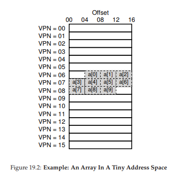
Figure 19.2: Ví dụ: Một mảng trong không gian địa chỉ nhỏ.
Không may, khi chương trình truy cập a tiếp theo, ta gặp một TLB miss khác. Tuy nhiên, một lần nữa, các phần tử tiếp theo (a ... a) sẽ hit trong TLB, vì tất cả đều nằm trên cùng một page trong bộ nhớ.
Cuối cùng, việc truy cập vào a gây ra một TLB miss (lỗi tra cứu TLB). Phần cứng một lần nữa tham chiếu đến page table (bảng trang) để xác định vị trí của virtual page (trang ảo) này trong physical memory (bộ nhớ vật lý), và cập nhật TLB tương ứng. Hai lần truy cập cuối cùng (a và a) được hưởng lợi từ việc cập nhật TLB này; khi phần cứng tra cứu TLB để tìm bản dịch địa chỉ, cả hai lần đều dẫn đến hit (trúng).
Tóm tắt lại hoạt động của TLB trong mười lần truy cập vào mảng: miss, hit, hit, miss, hit, hit, hit, miss, hit, hit. Do đó, TLB hit rate (tỉ lệ trúng TLB) — được tính bằng số lần hit chia cho tổng số lần truy cập — là 70%. Mặc dù con số này không quá cao (thực tế, chúng ta mong muốn tỉ lệ này tiệm cận 100%), nhưng nó khác 0, điều này có thể gây bất ngờ. Ngay cả khi đây là lần đầu tiên chương trình truy cập vào mảng, TLB vẫn cải thiện hiệu năng nhờ spatial locality (tính cục bộ không gian). Các phần tử của mảng được sắp xếp sát nhau trong các trang (tức là chúng gần nhau về mặt vị trí trong bộ nhớ), và vì vậy chỉ lần truy cập đầu tiên đến một phần tử trên một trang mới gây ra TLB miss.
Cũng cần lưu ý vai trò của page size (kích thước trang) trong ví dụ này. Nếu page size chỉ đơn giản lớn gấp đôi (32 byte thay vì 16 byte), việc truy cập mảng sẽ gặp ít lỗi miss hơn nữa. Vì page size điển hình thường vào khoảng 4KB, nên các kiểu truy cập mảng dày đặc (dense, array-based accesses) như thế này đạt hiệu năng TLB rất tốt, chỉ gặp một lỗi miss cho mỗi trang được truy cập.
TIP: USE CACHING WHEN POSSIBLE
(MẸO: SỬ DỤNG CƠ CHẾ CACHE KHI CÓ THỂ)
Caching (bộ nhớ đệm) là một trong những kỹ thuật tối ưu hiệu năng cơ bản nhất trong hệ thống máy tính, được sử dụng lặp đi lặp lại để làm cho “trường hợp phổ biến chạy nhanh” [HP06]. Ý tưởng đằng sau hardware caches (bộ nhớ đệm phần cứng) là tận dụng locality (tính cục bộ) trong các tham chiếu lệnh và dữ liệu. Thông thường có hai loại locality: temporal locality (tính cục bộ theo thời gian) và spatial locality (tính cục bộ theo không gian).
Với temporal locality, ý tưởng là một lệnh hoặc dữ liệu vừa được truy cập gần đây thì nhiều khả năng sẽ được truy cập lại sớm trong tương lai. Hãy nghĩ đến các biến vòng lặp hoặc các lệnh trong vòng lặp; chúng được truy cập lặp đi lặp lại theo thời gian.
Với spatial locality, ý tưởng là nếu một chương trình truy cập bộ nhớ tại địa chỉ x, thì nhiều khả năng nó sẽ sớm truy cập bộ nhớ gần x. Hãy hình dung việc duyệt qua một mảng, truy cập một phần tử rồi đến phần tử tiếp theo.
Tất nhiên, các đặc tính này phụ thuộc vào bản chất cụ thể của chương trình, vì vậy chúng không phải là các quy luật tuyệt đối mà chỉ là các nguyên tắc kinh nghiệm.
Hardware caches, dù cho lệnh, dữ liệu, hay dịch địa chỉ (như TLB của chúng ta), đều tận dụng locality bằng cách giữ các bản sao dữ liệu trong on-chip memory (bộ nhớ trên chip) nhỏ và nhanh. Thay vì phải truy cập bộ nhớ (chậm) để đáp ứng yêu cầu, bộ xử lý có thể kiểm tra trước xem có bản sao gần đó trong cache không; nếu có, bộ xử lý có thể truy cập nhanh (chỉ vài chu kỳ CPU) và tránh mất thời gian tốn kém khi truy cập bộ nhớ (nhiều nanosecond).
Bạn có thể tự hỏi: nếu cache (như TLB) tuyệt vời như vậy, sao không làm cache lớn hơn và giữ toàn bộ dữ liệu trong đó? Tiếc là ở đây chúng ta gặp phải các giới hạn cơ bản như các định luật vật lý. Nếu muốn cache nhanh, nó phải nhỏ, vì các vấn đề như tốc độ ánh sáng và các ràng buộc vật lý khác trở nên quan trọng. Bất kỳ cache lớn nào, theo định nghĩa, sẽ chậm, và do đó phản tác dụng. Vì vậy, chúng ta buộc phải dùng cache nhỏ và nhanh; câu hỏi còn lại là làm thế nào để sử dụng chúng tốt nhất nhằm cải thiện hiệu năng.
Một điểm cuối cùng về hiệu năng của TLB: nếu chương trình, ngay sau khi vòng lặp này kết thúc, truy cập lại mảng, chúng ta có thể thấy kết quả còn tốt hơn nữa, giả sử TLB đủ lớn để lưu các bản dịch cần thiết: hit, hit, hit, hit, hit, hit, hit, hit, hit, hit. Trong trường hợp này, TLB hit rate (tỉ lệ trúng TLB) sẽ cao nhờ temporal locality, tức là việc tham chiếu lại nhanh chóng các mục dữ liệu theo thời gian. Giống như mọi cache, TLB dựa vào cả spatial locality và temporal locality để đạt hiệu quả, đây là các đặc tính của chương trình. Nếu chương trình có các đặc tính này (và nhiều chương trình có), TLB hit rate sẽ cao.
VPN = (VirtualAddress & VPN_MASK) >> SHIFT
(Success, TlbEntry) = TLB_Lookup(VPN)
if (Success == True) // TLB Hit
if (CanAccess(TlbEntry.ProtectBits) == True)
Offset = VirtualAddress & OFFSET_MASK
PhysAddr = (TlbEntry.PFN << SHIFT) | Offset
Register = AccessMemory(PhysAddr)
else
RaiseException(PROTECTION_FAULT)
else
RaiseException(TLB_MISS) // TLB Miss
Figure 19.3: TLB Control Flow Algorithm (OS Handled)
(Thuật toán luồng điều khiển TLB — do OS xử lý)
19.3 Who Handles The TLB Miss?
(Ai xử lý TLB miss?)
Một câu hỏi cần trả lời: ai sẽ xử lý một TLB miss? Có hai khả năng: hardware (phần cứng) hoặc software (OS).
Trong những ngày đầu, phần cứng có complex instruction sets (tập lệnh phức tạp, đôi khi gọi là CISC — complex-instruction set computers) và những người thiết kế phần cứng không mấy tin tưởng “đám OS” kia. Vì vậy, phần cứng sẽ xử lý toàn bộ TLB miss. Để làm được điều này, phần cứng phải biết chính xác page tables (bảng trang) nằm ở đâu trong bộ nhớ (thông qua page-table base register, được dùng ở Dòng 11 trong Figure 19.1), cũng như định dạng chính xác của chúng; khi xảy ra miss, phần cứng sẽ “walk” page table, tìm page-table entry đúng và trích xuất bản dịch mong muốn, cập nhật TLB với bản dịch đó, và thực thi lại lệnh.
Một ví dụ về kiến trúc “cũ” có hardware-managed TLBs là kiến trúc Intel x86, sử dụng multi-level page table (bảng trang nhiều cấp) cố định (xem chi tiết ở chương sau); page table hiện tại được trỏ bởi thanh ghi CR3 [I09].
Các kiến trúc hiện đại hơn (ví dụ: MIPS R10k [H93] hoặc Sun’s SPARC v9 [WG00], cả hai đều là RISC — reduced-instruction set computers) có cái gọi là software-managed TLB. Khi xảy ra TLB miss, phần cứng chỉ đơn giản phát sinh một exception (ngoại lệ) (Dòng 11 trong Figure 19.3), tạm dừng luồng lệnh hiện tại, nâng mức đặc quyền lên kernel mode, và nhảy tới một trap handler. Như bạn có thể đoán, trap handler này là mã trong OS được viết với mục đích xử lý TLB miss. Khi chạy, mã này sẽ tra cứu bản dịch trong page table, sử dụng các lệnh “đặc quyền” để cập nhật TLB, và quay lại từ trap; tại thời điểm này, phần cứng sẽ thực thi lại lệnh (dẫn đến TLB hit).
Hãy thảo luận một vài chi tiết quan trọng:
- Thứ nhất, return-from-trap instruction (lệnh quay lại từ trap) cần khác một chút so với return-from-trap mà ta đã thấy khi xử lý system call. Trong trường hợp system call, return-from-trap sẽ tiếp tục thực thi tại lệnh ngay sau trap vào OS, giống như việc quay lại từ một call thủ tục sẽ tiếp tục tại lệnh ngay sau call.
- Trong trường hợp trap do TLB miss, khi return-from-trap, phần cứng phải tiếp tục thực thi tại chính lệnh gây ra trap; lần thử lại này sẽ khiến lệnh chạy lại, và lần này sẽ là TLB hit. Do đó, tùy thuộc vào nguyên nhân gây ra trap hoặc exception, phần cứng phải lưu PC (program counter) khác nhau khi trap vào OS, để có thể khôi phục đúng khi cần.
ASIDE: RISC VS. CISC
Vào những năm 1980, một cuộc chiến lớn đã diễn ra trong cộng đồng kiến trúc máy tính. Một bên là phe CISC (Complex Instruction Set Computing), bên kia là RISC (Reduced Instruction Set Computing) [PS81]. Phe RISC được dẫn dắt bởi David Patterson tại Berkeley và John Hennessy tại Stanford (cũng là đồng tác giả của một số cuốn sách nổi tiếng [HP06]), mặc dù sau này John Cocke được trao giải Turing cho công trình tiên phong về RISC [CM00].
CISC instruction sets thường có rất nhiều lệnh, và mỗi lệnh tương đối mạnh. Ví dụ, có thể có một lệnh sao chép chuỗi, nhận hai con trỏ và một độ dài, rồi sao chép byte từ nguồn sang đích. Ý tưởng của CISC là các lệnh nên là các nguyên thủy cấp cao, giúp assembly language (ngôn ngữ hợp ngữ) dễ dùng hơn và mã nguồn gọn hơn.
RISC instruction sets thì hoàn toàn ngược lại. Một quan sát then chốt của RISC là tập lệnh thực chất là đích đến của compiler (trình biên dịch), và tất cả những gì compiler cần là một vài nguyên thủy đơn giản để tạo ra mã hiệu năng cao. Vì vậy, những người ủng hộ RISC lập luận rằng hãy loại bỏ càng nhiều phần cứng càng tốt (đặc biệt là microcode), và làm cho phần còn lại đơn giản, đồng nhất và nhanh.
Trong những ngày đầu, các chip RISC tạo ra tác động lớn, vì chúng nhanh hơn một cách rõ rệt [BC91]; nhiều bài báo khoa học đã được viết; một số công ty được thành lập (ví dụ: MIPS và Sun). Tuy nhiên, theo thời gian, các nhà sản xuất CISC như Intel đã tích hợp nhiều kỹ thuật của RISC vào lõi của bộ xử lý của họ, ví dụ bằng cách thêm các giai đoạn pipeline ban đầu để biến đổi các lệnh phức tạp thành các micro-instructions (vi lệnh) có thể được xử lý theo cách giống RISC. Những cải tiến này, cộng với số lượng transistor ngày càng tăng trên mỗi chip, đã giúp CISC duy trì khả năng cạnh tranh. Kết quả cuối cùng là cuộc tranh luận dần lắng xuống, và ngày nay cả hai loại bộ xử lý đều có thể được thiết kế để chạy nhanh.
Thứ hai, khi chạy TLB miss-handling code (mã xử lý lỗi TLB miss), hệ điều hành (OS) cần đặc biệt cẩn trọng để không gây ra một chuỗi vô hạn các TLB misses (lỗi tra cứu TLB). Có nhiều giải pháp tồn tại; ví dụ, bạn có thể lưu TLB miss handlers (trình xử lý lỗi TLB miss) trong physical memory (bộ nhớ vật lý) — nơi chúng không được ánh xạ và không chịu sự chi phối của address translation (dịch địa chỉ), hoặc dành riêng một số mục (entry) trong TLB cho các bản dịch luôn hợp lệ (permanently-valid translations) và sử dụng một số slot dịch địa chỉ cố định này cho chính handler code (mã xử lý) đó; các wired translations (bản dịch cố định) này luôn cho kết quả hit trong TLB.
ASIDE: TLB VALID BIT != PAGE TABLE VALID BIT
(Lưu ý: Bit hợp lệ trong TLB khác với bit hợp lệ trong page table)
Một lỗi phổ biến là nhầm lẫn giữa valid bit (bit hợp lệ) trong TLB và valid bit trong page table (bảng trang). Trong page table, khi một page-table entry (PTE — mục bảng trang) được đánh dấu invalid (không hợp lệ), điều đó có nghĩa là page chưa được process (tiến trình) cấp phát, và một chương trình hoạt động đúng sẽ không được phép truy cập vào page đó. Phản ứng thông thường khi truy cập một page không hợp lệ là phát sinh trap (bẫy) tới OS (hệ điều hành), và OS sẽ phản hồi bằng cách chấm dứt process đó.
Ngược lại, TLB valid bit chỉ đơn giản cho biết một entry trong TLB có chứa bản dịch hợp lệ hay không. Ví dụ, khi hệ thống khởi động, trạng thái ban đầu phổ biến của mỗi entry trong TLB là invalid, vì chưa có bản dịch địa chỉ nào được cache ở đó. Khi virtual memory (bộ nhớ ảo) được kích hoạt, và khi các chương trình bắt đầu chạy và truy cập virtual address space (không gian địa chỉ ảo) của chúng, TLB sẽ dần được lấp đầy, và các entry hợp lệ sẽ nhanh chóng xuất hiện trong TLB.
TLB valid bit cũng rất hữu ích khi thực hiện context switch (chuyển ngữ cảnh), như chúng ta sẽ thảo luận bên dưới. Bằng cách đặt tất cả các entry trong TLB về trạng thái invalid, hệ thống có thể đảm bảo rằng process sắp chạy sẽ không vô tình sử dụng một virtual-to-physical translation (bản dịch từ địa chỉ ảo sang địa chỉ vật lý) từ một process trước đó.
Lợi thế chính của cách tiếp cận software-managed (TLB do phần mềm quản lý) là tính linh hoạt: OS có thể sử dụng bất kỳ data structure (cấu trúc dữ liệu) nào để triển khai page table, mà không cần thay đổi phần cứng. Một lợi thế khác là sự đơn giản, như thấy trong luồng điều khiển TLB (dòng 11 trong Figure 19.3, so với dòng 11–19 trong Figure 19.1). Phần cứng không làm nhiều khi xảy ra miss: chỉ cần phát sinh exception và để TLB miss handler của OS xử lý phần còn lại.
19.4 TLB Contents: What’s In There?
(Nội dung của TLB: Bên trong có gì?)
Hãy xem chi tiết nội dung của hardware TLB (TLB phần cứng). Một TLB điển hình có thể có 32, 64 hoặc 128 entry và thuộc loại fully associative (hoàn toàn kết hợp). Điều này có nghĩa là bất kỳ bản dịch nào cũng có thể nằm ở bất kỳ vị trí nào trong TLB, và phần cứng sẽ tìm kiếm toàn bộ TLB song song để tìm bản dịch mong muốn. Một entry TLB có thể trông như sau:
VPN | PFN | other bits
Lưu ý rằng cả VPN (virtual page number — số trang ảo) và PFN (page frame number — số khung trang) đều có trong mỗi entry, vì bản dịch có thể nằm ở bất kỳ vị trí nào (trong thuật ngữ phần cứng, TLB được gọi là fully-associative cache). Phần cứng tìm kiếm song song các entry để xem có khớp hay không.
Điều thú vị hơn là các “other bits” (các bit khác). Ví dụ, TLB thường có valid bit cho biết entry có chứa bản dịch hợp lệ hay không. Ngoài ra còn có protection bits (bit bảo vệ), xác định cách một page có thể được truy cập (giống như trong page table). Ví dụ, code pages có thể được đánh dấu read và execute, trong khi heap pages có thể được đánh dấu read và write. Ngoài ra có thể có một số trường khác, bao gồm address-space identifier (ASID — định danh không gian địa chỉ), dirty bit (bit bẩn), v.v.; xem thêm bên dưới để biết chi tiết.
19.5 TLB Issue: Context Switches
(Vấn đề TLB: Chuyển ngữ cảnh)
Với TLB, các vấn đề mới nảy sinh khi chuyển đổi giữa các process (và do đó là giữa các address space). Cụ thể, TLB chứa các virtual-to-physical translations chỉ hợp lệ cho process đang chạy; các bản dịch này không có ý nghĩa với process khác. Do đó, khi chuyển từ process này sang process khác, phần cứng hoặc OS (hoặc cả hai) phải đảm bảo rằng process sắp chạy sẽ không vô tình sử dụng các bản dịch từ process trước đó.
Để hiểu rõ hơn, hãy xem một ví dụ: Khi một process (P1) đang chạy, nó giả định rằng TLB có thể đang cache các bản dịch hợp lệ cho nó, tức là lấy từ page table của P1. Giả sử, trong ví dụ này, virtual page thứ 10 của P1 được ánh xạ tới physical frame 100. Giả sử có một process khác (P2), và OS sắp thực hiện context switch để chạy nó. Giả sử virtual page thứ 10 của P2 được ánh xạ tới physical frame 170. Nếu các entry của cả hai process đều có trong TLB, nội dung TLB sẽ là:
| VPN | PFN | valid | prot |
|---|---|---|---|
| 10 | 100 | 1 | rwx |
| — | — | 0 | — |
| 10 | 170 | 1 | rwx |
| — | — | 0 | — |
Trong TLB trên, rõ ràng có vấn đề: VPN 10 có thể dịch thành PFN 100 (P1) hoặc PFN 170 (P2), nhưng phần cứng không thể phân biệt entry nào thuộc về process nào. Do đó, chúng ta cần làm thêm để TLB có thể hỗ trợ virtualization (ảo hóa) giữa nhiều process một cách đúng đắn và hiệu quả.
THE CRUX: HOW TO MANAGE TLB CONTENTS ON A CONTEXT SWITCH
Khi context-switching giữa các process, các bản dịch trong TLB của process trước không có ý nghĩa với process sắp chạy. Phần cứng hoặc OS nên làm gì để giải quyết vấn đề này?
Có một số giải pháp khả thi:
- Một cách là flush (xóa) TLB khi context switch, làm trống nó trước khi chạy process tiếp theo. Trong hệ thống software-based, điều này có thể thực hiện bằng một lệnh phần cứng đặc quyền; với hardware-managed TLB, việc flush có thể được thực hiện khi page-table base register (PTBR) thay đổi (OS phải thay đổi PTBR khi context switch). Trong cả hai trường hợp, thao tác flush chỉ đơn giản là đặt tất cả valid bit về 0, xóa sạch nội dung TLB.
Bằng cách flush TLB mỗi lần context switch, chúng ta có một giải pháp hoạt động, vì process sẽ không bao giờ gặp phải bản dịch sai trong TLB. Tuy nhiên, chi phí là: mỗi lần process chạy, nó sẽ gặp TLB miss khi truy cập dữ liệu và code pages của mình. Nếu OS chuyển đổi process thường xuyên, chi phí này có thể cao.
Để giảm chi phí này, một số hệ thống bổ sung hỗ trợ phần cứng để cho phép chia sẻ TLB qua các lần context switch. Cụ thể, một số hệ thống phần cứng cung cấp trường address space identifier (ASID) trong TLB. Có thể coi ASID như một process identifier (PID), nhưng thường có ít bit hơn (ví dụ: 8 bit cho ASID so với 32 bit cho PID). Nếu thêm ASID vào ví dụ TLB ở trên, các process có thể chia sẻ TLB dễ dàng: chỉ cần trường ASID để phân biệt các bản dịch giống hệt nhau. Here is a depiction of a TLB with the added ASID field:
| VPN | PFN | valid | prot | ASID |
|---|---|---|---|---|
| 10 | 100 | 1 | rwx | 1 |
| — | — | 0 | — | — |
| 10 | 170 | 1 | rwx | 2 |
| — | — | 0 | — | — |
Với address-space identifiers, TLB có thể chứa bản dịch từ các process khác nhau cùng lúc mà không bị nhầm lẫn. Tất nhiên, phần cứng cũng cần biết process nào đang chạy để thực hiện dịch địa chỉ, và do đó OS phải, khi context switch, thiết lập một privileged register (thanh ghi đặc quyền) tới ASID của process hiện tại.
Ngoài ra, bạn có thể nghĩ đến một trường hợp khác khi hai entry trong TLB khá giống nhau. Trong ví dụ này, có hai entry cho hai process khác nhau với hai VPN khác nhau nhưng trỏ tới cùng một physical page:
| VPN | PFN | valid | prot | ASID |
|---|---|---|---|---|
| 10 | 101 | 1 | r-x | 1 |
| — | — | 0 | — | — |
| 50 | 101 | 1 | r-x | 2 |
| — | — | 0 | — | — |
Tình huống này có thể xảy ra, ví dụ, khi hai process chia sẻ một page (ví dụ: code page). Trong ví dụ trên, P1 chia sẻ physical page 101 với P2; P1 ánh xạ page này vào page thứ 10 trong address space của nó, trong khi P2 ánh xạ nó vào page thứ 50 trong address space của nó. Việc chia sẻ code pages (trong các binary hoặc shared libraries) giúp giảm số lượng page vật lý đang được dùng, từ đó giảm memory overhead.
19.7 A Real TLB Entry
(Một entry TLB thực tế)
Cuối cùng, hãy cùng xem nhanh một ví dụ TLB thực tế. Ví dụ này đến từ MIPS R4000 [H93], một hệ thống hiện đại sử dụng software-managed TLBs (TLB do phần mềm quản lý); một entry TLB của MIPS đã được giản lược đôi chút có thể thấy trong Figure 19.4.
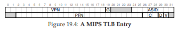
Figure 19.4: A MIPS TLB Entry
(Một entry TLB của MIPS)
MIPS R4000 hỗ trợ address space (không gian địa chỉ) 32-bit với page 4KB. Do đó, trong một virtual address (địa chỉ ảo) điển hình, ta sẽ kỳ vọng có VPN (virtual page number — số trang ảo) 20-bit và offset 12-bit. Tuy nhiên, như bạn thấy trong TLB, chỉ có 19 bit cho VPN; lý do là user addresses (địa chỉ người dùng) chỉ chiếm một nửa address space (phần còn lại dành cho kernel), nên chỉ cần 19 bit VPN. VPN này được dịch sang tối đa PFN (physical frame number — số khung trang vật lý) 24-bit, do đó có thể hỗ trợ hệ thống với tối đa 64GB main memory (bộ nhớ chính vật lý) (2^24 page 4KB).
Có một số bit thú vị khác trong MIPS TLB:
- Global bit (G): dùng cho các page được globally-shared (chia sẻ toàn cục) giữa các process (tiến trình). Nếu global bit được bật, ASID sẽ bị bỏ qua.
- ASID 8-bit: OS có thể dùng để phân biệt các address space (như đã mô tả ở trên). Câu hỏi đặt ra: OS nên làm gì nếu có hơn 256 (2^8) process chạy cùng lúc?
- 3 bit Coherence (C): xác định cách phần cứng cache một page (vượt ngoài phạm vi ghi chú này).
- Dirty bit: được đánh dấu khi page đã bị ghi (sẽ thấy cách sử dụng sau).
- Valid bit: cho phần cứng biết entry có chứa bản dịch hợp lệ hay không.
- Page mask field (không hiển thị): hỗ trợ nhiều kích thước page; sau này chúng ta sẽ thấy tại sao page lớn lại hữu ích.
- Một số bit trong tổng số 64 bit không được sử dụng (tô xám trong sơ đồ).
TIP: RAM ISN’T ALWAYS RAM (CULLER’S LAW)
Thuật ngữ random-access memory (RAM — bộ nhớ truy cập ngẫu nhiên) ngụ ý rằng bạn có thể truy cập bất kỳ phần nào của RAM nhanh như nhau. Mặc dù nhìn chung nên nghĩ về RAM theo cách này, nhưng do các đặc tính phần cứng/OS như TLB, việc truy cập một page bộ nhớ cụ thể có thể tốn kém, đặc biệt nếu page đó hiện không được ánh xạ trong TLB. Vì vậy, luôn nên nhớ mẹo triển khai: RAM không phải lúc nào cũng là RAM. Đôi khi việc truy cập ngẫu nhiên address space của bạn, đặc biệt nếu số lượng page được truy cập vượt quá TLB coverage (phạm vi bao phủ của TLB), có thể dẫn đến suy giảm hiệu năng nghiêm trọng. Vì một trong các cố vấn của chúng tôi, David Culler, thường chỉ ra TLB là nguồn gốc của nhiều vấn đề hiệu năng, nên chúng tôi đặt tên định luật này để vinh danh ông: Culler’s Law.
Thông thường, MIPS TLB có 32 hoặc 64 entry như vậy, phần lớn được dùng bởi user processes khi chúng chạy. Tuy nhiên, một số entry được dành riêng cho OS. Một wired register có thể được OS thiết lập để báo cho phần cứng biết cần dành bao nhiêu slot TLB cho OS; OS sử dụng các ánh xạ dự trữ này cho code và data mà nó muốn truy cập trong các thời điểm quan trọng, khi một TLB miss sẽ gây vấn đề (ví dụ: trong TLB miss handler).
Vì MIPS TLB là software managed, cần có các lệnh để cập nhật TLB. MIPS cung cấp bốn lệnh như vậy:
TLBP: dò TLB để xem một bản dịch cụ thể có ở đó không.TLBR: đọc nội dung một entry TLB vào các register.TLBWI: thay thế một entry TLB cụ thể.TLBWR: thay thế một entry TLB ngẫu nhiên.
OS sử dụng các lệnh này để quản lý nội dung TLB. Tất nhiên, điều quan trọng là các lệnh này phải là privileged (đặc quyền); hãy tưởng tượng điều gì sẽ xảy ra nếu một user process có thể sửa nội dung TLB (gợi ý: gần như bất cứ điều gì, bao gồm chiếm quyền điều khiển máy, chạy “OS” độc hại của riêng nó, hoặc thậm chí “làm biến mất Mặt Trời”).
19.8 Summary
(Tóm tắt)
Chúng ta đã thấy cách phần cứng có thể giúp tăng tốc address translation (dịch địa chỉ). Bằng cách cung cấp một on-chip TLB nhỏ, chuyên dụng như một address-translation cache, hầu hết các memory references (tham chiếu bộ nhớ) sẽ được xử lý mà không cần truy cập page table trong main memory. Do đó, trong trường hợp phổ biến, hiệu năng chương trình gần như không bị ảnh hưởng bởi việc bộ nhớ đang được virtualized (ảo hóa) — một thành tựu tuyệt vời cho operating system (hệ điều hành), và chắc chắn là yếu tố thiết yếu để sử dụng paging trong các hệ thống hiện đại.
Tuy nhiên, TLB không phải lúc nào cũng mang lại “màu hồng” cho mọi chương trình. Đặc biệt, nếu số lượng page mà chương trình truy cập trong một khoảng thời gian ngắn vượt quá số page có thể chứa trong TLB, chương trình sẽ tạo ra nhiều TLB misses và chạy chậm hơn đáng kể. Hiện tượng này được gọi là exceeding the TLB coverage (vượt quá phạm vi bao phủ của TLB), và có thể là vấn đề nghiêm trọng với một số chương trình. Một giải pháp, như sẽ thảo luận ở chương sau, là hỗ trợ larger page sizes (kích thước page lớn hơn); bằng cách ánh xạ các data structures (cấu trúc dữ liệu) quan trọng vào các vùng của address space được ánh xạ bởi page lớn, coverage hiệu quả của TLB có thể được tăng lên. Hỗ trợ large pages thường được khai thác bởi các chương trình như database management system (DBMS — hệ quản trị cơ sở dữ liệu), vốn có một số cấu trúc dữ liệu vừa lớn vừa được truy cập ngẫu nhiên.
Một vấn đề khác đáng nhắc tới: TLB access (truy cập TLB) có thể dễ dàng trở thành nút thắt cổ chai trong CPU pipeline, đặc biệt với loại physically-indexed cache (bộ nhớ đệm đánh chỉ số theo địa chỉ vật lý). Với loại cache này, address translation phải diễn ra trước khi cache được truy cập, điều này có thể làm chậm đáng kể. Vì vấn đề tiềm ẩn này, người ta đã nghiên cứu nhiều cách thông minh để truy cập cache bằng virtual addresses, tránh bước dịch địa chỉ tốn kém trong trường hợp cache hit. Loại virtually-indexed cache này giải quyết một số vấn đề hiệu năng, nhưng cũng đưa ra các thách thức mới trong hardware design (thiết kế phần cứng). Xem khảo sát của Wiggins [W03] để biết thêm chi tiết.
20 Paging: Smaller Tables
(Paging: Bảng trang nhỏ hơn)
Chúng ta sẽ giải quyết vấn đề thứ hai mà paging (phân trang) gây ra: page table (bảng trang) quá lớn và tiêu tốn quá nhiều bộ nhớ. Hãy bắt đầu với linear page table (bảng trang tuyến tính). Như bạn có thể nhớ1, linear page table có thể rất lớn. Giả sử một address space (không gian địa chỉ) 32-bit (2^32 byte), với page 4KB (2^12 byte) và mỗi page-table entry (PTE — mục bảng trang) có kích thước 4 byte. Một address space như vậy sẽ có khoảng một triệu virtual pages (trang ảo) (2^32 / 2^12); nhân với kích thước mỗi PTE, ta thấy page table có kích thước 4MB. Cũng cần nhớ: thông thường, mỗi process (tiến trình) trong hệ thống sẽ có một page table riêng! Với 100 process đang hoạt động (không hiếm trong hệ thống hiện đại), chúng ta sẽ phải cấp phát hàng trăm MB bộ nhớ chỉ để lưu page table! Do đó, chúng ta cần tìm các kỹ thuật để giảm gánh nặng này. Có khá nhiều kỹ thuật, vậy hãy bắt đầu. Nhưng trước tiên, là một điểm mấu chốt:
CRUX: HOW TO MAKE PAGE TABLES SMALLER?
(Làm thế nào để làm nhỏ page table?)
Các page table dạng mảng đơn giản (thường gọi là linear page table) quá lớn, chiếm quá nhiều bộ nhớ trong các hệ thống thông thường. Làm thế nào để làm nhỏ page table? Ý tưởng chính là gì? Những sự kém hiệu quả nào sẽ phát sinh từ các cấu trúc dữ liệu mới này?
Hoặc có thể bạn không nhớ; cơ chế paging này đang trở nên khá phức tạp, đúng không? Dù sao, hãy luôn đảm bảo rằng bạn hiểu rõ vấn đề mình đang giải quyết trước khi chuyển sang phần giải pháp; thực tế, nếu bạn hiểu rõ vấn đề, bạn thường có thể tự suy ra giải pháp. Ở đây, vấn đề đã rõ: linear page table đơn giản (dạng mảng) là quá lớn.
20.1 Simple Solution: Bigger Pages
(Giải pháp đơn giản: Page lớn hơn)
Chúng ta có thể giảm kích thước page table theo một cách đơn giản: sử dụng page lớn hơn. Lấy lại ví dụ address space 32-bit, nhưng lần này giả sử page có kích thước 16KB. Khi đó, chúng ta sẽ có VPN (virtual page number) 18-bit và offset 14-bit. Giữ nguyên kích thước mỗi PTE là 4 byte, ta sẽ có 2^18 entry trong linear page table, tức tổng kích thước là 1MB cho mỗi page table — giảm 4 lần so với ban đầu (không ngạc nhiên, mức giảm này phản ánh đúng mức tăng gấp 4 của kích thước page).
ASIDE: MULTIPLE PAGE SIZES
(Nhiều kích thước page)
Nhiều kiến trúc (ví dụ: MIPS, SPARC, x86-64) hiện hỗ trợ nhiều kích thước page. Thông thường, kích thước page nhỏ (4KB hoặc 8KB) được sử dụng. Tuy nhiên, nếu một ứng dụng “thông minh” yêu cầu, một page lớn duy nhất (ví dụ: 4MB) có thể được dùng cho một phần cụ thể của address space, cho phép ứng dụng đặt một data structure (cấu trúc dữ liệu) lớn và thường xuyên được sử dụng vào đó, đồng thời chỉ tiêu tốn một entry trong TLB. Kiểu sử dụng page lớn này phổ biến trong database management systems (hệ quản trị cơ sở dữ liệu) và các ứng dụng thương mại cao cấp khác. Lý do chính của việc hỗ trợ nhiều kích thước page không phải để tiết kiệm không gian page table, mà là để giảm áp lực lên TLB, cho phép chương trình truy cập nhiều hơn vào address space của nó mà không gặp quá nhiều TLB misses. Tuy nhiên, như các nghiên cứu đã chỉ ra [N+02], việc sử dụng nhiều kích thước page khiến virtual memory manager (bộ quản lý bộ nhớ ảo) của OS trở nên phức tạp hơn đáng kể, và do đó page lớn đôi khi dễ sử dụng nhất khi OS cung cấp một giao diện mới để ứng dụng yêu cầu trực tiếp.
Vấn đề lớn của cách tiếp cận này là page lớn dẫn đến lãng phí bên trong mỗi page, gọi là internal fragmentation (phân mảnh bên trong — vì phần lãng phí nằm bên trong đơn vị cấp phát). Ứng dụng có thể cấp phát page nhưng chỉ dùng một phần nhỏ, khiến bộ nhớ nhanh chóng bị lấp đầy bởi các page quá lớn này. Do đó, hầu hết hệ thống sử dụng kích thước page tương đối nhỏ trong trường hợp phổ biến: 4KB (như x86) hoặc 8KB (như SPARCv9). Vậy là vấn đề của chúng ta sẽ không thể giải quyết đơn giản như vậy.
20.2 Hybrid Approach: Paging and Segments
(Cách tiếp cận lai: Paging và Segmentation)
Khi bạn có hai cách tiếp cận hợp lý nhưng khác nhau, bạn nên xem xét việc kết hợp chúng để tận dụng ưu điểm của cả hai. Chúng ta gọi sự kết hợp này là hybrid (lai). Ví dụ, tại sao chỉ ăn sô-cô-la hoặc chỉ bơ đậu phộng khi bạn có thể kết hợp chúng thành một món tuyệt vời như Reese’s Peanut Butter Cup [M28]?
Nhiều năm trước, những người tạo ra hệ thống Multics (đặc biệt là Jack Dennis) đã nảy ra ý tưởng này khi xây dựng hệ thống virtual memory của Multics [M07]. Cụ thể, Dennis đã nghĩ đến việc kết hợp paging và segmentation để giảm chi phí bộ nhớ của page table. Chúng ta có thể thấy tại sao điều này hiệu quả bằng cách xem xét kỹ hơn một linear page table điển hình. Giả sử chúng ta có một address space mà phần heap và stack được sử dụng rất nhỏ. Trong ví dụ này, ta dùng một address space 16KB với page 1KB (Figure 20.1); page table cho address space này được thể hiện trong Figure 20.2.
Figure 20.1: A 16KB Address Space With 1KB Pages
(Không gian địa chỉ 16KB với page 1KB)
Figure 20.2: A Page Table For 16KB Address Space
(Page table cho không gian địa chỉ 16KB)
Ví dụ này giả định:
- Page code duy nhất (VPN 0) ánh xạ tới physical page 10
- Page heap duy nhất (VPN 4) ánh xạ tới physical page 23
- Hai page stack ở cuối address space (VPN 14 và 15) ánh xạ tới physical page 28 và 4
Như bạn thấy, phần lớn page table không được sử dụng, đầy các entry invalid. Thật lãng phí! Và đây mới chỉ là address space 16KB. Hãy tưởng tượng page table của address space 32-bit và lượng không gian lãng phí tiềm tàng! Thực ra, đừng tưởng tượng — nó quá khủng khiếp.
Vì vậy, cách tiếp cận hybrid của chúng ta: thay vì có một page table duy nhất cho toàn bộ address space của process, tại sao không có một page table cho mỗi logical segment (đoạn logic)? Trong ví dụ này, ta có thể có ba page table: một cho code, một cho heap, và một cho stack.
Hãy nhớ rằng với segmentation, chúng ta có base register (thanh ghi cơ sở) cho biết mỗi segment nằm ở đâu trong physical memory, và bound/limit register (thanh ghi giới hạn) cho biết kích thước segment. Trong hybrid này, chúng ta vẫn giữ các cấu trúc đó trong MMU; nhưng ở đây, base không trỏ tới segment, mà chứa địa chỉ vật lý của page table của segment đó. Bound register dùng để chỉ điểm kết thúc của page table (tức là số lượng page hợp lệ).
Ví dụ: Giả sử address space 32-bit với page 4KB, chia thành bốn segment. Ta chỉ dùng ba segment: code, heap, stack.
Để xác định một địa chỉ thuộc segment nào, ta dùng 2 bit cao nhất của address space. Giả sử:
00là segment không dùng01cho code10cho heap11cho stack
Khi đó, virtual address sẽ như sau:
31 30 29 ... 12 11 ... 0
Seg VPN Offset
Trong phần cứng, giả sử rằng tồn tại ba cặp base/bounds (địa chỉ cơ sở/giới hạn), mỗi cặp dành riêng cho code, heap và stack. Khi một process (tiến trình) đang chạy, thanh ghi base của mỗi segment (đoạn) sẽ chứa địa chỉ vật lý của một linear page table (bảng trang tuyến tính) dành cho segment đó; do đó, mỗi process trong hệ thống hiện có ba page table liên kết với nó. Khi xảy ra context switch (chuyển ngữ cảnh), các thanh ghi này phải được thay đổi để phản ánh vị trí của các page table thuộc process mới được chuyển sang chạy.
Khi xảy ra TLB miss (trượt TLB – tình huống khi địa chỉ cần tìm không có trong Translation Lookaside Buffer), giả sử đây là hardware-managed TLB (TLB được phần cứng quản lý, tức phần cứng chịu trách nhiệm xử lý TLB miss), phần cứng sẽ sử dụng các bit segment (SN) để xác định cặp base/bounds nào cần dùng. Sau đó, phần cứng lấy địa chỉ vật lý trong thanh ghi base tương ứng và kết hợp nó với VPN (Virtual Page Number – số trang ảo) như sau để tạo ra địa chỉ của page table entry (PTE – mục nhập bảng trang):
SN = (VirtualAddress & SEG_MASK) >> SN_SHIFT
VPN = (VirtualAddress & VPN_MASK) >> VPN_SHIFT
AddressOfPTE = Base[SN] + (VPN * sizeof(PTE))
Chuỗi thao tác này có thể trông quen thuộc; nó gần như giống hệt với những gì chúng ta đã thấy trước đây khi làm việc với linear page table. Điểm khác biệt duy nhất, tất nhiên, là việc sử dụng một trong ba thanh ghi base của segment thay vì chỉ một thanh ghi base của page table duy nhất.
TIP: USE HYBRIDS
Khi bạn có hai ý tưởng tốt nhưng dường như đối lập nhau, bạn nên xem xét khả năng kết hợp chúng thành một hybrid (lai ghép) để tận dụng được ưu điểm của cả hai. Ví dụ, các giống ngô lai được biết là khỏe mạnh và bền bỉ hơn bất kỳ giống ngô tự nhiên nào. Tất nhiên, không phải mọi hybrid đều là ý tưởng hay; hãy xem loài Zeedonk (hay Zonkey), là kết quả lai giữa Zebra (ngựa vằn) và Donkey (lừa). Nếu bạn không tin rằng sinh vật này tồn tại, hãy tra cứu và chuẩn bị để ngạc nhiên.
Điểm khác biệt then chốt trong mô hình hybrid (lai) của chúng ta là sự tồn tại của một bounds register (thanh ghi giới hạn) cho mỗi segment (đoạn). Mỗi bounds register lưu giá trị của page (trang) hợp lệ lớn nhất trong segment đó. Ví dụ, nếu code segment (đoạn code) đang sử dụng ba page đầu tiên (0, 1 và 2), thì page table (bảng trang) của code segment sẽ chỉ có ba entry được cấp phát và bounds register sẽ được đặt là 3; mọi truy cập bộ nhớ vượt quá cuối segment sẽ tạo ra một exception (ngoại lệ) và nhiều khả năng dẫn đến việc chấm dứt process (tiến trình). Theo cách này, mô hình hybrid của chúng ta tiết kiệm đáng kể bộ nhớ so với linear page table (bảng trang tuyến tính); các page chưa cấp phát giữa stack và heap sẽ không còn chiếm chỗ trong page table (chỉ để đánh dấu là không hợp lệ).
Tuy nhiên, như bạn có thể nhận thấy, cách tiếp cận này không phải không có vấn đề. Thứ nhất, nó vẫn yêu cầu chúng ta sử dụng segmentation; như đã thảo luận trước đây, segmentation không linh hoạt như mong muốn, vì nó giả định một mô hình sử dụng address space nhất định; nếu chúng ta có một heap lớn nhưng sử dụng thưa thớt, chẳng hạn, ta vẫn có thể gặp nhiều lãng phí trong page table. Thứ hai, mô hình hybrid này khiến external fragmentation (phân mảnh bên ngoài) xuất hiện trở lại. Trong khi phần lớn bộ nhớ được quản lý theo đơn vị kích thước page, thì các page table giờ đây có thể có kích thước tùy ý (theo bội số của PTE). Do đó, việc tìm không gian trống cho chúng trong bộ nhớ trở nên phức tạp hơn. Vì những lý do này, các nhà thiết kế hệ thống tiếp tục tìm kiếm những cách tốt hơn để triển khai các page table nhỏ hơn.
20.3 Multi-level Page Tables
(Bảng trang nhiều cấp)
Một cách tiếp cận khác không dựa vào segmentation nhưng giải quyết cùng vấn đề: làm thế nào để loại bỏ tất cả các vùng invalid (không hợp lệ) trong page table thay vì giữ chúng trong bộ nhớ? Chúng ta gọi cách tiếp cận này là multi-level page table (bảng trang nhiều cấp), vì nó biến linear page table thành một cấu trúc giống như cây. Cách tiếp cận này hiệu quả đến mức nhiều hệ thống hiện đại áp dụng nó (ví dụ: x86 [BOH10]). Sau đây, chúng ta sẽ mô tả chi tiết.
Ý tưởng cơ bản của multi-level page table rất đơn giản. Đầu tiên, chia nhỏ page table thành các đơn vị kích thước bằng một page. Sau đó, nếu toàn bộ một page của các page-table entries (PTE) là invalid, thì không cấp phát page đó trong page table.
Để theo dõi xem một page của page table có hợp lệ hay không (và nếu hợp lệ thì nằm ở đâu trong bộ nhớ), ta sử dụng một cấu trúc mới gọi là page directory (thư mục trang). Page directory có thể cho biết vị trí của một page trong page table, hoặc cho biết toàn bộ page đó không chứa page hợp lệ nào.
Figure 20.3: Linear (Left) And Multi-Level (Right) Page Tables
(Bảng trang tuyến tính — trái, và bảng trang nhiều cấp — phải)
Figure 20.3 minh họa ví dụ:
- Bên trái là linear page table cổ điển; mặc dù phần lớn các vùng ở giữa address space là invalid, ta vẫn phải cấp phát không gian page table cho các vùng này (tức là hai page ở giữa của page table).
- Bên phải là multi-level page table; page directory chỉ đánh dấu hai page của page table là hợp lệ (đầu tiên và cuối cùng), do đó chỉ hai page này tồn tại trong bộ nhớ.
Có thể hình dung multi-level table như một cách “làm biến mất” các phần không cần thiết của linear page table (giải phóng các frame cho mục đích khác), đồng thời theo dõi các page đã được cấp phát bằng page directory.
Trong một bảng hai cấp đơn giản, page directory chứa một entry cho mỗi page của page table. Nó bao gồm nhiều page directory entries (PDE). Một PDE (tối thiểu) có một valid bit và một page frame number (PFN), tương tự như một PTE. Tuy nhiên, ý nghĩa của valid bit ở đây hơi khác: nếu PDE hợp lệ, điều đó có nghĩa là ít nhất một page của page table mà entry này trỏ tới (thông qua PFN) là hợp lệ, tức là trong ít nhất một PTE trên page đó, valid bit được đặt thành 1. Nếu PDE không hợp lệ (bằng 0), phần còn lại của PDE không có ý nghĩa.
Ưu điểm của multi-level page table so với các cách tiếp cận trước:
- Chỉ cấp phát không gian page table tỷ lệ thuận với lượng address space đang sử dụng → gọn nhẹ và hỗ trợ tốt sparse address space (không gian địa chỉ thưa).
- Nếu được thiết kế cẩn thận, mỗi phần của page table vừa khít trong một page, giúp quản lý bộ nhớ dễ dàng hơn; OS chỉ cần lấy page trống tiếp theo khi cần cấp phát hoặc mở rộng page table.
TIP: UNDERSTAND TIME-SPACE TRADE-OFFS
(Hiểu sự đánh đổi giữa thời gian và không gian)
Khi xây dựng một cấu trúc dữ liệu, luôn cần cân nhắc sự đánh đổi giữa thời gian và không gian. Thông thường, nếu muốn truy cập nhanh hơn, bạn sẽ phải trả giá bằng việc sử dụng nhiều bộ nhớ hơn.
So sánh với linear page table đơn giản (không phân trang) 2, vốn chỉ là một mảng PTE được đánh chỉ số bởi VPN: với cấu trúc này, toàn bộ linear page table phải nằm liên tục trong physical memory. Với một page table lớn (ví dụ 4MB), việc tìm một khối bộ nhớ vật lý trống liên tục lớn như vậy là một thách thức. Với cấu trúc nhiều cấp, ta thêm một mức gián tiếp thông qua page directory, trỏ tới các phần của page table; mức gián tiếp này cho phép đặt các page của page table ở bất kỳ đâu trong physical memory.
Tuy nhiên, multi-level table cũng có chi phí: khi xảy ra TLB miss, cần hai lần tải dữ liệu từ bộ nhớ để lấy thông tin dịch địa chỉ (một lần cho page directory, một lần cho PTE), so với chỉ một lần ở linear page table. Đây là ví dụ nhỏ về time-space trade-off: chúng ta muốn bảng nhỏ hơn (và đã đạt được), nhưng không miễn phí; mặc dù trong trường hợp phổ biến (TLB hit) hiệu năng là như nhau, nhưng khi TLB miss, chi phí cao hơn.
Một nhược điểm khác là độ phức tạp: dù phần cứng hay OS xử lý tra cứu page table (khi TLB miss), thì việc này chắc chắn phức tạp hơn so với linear page table. Thường thì chúng ta chấp nhận tăng độ phức tạp để cải thiện hiệu năng hoặc giảm chi phí; với multi-level table, chúng ta làm tra cứu page table phức tạp hơn để tiết kiệm bộ nhớ quý giá.
Ở đây, chúng ta giả định rằng tất cả page table đều nằm hoàn toàn trong physical memory (tức là không bị swap ra đĩa); giả định này sẽ được nới lỏng ở phần sau.
A Detailed Multi-Level Example
(Một ví dụ chi tiết về bảng trang nhiều cấp)
Để hiểu rõ hơn ý tưởng của multi-level page table, hãy xét một ví dụ:
- Address space nhỏ 16KB
- Page 64 byte
Như vậy, ta có virtual address 14-bit, với 8 bit cho VPN và 6 bit cho offset. Linear page table sẽ có 2^8 (256) entry, ngay cả khi chỉ một phần nhỏ address space được sử dụng. Figure 20.4 minh họa một ví dụ như vậy.
Figure 20.4: A 16KB Address Space With 64-byte Pages
(Không gian địa chỉ 16KB với page 64 byte)
Trong ví dụ này:
- Virtual pages 0 và 1 dành cho code
- Virtual pages 4 và 5 dành cho heap
- Virtual pages 254 và 255 dành cho stack
- Các page còn lại không dùng.
Để xây dựng two-level page table (bảng trang hai cấp) cho address space này, ta bắt đầu với linear page table đầy đủ và chia nó thành các đơn vị kích thước page.
- Page table đầy đủ có 256 entry
- Mỗi PTE = 4 byte → page table = 1KB (256 × 4 byte)
- Với page 64 byte, page table 1KB được chia thành 16 page
Chỉ số page-table index (viết tắt là PTIndex) này có thể được dùng để đánh chỉ số vào chính page table, từ đó cho chúng ta địa chỉ của PTE (page-table entry — mục bảng trang):
PTEAddr = (PDE.PFN << SHIFT) + (PTIndex * sizeof(PTE))
Lưu ý rằng page-frame number (PFN — số khung trang vật lý) lấy từ page-directory entry (PDE — mục thư mục trang) phải được dịch trái (left-shift) vào đúng vị trí trước khi kết hợp với chỉ số page table để tạo thành địa chỉ của PTE.
Để xem toàn bộ quá trình này có hợp lý không, chúng ta sẽ điền một số giá trị thực tế vào multi-level page table (bảng trang nhiều cấp) và dịch một địa chỉ ảo cụ thể. Hãy bắt đầu với page directory (thư mục trang) cho ví dụ này (bên trái Figure 20.5).
Figure 20.5: A Page Directory, And Pieces Of Page Table
(Một thư mục trang và các phần của bảng trang)
Trong hình, bạn có thể thấy mỗi PDE mô tả thông tin về một page của page table trong address space. Trong ví dụ này, chúng ta có hai vùng hợp lệ trong address space (ở đầu và cuối), và một số lượng lớn ánh xạ không hợp lệ ở giữa.
Trong physical page 100 (PFN của page 0 trong page table), chúng ta có page đầu tiên chứa 16 PTE cho 16 VPN đầu tiên trong address space. Xem phần giữa của Figure 20.5 để biết nội dung của phần này trong page table.
Page này của page table chứa ánh xạ cho 16 VPN đầu tiên; trong ví dụ, VPN 0 và 1 là hợp lệ (code segment), cũng như VPN 4 và 5 (heap). Do đó, bảng có thông tin ánh xạ cho từng page này. Các entry còn lại được đánh dấu invalid (không hợp lệ).
Page hợp lệ còn lại của page table nằm trong PFN 101. Page này chứa ánh xạ cho 16 VPN cuối cùng của address space; xem phần bên phải của Figure 20.5 để biết chi tiết.
Trong ví dụ, VPN 254 và 255 (stack) có ánh xạ hợp lệ. Hy vọng từ ví dụ này, chúng ta có thể thấy lượng bộ nhớ tiết kiệm được khi dùng cấu trúc đánh chỉ số nhiều cấp. Trong ví dụ này, thay vì cấp phát đủ 16 page cho một linear page table, chúng ta chỉ cấp phát 3 page: một cho page directory, và hai cho các phần của page table có ánh xạ hợp lệ. Với address space lớn (32-bit hoặc 64-bit), mức tiết kiệm sẽ còn lớn hơn nhiều.
TIP: BE WARY OF COMPLEXITY
(Cẩn trọng với độ phức tạp)
Các nhà thiết kế hệ thống nên thận trọng khi thêm độ phức tạp vào hệ thống. Một kỹ sư hệ thống giỏi sẽ triển khai hệ thống ít phức tạp nhất nhưng vẫn hoàn thành nhiệm vụ. Ví dụ, nếu dung lượng đĩa dồi dào, bạn không nên thiết kế một hệ thống file cố gắng tiết kiệm từng byte; tương tự, nếu bộ xử lý nhanh, tốt hơn là viết một module trong OS rõ ràng, dễ hiểu thay vì tối ưu CPU đến mức cực đoan bằng mã hợp ngữ khó bảo trì. Hãy cảnh giác với sự phức tạp không cần thiết, trong mã tối ưu sớm hoặc các hình thức khác; những cách tiếp cận như vậy khiến hệ thống khó hiểu, khó bảo trì và khó gỡ lỗi. Như Antoine de Saint-Exupery từng viết: “Sự hoàn hảo đạt được không phải khi không còn gì để thêm vào, mà là khi không còn gì để bớt đi.” Điều ông không viết: “Nói về sự hoàn hảo thì dễ hơn nhiều so với việc đạt được nó.”
Cuối cùng, hãy sử dụng thông tin này để thực hiện một phép dịch địa chỉ. Đây là một địa chỉ tham chiếu tới byte thứ 0 của VPN 254: 0x3F80, hay ở dạng nhị phân là 11 1111 1000 0000.
Nhớ rằng chúng ta sẽ dùng 4 bit cao nhất của VPN để đánh chỉ số vào page directory. Do đó, 1111 sẽ chọn entry cuối cùng (thứ 15, nếu bắt đầu từ 0) của page directory ở trên. Entry này trỏ tới một page hợp lệ của page table nằm tại địa chỉ PFN 101. Sau đó, chúng ta dùng 4 bit tiếp theo của VPN (1110) để đánh chỉ số vào page này của page table và tìm PTE mong muốn. 1110 là entry áp chót (thứ 14) trên page, và cho biết page 254 của address space được ánh xạ tới physical page 55. Bằng cách ghép PFN=55 (hex 0x37) với offset=000000, chúng ta có thể tạo ra physical address mong muốn và gửi yêu cầu tới hệ thống bộ nhớ:
PhysAddr = (PTE.PFN << SHIFT) + offset
= 00 1101 1100 0000
= 0x0DC0
Bây giờ, bạn đã có ý tưởng về cách xây dựng một two-level page table (bảng trang hai cấp), sử dụng page directory trỏ tới các page của page table. Tuy nhiên, công việc của chúng ta chưa kết thúc. Như sẽ thảo luận ngay sau đây, đôi khi hai cấp page table là chưa đủ.
More Than Two Levels
(Hơn hai cấp)
Trong ví dụ trên, chúng ta giả định multi-level page table chỉ có hai cấp: một page directory và các phần của page table. Trong một số trường hợp, một cây sâu hơn là khả thi (và thực sự cần thiết).
Hãy lấy một ví dụ đơn giản để thấy tại sao multi-level table sâu hơn lại hữu ích. Trong ví dụ này, giả sử chúng ta có virtual address space 30-bit, và page nhỏ (512 byte). Khi đó, virtual address có thành phần virtual page number (VPN) 21-bit và offset 9-bit.
Hãy nhớ mục tiêu khi xây dựng multi-level page table: làm cho mỗi phần của page table vừa trong một page. Cho đến giờ, chúng ta mới chỉ xét bản thân page table; nhưng nếu page directory trở nên quá lớn thì sao?
Để xác định cần bao nhiêu cấp trong multi-level table để tất cả các phần của page table vừa trong một page, ta bắt đầu bằng việc xác định số lượng PTE có thể chứa trong một page. Với kích thước page 512 byte và giả sử mỗi PTE là 4 byte, ta có thể chứa 128 PTE trên một page. Khi đánh chỉ số vào một page của page table, ta sẽ cần 7 bit ít quan trọng nhất (log₂ 128) của VPN làm chỉ số:
Bây giờ, khi đánh chỉ số vào upper-level page directory (thư mục trang cấp cao), chúng ta sử dụng các bit cao nhất của virtual address (PD Index 0 trong sơ đồ); chỉ số này được dùng để lấy page-directory entry (PDE — mục thư mục trang) từ page directory cấp cao nhất. Nếu hợp lệ, cấp thứ hai của page directory sẽ được tra cứu bằng cách kết hợp physical frame number (PFN — số khung trang vật lý) từ PDE cấp cao nhất với phần tiếp theo của VPN (PD Index 1). Cuối cùng, nếu hợp lệ, địa chỉ của PTE (page-table entry — mục bảng trang) có thể được hình thành bằng cách sử dụng page-table index kết hợp với địa chỉ từ PDE cấp thứ hai. Ồ! Khá nhiều bước chỉ để tra cứu một mục trong multi-level table (bảng nhiều cấp).
The Translation Process: Remember the TLB
(Quy trình dịch địa chỉ: Đừng quên TLB)
Để tóm tắt toàn bộ quá trình dịch địa chỉ sử dụng two-level page table (bảng trang hai cấp), chúng ta một lần nữa trình bày luồng điều khiển dưới dạng thuật toán (Figure 20.6). Hình này cho thấy điều gì xảy ra trong phần cứng (giả sử hardware-managed TLB — TLB do phần cứng quản lý) khi có mỗi lần tham chiếu bộ nhớ.
Figure 20.6: Multi-level Page Table Control Flow
(Luồng điều khiển bảng trang nhiều cấp)
Như bạn thấy trong hình, trước khi bất kỳ truy cập phức tạp nào tới multi-level page table diễn ra, phần cứng sẽ kiểm tra TLB trước; nếu hit, physical address (địa chỉ vật lý) sẽ được tạo trực tiếp mà không cần truy cập page table, giống như trước đây. Chỉ khi TLB miss xảy ra, phần cứng mới cần thực hiện toàn bộ quá trình tra cứu nhiều cấp. Trên đường này, bạn có thể thấy chi phí của two-level page table truyền thống: cần thêm hai lần truy cập bộ nhớ để tìm một bản dịch hợp lệ.
20.4 Inverted Page Tables
(Bảng trang đảo)
Một cách tiết kiệm không gian cực đoan hơn trong thế giới page table là inverted page table (bảng trang đảo). Ở đây, thay vì có nhiều page table (một cho mỗi process trong hệ thống), chúng ta giữ một page table duy nhất, trong đó mỗi entry tương ứng với một physical page (trang vật lý) của hệ thống. Entry này cho biết process nào đang sử dụng page đó, và virtual page (trang ảo) nào của process đó được ánh xạ tới page vật lý này.
Việc tìm entry đúng bây giờ là vấn đề tìm kiếm trong cấu trúc dữ liệu này. Quét tuyến tính sẽ tốn kém, do đó thường xây dựng một hash table (bảng băm) trên cấu trúc cơ sở để tăng tốc tra cứu. PowerPC là một ví dụ về kiến trúc sử dụng cách này [JM98].
Nói chung hơn, inverted page table minh họa cho điều chúng ta đã nói từ đầu: page table chỉ là data structure (cấu trúc dữ liệu). Bạn có thể làm nhiều điều “điên rồ” với cấu trúc dữ liệu — làm chúng nhỏ hơn hoặc lớn hơn, chậm hơn hoặc nhanh hơn. Multi-level và inverted page table chỉ là hai ví dụ trong số rất nhiều cách có thể áp dụng.
20.5 Swapping the Page Tables to Disk
(Đưa page table ra đĩa)
Cuối cùng, chúng ta bàn về việc nới lỏng một giả định cuối cùng. Cho đến nay, chúng ta giả định rằng page table nằm trong kernel-owned physical memory (bộ nhớ vật lý thuộc quyền quản lý của kernel). Ngay cả với nhiều thủ thuật để giảm kích thước page table, vẫn có khả năng chúng quá lớn để vừa trong bộ nhớ cùng lúc. Do đó, một số hệ thống đặt page table trong kernel virtual memory (bộ nhớ ảo của kernel), cho phép hệ thống swap (hoán đổi) một số page table này ra đĩa khi bộ nhớ bị áp lực. Chúng ta sẽ nói kỹ hơn về điều này trong một chương sau (cụ thể là nghiên cứu tình huống về VAX/VMS), khi đã hiểu rõ hơn cách di chuyển các page vào và ra khỏi bộ nhớ.
20.6 Summary
(Tóm tắt)
Chúng ta đã thấy cách các page table thực tế được xây dựng; không nhất thiết chỉ là mảng tuyến tính mà có thể là các data structure phức tạp hơn. Sự đánh đổi (trade-off) mà các bảng này đưa ra là giữa time (thời gian) và space (không gian) — bảng càng lớn, thời gian xử lý một TLB miss càng nhanh, và ngược lại — do đó, lựa chọn cấu trúc phù hợp phụ thuộc mạnh mẽ vào các ràng buộc của môi trường cụ thể.
Trong một hệ thống bị giới hạn bộ nhớ (như nhiều hệ thống cũ), các cấu trúc nhỏ là hợp lý; trong một hệ thống có lượng bộ nhớ hợp lý và với workload (khối lượng công việc) sử dụng tích cực nhiều page, một bảng lớn hơn để tăng tốc xử lý TLB miss có thể là lựa chọn đúng. Với software-managed TLBs (TLB do phần mềm quản lý), toàn bộ không gian thiết kế cấu trúc dữ liệu được mở ra cho các nhà sáng tạo hệ điều hành (ám chỉ: chính bạn). Bạn có thể nghĩ ra những cấu trúc mới nào? Chúng giải quyết vấn đề gì? Hãy suy nghĩ về những câu hỏi này khi bạn đi ngủ, và mơ những giấc mơ lớn mà chỉ các nhà phát triển hệ điều hành mới có thể mơ.
21 Beyond Physical Memory: Mechanisms
(Vượt ra ngoài bộ nhớ vật lý: Các cơ chế)
Cho đến nay, chúng ta đã giả định rằng address space (không gian địa chỉ) là rất nhỏ và vừa khít trong physical memory (bộ nhớ vật lý). Thực tế, chúng ta còn giả định rằng mọi address space của mọi process (tiến trình) đang chạy đều vừa trong bộ nhớ. Bây giờ, chúng ta sẽ nới lỏng các giả định lớn này và giả định rằng ta muốn hỗ trợ nhiều address space lớn chạy đồng thời. Để làm được điều đó, chúng ta cần một tầng bổ sung trong memory hierarchy (hệ phân cấp bộ nhớ).
Cho đến giờ, chúng ta giả định rằng tất cả các page (trang) đều nằm trong physical memory. Tuy nhiên, để hỗ trợ address space lớn, OS (hệ điều hành) sẽ cần một nơi để “cất giữ” các phần của address space hiện không được sử dụng nhiều. Nói chung, đặc điểm của vị trí này là nó phải có dung lượng lớn hơn bộ nhớ; do đó, nó thường chậm hơn (nếu nhanh hơn, chúng ta đã dùng nó làm bộ nhớ rồi, đúng không?). Trong các hệ thống hiện đại, vai trò này thường do hard disk drive (ổ đĩa cứng) đảm nhiệm. Vì vậy, trong memory hierarchy, các ổ cứng lớn và chậm nằm ở đáy, với bộ nhớ ở ngay phía trên. Và đây chính là vấn đề mấu chốt:
THE CRUX: HOW TO GO BEYOND PHYSICAL MEMORY
(Làm thế nào để vượt ra ngoài giới hạn bộ nhớ vật lý)
Làm thế nào để OS sử dụng một thiết bị lớn hơn, chậm hơn để cung cấp một cách trong suốt ảo tưởng về một virtual address space (không gian địa chỉ ảo) lớn?
Một câu hỏi bạn có thể đặt ra: tại sao chúng ta muốn hỗ trợ một address space lớn cho một process? Câu trả lời, một lần nữa, là vì tính tiện lợi và dễ sử dụng. Với một address space lớn, bạn không cần lo lắng liệu có đủ chỗ trong bộ nhớ cho các data structure (cấu trúc dữ liệu) của chương trình hay không; thay vào đó, bạn chỉ cần viết chương trình một cách tự nhiên, cấp phát bộ nhớ khi cần. Đây là một ảo tưởng mạnh mẽ mà OS cung cấp, giúp cuộc sống của bạn đơn giản hơn rất nhiều.
Ngược lại, trong các hệ thống cũ sử dụng memory overlays (lớp phủ bộ nhớ), lập trình viên phải tự di chuyển các phần code hoặc dữ liệu vào và ra khỏi bộ nhớ khi cần [D97]. Hãy thử tưởng tượng: trước khi gọi một hàm hoặc truy cập dữ liệu, bạn phải đảm bảo code hoặc dữ liệu đó đã nằm trong bộ nhớ; thật phiền phức!
ASIDE: STORAGE TECHNOLOGIES
(Công nghệ lưu trữ)
Chúng ta sẽ tìm hiểu sâu hơn về cách các I/O device (thiết bị vào/ra) hoạt động ở phần sau (xem chương về I/O devices). Hãy kiên nhẫn! Và tất nhiên, thiết bị chậm hơn không nhất thiết phải là ổ cứng, mà có thể là thiết bị hiện đại hơn như Flash-based SSD (ổ SSD dùng bộ nhớ flash). Chúng ta cũng sẽ bàn về những thứ đó. Hiện tại, hãy giả định rằng chúng ta có một thiết bị lớn và tương đối chậm, có thể dùng để giúp xây dựng ảo tưởng về một virtual memory (bộ nhớ ảo) rất lớn, thậm chí lớn hơn cả physical memory.
Không chỉ cho một process, việc bổ sung swap space (không gian hoán đổi) cho phép OS hỗ trợ ảo tưởng về một virtual memory lớn cho nhiều process chạy đồng thời. Sự ra đời của multiprogramming (đa chương trình — chạy nhiều chương trình “cùng lúc” để tận dụng tốt hơn máy tính) gần như đòi hỏi khả năng hoán đổi một số page ra ngoài, vì các máy tính đời đầu rõ ràng không thể chứa tất cả page cần thiết cho mọi process cùng lúc. Do đó, sự kết hợp giữa multiprogramming và tính tiện lợi dẫn đến nhu cầu hỗ trợ sử dụng nhiều bộ nhớ hơn mức vật lý sẵn có. Đây là điều mà tất cả các hệ thống VM (virtual memory) hiện đại đều làm; và giờ chúng ta sẽ tìm hiểu kỹ hơn.
21.1 Swap Space
(Không gian hoán đổi)
Điều đầu tiên chúng ta cần làm là dành một phần dung lượng trên đĩa để di chuyển các page ra vào. Trong OS, chúng ta thường gọi vùng này là swap space, vì ta swap (hoán đổi) các page từ bộ nhớ ra đó và từ đó vào bộ nhớ. Do đó, ta sẽ giả định rằng OS có thể đọc và ghi vào swap space theo đơn vị kích thước page.
Để làm được điều này, OS cần ghi nhớ địa chỉ trên đĩa của một page nhất định. Kích thước của swap space rất quan trọng, vì nó quyết định số lượng tối đa các page bộ nhớ có thể được hệ thống sử dụng tại một thời điểm. Để đơn giản, tạm giả định rằng nó rất lớn.
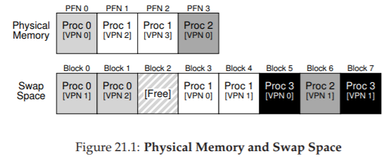
Figure 21.1: Physical Memory and Swap Space
(Bộ nhớ vật lý và không gian hoán đổi)
Trong ví dụ nhỏ (Figure 21.1), bạn có thể thấy một ví dụ với physical memory 4 page và swap space 8 page. Trong ví dụ, ba process (Proc 0, Proc 1, Proc 2) đang chia sẻ physical memory; mỗi process chỉ có một số page hợp lệ trong bộ nhớ, phần còn lại nằm trong swap space trên đĩa. Một process thứ tư (Proc 3) có toàn bộ page bị hoán đổi ra đĩa, và rõ ràng không chạy tại thời điểm này. Một khối swap vẫn còn trống. Ngay cả từ ví dụ nhỏ này, hy vọng bạn có thể thấy việc sử dụng swap space cho phép hệ thống “giả vờ” rằng bộ nhớ lớn hơn thực tế.
Cần lưu ý rằng swap space không phải là vị trí duy nhất trên đĩa cho lưu lượng hoán đổi. Ví dụ, giả sử bạn đang chạy một program binary (tệp thực thi chương trình) như ls hoặc chương trình main do bạn biên dịch. Các code page (trang mã) từ binary này ban đầu nằm trên đĩa, và khi chương trình chạy, chúng được nạp vào bộ nhớ (hoặc tất cả cùng lúc khi chương trình bắt đầu, hoặc — như trong các hệ thống hiện đại — từng page một khi cần). Tuy nhiên, nếu hệ thống cần giải phóng bộ nhớ vật lý cho mục đích khác, nó có thể tái sử dụng không gian bộ nhớ của các code page này, vì biết rằng có thể nạp lại chúng từ binary trên đĩa trong file system (hệ thống tệp).
21.2 The Present Bit
(Bit hiện diện)
Bây giờ, khi đã có không gian trên đĩa, chúng ta cần bổ sung một số cơ chế ở tầng cao hơn trong hệ thống để hỗ trợ việc hoán đổi page ra/vào đĩa. Giả sử, để đơn giản, rằng chúng ta có một hệ thống với hardware-managed TLB (TLB do phần cứng quản lý).
Hãy nhớ lại điều gì xảy ra khi có một memory reference (tham chiếu bộ nhớ). Process đang chạy tạo ra các tham chiếu tới virtual memory (cho việc nạp lệnh hoặc truy cập dữ liệu), và trong trường hợp này, phần cứng dịch chúng sang physical address (địa chỉ vật lý) trước khi lấy dữ liệu mong muốn từ bộ nhớ.
Nhớ rằng phần cứng trước tiên trích xuất VPN (virtual page number — số trang ảo) từ virtual address, kiểm tra TLB để tìm khớp (TLB hit), và nếu hit, tạo ra physical address tương ứng và lấy dữ liệu từ bộ nhớ. Đây là trường hợp phổ biến và nhanh (không cần thêm truy cập bộ nhớ).
Nếu VPN không có trong TLB (TLB miss), phần cứng sẽ tìm page table (bảng trang) trong bộ nhớ (sử dụng page table base register) và tra cứu PTE (page-table entry) cho page này bằng VPN làm chỉ số. Nếu page hợp lệ và có mặt trong physical memory, phần cứng trích xuất PFN từ PTE, nạp nó vào TLB, và thực thi lại lệnh, lần này tạo ra TLB hit; mọi thứ vẫn ổn.
Nếu chúng ta muốn cho phép các page được swapped ra disk, thì cần bổ sung thêm nhiều cơ chế hỗ trợ. Cụ thể, khi phần cứng truy cập vào PTE (page-table entry – mục nhập bảng trang), nó có thể phát hiện rằng page đó không hiện diện trong physical memory (bộ nhớ vật lý). Cách mà phần cứng (hoặc OS, trong trường hợp software-managed TLB – TLB do phần mềm quản lý) xác định điều này là thông qua một thông tin mới trong mỗi PTE, gọi là present bit (bit hiện diện).
- Nếu present bit được đặt bằng 1, điều đó có nghĩa là page đang hiện diện trong physical memory và mọi thao tác tiếp tục diễn ra như bình thường.
- Nếu present bit được đặt bằng 0, page không nằm trong bộ nhớ mà đang được lưu trữ ở đâu đó trên disk.
(Giải thích thêm: present bit là một cờ (flag) quan trọng giúp phân biệt giữa page đang ở trong RAM và page đã bị hoán đổi ra bộ nhớ phụ, từ đó OS có thể quyết định hành động tiếp theo như nạp lại page từ disk.)
ASIDE: SWAPPING TERMINOLOGY AND OTHER THINGS
(Thuật ngữ hoán đổi và một số vấn đề khác)
Thuật ngữ trong các hệ thống virtual memory (bộ nhớ ảo) có thể hơi gây nhầm lẫn và thay đổi tùy theo máy và hệ điều hành. Ví dụ, page fault (lỗi trang) nói chung có thể chỉ bất kỳ tham chiếu nào tới page table (bảng trang) dẫn đến một loại lỗi nào đó: điều này có thể bao gồm loại lỗi mà chúng ta đang thảo luận ở đây, tức là page-not-present fault (lỗi trang không hiện diện), nhưng đôi khi cũng có thể chỉ các truy cập bộ nhớ bất hợp pháp. Thực tế, thật kỳ lạ khi chúng ta gọi một truy cập hoàn toàn hợp lệ (tới một page đã được ánh xạ vào virtual address space của một process (tiến trình), nhưng tại thời điểm đó không nằm trong physical memory) là một “fault” (lỗi); thực ra, nó nên được gọi là page miss (trượt trang). Nhưng thường thì, khi mọi người nói một chương trình đang “page faulting”, họ muốn nói rằng nó đang truy cập các phần của virtual address space mà OS đã hoán đổi ra đĩa.Chúng tôi cho rằng lý do hành vi này được gọi là “fault” liên quan đến cơ chế trong OS để xử lý nó. Khi có điều gì bất thường xảy ra, tức là khi phần cứng gặp một tình huống mà nó không biết cách xử lý, phần cứng sẽ đơn giản chuyển quyền điều khiển cho OS, hy vọng OS có thể xử lý tốt hơn. Trong trường hợp này, một page mà process muốn truy cập bị thiếu trong bộ nhớ; phần cứng chỉ có thể làm một việc duy nhất là phát sinh exception (ngoại lệ), và OS tiếp quản từ đó. Vì điều này giống hệt với những gì xảy ra khi một process làm điều gì đó bất hợp pháp, nên không có gì ngạc nhiên khi chúng ta gọi hoạt động này là một “fault”.
Hành động truy cập một page không nằm trong physical memory thường được gọi là page fault. Khi xảy ra page fault, OS sẽ được gọi để xử lý. Một đoạn code cụ thể, gọi là page-fault handler (trình xử lý lỗi trang), sẽ chạy và phải xử lý page fault, như chúng ta sẽ mô tả dưới đây.
21.3 The Page Fault
(Lỗi trang)
Hãy nhớ rằng với TLB miss (trượt TLB), chúng ta có hai loại hệ thống: hardware-managed TLB (TLB do phần cứng quản lý — phần cứng tra cứu page table để tìm bản dịch mong muốn) và software-managed TLB (TLB do phần mềm quản lý — OS thực hiện). Trong cả hai loại hệ thống, nếu một page không hiện diện, OS sẽ chịu trách nhiệm xử lý page fault. Page-fault handler của OS sẽ chạy để xác định cần làm gì. Hầu như tất cả các hệ thống đều xử lý page fault bằng phần mềm; ngay cả với hardware-managed TLB, phần cứng cũng tin tưởng OS để quản lý nhiệm vụ quan trọng này.
Nếu một page không hiện diện và đã bị hoán đổi ra đĩa, OS sẽ cần hoán đổi page đó vào bộ nhớ để xử lý page fault. Do đó, câu hỏi đặt ra: làm thế nào OS biết được vị trí của page cần tìm? Trong nhiều hệ thống, page table là nơi tự nhiên để lưu trữ thông tin này.
ASIDE: WHY HARDWARE DOESN’T HANDLE PAGE FAULTS
(Tại sao phần cứng không xử lý page fault)
Từ kinh nghiệm với TLB, chúng ta biết rằng các nhà thiết kế phần cứng thường không muốn tin tưởng OS làm nhiều việc. Vậy tại sao họ lại tin tưởng OS xử lý page fault? Có một vài lý do chính. Thứ nhất, page fault tới đĩa là chậm; ngay cả khi OS mất nhiều thời gian để xử lý lỗi, thực thi hàng loạt lệnh, thì bản thân thao tác đĩa vốn đã chậm đến mức chi phí bổ sung của phần mềm là không đáng kể. Thứ hai, để có thể xử lý page fault, phần cứng sẽ phải hiểu về swap space, cách phát lệnh I/O tới đĩa, và nhiều chi tiết khác mà hiện tại nó không biết nhiều. Vì vậy, vì cả lý do hiệu năng và đơn giản, OS xử lý page fault, và ngay cả các kỹ sư phần cứng cũng hài lòng với điều đó.
Do đó, OS có thể sử dụng các bit trong PTE vốn thường dùng cho dữ liệu như PFN của page để lưu địa chỉ trên đĩa. Khi OS nhận được page fault cho một page, nó sẽ tra cứu PTE để tìm địa chỉ, và phát lệnh tới đĩa để nạp page vào bộ nhớ.
Khi I/O đĩa hoàn tất, OS sẽ cập nhật page table để đánh dấu page là present (hiện diện), cập nhật trường PFN của PTE để ghi lại vị trí trong bộ nhớ của page vừa được nạp, và thực thi lại lệnh. Lần thử tiếp theo có thể tạo ra một TLB miss, khi đó sẽ được xử lý và cập nhật TLB với bản dịch (hoặc có thể cập nhật TLB ngay khi xử lý page fault để bỏ qua bước này). Cuối cùng, lần thực thi lại cuối cùng sẽ tìm thấy bản dịch trong TLB và tiếp tục lấy dữ liệu hoặc lệnh mong muốn từ bộ nhớ tại địa chỉ vật lý đã dịch.
Lưu ý rằng trong khi I/O đang diễn ra, process sẽ ở trạng thái blocked (bị chặn). Do đó, OS có thể chạy các process sẵn sàng khác trong khi page fault đang được xử lý. Vì I/O tốn kém, việc chồng lấp giữa I/O (page fault) của một process và việc thực thi của process khác là một cách nữa để hệ thống multiprogramming (đa chương trình) tận dụng hiệu quả phần cứng.
21.4 What If Memory Is Full?
(Điều gì xảy ra nếu bộ nhớ đầy?)
Trong quy trình mô tả ở trên, bạn có thể nhận thấy rằng chúng ta giả định có nhiều bộ nhớ trống để nạp một page từ swap space. Tất nhiên, điều này có thể không đúng; bộ nhớ có thể đã đầy (hoặc gần đầy). Do đó, OS có thể muốn trước tiên page out (đưa ra ngoài) một hoặc nhiều page để tạo chỗ cho page mới sắp được nạp vào. Quá trình chọn một page để loại bỏ hoặc thay thế được gọi là page-replacement policy (chính sách thay thế trang).
Thực tế, đã có rất nhiều nghiên cứu để tạo ra một page-replacement policy tốt, vì loại bỏ nhầm page có thể gây tổn thất lớn cho hiệu năng chương trình. Quyết định sai có thể khiến chương trình chạy với tốc độ như đĩa thay vì tốc độ bộ nhớ; với công nghệ hiện tại, điều đó có nghĩa là chương trình có thể chạy chậm hơn 10.000 hoặc 100.000 lần. Do đó, chính sách này là thứ chúng ta nên nghiên cứu chi tiết; và đó chính xác là những gì chúng ta sẽ làm ở chương tiếp theo. Hiện tại, chỉ cần hiểu rằng chính sách này tồn tại, được xây dựng dựa trên các cơ chế đã mô tả ở đây.
21.5 Page Fault Control Flow
(Luồng điều khiển khi xảy ra lỗi trang)
Với tất cả kiến thức này, chúng ta có thể phác thảo sơ bộ luồng điều khiển hoàn chỉnh của việc truy cập bộ nhớ. Nói cách khác, khi ai đó hỏi bạn “chuyện gì xảy ra khi một chương trình lấy dữ liệu từ bộ nhớ?”, bạn nên có ý tưởng khá rõ về tất cả các khả năng khác nhau. Xem luồng điều khiển trong Figure 21.2 và Figure 21.3 để biết chi tiết; hình đầu tiên cho thấy phần cứng làm gì trong quá trình dịch địa chỉ, và hình thứ hai cho thấy OS làm gì khi xảy ra page fault.
 Figure 21.2: Page-Fault Control Flow Algorithm (Hardware)
Figure 21.2: Page-Fault Control Flow Algorithm (Hardware)
(Thuật toán luồng điều khiển lỗi trang — phần cứng)
 Figure 21.3: Page-Fault Control Flow Algorithm (Software)
Figure 21.3: Page-Fault Control Flow Algorithm (Software)
(Thuật toán luồng điều khiển lỗi trang — phần mềm)
Từ sơ đồ hardware control flow trong Figure 21.2, có thể thấy rằng hiện có ba trường hợp quan trọng cần hiểu khi xảy ra TLB miss.
Thứ nhất, page vừa present vừa valid (Lines 18–21); trong trường hợp này, TLB miss handler chỉ cần lấy PFN từ PTE, thực hiện lại lệnh (lần này sẽ dẫn đến TLB hit) và tiếp tục như đã mô tả nhiều lần trước đó.
Thứ hai (Lines 22–23), page fault handler phải được kích hoạt; mặc dù đây là một page hợp lệ để process truy cập (nó valid), nhưng nó không present trong physical memory.
Thứ ba (và cuối cùng), truy cập có thể hướng tới một page invalid, ví dụ do lỗi trong chương trình (Lines 13–14). Trong trường hợp này, các bit khác trong PTE không còn ý nghĩa; phần cứng sẽ trap truy cập không hợp lệ này, và OS trap handler sẽ chạy, nhiều khả năng sẽ chấm dứt process vi phạm.
Từ sơ đồ software control flow trong Figure 21.3, có thể thấy OS cần thực hiện những bước cơ bản nào để xử lý page fault. Trước tiên, OS phải tìm một physical frame để chứa page sắp được nạp vào; nếu không có frame trống, cần chờ replacement algorithm chạy và loại bỏ một số page khỏi bộ nhớ, giải phóng chúng để sử dụng. Khi đã có physical frame, handler sẽ gửi yêu cầu I/O để đọc page từ swap space. Cuối cùng, khi thao tác chậm này hoàn tất, OS sẽ cập nhật page table và thực hiện lại lệnh. Lần thực hiện lại này sẽ dẫn đến một TLB miss, và sau đó, khi thực hiện lại thêm lần nữa, sẽ là TLB hit, lúc này phần cứng có thể truy cập dữ liệu mong muốn.
21.6 When Replacements Really Occur
Cho đến nay, cách chúng ta mô tả việc replacement xảy ra giả định rằng OS sẽ chờ cho đến khi bộ nhớ đầy hoàn toàn, và chỉ khi đó mới replace (hoặc evict) một page để tạo chỗ cho page khác. Tuy nhiên, như bạn có thể hình dung, điều này hơi thiếu thực tế, và có nhiều lý do để OS chủ động giữ một phần nhỏ bộ nhớ trống sẵn sàng.
Để giữ một lượng nhỏ bộ nhớ trống, hầu hết các operating system (hệ điều hành) đều có một cơ chế high watermark (HW — ngưỡng cao) và low watermark (LW — ngưỡng thấp) để quyết định khi nào bắt đầu evicting pages (loại bỏ các trang) khỏi bộ nhớ. Cách hoạt động như sau: khi OS phát hiện số lượng page trống ít hơn LW, một background thread (luồng nền) chịu trách nhiệm giải phóng bộ nhớ sẽ chạy. Luồng này sẽ loại bỏ các page cho đến khi số lượng page trống đạt HW. Background thread này, đôi khi được gọi là swap daemon hoặc page daemon1, sau đó sẽ chuyển sang trạng thái ngủ, hài lòng vì đã giải phóng được một lượng bộ nhớ để các process đang chạy và OS có thể sử dụng.
Từ “daemon”, thường được phát âm là “demon”, là một thuật ngữ cũ chỉ một background thread hoặc process thực hiện một công việc hữu ích. Nguồn gốc của thuật ngữ này (một lần nữa!) xuất phát từ hệ thống Multics [CS94].
TIP: DO WORK IN THE BACKGROUND
(Thực hiện công việc ở chế độ nền)
Khi bạn có một số công việc cần làm, thường là một ý tưởng hay nếu thực hiện chúng ở chế độ nền để tăng hiệu quả và cho phép gom nhóm các thao tác. OS thường thực hiện công việc ở chế độ nền; ví dụ, nhiều hệ thống buffer (đệm) các thao tác ghi file trong bộ nhớ trước khi thực sự ghi dữ liệu ra đĩa. Cách làm này có nhiều lợi ích tiềm năng: tăng hiệu quả của đĩa, vì đĩa có thể nhận nhiều yêu cầu ghi cùng lúc và do đó lập lịch tốt hơn; cải thiện độ trễ ghi, vì ứng dụng nghĩ rằng thao tác ghi đã hoàn tất rất nhanh; khả năng giảm khối lượng công việc, vì có thể các thao tác ghi này sẽ không bao giờ cần ghi ra đĩa (ví dụ: nếu file bị xóa); và tận dụng tốt hơn thời gian nhàn rỗi, vì công việc nền có thể được thực hiện khi hệ thống đang rảnh, từ đó khai thác phần cứng hiệu quả hơn [G+95].
Bằng cách thực hiện nhiều thao tác thay thế (replacement) cùng lúc, các tối ưu hiệu năng mới trở nên khả thi. Ví dụ, nhiều hệ thống sẽ cluster hoặc nhóm một số page và ghi chúng ra swap partition (phân vùng hoán đổi) cùng lúc, từ đó tăng hiệu quả của đĩa [LL82]; như chúng ta sẽ thấy sau khi bàn chi tiết về đĩa, việc clustering như vậy giúp giảm seek và rotational overheads (chi phí tìm kiếm và quay) của đĩa, từ đó cải thiện hiệu năng đáng kể.
Để phối hợp với background paging thread, luồng điều khiển trong Figure 21.3 nên được điều chỉnh một chút; thay vì thực hiện replacement trực tiếp, thuật toán sẽ chỉ cần kiểm tra xem có page trống nào không. Nếu không, nó sẽ thông báo cho background paging thread rằng cần có page trống; khi luồng này giải phóng được một số page, nó sẽ đánh thức lại luồng ban đầu, luồng này sau đó có thể page in (nạp vào) page mong muốn và tiếp tục công việc.
21.7 Summary
(Tóm tắt)
Trong chương ngắn này, chúng ta đã giới thiệu khái niệm truy cập nhiều bộ nhớ hơn mức hiện diện vật lý trong hệ thống. Để làm được điều đó đòi hỏi cấu trúc page table phức tạp hơn, vì cần có một present bit (bit hiện diện) để cho biết page có đang ở trong bộ nhớ hay không. Khi page không hiện diện, page-fault handler (trình xử lý lỗi trang) của OS sẽ chạy để xử lý page fault, và sắp xếp việc chuyển page mong muốn từ đĩa vào bộ nhớ, có thể trước tiên phải thay thế một số page trong bộ nhớ để tạo chỗ cho các page sắp được nạp vào.
Điều quan trọng (và thật đáng kinh ngạc!) cần nhớ là tất cả các hành động này diễn ra một cách trong suốt đối với process. Đối với process, nó chỉ đang truy cập vào virtual memory riêng, liên tục của mình. Ở phía sau, các page được đặt ở những vị trí tùy ý (không liên tục) trong physical memory, và đôi khi chúng thậm chí không có trong bộ nhớ, buộc phải nạp từ đĩa. Mặc dù chúng ta hy vọng rằng trong trường hợp phổ biến, truy cập bộ nhớ sẽ nhanh, nhưng trong một số trường hợp, sẽ cần nhiều thao tác đĩa để xử lý; một việc đơn giản như thực hiện một lệnh đơn có thể, trong trường hợp xấu nhất, mất nhiều mili-giây để hoàn tất.
22. Vượt ra ngoài Physical Memory: Các chính sách
Trong một virtual memory manager (bộ quản lý bộ nhớ ảo), mọi thứ trở nên đơn giản khi hệ thống có nhiều bộ nhớ trống. Khi xảy ra page fault (lỗi trang), hệ điều hành tìm một free page (trang trống) trong danh sách các trang trống và gán nó cho trang gây lỗi. Chúc mừng nhé, Operating System (hệ điều hành), bạn lại xử lý thành công rồi.
Tuy nhiên, mọi thứ trở nên thú vị hơn khi bộ nhớ trống còn rất ít. Trong trường hợp này, áp lực bộ nhớ (memory pressure) buộc OS phải bắt đầu paging out (ghi ra đĩa) một số trang để giải phóng chỗ cho các trang đang được sử dụng tích cực. Việc quyết định trang nào (hoặc các trang nào) sẽ bị loại bỏ (evict) được gói gọn trong replacement policy (chính sách thay thế) của OS; về mặt lịch sử, đây là một trong những quyết định quan trọng nhất mà các hệ thống virtual memory đời đầu phải đưa ra, vì các hệ thống cũ thường có rất ít physical memory (bộ nhớ vật lý). Ít nhất, đây là một tập hợp các chính sách thú vị mà chúng ta nên tìm hiểu kỹ hơn. Và do đó, vấn đề đặt ra là:
THE CRUX: LÀM THẾ NÀO ĐỂ QUYẾT ĐỊNH TRANG NÀO SẼ BỊ LOẠI BỎ
Làm thế nào để OS quyết định trang nào (hoặc các trang nào) sẽ bị loại khỏi bộ nhớ? Quyết định này được thực hiện bởi replacement policy của hệ thống, thường tuân theo một số nguyên tắc chung (sẽ được thảo luận bên dưới) nhưng cũng bao gồm một số tinh chỉnh để tránh các hành vi bất thường trong các trường hợp đặc biệt (corner-case behaviors).
22.1 Quản lý Cache
Trước khi đi sâu vào các chính sách, chúng ta cần mô tả chi tiết hơn vấn đề cần giải quyết. Vì main memory (bộ nhớ chính) chỉ chứa một tập con của tất cả các trang trong hệ thống, nên có thể coi nó như một cache cho các trang của virtual memory. Do đó, mục tiêu của chúng ta khi chọn một replacement policy cho cache này là giảm thiểu số lượng cache miss, tức là giảm số lần phải nạp một trang từ đĩa. Ngược lại, cũng có thể coi mục tiêu là tối đa hóa số lượng cache hit, tức là số lần một trang được truy cập và tìm thấy ngay trong bộ nhớ.
Biết được số lượng cache hit và cache miss cho phép chúng ta tính average memory access time (AMAT) — thời gian truy cập bộ nhớ trung bình — cho một chương trình (một chỉ số mà các kiến trúc sư máy tính thường tính cho hardware cache [HP06]). Cụ thể, với các giá trị này, ta có thể tính AMAT của một chương trình như sau:
$$ \text{AMAT} = T_M + (P_{Miss} \cdot T_D) $$
(22.1)
Trong đó:
- $T_M$ là chi phí truy cập bộ nhớ
- $T_D$ là chi phí truy cập đĩa
- $P_{Miss}$ là xác suất không tìm thấy dữ liệu trong cache (miss).
Giá trị $P_{Miss}$ nằm trong khoảng từ 0.0 đến 1.0, và đôi khi chúng ta dùng tỷ lệ phần trăm miss thay vì xác suất (ví dụ: tỷ lệ miss 10% nghĩa là $P_{Miss} = 0.10$). Lưu ý rằng bạn luôn phải trả chi phí truy cập dữ liệu trong bộ nhớ; tuy nhiên, khi bị miss, bạn phải trả thêm chi phí nạp dữ liệu từ đĩa.
Ví dụ:
Giả sử chúng ta có một máy với address space (không gian địa chỉ) rất nhỏ: 4KB, với kích thước trang (page size) là 256 byte. Khi đó, một virtual address (địa chỉ ảo) sẽ có hai thành phần:
- VPN (Virtual Page Number – số trang ảo) 4 bit (các bit có trọng số cao nhất)
- Offset 8 bit (các bit có trọng số thấp nhất).
Như vậy, một process (tiến trình) trong ví dụ này có thể truy cập $2^4 = 16$ trang ảo. Giả sử tiến trình này tạo ra chuỗi các truy cập bộ nhớ (memory references) như sau (theo dạng địa chỉ ảo):
0x000, 0x100, 0x200, 0x300, 0x400, 0x500, 0x600, 0x700, 0x800, 0x900
Các địa chỉ ảo này trỏ đến byte đầu tiên của mỗi trang trong 10 trang đầu tiên của không gian địa chỉ (số trang chính là chữ số hex đầu tiên của địa chỉ ảo).
Giả sử thêm rằng mọi trang ngoại trừ virtual page 3 đã có sẵn trong bộ nhớ. Khi đó, chuỗi truy cập bộ nhớ sẽ có hành vi:
hit, hit, hit, miss, hit, hit, hit, hit, hit, hit
Ta có thể tính hit rate (tỷ lệ hit) là 90%, vì 9 trên 10 lần truy cập tìm thấy dữ liệu trong bộ nhớ. Miss rate do đó là 10% ($P_{Miss} = 0.1$). Nói chung, $P_{Hit} + P_{Miss} = 1.0$; tỷ lệ hit cộng tỷ lệ miss luôn bằng 100%.
Tính AMAT:
Giả sử chi phí truy cập bộ nhớ ($T_M$) là khoảng 100 nanosecond, và chi phí truy cập đĩa ($T_D$) là khoảng 10 millisecond. Khi đó:
$$
\text{AMAT} = 100\text{ns} + 0.1 \cdot 10\text{ms}
= 100\text{ns} + 1\text{ms}
= 1.0001\ \text{ms} \ (\approx 1\ \text{millisecond})
$$
Nếu tỷ lệ hit là 99.9% ($P_{Miss} = 0.001$), kết quả sẽ khác hẳn:
$$
\text{AMAT} = 100\text{ns} + 0.001 \cdot 10\text{ms}
= 100\text{ns} + 10\ \mu\text{s}
\approx 10.1\ \mu\text{s}
$$
Tức là nhanh hơn khoảng 100 lần. Khi tỷ lệ hit tiến gần 100%, AMAT tiến gần đến 100 nanosecond.
Rõ ràng, như bạn thấy trong ví dụ này, chi phí truy cập đĩa trong các hệ thống hiện đại là rất lớn, đến mức chỉ cần một tỷ lệ miss rất nhỏ cũng sẽ nhanh chóng chi phối toàn bộ AMAT của chương trình. Vì vậy, chúng ta cần tránh càng nhiều miss càng tốt, nếu không tốc độ sẽ bị giới hạn bởi tốc độ của đĩa. Một cách để cải thiện là phát triển một replacement policy thông minh — và đó chính là điều chúng ta sẽ làm tiếp theo.
22.2 Chính sách thay thế tối ưu (Optimal Replacement Policy)
Để hiểu rõ hơn cách một replacement policy (chính sách thay thế) cụ thể hoạt động, sẽ rất hữu ích nếu so sánh nó với replacement policy tốt nhất có thể. Thật vậy, một chính sách tối ưu như vậy đã được Belady phát triển từ nhiều năm trước [B66] (ông ban đầu gọi nó là MIN). Optimal replacement policy (chính sách thay thế tối ưu) dẫn đến số lượng miss (lỗi cache) ít nhất có thể. Belady đã chỉ ra rằng một cách tiếp cận đơn giản (nhưng thật không may là rất khó triển khai!) — thay thế trang sẽ được truy cập xa nhất trong tương lai — chính là chính sách tối ưu, giúp giảm thiểu tối đa số lượng cache miss.
TIP: SO SÁNH VỚI CHÍNH SÁCH TỐI ƯU LÀ HỮU ÍCH
Mặc dù chính sách tối ưu không thực tế để áp dụng trực tiếp trong hệ thống thật, nhưng nó cực kỳ hữu ích như một điểm tham chiếu trong mô phỏng hoặc các nghiên cứu khác. Việc nói rằng thuật toán mới của bạn đạt hit rate (tỷ lệ hit) 80% sẽ không có nhiều ý nghĩa nếu đứng riêng lẻ; nhưng nếu nói rằng chính sách tối ưu đạt 82% hit rate (và do đó cách tiếp cận mới của bạn khá gần với tối ưu) thì kết quả sẽ có ý nghĩa hơn và có ngữ cảnh rõ ràng. Vì vậy, trong bất kỳ nghiên cứu nào, việc biết được giá trị tối ưu cho phép bạn so sánh tốt hơn, chỉ ra mức cải thiện vẫn còn khả thi, và cũng giúp bạn biết khi nào nên dừng tối ưu hóa chính sách của mình vì nó đã đủ gần với lý tưởng [AD03].
Hy vọng rằng trực giác đằng sau chính sách tối ưu là dễ hiểu. Hãy nghĩ như thế này: nếu bạn buộc phải loại bỏ một trang, tại sao không loại bỏ trang mà bạn sẽ cần đến muộn nhất trong tương lai? Bằng cách làm như vậy, bạn đang ngầm khẳng định rằng tất cả các trang khác trong cache đều quan trọng hơn trang ở xa nhất đó. Lý do điều này đúng rất đơn giản: bạn sẽ truy cập các trang khác trước khi truy cập trang ở xa nhất.
Hãy cùng theo dõi một ví dụ đơn giản để hiểu các quyết định mà chính sách tối ưu đưa ra. Giả sử một chương trình truy cập chuỗi các virtual page (trang ảo) như sau:
0, 1, 2, 0, 1, 3, 0, 3, 1, 2, 1
Figure 22.1 dưới đây minh họa hành vi của chính sách tối ưu, giả sử cache có thể chứa tối đa 3 trang.
| Access | Hit/Miss? | Evict | Resulting Cache State |
|---|---|---|---|
| 0 | Miss | 0 | |
| 1 | Miss | 0, 1 | |
| 2 | Miss | 0, 1, 2 | |
| 0 | Hit | 0, 1, 2 | |
| 1 | Hit | 0, 1, 2 | |
| 3 | Miss | 2 | 0, 1, 3 |
| 0 | Hit | 0, 1, 3 | |
| 3 | Hit | 0, 1, 3 | |
| 1 | Hit | 0, 1, 3 | |
| 2 | Miss | 3 | 0, 1, 2 |
| 1 | Hit | 0, 1, 2 |
Hình 22.1: Truy vết thuật toán thay thế tối ưu (Tracing The Optimal Policy)
Trong hình, bạn có thể thấy các hành động sau. Không có gì ngạc nhiên, ba lần truy cập đầu tiên đều là miss (trượt), vì cache bắt đầu ở trạng thái rỗng; loại miss này đôi khi được gọi là cold-start miss (miss khởi động lạnh) hoặc compulsory miss (miss bắt buộc). Sau đó, chúng ta lại truy cập các page 0 và 1, cả hai đều hit (trúng) trong cache. Cuối cùng, chúng ta gặp một miss khác (với page 3), nhưng lần này cache đã đầy; cần phải thay thế một page! Câu hỏi đặt ra: nên thay thế page nào?
Với optimal policy (chính sách tối ưu), ta sẽ xem xét tương lai của từng page hiện có trong cache (0, 1 và 2), và thấy rằng page 0 sẽ được truy cập gần như ngay lập tức, page 1 được truy cập muộn hơn một chút, và page 2 được truy cập xa nhất trong tương lai. Do đó, optimal policy có lựa chọn dễ dàng: evict (loại bỏ) page 2, dẫn đến cache chứa các page 0, 1 và 3. Ba lần truy cập tiếp theo đều là hit, nhưng sau đó chúng ta truy cập page 2 (đã bị loại bỏ từ lâu) và gặp một miss khác.
Tại đây, optimal policy lại xem xét tương lai của từng page trong cache (0, 1 và 3), và nhận thấy rằng miễn là không loại bỏ page 1 (sắp được truy cập), thì sẽ ổn. Ví dụ minh họa cho thấy page 3 bị loại bỏ, mặc dù page 0 cũng là một lựa chọn hợp lý. Cuối cùng, ta hit vào page 1 và kết thúc chuỗi truy vết.
ASIDE: TYPES OF CACHE MISSES
(Các loại cache miss)
Trong lĩnh vực computer architecture (kiến trúc máy tính), các kiến trúc sư đôi khi phân loại miss thành ba loại: compulsory, capacity, và conflict misses, đôi khi gọi là Three C’s [H87].
- Compulsory miss (hoặc cold-start miss [EF78]) xảy ra vì cache ban đầu rỗng và đây là lần truy cập đầu tiên tới mục dữ liệu.
- Capacity miss xảy ra vì cache hết chỗ và phải loại bỏ một mục để đưa mục mới vào.
- Conflict miss xuất hiện trong phần cứng do giới hạn về vị trí một mục có thể được đặt trong cache phần cứng, nguyên nhân từ set-associativity; loại miss này không xảy ra trong OS page cache vì cache này luôn fully-associative (hoàn toàn kết hợp), tức là không có giới hạn về vị trí đặt một page trong bộ nhớ. Xem H&P [HP06] để biết chi tiết.
Chúng ta cũng có thể tính hit rate (tỉ lệ trúng) cho cache: với 6 hit và 5 miss, hit rate là:
$$ \frac{\text{Hits}}{\text{Hits} + \text{Misses}} = \frac{6}{6+5} $$
tức là 54,5%. Bạn cũng có thể tính hit rate modulo compulsory misses (tức là bỏ qua miss đầu tiên đối với một page nhất định), kết quả là 85,7%.
Tuy nhiên, như chúng ta đã thấy trong việc phát triển các scheduling policy (chính sách lập lịch), tương lai thường không thể biết trước; bạn không thể xây dựng optimal policy cho một general-purpose operating system (hệ điều hành đa dụng)1. Do đó, khi phát triển một chính sách thực tế, có thể triển khai, chúng ta sẽ tập trung vào các phương pháp khác để quyết định page nào cần loại bỏ. Optimal policy sẽ chỉ đóng vai trò là điểm so sánh, để biết chúng ta đang tiến gần đến “hoàn hảo” đến mức nào.
Nếu bạn làm được, hãy cho chúng tôi biết! Chúng ta có thể cùng nhau trở nên giàu có. Hoặc, giống như các nhà khoa học “phát hiện” ra cold fusion (nhiệt hạch lạnh), sẽ bị chế giễu và mỉa mai rộng rãi [FP89].
22.3 A Simple Policy: FIFO
(Một chính sách đơn giản: FIFO)
Nhiều hệ thống đời đầu đã tránh sự phức tạp của việc cố gắng tiếp cận optimal và sử dụng các replacement policy (chính sách thay thế) rất đơn giản. Ví dụ, một số hệ thống sử dụng FIFO (first-in, first-out — vào trước, ra trước), trong đó các page được đưa vào một queue (hàng đợi) khi chúng vào hệ thống; khi cần thay thế, page ở đuôi hàng đợi (page “first-in”) sẽ bị loại bỏ. FIFO có một ưu điểm lớn: rất dễ triển khai.
Hãy xem FIFO hoạt động thế nào với chuỗi truy cập ví dụ của chúng ta (Figure 22.2, trang 5). Chúng ta lại bắt đầu với ba compulsory miss cho các page 0, 1 và 2, sau đó hit vào cả 0 và 1. Tiếp theo, page 3 được truy cập, gây ra một miss; quyết định thay thế với FIFO rất dễ: chọn page “first-in” (trạng thái cache trong hình được giữ theo thứ tự FIFO, với page vào trước nằm bên trái), đó là page 0.
Không may, lần truy cập tiếp theo là page 0, gây ra một miss khác và thay thế (loại bỏ page 1). Sau đó, chúng ta hit vào page 3, nhưng miss ở page 1 và 2, và cuối cùng hit vào page 1.

Hình 22.2: Truy vết chính sách FIFO (Tracing The FIFO Policy)
So sánh FIFO với optimal, FIFO hoạt động kém hơn đáng kể: hit rate (tỉ lệ trúng) chỉ đạt 36,4% (hoặc 57,1% nếu loại trừ compulsory misses — các miss bắt buộc). FIFO hoàn toàn không thể xác định tầm quan trọng của các block: ngay cả khi page 0 đã được truy cập nhiều lần, FIFO vẫn loại bỏ nó, chỉ vì đó là page được đưa vào bộ nhớ đầu tiên.
ASIDE: BELADY’S ANOMALY
(Hiện tượng bất thường của Belady)
Belady (tác giả của optimal policy) và các đồng nghiệp đã tìm ra một chuỗi tham chiếu bộ nhớ có hành vi khá bất ngờ [BNS69]. Chuỗi memory-reference (tham chiếu bộ nhớ) là:
1, 2, 3, 4, 1, 2, 5, 1, 2, 3, 4, 5.
Replacement policy (chính sách thay thế) mà họ nghiên cứu là FIFO. Điều thú vị: tỉ lệ hit của cache thay đổi thế nào khi tăng kích thước cache từ 3 lên 4 page.Thông thường, bạn sẽ mong tỉ lệ hit của cache tăng (cải thiện) khi cache lớn hơn. Nhưng trong trường hợp này, với FIFO, nó lại giảm! Hãy tự tính số hit và miss để kiểm chứng. Hành vi kỳ lạ này thường được gọi là Belady’s Anomaly (điều này khiến các đồng tác giả của ông khá bối rối).
Một số chính sách khác, như LRU, không gặp vấn đề này. Bạn đoán được tại sao không? Thực tế, LRU có một đặc tính gọi là stack property [M+70]. Với các thuật toán có đặc tính này, một cache kích thước N+1 tự nhiên sẽ bao gồm toàn bộ nội dung của cache kích thước N. Do đó, khi tăng kích thước cache, tỉ lệ hit sẽ giữ nguyên hoặc tăng. FIFO và Random (cùng một số chính sách khác) rõ ràng không tuân theo stack property, và do đó dễ gặp hành vi bất thường.
22.4 Another Simple Policy: Random
(Một chính sách đơn giản khác: Random)
Một chính sách thay thế tương tự là Random, chính sách này đơn giản chọn ngẫu nhiên một page để thay thế khi bộ nhớ bị áp lực. Random có các đặc điểm tương tự FIFO: dễ triển khai, nhưng không thực sự cố gắng thông minh trong việc chọn block để loại bỏ. Hãy xem Random hoạt động thế nào với chuỗi tham chiếu ví dụ nổi tiếng của chúng ta (Figure 22.3).
Hình 22.3: Truy vết chính sách Random (Tracing The Random Policy)
Tất nhiên, hiệu quả của Random phụ thuộc hoàn toàn vào việc nó may mắn (hoặc xui xẻo) thế nào khi chọn. Trong ví dụ trên, Random hoạt động tốt hơn một chút so với FIFO, và kém hơn một chút so với optimal. Thực tế, chúng ta có thể chạy thử nghiệm Random hàng nghìn lần và xác định hiệu quả trung bình của nó.
Hình 22.4: Hiệu năng của Random qua 10.000 lần thử (Random Performance Over 10,000 Trials)
Như bạn thấy, đôi khi (hơn 40% số lần), Random tốt ngang optimal, đạt 6 hit trên chuỗi truy vết ví dụ; đôi khi nó tệ hơn nhiều, chỉ đạt 2 hit hoặc ít hơn. Hiệu quả của Random phụ thuộc vào “vận may” khi chọn.
22.5 Using History: LRU
(Sử dụng lịch sử: LRU)
Thật không may, bất kỳ chính sách nào đơn giản như FIFO hoặc Random đều có khả năng gặp một vấn đề chung: nó có thể loại bỏ một page quan trọng, page này sắp được truy cập lại. FIFO loại bỏ page được đưa vào đầu tiên; nếu đó là page chứa code hoặc data structure (cấu trúc dữ liệu) quan trọng, nó vẫn bị loại bỏ, mặc dù sắp được nạp lại. Do đó, FIFO, Random và các chính sách tương tự khó có thể tiệm cận optimal; cần một cách tiếp cận thông minh hơn.
Giống như khi xây dựng scheduling policy (chính sách lập lịch), để cải thiện khả năng dự đoán tương lai, chúng ta lại dựa vào quá khứ và sử dụng lịch sử làm hướng dẫn. Ví dụ, nếu một chương trình đã truy cập một page gần đây, nhiều khả năng nó sẽ truy cập lại page đó trong tương lai gần.
Một loại thông tin lịch sử mà page-replacement policy (chính sách thay thế trang) có thể sử dụng là frequency (tần suất); nếu một page đã được truy cập nhiều lần, có lẽ không nên thay thế nó vì rõ ràng nó có giá trị. Một thuộc tính thường được sử dụng hơn là recency of access (độ gần đây của lần truy cập); page được truy cập càng gần đây thì càng có khả năng sẽ được truy cập lại.
Nhóm chính sách này dựa trên cái gọi là principle of locality (nguyên lý địa phương) [D70], về cơ bản là một quan sát về chương trình và hành vi của chúng. Nguyên lý này nói một cách đơn giản rằng các chương trình có xu hướng truy cập một số đoạn code nhất định (ví dụ: trong vòng lặp) và các cấu trúc dữ liệu (ví dụ: mảng được truy cập trong vòng lặp) khá thường xuyên; do đó, chúng ta nên sử dụng lịch sử để xác định page nào quan trọng và giữ chúng trong bộ nhớ khi cần loại bỏ page khác.
Từ đó, một nhóm các thuật toán đơn giản dựa trên lịch sử ra đời:
- Least-Frequently-Used (LFU): thay thế page được sử dụng ít thường xuyên nhất khi cần loại bỏ.
- Least-Recently-Used (LRU): thay thế page được sử dụng ít gần đây nhất.
Các thuật toán này rất dễ nhớ: chỉ cần biết tên là bạn biết ngay nó làm gì — một đặc điểm tuyệt vời cho tên gọi.
Để hiểu rõ hơn về LRU, hãy xem LRU hoạt động thế nào với chuỗi tham chiếu ví dụ của chúng ta. Figure 22.5 (trang 7) cho thấy kết quả. Từ hình, bạn có thể thấy LRU sử dụng lịch sử để hoạt động tốt hơn các chính sách stateless (không lưu trạng thái) như Random hoặc FIFO. Trong ví dụ, LRU loại bỏ page 2 khi lần đầu cần thay thế, vì page 0 và 1 đã được truy cập gần đây hơn. Sau đó, nó thay thế page 0 vì page 1 và 3 đã được truy cập gần đây hơn. Trong cả hai trường hợp, quyết định của LRU — dựa trên lịch sử — hóa ra là chính xác, và các lần truy cập tiếp theo đều là hit. Do đó, trong ví dụ của chúng ta, LRU hoạt động tốt nhất có thể, đạt hiệu năng ngang với optimal2.
Trong trường hợp này, LRU đạt hiệu năng tối đa vì chuỗi truy cập phù hợp với giả định của nguyên lý địa phương.
Hình 22.5: Truy vết chính sách LRU (Tracing The LRU Policy)
ASIDE: TYPES OF LOCALITY
(Các loại tính cục bộ)
Có hai loại locality (tính cục bộ) mà các chương trình thường thể hiện:
- Loại thứ nhất gọi là spatial locality (tính cục bộ không gian), phát biểu rằng nếu một page P được truy cập, nhiều khả năng các page xung quanh nó (ví dụ P − 1 hoặc P + 1) cũng sẽ được truy cập.
- Loại thứ hai là temporal locality (tính cục bộ thời gian), phát biểu rằng các page đã được truy cập gần đây nhiều khả năng sẽ được truy cập lại trong tương lai gần.
Giả định về sự tồn tại của các loại locality này đóng vai trò lớn trong các hệ thống phân cấp cache của phần cứng, vốn triển khai nhiều cấp độ cache cho lệnh, dữ liệu và dịch địa chỉ để giúp chương trình chạy nhanh khi locality tồn tại.
Tất nhiên, principle of locality (nguyên lý cục bộ) — như thường được gọi — không phải là một quy tắc cứng nhắc mà mọi chương trình đều phải tuân theo. Thực tế, một số chương trình truy cập bộ nhớ (hoặc đĩa) theo cách khá ngẫu nhiên và hầu như không thể hiện locality trong luồng truy cập của chúng. Do đó, mặc dù locality là điều tốt cần ghi nhớ khi thiết kế cache (dù là phần cứng hay phần mềm), nó không đảm bảo thành công. Thay vào đó, đây là một heuristic (kinh nghiệm) thường tỏ ra hữu ích trong thiết kế hệ thống máy tính.
Chúng ta cũng nên lưu ý rằng tồn tại các thuật toán đối nghịch với các thuật toán này: Most-Frequently-Used (MFU) và Most-Recently-Used (MRU). Trong hầu hết các trường hợp (không phải tất cả!), các chính sách này hoạt động không tốt, vì chúng bỏ qua thay vì tận dụng locality mà hầu hết các chương trình thể hiện.
Đúng vậy, chúng tôi đã “nấu” kết quả. Nhưng đôi khi việc “nấu” là cần thiết để chứng minh một luận điểm.
22.6 Workload Examples
(Các ví dụ về khối lượng công việc)
Hãy xem một vài ví dụ nữa để hiểu rõ hơn cách một số chính sách này hoạt động. Ở đây, chúng ta sẽ xem xét các workload (khối lượng công việc) phức tạp hơn thay vì các chuỗi truy vết nhỏ. Tuy nhiên, ngay cả các workload này cũng đã được đơn giản hóa rất nhiều; một nghiên cứu tốt hơn sẽ bao gồm các application trace (truy vết ứng dụng) thực tế.
Workload đầu tiên của chúng ta không có locality, nghĩa là mỗi tham chiếu là tới một page ngẫu nhiên trong tập các page được truy cập. Trong ví dụ đơn giản này, workload truy cập 100 page duy nhất theo thời gian, chọn page tiếp theo để tham chiếu một cách ngẫu nhiên; tổng cộng có 10.000 lượt truy cập page. Trong thí nghiệm, chúng ta thay đổi kích thước cache từ rất nhỏ (1 page) đến đủ để chứa tất cả các page duy nhất (100 page), nhằm xem mỗi chính sách hoạt động thế nào trên dải kích thước cache này.

Hình 22.6: Workload không có locality (The No-Locality Workload)
Hình 22.6 biểu diễn kết quả thí nghiệm cho optimal, LRU, Random, và FIFO. Trục y của hình cho thấy hit rate mà mỗi chính sách đạt được; trục x thay đổi kích thước cache như mô tả ở trên.
Từ biểu đồ, chúng ta có thể rút ra một số kết luận:
- Khi workload không có locality, việc bạn dùng chính sách thực tế nào cũng không quan trọng; LRU, FIFO và Random đều hoạt động giống nhau, với hit rate được xác định chính xác bởi kích thước cache.
- Khi cache đủ lớn để chứa toàn bộ workload, chính sách nào bạn dùng cũng không quan trọng; tất cả các chính sách (kể cả Random) đều hội tụ về hit rate 100% khi tất cả các block được tham chiếu đều nằm trong cache.
- Cuối cùng, bạn có thể thấy optimal hoạt động tốt hơn đáng kể so với các chính sách thực tế; nếu có thể “nhìn trước tương lai”, việc thay thế sẽ hiệu quả hơn nhiều.
Workload tiếp theo được gọi là “80-20” workload, thể hiện locality: 80% số lần tham chiếu là tới 20% số page (“hot” pages — page nóng); 20% số lần tham chiếu còn lại là tới 80% số page còn lại (“cold” pages — page lạnh). Trong workload này, tổng số page duy nhất vẫn là 100; do đó, hot pages được tham chiếu hầu hết thời gian, và cold pages chiếm phần còn lại. Hình 22.7 (trang 10) cho thấy các chính sách hoạt động thế nào với workload này.

Hình 22.7: Workload 80-20 (The 80-20 Workload)
Như bạn thấy từ hình, mặc dù cả Random và FIFO đều hoạt động khá tốt, LRU làm tốt hơn, vì nó có xu hướng giữ lại các hot pages; do các page này đã được tham chiếu thường xuyên trong quá khứ, chúng có khả năng sẽ được tham chiếu lại trong tương lai gần. Optimal một lần nữa hoạt động tốt hơn, cho thấy thông tin lịch sử của LRU không hoàn hảo.
Lúc này, bạn có thể tự hỏi: liệu sự cải thiện của LRU so với Random và FIFO có thực sự đáng kể? Câu trả lời, như thường lệ, là “còn tùy”. Nếu mỗi miss là rất tốn kém (điều này không hiếm), thì ngay cả một mức tăng nhỏ trong hit rate (giảm miss rate) cũng có thể tạo ra sự khác biệt lớn về hiệu năng. Nếu miss không quá tốn kém, thì lợi ích tiềm năng của LRU tất nhiên sẽ không quan trọng đến vậy.
Hãy xem một workload cuối cùng. Chúng tôi gọi nó là “looping sequential” workload (workload tuần tự lặp), trong đó chúng ta tham chiếu 50 page theo thứ tự, bắt đầu từ 0, sau đó 1, ..., đến page 49, rồi lặp lại, lặp đi lặp lại các truy cập này, tổng cộng 10.000 lượt truy cập tới 50 page duy nhất. Biểu đồ cuối trong Hình 22.8 cho thấy hành vi của các chính sách với workload này.
Hình 22.8: Workload tuần tự lặp (The Looping Workload)
Workload này, phổ biến trong nhiều ứng dụng (bao gồm cả các ứng dụng thương mại quan trọng như database [CD85]), là trường hợp xấu nhất cho cả LRU và FIFO. Các thuật toán này, dưới workload tuần tự lặp, loại bỏ các page cũ hơn; không may, do tính chất lặp của workload, các page cũ này sẽ được truy cập sớm hơn so với các page mà chính sách ưu tiên giữ lại trong cache. Thực tế, ngay cả với cache kích thước 49, một workload tuần tự lặp gồm 50 page vẫn dẫn đến hit rate 0%.
Điều thú vị là Random hoạt động tốt hơn đáng kể, dù không đạt tới optimal, nhưng ít nhất đạt được hit rate khác 0. Hóa ra Random có một số đặc tính thú vị; một trong số đó là không gặp các hành vi bất thường ở các trường hợp đặc biệt (corner-case) khó chịu.
22.7 Implementing Historical Algorithms
(Triển khai các thuật toán dựa trên lịch sử)
Như bạn thấy, một thuật toán như LRU (Least Recently Used — loại bỏ trang ít được sử dụng gần đây nhất) thường có thể làm tốt hơn các chính sách đơn giản như FIFO hoặc Random, vốn có thể loại bỏ các page quan trọng. Tuy nhiên, các chính sách dựa trên lịch sử lại đặt ra một thách thức mới: làm thế nào để triển khai chúng?
Lấy ví dụ LRU. Để triển khai hoàn hảo, chúng ta cần làm khá nhiều việc. Cụ thể, với mỗi lần truy cập page (tức là mỗi lần truy cập bộ nhớ, dù là nạp lệnh hay đọc/ghi dữ liệu), chúng ta phải cập nhật một data structure (cấu trúc dữ liệu) để di chuyển page này lên đầu danh sách (tức là phía MRU — Most Recently Used). So sánh với FIFO, danh sách FIFO của các page chỉ được truy cập khi một page bị loại bỏ (bằng cách xóa page vào trước) hoặc khi một page mới được thêm vào danh sách (ở phía vào sau). Để theo dõi page nào được sử dụng gần nhất và xa nhất, hệ thống phải thực hiện một số công việc ghi nhận (accounting) trên mỗi lần tham chiếu bộ nhớ. Rõ ràng, nếu không cẩn thận, việc ghi nhận này có thể làm giảm hiệu năng đáng kể.
Một phương pháp có thể giúp tăng tốc là bổ sung một chút hỗ trợ từ phần cứng. Ví dụ, máy có thể cập nhật, với mỗi lần truy cập page, một trường thời gian trong bộ nhớ (có thể nằm trong page table của từng process, hoặc trong một mảng riêng trong bộ nhớ, mỗi entry ứng với một physical page của hệ thống). Khi một page được truy cập, trường thời gian này sẽ được phần cứng đặt thành thời gian hiện tại. Sau đó, khi cần thay thế một page, OS chỉ cần quét tất cả các trường thời gian trong hệ thống để tìm page ít được sử dụng gần đây nhất.
Tuy nhiên, khi số lượng page trong hệ thống tăng, việc quét một mảng thời gian khổng lồ chỉ để tìm page cũ nhất tuyệt đối là cực kỳ tốn kém. Hãy tưởng tượng một máy hiện đại với 4GB bộ nhớ, chia thành các page 4KB. Máy này có 1 triệu page, và việc tìm page LRU sẽ mất rất nhiều thời gian, ngay cả với tốc độ CPU hiện đại. Điều này đặt ra câu hỏi: chúng ta có thực sự cần tìm page cũ nhất tuyệt đối để thay thế không? Liệu chúng ta có thể chấp nhận một xấp xỉ?
CRUX: HOW TO IMPLEMENT AN LRU REPLACEMENT POLICY
(Làm thế nào để triển khai chính sách thay thế LRU)
Vì việc triển khai LRU hoàn hảo là tốn kém, liệu chúng ta có thể xấp xỉ nó theo cách nào đó mà vẫn đạt được hành vi mong muốn?
22.8 Approximating LRU
(Xấp xỉ LRU)
Câu trả lời là có: việc xấp xỉ LRU khả thi hơn nhiều về mặt chi phí tính toán, và thực tế đây là cách mà nhiều hệ thống hiện đại áp dụng. Ý tưởng này cần một chút hỗ trợ phần cứng, dưới dạng use bit (bit sử dụng, đôi khi gọi là reference bit — bit tham chiếu), lần đầu được triển khai trong hệ thống có phân trang đầu tiên, Atlas one-level store [KE+62]. Mỗi page trong hệ thống có một use bit, và các bit này được lưu ở đâu đó trong bộ nhớ (có thể trong page table của từng process, hoặc trong một mảng riêng). Mỗi khi một page được tham chiếu (đọc hoặc ghi), use bit sẽ được phần cứng đặt thành 1. Phần cứng không bao giờ tự xóa bit này (đặt về 0); đó là trách nhiệm của OS.
OS sử dụng use bit để xấp xỉ LRU như thế nào? Có nhiều cách, nhưng clock algorithm [C69] là một cách tiếp cận đơn giản. Hãy tưởng tượng tất cả các page của hệ thống được sắp xếp thành một danh sách vòng tròn. Một “kim đồng hồ” trỏ tới một page bất kỳ để bắt đầu (không quan trọng là page nào). Khi cần thay thế, OS kiểm tra page P mà kim đang trỏ có use bit bằng 1 hay 0. Nếu bằng 1, điều này nghĩa là page P vừa được sử dụng gần đây và không phải ứng viên tốt để thay thế. OS sẽ xóa use bit của P (đặt về 0) và di chuyển kim sang page tiếp theo (P+1). Thuật toán tiếp tục cho đến khi tìm thấy một page có use bit bằng 0, nghĩa là page này không được sử dụng gần đây (hoặc, trong trường hợp xấu nhất, tất cả page đều đã được sử dụng và chúng ta đã quét hết, xóa tất cả bit).
Lưu ý rằng đây không phải là cách duy nhất dùng use bit để xấp xỉ LRU. Bất kỳ cách nào định kỳ xóa use bit và phân biệt page có use bit = 1 và = 0 để quyết định thay thế đều được. Thuật toán clock của Corbató chỉ là một cách tiếp cận sớm và thành công, với ưu điểm là không phải quét toàn bộ bộ nhớ nhiều lần để tìm page không sử dụng.
Hình 22.9: Workload 80-20 với Clock
Biểu đồ trong Hình 22.9 cho thấy hành vi của một biến thể clock algorithm. Biến thể này quét ngẫu nhiên các page khi thay thế; khi gặp page có reference bit = 1, nó xóa bit (đặt về 0); khi gặp page có reference bit = 0, nó chọn page đó làm victim (nạn nhân). Như bạn thấy, mặc dù không tốt bằng LRU hoàn hảo, nó vẫn tốt hơn các cách không xét đến lịch sử.
22.9 Considering Dirty Pages
(Xem xét các trang bẩn)
Một sửa đổi nhỏ cho clock algorithm (cũng do Corbató [C69] đề xuất) thường được áp dụng là xem xét thêm việc page có bị modified (sửa đổi) khi ở trong bộ nhớ hay không. Lý do: nếu page đã bị sửa đổi (dirty), nó phải được ghi lại ra đĩa khi bị loại bỏ, điều này tốn kém. Nếu page chưa bị sửa đổi (clean), việc loại bỏ là miễn phí; physical frame (khung trang vật lý) có thể được tái sử dụng ngay mà không cần I/O bổ sung. Do đó, một số hệ thống VM ưu tiên loại bỏ page sạch hơn page bẩn.
Để hỗ trợ điều này, phần cứng cần có modified bit (còn gọi là dirty bit). Bit này được đặt mỗi khi page bị ghi, và có thể được tích hợp vào thuật toán thay thế trang. Ví dụ, clock algorithm có thể được sửa để ưu tiên quét tìm page vừa unused (không dùng) vừa clean để loại bỏ trước; nếu không tìm thấy, mới tìm page unused nhưng dirty, v.v.
22.10 Other VM Policies
(Các chính sách VM khác)
Page replacement không phải là chính sách duy nhất mà VM subsystem (hệ thống con bộ nhớ ảo) áp dụng (mặc dù có thể là quan trọng nhất). Ví dụ, OS cũng phải quyết định khi nào đưa một page vào bộ nhớ. Chính sách này, đôi khi gọi là page selection policy (chính sách chọn trang) [D70], đưa ra cho OS một số lựa chọn khác nhau.
Với hầu hết các page, OS sử dụng demand paging — nghĩa là OS chỉ đưa page vào bộ nhớ khi nó được truy cập, “on demand” (theo yêu cầu). Tất nhiên, OS có thể đoán rằng một page sắp được dùng và đưa nó vào trước; hành vi này gọi là prefetching và chỉ nên thực hiện khi có khả năng thành công hợp lý. Ví dụ, một số hệ thống giả định rằng nếu page mã P được đưa vào bộ nhớ, thì page mã P+1 cũng sẽ sớm được truy cập và nên được đưa vào luôn.
Một chính sách khác xác định cách OS ghi page ra đĩa. Tất nhiên, có thể ghi từng page một; tuy nhiên, nhiều hệ thống gom nhiều thao tác ghi đang chờ trong bộ nhớ và ghi chúng ra đĩa trong một lần (hiệu quả hơn). Hành vi này thường được gọi là clustering hoặc grouping of writes (gom nhóm ghi), và hiệu quả vì đặc tính của ổ đĩa: thực hiện một lần ghi lớn hiệu quả hơn nhiều lần ghi nhỏ.
22.11 Thrashing
(Hiện tượng quá tải phân trang)
Trước khi kết thúc, chúng ta bàn đến một câu hỏi cuối cùng: OS nên làm gì khi bộ nhớ bị oversubscribed (quá tải), tức là nhu cầu bộ nhớ của tập hợp các process (tiến trình) đang chạy vượt quá dung lượng physical memory (bộ nhớ vật lý) sẵn có? Trong trường hợp này, hệ thống sẽ liên tục thực hiện phân trang (paging), một trạng thái đôi khi được gọi là thrashing [D70].
Một số hệ điều hành đời trước có một tập hợp cơ chế khá tinh vi để vừa phát hiện vừa xử lý thrashing khi nó xảy ra. Ví dụ, với một tập hợp process, hệ thống có thể quyết định không chạy một số process, với hy vọng rằng working set (tập trang đang được sử dụng tích cực) của tập process còn lại sẽ vừa với bộ nhớ và do đó có thể tiếp tục tiến triển. Cách tiếp cận này, thường được gọi là admission control (kiểm soát tiếp nhận), dựa trên nguyên tắc: đôi khi làm ít việc nhưng làm tốt sẽ tốt hơn là cố gắng làm tất cả mọi thứ cùng lúc nhưng kém hiệu quả — một tình huống mà chúng ta thường gặp cả trong đời sống lẫn trong các hệ thống máy tính hiện đại (đáng tiếc là vậy).
Một số hệ thống hiện nay áp dụng cách tiếp cận “mạnh tay” hơn đối với tình trạng quá tải bộ nhớ. Ví dụ, một số phiên bản Linux chạy out-of-memory killer khi bộ nhớ bị oversubscribed; daemon này sẽ chọn một process tiêu tốn nhiều bộ nhớ và kill (chấm dứt) nó, từ đó giảm áp lực bộ nhớ theo cách không mấy tinh tế. Mặc dù cách này thành công trong việc giảm áp lực bộ nhớ, nhưng nó có thể gây ra vấn đề, chẳng hạn nếu nó kill X server, khiến mọi ứng dụng yêu cầu hiển thị trở nên không thể sử dụng.
22.12 Summary
(Tóm tắt)
Chúng ta đã thấy sự xuất hiện của nhiều page-replacement policy (chính sách thay thế trang) và các chính sách khác, vốn là một phần của VM subsystem (hệ thống con bộ nhớ ảo) trong tất cả các hệ điều hành hiện đại. Các hệ thống hiện đại bổ sung một số tinh chỉnh cho các xấp xỉ LRU đơn giản như clock; ví dụ, scan resistance (kháng quét) là một thành phần quan trọng của nhiều thuật toán hiện đại, như ARC [MM03]. Các thuật toán scan-resistant thường giống LRU nhưng cố gắng tránh hành vi tệ nhất của LRU, như chúng ta đã thấy với looping-sequential workload (khối lượng công việc tuần tự lặp). Do đó, sự tiến hóa của các thuật toán thay thế trang vẫn tiếp tục.
Trong nhiều năm, tầm quan trọng của các thuật toán thay thế đã giảm, do sự chênh lệch quá lớn giữa thời gian truy cập bộ nhớ và thời gian truy cập đĩa. Cụ thể, vì việc paging ra đĩa quá tốn kém, chi phí của việc phân trang thường xuyên là không thể chấp nhận; nói đơn giản, dù thuật toán thay thế của bạn tốt đến đâu, nếu bạn phải thay thế thường xuyên, hệ thống của bạn sẽ trở nên chậm không thể chịu nổi. Do đó, giải pháp tốt nhất khi đó là một giải pháp đơn giản (dù không thỏa mãn về mặt học thuật): mua thêm bộ nhớ.
Tuy nhiên, những đổi mới gần đây trong các thiết bị lưu trữ nhanh hơn nhiều (ví dụ: Flash-based SSDs) đã thay đổi tỷ lệ hiệu năng này một lần nữa, dẫn đến một “thời kỳ phục hưng” của các thuật toán thay thế trang. Xem [SS10, W+21] để biết các nghiên cứu gần đây trong lĩnh vực này.
23. Hệ thống bộ nhớ ảo hoàn chỉnh (Complete Virtual Memory Systems)
Trước khi kết thúc việc nghiên cứu về virtualizing memory (ảo hóa bộ nhớ), chúng ta hãy xem xét kỹ hơn cách mà toàn bộ một hệ thống virtual memory (bộ nhớ ảo) được xây dựng. Chúng ta đã thấy các thành phần then chốt của những hệ thống như vậy, bao gồm nhiều thiết kế page table (bảng trang), sự tương tác với TLB (đôi khi còn được OS xử lý trực tiếp), và các chiến lược quyết định page nào giữ lại trong bộ nhớ và page nào loại bỏ. Tuy nhiên, còn nhiều tính năng khác tạo nên một hệ thống bộ nhớ ảo hoàn chỉnh, bao gồm nhiều đặc tính về hiệu năng, chức năng và bảo mật. Và đây là vấn đề mấu chốt:
THE CRUX: HOW TO BUILD A COMPLETE VM SYSTEM
(Làm thế nào để xây dựng một hệ thống bộ nhớ ảo hoàn chỉnh)
Những tính năng nào là cần thiết để hiện thực hóa một hệ thống bộ nhớ ảo hoàn chỉnh? Chúng cải thiện hiệu năng, tăng cường bảo mật hoặc cải thiện hệ thống theo những cách nào?
Chúng ta sẽ tìm hiểu điều này thông qua hai hệ thống. Hệ thống đầu tiên là một trong những ví dụ sớm nhất của một virtual memory manager (bộ quản lý bộ nhớ ảo) “hiện đại” — đó là hệ điều hành VAX/VMS [LL82], được phát triển trong những năm 1970 và đầu 1980; một số lượng đáng ngạc nhiên các kỹ thuật và phương pháp từ hệ thống này vẫn tồn tại đến ngày nay, vì vậy rất đáng để nghiên cứu. Một số ý tưởng, dù đã 50 năm tuổi, vẫn đáng để biết — điều này vốn quen thuộc trong nhiều lĩnh vực khác (ví dụ: Vật lý), nhưng lại cần được nhấn mạnh trong các ngành dựa trên công nghệ (ví dụ: Khoa học Máy tính). Hệ thống thứ hai là Linux, vì lý do hiển nhiên: Linux là một hệ thống được sử dụng rộng rãi, chạy hiệu quả từ các thiết bị nhỏ và yếu như điện thoại cho đến các hệ thống đa lõi có khả năng mở rộng cao trong các trung tâm dữ liệu hiện đại. Do đó, hệ thống VM của nó phải đủ linh hoạt để hoạt động thành công trong tất cả các kịch bản này. Chúng ta sẽ thảo luận từng hệ thống để minh họa cách các khái niệm đã trình bày ở các chương trước kết hợp lại thành một memory manager (bộ quản lý bộ nhớ) hoàn chỉnh.
23.1 VAX/VMS Virtual Memory
Kiến trúc VAX-11 thuộc dòng minicomputer được giới thiệu vào cuối những năm 1970 bởi Digital Equipment Corporation (DEC). DEC từng là một “ông lớn” trong ngành công nghiệp máy tính thời kỳ minicomputer; đáng tiếc là một loạt quyết định sai lầm cùng với sự xuất hiện của PC đã từ từ (nhưng chắc chắn) dẫn đến sự sụp đổ của họ [C03]. Kiến trúc này được hiện thực trong nhiều phiên bản, bao gồm VAX-11/780 và phiên bản yếu hơn là VAX-11/750.
Hệ điều hành cho hệ thống này được gọi là VAX/VMS (hoặc đơn giản là VMS), với một trong những kiến trúc sư chính là Dave Cutler, người sau này dẫn dắt việc phát triển Microsoft Windows NT [C93]. VMS phải đối mặt với vấn đề chung là nó sẽ chạy trên một dải rộng các loại máy, từ những máy VAX rất rẻ (vâng, “VAXen” là dạng số nhiều đúng) cho đến những máy cực kỳ mạnh mẽ trong cùng họ kiến trúc. Do đó, OS phải có các cơ chế và chính sách hoạt động tốt trên toàn bộ dải hệ thống này. Ngoài ra, VMS là một ví dụ điển hình về các cải tiến phần mềm được dùng để che giấu một số nhược điểm vốn có của kiến trúc phần cứng. Mặc dù OS thường dựa vào phần cứng để xây dựng các abstraction (trừu tượng) và illusion (ảo tưởng) hiệu quả, đôi khi các nhà thiết kế phần cứng không làm mọi thứ hoàn hảo; trong phần cứng VAX, chúng ta sẽ thấy một vài ví dụ về điều này, và cách mà VMS khắc phục để xây dựng một hệ thống hiệu quả, hoạt động tốt bất chấp các nhược điểm phần cứng.
Memory Management Hardware
VAX-11 cung cấp virtual address space 32-bit cho mỗi process (tiến trình), được chia thành các page 512 byte. Do đó, một virtual address bao gồm VPN (virtual page number) 23-bit và offset 9-bit. Hơn nữa, 2 bit cao nhất của VPN được dùng để phân biệt segment (đoạn) mà page thuộc về; do đó, hệ thống này là một dạng hybrid (lai) giữa paging và segmentation, như chúng ta đã thấy trước đây.
Nửa dưới của address space được gọi là process space và là duy nhất cho mỗi process. Trong nửa đầu của process space (gọi là P0), chứa chương trình người dùng và heap (vùng nhớ động) — heap này phát triển xuống dưới. Trong nửa sau của process space (P1), chứa stack (ngăn xếp) — stack này phát triển lên trên. Nửa trên của address space được gọi là system space (S), mặc dù chỉ một nửa của nó được sử dụng. OS code và dữ liệu được bảo vệ nằm ở đây, và theo cách này OS được chia sẻ giữa các process.
Một mối quan tâm lớn của các nhà thiết kế VMS là kích thước page cực kỳ nhỏ trong phần cứng VAX (512 byte). Kích thước này, được chọn vì lý do lịch sử, dẫn đến vấn đề cơ bản là làm cho linear page table (bảng trang tuyến tính) trở nên quá lớn. Do đó, một trong những mục tiêu đầu tiên của các nhà thiết kế VMS là đảm bảo rằng VMS sẽ không làm tràn bộ nhớ với page table. Hệ thống giảm áp lực của page table lên bộ nhớ theo hai cách.
Thứ nhất, bằng cách chia address space của người dùng thành hai phần, VAX-11 cung cấp một page table riêng cho mỗi vùng này (P0 và P1) trên mỗi process.
ASIDE: THE CURSE OF GENERALITY
(Lời nguyền của tính tổng quát)
Hệ điều hành thường gặp một vấn đề gọi là curse of generality (lời nguyền của tính tổng quát), khi chúng phải hỗ trợ chung cho một lớp ứng dụng và hệ thống rất rộng. Kết quả cơ bản của lời nguyền này là OS khó có thể hỗ trợ tốt cho bất kỳ cài đặt cụ thể nào. Trong trường hợp của VMS, lời nguyền này là rất thực tế, vì kiến trúc VAX-11 được hiện thực trong nhiều phiên bản khác nhau. Điều này cũng đúng cho đến ngày nay, khi Linux được kỳ vọng chạy tốt trên điện thoại, TV set-top box, laptop, desktop, và cả máy chủ cao cấp chạy hàng nghìn process trong một cloud-based datacenter (trung tâm dữ liệu dựa trên đám mây).
Nhờ vậy, không cần cấp phát không gian page table cho phần không sử dụng của address space giữa stack và heap. Base register (thanh ghi cơ sở) và bounds register (thanh ghi giới hạn) được sử dụng như mong đợi; base register giữ địa chỉ của page table cho segment đó, và bounds register giữ kích thước của nó (tức là số lượng page-table entry).
Thứ hai, OS giảm áp lực bộ nhớ hơn nữa bằng cách đặt user page table (cho P0 và P1, tức là hai bảng trên mỗi process) vào kernel virtual memory (bộ nhớ ảo của nhân). Do đó, khi cấp phát hoặc mở rộng page table, kernel sẽ cấp phát không gian từ chính virtual memory của nó, trong segment S. Nếu bộ nhớ bị áp lực nghiêm trọng, kernel có thể swap (hoán đổi) các page của page table này ra đĩa, giải phóng physical memory cho các mục đích khác.
Việc đặt page table vào kernel virtual memory khiến quá trình address translation (dịch địa chỉ) trở nên phức tạp hơn. Ví dụ, để dịch một virtual address trong P0 hoặc P1, phần cứng phải trước tiên tra cứu page-table entry cho page đó trong page table tương ứng (P0 hoặc P1 của process đó); tuy nhiên, để làm điều này, phần cứng có thể phải tham khảo system page table (nằm trong physical memory); sau khi dịch xong, phần cứng mới biết địa chỉ của page trong page table, và cuối cùng mới biết địa chỉ của dữ liệu cần truy cập. Tất cả những điều này, may mắn thay, is made faster by the VAX’s hardware-managed TLBs, which usually (hopefully) circumvent this laborious lookup.
Một không gian địa chỉ thực tế (A Real Address Space)
Một điểm thú vị khi nghiên cứu VMS là chúng ta có thể thấy cách một address space (không gian địa chỉ) thực tế được xây dựng (Figure 23.1). Cho đến nay, chúng ta giả định một address space đơn giản chỉ gồm user code (mã người dùng), user data (dữ liệu người dùng) và user heap (vùng nhớ động của người dùng), nhưng như có thể thấy, một address space thực tế phức tạp hơn đáng kể.
Ví dụ, code segment (đoạn code) không bao giờ bắt đầu tại page 0. Thay vào đó, page này được đánh dấu inaccessible (không thể truy cập), nhằm hỗ trợ việc phát hiện các truy cập null pointer (con trỏ null). Do đó, một mối quan tâm khi thiết kế address space là hỗ trợ debugging (gỡ lỗi), và page 0 không thể truy cập ở đây cung cấp một dạng hỗ trợ như vậy.
Quan trọng hơn, kernel virtual address space (không gian địa chỉ ảo của nhân — bao gồm cấu trúc dữ liệu và mã của kernel) là một phần của mỗi user address space. Khi context switch (chuyển ngữ cảnh), OS thay đổi các thanh ghi P0 và P1 để trỏ tới page table thích hợp của process sắp chạy; tuy nhiên, nó không thay đổi các thanh ghi S base và S bound, và do đó các cấu trúc kernel “giống nhau” được ánh xạ vào mỗi user address space.

Figure 23.1: The VAX/VMS Address Space
(Không gian địa chỉ của VAX/VMS)
Kernel được ánh xạ vào mỗi address space vì nhiều lý do. Cách xây dựng này giúp kernel dễ dàng hơn; ví dụ, khi OS nhận một pointer từ chương trình người dùng (ví dụ trong system call write()), việc sao chép dữ liệu từ con trỏ đó sang cấu trúc của kernel trở nên đơn giản. OS được viết và biên dịch một cách tự nhiên, không cần lo lắng dữ liệu nó truy cập đến từ đâu. Ngược lại, nếu kernel nằm hoàn toàn trong physical memory (bộ nhớ vật lý), sẽ rất khó thực hiện các thao tác như swap (hoán đổi) các page của page table ra đĩa; nếu kernel có address space riêng, việc di chuyển dữ liệu giữa ứng dụng người dùng và kernel sẽ lại phức tạp và tốn công. Với cách xây dựng này (hiện được sử dụng rộng rãi), kernel gần như xuất hiện như một thư viện đối với ứng dụng, dù là một thư viện được bảo vệ.
ASIDE: TẠI SAO TRUY CẬP NULL POINTER GÂY SEG FAULT
Giờ bạn nên hiểu rõ điều gì xảy ra khi dereference (giải tham chiếu) một null pointer. Một process tạo ra virtual address bằng 0, bằng cách làm như sau:int *p = NULL; // gán p = 0 // thử ghi giá trị 10 vào địa chỉ ảo 0 *p = 10;Phần cứng cố gắng tra VPN (cũng là 0) trong TLB, và gặp TLB miss. Page table được tra cứu, và entry cho VPN 0 được đánh dấu invalid (không hợp lệ). Do đó, đây là một truy cập không hợp lệ, dẫn đến việc chuyển quyền điều khiển cho OS, và OS có thể sẽ chấm dứt process (trên hệ thống UNIX, process sẽ nhận một signal cho phép nó phản ứng với lỗi này; nếu không bắt được signal, process sẽ bị kill).
Một điểm cuối cùng về address space này liên quan đến protection (bảo vệ). Rõ ràng, OS không muốn ứng dụng người dùng đọc hoặc ghi dữ liệu/mã của OS. Do đó, phần cứng phải hỗ trợ các mức bảo vệ khác nhau cho page để thực hiện điều này. VAX làm điều đó bằng cách chỉ định, trong các protection bit của page table, mức đặc quyền (privilege level) mà CPU phải có để truy cập một page cụ thể. Nhờ vậy, dữ liệu và mã hệ thống được đặt ở mức bảo vệ cao hơn dữ liệu và mã người dùng; mọi nỗ lực truy cập thông tin như vậy từ mã người dùng sẽ tạo ra một trap vào OS, và (bạn đoán đúng) khả năng cao là process vi phạm sẽ bị chấm dứt.
Page Replacement (Thay thế trang)
Page table entry (PTE) trong VAX chứa các bit sau:
- valid bit (bit hợp lệ)
- protection field (trường bảo vệ, 4 bit)
- modify bit (hoặc dirty bit)
- một trường dành riêng cho OS (5 bit)
- và cuối cùng là physical frame number (PFN) để lưu vị trí của page trong physical memory.
Người đọc tinh ý sẽ nhận ra: không có reference bit! Do đó, thuật toán thay thế của VMS phải hoạt động mà không có hỗ trợ phần cứng để xác định page nào đang hoạt động.
Các nhà phát triển cũng lo ngại về memory hogs — các chương trình sử dụng nhiều bộ nhớ và khiến các chương trình khác khó chạy. Hầu hết các chính sách chúng ta đã xem đều dễ bị ảnh hưởng bởi hiện tượng này; ví dụ, LRU là một chính sách toàn cục, không chia sẻ bộ nhớ công bằng giữa các process.
ASIDE: MÔ PHỎNG REFERENCE BIT
Thực tế, bạn không cần reference bit phần cứng để biết page nào đang được sử dụng trong hệ thống. Vào đầu những năm 1980, Babaoglu và Joy đã chỉ ra rằng protection bit trên VAX có thể được dùng để mô phỏng reference bit [BJ81]. Ý tưởng cơ bản: nếu muốn biết page nào đang được sử dụng, hãy đánh dấu tất cả page trong page table là inaccessible (không thể truy cập) (nhưng vẫn lưu thông tin về page nào thực sự có thể truy cập bởi process, có thể trong trường “reserved OS field” của PTE). Khi process truy cập một page, nó sẽ tạo ra một trap vào OS; OS sẽ kiểm tra xem page đó thực sự có thể truy cập không, và nếu có, khôi phục lại quyền bảo vệ bình thường (ví dụ: read-only hoặc read-write). Khi thay thế, OS có thể kiểm tra page nào vẫn bị đánh dấu inaccessible, từ đó biết page nào không được sử dụng gần đây.
Mấu chốt của việc “mô phỏng” reference bit là giảm overhead nhưng vẫn thu được thông tin tốt về việc sử dụng page. OS không được quá tích cực trong việc đánh dấu inaccessible (overhead sẽ cao), cũng không được quá thụ động (mọi page sẽ bị truy cập và OS lại không biết page nào nên loại bỏ).
Để giải quyết hai vấn đề này, các nhà phát triển đã đưa ra segmented FIFO replacement policy [RL81]. Ý tưởng đơn giản: mỗi process có một số lượng page tối đa có thể giữ trong bộ nhớ, gọi là resident set size (RSS). Mỗi page này được giữ trong một danh sách FIFO; khi process vượt quá RSS, page “first-in” sẽ bị loại bỏ. FIFO rõ ràng không cần hỗ trợ phần cứng, nên dễ triển khai.
Tất nhiên, pure FIFO không hoạt động quá tốt, như chúng ta đã thấy. Để cải thiện hiệu năng của FIFO, VMS giới thiệu hai second-chance list (danh sách cơ hội thứ hai) toàn cục, nơi page được đặt trước khi bị loại bỏ khỏi bộ nhớ: một global clean-page free list và một dirty-page list. Khi process P vượt quá RSS, một page bị loại khỏi FIFO của process; nếu clean (không bị sửa đổi), nó được đặt vào cuối clean-page list; nếu dirty (bị sửa đổi), nó được đặt vào cuối dirty-page list.
Nếu process Q khác cần một page trống, nó lấy page đầu tiên từ global clean list. Tuy nhiên, nếu process P ban đầu bị page fault trên page đó trước khi nó bị thu hồi, P sẽ lấy lại page từ clean (hoặc dirty) list, tránh được một lần truy cập đĩa tốn kém. Các second-chance list toàn cục càng lớn, thuật toán segmented FIFO càng tiệm cận hiệu năng của LRU [RL81].
Một tối ưu hóa khác trong VMS cũng giúp khắc phục kích thước page nhỏ. Với page nhỏ như vậy, disk I/O trong quá trình swapping có thể kém hiệu quả, vì đĩa hoạt động tốt hơn với các lần truyền lớn. Để làm I/O swapping hiệu quả hơn, VMS bổ sung một số tối ưu hóa, quan trọng nhất là clustering. Với clustering, VMS nhóm các lô page lớn từ global dirty list và ghi chúng ra đĩa trong một lần (biến chúng thành clean). Clustering được sử dụng trong hầu hết các hệ thống hiện đại, vì khả năng đặt page ở bất kỳ đâu trong swap space để cho OS có thể nhóm các pages, perform những lần write lớn hơn với số lượng ít hơn, và từ đó cải thiện performance.
Các thủ thuật thú vị khác (Other Neat Tricks)
VMS có hai thủ thuật khác, nay đã trở thành tiêu chuẩn: demand zeroing (khởi tạo trang bằng 0 khi cần) và copy-on-write (COW). Đây là những tối ưu hóa dạng “lười biếng” (lazy optimizations).
Một dạng “lười biếng” trong VMS (và hầu hết các hệ thống hiện đại) là demand zeroing các page. Để hiểu rõ hơn, hãy xét ví dụ thêm một page vào address space (không gian địa chỉ) của bạn, chẳng hạn trong heap. Trong một triển khai ngây thơ, OS sẽ đáp ứng yêu cầu thêm page vào heap bằng cách tìm một page trong physical memory (bộ nhớ vật lý), ghi toàn bộ bằng số 0 (yêu cầu này nhằm đảm bảo bảo mật; nếu không, bạn có thể thấy dữ liệu còn sót lại từ process khác đã dùng page này trước đó!), rồi ánh xạ nó vào address space của bạn (tức là thiết lập page table để trỏ tới physical page đó). Nhưng cách triển khai ngây thơ này có thể tốn kém, đặc biệt nếu page đó không bao giờ được process sử dụng.
Với demand zeroing, OS thay vào đó làm rất ít khi page được thêm vào address space; nó chỉ đặt một entry trong page table đánh dấu page là inaccessible (không thể truy cập). Nếu process sau đó đọc hoặc ghi vào page, một trap sẽ xảy ra và chuyển quyền điều khiển vào OS. Khi xử lý trap, OS nhận ra (thường thông qua một số bit được đánh dấu trong phần “reserved for OS” của page table entry) rằng đây thực chất là một demand-zero page; lúc này, OS mới thực hiện công việc cần thiết: tìm một physical page, ghi toàn bộ bằng 0, và ánh xạ nó vào address space của process. Nếu process không bao giờ truy cập page, toàn bộ công việc này được tránh, và đó chính là lợi ích của demand zeroing.
Một tối ưu hóa thú vị khác trong VMS (và gần như mọi OS hiện đại) là copy-on-write (COW). Ý tưởng, vốn xuất hiện ít nhất từ hệ điều hành TENEX [BB+72], rất đơn giản: khi OS cần sao chép một page từ address space này sang address space khác, thay vì sao chép, nó có thể ánh xạ page đó vào address space đích và đánh dấu read-only trong cả hai address space. Nếu cả hai chỉ đọc page này, không cần hành động gì thêm, và OS đã thực hiện một bản sao “nhanh” mà không di chuyển dữ liệu.
Tuy nhiên, nếu một trong hai address space thực sự cố ghi vào page, sẽ xảy ra trap vào OS. OS sẽ nhận ra đây là một COW page, và do đó (một cách lười biếng) cấp phát một page mới, sao chép dữ liệu vào đó, và ánh xạ page mới này vào address space của process gây fault. Process sau đó tiếp tục chạy và giờ có bản sao riêng của page.
COW hữu ích vì nhiều lý do. Bất kỳ dạng shared library (thư viện dùng chung) nào cũng có thể được ánh xạ copy-on-write vào address space của nhiều process, tiết kiệm bộ nhớ quý giá. Trong hệ thống UNIX, COW còn quan trọng hơn do ngữ nghĩa của fork() và exec(). Như bạn nhớ, fork() tạo một bản sao chính xác của address space của process gọi; với address space lớn, việc sao chép này chậm và tốn dữ liệu. Tệ hơn, hầu hết address space này sẽ bị ghi đè ngay sau đó bởi lệnh exec(), vốn thay thế address space của process gọi bằng address space của chương trình mới. Bằng cách thực hiện fork() theo kiểu copy-on-write, OS tránh được phần lớn việc sao chép không cần thiết, vẫn giữ đúng ngữ nghĩa và cải thiện hiệu năng.
TIP: BE LAZY
(Hãy “lười biếng”)
Sự “lười biếng” có thể là một đức tính, cả trong cuộc sống lẫn trong hệ điều hành. Lười biếng có thể trì hoãn công việc đến sau, điều này có lợi trong OS vì nhiều lý do. Thứ nhất, trì hoãn công việc có thể giảm độ trễ của thao tác hiện tại, cải thiện khả năng phản hồi; ví dụ, OS thường báo rằng thao tác ghi file đã thành công ngay lập tức, và chỉ thực sự ghi ra đĩa sau đó ở chế độ nền. Thứ hai, quan trọng hơn, lười biếng đôi khi loại bỏ hoàn toàn nhu cầu làm việc đó; ví dụ, trì hoãn ghi cho đến khi file bị xóa sẽ loại bỏ luôn việc ghi. Lười biếng cũng tốt trong đời sống: ví dụ, trì hoãn làm bài tập OS có thể giúp bạn tránh lỗi trong đề bài nhờ bạn học phát hiện; tuy nhiên, dự án khó mà bị hủy, nên quá lười có thể gây rắc rối, dẫn đến nộp muộn, điểm kém, và một giảng viên buồn. Đừng làm giảng viên buồn!
23.2 The Linux Virtual Memory System
(Hệ thống bộ nhớ ảo của Linux)
Giờ chúng ta sẽ thảo luận một số khía cạnh thú vị của hệ thống VM của Linux. Việc phát triển Linux được thúc đẩy bởi các kỹ sư thực sự giải quyết các vấn đề thực tế gặp phải trong môi trường sản xuất, và do đó nhiều tính năng đã dần được tích hợp, tạo thành một hệ thống bộ nhớ ảo đầy đủ chức năng và giàu tính năng.
Chúng ta sẽ không thể bàn hết mọi khía cạnh của Linux VM, nhưng sẽ đề cập đến những điểm quan trọng nhất, đặc biệt là những nơi nó vượt xa các hệ thống VM cổ điển như VAX/VMS. Chúng ta cũng sẽ cố gắng chỉ ra những điểm chung giữa Linux và các hệ thống cũ.
Trong phần này, chúng ta sẽ tập trung vào Linux cho Intel x86. Mặc dù Linux có thể và thực sự chạy trên nhiều kiến trúc bộ xử lý khác nhau, Linux trên x86 là triển khai phổ biến và quan trọng nhất, và do đó là trọng tâm của chúng ta.
The Linux Address Space
(Không gian địa chỉ của Linux)
Giống như các hệ điều hành hiện đại khác, và cũng giống VAX/VMS, một Linux virtual address space1 gồm hai phần: user portion (phần người dùng — nơi chứa mã chương trình người dùng, stack, heap và các phần khác) và kernel portion (phần nhân — nơi chứa mã kernel, stack, heap và các phần khác). Giống các hệ thống khác, khi context switch, phần user của address space hiện tại sẽ thay đổi; phần kernel thì giống nhau giữa các process. Giống các hệ thống khác, một chương trình chạy ở user mode không thể truy cập các kernel virtual page; chỉ bằng cách trap vào kernel và chuyển sang privileged mode mới có thể truy cập bộ nhớ này.
 Figure 23.2: The Linux Address Space
Figure 23.2: The Linux Address Space
(Không gian địa chỉ của Linux)
Trong Linux 32-bit cổ điển (tức là Linux với virtual address space 32-bit), ranh giới giữa phần user và kernel nằm tại địa chỉ 0xC0000000, tức là ở vị trí ba phần tư của address space. Do đó, các địa chỉ ảo từ 0 đến 0xBFFFFFFF là user virtual address; các địa chỉ còn lại (0xC0000000 đến 0xFFFFFFFF) thuộc kernel virtual address space. Linux 64-bit có cách chia tương tự nhưng tại các điểm hơi khác. Figure 23.2 minh họa một address space điển hình (đã giản lược).
Một điểm thú vị ở Linux là nó có hai loại kernel virtual address. Loại đầu tiên gọi là kernel logical addresses [O16]. Đây là phần bạn có thể coi là virtual address space “bình thường” của kernel; để có thêm bộ nhớ loại này, mã kernel chỉ cần gọi kmalloc. Hầu hết các cấu trúc dữ liệu của kernel nằm ở đây, như page table, per-process kernel stack, v.v. Không giống hầu hết bộ nhớ khác trong hệ thống, kernel logical memory không thể bị swap ra đĩa.
Điểm thú vị nhất của kernel logical addresses là mối liên hệ của chúng với physical memory. Cụ thể, có một ánh xạ trực tiếp giữa kernel logical addresses và phần đầu của physical memory. Ví dụ, kernel logical address 0xC0000000 ánh xạ tới physical address 0x00000000, 0xC0000FFF tới 0x00000FFF, v.v. Ánh xạ trực tiếp này có hai hệ quả:
- Dễ dàng dịch qua lại giữa kernel logical address và physical address; do đó, các địa chỉ này thường được coi như địa chỉ vật lý.
- Nếu một vùng bộ nhớ liên tục trong kernel logical address space, nó cũng liên tục trong physical memory. Điều này khiến bộ nhớ được cấp phát ở phần này của kernel address space phù hợp cho các thao tác cần physical memory liên tục để hoạt động đúng, chẳng hạn như truyền/nhận dữ liệu I/O giữa các thiết bị thông qua direct memory access (DMA) (Sẽ học trong phần 3 của cuốn sách này).
Loại địa chỉ kernel còn lại là kernel virtual address (địa chỉ ảo của nhân). Để cấp phát bộ nhớ kiểu này, mã trong kernel sẽ gọi một bộ cấp phát khác, vmalloc, hàm này trả về một con trỏ tới một vùng bộ nhớ virtually contiguous (liên tục về mặt địa chỉ ảo) với kích thước mong muốn. Không giống như kernel logical memory (bộ nhớ logic của nhân), kernel virtual memory thường không liên tục trong bộ nhớ vật lý; mỗi kernel virtual page có thể ánh xạ tới các physical page không liền kề (và do đó không phù hợp cho DMA — Direct Memory Access). Tuy nhiên, chính vì vậy mà loại bộ nhớ này dễ cấp phát hơn, và thường được dùng cho các buffer lớn, nơi việc tìm một khối bộ nhớ vật lý lớn, liên tục là rất khó khăn.
Trong Linux 32-bit, một lý do khác cho sự tồn tại của kernel virtual address là nó cho phép kernel truy cập nhiều hơn (xấp xỉ) 1 GB bộ nhớ. Trước đây, máy tính có ít bộ nhớ hơn nhiều, nên việc truy cập quá 1 GB không phải là vấn đề. Tuy nhiên, công nghệ phát triển và sớm xuất hiện nhu cầu cho phép kernel sử dụng lượng bộ nhớ lớn hơn. Kernel virtual address, nhờ không bị ràng buộc bởi ánh xạ một-một nghiêm ngặt tới physical memory, đã giúp điều này khả thi. Tuy nhiên, với sự chuyển dịch sang Linux 64-bit, nhu cầu này ít cấp bách hơn, vì kernel không còn bị giới hạn chỉ trong 1 GB cuối của virtual address space.
Page Table Structure (Cấu trúc bảng trang)
Vì chúng ta đang tập trung vào Linux trên kiến trúc x86, phần thảo luận sẽ xoay quanh loại cấu trúc page table mà x86 cung cấp, vì nó quyết định Linux có thể và không thể làm gì. Như đã đề cập, x86 cung cấp một cấu trúc page table nhiều cấp (multi-level page table) được phần cứng quản lý (hardware-managed), với một page table cho mỗi process (tiến trình); OS chỉ cần thiết lập các ánh xạ trong bộ nhớ, trỏ một thanh ghi đặc quyền (privileged register) tới đầu page directory, và phần cứng sẽ xử lý phần còn lại. OS tham gia, như mong đợi, khi tạo hoặc xóa process, và khi context switch, đảm bảo trong mỗi trường hợp rằng hardware MMU đang sử dụng đúng page table để thực hiện dịch địa chỉ.
Có lẽ thay đổi lớn nhất trong những năm gần đây là chuyển từ x86 32-bit sang x86 64-bit, như đã đề cập ngắn gọn ở trên. Giống như trong hệ thống VAX/VMS, 32-bit address space đã tồn tại từ lâu, và khi công nghệ thay đổi, nó bắt đầu trở thành giới hạn thực sự cho các chương trình. Virtual memory giúp việc lập trình hệ thống trở nên dễ dàng, nhưng với các hệ thống hiện đại chứa nhiều GB bộ nhớ, 32 bit không còn đủ để tham chiếu tới tất cả. Do đó, bước nhảy tiếp theo là cần thiết.
Việc chuyển sang 64-bit address ảnh hưởng đến cấu trúc page table trong x86 theo cách dễ đoán. Vì x86 sử dụng page table nhiều cấp, các hệ thống 64-bit hiện nay dùng bảng bốn cấp (four-level table). Tuy nhiên, toàn bộ không gian địa chỉ 64-bit chưa được sử dụng; mới chỉ dùng 48 bit thấp. Do đó, một virtual address có thể được hình dung như sau:
...
Như có thể thấy trong hình minh họa, 16 bit cao của virtual address không được sử dụng (và do đó không tham gia vào quá trình dịch địa chỉ), 12 bit thấp (do kích thước page 4 KB) được dùng làm offset (vì vậy được sử dụng trực tiếp, không cần dịch), để lại 36 bit ở giữa của virtual address tham gia vào quá trình dịch. Phần P1 của địa chỉ được dùng để đánh chỉ số vào page directory cao nhất, và quá trình dịch tiếp tục từ đó, từng cấp một, cho đến khi page table thực sự được đánh chỉ số bởi P4, trả về page table entry mong muốn.
Khi dung lượng bộ nhớ hệ thống tiếp tục tăng, nhiều phần hơn của không gian địa chỉ khổng lồ này sẽ được kích hoạt, dẫn đến cấu trúc page table năm cấp, và cuối cùng là sáu cấp. Hãy tưởng tượng: một lần tra cứu page table đơn giản có thể cần tới sáu cấp dịch địa chỉ, chỉ để tìm vị trí của một dữ liệu nào đó trong bộ nhớ.
Large Page Support (Hỗ trợ trang lớn)
Intel x86 cho phép sử dụng nhiều kích thước page, không chỉ page chuẩn 4 KB. Cụ thể, các thiết kế gần đây hỗ trợ page 2 MB và thậm chí 1 GB trong phần cứng. Do đó, theo thời gian, Linux đã phát triển để cho phép ứng dụng sử dụng các huge page (trang lớn, theo cách gọi trong thế giới Linux).
Việc sử dụng huge page, như đã gợi ý trước đó, mang lại nhiều lợi ích. Giống như trong VAX/VMS, điều này giúp giảm số lượng ánh xạ cần có trong page table; page càng lớn, số ánh xạ càng ít. Tuy nhiên, việc giảm số lượng page-table entry không phải là động lực chính của huge page; thay vào đó, lợi ích lớn nhất là cải thiện hành vi của TLB và hiệu năng liên quan. Khi một process sử dụng tích cực một lượng lớn bộ nhớ, nó nhanh chóng làm đầy TLB với các bản dịch địa chỉ. Nếu các bản dịch này là cho page 4 KB, chỉ một lượng nhỏ bộ nhớ tổng thể có thể được truy cập mà không gây ra TLB miss. Kết quả là, với các workload “big memory” hiện đại chạy trên máy có nhiều GB bộ nhớ, chi phí hiệu năng là đáng kể; nghiên cứu gần đây cho thấy một số ứng dụng tiêu tốn tới 10% chu kỳ CPU để xử lý TLB miss [B+13].
Huge page cho phép một process truy cập một vùng bộ nhớ lớn mà không gặp TLB miss, bằng cách sử dụng ít slot hơn trong TLB — đây là lợi ích chính. Ngoài ra, huge page còn có các lợi ích khác: đường xử lý khi TLB miss ngắn hơn, nghĩa là khi TLB miss xảy ra, nó được xử lý nhanh hơn. Thêm vào đó, việc cấp phát có thể khá nhanh (trong một số kịch bản), một lợi ích nhỏ nhưng đôi khi quan trọng.
TIP: CONSIDER INCREMENTALISM
(Hãy cân nhắc cách tiếp cận gia tăng)
Nhiều khi trong cuộc sống, bạn được khuyến khích trở thành một nhà cách mạng. “Hãy nghĩ lớn!”, họ nói. “Hãy thay đổi thế giới!”, họ hô hào. Và bạn có thể thấy tại sao điều đó hấp dẫn; trong một số trường hợp, những thay đổi lớn là cần thiết, và vì vậy việc thúc đẩy mạnh mẽ cho chúng là hợp lý. Và nếu bạn thử theo cách này, ít nhất họ có thể sẽ ngừng la hét vào bạn.Tuy nhiên, trong nhiều trường hợp, một cách tiếp cận chậm hơn, mang tính gia tăng có thể là điều đúng đắn nên làm. Ví dụ về Linux huge page trong chương này là một minh họa cho engineering incrementalism (cách tiếp cận kỹ thuật theo hướng gia tăng); thay vì giữ lập trường cứng nhắc và khẳng định rằng large page là tương lai, các nhà phát triển đã chọn cách tiếp cận thận trọng: trước tiên giới thiệu hỗ trợ chuyên biệt cho nó, tìm hiểu thêm về ưu và nhược điểm, và chỉ khi có lý do thực sự mới bổ sung hỗ trợ tổng quát cho tất cả ứng dụng.
Incrementalism, dù đôi khi bị coi thường, thường dẫn đến tiến bộ chậm rãi, có suy nghĩ và hợp lý. Khi xây dựng hệ thống, cách tiếp cận này có thể chính là điều bạn cần. Thực tế, điều này cũng có thể đúng trong cuộc sống.
Một khía cạnh thú vị trong việc Linux hỗ trợ huge page là cách nó được triển khai theo hướng gia tăng. Ban đầu, các nhà phát triển Linux biết rằng hỗ trợ này chỉ quan trọng với một số ít ứng dụng, chẳng hạn như các large database (cơ sở dữ liệu lớn) có yêu cầu hiệu năng nghiêm ngặt. Do đó, quyết định được đưa ra là cho phép ứng dụng explicitly request (yêu cầu rõ ràng) cấp phát bộ nhớ với large page (thông qua call mmap() hoặc shmget()). Bằng cách này, hầu hết ứng dụng sẽ không bị ảnh hưởng (và tiếp tục chỉ sử dụng page 4 KB); một số ít ứng dụng đòi hỏi cao sẽ phải thay đổi để dùng các giao diện này, nhưng với chúng thì điều đó là xứng đáng.
Gần đây hơn, khi nhu cầu cải thiện hành vi của TLB trở nên phổ biến hơn ở nhiều ứng dụng, các nhà phát triển Linux đã bổ sung transparent huge page support (hỗ trợ large page trong suốt). Khi tính năng này được bật, hệ điều hành sẽ tự động tìm cơ hội để cấp phát huge page (thường là 2 MB, nhưng trên một số hệ thống là 1 GB) mà không cần sửa đổi ứng dụng.
Huge page không phải không có chi phí. Chi phí tiềm ẩn lớn nhất là internal fragmentation (phân mảnh bên trong), tức là một page lớn nhưng chỉ được sử dụng thưa thớt. Dạng lãng phí này có thể làm đầy bộ nhớ với các page lớn nhưng ít được dùng. Swapping, nếu được bật, cũng hoạt động không tốt với huge page, đôi khi làm tăng đáng kể lượng I/O mà hệ thống thực hiện. Overhead của việc cấp phát cũng có thể tệ (trong một số trường hợp khác). Nhìn chung, một điều rõ ràng: kích thước page 4 KB, vốn phục vụ hệ thống rất tốt trong nhiều năm, không còn là giải pháp phổ quát như trước; dung lượng bộ nhớ ngày càng tăng đòi hỏi chúng ta phải cân nhắc large page và các giải pháp khác như một phần của sự tiến hóa tất yếu của hệ thống VM (virtual memory). Việc Linux chậm rãi áp dụng công nghệ dựa trên phần cứng này là bằng chứng cho sự thay đổi sắp tới.
The Page Cache
(Bộ nhớ đệm trang)
Để giảm chi phí truy cập persistent storage (lưu trữ lâu dài — nội dung trọng tâm của phần ba cuốn sách này), hầu hết các hệ thống sử dụng các caching subsystem (hệ thống con bộ nhớ đệm) mạnh mẽ để giữ các mục dữ liệu phổ biến trong bộ nhớ. Linux, về mặt này, không khác gì các hệ điều hành truyền thống.
Linux page cache là thống nhất, giữ các page trong bộ nhớ từ ba nguồn chính:
- Memory-mapped files (các tệp được ánh xạ vào bộ nhớ)
- File data và metadata từ thiết bị (thường được truy cập thông qua các call
read()vàwrite()tới file system) - Heap và stack page tạo thành mỗi process (đôi khi gọi là anonymous memory, vì không có tệp được đặt tên bên dưới, mà thay vào đó là swap space).
Các thực thể này được lưu trong một page cache hash table, cho phép tra cứu nhanh khi cần dữ liệu.
Page cache theo dõi xem các entry là clean (đã đọc nhưng chưa cập nhật) hay dirty (hay còn gọi là modified — đã sửa đổi). Dữ liệu dirty được ghi định kỳ ra backing store (tức là ra tệp cụ thể đối với dữ liệu tệp, hoặc ra swap space đối với vùng anonymous) bởi các background thread (luồng nền) gọi là pdflush, đảm bảo rằng dữ liệu đã sửa đổi cuối cùng sẽ được ghi trở lại lưu trữ lâu dài. Hoạt động nền này diễn ra sau một khoảng thời gian nhất định hoặc khi có quá nhiều page bị coi là dirty (cả hai đều là tham số cấu hình được).
Trong một số trường hợp, hệ thống bị thiếu bộ nhớ, và Linux phải quyết định page nào cần loại bỏ khỏi bộ nhớ để giải phóng không gian. Để làm điều này, Linux sử dụng một dạng sửa đổi của 2Q replacement [JS94], được mô tả dưới đây.
Ý tưởng cơ bản rất đơn giản: standard LRU replacement (thay thế LRU tiêu chuẩn) hiệu quả, nhưng có thể bị phá vỡ bởi một số mẫu truy cập phổ biến. Ví dụ, nếu một process liên tục truy cập một tệp lớn (đặc biệt là tệp gần bằng hoặc lớn hơn kích thước bộ nhớ), LRU sẽ loại bỏ mọi tệp khác khỏi bộ nhớ. Tệ hơn: giữ lại một phần của tệp này trong bộ nhớ cũng không hữu ích, vì chúng không bao giờ được truy cập lại trước khi bị loại bỏ.
Phiên bản 2Q replacement của Linux giải quyết vấn đề này bằng cách giữ hai danh sách và chia bộ nhớ giữa chúng. Khi được truy cập lần đầu, một page được đặt vào một hàng đợi (gọi là A1 trong bài báo gốc, nhưng là inactive list trong Linux); khi được truy cập lại, page được promote (thăng hạng) sang hàng đợi khác (gọi là Aq trong bài báo gốc, nhưng là active list trong Linux). Khi cần thay thế, ứng viên bị loại bỏ được lấy từ inactive list. Linux cũng định kỳ di chuyển các page từ cuối active list sang inactive list, giữ active list ở mức khoảng hai phần ba tổng kích thước page cache [G04].
Lý tưởng nhất, Linux sẽ quản lý các danh sách này theo thứ tự LRU hoàn hảo, nhưng như đã thảo luận ở các chương trước, làm như vậy là tốn kém. Do đó, giống như nhiều OS khác, một approximation of LRU (xấp xỉ LRU) — tương tự như clock replacement — được sử dụng.
Cách tiếp cận 2Q này nhìn chung hoạt động khá giống LRU, nhưng đặc biệt xử lý tốt trường hợp truy cập tuần hoàn một tệp lớn bằng cách giới hạn các page của truy cập tuần hoàn đó trong inactive list. Vì các page này không bao giờ được truy cập lại trước khi bị loại bỏ, chúng không làm “trôi” các page hữu ích khác trong active list ra khỏi bộ nhớ.
ASIDE: THE UBIQUITY OF MEMORY-MAPPING
(Tính phổ biến của kỹ thuật ánh xạ bộ nhớ)
Kỹ thuật memory mapping (ánh xạ bộ nhớ) đã xuất hiện trước Linux nhiều năm, và được sử dụng ở nhiều nơi trong Linux cũng như các hệ thống hiện đại khác. Ý tưởng rất đơn giản: bằng cách gọimmap()trên một file descriptor (bộ mô tả tệp) đã được mở, một process (tiến trình) sẽ nhận về một con trỏ trỏ tới phần đầu của một vùng virtual memory (bộ nhớ ảo) nơi nội dung của tệp được “đặt” vào. Sau đó, bằng cách sử dụng con trỏ này, process có thể truy cập bất kỳ phần nào của tệp chỉ bằng một thao tác pointer dereference (giải tham chiếu con trỏ).Các truy cập tới những phần của tệp được ánh xạ bộ nhớ nhưng chưa được nạp vào bộ nhớ sẽ kích hoạt page fault (lỗi trang), tại thời điểm đó OS sẽ nạp (page in) dữ liệu liên quan và làm cho nó khả dụng bằng cách cập nhật page table (bảng trang) của process tương ứng (tức là demand paging — phân trang theo yêu cầu).
Mọi process Linux thông thường đều sử dụng memory-mapped file, ngay cả khi mã trong
main()không trực tiếp gọimmap(), bởi vì cách Linux nạp mã từ tệp thực thi và mã từ shared library (thư viện dùng chung) vào bộ nhớ. Dưới đây là kết quả (đã rút gọn nhiều) của công cụ dòng lệnhpmap, cho thấy các ánh xạ khác nhau tạo thành virtual address space của một chương trình đang chạy (trong ví dụ này là shelltcsh). Kết quả hiển thị bốn cột: địa chỉ ảo của ánh xạ, kích thước của nó, các protection bit (bit bảo vệ) của vùng, và nguồn của ánh xạ:0000000000400000 372K r-x-- tcsh 00000000019d5000 1780K rw-- [anon ] 00007f4e7cf06000 1792K r-x-- libc-2.23.so 00007f4e7d2d0000 36K r-x-- libcrypt-2.23.so 00007f4e7d508000 148K r-x-- libtinfo.so.5.9 00007f4e7d731000 152K r-x-- ld-2.23.so 00007f4e7d932000 16K rw-- [stack ]Như bạn thấy từ kết quả này, mã từ tệp thực thi
tcsh, cũng như mã từlibc,libcrypt,libtinfo, và mã từ dynamic linker (ld.so) đều được ánh xạ vào address space. Ngoài ra còn có hai vùng anonymous (ẩn danh): heap (mục thứ hai, được gắn nhãnanon) và stack (được gắn nhãnstack). Memory-mapped file cung cấp cho OS một cách đơn giản và hiệu quả để xây dựng một address space hiện đại.
Security And Buffer Overflows
(Bảo mật và tràn bộ đệm)
Có lẽ sự khác biệt lớn nhất giữa các hệ thống VM (virtual memory) hiện đại (Linux, Solaris, hoặc một trong các biến thể BSD) và các hệ thống cũ (VAX/VMS) là sự nhấn mạnh vào security (bảo mật) trong thời đại ngày nay. Protection (bảo vệ) luôn là một mối quan tâm nghiêm túc đối với hệ điều hành, nhưng với việc các máy tính ngày càng kết nối nhiều hơn, không có gì ngạc nhiên khi các nhà phát triển đã triển khai nhiều biện pháp phòng thủ để ngăn chặn những hacker tinh vi chiếm quyền điều khiển hệ thống.
Một mối đe dọa lớn là buffer overflow attack (tấn công tràn bộ đệm)2, có thể được sử dụng chống lại các chương trình người dùng thông thường và thậm chí cả kernel. Ý tưởng của các cuộc tấn công này là tìm một lỗi trong hệ thống mục tiêu cho phép kẻ tấn công chèn dữ liệu tùy ý vào address space của mục tiêu. Những lỗ hổng như vậy đôi khi xuất hiện vì lập trình viên giả định sai rằng một đầu vào sẽ không quá dài, và do đó (một cách tin tưởng) sao chép đầu vào vào một buffer; vì đầu vào thực tế quá dài, nó tràn ra ngoài buffer, ghi đè lên vùng nhớ của mục tiêu. Đoạn code tưởng chừng vô hại dưới đây có thể là nguồn gốc của vấn đề:
int some_function(char *input) {
char dest_buffer[100];
strcpy(dest_buffer, input); // oops, unbounded copy!
}
Trong nhiều trường hợp, một tràn bộ đệm như vậy không gây hậu quả nghiêm trọng, ví dụ: dữ liệu đầu vào xấu được đưa vào một chương trình người dùng hoặc thậm chí OS có thể chỉ khiến nó bị crash, nhưng không tệ hơn. Tuy nhiên, các lập trình viên độc hại có thể cẩn thận tạo ra dữ liệu đầu vào tràn bộ đệm để chèn mã của riêng họ vào hệ thống mục tiêu, về cơ bản cho phép họ chiếm quyền điều khiển và thực thi ý đồ riêng. Nếu tấn công thành công vào một chương trình người dùng có kết nối mạng, kẻ tấn công có thể chạy các tính toán tùy ý hoặc thậm chí “cho thuê” chu kỳ CPU của hệ thống bị xâm nhập; nếu tấn công thành công vào chính hệ điều hành, cuộc tấn công có thể truy cập nhiều tài nguyên hơn nữa, và đây là một dạng privilege escalation (leo thang đặc quyền — tức là mã người dùng giành được quyền truy cập của kernel). Như bạn có thể đoán, đây đều là những điều rất tệ.
Biện pháp phòng thủ đầu tiên và đơn giản nhất chống lại buffer overflow là ngăn chặn việc thực thi bất kỳ mã nào nằm trong một số vùng nhất định của address space (ví dụ: trong stack). NX bit (No-eXecute), được AMD giới thiệu vào phiên bản x86 của họ (Intel cũng có bit tương tự gọi là XD bit), là một biện pháp như vậy; nó chỉ đơn giản ngăn việc thực thi từ bất kỳ page nào có bit này được đặt trong page table entry tương ứng. Cách tiếp cận này ngăn mã được kẻ tấn công chèn vào stack của mục tiêu khỏi bị thực thi, và do đó giảm thiểu vấn đề.
Tuy nhiên, kẻ tấn công thông minh thì… rất thông minh, và ngay cả khi mã chèn vào không thể được thêm trực tiếp, các chuỗi lệnh tùy ý vẫn có thể được thực thi bởi mã độc. Ý tưởng này, ở dạng tổng quát nhất, được gọi là return-oriented programming (ROP) [S07], và thực sự là một kỹ thuật rất tinh vi. Quan sát đằng sau ROP là trong bất kỳ address space của chương trình nào cũng có rất nhiều đoạn code nhỏ (gọi là gadget trong thuật ngữ ROP), đặc biệt là các chương trình C liên kết với thư viện C khổng lồ. Do đó, kẻ tấn công có thể ghi đè stack sao cho return address trong hàm đang thực thi trỏ tới một lệnh độc hại mong muốn (hoặc một chuỗi lệnh), theo sau là một lệnh return. Bằng cách xâu chuỗi một số lượng lớn gadget (tức là đảm bảo mỗi lệnh return nhảy tới gadget tiếp theo), kẻ tấn công có thể thực thi mã tùy ý. Thật đáng kinh ngạc!
Để phòng chống ROP (bao gồm cả dạng trước đó là return-to-libc attack [S+04]), Linux (và các hệ thống khác) bổ sung một biện pháp phòng thủ khác, gọi là address space layout randomization (ASLR). Thay vì đặt code, stack và heap ở các vị trí cố định trong virtual address space, OS sẽ randomize (ngẫu nhiên hóa) vị trí của chúng, khiến việc tạo ra chuỗi mã phức tạp cần thiết để thực hiện loại tấn công này trở nên khó khăn hơn nhiều. Hầu hết các cuộc tấn công vào chương trình người dùng dễ bị tổn thương sẽ chỉ gây crash, nhưng không thể chiếm quyền điều khiển chương trình đang chạy.
Điều thú vị là bạn có thể quan sát sự ngẫu nhiên này trong thực tế khá dễ dàng. Dưới đây là một đoạn code minh họa điều đó trên một hệ thống Linux hiện đại:
Đoạn code này chỉ đơn giản in ra địa chỉ (ảo) của một biến trên stack. Trong các hệ thống cũ không có ASLR (Address Space Layout Randomization — ngẫu nhiên hóa bố cục không gian địa chỉ), giá trị này sẽ giống nhau mỗi lần chạy. Nhưng như bạn thấy bên dưới, giá trị thay đổi theo từng lần chạy:
prompt> ./random
0x7ffd3e55d2b4
prompt> ./random
0x7ffe1033b8f4
prompt> ./random
0x7ffe45522e94
ASLR là một cơ chế phòng thủ hữu ích đến mức nó đã được tích hợp cả vào kernel, trong một tính năng có tên khá trực diện là kernel address space layout randomization (KASLR). Tuy nhiên, hóa ra kernel còn có những vấn đề bảo mật lớn hơn cần xử lý, như chúng ta sẽ bàn tiếp theo.
Other Security Problems: Meltdown And Spectre
(Các vấn đề bảo mật khác: Meltdown và Spectre)
Tại thời điểm viết những dòng này (tháng 8 năm 2018), thế giới systems security (bảo mật hệ thống) đã bị đảo lộn bởi hai cuộc tấn công mới và có liên quan đến nhau. Cuộc tấn công đầu tiên được gọi là Meltdown, và cuộc thứ hai là Spectre. Chúng được phát hiện gần như cùng lúc bởi bốn nhóm nhà nghiên cứu/kỹ sư khác nhau, và đã dẫn đến những nghi vấn sâu sắc về các cơ chế bảo vệ cơ bản mà phần cứng máy tính và hệ điều hành cung cấp. Xem spectreattack.com để đọc các bài báo mô tả chi tiết từng cuộc tấn công; Spectre được xem là vấn đề nghiêm trọng hơn trong hai cái.
Điểm yếu chung bị khai thác trong cả hai cuộc tấn công này là việc các CPU trong hệ thống hiện đại thực hiện nhiều kỹ thuật “hậu trường” phức tạp để cải thiện hiệu năng. Một lớp kỹ thuật nằm ở trung tâm của vấn đề được gọi là speculative execution (thực thi dự đoán), trong đó CPU đoán các lệnh nào sẽ được thực thi trong tương lai gần và bắt đầu thực thi chúng trước. Nếu dự đoán đúng, chương trình chạy nhanh hơn; nếu sai, CPU sẽ hoàn tác các tác động của chúng lên architectural state (trạng thái kiến trúc — ví dụ: các thanh ghi) và thử lại, lần này đi theo nhánh đúng.
Vấn đề với speculative execution là nó thường để lại dấu vết của quá trình thực thi trong nhiều thành phần của hệ thống, như processor cache, branch predictor, v.v. Và đây chính là vấn đề: như các tác giả của các cuộc tấn công đã chỉ ra, trạng thái này có thể khiến nội dung bộ nhớ bị lộ, ngay cả những vùng bộ nhớ mà chúng ta nghĩ rằng đã được MMU bảo vệ.
Một hướng tiếp cận để tăng cường bảo vệ kernel là loại bỏ càng nhiều càng tốt phần kernel address space khỏi mỗi user process và thay vào đó sử dụng một kernel page table riêng cho hầu hết dữ liệu của kernel (gọi là kernel page-table isolation, hay KPTI) [G+17]. Như vậy, thay vì ánh xạ mã và cấu trúc dữ liệu của kernel vào mỗi process, chỉ giữ lại phần tối thiểu cần thiết; khi chuyển vào kernel, hệ thống sẽ chuyển sang kernel page table. Cách làm này cải thiện bảo mật và tránh được một số hướng tấn công, nhưng phải trả giá: hiệu năng. Việc chuyển đổi page table là tốn kém. Đó chính là cái giá của bảo mật: sự tiện lợi và hiệu suất.
Đáng tiếc, KPTI không giải quyết được tất cả các vấn đề bảo mật đã nêu ở trên, chỉ một phần trong số đó. Và các giải pháp đơn giản như tắt speculative execution sẽ không hợp lý, vì hệ thống sẽ chạy chậm hơn hàng nghìn lần. Vì vậy, đây là một thời điểm thú vị để sống, nếu bạn quan tâm đến bảo mật hệ thống.
Để thực sự hiểu các cuộc tấn công này, bạn (có lẽ) sẽ phải học thêm nhiều điều trước tiên. Hãy bắt đầu bằng việc tìm hiểu kiến trúc máy tính hiện đại, như được trình bày trong các sách nâng cao về chủ đề này, tập trung vào speculative execution và tất cả các cơ chế cần thiết để triển khai nó. Chắc chắn hãy đọc về các cuộc tấn công Meltdown và Spectre tại các trang web đã đề cập ở trên; chúng cũng bao gồm phần giới thiệu hữu ích về speculative execution, vì vậy có thể là điểm khởi đầu không tồi. Và hãy nghiên cứu hệ điều hành để tìm thêm các lỗ hổng tiềm ẩn. Ai biết được còn những vấn đề gì đang tồn tại?
23.3 Summary
(Tóm tắt)
Bạn vừa xem một cái nhìn tổng quan từ trên xuống dưới về hai hệ thống virtual memory (bộ nhớ ảo). Hy vọng rằng hầu hết các chi tiết đều dễ theo dõi, vì bạn đã có hiểu biết tốt về các cơ chế và chính sách cơ bản. Thông tin chi tiết hơn về VAX/VMS có trong bài báo xuất sắc (và ngắn gọn) của Levy và Lipman [LL82]. Chúng tôi khuyến khích bạn đọc nó, vì đây là cách tuyệt vời để thấy được nguồn tài liệu gốc đằng sau các chương này.
Bạn cũng đã tìm hiểu đôi chút về Linux. Dù là một hệ thống lớn và phức tạp, nó kế thừa nhiều ý tưởng hay từ quá khứ, nhiều ý tưởng trong số đó chúng tôi chưa có dịp bàn chi tiết. Ví dụ, Linux thực hiện lazy copy-on-write khi sao chép page trong fork(), nhờ đó giảm overhead bằng cách tránh sao chép không cần thiết. Linux cũng demand zero các page (sử dụng memory-mapping của thiết bị /dev/zero), và có một background swap daemon (swapd) để hoán đổi page ra đĩa nhằm giảm áp lực bộ nhớ. Thật vậy, hệ thống VM chứa đầy những ý tưởng hay được lấy từ quá khứ, đồng thời cũng bao gồm nhiều cải tiến riêng.
Để tìm hiểu thêm, hãy tham khảo những cuốn sách hợp lý (nhưng tiếc là đã lỗi thời) [BC05, G04]. Chúng tôi khuyến khích bạn tự đọc, vì chúng tôi chỉ có thể cung cấp một giọt nước trong đại dương phức tạp này. Nhưng, bạn phải bắt đầu từ đâu đó. Và, “một đại dương chẳng qua cũng chỉ là tập hợp của vô số giọt nước” [M04].
26 Tính đồng thời: Giới thiệu (Concurrency: An Introduction)
Cho đến nay, chúng ta đã tìm hiểu sự phát triển của các abstraction (trừu tượng hóa) cơ bản mà OS (hệ điều hành) thực hiện. Chúng ta đã thấy cách biến một physical CPU (CPU vật lý) thành nhiều virtual CPU (CPU ảo), từ đó tạo ra ảo tưởng rằng nhiều chương trình đang chạy đồng thời. Chúng ta cũng đã thấy cách tạo ra ảo tưởng về một virtual memory (bộ nhớ ảo) lớn và riêng tư cho mỗi process (tiến trình); abstraction của address space (không gian địa chỉ) này cho phép mỗi chương trình hoạt động như thể nó có bộ nhớ riêng, trong khi thực tế OS đang bí mật multiplexing (đa hợp) các address space trên physical memory (và đôi khi cả đĩa).
Trong chương này, chúng ta giới thiệu một abstraction mới cho một process đang chạy: thread (luồng). Thay vì cách nhìn cổ điển về một điểm thực thi duy nhất trong chương trình (tức là một PC — program counter — nơi các lệnh được nạp và thực thi), một chương trình multi-threaded (đa luồng) có nhiều điểm thực thi (tức là nhiều PC, mỗi PC đang được nạp và thực thi). Một cách khác để hình dung là: mỗi thread gần giống như một process riêng biệt, ngoại trừ một điểm khác biệt: chúng chia sẻ cùng một address space và do đó có thể truy cập cùng dữ liệu.
Trạng thái của một thread đơn lẻ rất giống với trạng thái của một process. Nó có một program counter (PC) để theo dõi vị trí chương trình đang nạp lệnh. Mỗi thread có tập register (thanh ghi) riêng để thực hiện tính toán; do đó, nếu có hai thread chạy trên một CPU, khi chuyển từ thread này (T1) sang thread kia (T2), cần thực hiện context switch (chuyển ngữ cảnh). Context switch giữa các thread khá giống với context switch giữa các process, vì trạng thái register của T1 phải được lưu và trạng thái register của T2 phải được khôi phục trước khi chạy T2. Với process, chúng ta lưu trạng thái vào process control block (PCB); bây giờ, chúng ta cần một hoặc nhiều thread control block (TCB) để lưu trạng thái của từng thread trong một process. Tuy nhiên, có một điểm khác biệt lớn trong context switch giữa thread so với process: address space vẫn giữ nguyên (tức là không cần chuyển đổi page table đang sử dụng).
Một khác biệt lớn khác giữa thread và process liên quan đến stack. Trong mô hình đơn giản về address space của một process cổ điển (mà giờ ta có thể gọi là single-threaded process — tiến trình đơn luồng), chỉ có một stack, thường nằm ở cuối address space (Figure 26.1, bên trái). Tuy nhiên, trong một multi-threaded process, mỗi thread chạy độc lập và tất nhiên có thể gọi vào nhiều routine (hàm con) khác nhau để thực hiện công việc. Thay vì một stack duy nhất trong address space, sẽ có một stack cho mỗi thread. Giả sử chúng ta có một multi-threaded process với hai thread; address space kết quả sẽ khác (Figure 26.1, bên phải).
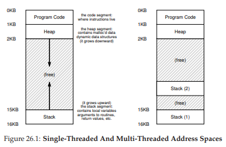
Figure 26.1: Single-Threaded And Multi-Threaded Address Spaces
(Không gian địa chỉ của tiến trình đơn luồng và đa luồng)
Trong hình này, bạn có thể thấy hai stack nằm rải rác trong address space của process. Do đó, bất kỳ biến cấp phát trên stack, tham số, giá trị trả về, và các dữ liệu khác mà ta đặt trên stack sẽ được lưu trong cái gọi là thread-local storage (bộ nhớ cục bộ của luồng), tức là stack của thread tương ứng.
Bạn cũng có thể nhận thấy điều này phá vỡ bố cục address space “đẹp đẽ” trước đây. Trước kia, stack và heap có thể phát triển độc lập và chỉ gặp vấn đề khi hết không gian trong address space. Giờ đây, chúng ta không còn tình huống thuận lợi như vậy. May mắn thay, điều này thường không sao, vì stack thường không cần quá lớn (ngoại lệ là các chương trình sử dụng đệ quy sâu).
26.1 Tại sao sử dụng Thread? (Why Use Threads?)
Trước khi đi sâu vào chi tiết về thread và một số vấn đề có thể gặp khi lập trình đa luồng, hãy trả lời một câu hỏi đơn giản hơn: Tại sao lại dùng thread?
Hóa ra, có ít nhất hai lý do chính để bạn nên dùng thread.
Lý do thứ nhất rất đơn giản: parallelism (tính song song). Hãy tưởng tượng bạn đang viết một chương trình thực hiện các phép toán trên các mảng rất lớn, ví dụ: cộng hai mảng lớn với nhau, hoặc tăng giá trị của mỗi phần tử trong mảng lên một lượng nào đó. Nếu bạn chạy trên một CPU duy nhất, nhiệm vụ khá đơn giản: chỉ cần thực hiện từng phép toán và xong. Tuy nhiên, nếu bạn chạy chương trình trên một hệ thống có nhiều CPU, bạn có khả năng tăng tốc quá trình này đáng kể bằng cách để mỗi CPU thực hiện một phần công việc. Việc biến một chương trình đơn luồng tiêu chuẩn thành một chương trình thực hiện công việc này trên nhiều CPU được gọi là parallelization (song song hóa), và sử dụng một thread cho mỗi CPU để làm việc là cách tự nhiên và phổ biến để tăng tốc chương trình trên phần cứng hiện đại.
Lý do thứ hai tinh tế hơn: tránh chặn tiến trình của chương trình do I/O chậm. Hãy tưởng tượng bạn đang viết một chương trình thực hiện nhiều loại I/O khác nhau: chờ gửi hoặc nhận tin nhắn, chờ một thao tác disk I/O (I/O đĩa) hoàn tất, hoặc thậm chí (ngầm) chờ một page fault được xử lý xong. Thay vì chờ đợi, chương trình của bạn có thể muốn làm việc khác, bao gồm tận dụng CPU để tính toán, hoặc thậm chí gửi thêm yêu cầu I/O khác. Sử dụng thread là cách tự nhiên để tránh bị “mắc kẹt”; khi một thread trong chương trình chờ (tức là bị blocked do I/O), CPU scheduler (bộ lập lịch CPU) có thể chuyển sang các thread khác đang sẵn sàng chạy và làm việc hữu ích. Threading cho phép overlap (chồng lấp) giữa I/O và các hoạt động khác trong cùng một chương trình, tương tự như multiprogramming (đa chương trình) đã làm cho các process giữa các chương trình; kết quả là nhiều ứng dụng server hiện đại (web server, hệ quản trị cơ sở dữ liệu, v.v.) sử dụng thread trong triển khai của chúng.
Tất nhiên, trong cả hai trường hợp trên, bạn có thể dùng nhiều process thay vì thread. Tuy nhiên, thread chia sẻ cùng một address space và do đó dễ dàng chia sẻ dữ liệu, vì vậy là lựa chọn tự nhiên khi xây dựng các loại chương trình này. Process là lựa chọn hợp lý hơn cho các tác vụ tách biệt về mặt logic, nơi ít cần chia sẻ cấu trúc dữ liệu trong bộ nhớ.
26.2 Ví dụ: Tạo Thread (An Example: Thread Creation)
Bây giờ chúng ta đi vào một số chi tiết. Giả sử chúng ta muốn chạy một chương trình tạo ra hai thread (luồng), mỗi thread thực hiện một công việc độc lập, trong trường hợp này là in ra “A” hoặc “B”. Mã nguồn được thể hiện trong Figure 26.2 (trang 4).
 Figure 26.2: Simple Thread Creation Code (t0.c)
Figure 26.2: Simple Thread Creation Code (t0.c)
Chương trình main tạo ra hai thread (gọi là T1 và T2), mỗi thread sẽ chạy hàm mythread(), nhưng với các đối số khác nhau (chuỗi “A” hoặc “B”). Ngay khi một thread được tạo, nó có thể bắt đầu chạy ngay lập tức (tùy thuộc vào quyết định của scheduler — bộ lập lịch); hoặc nó có thể được đưa vào trạng thái “ready” (sẵn sàng) nhưng chưa “running” (đang chạy) và do đó chưa thực thi. Tất nhiên, trên một hệ thống multiprocessor (đa bộ xử lý), các thread thậm chí có thể chạy đồng thời, nhưng tạm thời chúng ta chưa xét đến khả năng này.
Sau khi tạo hai thread, main thread gọi pthread_join(), hàm này sẽ chờ một thread cụ thể hoàn thành. Lệnh này được gọi hai lần, đảm bảo T1 và T2 sẽ chạy và hoàn tất trước khi cho phép main thread chạy tiếp; khi đó, nó sẽ in ra “main: end” và thoát. Tổng cộng, ba thread được sử dụng trong lần chạy này: main thread, T1 và T2.
Hãy xem xét các khả năng sắp xếp thứ tự thực thi của chương trình nhỏ này. Trong sơ đồ thực thi (Figure 26.3, trang 5), thời gian tăng dần theo chiều từ trên xuống, và mỗi cột thể hiện thời điểm một thread khác nhau (main, Thread 1 hoặc Thread 2) đang chạy.
 Figure 26.3: Thread Trace (1)
Figure 26.3: Thread Trace (1)
Tuy nhiên, cần lưu ý rằng thứ tự này không phải là thứ tự duy nhất có thể xảy ra. Thực tế, với một chuỗi lệnh, có khá nhiều khả năng, tùy thuộc vào việc scheduler quyết định chạy thread nào tại một thời điểm nhất định. Ví dụ, ngay khi một thread được tạo, nó có thể chạy ngay lập tức, dẫn đến thứ tự thực thi như trong Figure 26.4 (trang 5).
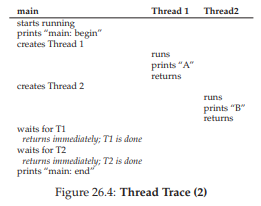 Figure 26.4: Thread Trace (2)
Chúng ta thậm chí có thể thấy “B” được in trước “A”, nếu scheduler quyết định chạy Thread 2 trước, mặc dù Thread 1 được tạo trước; không có lý do gì để giả định rằng thread được tạo trước sẽ chạy trước. Figure 26.5 (trang 6) cho thấy thứ tự thực thi này, với việc Thread 2 chạy trước Thread 1.
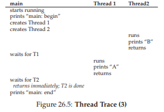 Figure 26.5: Thread Trace (3)
Như bạn có thể thấy, một cách để hình dung việc tạo thread là nó giống như gọi một hàm; tuy nhiên, thay vì thực thi hàm trước rồi mới quay lại hàm gọi, hệ thống sẽ tạo ra một thread of execution (luồng thực thi) mới cho routine được gọi, và nó chạy độc lập với hàm gọi, có thể trước khi create trả về, hoặc có thể muộn hơn nhiều. Thread nào chạy tiếp theo được quyết định bởi OS scheduler, và mặc dù scheduler có thể triển khai một thuật toán hợp lý, nhưng rất khó để biết chính xác thread nào sẽ chạy tại một thời điểm bất kỳ.
Bạn cũng có thể nhận ra từ ví dụ này rằng thread làm mọi thứ trở nên phức tạp: ngay cả việc xác định cái gì sẽ chạy khi nào cũng đã khó! Máy tính vốn đã khó hiểu nếu không có concurrency (tính đồng thời). Đáng tiếc là với concurrency, mọi thứ còn tệ hơn. Nhiều hơn thế nữa.
26.3 Tại sao mọi thứ tệ hơn: Dữ liệu chia sẻ (Why It Gets Worse: Shared Data)
Ví dụ thread đơn giản ở trên hữu ích để minh họa cách tạo thread và cách chúng có thể chạy theo các thứ tự khác nhau tùy vào scheduler. Tuy nhiên, nó chưa cho thấy cách các thread tương tác khi truy cập shared data (dữ liệu chia sẻ).
Hãy tưởng tượng một ví dụ đơn giản, nơi hai thread muốn cập nhật một biến toàn cục dùng chung. Mã nguồn được nghiên cứu nằm trong Figure 26.6 (trang 7).
Figure 26.6: Sharing Data: Uh Oh (t1.c)
Một vài ghi chú về mã nguồn:
- Thứ nhất, như Stevens gợi ý [SR05], chúng ta wrap (bao bọc) các routine tạo và join thread để thoát ngay khi gặp lỗi; với một chương trình đơn giản như thế này, chúng ta ít nhất muốn phát hiện lỗi (nếu có), nhưng không cần xử lý phức tạp (ví dụ: chỉ cần thoát). Do đó,
Pthread_create()chỉ đơn giản gọipthread_create()và đảm bảo mã trả về là 0; nếu không,Pthread_create()sẽ in thông báo và thoát. - Thứ hai, thay vì dùng hai hàm riêng cho các worker thread, chúng ta chỉ dùng một đoạn code và truyền đối số (ở đây là một chuỗi) để mỗi thread in ra một ký tự khác nhau trước thông điệp của nó.
- Cuối cùng, và quan trọng nhất, chúng ta xem mỗi worker đang làm gì: cộng một số vào biến chia sẻ
counter, và làm điều đó 10 triệu lần (1e7) trong vòng lặp. Kết quả mong muốn: 20.000.000.
Bây giờ, chúng ta biên dịch và chạy chương trình để xem hành vi:
Trường hợp mọi thứ diễn ra như mong đợi:
prompt> gcc -o main main.c -Wall -pthread; ./main
main: begin (counter = 0)
A: begin
B: begin
A: done
B: done
main: done with both (counter = 20000000)
Đáng tiếc, khi chạy chương trình này, ngay cả trên một CPU đơn, chúng ta không nhất thiết nhận được kết quả mong muốn. Đôi khi, kết quả là:
prompt> ./main
main: begin (counter = 0)
A: begin
B: begin
A: done
B: done
main: done with both (counter = 19345221)
Thử lại một lần nữa, chỉ để chắc rằng chúng ta không bị “ảo giác”. Rốt cuộc, chẳng phải máy tính được dạy là phải cho kết quả deterministic (xác định) sao?! Hay các giáo sư đã lừa chúng ta? (há hốc mồm)
prompt> ./main
main: begin (counter = 0)
A: begin
B: begin
A: done
B: done
main: done with both (counter = 19221041)
Không chỉ mỗi lần chạy đều sai, mà kết quả còn khác nhau! Câu hỏi lớn còn lại: Tại sao điều này xảy ra?
TIP: KNOW AND USE YOUR TOOLS
(Biết và sử dụng thành thạo công cụ của bạn)
Bạn nên luôn học các công cụ mới giúp viết, gỡ lỗi và hiểu hệ thống máy tính. Ở đây, chúng ta sử dụng một công cụ hữu ích gọi là disassembler (trình dịch ngược mã máy sang assembly). Khi bạn chạy một disassembler trên một tệp thực thi (executable), nó sẽ hiển thị các lệnh assembly tạo nên chương trình. Ví dụ, nếu chúng ta muốn hiểu đoạn code cấp thấp dùng để cập nhật biếncounter(như trong ví dụ), ta chạyobjdump(trên Linux) để xem mã assembly:prompt> objdump -d mainThao tác này sẽ tạo ra một danh sách dài tất cả các lệnh trong chương trình, được gắn nhãn rõ ràng (đặc biệt nếu bạn biên dịch với cờ
-g), bao gồm cả thông tin symbol (ký hiệu) trong chương trình. Chương trìnhobjdumpchỉ là một trong nhiều công cụ bạn nên học cách sử dụng; một debugger nhưgdb, các memory profiler nhưvalgrindhoặcpurify, và tất nhiên là cả trình biên dịch (compiler) cũng là những công cụ khác mà bạn nên dành thời gian tìm hiểu thêm; bạn càng thành thạo công cụ, bạn càng có thể xây dựng được những hệ thống tốt hơn.
26.4 Trọng tâm của vấn đề: Lập lịch không kiểm soát (The Heart Of The Problem: Uncontrolled Scheduling)
Để hiểu tại sao điều này xảy ra, chúng ta phải hiểu chuỗi lệnh mà compiler (trình biên dịch) sinh ra để cập nhật counter. Trong trường hợp này, chúng ta chỉ muốn cộng thêm một số (1) vào counter. Do đó, chuỗi lệnh để thực hiện có thể trông như sau (trên kiến trúc x86):
mov 0x8049a1c, %eax
add $0x1, %eax
mov %eax, 0x8049a1c
Ví dụ này giả định rằng biến counter nằm tại địa chỉ 0x8049a1c. Trong chuỗi ba lệnh này:
- Lệnh
movcủa x86 được dùng trước tiên để lấy giá trị từ bộ nhớ tại địa chỉ đó và đưa vào thanh ghieax. - Sau đó, lệnh
addđược thực hiện, cộng 1 (0x1) vào nội dung của thanh ghieax. - Cuối cùng, nội dung của
eaxđược lưu trở lại bộ nhớ tại cùng địa chỉ.
Hãy tưởng tượng một trong hai thread (Thread 1) đi vào đoạn code này, và chuẩn bị tăng counter lên một. Nó nạp giá trị của counter (giả sử ban đầu là 50) vào thanh ghi eax. Do đó, eax = 50 đối với Thread 1. Sau đó, nó cộng thêm 1 vào thanh ghi; do đó eax = 51.
Bây giờ, một điều không may xảy ra: một timer interrupt (ngắt định thời) được kích hoạt; do đó, OS lưu trạng thái của thread đang chạy (PC, các thanh ghi bao gồm eax, v.v.) vào TCB (thread control block) của thread đó.
Tiếp theo, một điều tệ hơn xảy ra: Thread 2 được chọn để chạy, và nó cũng đi vào cùng đoạn code này. Nó cũng thực hiện lệnh đầu tiên, lấy giá trị của counter và đưa vào eax của nó (lưu ý: mỗi thread khi chạy có tập thanh ghi riêng; các thanh ghi này được “ảo hóa” bởi mã context switch lưu và khôi phục chúng). Giá trị của counter lúc này vẫn là 50, do đó Thread 2 có eax = 50. Giả sử Thread 2 thực hiện hai lệnh tiếp theo, tăng eax lên 1 (eax = 51), rồi lưu nội dung của eax vào counter (địa chỉ 0x8049a1c). Như vậy, biến toàn cục counter giờ có giá trị 51.
Cuối cùng, một context switch khác xảy ra, và Thread 1 tiếp tục chạy. Nhớ rằng nó vừa thực hiện xong lệnh mov và add, và giờ chuẩn bị thực hiện lệnh mov cuối cùng. Cũng nhớ rằng eax = 51. Do đó, lệnh mov cuối cùng được thực thi, lưu giá trị vào bộ nhớ; counter được đặt thành 51 một lần nữa.
Nói ngắn gọn, điều đã xảy ra là: đoạn code tăng counter đã được chạy hai lần, nhưng counter, vốn bắt đầu ở 50, giờ chỉ bằng 51. Một phiên bản “đúng” của chương trình này lẽ ra phải khiến counter bằng 52.
Hãy xem một execution trace (vết thực thi) chi tiết để hiểu rõ hơn vấn đề. Giả sử, trong ví dụ này, đoạn code trên được nạp tại địa chỉ 100 trong bộ nhớ, như chuỗi sau (lưu ý cho những ai quen với các tập lệnh dạng RISC: x86 có lệnh độ dài biến đổi; lệnh mov này chiếm 5 byte bộ nhớ, và lệnh add chỉ chiếm 3 byte):
100 mov 0x8049a1c, %eax
105 add $0x1, %eax
108 mov %eax, 0x8049a1c
Figure 26.7: The Problem: Up Close and Personal
(Vấn đề: Cận cảnh và chi tiết)
Với các giả định này, những gì xảy ra được minh họa trong Hình 26.7 (trang 10). Giả sử biến counter bắt đầu với giá trị 50, và hãy lần theo ví dụ này để đảm bảo bạn hiểu điều gì đang diễn ra.
Những gì chúng ta vừa minh họa được gọi là race condition (điều kiện tranh chấp) — cụ thể hơn là data race (tranh chấp dữ liệu): kết quả phụ thuộc vào thời điểm thực thi của đoạn code. Với một chút “xui xẻo” (tức là context switch xảy ra tại những điểm không thuận lợi trong quá trình thực thi), chúng ta sẽ nhận kết quả sai. Thực tế, mỗi lần chạy có thể cho ra kết quả khác nhau; do đó, thay vì một phép tính deterministic (xác định) như chúng ta thường mong đợi từ máy tính, ta gọi kết quả này là indeterminate (không xác định), tức là không biết trước đầu ra sẽ là gì và rất có thể sẽ khác nhau giữa các lần chạy.
Bởi vì nhiều thread cùng thực thi đoạn code này có thể dẫn đến race condition, chúng ta gọi đoạn code này là một critical section (vùng tới hạn). Critical section là một đoạn code truy cập một biến chia sẻ (hoặc nói chung hơn là một tài nguyên chia sẻ) và không được phép thực thi đồng thời bởi nhiều hơn một thread.
Điều chúng ta thực sự muốn cho đoạn code này là mutual exclusion (loại trừ lẫn nhau). Tính chất này đảm bảo rằng nếu một thread đang thực thi bên trong critical section, các thread khác sẽ bị ngăn không cho làm điều đó.
Hầu như tất cả các thuật ngữ này, nhân tiện, đều được đặt ra bởi Edsger Dijkstra, một nhà tiên phong trong lĩnh vực này và đã giành giải Turing Award nhờ công trình này và các công trình khác; hãy xem bài báo năm 1968 của ông “Cooperating Sequential Processes” [D68] để có một mô tả cực kỳ rõ ràng về vấn đề. Chúng ta sẽ còn nhắc đến Dijkstra nhiều hơn trong phần này của sách.
TIP: USE ATOMIC OPERATIONS
(Sử dụng các thao tác nguyên tử)
Atomic operations (các thao tác nguyên tử) là một trong những kỹ thuật nền tảng mạnh mẽ nhất trong việc xây dựng hệ thống máy tính, từ computer architecture (kiến trúc máy tính), đến concurrent code (mã đồng thời — như chúng ta đang học ở đây), đến file system (hệ thống tệp — mà chúng ta sẽ học sớm thôi), database management system (hệ quản trị cơ sở dữ liệu), và thậm chí cả distributed system (hệ thống phân tán) [L+93].Ý tưởng đằng sau việc biến một chuỗi hành động thành nguyên tử có thể được diễn đạt đơn giản bằng cụm “tất cả hoặc không gì cả” (all or nothing); nghĩa là hoặc tất cả các hành động bạn muốn nhóm lại đều xảy ra, hoặc không hành động nào xảy ra, và không tồn tại trạng thái trung gian có thể nhìn thấy. Đôi khi, việc nhóm nhiều hành động thành một hành động nguyên tử duy nhất được gọi là transaction (giao dịch), một khái niệm được phát triển rất chi tiết trong lĩnh vực cơ sở dữ liệu và xử lý giao dịch [GR92].
Trong chủ đề nghiên cứu concurrency (tính đồng thời) của chúng ta, chúng ta sẽ sử dụng các synchronization primitive (nguyên thủy đồng bộ hóa) để biến các chuỗi lệnh ngắn thành các atomic block (khối nguyên tử) khi thực thi, nhưng ý tưởng về tính nguyên tử còn rộng hơn nhiều, như chúng ta sẽ thấy. Ví dụ, file system sử dụng các kỹ thuật như journaling hoặc copy-on-write để chuyển đổi trạng thái trên đĩa một cách nguyên tử, điều này rất quan trọng để hệ thống hoạt động đúng khi gặp sự cố. Nếu điều này chưa rõ ràng, đừng lo — bạn sẽ hiểu ở các chương sau.
26.5 Mong muốn về tính nguyên tử (The Wish For Atomicity)
Một cách để giải quyết vấn đề này là có những lệnh mạnh mẽ hơn, có thể trong một bước duy nhất thực hiện chính xác những gì chúng ta cần và loại bỏ khả năng bị ngắt tại thời điểm không thích hợp. Ví dụ, giả sử chúng ta có một super instruction (siêu lệnh) như sau:
memory-add 0x8049a1c, $0x1
Giả sử lệnh này cộng một giá trị vào một vị trí bộ nhớ, và phần cứng đảm bảo rằng nó được thực thi atomically (nguyên tử); khi lệnh được thực thi, nó sẽ thực hiện cập nhật như mong muốn. Nó không thể bị ngắt giữa chừng, bởi vì đó chính là đảm bảo mà phần cứng cung cấp: khi một ngắt xảy ra, hoặc lệnh chưa chạy chút nào, hoặc nó đã chạy xong hoàn toàn; không tồn tại trạng thái trung gian. Phần cứng thật tuyệt vời, đúng không?
Atomically trong ngữ cảnh này nghĩa là “như một đơn vị” (as a unit), đôi khi được hiểu là “tất cả hoặc không gì cả” (all or none). Điều chúng ta muốn là thực thi nguyên tử chuỗi ba lệnh sau:
mov 0x8049a1c, %eax
add $0x1, %eax
mov %eax, 0x8049a1c
Như đã nói, nếu chúng ta có một lệnh duy nhất để làm điều này, ta chỉ cần phát lệnh đó và xong. Nhưng trong trường hợp tổng quát, chúng ta sẽ không có một lệnh như vậy. Hãy tưởng tượng chúng ta đang xây dựng một concurrent B-tree (cây B đồng thời) và muốn cập nhật nó; liệu chúng ta có thực sự muốn phần cứng hỗ trợ một lệnh “atomic update of B-tree” (cập nhật nguyên tử cây B) không? Có lẽ là không, ít nhất là trong một instruction set (tập lệnh) hợp lý.
Do đó, thay vào đó, chúng ta sẽ yêu cầu phần cứng cung cấp một vài lệnh hữu ích mà trên đó chúng ta có thể xây dựng một tập hợp tổng quát các synchronization primitive. Bằng cách sử dụng hỗ trợ phần cứng này, kết hợp với sự hỗ trợ từ hệ điều hành, chúng ta sẽ có thể xây dựng mã đa luồng truy cập các critical section một cách đồng bộ và có kiểm soát, từ đó tạo ra kết quả đúng một cách đáng tin cậy bất chấp bản chất đầy thách thức của thực thi đồng thời. Thật tuyệt vời, đúng không? Đây chính là vấn đề mà chúng ta sẽ nghiên cứu trong phần này của sách. Đây là một vấn đề vừa thú vị vừa khó, và sẽ khiến bạn “đau đầu” (một chút). Nếu không thấy “đau đầu”, nghĩa là bạn chưa hiểu! Hãy tiếp tục làm việc cho đến khi đầu bạn “đau”; khi đó, bạn biết mình đang đi đúng hướng. Và lúc đó, hãy nghỉ ngơi; chúng ta không muốn bạn đau đầu quá mức.
THE CRUX: HOW TO SUPPORT SYNCHRONIZATION
(Vấn đề cốt lõi: Làm thế nào để hỗ trợ đồng bộ hóa)
Chúng ta cần sự hỗ trợ gì từ hardware (phần cứng) để xây dựng các synchronization primitive (nguyên thủy đồng bộ hóa) hữu ích? Chúng ta cần sự hỗ trợ gì từ OS (hệ điều hành)? Làm thế nào để xây dựng các primitive này một cách đúng đắn và hiệu quả? Các chương trình có thể sử dụng chúng như thế nào để đạt được kết quả mong muốn?
26.6 Một vấn đề khác: Chờ đợi luồng khác (One More Problem: Waiting For Another)
Chương này đã thiết lập vấn đề concurrency (tính đồng thời) như thể chỉ có một loại tương tác xảy ra giữa các thread (luồng): đó là truy cập các biến chia sẻ và nhu cầu hỗ trợ atomicity (tính nguyên tử) cho các critical section (vùng tới hạn). Tuy nhiên, thực tế còn có một dạng tương tác phổ biến khác, khi một thread phải chờ một thread khác hoàn thành một hành động nào đó trước khi nó có thể tiếp tục.
Tương tác này xuất hiện, ví dụ, khi một process (tiến trình) thực hiện một thao tác disk I/O (I/O đĩa) và bị đưa vào trạng thái ngủ (sleep); khi I/O hoàn tất, process cần được đánh thức (wake up) để có thể tiếp tục.
Do đó, trong các chương tiếp theo, chúng ta sẽ không chỉ nghiên cứu cách xây dựng hỗ trợ cho synchronization primitive để đảm bảo atomicity, mà còn cả các cơ chế hỗ trợ dạng tương tác sleeping/waking (ngủ/thức) này — vốn rất phổ biến trong các chương trình đa luồng. Nếu hiện tại điều này chưa rõ ràng, cũng không sao! Bạn sẽ hiểu ngay khi đọc chương về condition variable (biến điều kiện). Nếu đến lúc đó vẫn chưa hiểu, thì… không ổn lắm, và bạn nên đọc lại chương đó (và đọc lại nhiều lần) cho đến khi hiểu.
ASIDE: KEY CONCURRENCY TERMS
(Các thuật ngữ then chốt về tính đồng thời)
CRITICAL SECTION, RACE CONDITION, INDETERMINATE, MUTUAL EXCLUSIONBốn thuật ngữ này quan trọng đến mức chúng tôi muốn nêu rõ chúng ở đây. Xem một số công trình ban đầu của Dijkstra [D65, D68] để biết thêm chi tiết.
- Critical section: một đoạn code truy cập một tài nguyên chia sẻ, thường là một biến hoặc cấu trúc dữ liệu.
- Race condition (hay data race [NM92]): xảy ra nếu nhiều thread cùng đi vào critical section gần như cùng lúc; cả hai đều cố gắng cập nhật cấu trúc dữ liệu chia sẻ, dẫn đến kết quả bất ngờ (và có thể không mong muốn).
- Indeterminate program: chương trình chứa một hoặc nhiều race condition; đầu ra của chương trình thay đổi giữa các lần chạy, tùy thuộc vào thread nào chạy khi nào. Kết quả vì thế không deterministic (xác định), điều mà chúng ta thường kỳ vọng ở hệ thống máy tính.
- Để tránh các vấn đề này, thread nên sử dụng một dạng mutual exclusion primitive; điều này đảm bảo rằng chỉ một thread duy nhất được vào critical section tại một thời điểm, tránh race condition và tạo ra kết quả xác định.
26.7 Tóm tắt: Tại sao học trong môn Hệ điều hành? (Summary: Why in OS Class?)
Trước khi kết thúc, có thể bạn sẽ hỏi: tại sao chúng ta lại học nội dung này trong môn Hệ điều hành? Câu trả lời ngắn gọn: “History” (lịch sử); OS là chương trình đồng thời đầu tiên, và nhiều kỹ thuật đã được tạo ra để sử dụng bên trong OS. Sau này, với sự xuất hiện của multi-threaded process (tiến trình đa luồng), lập trình viên ứng dụng cũng phải quan tâm đến những vấn đề này.
Ví dụ, hãy tưởng tượng trường hợp có hai process đang chạy. Giả sử cả hai đều gọi write() để ghi vào một tệp, và cả hai đều muốn append (nối thêm) dữ liệu vào tệp (tức là thêm dữ liệu vào cuối tệp, làm tăng kích thước của nó). Để làm được điều đó, cả hai phải:
- Cấp phát một block mới
- Ghi vào inode của tệp vị trí block này
- Thay đổi kích thước tệp để phản ánh kích thước mới lớn hơn
(và một số thao tác khác; chúng ta sẽ tìm hiểu thêm về tệp trong phần ba của sách).
Vì interrupt (ngắt) có thể xảy ra bất kỳ lúc nào, đoạn code cập nhật các cấu trúc chia sẻ này (ví dụ: bitmap cho việc cấp phát, hoặc inode của tệp) là critical section; do đó, các nhà thiết kế OS, ngay từ khi khái niệm interrupt được giới thiệu, đã phải lo lắng về cách OS cập nhật các cấu trúc nội bộ. Một interrupt xảy ra không đúng lúc sẽ gây ra tất cả các vấn đề đã mô tả ở trên.
Không có gì ngạc nhiên khi page table, process list, cấu trúc của file system, và hầu như mọi kernel data structure (cấu trúc dữ liệu của nhân) đều phải được truy cập một cách cẩn thận, với các synchronization primitive phù hợp, để hoạt động chính xác.
27 Phần xen kẽ: Thread API (Interlude: Thread API)
Chương này trình bày ngắn gọn các phần chính của thread API (giao diện lập trình ứng dụng cho luồng). Mỗi phần sẽ được giải thích chi tiết hơn trong các chương tiếp theo, khi chúng ta minh họa cách sử dụng API. Thông tin chi tiết hơn có thể tìm thấy trong nhiều sách và nguồn trực tuyến [B89, B97, B+96, K+96]. Cần lưu ý rằng các chương tiếp theo sẽ giới thiệu các khái niệm về lock (khóa) và condition variable (biến điều kiện) một cách chậm rãi hơn, kèm nhiều ví dụ; do đó, chương này phù hợp hơn để dùng như tài liệu tham khảo.
CRUX: HOW TO CREATE AND CONTROL THREADS
(Vấn đề cốt lõi: Làm thế nào để tạo và điều khiển thread)
OS nên cung cấp những interface (giao diện) nào để tạo và điều khiển thread? Các interface này nên được thiết kế như thế nào để vừa dễ sử dụng vừa hữu ích?
27.1 Thread Creation (Tạo thread)
Điều đầu tiên bạn cần làm để viết một chương trình multi-threaded (đa luồng) là tạo ra các thread mới, và do đó phải tồn tại một thread creation interface (giao diện tạo luồng). Trong POSIX, điều này khá đơn giản:
#include <pthread.h>
int pthread_create(pthread_t *thread,
const pthread_attr_t *attr,
void *(*start_routine)(void*),
void *arg);
Khai báo này có thể trông hơi phức tạp (đặc biệt nếu bạn chưa từng dùng function pointer — con trỏ hàm — trong C), nhưng thực tế không quá khó. Có bốn tham số: thread, attr, start_routine, và arg.
-
Tham số thứ nhất,
thread, là một con trỏ tới cấu trúc kiểupthread_t; chúng ta sẽ dùng cấu trúc này để tương tác với thread, và do đó cần truyền nó vàopthread_create()để khởi tạo. -
Tham số thứ hai,
attr, được dùng để chỉ định các attribute (thuộc tính) mà thread này có thể có. Ví dụ: thiết lập kích thước stack hoặc thông tin về scheduling priority (độ ưu tiên lập lịch) của thread. Một attribute được khởi tạo bằng một call riêng tớipthread_attr_init(); xem trang manual để biết chi tiết. Tuy nhiên, trong hầu hết các trường hợp, giá trị mặc định là đủ; trong trường hợp này, chúng ta chỉ cần truyền giá trịNULL. -
Tham số thứ ba là phức tạp nhất, nhưng thực chất chỉ là câu hỏi: thread này sẽ bắt đầu chạy ở hàm nào? Trong C, đây là một function pointer, và ở đây nó cho biết điều sau: một tên hàm (
start_routine), hàm này nhận một đối số duy nhất kiểuvoid *(như được chỉ ra trong dấu ngoặc đơn saustart_routine), và trả về một giá trị kiểuvoid *(tức là một con trỏ void).
Nếu routine này thay vào đó yêu cầu một đối số kiểu integer thay vì void pointer, khai báo sẽ trông như sau:
int pthread_create(..., // hai tham số đầu giống nhau
void *(*start_routine)(int),
int arg);
Nếu routine nhận một void pointer làm đối số, nhưng trả về một integer, nó sẽ trông như sau:
int pthread_create(..., // hai tham số đầu giống nhau
int (*start_routine)(void *),
void *arg);
- Cuối cùng, tham số thứ tư,
arg, chính là đối số sẽ được truyền vào hàm nơi thread bắt đầu thực thi. Bạn có thể hỏi: tại sao chúng ta cần các void pointer này? Câu trả lời khá đơn giản: việc có một void pointer làm đối số của hàmstart_routinecho phép chúng ta truyền vào bất kỳ kiểu dữ liệu nào; việc có nó làm giá trị trả về cho phép thread trả về bất kỳ kiểu kết quả nào.
Hãy xem một ví dụ trong Hình 27.1. Ở đây, chúng ta chỉ tạo một thread được truyền hai đối số, được đóng gói vào một kiểu dữ liệu do chúng ta tự định nghĩa (myarg_t). Thread, khi được tạo, có thể đơn giản cast (ép kiểu) đối số của nó sang kiểu mong đợi và giải nén các đối số theo ý muốn.

Hình 27.1: Tạo một Thread
Và đó là nó! Khi bạn tạo một thread, bạn thực sự đã có thêm một thực thể đang thực thi độc lập, với call stack (ngăn xếp call hàm) riêng của nó, chạy trong cùng address space (không gian địa chỉ) với tất cả các thread hiện có trong chương trình. Và từ đây, “cuộc vui” bắt đầu!
27.2 Hoàn thành Thread (Thread Completion)
Ví dụ ở trên cho thấy cách tạo một thread. Tuy nhiên, điều gì sẽ xảy ra nếu bạn muốn chờ một thread hoàn thành? Bạn cần làm một việc đặc biệt để chờ hoàn tất; cụ thể, bạn phải gọi hàm pthread_join().
int pthread_join(pthread_t thread, void **value_ptr);
Hàm này nhận hai tham số:
-
Tham số thứ nhất có kiểu
pthread_t, được dùng để chỉ định thread mà bạn muốn chờ. Biến này được khởi tạo bởi hàm tạo thread (khi bạn truyền con trỏ tới nó làm đối số chopthread_create()); nếu bạn giữ lại biến này, bạn có thể dùng nó để chờ thread đó kết thúc. -
Tham số thứ hai là một con trỏ tới giá trị trả về mà bạn muốn nhận lại. Vì hàm này có thể trả về bất kỳ thứ gì, nó được định nghĩa để trả về một con trỏ kiểu
void; và vìpthread_join()sẽ thay đổi giá trị của đối số được truyền vào, bạn cần truyền vào con trỏ tới giá trị đó, chứ không chỉ giá trị.
Hãy xem một ví dụ khác (Hình 27.2, trang 4). Trong đoạn code này, một thread được tạo, và được truyền một vài đối số thông qua cấu trúc myarg_t. Để trả về giá trị, kiểu myret_t được sử dụng. Khi thread kết thúc, main thread, vốn đang chờ bên trong pthread_join()1, sẽ tiếp tục chạy, và chúng ta có thể truy cập các giá trị trả về từ thread, cụ thể là những gì nằm trong myret_t.
typedef struct { int a; int b; } myarg_t;
typedef struct { int x; int y; } myret_t;
void *mythread(void *arg) {
myret_t *rvals = Malloc(sizeof(myret_t));
rvals->x = 1;
rvals->y = 2;
return (void *) rvals;
}
int main(int argc, char *argv[]) {
pthread_t p;
myret_t *rvals;
myarg_t args = { 10, 20 };
Pthread_create(&p, NULL, mythread, &args);
Pthread_join(p, (void **) &rvals);
printf("returned %d %d\n", rvals->x, rvals->y);
free(rvals);
return 0;
}

Hình 27.2: Chờ Thread hoàn thành
Một vài điểm cần lưu ý về ví dụ này:
- Thứ nhất, nhiều khi chúng ta không cần phải đóng gói và giải nén đối số phức tạp như vậy. Ví dụ, nếu chỉ tạo một thread không có đối số, ta có thể truyền
NULLkhi tạo thread. Tương tự, ta có thể truyềnNULLvàopthread_join()nếu không quan tâm đến giá trị trả về.
Lưu ý rằng chúng ta sử dụng wrapper function ở đây; cụ thể, chúng ta gọi Malloc(), Pthread_join(), và Pthread_create(), vốn chỉ gọi các phiên bản chữ thường tương ứng và đảm bảo các hàm này không trả về giá trị bất thường.
- Thứ hai, nếu chỉ truyền một giá trị duy nhất (ví dụ: một
long long int), ta không cần đóng gói nó thành cấu trúc. Hình 27.3 (trang 5) cho thấy ví dụ. Trong trường hợp này, mọi thứ đơn giản hơn, vì ta không cần đóng gói đối số và giá trị trả về vào cấu trúc.
void *mythread(void *arg) {
long long int value = (long long int) arg;
printf("%lld\n", value);
return (void *) (value + 1);
}
int main(int argc, char *argv[]) {
pthread_t p;
long long int rvalue;
Pthread_create(&p, NULL, mythread, (void *) 100);
Pthread_join(p, (void **) &rvalue);
printf("returned %lld\n", rvalue);
return 0;
}

Hình 27.3: Truyền đối số đơn giản hơn cho Thread
- Thứ ba, cần cực kỳ cẩn thận với cách trả về giá trị từ một thread. Cụ thể, không bao giờ trả về một con trỏ trỏ tới vùng nhớ được cấp phát trên call stack của thread. Nếu làm vậy, điều gì sẽ xảy ra? (hãy suy nghĩ!). Đây là một ví dụ nguy hiểm, được sửa đổi từ ví dụ trong Hình 27.2:
void *mythread(void *arg) {
myarg_t *args = (myarg_t *) arg;
printf("%d %d\n", args->a, args->b);
myret_t oops; // ALLOCATED ON STACK: BAD!
oops.x = 1;
oops.y = 2;
return (void *) &oops;
}
Trong trường hợp này, biến oops được cấp phát trên stack của mythread. Tuy nhiên, khi hàm trả về, giá trị này sẽ bị tự động giải phóng (đó là lý do stack dễ sử dụng!), và việc trả về một con trỏ trỏ tới biến đã bị giải phóng sẽ dẫn đến nhiều hậu quả xấu. Khi in ra giá trị mà bạn nghĩ là đã trả về, bạn có thể (nhưng không chắc chắn) sẽ bất ngờ. Hãy thử và tự kiểm chứng2!
- Cuối cùng, bạn có thể nhận thấy việc dùng
pthread_create()để tạo một thread, rồi ngay lập tức gọipthread_join()là một cách khá kỳ lạ để tạo thread. Thực tế, có một cách dễ hơn để làm đúng việc này: gọi hàm trực tiếp. Rõ ràng, chúng ta thường sẽ tạo nhiều hơn một thread và chờ chúng hoàn thành, nếu không thì việc dùng thread cũng chẳng có nhiều ý nghĩa.
Cũng cần lưu ý rằng không phải mọi chương trình đa luồng đều sử dụng hàm join. Ví dụ, một multi-threaded web server có thể tạo nhiều worker thread và dùng main thread để nhận yêu cầu và phân phát cho các worker, chạy vô thời hạn. Những chương trình chạy lâu như vậy có thể không cần join. Tuy nhiên, một chương trình song song tạo thread để thực hiện một tác vụ cụ thể (theo kiểu song song) thường sẽ dùng join để đảm bảo tất cả công việc hoàn tất trước khi thoát hoặc chuyển sang giai đoạn tính toán tiếp theo.
May mắn là trình biên dịch gcc thường sẽ cảnh báo khi bạn viết code như thế này, và đó là một lý do nữa để chú ý đến cảnh báo của trình biên dịch.
27.3 Locks (Khóa)
Bên cạnh việc tạo và join thread, có lẽ nhóm hàm hữu ích tiếp theo mà thư viện POSIX threads cung cấp là các hàm hỗ trợ mutual exclusion (loại trừ lẫn nhau) cho critical section (vùng tới hạn) thông qua lock (khóa). Cặp hàm cơ bản nhất để sử dụng cho mục đích này được định nghĩa như sau:
int pthread_mutex_lock(pthread_mutex_t *mutex);
int pthread_mutex_unlock(pthread_mutex_t *mutex);
Các hàm này khá dễ hiểu và sử dụng. Khi bạn có một đoạn code là critical section, và do đó cần được bảo vệ để đảm bảo hoạt động đúng, lock là công cụ rất hữu ích. Bạn có thể hình dung đoạn code như sau:
pthread_mutex_t lock;
pthread_mutex_lock(&lock);
x = x + 1; // hoặc bất kỳ đoạn code nào thuộc critical section
pthread_mutex_unlock(&lock);
Ý tưởng của đoạn code này như sau: nếu không có thread nào khác đang giữ lock khi pthread_mutex_lock() được gọi, thread sẽ acquire (giành) được lock và đi vào critical section. Nếu một thread khác đang giữ lock, thread đang cố lấy lock sẽ không trả về từ call hàm cho đến khi nó giành được lock (ngụ ý rằng thread đang giữ lock đã release nó thông qua call unlock). Tất nhiên, có thể có nhiều thread bị kẹt chờ bên trong hàm lấy lock tại cùng một thời điểm; tuy nhiên, chỉ thread đang giữ lock mới được phép gọi unlock.
Đáng tiếc, đoạn code trên bị lỗi ở hai điểm quan trọng.
Vấn đề thứ nhất là không khởi tạo đúng cách. Tất cả các lock phải được khởi tạo đúng để đảm bảo chúng có giá trị ban đầu chính xác và hoạt động như mong muốn khi gọi lock và unlock.
Với POSIX threads, có hai cách để khởi tạo lock:
- Cách 1: Sử dụng hằng
PTHREAD_MUTEX_INITIALIZER, như sau:
pthread_mutex_t lock = PTHREAD_MUTEX_INITIALIZER;
Cách này sẽ đặt lock về giá trị mặc định và làm cho lock có thể sử dụng được.
- Cách 2: Khởi tạo động (tức là tại run time) bằng cách gọi
pthread_mutex_init(), như sau:
int rc = pthread_mutex_init(&lock, NULL);
assert(rc == 0); // luôn kiểm tra thành công!
Tham số thứ nhất của hàm này là địa chỉ của lock, tham số thứ hai là một tập attribute (thuộc tính) tùy chọn. Bạn có thể tự tìm hiểu thêm về các thuộc tính này; truyền NULL sẽ dùng giá trị mặc định. Cả hai cách đều hoạt động, nhưng thông thường chúng ta dùng cách khởi tạo động (cách thứ hai). Lưu ý rằng khi không còn dùng lock, bạn nên gọi hàm pthread_mutex_destroy() để giải phóng; xem trang manual để biết chi tiết.
Vấn đề thứ hai là không kiểm tra mã lỗi khi gọi lock và unlock. Giống như hầu hết các hàm thư viện trong hệ thống UNIX, các hàm này có thể thất bại! Nếu code của bạn không kiểm tra mã lỗi, lỗi sẽ xảy ra một cách âm thầm, và trong trường hợp này có thể cho phép nhiều thread cùng vào critical section. Tối thiểu, hãy dùng wrapper để đảm bảo hàm thực thi thành công, như minh họa trong Hình 27.4 (trang 7); các chương trình phức tạp hơn (không phải chương trình minh họa đơn giản) — vốn không thể chỉ đơn giản thoát khi có lỗi — nên kiểm tra thất bại và xử lý phù hợp khi call không thành công.
// Giữ code gọn gàng; chỉ dùng nếu exit() là chấp nhận được khi lỗi
void Pthread_mutex_lock(pthread_mutex_t *mutex) {
int rc = pthread_mutex_lock(mutex);
assert(rc == 0);
}
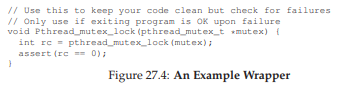
Hình 27.4: Ví dụ về Wrapper
Các hàm lock và unlock không phải là những hàm duy nhất trong thư viện pthreads tương tác với lock. Còn hai hàm khác cũng đáng chú ý:
int pthread_mutex_trylock(pthread_mutex_t *mutex);
int pthread_mutex_timedlock(pthread_mutex_t *mutex,
struct timespec *abs_timeout);
Hai call này được dùng để acquire lock (lấy khóa):
- Phiên bản
trylocksẽ trả về lỗi nếu lock đang được giữ. - Phiên bản
timedlocksẽ trả về sau khi hết thời gian chờ (timeout) hoặc sau khi lấy được lock, tùy điều kiện nào xảy ra trước. Do đó,timedlockvới thời gian chờ bằng 0 sẽ tương đương vớitrylock.
Cả hai phiên bản này nhìn chung nên tránh sử dụng; tuy nhiên, vẫn có một số trường hợp việc tránh bị kẹt (có thể là vô thời hạn) trong hàm lấy lock là hữu ích, như chúng ta sẽ thấy trong các chương sau (ví dụ: khi nghiên cứu deadlock — bế tắc).
27.4 Condition Variables (Biến điều kiện)
Thành phần quan trọng khác của bất kỳ thư viện thread (luồng) nào, và chắc chắn đúng với POSIX threads, là condition variable (biến điều kiện). Condition variable hữu ích khi cần thực hiện một dạng signaling (báo hiệu) giữa các thread, trong trường hợp một thread phải chờ thread khác làm xong một việc nào đó trước khi nó có thể tiếp tục. Hai hàm chính được các chương trình sử dụng khi muốn tương tác theo cách này là:
int pthread_cond_wait(pthread_cond_t *cond,
pthread_mutex_t *mutex);
int pthread_cond_signal(pthread_cond_t *cond);
Để sử dụng condition variable, ta cần có thêm một lock (khóa) được liên kết với biến điều kiện này. Khi gọi một trong hai hàm trên, lock này phải đang được giữ.
Hàm đầu tiên, pthread_cond_wait(), sẽ đưa calling thread (thread gọi hàm) vào trạng thái ngủ (sleep), và chờ cho đến khi một thread khác signal (báo hiệu) nó, thường là khi có điều gì đó trong chương trình thay đổi mà thread đang ngủ quan tâm. Một ví dụ sử dụng điển hình như sau:
pthread_mutex_t lock = PTHREAD_MUTEX_INITIALIZER;
pthread_cond_t cond = PTHREAD_COND_INITIALIZER;
Pthread_mutex_lock(&lock);
while (ready == 0)
Pthread_cond_wait(&cond, &lock);
Pthread_mutex_unlock(&lock);
Trong đoạn code này, sau khi khởi tạo lock và condition liên quan3, một thread sẽ kiểm tra xem biến ready đã được đặt thành giá trị khác 0 hay chưa. Nếu chưa, thread sẽ gọi hàm wait để ngủ cho đến khi một thread khác đánh thức nó.
Code để đánh thức một thread, chạy trong một thread khác, sẽ như sau:
Pthread_mutex_lock(&lock);
ready = 1;
Pthread_cond_signal(&cond);
Pthread_mutex_unlock(&lock);
Một vài điểm cần lưu ý về trình tự code này:
-
Thứ nhất, khi signal (báo hiệu) — cũng như khi thay đổi biến toàn cục
ready— ta luôn đảm bảo lock đang được giữ. Điều này giúp tránh vô tình tạo ra race condition (điều kiện tranh chấp) trong code. -
Thứ hai, bạn có thể nhận thấy rằng hàm
waitnhận lock làm tham số thứ hai, trong khi hàmsignalchỉ nhận condition. Lý do cho sự khác biệt này là: hàmwait, ngoài việc đưa thread gọi vào trạng thái ngủ, còn release (nhả) lock khi đưa thread đó vào ngủ. Hãy tưởng tượng nếu nó không làm vậy: thread khác sẽ không thể acquire lock và signal để đánh thức nó. Tuy nhiên, trước khi trả về sau khi được đánh thức,pthread_cond_wait()sẽ re-acquire (lấy lại) lock, đảm bảo rằng bất cứ khi nào thread đang chờ chạy giữa lúc acquire lock ở đầu vòng chờ và release lock ở cuối, nó luôn giữ lock. -
Thứ ba, một điểm đặc biệt: thread đang chờ sẽ kiểm tra lại điều kiện trong vòng lặp
while, thay vì chỉ dùng câu lệnhif. Chúng ta sẽ bàn chi tiết hơn về vấn đề này khi học condition variable ở chương sau, nhưng nói chung, dùngwhilelà cách đơn giản và an toàn. Mặc dù việc kiểm tra lại điều kiện có thể thêm một chút overhead, nhưng một số bản cài đặt pthread có thể spurious wakeup (đánh thức giả) một thread đang chờ; trong trường hợp đó, nếu không kiểm tra lại, thread sẽ tiếp tục chạy với giả định rằng điều kiện đã thay đổi, dù thực tế không phải vậy. An toàn hơn là coi việc được đánh thức chỉ là một gợi ý rằng có thể đã có thay đổi, chứ không phải một sự thật tuyệt đối.
Lưu ý rằng đôi khi người ta có thể bị cám dỗ sử dụng một flag (cờ) đơn giản để báo hiệu giữa hai thread, thay vì dùng condition variable và lock đi kèm. Ví dụ, ta có thể viết lại code chờ ở trên thành:
while (ready == 0)
; // spin
Và code báo hiệu tương ứng sẽ là:
ready = 1;
Có thể dùng pthread_cond_init() (và pthread_cond_destroy()) thay cho cách khởi tạo tĩnh PTHREAD_COND_INITIALIZER. Nghe có vẻ tốn công hơn? Đúng vậy.
Đừng bao giờ làm như vậy, vì các lý do sau:
- Thứ nhất, cách này hoạt động kém hiệu quả trong nhiều trường hợp (việc spin lâu chỉ lãng phí chu kỳ CPU).
- Thứ hai, nó dễ gây lỗi. Nghiên cứu gần đây [X+10] cho thấy, thật đáng ngạc nhiên là việc dùng flag (như trên) để đồng bộ giữa các thread rất dễ mắc lỗi; trong nghiên cứu đó, khoảng một nửa số trường hợp đồng bộ kiểu “tự chế” này là buggy (có lỗi)!
Đừng lười biếng; hãy dùng condition variable ngay cả khi bạn nghĩ rằng có thể bỏ qua.
Nếu condition variable nghe có vẻ khó hiểu, đừng quá lo (ít nhất là bây giờ) — chúng ta sẽ học rất chi tiết về chúng trong một chương sau. Cho đến lúc đó, chỉ cần biết rằng chúng tồn tại và hiểu sơ qua cách cũng như lý do sử dụng chúng là đủ.
27.5 Biên dịch và chạy
Tất cả các ví dụ mã trong chương này đều tương đối dễ thiết lập và chạy. Để biên dịch, bạn phải include header pthread.h trong mã nguồn. Trên dòng liên kết (link), bạn cũng phải liên kết tường minh với thư viện pthreads bằng cách thêm cờ -pthread. Ví dụ, để biên dịch một chương trình multi-threaded (đa luồng) đơn giản, bạn chỉ cần làm như sau:
prompt> gcc -o main main.c -Wall -pthread
Chỉ cần main.c include header của pthreads, bạn đã biên dịch thành công một chương trình concurrent (đồng thời). Còn nó có chạy đúng hay không thì, như thường lệ, là một chuyện hoàn toàn khác.
Lưu ý: thread (luồng) là đơn vị thực thi nhẹ trong cùng một process (tiến trình), chia sẻ không gian địa chỉ; lập trình multi-threaded đòi hỏi quản lý đồng bộ chặt chẽ để tránh lỗi tinh vi.
27.6 Tóm tắt
Chúng ta đã giới thiệu những kiến thức cơ bản về thư viện pthread, bao gồm tạo thread (luồng), xây dựng mutual exclusion (loại trừ lẫn nhau) thông qua locks (khóa), và cơ chế signaling/waiting (phát tín hiệu/chờ đợi) thông qua condition variables (biến điều kiện). Bạn không cần nhiều hơn thế để viết mã multi-threaded vững chắc và hiệu quả, ngoài sự kiên nhẫn và rất nhiều cẩn trọng!
Giải thích ngắn: lock bảo đảm chỉ một thread truy cập vùng dữ liệu tới hạn tại một thời điểm; condition variable cho phép thread ngủ và được đánh thức khi một điều kiện trở nên đúng.
Chúng ta kết thúc chương bằng một tập hợp các mẹo có thể hữu ích khi bạn viết mã multi-threaded (xem phần aside ở trang sau để biết chi tiết). Còn có nhiều khía cạnh khác của API cũng thú vị; nếu muốn biết thêm, hãy gõ man -k pthread trên hệ thống Linux để xem hơn một trăm API cấu thành toàn bộ giao diện. Tuy nhiên, các phần cơ bản đã thảo luận ở đây sẽ giúp bạn xây dựng các chương trình multi-threaded tinh vi (và hy vọng là đúng đắn và hiệu năng). Phần khó với threads không nằm ở API, mà ở logic tinh vi của cách bạn xây dựng các chương trình concurrent. Hãy đọc tiếp để tìm hiểu thêm.
Lưu ý: API là tập hợp hàm/giao ước của thư viện; hiểu đúng semantics (ngữ nghĩa) của từng primitive đồng bộ mới là chìa khóa.
ASIDE: THREAD API GUIDELINES
Có một số điều nhỏ nhưng quan trọng cần ghi nhớ khi bạn dùng POSIX thread library (thư viện POSIX threads/Pthreads) — hoặc thực ra là bất kỳ thread library nào — để xây dựng chương trình multi-threaded. Chúng bao gồm:
- Keep it simple: Trên hết, mọi đoạn code để lock hoặc signal giữa các thread nên càng đơn giản càng tốt. Các tương tác luồng rắc rối thường dẫn đến lỗi.
- Minimize thread interactions: Cố gắng giảm thiểu số cách mà các thread tương tác với nhau. Mỗi tương tác nên được suy xét cẩn thận và xây dựng bằng các cách tiếp cận đã được kiểm nghiệm (nhiều trong số đó chúng ta sẽ học ở các chương sau).
- Initialize locks and condition variables: Không khởi tạo sẽ dẫn đến mã có lúc chạy được, có lúc thất bại theo những cách rất kỳ quặc.
- Check your return codes: Trong mọi lập trình C và UNIX, bạn nên kiểm tra mọi giá trị trả về; ở đây cũng vậy. Không làm vậy sẽ dẫn đến hành vi khó hiểu, khiến bạn có thể (a) hét lên, (b) bứt tóc, hoặc (c) cả hai.
- Be careful with how you pass arguments to, and return values from, threads: Đặc biệt, bất cứ khi nào bạn truyền tham chiếu đến biến được cấp phát trên stack (ngăn xếp), rất có thể bạn đang làm sai.
- Each thread has its own stack: Liên quan đến ý trên, hãy nhớ mỗi thread có stack riêng. Vì thế, nếu bạn có biến cục bộ trong một hàm mà thread đang thực thi, biến đó về bản chất là riêng tư với thread đó; thread khác không thể (dễ dàng) truy cập. Để chia sẻ dữ liệu giữa các thread, giá trị phải nằm trên heap (bộ nhớ heap) hoặc ở một vùng có thể truy cập toàn cục.
- Always use condition variables to signal between threads: Dù đôi khi hấp dẫn khi dùng một cờ (flag) đơn giản, đừng làm vậy.
- Use the manual pages: Trên Linux, các trang
pthreadtrong man rất nhiều thông tin và bàn về nhiều sắc thái được trình bày ở đây, thường còn chi tiết hơn. Hãy đọc kỹ!Giải thích ngắn: stack là vùng nhớ cho biến cục bộ và khung hàm của mỗi thread; heap là vùng nhớ cấp phát động dùng để chia sẻ an toàn hơn giữa các thread khi kết hợp với đồng bộ hóa phù hợp.
28 Locks (Khóa)
Từ phần giới thiệu về concurrency (tính đồng thời), chúng ta đã thấy một trong những vấn đề cơ bản của lập trình đồng thời: chúng ta muốn thực thi một chuỗi lệnh một cách atomically (nguyên tử), nhưng do sự tồn tại của interrupt (ngắt) trên một bộ xử lý đơn (hoặc nhiều thread chạy đồng thời trên nhiều bộ xử lý), chúng ta không thể làm được. Trong chương này, chúng ta sẽ giải quyết trực tiếp vấn đề này bằng cách giới thiệu một cơ chế gọi là lock (khóa). Lập trình viên sẽ chú thích mã nguồn bằng các lock, đặt chúng bao quanh các critical section (vùng tới hạn), từ đó đảm bảo rằng bất kỳ critical section nào cũng được thực thi như thể nó là một lệnh nguyên tử duy nhất.
28.1 Locks: Ý tưởng cơ bản (Locks: The Basic Idea)
Ví dụ, giả sử critical section của chúng ta trông như sau — đây là dạng cập nhật kinh điển của một biến chia sẻ:
balance = balance + 1;
Tất nhiên, các critical section khác cũng có thể xảy ra, chẳng hạn như thêm một phần tử vào linked list (danh sách liên kết) hoặc các cập nhật phức tạp hơn đối với các cấu trúc dữ liệu chia sẻ, nhưng ở đây chúng ta sẽ giữ ví dụ đơn giản này. Để sử dụng lock, ta thêm một số đoạn code bao quanh critical section như sau:
lock_t mutex; // một lock 'mutex' được cấp phát toàn cục
...
lock(&mutex);
balance = balance + 1;
unlock(&mutex);
Một lock chỉ là một biến, do đó để sử dụng, bạn phải khai báo một biến lock nào đó (như mutex ở trên). Biến lock này (hoặc gọi tắt là “lock”) lưu trạng thái của khóa tại mọi thời điểm. Nó có thể ở trạng thái available (có sẵn / unlocked / free) — nghĩa là không có thread nào giữ lock, hoặc ở trạng thái acquired (đã được giữ / locked / held) — nghĩa là đúng một thread đang giữ lock và giả định rằng nó đang ở trong critical section. Ta cũng có thể lưu trữ thêm thông tin khác trong kiểu dữ liệu này, chẳng hạn như thread nào đang giữ lock, hoặc một hàng đợi để sắp xếp thứ tự lấy lock, nhưng những thông tin như vậy thường được ẩn khỏi người dùng lock.
Ngữ nghĩa của các hàm lock() và unlock() khá đơn giản:
- Gọi hàm
lock()sẽ cố gắng acquire (lấy) lock; nếu không có thread nào khác đang giữ lock (tức là lock đang free), thread sẽ lấy được lock và vào critical section; thread này đôi khi được gọi là owner (chủ sở hữu) của lock. - Nếu một thread khác gọi
lock()trên cùng biến lock đó (mutextrong ví dụ này) khi lock đang bị giữ, call sẽ không trả về cho đến khi lock được thread đang giữ release (nhả) ra; theo cách này, các thread khác bị ngăn không cho vào critical section khi thread đầu tiên vẫn đang ở trong đó.
Khi owner của lock gọi unlock(), lock sẽ trở lại trạng thái free. Nếu không có thread nào khác đang chờ lock (tức là không có thread nào gọi lock() và bị kẹt ở đó), trạng thái lock đơn giản được chuyển sang free. Nếu có các thread đang chờ (bị kẹt trong lock()), một trong số chúng sẽ (cuối cùng) nhận ra (hoặc được thông báo) về sự thay đổi trạng thái này, lấy lock và vào critical section.
Lock cung cấp cho lập trình viên một mức độ kiểm soát tối thiểu đối với scheduling (lập lịch). Thông thường, chúng ta coi thread là các thực thể được lập trình viên tạo ra nhưng được OS lập lịch theo bất kỳ cách nào OS muốn. Lock trả lại một phần quyền kiểm soát đó cho lập trình viên; bằng cách đặt lock quanh một đoạn code, lập trình viên có thể đảm bảo rằng không bao giờ có nhiều hơn một thread hoạt động trong đoạn code đó. Nhờ vậy, lock giúp biến sự hỗn loạn của lập lịch truyền thống trong OS thành một hoạt động có kiểm soát hơn.
28.2 Pthread Locks
Tên mà thư viện POSIX dùng cho lock là mutex (viết tắt của mutual exclusion — loại trừ lẫn nhau), vì nó được dùng để đảm bảo rằng nếu một thread đang ở trong critical section, nó sẽ ngăn các thread khác vào cho đến khi hoàn tất. Do đó, khi bạn thấy đoạn code POSIX threads sau, bạn nên hiểu rằng nó thực hiện cùng chức năng như ví dụ ở trên (ở đây chúng ta lại dùng wrapper để kiểm tra lỗi khi lock và unlock):
pthread_mutex_t lock = PTHREAD_MUTEX_INITIALIZER;
Pthread_mutex_lock(&lock); // wrapper; thoát nếu lỗi
balance = balance + 1;
Pthread_mutex_unlock(&lock);
Bạn cũng có thể nhận thấy rằng phiên bản POSIX truyền một biến vào hàm lock và unlock, vì chúng ta có thể dùng các lock khác nhau để bảo vệ các biến khác nhau. Cách làm này có thể tăng concurrency (tính đồng thời): thay vì dùng một big lock (khóa lớn) cho mọi critical section (chiến lược coarse-grained locking — khóa thô), người ta thường bảo vệ các dữ liệu và cấu trúc dữ liệu khác nhau bằng các lock khác nhau, cho phép nhiều thread cùng ở trong các đoạn code đã khóa cùng lúc (fine-grained locking — khóa tinh).
28.3 Xây dựng một Lock (Building A Lock)
Đến thời điểm này, bạn hẳn đã có một số hiểu biết về cách một lock (khóa) hoạt động, từ góc nhìn của lập trình viên. Nhưng làm thế nào để xây dựng một lock? Cần hỗ trợ gì từ hardware (phần cứng)? Cần hỗ trợ gì từ OS (hệ điều hành)? Đây chính là tập hợp các câu hỏi mà phần còn lại của chương này sẽ giải đáp.
THE CRUX: HOW TO BUILD A LOCK
(Vấn đề cốt lõi: Làm thế nào để xây dựng một lock)
Làm thế nào để xây dựng một lock hiệu quả? Một lock hiệu quả phải cung cấp mutual exclusion (loại trừ lẫn nhau) với chi phí thấp, và có thể đạt được một số đặc tính khác mà chúng ta sẽ thảo luận bên dưới. Cần hỗ trợ gì từ phần cứng? Cần hỗ trợ gì từ hệ điều hành?
Để xây dựng một lock hoạt động đúng, chúng ta sẽ cần sự trợ giúp từ “người bạn cũ” là phần cứng, cũng như “người bạn tốt” là hệ điều hành. Qua nhiều năm, một số hardware primitive (nguyên thủy phần cứng) khác nhau đã được bổ sung vào instruction set (tập lệnh) của nhiều kiến trúc máy tính; mặc dù chúng ta sẽ không nghiên cứu cách các lệnh này được triển khai (đó là chủ đề của môn kiến trúc máy tính), nhưng chúng ta sẽ nghiên cứu cách sử dụng chúng để xây dựng một mutual exclusion primitive như lock. Chúng ta cũng sẽ tìm hiểu cách hệ điều hành tham gia để hoàn thiện bức tranh và cho phép xây dựng một thư viện lock tinh vi.
28.4 Đánh giá Lock (Evaluating Locks)
Trước khi xây dựng bất kỳ lock nào, chúng ta cần hiểu rõ mục tiêu, và do đó cần đặt câu hỏi: đánh giá hiệu quả của một lock như thế nào? Để đánh giá một lock có hoạt động (và hoạt động tốt) hay không, chúng ta cần thiết lập một số tiêu chí cơ bản.
-
Tiêu chí đầu tiên: lock có thực hiện đúng nhiệm vụ cơ bản là cung cấp mutual exclusion hay không? Nói cách khác, lock có ngăn chặn nhiều thread cùng vào một critical section hay không?
-
Tiêu chí thứ hai: fairness (tính công bằng). Mỗi thread cạnh tranh lock có cơ hội công bằng để lấy lock khi nó được giải phóng hay không? Xét ở trường hợp cực đoan: có thread nào bị starvation (đói tài nguyên) khi cạnh tranh lock, dẫn đến không bao giờ lấy được lock hay không?
-
Tiêu chí cuối cùng: performance (hiệu năng), cụ thể là time overhead (độ trễ thời gian) do việc sử dụng lock gây ra. Có một số trường hợp đáng xem xét:
- No contention (không tranh chấp): khi chỉ có một thread chạy và thực hiện lấy và nhả lock, chi phí của việc này là bao nhiêu?
- Single CPU, multiple threads contending (một CPU, nhiều thread tranh chấp): trong trường hợp này, có vấn đề hiệu năng nào không?
- Multiple CPUs contending (nhiều CPU, mỗi CPU có thread tranh chấp lock): lock hoạt động thế nào?
Bằng cách so sánh các kịch bản này, chúng ta có thể hiểu rõ hơn tác động hiệu năng của các kỹ thuật lock khác nhau.
28.5 Kiểm soát Interrupt (Controlling Interrupts)
Một trong những giải pháp sớm nhất để cung cấp mutual exclusion là tắt interrupt cho critical section; giải pháp này được phát minh cho hệ thống single-processor (đơn xử lý). Mã nguồn sẽ như sau:
void lock() {
DisableInterrupts();
}
void unlock() {
EnableInterrupts();
}
Giả sử chúng ta đang chạy trên một hệ thống đơn xử lý như vậy. Bằng cách tắt interrupt (sử dụng một lệnh phần cứng đặc biệt) trước khi vào critical section, chúng ta đảm bảo rằng mã bên trong critical section sẽ không bị ngắt, và do đó sẽ thực thi như thể nó là nguyên tử. Khi xong, chúng ta bật lại interrupt (cũng bằng lệnh phần cứng) và chương trình tiếp tục như bình thường.
Ưu điểm chính của cách tiếp cận này là đơn giản. Bạn không cần phải suy nghĩ nhiều để hiểu tại sao nó hoạt động. Không có ngắt, một thread có thể chắc chắn rằng đoạn code nó thực thi sẽ chạy trọn vẹn và không bị thread khác can thiệp.
Nhược điểm, đáng tiếc, lại nhiều:
-
Vấn đề tin cậy: Cách này yêu cầu cho phép bất kỳ thread nào gọi hàm cũng có thể thực hiện một thao tác đặc quyền (bật/tắt interrupt), và do đó phải tin rằng khả năng này không bị lạm dụng. Như bạn đã biết, bất cứ khi nào phải tin tưởng một chương trình tùy ý, chúng ta có thể gặp rắc rối. Ví dụ:
- Một chương trình “tham lam” có thể gọi
lock()ngay khi bắt đầu và chiếm dụng CPU. - Tệ hơn, một chương trình lỗi hoặc độc hại có thể gọi
lock()rồi chạy vòng lặp vô hạn. Trong trường hợp này, OS sẽ mất quyền kiểm soát hệ thống, và cách duy nhất để khắc phục là khởi động lại.
Việc dùng tắt interrupt như một giải pháp đồng bộ hóa tổng quát đòi hỏi quá nhiều sự tin tưởng vào ứng dụng.
- Một chương trình “tham lam” có thể gọi
-
Không hoạt động trên multiprocessor: Nếu nhiều thread chạy trên các CPU khác nhau và cùng cố vào một critical section, việc tắt interrupt không giúp ích gì; các thread vẫn có thể chạy trên CPU khác và vào critical section. Vì multiprocessor hiện nay rất phổ biến, giải pháp tổng quát của chúng ta phải tốt hơn.
-
Mất interrupt: Tắt interrupt trong thời gian dài có thể dẫn đến mất interrupt, gây ra các vấn đề nghiêm trọng cho hệ thống. Ví dụ: nếu CPU bỏ lỡ tín hiệu rằng một thiết bị đĩa đã hoàn tất yêu cầu đọc, OS sẽ không biết để đánh thức process đang chờ.
Vì những lý do này, việc tắt interrupt chỉ được dùng trong ngữ cảnh hạn chế như một primitive đảm bảo mutual exclusion. Ví dụ, trong một số trường hợp, chính hệ điều hành sẽ dùng interrupt masking (che ngắt) để đảm bảo tính nguyên tử khi truy cập các cấu trúc dữ liệu nội bộ, hoặc ít nhất để tránh một số tình huống xử lý ngắt phức tạp. Cách dùng này hợp lý, vì vấn đề tin cậy không tồn tại bên trong OS — vốn luôn tin tưởng chính nó để thực hiện các thao tác đặc quyền.
28.6 Một nỗ lực thất bại: Chỉ sử dụng Load/Store
Để vượt ra khỏi các kỹ thuật dựa trên interrupt (ngắt), chúng ta sẽ phải dựa vào CPU hardware (phần cứng CPU) và các instruction (lệnh) mà nó cung cấp để xây dựng một lock (khóa) đúng nghĩa. Trước tiên, hãy thử xây dựng một lock đơn giản bằng cách sử dụng một biến cờ (flag) duy nhất. Trong nỗ lực thất bại này, chúng ta sẽ thấy một số ý tưởng cơ bản cần thiết để xây dựng lock, và (hy vọng) sẽ thấy lý do tại sao chỉ dùng một biến duy nhất và truy cập nó thông qua các thao tác load/store thông thường là không đủ.
Trong nỗ lực đầu tiên này (Hình 28.1), ý tưởng khá đơn giản: sử dụng một biến (flag) để biểu thị việc một thread nào đó đang giữ lock. Thread đầu tiên vào critical section (vùng tới hạn) sẽ gọi lock(), hàm này sẽ kiểm tra xem flag có bằng 1 hay không (trong trường hợp này là không), và sau đó đặt flag thành 1 để biểu thị rằng thread hiện đang giữ lock. Khi hoàn tất critical section, thread sẽ gọi unlock() và xóa flag, cho biết lock không còn bị giữ nữa.
typedef struct __lock_t { int flag; } lock_t;
void init(lock_t *mutex) {
// 0 -> lock đang rảnh, 1 -> lock đang bị giữ
mutex->flag = 0;
}
void lock(lock_t *mutex) {
while (mutex->flag == 1) // KIỂM TRA flag
; // spin-wait (không làm gì)
mutex->flag = 1; // BÂY GIỜ đặt flag!
}
void unlock(lock_t *mutex) {
mutex->flag = 0;
}

Hình 28.1: Nỗ lực đầu tiên: Một biến cờ đơn giản
Nếu một thread khác gọi lock() trong khi thread đầu tiên đang ở trong critical section, nó sẽ chỉ đơn giản spin-wait (chờ bận) trong vòng lặp while cho đến khi thread kia gọi unlock() và xóa flag. Khi thread đầu tiên làm vậy, thread đang chờ sẽ thoát khỏi vòng lặp while, đặt flag thành 1 cho chính nó, và tiếp tục vào critical section.
Đáng tiếc, đoạn code này có hai vấn đề: một về tính đúng đắn (correctness), và một về hiệu năng (performance).
- Vấn đề tính đúng đắn rất dễ thấy khi bạn quen với tư duy lập trình đồng thời. Hãy tưởng tượng sự xen kẽ lệnh như trong Hình 28.2; giả sử ban đầu
flag = 0:
Thread 1 Thread 2
call lock()
while (flag == 1)
interrupt: switch to Thread 2
call lock()
while (flag == 1)
flag = 1;
interrupt: switch to Thread 1
flag = 1; // cũng đặt flag thành 1!
Hình 28.2: Trace: Không có Mutual Exclusion
Như bạn thấy từ sự xen kẽ này, chỉ với một interrupt xảy ra “đúng lúc” (hay “sai lúc”), ta dễ dàng tạo ra tình huống cả hai thread đều đặt flag thành 1 và cả hai cùng vào critical section. Đây là hành vi mà dân chuyên gọi là “tệ” — rõ ràng chúng ta đã thất bại trong việc cung cấp yêu cầu cơ bản nhất: mutual exclusion.
- Vấn đề hiệu năng (sẽ được bàn kỹ hơn sau) nằm ở cách một thread chờ để lấy lock đang bị giữ: nó liên tục kiểm tra giá trị của
flag, kỹ thuật này gọi là spin-waiting. Spin-waiting lãng phí thời gian CPU để chờ thread khác nhả lock. Sự lãng phí này đặc biệt nghiêm trọng trên uniprocessor (bộ xử lý đơn), nơi thread mà thread chờ đang đợi thậm chí không thể chạy (ít nhất là cho đến khi xảy ra context switch)! Do đó, khi phát triển các giải pháp tinh vi hơn, chúng ta cũng nên xem xét cách tránh loại lãng phí này.
28.7 Xây dựng Spin Lock hoạt động với Test-And-Set
Vì việc tắt interrupt không hoạt động trên multiprocessor (đa xử lý), và vì các cách tiếp cận đơn giản chỉ dùng load/store (như ở trên) không hiệu quả, các nhà thiết kế hệ thống đã bắt đầu phát minh ra hardware support (hỗ trợ phần cứng) cho việc khóa. Những hệ thống multiprocessor đầu tiên, như Burroughs B5000 vào đầu những năm 1960 [M82], đã có hỗ trợ này; ngày nay, tất cả các hệ thống đều cung cấp loại hỗ trợ này, ngay cả với hệ thống chỉ có một CPU.
Phần hỗ trợ phần cứng đơn giản nhất để hiểu được gọi là test-and-set (hoặc atomic exchange1). Chúng ta định nghĩa chức năng của lệnh test-and-set thông qua đoạn code C sau:
int TestAndSet(int *old_ptr, int new) {
int old = *old_ptr; // lấy giá trị cũ tại old_ptr
// ghi 'new' vào old_ptr
*old_ptr = new;
return old; // trả về giá trị cũ
}
Mỗi kiến trúc hỗ trợ test-and-set lại gọi nó bằng tên khác nhau. Trên SPARC, nó được gọi là lệnh load/store unsigned byte (ldstub); trên x86, nó là phiên bản có khóa (locked) của lệnh atomic exchange (xchg).
ASIDE: THUẬT TOÁN DEKKER VÀ PETERSON
Vào những năm 1960, Dijkstra đã nêu ra bài toán concurrency (tính đồng thời) cho bạn bè của mình, và một trong số họ — nhà toán học Theodorus Jozef Dekker — đã đưa ra một lời giải [D68]. Không giống như các giải pháp mà chúng ta thảo luận ở đây, vốn sử dụng các hardware instruction (lệnh phần cứng) đặc biệt và thậm chí cả sự hỗ trợ từ OS (hệ điều hành), thuật toán của Dekker chỉ dùng các thao tác load và store (giả định rằng chúng nguyên tử với nhau, điều này đúng trên phần cứng đời đầu).
Cách tiếp cận của Dekker sau đó được Peterson cải tiến [P81]. Một lần nữa, chỉ dùng load và store, và ý tưởng là đảm bảo rằng hai thread (luồng) không bao giờ cùng vào critical section (vùng tới hạn) cùng lúc. Dưới đây là thuật toán Peterson (cho hai thread); hãy thử xem bạn có hiểu đoạn code này không. Các biến
flagvàturnđược dùng để làm gì?int flag[2]; int turn; void init() { // biểu thị ý định giữ lock bằng 'flag' flag[0] = flag[1] = 0; // lượt của ai? (thread 0 hoặc 1) turn = 0; } void lock() { // 'self' là ID của thread gọi hàm flag[self] = 1; // nhường lượt cho thread kia turn = 1 - self; while ((flag[1-self] == 1) && (turn == 1 - self)) ; // spin-wait khi chưa đến lượt } void unlock() { // hủy ý định giữ lock flag[self] = 0; }Vì một lý do nào đó, việc phát triển các lock hoạt động mà không cần hỗ trợ phần cứng đặc biệt đã trở thành trào lưu một thời, mang lại cho giới nghiên cứu lý thuyết nhiều vấn đề để giải quyết. Tất nhiên, hướng nghiên cứu này trở nên khá vô dụng khi người ta nhận ra rằng dễ dàng hơn nhiều nếu giả định có một chút hỗ trợ phần cứng (và thực tế là hỗ trợ này đã tồn tại từ những ngày đầu của multiprocessing). Hơn nữa, các thuật toán như trên không hoạt động trên phần cứng hiện đại (do relaxed memory consistency model — mô hình nhất quán bộ nhớ lỏng), khiến chúng còn ít hữu ích hơn trước đây. Thêm một hướng nghiên cứu nữa bị xếp vào “ngăn lưu trữ lịch sử”...
Lệnh test-and-set hoạt động như sau: nó trả về giá trị cũ tại địa chỉ mà old_ptr trỏ tới, đồng thời cập nhật giá trị đó thành new. Điểm mấu chốt là chuỗi thao tác này được thực hiện atomically (nguyên tử). Sở dĩ gọi là “test and set” là vì nó cho phép bạn “kiểm tra” (test) giá trị cũ (giá trị được trả về) đồng thời “đặt” (set) vị trí bộ nhớ đó thành giá trị mới; hóa ra, lệnh mạnh hơn một chút này là đủ để xây dựng một spin lock đơn giản, như chúng ta sẽ xem trong Hình 28.3. Hoặc tốt hơn: hãy thử tự mình suy luận trước!
typedef struct __lock_t {
int flag;
} lock_t;
void init(lock_t *lock) {
// 0: lock đang rảnh, 1: lock đang bị giữ
lock->flag = 0;
}
void lock(lock_t *lock) {
while (TestAndSet(&lock->flag, 1) == 1)
; // spin-wait (không làm gì)
}
void unlock(lock_t *lock) {
lock->flag = 0;
}

Hình 28.3: Một Spin Lock đơn giản sử dụng Test-and-Set
Hãy đảm bảo rằng chúng ta hiểu tại sao lock này hoạt động. Trước hết, tưởng tượng trường hợp một thread gọi lock() và không có thread nào khác đang giữ lock; khi đó, flag sẽ bằng 0. Khi thread gọi TestAndSet(flag, 1), hàm sẽ trả về giá trị cũ của flag (0); do đó, thread gọi hàm — khi kiểm tra giá trị flag — sẽ không bị kẹt trong vòng lặp while và sẽ lấy được lock. Thread này cũng đồng thời đặt giá trị flag thành 1 một cách nguyên tử, biểu thị rằng lock hiện đang bị giữ. Khi thread hoàn tất critical section, nó gọi unlock() để đặt lại flag về 0.
Trường hợp thứ hai xảy ra khi một thread khác đã giữ lock (tức là flag = 1). Khi đó, thread này gọi lock() và tiếp tục gọi TestAndSet(flag, 1). Lần này, TestAndSet() sẽ trả về giá trị cũ tại flag là 1 (vì lock đang bị giữ), đồng thời đặt lại nó thành 1. Chừng nào lock còn bị giữ bởi thread khác, TestAndSet() sẽ liên tục trả về 1, và thread này sẽ tiếp tục spin cho đến khi lock được nhả. Khi flag cuối cùng được đặt về 0 bởi thread khác, thread này sẽ gọi TestAndSet() lần nữa, lúc này trả về 0 đồng thời đặt giá trị thành 1, và do đó lấy được lock để vào critical section.
TIP: HÃY NGHĨ VỀ CONCURRENCY NHƯ MỘT BỘ LẬP LỊCH “XẤU TÍNH”
Từ ví dụ này, bạn có thể hình dung cách tiếp cận cần có để hiểu việc thực thi đồng thời. Hãy thử tưởng tượng bạn là một scheduler (bộ lập lịch) “xấu tính”, người sẽ ngắt các thread vào những thời điểm tệ hại nhất để phá hỏng nỗ lực yếu ớt của chúng trong việc xây dựng các synchronization primitive (nguyên thủy đồng bộ hóa). Bạn thật là một scheduler độc ác! Mặc dù chuỗi ngắt chính xác có thể khó xảy ra, nhưng nó có thể xảy ra, và đó là tất cả những gì cần để chứng minh một cách tiếp cận nào đó là không hoạt động. Đôi khi, suy nghĩ theo hướng “xấu tính” lại hữu ích!
Bằng cách biến cả thao tác kiểm tra (giá trị cũ của lock) và đặt (giá trị mới) thành một atomic operation (thao tác nguyên tử) duy nhất, chúng ta đảm bảo rằng chỉ một thread có thể lấy được lock. Và đó chính là cách xây dựng một mutual exclusion primitive hoạt động! Giờ đây, bạn cũng có thể hiểu tại sao loại lock này thường được gọi là spin lock. Đây là loại lock đơn giản nhất để xây dựng, và chỉ đơn giản là “quay vòng” (spin), tiêu tốn chu kỳ CPU, cho đến khi lock sẵn sàng. Để hoạt động đúng trên single processor (bộ xử lý đơn), nó cần một preemptive scheduler (bộ lập lịch ưu tiên ngắt) — tức là một bộ lập lịch sẽ ngắt một thread thông qua timer (bộ định thời) để chạy thread khác theo định kỳ. Nếu không có preemption, spin lock không có nhiều ý nghĩa trên một CPU đơn, vì một thread đang spin trên CPU sẽ không bao giờ tự nhường CPU.
28.8 Đánh giá Spin Lock (Evaluating Spin Locks)
Với spin lock cơ bản mà chúng ta đã xây dựng, giờ đây ta có thể đánh giá mức độ hiệu quả của nó dựa trên các tiêu chí đã mô tả trước đó.
Tiêu chí quan trọng nhất của một lock là correctness (tính đúng đắn): nó có cung cấp mutual exclusion (loại trừ lẫn nhau) hay không? Ở đây, câu trả lời là có: spin lock chỉ cho phép một thread (luồng) duy nhất vào critical section (vùng tới hạn) tại một thời điểm. Do đó, chúng ta có một lock đúng đắn.
Tiêu chí tiếp theo là fairness (tính công bằng). Spin lock có công bằng với thread đang chờ hay không? Bạn có thể đảm bảo rằng một thread đang chờ sẽ luôn được vào critical section không? Đáng tiếc, câu trả lời là không: spin lock không cung cấp bất kỳ đảm bảo nào về tính công bằng. Thực tế, một thread có thể spin (quay vòng chờ) mãi mãi khi có tranh chấp. Spin lock đơn giản (như đã thảo luận) là không công bằng và có thể dẫn đến starvation (đói tài nguyên).
Tiêu chí cuối cùng là performance (hiệu năng). Chi phí của việc sử dụng spin lock là gì? Để phân tích kỹ hơn, hãy xem xét một vài trường hợp khác nhau.
- Trường hợp 1: Các thread cạnh tranh lock trên single processor (bộ xử lý đơn).
- Trường hợp 2: Các thread phân bố trên nhiều CPU.
Với spin lock, trong trường hợp single CPU, chi phí hiệu năng có thể rất tệ; hãy tưởng tượng khi thread đang giữ lock bị preempted (tạm dừng) ngay trong critical section. Scheduler (bộ lập lịch) có thể sẽ chạy tất cả các thread khác (giả sử có N − 1 thread khác), mỗi thread đều cố gắng lấy lock. Trong trường hợp này, mỗi thread sẽ spin trong suốt time slice (lượng thời gian CPU cấp cho một thread) trước khi nhường CPU, gây lãng phí chu kỳ CPU.
Tuy nhiên, trên multiple CPUs (đa xử lý), spin lock hoạt động khá tốt (nếu số lượng thread xấp xỉ số lượng CPU). Lý do như sau: giả sử Thread A chạy trên CPU 1 và Thread B chạy trên CPU 2, cả hai cùng tranh chấp lock. Nếu Thread A (CPU 1) lấy được lock, và Thread B cố lấy, B sẽ spin (trên CPU 2). Tuy nhiên, giả định rằng critical section ngắn, lock sẽ sớm được nhả và Thread B sẽ lấy được. Trong trường hợp này, việc spin để chờ lock giữ trên CPU khác không lãng phí nhiều chu kỳ CPU, và do đó có thể hiệu quả.
28.9 Compare-And-Swap
Một hardware primitive (nguyên thủy phần cứng) khác mà một số hệ thống cung cấp được gọi là compare-and-swap (trên SPARC) hoặc compare-and-exchange (trên x86). Mã giả C cho lệnh này được thể hiện trong Hình 28.4.
int CompareAndSwap(int *ptr, int expected, int new) {
int original = *ptr;
if (original == expected)
*ptr = new;
return original;
}
Hình 28.4: Compare-and-swap
Ý tưởng cơ bản của compare-and-swap là kiểm tra xem giá trị tại địa chỉ ptr có bằng expected hay không; nếu có, cập nhật vị trí bộ nhớ đó thành giá trị new. Nếu không, không làm gì cả. Trong cả hai trường hợp, trả về giá trị gốc tại vị trí bộ nhớ đó, cho phép đoạn code gọi compare-and-swap biết được thao tác có thành công hay không.
Với lệnh compare-and-swap, ta có thể xây dựng lock tương tự như với test-and-set. Ví dụ, ta chỉ cần thay hàm lock() ở trên bằng:
void lock(lock_t *lock) {
while (CompareAndSwap(&lock->flag, 0, 1) == 1)
; // spin
}
Phần còn lại của code giống như ví dụ test-and-set ở trên. Code này hoạt động tương tự: nó kiểm tra nếu flag bằng 0 thì nguyên tử thay bằng 1 để lấy lock. Các thread cố lấy lock khi nó đang bị giữ sẽ bị kẹt spin cho đến khi lock được nhả.
Nếu bạn muốn xem cách triển khai compare-and-swap phiên bản x86 có thể gọi từ C, đoạn code (từ [S05]) có thể hữu ích2.
Cuối cùng, như bạn có thể nhận ra, compare-and-swap là một lệnh mạnh hơn test-and-set. Chúng ta sẽ tận dụng sức mạnh này trong tương lai khi tìm hiểu về lock-free synchronization (đồng bộ hóa không khóa) [H91]. Tuy nhiên, nếu chỉ xây dựng spin lock đơn giản với nó, hành vi sẽ giống hệt spin lock đã phân tích ở trên.
github.com/remzi-arpacidusseau/ostep-code/tree/master/threads-locks
28.10 Load-Linked và Store-Conditional
Một số nền tảng cung cấp cặp lệnh hoạt động cùng nhau để giúp xây dựng critical section. Trên kiến trúc MIPS [H93], ví dụ, lệnh load-linked và store-conditional có thể được dùng kết hợp để xây dựng lock và các cấu trúc đồng thời khác. Mã giả C cho các lệnh này được thể hiện trong Hình 28.5. Alpha, PowerPC và ARM cũng cung cấp các lệnh tương tự [W09].
int LoadLinked(int *ptr) {
return *ptr;
}
int StoreConditional(int *ptr, int value) {
if (no update to *ptr since LL to this addr) {
*ptr = value;
return 1; // thành công!
} else {
return 0; // thất bại
}
}
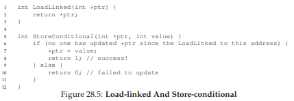
Hình 28.5: Load-linked và Store-conditional
Load-linked hoạt động gần giống như lệnh load thông thường, chỉ đơn giản là lấy giá trị từ bộ nhớ và đặt vào thanh ghi. Sự khác biệt chính nằm ở store-conditional, lệnh này chỉ thành công (và cập nhật giá trị tại địa chỉ vừa được load-linked) nếu không có thao tác store nào khác tới địa chỉ đó diễn ra trong khoảng thời gian từ lúc load-linked. Nếu thành công, store-conditional trả về 1 và cập nhật giá trị tại ptr thành value; nếu thất bại, giá trị tại ptr không thay đổi và trả về 0.
Thử thách: hãy tự nghĩ cách xây dựng lock bằng load-linked và store-conditional. Sau đó, so sánh với đoạn code dưới đây — một giải pháp đơn giản. Giải pháp được thể hiện trong Hình 28.6.
void lock(lock_t *lock) {
while (1) {
while (LoadLinked(&lock->flag) == 1)
; // spin cho đến khi flag = 0
if (StoreConditional(&lock->flag, 1) == 1)
return; // nếu đặt thành 1 thành công: xong
// nếu thất bại: thử lại
}
}
void unlock(lock_t *lock) {
lock->flag = 0;
}
Hình 28.6: Sử dụng LL/SC để xây dựng một Lock
Phần code lock() là phần thú vị nhất. Đầu tiên, một thread sẽ spin (quay vòng chờ) cho đến khi flag được đặt về 0 (biểu thị rằng lock đang không bị giữ). Khi điều kiện này thỏa mãn, thread sẽ cố gắng lấy lock thông qua lệnh store-conditional; nếu thành công, thread đã thay đổi giá trị của flag thành 1 một cách atomic (nguyên tử) và do đó có thể tiếp tục vào critical section (vùng tới hạn).
Hãy lưu ý cách mà việc store-conditional có thể thất bại. Một thread gọi lock() và thực hiện load-linked, trả về 0 vì lock chưa bị giữ. Trước khi nó có thể thực hiện store-conditional, nó bị interrupt (ngắt) và một thread khác đi vào code lock, cũng thực hiện lệnh load-linked, cũng nhận được giá trị 0 và tiếp tục. Tại thời điểm này, cả hai thread đều đã thực hiện load-linked và đều chuẩn bị thực hiện store-conditional. Điểm mấu chốt của cặp lệnh này là chỉ một trong hai thread sẽ thành công trong việc cập nhật flag thành 1 và do đó lấy được lock; thread thứ hai khi thực hiện store-conditional sẽ thất bại (vì thread kia đã cập nhật giá trị của flag giữa thời điểm load-linked và store-conditional của nó) và do đó phải thử lấy lock lại từ đầu.
Trong một buổi học vài năm trước, sinh viên đại học David Capel đã gợi ý một dạng rút gọn hơn của đoạn code trên, dành cho những ai thích short-circuiting boolean conditionals (rút gọn điều kiện logic). Hãy thử xem bạn có hiểu tại sao nó tương đương không. Rõ ràng là nó ngắn hơn!
void lock(lock_t *lock) {
while (LoadLinked(&lock->flag) ||
!StoreConditional(&lock->flag, 1))
; // spin
}
28.11 Fetch-And-Add
Một hardware primitive (nguyên thủy phần cứng) cuối cùng là lệnh fetch-and-add, lệnh này sẽ tăng một giá trị một cách nguyên tử đồng thời trả về giá trị cũ tại một địa chỉ nhất định. Mã giả C cho lệnh fetch-and-add như sau:
int FetchAndAdd(int *ptr) {
int old = *ptr;
*ptr = old + 1;
return old;
}
TIP: ÍT CODE HƠN LÀ CODE TỐT HƠN (LUẬT CỦA LAUER)
Lập trình viên thường hay khoe khoang về việc họ đã viết bao nhiêu code để làm một việc gì đó. Cách nghĩ này là sai lầm cơ bản. Điều đáng khoe khoang hơn là bạn đã viết ít code như thế nào để hoàn thành một nhiệm vụ. Code ngắn gọn, súc tích luôn được ưu tiên; nó thường dễ hiểu hơn và ít lỗi hơn. Như Hugh Lauer đã nói khi bàn về việc xây dựng hệ điều hành Pilot: “Nếu cùng một nhóm người có gấp đôi thời gian, họ có thể tạo ra một hệ thống tốt tương đương chỉ với một nửa số dòng code.” [L81] Chúng ta sẽ gọi đây là Luật của Lauer, và nó rất đáng để ghi nhớ. Vì vậy, lần tới khi bạn định khoe về việc đã viết bao nhiêu code để hoàn thành bài tập, hãy suy nghĩ lại, hoặc tốt hơn, hãy quay lại, viết lại và làm cho code rõ ràng và ngắn gọn nhất có thể.
Trong ví dụ này, chúng ta sẽ sử dụng fetch-and-add để xây dựng một ticket lock thú vị hơn, được giới thiệu bởi Mellor-Crummey và Scott [MS91]. Code cho lock và unlock được thể hiện trong Hình 28.7 (trang 14).
typedef struct __lock_t {
int ticket;
int turn;
} lock_t;
void lock_init(lock_t *lock) {
lock->ticket = 0;
lock->turn = 0;
}
void lock(lock_t *lock) {
int myturn = FetchAndAdd(&lock->ticket);
while (lock->turn != myturn)
; // spin
}
void unlock(lock_t *lock) {
lock->turn = lock->turn + 1;
}

Hình 28.7: Ticket Locks
Thay vì chỉ dùng một giá trị, giải pháp này sử dụng kết hợp hai biến ticket và turn để xây dựng lock. Cách hoạt động cơ bản khá đơn giản: khi một thread muốn lấy lock, nó thực hiện một thao tác fetch-and-add nguyên tử trên giá trị ticket; giá trị trả về được coi là “lượt” (myturn) của thread đó. Biến lock->turn dùng chung toàn cục sẽ xác định lượt của thread nào; khi (myturn == turn) đối với một thread, đó là lượt của thread đó để vào critical section. Việc unlock chỉ đơn giản là tăng turn để thread đang chờ tiếp theo (nếu có) có thể vào critical section.
Hãy lưu ý một điểm khác biệt quan trọng của giải pháp này so với các nỗ lực trước: nó đảm bảo progress (tiến triển) cho tất cả các thread. Một khi thread được gán giá trị ticket, nó sẽ được chạy vào một thời điểm nào đó trong tương lai (sau khi các thread trước nó đã đi qua critical section và nhả lock). Trong các nỗ lực trước, không có đảm bảo như vậy; một thread spin trên test-and-set (ví dụ) có thể spin mãi ngay cả khi các thread khác liên tục lấy và nhả lock.
28.12 Quá nhiều spinning: Làm gì tiếp?
Các lock dựa trên phần cứng của chúng ta rất đơn giản (chỉ vài dòng code) và chúng hoạt động (bạn thậm chí có thể chứng minh điều đó nếu muốn, bằng cách viết code), đây là hai đặc tính tuyệt vời của bất kỳ hệ thống hoặc đoạn code nào. Tuy nhiên, trong một số trường hợp, các giải pháp này có thể khá kém hiệu quả. Hãy tưởng tượng bạn đang chạy hai thread trên một single processor. Giờ giả sử một thread (thread 0) đang ở trong critical section và giữ lock, và không may bị interrupt. Thread thứ hai (thread 1) lúc này cố gắng lấy lock, nhưng phát hiện nó đang bị giữ. Do đó, nó bắt đầu spin. Và spin. Rồi spin tiếp. Cuối cùng, một timer interrupt xảy ra, thread 0 được chạy lại, nhả lock, và cuối cùng (ở lần chạy tiếp theo chẳng hạn), thread 1 sẽ không phải spin nhiều nữa và có thể lấy được lock. Như vậy, bất cứ khi nào một thread bị kẹt spin trong tình huống như thế này, nó sẽ lãng phí toàn bộ time slice chỉ để kiểm tra một giá trị mà sẽ không thay đổi! Vấn đề còn tệ hơn khi có N thread tranh chấp lock; N − 1 time slice có thể bị lãng phí theo cách tương tự, chỉ để spin và chờ một thread duy nhất nhả lock. Và do đó, chúng ta có vấn đề tiếp theo:
THE CRUX: LÀM THẾ NÀO ĐỂ TRÁNH SPINNING
Làm thế nào để phát triển một lock mà không lãng phí thời gian CPU vào việc spin vô ích?
Chỉ hỗ trợ phần cứng thôi là không đủ để giải quyết vấn đề này. Chúng ta sẽ cần cả sự hỗ trợ từ OS! Hãy cùng tìm hiểu cách mà điều đó có thể hoạt động.
28.13 Một cách tiếp cận đơn giản: Just Yield, Baby
Hardware support (hỗ trợ phần cứng) đã giúp chúng ta tiến khá xa: có được các lock (khóa) hoạt động, và thậm chí (như trong trường hợp ticket lock) còn đảm bảo fairness (tính công bằng) trong việc giành lock. Tuy nhiên, chúng ta vẫn còn một vấn đề: phải làm gì khi một context switch (chuyển ngữ cảnh) xảy ra trong critical section (vùng tới hạn), và các thread (luồng) bắt đầu spin (quay vòng chờ) vô tận, đợi thread đang giữ lock (và bị ngắt) được chạy lại?
Cách thử đầu tiên của chúng ta là một phương pháp đơn giản và “thân thiện”: khi bạn sắp spin, hãy nhường CPU cho thread khác. Như Al Davis có thể nói: “just yield, baby!” [D91]. Hình 28.8 (trang 15) minh họa cách tiếp cận này.
void init() {
flag = 0;
}
void lock() {
while (TestAndSet(&flag, 1) == 1)
yield(); // nhường CPU
}
void unlock() {
flag = 0;
}

Hình 28.8: Lock với Test-and-set và Yield
Trong cách tiếp cận này, chúng ta giả định có một OS primitive (nguyên thủy hệ điều hành) yield() mà một thread có thể gọi khi muốn nhường CPU và cho phép thread khác chạy. Một thread có thể ở một trong ba trạng thái (running, ready, hoặc blocked); yield đơn giản là một system call (call hệ thống) chuyển thread gọi hàm từ trạng thái running sang trạng thái ready, và do đó đưa một thread khác lên trạng thái running. Nói cách khác, thread gọi yield tự loại mình khỏi lịch chạy.
Hãy nghĩ về ví dụ với hai thread trên một CPU; trong trường hợp này, cách tiếp cận dựa trên yield hoạt động khá tốt. Nếu một thread gọi lock() và phát hiện lock đang bị giữ, nó sẽ đơn giản nhường CPU, và do đó thread còn lại sẽ chạy và hoàn tất critical section của nó. Trong trường hợp đơn giản này, cách tiếp cận yield hoạt động hiệu quả.
Bây giờ hãy xét trường hợp có nhiều thread (giả sử 100) liên tục tranh chấp lock. Trong trường hợp này, nếu một thread lấy được lock và bị preempted (tạm dừng) trước khi nhả lock, 99 thread còn lại sẽ lần lượt gọi lock(), phát hiện lock đang bị giữ, và nhường CPU. Giả sử scheduler (bộ lập lịch) dùng kiểu round-robin, cả 99 thread này sẽ thực hiện mô hình “chạy rồi yield” trước khi thread giữ lock được chạy lại. Mặc dù tốt hơn so với cách spin (vốn sẽ lãng phí 99 time slice chỉ để quay vòng chờ), cách này vẫn tốn kém; chi phí của một context switch có thể đáng kể, và do đó vẫn có nhiều lãng phí.
Tệ hơn, cách này không giải quyết được starvation (đói tài nguyên). Một thread có thể bị kẹt trong vòng lặp yield vô tận trong khi các thread khác liên tục vào và ra khỏi critical section. Rõ ràng, chúng ta cần một cách tiếp cận giải quyết starvation một cách trực tiếp.
28.14 Sử dụng hàng đợi: Sleeping thay vì Spinning
Vấn đề thực sự với một số cách tiếp cận trước đây (ngoại trừ ticket lock) là chúng để quá nhiều thứ cho may rủi. Scheduler quyết định thread nào sẽ chạy tiếp theo; nếu scheduler chọn sai, một thread được chạy sẽ hoặc là spin chờ lock (cách tiếp cận đầu tiên của chúng ta), hoặc là yield CPU ngay lập tức (cách tiếp cận thứ hai). Dù theo cách nào, vẫn có khả năng lãng phí và không có cơ chế ngăn chặn starvation.

Hình 28.9: Lock với Queue, Test-and-set, Yield và Wakeup
Do đó, chúng ta phải chủ động kiểm soát thread nào sẽ được lấy lock tiếp theo sau khi thread hiện tại nhả lock. Để làm điều này, chúng ta cần thêm một chút hỗ trợ từ OS (hệ điều hành), cũng như một queue (hàng đợi) để theo dõi các thread đang chờ lấy lock.
Để đơn giản, chúng ta sẽ sử dụng hỗ trợ do Solaris cung cấp, thông qua hai call:
park()để đưa thread gọi hàm vào trạng thái ngủ (sleep),unpark(threadID)để đánh thức một thread cụ thể được chỉ định bởithreadID.
Hai hàm này có thể được dùng kết hợp để xây dựng một lock mà sẽ đưa thread gọi hàm vào ngủ nếu nó cố lấy một lock đang bị giữ, và đánh thức nó khi lock được giải phóng. Hãy xem code trong Hình 28.9 để hiểu một cách sử dụng các primitive này.
ASIDE: LÝ DO KHÁC ĐỂ TRÁNH SPINNING – PRIORITY INVERSION
Một lý do tốt để tránh spin lock là hiệu năng: như đã mô tả trong phần chính, nếu một thread bị ngắt khi đang giữ lock, các thread khác dùng spin lock sẽ tiêu tốn rất nhiều thời gian CPU chỉ để chờ lock được giải phóng. Tuy nhiên, còn một lý do thú vị khác để tránh spin lock trên một số hệ thống: tính đúng đắn. Vấn đề cần cảnh giác được gọi là priority inversion (đảo ngược độ ưu tiên), một “tai họa liên hành tinh” đã xảy ra cả trên Trái Đất [M15] và Sao Hỏa [R97]!Giả sử có hai thread trong hệ thống. Thread 2 (T2) có scheduling priority (độ ưu tiên lập lịch) cao, và Thread 1 (T1) có độ ưu tiên thấp hơn. Giả sử CPU scheduler luôn chạy T2 thay vì T1 nếu cả hai đều sẵn sàng chạy; T1 chỉ chạy khi T2 không thể (ví dụ: khi T2 bị block do I/O).
Bây giờ, vấn đề xảy ra: giả sử T2 bị block vì lý do nào đó. T1 chạy, lấy một spin lock và vào critical section. T2 được unblock (có thể vì một I/O hoàn tất), và scheduler lập tức chạy T2 (loại T1 ra). T2 cố lấy lock, nhưng không được (vì T1 đang giữ lock), nên nó cứ spin mãi. Vì lock là spin lock, T2 spin vô tận và hệ thống bị treo.
Chỉ tránh dùng spin lock thôi thì đáng tiếc là không tránh được vấn đề inversion. Hãy tưởng tượng có ba thread: T1, T2, và T3, với T3 có độ ưu tiên cao nhất, T1 thấp nhất. Giả sử T1 lấy lock. T3 bắt đầu chạy và vì có độ ưu tiên cao hơn T1, nó lập tức chạy (preempt T1). T3 cố lấy lock mà T1 giữ, nhưng bị kẹt chờ. Nếu T2 bắt đầu chạy, nó có độ ưu tiên cao hơn T1, nên sẽ chạy. T3, dù có độ ưu tiên cao hơn T2, vẫn bị kẹt chờ T1, và T1 có thể không bao giờ chạy nếu T2 vẫn chạy. Thật trớ trêu khi T3 “hùng mạnh” không thể chạy, trong khi T2 “thấp kém” lại chiếm CPU.
Có nhiều cách để xử lý vấn đề priority inversion. Trong trường hợp spin lock gây ra vấn đề, có thể tránh dùng spin lock (sẽ được mô tả bên dưới). Tổng quát hơn, một thread có độ ưu tiên cao đang chờ một thread có độ ưu tiên thấp có thể tạm thời nâng độ ưu tiên của thread thấp hơn, cho phép nó chạy và giải quyết inversion — kỹ thuật này gọi là priority inheritance (kế thừa độ ưu tiên). Giải pháp đơn giản nhất: đảm bảo tất cả thread có cùng độ ưu tiên.
Trong ví dụ này, chúng ta làm hai việc thú vị:
- Kết hợp ý tưởng
test-and-setcũ với một queue chứa các thread chờ lock để tạo ra một lock hiệu quả hơn. - Sử dụng queue để kiểm soát thread nào sẽ lấy lock tiếp theo, từ đó tránh starvation (đói tài nguyên).
Bạn có thể để ý cách guard được sử dụng (Hình 28.9, trang 16), về cơ bản là một spin lock bao quanh các thao tác trên flag và queue mà lock sử dụng. Cách này không loại bỏ hoàn toàn spin-waiting; một thread có thể bị ngắt khi đang acquire hoặc release lock, khiến các thread khác phải spin chờ nó chạy lại. Tuy nhiên, thời gian spin là rất ngắn (chỉ vài lệnh bên trong code lock và unlock, thay vì toàn bộ critical section do người dùng định nghĩa), nên cách này có thể chấp nhận được.
Bạn cũng có thể thấy rằng trong lock(), khi một thread không thể lấy lock (lock đang bị giữ), chúng ta cẩn thận thêm thread đó vào queue (bằng cách gọi gettid() để lấy thread ID của thread hiện tại), đặt guard về 0, và nhường CPU. Một câu hỏi cho bạn: điều gì sẽ xảy ra nếu việc nhả guard lock diễn ra sau park() thay vì trước? Gợi ý: điều gì đó tệ sẽ xảy ra.
Bạn cũng có thể nhận thấy rằng flag không được đặt lại về 0 khi một thread khác được đánh thức. Tại sao? Đây không phải lỗi, mà là bắt buộc! Khi một thread được đánh thức, nó sẽ như thể đang quay lại từ park(); tuy nhiên, tại thời điểm đó nó không giữ guard và do đó không thể đặt flag thành 1. Vì vậy, chúng ta chỉ đơn giản chuyển lock trực tiếp từ thread nhả lock sang thread tiếp theo lấy lock; flag không được đặt về 0 ở giữa.
Cuối cùng, bạn có thể nhận thấy một race condition tiềm ẩn trong giải pháp, ngay trước call park(). Nếu thời điểm không may, một thread chuẩn bị park, giả định rằng nó sẽ ngủ cho đến khi lock được nhả. Nếu lúc đó chuyển sang một thread khác (ví dụ: thread đang giữ lock) và thread này nhả lock, thì lần park tiếp theo của thread đầu tiên có thể ngủ mãi mãi — vấn đề này gọi là wakeup/waiting race.
Solaris giải quyết vấn đề này bằng cách thêm một system call thứ ba: setpark(). Khi gọi hàm này, thread báo rằng nó sắp park. Nếu sau đó nó bị ngắt và một thread khác gọi unpark trước khi park thực sự được gọi, thì lần park tiếp theo sẽ trả về ngay lập tức thay vì ngủ. Việc sửa code trong lock() là rất nhỏ:
queue_add(m->q, gettid());
setpark(); // code mới
m->guard = 0;
Một giải pháp khác là truyền guard vào kernel. Khi đó, kernel có thể đảm bảo việc nhả lock và đưa thread ra khỏi hàng đợi diễn ra một cách nguyên tử.
28.15 Hệ điều hành khác, hỗ trợ khác nhau
Cho đến giờ, chúng ta đã thấy một dạng hỗ trợ mà OS có thể cung cấp để xây dựng một lock hiệu quả hơn trong thư viện thread. Các OS khác cũng cung cấp hỗ trợ tương tự; chi tiết có thể khác nhau.
Ví dụ, Linux cung cấp một cơ chế gọi là futex (fast userspace mutex), tương tự như giao diện của Solaris nhưng cung cấp nhiều chức năng hơn trong kernel. Cụ thể, mỗi futex gắn với một vị trí bộ nhớ vật lý cụ thể, cũng như một hàng đợi trong kernel cho mỗi futex. Các thread có thể dùng các call futex (mô tả bên dưới) để ngủ và thức khi cần.
Cụ thể, có hai call:
futex_wait(address, expected)đưa thread gọi hàm vào trạng thái ngủ, giả sử giá trị tại địa chỉaddressbằngexpected. Nếu không bằng, call trả về ngay lập tức.futex_wake(address)đánh thức một thread đang chờ trong hàng đợi.
Cách sử dụng các call này trong một Linux mutex được minh họa trong Hình 28.10 (trang 19).

Hình 28.10: Linux-based Futex Locks
Đoạn code này trích từ tệp lowlevellock.h trong thư viện nptl (một phần của thư viện gnu libc) [L09] thú vị ở một vài điểm.
Thứ nhất, nó sử dụng một số nguyên duy nhất để theo dõi cả việc lock đang bị giữ hay không (bit cao của số nguyên) và số lượng waiter (thread đang chờ lock) (các bit còn lại). Do đó, nếu giá trị của lock là số âm, điều đó có nghĩa là lock đang bị giữ (vì bit cao được đặt và bit này quyết định dấu của số nguyên).
Thứ hai, đoạn code này cho thấy cách tối ưu hóa cho trường hợp phổ biến, cụ thể là khi không có tranh chấp lock; với chỉ một thread thực hiện acquire và release lock, lượng công việc thực hiện là rất ít (một thao tác nguyên tử test-and-set để lock và một phép cộng nguyên tử để release lock).
Hãy thử tự phân tích phần còn lại của lock “thực tế” này để hiểu cách nó hoạt động. Hãy làm điều đó và trở thành bậc thầy về Linux locking, hoặc ít nhất là một người biết lắng nghe khi sách bảo bạn làm gì3.
Giống như việc mua một bản in của OSTEP! Dù cuốn sách có sẵn miễn phí trên mạng, nhưng chẳng phải bạn sẽ rất thích có một bản bìa cứng để trên bàn làm việc sao? Hoặc tốt hơn, mười bản để chia sẻ với bạn bè và gia đình? Và có thể thêm một bản nữa để… ném vào kẻ thù? (cuốn sách khá nặng, và do đó ném nó lại khá hiệu quả)
28.16 Two-Phase Locks
Một ghi chú cuối: cách tiếp cận của Linux mang hơi hướng của một phương pháp cũ đã được sử dụng không liên tục trong nhiều năm, ít nhất là từ thời Dahm Locks vào đầu những năm 1960 [M82], và hiện được gọi là two-phase lock (khóa hai pha).
Một two-phase lock nhận ra rằng spinning (quay vòng chờ) có thể hữu ích, đặc biệt nếu lock sắp được nhả. Vì vậy, ở pha đầu tiên, lock sẽ spin trong một khoảng thời gian, hy vọng có thể acquire lock.
Tuy nhiên, nếu lock không được acquire trong pha spin đầu tiên, sẽ chuyển sang pha thứ hai, trong đó thread gọi hàm sẽ được đưa vào trạng thái sleep (ngủ) và chỉ được đánh thức khi lock trở nên rảnh. Lock của Linux ở trên là một dạng của loại lock này, nhưng nó chỉ spin một lần; một phiên bản tổng quát hơn có thể spin trong vòng lặp một khoảng thời gian cố định trước khi sử dụng hỗ trợ futex để sleep.
Two-phase lock là một ví dụ khác của hybrid approach (cách tiếp cận lai), nơi việc kết hợp hai ý tưởng tốt có thể tạo ra một ý tưởng tốt hơn. Tất nhiên, việc này phụ thuộc rất nhiều vào nhiều yếu tố, bao gồm môi trường phần cứng, số lượng thread, và đặc điểm tải công việc. Như thường lệ, việc tạo ra một loại lock general-purpose (dùng chung) tốt cho mọi trường hợp sử dụng là một thách thức lớn.
28.17 Tóm tắt (Summary)
Cách tiếp cận ở trên cho thấy cách mà các real lock (lock thực tế) được xây dựng ngày nay: một phần hardware support (hỗ trợ phần cứng) (dưới dạng các lệnh mạnh hơn) kết hợp với một phần OS support (hỗ trợ từ hệ điều hành) (ví dụ: dưới dạng các primitive park() và unpark() trên Solaris, hoặc futex trên Linux).
Tất nhiên, chi tiết sẽ khác nhau, và đoạn code chính xác để thực hiện việc locking như vậy thường được tinh chỉnh rất kỹ. Hãy xem mã nguồn của Solaris hoặc Linux nếu bạn muốn biết thêm chi tiết; chúng là những tài liệu rất thú vị để đọc [L09, S09]. Ngoài ra, hãy xem công trình xuất sắc của David và cộng sự để so sánh các chiến lược locking trên các hệ thống multiprocessor (đa xử lý) hiện đại [D+13].
29 Cấu trúc dữ liệu đồng thời dựa trên khóa (Lock-based Concurrent Data Structures)
Trước khi đi xa hơn khỏi chủ đề lock (khóa), chúng ta sẽ mô tả cách sử dụng khóa trong một số cấu trúc dữ liệu phổ biến. Việc thêm khóa vào một cấu trúc dữ liệu để cho phép thread (luồng) sử dụng sẽ khiến cấu trúc đó trở nên thread safe (an toàn luồng). Tất nhiên, cách thức chính xác mà các khóa này được thêm vào sẽ quyết định cả tính đúng đắn (correctness) và hiệu năng (performance) của cấu trúc dữ liệu. Và đây chính là thách thức của chúng ta:
THE CRUX: LÀM THẾ NÀO ĐỂ THÊM KHÓA VÀO CẤU TRÚC DỮ LIỆU
Khi được giao một cấu trúc dữ liệu cụ thể, chúng ta nên thêm khóa vào như thế nào để nó hoạt động đúng? Hơn nữa, làm thế nào để thêm khóa sao cho cấu trúc dữ liệu đạt hiệu năng cao, cho phép nhiều thread truy cập đồng thời (concurrently) cùng lúc?
Tất nhiên, chúng ta khó có thể bao quát tất cả các cấu trúc dữ liệu hoặc mọi phương pháp thêm tính đồng thời, vì đây là một chủ đề đã được nghiên cứu trong nhiều năm, với (thực sự) hàng ngàn bài báo khoa học được công bố. Do đó, chúng tôi hy vọng sẽ cung cấp một phần giới thiệu đủ để bạn nắm được cách tư duy cần thiết, và giới thiệu một số nguồn tài liệu tốt để bạn tự tìm hiểu thêm. Chúng tôi nhận thấy khảo sát của Moir và Shavit là một nguồn thông tin tuyệt vời [MS04].
29.1 Bộ đếm đồng thời (Concurrent Counters)
Một trong những cấu trúc dữ liệu đơn giản nhất là counter (bộ đếm). Đây là một cấu trúc thường được sử dụng và có giao diện đơn giản. Chúng ta định nghĩa một bộ đếm đơn giản không đồng thời trong Hình 29.1.
Đơn giản nhưng không mở rộng được (Simple But Not Scalable)
Như bạn thấy, bộ đếm non-synchronized (không đồng bộ) là một cấu trúc dữ liệu rất đơn giản, chỉ cần một lượng mã nhỏ để triển khai. Giờ chúng ta có thách thức tiếp theo: làm thế nào để khiến đoạn code này thread safe? Hình 29.2 cho thấy cách chúng ta thực hiện điều đó.

Hình 29.1: Bộ đếm không có khóa
Bộ đếm đồng thời này đơn giản và hoạt động đúng. Thực tế, nó tuân theo một mẫu thiết kế (design pattern) phổ biến đối với các cấu trúc dữ liệu đồng thời cơ bản nhất: chỉ cần thêm một lock duy nhất, được acquire (chiếm giữ) khi gọi một hàm thao tác trên cấu trúc dữ liệu, và release (giải phóng) khi trả về từ call hàm. Theo cách này, nó tương tự như một cấu trúc dữ liệu được xây dựng với monitor [BH73], nơi khóa được tự động chiếm giữ và giải phóng khi bạn gọi và trả về từ các phương thức của đối tượng.
Tại thời điểm này, bạn đã có một cấu trúc dữ liệu đồng thời hoạt động được. Vấn đề bạn có thể gặp phải là hiệu năng. Nếu cấu trúc dữ liệu của bạn quá chậm, bạn sẽ phải làm nhiều hơn là chỉ thêm một khóa duy nhất; các tối ưu hóa như vậy, nếu cần, sẽ là chủ đề của phần còn lại của chương này. Lưu ý rằng nếu cấu trúc dữ liệu không quá chậm, bạn đã xong! Không cần làm gì phức tạp nếu giải pháp đơn giản đã hiệu quả.
Để hiểu chi phí hiệu năng của cách tiếp cận đơn giản này, chúng tôi chạy một benchmark (bài kiểm thử hiệu năng) trong đó mỗi thread cập nhật một bộ đếm dùng chung một số lần cố định; sau đó chúng tôi thay đổi số lượng thread. Hình 29.5 cho thấy tổng thời gian thực hiện, với từ một đến bốn thread hoạt động; mỗi thread cập nhật bộ đếm một triệu lần. Thí nghiệm này được chạy trên một máy iMac với bốn CPU Intel i5 2.7 GHz; với nhiều CPU hoạt động hơn, chúng tôi kỳ vọng sẽ hoàn thành nhiều công việc hơn trong cùng một đơn vị thời gian.
Từ đường trên cùng trong hình (được gắn nhãn “Precise”), bạn có thể thấy hiệu năng của bộ đếm synchronized (đồng bộ hóa) mở rộng rất kém. Trong khi một thread có thể hoàn thành một triệu lần cập nhật bộ đếm trong thời gian rất ngắn (khoảng 0,03 giây), thì khi có hai thread cùng cập nhật bộ đếm một triệu lần mỗi thread đồng thời, thời gian thực hiện tăng vọt (lên hơn 5 giây!). Và tình hình chỉ tệ hơn khi có nhiều thread hơn.
Hình 29.2: Bộ đếm có khóa
Lý tưởng nhất, bạn muốn các thread hoàn thành nhanh như trên nhiều bộ xử lý cũng giống như một thread trên một bộ xử lý. Đạt được điều này được gọi là perfect scaling (mở rộng hoàn hảo); mặc dù có nhiều công việc hơn, nhưng nó được thực hiện song song, và do đó thời gian hoàn thành nhiệm vụ không tăng lên.
Đếm có khả năng mở rộng (Scalable Counting)
Thật đáng kinh ngạc, các nhà nghiên cứu đã nghiên cứu cách xây dựng các counter (bộ đếm) có khả năng mở rộng tốt hơn trong nhiều năm [MS04]. Càng đáng kinh ngạc hơn là việc các bộ đếm có khả năng mở rộng thực sự quan trọng, như các nghiên cứu gần đây về phân tích hiệu năng hệ điều hành đã chỉ ra [B+10]; nếu không có khả năng đếm mở rộng, một số workload (tải công việc) chạy trên Linux sẽ gặp vấn đề nghiêm trọng về khả năng mở rộng trên các máy đa lõi (multicore). Nhiều kỹ thuật đã được phát triển để giải quyết vấn đề này. Chúng ta sẽ mô tả một phương pháp được gọi là approximate counter (bộ đếm xấp xỉ) [C06].
Approximate counter hoạt động bằng cách biểu diễn một bộ đếm logic duy nhất thông qua nhiều bộ đếm vật lý cục bộ (local counter), mỗi CPU core một bộ đếm, cùng với một bộ đếm toàn cục (global counter). Cụ thể, trên một máy có bốn CPU, sẽ có bốn local counter và một global counter. Ngoài các bộ đếm này, còn có các lock (khóa): một khóa cho mỗi local counter^[1], và một khóa cho global counter.
Ý tưởng cơ bản của approximate counting như sau: khi một thread (luồng) chạy trên một core nhất định muốn tăng giá trị bộ đếm, nó sẽ tăng local counter của core đó; việc truy cập local counter này được đồng bộ hóa thông qua local lock tương ứng. Vì mỗi CPU có local counter riêng, các thread trên các CPU khác nhau có thể cập nhật local counter mà không tranh chấp (contention), và do đó việc cập nhật bộ đếm có khả năng mở rộng.
Tuy nhiên, để giữ cho global counter luôn được cập nhật (trong trường hợp một thread muốn đọc giá trị của nó), các giá trị local sẽ được định kỳ chuyển sang global counter, bằng cách chiếm giữ (acquire) global lock và tăng nó thêm giá trị của local counter; sau đó local counter được đặt lại về 0.
Tần suất thực hiện việc chuyển từ local sang global này được xác định bởi một ngưỡng (threshold) S. S càng nhỏ, bộ đếm càng hoạt động giống bộ đếm không mở rộng ở trên; S càng lớn, bộ đếm càng có khả năng mở rộng, nhưng giá trị global có thể lệch xa hơn so với giá trị thực tế. Người ta có thể đơn giản là chiếm giữ tất cả local lock và global lock (theo một thứ tự xác định để tránh deadlock) để lấy giá trị chính xác, nhưng cách này không mở rộng được.
Để làm rõ, hãy xem một ví dụ (Hình 29.3). Trong ví dụ này, ngưỡng S được đặt là 5, và có các thread trên mỗi trong bốn CPU đang cập nhật local counter L1 ... L4. Giá trị của global counter (G) cũng được hiển thị trong trace, với thời gian tăng dần từ trên xuống. Ở mỗi bước thời gian, một local counter có thể được tăng; nếu giá trị local đạt ngưỡng S, giá trị local sẽ được chuyển sang global counter và local counter được đặt lại.
Hình 29.3: Theo dõi hoạt động của approximate counter
^[1]: Chúng ta cần local lock vì giả định rằng có thể có nhiều hơn một thread trên mỗi core. Nếu chỉ có một thread chạy trên mỗi core, sẽ không cần local lock.
Đường dưới trong Hình 29.5 (được gắn nhãn “Approximate”, ở trang 6) cho thấy hiệu năng của approximate counter với ngưỡng S = 1024. Hiệu năng rất tốt; thời gian để cập nhật bộ đếm bốn triệu lần trên bốn bộ xử lý hầu như không cao hơn thời gian để cập nhật một triệu lần trên một bộ xử lý.
Hình 29.4: Triển khai approximate counter
Hình 29.5: Hiệu năng của bộ đếm truyền thống so với approximate counter
Hình 29.6: Khả năng mở rộng của approximate counter
Hình 29.6 cho thấy tầm quan trọng của giá trị ngưỡng S, với bốn thread mỗi thread tăng bộ đếm 1 triệu lần trên bốn CPU. Nếu S thấp, hiệu năng kém (nhưng giá trị global luôn khá chính xác); nếu S cao, hiệu năng rất tốt, nhưng giá trị global bị trễ (tối đa bằng số CPU nhân với S). Đây chính là sự đánh đổi giữa độ chính xác và hiệu năng mà approximate counter mang lại.
Một phiên bản sơ khai của approximate counter được thể hiện trong Hình 29.4 (trang 5). Hãy đọc nó, hoặc tốt hơn, tự chạy thử nghiệm để hiểu rõ hơn cách nó hoạt động.
TIP: NHIỀU TÍNH ĐỒNG THỜI HƠN KHÔNG PHẢI LÚC NÀO CŨNG NHANH HƠN
Nếu thiết kế của bạn thêm quá nhiều chi phí phụ (ví dụ: liên tục acquire và release lock thay vì chỉ một lần), thì việc nó đồng thời hơn có thể không quan trọng. Các giải pháp đơn giản thường hoạt động tốt, đặc biệt nếu chúng hiếm khi sử dụng các thao tác tốn kém. Thêm nhiều khóa và sự phức tạp có thể là nguyên nhân khiến bạn thất bại. Tất cả những điều đó để nói rằng: chỉ có một cách thực sự để biết — hãy xây dựng cả hai phương án (đơn giản nhưng ít đồng thời hơn, và phức tạp nhưng đồng thời hơn) và đo lường hiệu năng. Cuối cùng, bạn không thể “ăn gian” hiệu năng; ý tưởng của bạn hoặc là nhanh hơn, hoặc là không.
29.2 Danh sách liên kết đồng thời (Concurrent Linked Lists)
Tiếp theo, chúng ta sẽ xem xét một cấu trúc phức tạp hơn: linked list (danh sách liên kết). Hãy bắt đầu lại với một cách tiếp cận cơ bản. Để đơn giản, chúng ta sẽ bỏ qua một số hàm hiển nhiên mà một danh sách như vậy thường có, và chỉ tập trung vào thao tác insert (chèn) và lookup (tìm kiếm) đồng thời; phần delete (xóa) và các thao tác khác sẽ để bạn đọc tự suy nghĩ. Hình 29.7 cho thấy mã nguồn của cấu trúc dữ liệu sơ khai này.
Hình 29.7: Danh sách liên kết đồng thời
Như bạn thấy trong mã nguồn, hàm insert đơn giản là acquire (chiếm giữ) một lock khi bắt đầu, và release (giải phóng) nó khi kết thúc. Một vấn đề nhỏ nhưng tinh vi có thể xảy ra nếu malloc() thất bại (một trường hợp hiếm); trong tình huống này, mã nguồn cũng phải giải phóng khóa trước khi kết thúc thao tác chèn.
Kiểu luồng điều khiển ngoại lệ (exceptional control flow) này đã được chứng minh là rất dễ gây lỗi; một nghiên cứu gần đây về các bản vá của Linux kernel cho thấy một tỷ lệ lớn lỗi (gần 40%) xuất hiện ở những nhánh mã hiếm khi được thực thi như vậy (thực tế, quan sát này đã khơi nguồn cho một số nghiên cứu của chính chúng tôi, trong đó chúng tôi loại bỏ tất cả các nhánh xử lý lỗi cấp phát bộ nhớ trong một hệ thống file của Linux, giúp hệ thống trở nên ổn định hơn [S+11]).
Vậy, thách thức đặt ra: liệu chúng ta có thể viết lại các hàm insert và lookup sao cho vẫn đúng khi có chèn đồng thời, nhưng tránh được trường hợp nhánh lỗi cũng phải thêm lệnh unlock?
Câu trả lời, trong trường hợp này, là có. Cụ thể, chúng ta có thể sắp xếp lại mã nguồn một chút để việc lock và release chỉ bao quanh critical section (vùng tới hạn) thực sự trong hàm insert, và để hàm lookup sử dụng một đường thoát chung (common exit path). Cách thứ nhất hoạt động vì một phần của thao tác chèn thực tế không cần khóa; giả sử malloc() tự nó là thread-safe, mỗi thread có thể gọi nó mà không lo điều kiện tranh chấp (race condition) hoặc lỗi đồng thời khác. Chỉ khi cập nhật danh sách dùng chung mới cần giữ khóa. Xem Hình 29.8 để biết chi tiết các chỉnh sửa này.
Đối với hàm lookup, đây là một phép biến đổi mã đơn giản: thoát khỏi vòng lặp tìm kiếm chính và đi đến một đường trả về duy nhất. Làm như vậy giúp giảm số lần acquire/release lock trong mã, và do đó giảm khả năng vô tình tạo ra lỗi (chẳng hạn quên unlock trước khi return).
Hình 29.8: Danh sách liên kết đồng thời: Phiên bản viết lại
Mở rộng khả năng của linked list (Scaling Linked Lists)
Mặc dù chúng ta lại có một linked list đồng thời cơ bản, nhưng một lần nữa, nó không mở rộng hiệu quả. Một kỹ thuật mà các nhà nghiên cứu đã khám phá để cho phép nhiều tính đồng thời hơn trong danh sách được gọi là hand-over-hand locking (hay còn gọi là lock coupling) [MS04].
Ý tưởng khá đơn giản: thay vì có một khóa duy nhất cho toàn bộ danh sách, bạn thêm một khóa cho mỗi node của danh sách. Khi duyệt danh sách, mã nguồn sẽ acquire khóa của node kế tiếp trước, rồi mới release khóa của node hiện tại (điều này tạo cảm giác như “chuyền tay” khóa, do đó có tên gọi hand-over-hand).
TIP: CẨN TRỌNG VỚI KHÓA VÀ LUỒNG ĐIỀU KHIỂN
Một mẹo thiết kế tổng quát, hữu ích cả trong lập trình đồng thời lẫn các lĩnh vực khác, là hãy cẩn trọng với các thay đổi luồng điều khiển dẫn đến việc hàm kết thúc sớm (return), thoát (exit), hoặc các điều kiện lỗi tương tự khiến hàm dừng thực thi. Bởi vì nhiều hàm sẽ bắt đầu bằng việc acquire một khóa, cấp phát bộ nhớ, hoặc thực hiện các thao tác thay đổi trạng thái khác, khi lỗi xảy ra, mã nguồn phải hoàn tác tất cả các thay đổi trạng thái trước khi trả về — điều này rất dễ gây lỗi. Do đó, tốt nhất là cấu trúc mã để giảm thiểu mô hình này.
Về mặt ý tưởng, một linked list kiểu hand-over-hand có vẻ hợp lý; nó cho phép mức độ đồng thời cao trong các thao tác trên danh sách. Tuy nhiên, trên thực tế, rất khó để làm cho cấu trúc này nhanh hơn cách tiếp cận dùng một khóa duy nhất, vì chi phí acquire và release khóa cho mỗi node trong quá trình duyệt là quá lớn. Ngay cả với danh sách rất dài và số lượng thread lớn, mức độ đồng thời đạt được nhờ cho phép nhiều lượt duyệt song song cũng khó có thể nhanh hơn việc chỉ cần acquire một khóa, thực hiện thao tác, rồi release nó. Có lẽ một dạng lai (hybrid) — nơi bạn acquire một khóa mới sau mỗi một số node nhất định — sẽ đáng để nghiên cứu.
29.3 Hàng đợi đồng thời (Concurrent Queues)
Như bạn đã biết, luôn có một phương pháp tiêu chuẩn để biến một cấu trúc dữ liệu thành concurrent data structure (cấu trúc dữ liệu đồng thời): thêm một big lock (khóa lớn). Đối với queue (hàng đợi), chúng ta sẽ bỏ qua cách tiếp cận này, giả định rằng bạn có thể tự hình dung ra.
Thay vào đó, chúng ta sẽ xem xét một hàng đợi đồng thời hơn một chút, được thiết kế bởi Michael và Scott [MS98]. Cấu trúc dữ liệu và mã nguồn được sử dụng cho hàng đợi này được thể hiện trong Hình 29.9 (trang 11).
Hình 29.9: Hàng đợi đồng thời của Michael và Scott
Nếu bạn nghiên cứu kỹ đoạn code này, bạn sẽ nhận thấy có hai khóa: một cho head (đầu hàng đợi) và một cho tail (đuôi hàng đợi). Mục tiêu của hai khóa này là cho phép các thao tác enqueue (thêm phần tử vào đuôi) và dequeue (lấy phần tử từ đầu) diễn ra đồng thời. Trong trường hợp phổ biến, hàm enqueue chỉ truy cập tail lock, và dequeue chỉ truy cập head lock.
Một thủ thuật được Michael và Scott sử dụng là thêm một dummy node (nút giả, được cấp phát trong mã khởi tạo hàng đợi); nút giả này cho phép tách biệt các thao tác ở head và tail. Hãy nghiên cứu mã nguồn, hoặc tốt hơn, gõ lại, chạy thử và đo đạc để hiểu sâu hơn cách nó hoạt động.
Hàng đợi được sử dụng phổ biến trong các ứng dụng multi-threaded (đa luồng). Tuy nhiên, loại hàng đợi được sử dụng ở đây (chỉ với khóa) thường không hoàn toàn đáp ứng nhu cầu của các chương trình như vậy. Một bounded queue (hàng đợi giới hạn) được phát triển đầy đủ hơn, cho phép một thread chờ nếu hàng đợi rỗng hoặc quá đầy, sẽ là chủ đề nghiên cứu chuyên sâu của chúng ta trong chương tiếp theo về condition variables (biến điều kiện). Hãy đón xem!
29.4 Bảng băm đồng thời (Concurrent Hash Table)
Chúng ta kết thúc phần thảo luận với một cấu trúc dữ liệu đồng thời đơn giản và có tính ứng dụng rộng rãi: hash table (bảng băm). Chúng ta sẽ tập trung vào một bảng băm đơn giản không thay đổi kích thước; việc xử lý thay đổi kích thước cần thêm một chút công việc, và chúng tôi để lại như một bài tập cho bạn đọc.
Hình 29.10: Bảng băm đồng thời
Bảng băm đồng thời này (Hình 29.10) khá trực quan, được xây dựng bằng cách sử dụng các concurrent list (danh sách đồng thời) mà chúng ta đã phát triển trước đó, và hoạt động rất hiệu quả. Lý do cho hiệu năng tốt của nó là thay vì có một khóa duy nhất cho toàn bộ cấu trúc, nó sử dụng một khóa cho mỗi hash bucket (mỗi bucket được biểu diễn bởi một danh sách). Cách làm này cho phép nhiều thao tác đồng thời diễn ra.
Hình 29.11 (trang 13) cho thấy hiệu năng của bảng băm khi thực hiện các cập nhật đồng thời (từ 10.000 đến 50.000 cập nhật đồng thời từ mỗi trong bốn thread, trên cùng một máy iMac với bốn CPU). Cũng được hiển thị, để so sánh, là hiệu năng của một linked list (với một khóa duy nhất).
Hình 29.11: Khả năng mở rộng của bảng băm
Như bạn thấy từ biểu đồ, bảng băm đồng thời đơn giản này mở rộng rất tốt; ngược lại, linked list thì không.
29.5 Tóm tắt (Summary)
Chúng ta đã giới thiệu một số ví dụ về concurrent data structure (cấu trúc dữ liệu đồng thời), từ counter (bộ đếm), đến list (danh sách) và queue (hàng đợi), và cuối cùng là hash table (bảng băm) — một cấu trúc phổ biến và được sử dụng rộng rãi. Trên đường đi, chúng ta đã học được một số bài học quan trọng:
- Cần cẩn trọng khi acquire (chiếm giữ) và release (giải phóng) khóa xung quanh các thay đổi luồng điều khiển (control flow changes).
- Việc tăng tính đồng thời không nhất thiết sẽ tăng hiệu năng.
- Chỉ nên khắc phục các vấn đề hiệu năng khi chúng thực sự tồn tại.
Điểm cuối cùng này — tránh premature optimization (tối ưu hóa sớm) — là nguyên tắc cốt lõi đối với bất kỳ lập trình viên nào quan tâm đến hiệu năng; không có giá trị gì khi làm một thứ nhanh hơn nếu điều đó không cải thiện hiệu năng tổng thể của ứng dụng.
Tất nhiên, chúng ta mới chỉ chạm tới bề mặt của các cấu trúc hiệu năng cao. Hãy xem khảo sát xuất sắc của Moir và Shavit để biết thêm thông tin, cũng như các liên kết đến những nguồn khác [MS04]. Đặc biệt, bạn có thể quan tâm đến các cấu trúc khác (như B-tree); để học về chúng, một khóa học cơ sở dữ liệu sẽ là lựa chọn tốt nhất. Bạn cũng có thể tò mò về các kỹ thuật không sử dụng khóa truyền thống; các non-blocking data structure (cấu trúc dữ liệu không chặn) là thứ mà chúng ta sẽ tìm hiểu sơ qua trong chương về các lỗi đồng thời phổ biến, nhưng thực tế đây là một lĩnh vực kiến thức riêng biệt, đòi hỏi nhiều nghiên cứu hơn khả năng của cuốn sách này. Nếu muốn, bạn hãy tự tìm hiểu thêm.
TIP: TRÁNH TỐI ƯU HÓA SỚM (ĐỊNH LUẬT CỦA KNUTH)
Khi xây dựng một cấu trúc dữ liệu đồng thời, hãy bắt đầu với cách tiếp cận cơ bản nhất: thêm một big lock duy nhất để cung cấp quyền truy cập đồng bộ. Bằng cách này, bạn có khả năng xây dựng một cơ chế khóa đúng; nếu sau đó bạn thấy nó gặp vấn đề về hiệu năng, bạn có thể tinh chỉnh, chỉ làm cho nó nhanh hơn khi cần. Như Knuth đã nói nổi tiếng: “Premature optimization is the root of all evil.”
Nhiều hệ điều hành đã sử dụng một khóa duy nhất khi lần đầu chuyển sang multiprocessor (đa bộ xử lý), bao gồm Sun OS và Linux. Trong Linux, khóa này thậm chí còn có tên: big kernel lock (BKL). Trong nhiều năm, cách tiếp cận đơn giản này là một lựa chọn tốt, nhưng khi hệ thống đa CPU trở thành tiêu chuẩn, việc chỉ cho phép một thread hoạt động trong kernel tại một thời điểm đã trở thành nút thắt cổ chai về hiệu năng. Do đó, đã đến lúc bổ sung tối ưu hóa để cải thiện tính đồng thời cho các hệ thống này. Trong Linux, cách tiếp cận trực tiếp hơn đã được áp dụng: thay thế một khóa bằng nhiều khóa. Trong Sun, một quyết định táo bạo hơn đã được đưa ra: xây dựng một hệ điều hành hoàn toàn mới, gọi là Solaris, tích hợp tính đồng thời một cách cơ bản ngay từ đầu. Hãy đọc các sách về kernel của Linux và Solaris để biết thêm thông tin về những hệ thống thú vị này [BC05, MM00].
30 Condition Variables (Biến điều kiện)
Cho đến nay, chúng ta đã phát triển khái niệm lock (khóa) và thấy cách xây dựng một lock đúng đắn với sự kết hợp hợp lý giữa hỗ trợ từ hardware (phần cứng) và OS (hệ điều hành). Tuy nhiên, lock không phải là primitive (nguyên thủy) duy nhất cần thiết để xây dựng các chương trình concurrent (đồng thời).
Đặc biệt, có nhiều trường hợp một thread (luồng) muốn kiểm tra xem một condition (điều kiện) nào đó có đúng hay không trước khi tiếp tục thực thi. Ví dụ, một parent thread (luồng cha) có thể muốn kiểm tra xem child thread (luồng con) đã hoàn thành hay chưa trước khi tiếp tục (thường được gọi là join()); vậy việc chờ này nên được triển khai như thế nào? Hãy xem Hình 30.1.
void *child(void *arg) {
printf("child\n");
// XXX làm sao để báo là đã xong?
return NULL;
}
int main(int argc, char *argv[]) {
printf("parent: begin\n");
pthread_t c;
Pthread_create(&c, NULL, child, NULL); // child
// XXX làm sao để chờ child?
printf("parent: end\n");
return 0;
}

Hình 30.1: Parent chờ Child
Điều chúng ta muốn thấy ở đây là kết quả sau:
parent: begin
child
parent: end
Chúng ta có thể thử dùng một biến chia sẻ, như trong Hình 30.2. Giải pháp này nhìn chung sẽ hoạt động, nhưng cực kỳ kém hiệu quả vì parent sẽ spin (quay vòng chờ) và lãng phí thời gian CPU. Điều chúng ta muốn ở đây là một cách để đưa parent vào trạng thái sleep (ngủ) cho đến khi điều kiện mà ta đang chờ (ví dụ: child đã hoàn thành) trở thành đúng.
volatile int done = 0;
void *child(void *arg) {
printf("child\n");
done = 1;
return NULL;
}
int main(int argc, char *argv[]) {
printf("parent: begin\n");
pthread_t c;
Pthread_create(&c, NULL, child, NULL); // child
while (done == 0)
; // spin
printf("parent: end\n");
return 0;
}
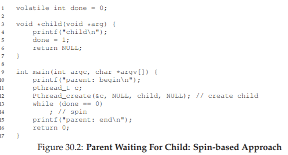
Hình 30.2: Parent chờ Child – Cách tiếp cận Spin-based
THE CRUX: HOW TO WAIT FOR A CONDITION
Trong các chương trình đa luồng, việc một thread chờ cho đến khi một điều kiện trở thành đúng trước khi tiếp tục là rất hữu ích. Cách tiếp cận đơn giản là spin cho đến khi điều kiện đúng, nhưng điều này cực kỳ kém hiệu quả và lãng phí chu kỳ CPU, và trong một số trường hợp có thể không chính xác. Vậy, một thread nên chờ điều kiện như thế nào?
30.1 Định nghĩa và các hàm (Definition and Routines)
Để chờ một điều kiện trở thành đúng, một thread có thể sử dụng cái gọi là condition variable (biến điều kiện). Condition variable là một explicit queue (hàng đợi tường minh) mà các thread có thể tự đưa mình vào khi một trạng thái thực thi nào đó (tức là một điều kiện) chưa như mong muốn (bằng cách wait trên condition); một thread khác, khi thay đổi trạng thái đó, có thể wake (đánh thức) một (hoặc nhiều) thread đang chờ và cho phép chúng tiếp tục (bằng cách signal trên condition).
Ý tưởng này bắt nguồn từ việc Dijkstra sử dụng “private semaphores” [D68]; một ý tưởng tương tự sau đó được Hoare đặt tên là “condition variable” trong công trình của ông về monitor [H74].
Để khai báo một condition variable, ta chỉ cần viết như sau:
pthread_cond_t c;
Điều này khai báo c là một condition variable (lưu ý: cần khởi tạo đúng cách). Một condition variable có hai thao tác liên quan: wait() và signal().
- Lời gọi
wait()được thực thi khi một thread muốn tự đưa mình vào trạng thái ngủ. - Lời gọi
signal()được thực thi khi một thread đã thay đổi điều gì đó trong chương trình và muốn đánh thức một thread đang ngủ chờ trên condition này.
Cụ thể, các call POSIX trông như sau:
pthread_cond_wait(pthread_cond_t *c, pthread_mutex_t *m);
pthread_cond_signal(pthread_cond_t *c);
Chúng ta thường gọi tắt là wait() và signal cho đơn giản. Một điều bạn có thể nhận thấy về wait() là nó cũng nhận một mutex làm tham số; nó giả định rằng mutex này đang được lock khi wait() được gọi.
Nhiệm vụ của wait() là release (nhả) lock và đưa thread gọi hàm vào trạng thái ngủ (atomically – nguyên tử); khi thread được đánh thức (sau khi một thread khác signal nó), nó phải re-acquire (lấy lại) lock trước khi trả quyền điều khiển về cho caller. Sự phức tạp này xuất phát từ mong muốn ngăn chặn một số race condition xảy ra khi một thread đang cố tự đưa mình vào trạng thái ngủ.
Hãy xem giải pháp cho bài toán join (Hình 30.3) để hiểu rõ hơn.

Hình 30.3: Parent chờ Child – Sử dụng Condition Variable
Có hai trường hợp cần xem xét:
-
Trường hợp 1: Parent tạo child thread nhưng tiếp tục chạy (giả sử chỉ có một CPU) và ngay lập tức gọi
thr_join()để chờ child hoàn thành. Trong trường hợp này, nó sẽ acquire lock, kiểm tra xem child đã xong chưa (chưa), và đưa mình vào trạng thái ngủ bằng cách gọiwait()(do đó nhả lock). Child sẽ chạy, in ra “child”, và gọithr_exit()để đánh thức parent; đoạn code này chỉ cần acquire lock, đặt biến trạng tháidone, và signal parent để đánh thức nó. Cuối cùng, parent sẽ chạy (trở về từwait()với lock đang giữ), unlock, và in ra “parent: end”. -
Trường hợp 2: Child chạy ngay khi được tạo, đặt
done = 1, gọisignalđể đánh thức một thread đang ngủ (nhưng không có thread nào, nên chỉ return), và kết thúc. Parent sau đó chạy, gọithr_join(), thấydone = 1, nên không chờ và return.
Một lưu ý cuối: bạn có thể thấy parent dùng vòng lặp while thay vì chỉ if khi quyết định có chờ trên condition hay không. Mặc dù theo logic chương trình thì điều này có vẻ không bắt buộc, nhưng đây luôn là một ý tưởng tốt, như chúng ta sẽ thấy ở phần sau.
Để đảm bảo bạn hiểu tầm quan trọng của từng phần trong code thr_exit() và thr_join(), hãy thử một vài cách triển khai thay thế. Đầu tiên, bạn có thể tự hỏi liệu chúng ta có cần biến trạng thái done hay không. Điều gì sẽ xảy ra nếu code trông như ví dụ dưới đây? (Hình 30.4)

Hình 30.4: Parent Waiting – Không có biến trạng thái
Đáng tiếc, cách tiếp cận này bị lỗi. Hãy tưởng tượng trường hợp child chạy ngay lập tức và gọi thr_exit() ngay lập tức; trong trường hợp này, child sẽ thực hiện signal, nhưng không có thread nào đang ngủ trên condition. Khi parent chạy, nó sẽ chỉ đơn giản gọi wait và bị kẹt; sẽ không có thread nào đánh thức nó. Từ ví dụ này, bạn có thể thấy tầm quan trọng của biến trạng thái done; nó lưu trữ giá trị mà các thread quan tâm. Việc ngủ, đánh thức và khóa đều được xây dựng xoay quanh biến này.
Dưới đây (Hình 30.5) là một cách triển khai kém khác. Trong ví dụ này, ta giả định rằng không cần giữ lock để thực hiện signal và wait. Vấn đề gì có thể xảy ra ở đây? Hãy suy nghĩ1!
void thr_exit() {
done = 1;
Pthread_cond_signal(&c);
}
void thr_join() {
if (done == 0)
Pthread_cond_wait(&c);
}

Hình 30.5: Parent Waiting – Không có lock
Vấn đề ở đây là một race condition tinh vi. Cụ thể, nếu parent gọi thr_join() và sau đó kiểm tra giá trị của done, nó sẽ thấy giá trị là 0 và do đó cố gắng đi ngủ. Nhưng ngay trước khi nó gọi wait để ngủ, parent bị interrupt (ngắt), và child chạy. Child thay đổi biến trạng thái done thành 1 và thực hiện signal, nhưng không có thread nào đang chờ nên không thread nào được đánh thức. Khi parent chạy lại, nó sẽ ngủ mãi mãi — thật đáng buồn.
Hy vọng rằng, từ ví dụ join đơn giản này, bạn có thể thấy một số yêu cầu cơ bản để sử dụng condition variable một cách đúng đắn. Để đảm bảo bạn hiểu, chúng ta sẽ đi qua một ví dụ phức tạp hơn: bài toán producer/consumer hoặc bounded-buffer.
Lưu ý rằng ví dụ này không phải là code “thực”, vì call pthread_cond_wait() luôn yêu cầu một mutex cũng như một condition variable; ở đây, chúng ta chỉ giả định giao diện không yêu cầu mutex để minh họa ví dụ phản ví dụ.
TIP: LUÔN GIỮ LOCK KHI SIGNAL
Mặc dù không phải lúc nào cũng bắt buộc, nhưng đơn giản và tốt nhất là giữ lock khi thực hiện signal với condition variable. Ví dụ trên cho thấy một trường hợp bạn phải giữ lock để đảm bảo tính đúng đắn; tuy nhiên, cũng có một số trường hợp có thể không sao nếu không giữ, nhưng tốt nhất là nên tránh. Vì vậy, để đơn giản, hãy giữ lock khi gọisignal.
Ngược lại, việc giữ lock khi gọiwaitkhông chỉ là một mẹo, mà là bắt buộc theo ngữ nghĩa củawait, vìwaitluôn: (a) giả định lock đang được giữ khi bạn gọi nó, (b) nhả lock khi đưa thread gọi vào trạng thái ngủ, và (c) lấy lại lock ngay trước khi trả về. Do đó, có thể tổng quát hóa mẹo này: giữ lock khi gọisignalhoặcwait, và bạn sẽ luôn an toàn.
30.2 Bài toán Producer/Consumer (Bounded Buffer)
Bài toán đồng bộ hóa tiếp theo mà chúng ta sẽ gặp trong chương này được gọi là producer/consumer problem (bài toán nhà sản xuất/nhà tiêu thụ), hoặc đôi khi là bounded buffer problem (bài toán bộ đệm giới hạn), lần đầu được nêu ra bởi Dijkstra [D72]. Thực tế, chính bài toán producer/consumer này đã dẫn Dijkstra và các cộng sự phát minh ra generalized semaphore (semaphore tổng quát – có thể dùng như lock hoặc condition variable) [D01]; chúng ta sẽ tìm hiểu thêm về semaphore sau.
Hãy tưởng tượng có một hoặc nhiều producer thread (luồng sản xuất) và một hoặc nhiều consumer thread (luồng tiêu thụ). Producer tạo ra các data item (mục dữ liệu) và đặt chúng vào một buffer (bộ đệm); consumer lấy các mục này ra khỏi buffer và tiêu thụ chúng theo một cách nào đó. Mô hình này xuất hiện trong nhiều hệ thống thực tế. Ví dụ, trong một multi-threaded web server (máy chủ web đa luồng), một producer đặt các yêu cầu HTTP vào work queue (hàng đợi công việc – tức bounded buffer); các consumer thread lấy yêu cầu ra khỏi hàng đợi này và xử lý.
Một bounded buffer cũng được sử dụng khi bạn pipe (dùng đường ống) đầu ra của một chương trình vào chương trình khác, ví dụ:
grep foo file.txt | wc -l
Ví dụ này chạy hai process (tiến trình) đồng thời; grep ghi các dòng từ file.txt có chứa chuỗi foo vào cái mà nó nghĩ là standard output (đầu ra chuẩn); UNIX shell chuyển hướng đầu ra này vào một UNIX pipe (được tạo bởi system call pipe). Đầu còn lại của pipe này được kết nối với standard input (đầu vào chuẩn) của tiến trình wc, tiến trình này chỉ đơn giản đếm số dòng trong luồng đầu vào và in ra kết quả. Như vậy, tiến trình grep là producer; tiến trình wc là consumer; giữa chúng là một bounded buffer nằm trong kernel; còn bạn, trong ví dụ này, là người dùng hạnh phúc.
Vì bounded buffer là một tài nguyên chia sẻ, tất nhiên chúng ta phải yêu cầu synchronized access (truy cập đồng bộ) tới nó, nếu không2 sẽ xảy ra race condition. Để bắt đầu hiểu rõ hơn vấn đề này, hãy xem một số đoạn code thực tế. Điều đầu tiên chúng ta cần là một shared buffer (bộ đệm chia sẻ), nơi producer đặt dữ liệu vào, và consumer lấy dữ liệu ra. Để đơn giản, ta chỉ dùng một số nguyên (bạn hoàn toàn có thể tưởng tượng đặt một con trỏ tới một cấu trúc dữ liệu vào đây), và hai hàm nội bộ để đặt một giá trị vào buffer chia sẻ, và lấy một giá trị ra khỏi buffer. Xem Hình 30.6 (trang 6) để biết chi tiết.
Đây là lúc chúng ta dùng một chút tiếng Anh cổ điển, ở thể giả định (subjunctive form).

Hình 30.6: Các hàm Put và Get (phiên bản 1)
Khá đơn giản, đúng không? Hàm put() giả định rằng buffer đang rỗng (và kiểm tra điều này bằng một assertion), sau đó đơn giản đặt một giá trị vào shared buffer (bộ đệm chia sẻ) và đánh dấu nó là đầy bằng cách đặt count thành 1. Hàm get() làm điều ngược lại: đặt buffer về trạng thái rỗng (tức là đặt count thành 0) và trả về giá trị. Đừng lo lắng việc buffer chia sẻ này chỉ có một ô; sau này, chúng ta sẽ tổng quát hóa nó thành một queue (hàng đợi) có thể chứa nhiều phần tử, và điều đó sẽ còn thú vị hơn bạn tưởng.
Bây giờ, chúng ta cần viết một số hàm biết khi nào thì OK để truy cập buffer — hoặc để đặt dữ liệu vào, hoặc để lấy dữ liệu ra. Điều kiện cho việc này khá rõ ràng: chỉ đặt dữ liệu vào buffer khi count bằng 0 (tức là buffer rỗng), và chỉ lấy dữ liệu ra khi count bằng 1 (tức là buffer đầy). Nếu chúng ta viết code đồng bộ hóa mà để producer đặt dữ liệu vào một buffer đã đầy, hoặc consumer lấy dữ liệu từ một buffer rỗng, thì chúng ta đã làm sai (và trong code này, một assertion sẽ kích hoạt).
Công việc này sẽ được thực hiện bởi hai loại thread: một nhóm gọi là producer threads (luồng sản xuất), và nhóm còn lại gọi là consumer threads (luồng tiêu thụ). Hình 30.7 cho thấy code của một producer đặt một số nguyên vào buffer chia sẻ loops lần, và một consumer lấy dữ liệu ra khỏi buffer chia sẻ (liên tục), mỗi lần in ra giá trị mà nó lấy được.
void *producer(void *arg) {
int i;
int loops = (int) arg;
for (i = 0; i < loops; i++) {
put(i);
}
}
void *consumer(void *arg) {
while (1) {
int tmp = get();
printf("%d\n", tmp);
}
}
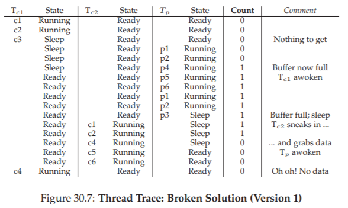
Hình 30.7: Producer/Consumer Threads (phiên bản 1)
Một giải pháp bị lỗi (A Broken Solution)
Bây giờ, hãy tưởng tượng rằng chúng ta chỉ có một producer và một consumer. Rõ ràng, các hàm put() và get() có critical section (vùng tới hạn) bên trong, vì put() cập nhật buffer, và get() đọc từ nó. Tuy nhiên, chỉ đặt một lock bao quanh code là không đủ; chúng ta cần thêm thứ gì đó nữa. Không ngạc nhiên, thứ đó chính là condition variables (biến điều kiện). Trong lần thử đầu tiên (bị lỗi) này (Hình 30.8), chúng ta có một condition variable duy nhất cond và một lock mutex đi kèm.
int loops; // phải được khởi tạo ở đâu đó...
cond_t cond;
mutex_t mutex;
void *producer(void *arg) {
int i;
for (i = 0; i < loops; i++) {
Pthread_mutex_lock(&mutex);
// p1
if (count == 1)
// p2
Pthread_cond_wait(&cond, &mutex); // p3
put(i);
// p4
Pthread_cond_signal(&cond);
// p5
Pthread_mutex_unlock(&mutex);
// p6
}
}
void *consumer(void *arg) {
int i;
for (i = 0; i < loops; i++) {
Pthread_mutex_lock(&mutex);
// c1
if (count == 0)
// c2
Pthread_cond_wait(&cond, &mutex); // c3
int tmp = get();
// c4
Pthread_cond_signal(&cond);
// c5
Pthread_mutex_unlock(&mutex);
// c6
printf("%d\n", tmp);
}
}
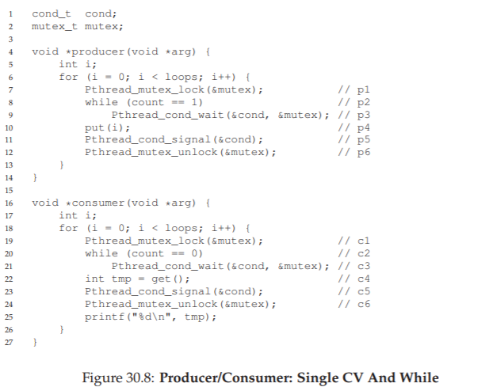
Hình 30.8: Producer/Consumer – Một CV duy nhất và câu lệnh If
Hãy phân tích logic signaling (báo hiệu) giữa producer và consumer. Khi một producer muốn điền dữ liệu vào buffer, nó sẽ chờ cho đến khi buffer rỗng (p1–p3). Consumer có logic tương tự, nhưng chờ một điều kiện khác: buffer đầy (c1–c3).
Với chỉ một producer và một consumer, code trong Hình 30.8 hoạt động. Tuy nhiên, nếu có nhiều hơn một thread thuộc mỗi loại (ví dụ: hai consumer), giải pháp này có hai vấn đề nghiêm trọng. Đó là gì? … (tạm dừng để suy nghĩ) …
Hãy hiểu vấn đề đầu tiên, liên quan đến câu lệnh if trước khi gọi wait. Giả sử có hai consumer (Tc1 và Tc2) và một producer (Tp).
- Đầu tiên, một consumer (Tc1) chạy; nó acquire lock (c1), kiểm tra xem có buffer nào sẵn sàng để tiêu thụ không (c2), và thấy không có, nên gọi
wait(c3) (thao tác này sẽ release lock). - Sau đó, producer (Tp) chạy. Nó acquire lock (p1), kiểm tra xem tất cả buffer đã đầy chưa (p2), và thấy chưa, nên tiếp tục điền dữ liệu vào buffer (p4). Producer sau đó signal rằng buffer đã được điền (p5). Quan trọng là, thao tác này chuyển Tc1 từ trạng thái ngủ trên condition variable sang ready queue; Tc1 giờ đã sẵn sàng chạy (nhưng chưa chạy ngay).
- Producer tiếp tục cho đến khi nhận ra buffer đã đầy, lúc này nó ngủ (p6, p1–p3).
Vấn đề xảy ra ở đây: một consumer khác (Tc2) chen vào và tiêu thụ giá trị duy nhất trong buffer (c1, c2, c4, c5, c6), bỏ qua bước chờ ở c3 vì buffer đang đầy.
Bây giờ, giả sử Tc1 chạy; ngay trước khi trở về từ wait, nó re-acquire lock và sau đó return. Nó gọi get() (c4), nhưng không còn dữ liệu nào trong buffer để tiêu thụ! Một assertion sẽ kích hoạt, và code không hoạt động như mong muốn.
Rõ ràng, chúng ta cần phải ngăn Tc1 cố gắng tiêu thụ khi Tc2 đã “lén” tiêu thụ giá trị duy nhất trong buffer mà producer vừa tạo ra. Hình 30.9 sẽ minh họa hành động của từng thread, cũng như trạng thái của chúng trong scheduler (Ready, Running, hoặc Sleeping) theo thời gian.

Hình 30.9: Vết vạch luồng: Lời giải bị lỗi (phiên bản 1)
Vấn đề phát sinh vì một lý do đơn giản: sau khi producer đánh thức Tc1, nhưng trước khi Tc1 thực sự chạy, trạng thái của bounded buffer đã thay đổi (nhờ Tc2). Việc signal một thread chỉ đơn thuần đánh thức nó; đó là một gợi ý rằng trạng thái hệ thống đã thay đổi (trong trường hợp này là đã có một giá trị được đặt vào buffer), nhưng không có gì đảm bảo rằng khi thread được đánh thức chạy, trạng thái vẫn còn như mong muốn. Cách diễn giải ý nghĩa của signal này thường được gọi là ngữ nghĩa Mesa (Mesa semantics), theo công trình nghiên cứu đầu tiên xây dựng condition variable theo cách như vậy [LR80]; ngược lại là ngữ nghĩa Hoare (Hoare semantics), khó xây dựng hơn nhưng đưa ra bảo đảm mạnh hơn rằng thread được đánh thức sẽ chạy ngay lập tức khi được đánh thức [H74]. Hầu như mọi hệ thống từng được xây dựng đều sử dụng ngữ nghĩa Mesa.
Tốt hơn, nhưng vẫn lỗi: While, không phải If
May mắn thay, cách khắc phục khá dễ (Hình 30.10): đổi if thành while. Hãy suy nghĩ vì sao điều này hoạt động; lúc này, consumer Tc1 thức dậy và (khi đang giữ lock) lập tức kiểm tra lại trạng thái biến chia sẻ (c2). Nếu tại thời điểm đó buffer rỗng, consumer đơn giản quay lại ngủ (c3). Mệnh đề if tương ứng trong producer (p2) cũng được đổi thành while.
int loops;
cond_t cond;
mutex_t mutex;
void *producer(void *arg) {
int i;
for (i = 0; i < loops; i++) {
Pthread_mutex_lock(&mutex);
// p1
while (count == 1)
// p2
Pthread_cond_wait(&cond, &mutex); // p3
put(i);
// p4
Pthread_cond_signal(&cond);
// p5
Pthread_mutex_unlock(&mutex);
// p6
}
}
void *consumer(void *arg) {
int i;
for (i = 0; i < loops; i++) {
Pthread_mutex_lock(&mutex);
// c1
while (count == 0)
// c2
Pthread_cond_wait(&cond, &mutex); // c3
int tmp = get();
// c4
Pthread_cond_signal(&cond);
// c5
Pthread_mutex_unlock(&mutex);
// c6
printf("%d\n", tmp);
}
}
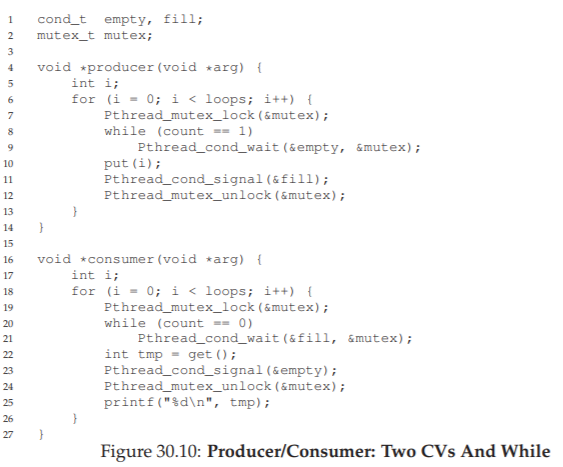
Hình 30.10: Producer/Consumer — Một CV duy nhất và dùng While
Nhờ ngữ nghĩa Mesa, một quy tắc đơn giản cần ghi nhớ khi dùng condition variable là luôn dùng vòng lặp while. Đôi khi bạn không cần kiểm tra lại điều kiện, nhưng việc kiểm tra lại luôn an toàn; cứ làm vậy và yên tâm.
Tuy nhiên, đoạn code này vẫn còn một lỗi — lỗi thứ hai trong hai vấn đề đã nêu. Bạn thấy được không? Nó liên quan đến việc chỉ có một condition variable. Hãy thử tìm ra vấn đề trước khi đọc tiếp. LÀM ĐI! (tạm dừng để bạn suy nghĩ, hoặc nhắm mắt lại...)

Hình 30.11: Vết vạch luồng: Lời giải bị lỗi (phiên bản 2)
Hãy xác nhận rằng bạn đã tìm ra đúng (hoặc ít nhất là bạn đang tỉnh táo và đọc phần này của sách). Vấn đề xảy ra khi hai consumer chạy trước (Tc1 và Tc2) và cả hai đều đi ngủ (c3). Sau đó, producer chạy, đặt một giá trị vào buffer, và đánh thức một trong các consumer (giả sử Tc1). Producer sau đó lặp lại (giải phóng và acquire lại lock trong quá trình) và cố đặt thêm dữ liệu vào buffer; vì buffer đầy, producer thay vào đó chờ trên condition (đi ngủ). Lúc này, một consumer sẵn sàng chạy (Tc1), và hai thread đang ngủ trên condition (Tc2 và Tp). Chúng ta sắp gây ra một vấn đề: mọi thứ đang trở nên “hấp dẫn”!
Consumer Tc1 sau đó thức dậy bằng cách trả về từ wait() (c3), kiểm tra lại điều kiện (c2), và thấy buffer đầy, nên tiêu thụ giá trị (c4). Consumer này sau đó, quan trọng là, thực hiện signal trên condition (c5), chỉ đánh thức một thread đang ngủ. Tuy nhiên, nó nên đánh thức thread nào? Vì consumer vừa làm rỗng buffer, rõ ràng nó nên đánh thức producer. Tuy nhiên, nếu nó lại đánh thức consumer Tc2 (điều này hoàn toàn có thể, tùy cách quản lý hàng đợi chờ), chúng ta gặp vấn đề. Cụ thể, consumer Tc2 sẽ thức dậy và thấy buffer rỗng (c2), rồi quay lại ngủ (c3). Producer Tp, vốn đang có giá trị để đặt vào buffer, thì vẫn còn ngủ. Consumer còn lại, Tc1, cũng quay lại ngủ. Cả ba thread đều rơi vào trạng thái ngủ — một lỗi hiển nhiên; xem Hình 30.11 để thấy trình tự “thảm họa” này từng bước. Rõ ràng cần có signaling, nhưng phải có định hướng hơn. Một consumer không nên đánh thức consumer khác, mà chỉ đánh thức producer, và ngược lại.
Lời giải cho producer/consumer với bộ đệm đơn (The Single Buffer Producer/Consumer Solution)
Lời giải ở đây một lần nữa rất nhỏ gọn: dùng hai condition variable thay vì một, để signal đúng kiểu thread cần được đánh thức khi trạng thái hệ thống thay đổi. Hình 30.12 cho thấy đoạn code kết quả.

Hình 30.12: Producer/Consumer – Hai Condition Variable và While
Trong đoạn code này, producer thread sẽ wait trên condition empty và signal fill. Ngược lại, consumer thread sẽ wait trên fill và signal empty. Bằng cách này, vấn đề thứ hai đã nêu ở trên được loại bỏ ngay từ thiết kế: một consumer sẽ không bao giờ vô tình đánh thức một consumer khác, và một producer cũng sẽ không bao giờ vô tình đánh thức một producer khác.
Giải pháp Producer/Consumer đúng
Giờ đây, chúng ta đã có một giải pháp producer/consumer hoạt động, dù chưa phải là tổng quát hoàn toàn. Thay đổi cuối cùng chúng ta thực hiện là cho phép tăng concurrency (tính đồng thời) và hiệu suất; cụ thể, chúng ta thêm nhiều buffer slot (ô đệm) hơn, để có thể sản xuất nhiều giá trị trước khi phải ngủ, và tương tự, có thể tiêu thụ nhiều giá trị trước khi phải ngủ.
Với chỉ một producer và một consumer, cách tiếp cận này hiệu quả hơn vì giảm số lần context switch; với nhiều producer hoặc consumer (hoặc cả hai), nó thậm chí cho phép nhiều hoạt động sản xuất hoặc tiêu thụ diễn ra đồng thời, từ đó tăng concurrency. May mắn thay, đây chỉ là một thay đổi nhỏ so với giải pháp hiện tại.

Hình 30.13: Các hàm Put và Get đúng
TIP: DÙNG WHILE (KHÔNG PHẢI IF) CHO CÁC ĐIỀU KIỆN
Khi kiểm tra một điều kiện trong chương trình đa luồng, dùng vòng lặpwhileluôn đúng; dùng câu lệnhifthì có thể đúng, tùy thuộc vào ngữ nghĩa của signaling. Vì vậy, hãy luôn dùngwhilevà code của bạn sẽ hoạt động như mong đợi.Việc dùng
whilebao quanh các kiểm tra điều kiện cũng xử lý được trường hợp spurious wakeup (đánh thức giả). Trong một số thư viện thread, do chi tiết triển khai, có thể xảy ra tình huống hai thread được đánh thức dù chỉ có một signal diễn ra [L11]. Spurious wakeup là một lý do nữa để luôn kiểm tra lại điều kiện mà thread đang chờ.

Hình 30.14: Đồng bộ hóa Producer/Consumer đúng
Thay đổi đầu tiên cho giải pháp đúng này nằm trong chính cấu trúc buffer và các hàm put() và get() tương ứng (Hình 30.13). Chúng ta cũng thay đổi nhẹ các điều kiện mà producer và consumer kiểm tra để quyết định có nên ngủ hay không. Đồng thời, chúng ta cũng thể hiện logic wait và signal đúng (Hình 30.14).
- Producer chỉ ngủ nếu tất cả buffer hiện đang đầy (p2).
- Consumer chỉ ngủ nếu tất cả buffer hiện đang rỗng (c2).
Và như vậy, chúng ta đã giải quyết xong bài toán producer/consumer; giờ là lúc ngồi xuống và thưởng thức một ly nước mát.
30.3 Covering Conditions
Bây giờ, chúng ta sẽ xem thêm một ví dụ nữa về cách sử dụng condition variable. Nghiên cứu mã nguồn này được trích từ bài báo của Lampson và Redell về hệ điều hành Pilot [LR80], cùng nhóm tác giả đã triển khai ngữ nghĩa Mesa được mô tả ở trên (ngôn ngữ họ dùng là Mesa, do đó có tên gọi này).
Vấn đề họ gặp phải được minh họa rõ nhất qua một ví dụ đơn giản: một thư viện multi-threaded memory allocation (cấp phát bộ nhớ đa luồng) đơn giản. Hình 30.15 cho thấy một đoạn code minh họa vấn đề.

Hình 30.15: Covering Conditions – Một ví dụ
Như bạn có thể thấy trong code, khi một thread gọi vào hàm cấp phát bộ nhớ, nó có thể phải chờ cho đến khi có thêm bộ nhớ được giải phóng. Ngược lại, khi một thread giải phóng bộ nhớ, nó sẽ signal rằng đã có thêm bộ nhớ trống.
Tuy nhiên, code trên có một vấn đề: thread nào (trong số nhiều thread có thể đang chờ) sẽ được đánh thức?
Hãy xét kịch bản sau:
- Giả sử hiện có 0 byte bộ nhớ trống; thread Ta gọi
allocate(100), tiếp theo là thread Tb gọiallocate(10)(yêu cầu ít bộ nhớ hơn). - Cả Ta và Tb đều phải wait trên condition và đi ngủ; hiện không đủ bộ nhớ trống để đáp ứng bất kỳ yêu cầu nào.
Tại thời điểm đó, giả sử một thread thứ ba, Tc, gọi free(50). Đáng tiếc, khi nó gọi signal để đánh thức một thread đang chờ, nó có thể không đánh thức đúng thread — cụ thể là Tb, thread chỉ cần 10 byte; trong khi Ta vẫn nên tiếp tục chờ vì chưa đủ bộ nhớ trống.
Do đó, code trong hình không hoạt động đúng, vì thread đánh thức các thread khác không biết thread nào (hoặc những thread nào) cần được đánh thức.
Giải pháp mà Lampson và Redell đề xuất khá đơn giản: thay call pthread_cond_signal() trong code trên bằng pthread_cond_broadcast(), lệnh này sẽ đánh thức tất cả các thread đang chờ. Bằng cách này, chúng ta đảm bảo rằng mọi thread cần được đánh thức sẽ được đánh thức.
Nhược điểm, tất nhiên, là ảnh hưởng hiệu năng tiêu cực, vì có thể chúng ta sẽ đánh thức không cần thiết nhiều thread chưa nên thức. Những thread này sẽ chỉ đơn giản thức dậy, kiểm tra lại điều kiện, rồi lập tức quay lại ngủ.
Lampson và Redell gọi loại condition này là covering condition, vì nó bao quát tất cả các trường hợp mà một thread cần được đánh thức (theo hướng bảo thủ); cái giá phải trả, như đã nói, là có thể đánh thức quá nhiều thread.
Người đọc tinh ý có thể nhận ra rằng chúng ta có thể đã dùng cách tiếp cận này trước đó (xem bài toán producer/consumer với chỉ một condition variable). Tuy nhiên, trong trường hợp đó, chúng ta có một giải pháp tốt hơn, nên đã sử dụng nó.
Nói chung, nếu bạn thấy chương trình của mình chỉ hoạt động khi bạn đổi các lệnh signal thành broadcast (nhưng bạn nghĩ rằng lẽ ra không cần), thì có thể bạn đang có một bug; hãy sửa nó! Nhưng trong những trường hợp như bộ cấp phát bộ nhớ ở trên, broadcast có thể là giải pháp đơn giản và hiệu quả nhất.
30.4 Tóm tắt
Chúng ta đã được giới thiệu một synchronization primitive (nguyên thủy đồng bộ hóa) quan trọng khác ngoài lock: condition variable.
Bằng cách cho phép các thread ngủ khi trạng thái chương trình chưa như mong muốn, condition variable giúp chúng ta giải quyết gọn gàng nhiều vấn đề đồng bộ hóa quan trọng, bao gồm bài toán nổi tiếng (và vẫn còn quan trọng) producer/consumer, cũng như covering condition.
Một câu kết ấn tượng có thể được đặt ở đây, chẳng hạn như: “He loved Big Brothe…”
31. Semaphores (Cơ chế Semaphore)
Như chúng ta đã biết, để giải quyết được một loạt các vấn đề concurrency (tính đồng thời) quan trọng và thú vị, chúng ta cần cả lock (khóa) và condition variable (biến điều kiện). Một trong những người đầu tiên nhận ra điều này từ nhiều năm trước là Edsger Dijkstra (mặc dù thật khó để biết chính xác lịch sử [GR92]). Ông nổi tiếng với nhiều đóng góp, như thuật toán “shortest paths” (đường đi ngắn nhất) trong lý thuyết đồ thị [D59], bài viết gây tiếng vang về lập trình có cấu trúc mang tên “Goto Statements Considered Harmful” [D68a] (một tiêu đề tuyệt vời!), và trong trường hợp chúng ta nghiên cứu ở đây — việc giới thiệu một synchronization primitive (nguyên thủy đồng bộ hóa) gọi là semaphore [D68b, D72]. Thực tế, Dijkstra và các cộng sự đã phát minh ra semaphore như một nguyên thủy duy nhất cho mọi thứ liên quan đến đồng bộ hóa; như bạn sẽ thấy, có thể dùng semaphore như cả lock và condition variable.
THE CRUX: CÁCH SỬ DỤNG SEMAPHORE
Làm thế nào để dùng semaphore thay cho lock và condition variable? Định nghĩa của semaphore là gì? Binary semaphore là gì? Có dễ dàng xây dựng semaphore từ lock và condition variable không? Và ngược lại, có thể xây dựng lock và condition variable từ semaphore không?
31.1 Semaphores: Định nghĩa
Semaphore là một đối tượng có một giá trị nguyên, mà chúng ta có thể thao tác thông qua hai hàm; trong chuẩn POSIX, các hàm này là sem_wait() và sem_post()1. Vì giá trị khởi tạo của semaphore quyết định hành vi của nó, trước khi gọi bất kỳ hàm nào khác để tương tác với semaphore, chúng ta phải khởi tạo nó với một giá trị, như trong Hình 31.1.
Lịch sử: sem_wait() ban đầu được Dijkstra gọi là P() và sem_post() là V(). Các dạng viết tắt này xuất phát từ tiếng Hà Lan; thú vị là các từ gốc tiếng Hà Lan này đã thay đổi theo thời gian. Ban đầu, P() đến từ “passering” (đi qua) và V() từ “vrijgave” (giải phóng); sau này, Dijkstra viết rằng P() đến từ “prolaag” (ghép của “probeer” – thử và “verlaag” – giảm), và V() từ “verhoog” – tăng. Đôi khi, người ta gọi chúng là down và up. Bạn có thể dùng các phiên bản tiếng Hà Lan này để gây ấn tượng với bạn bè, hoặc làm họ bối rối, hoặc cả hai. Xem thêm tại https://news.ycombinator.com/item?id=8761539.
#include <semaphore.h>
sem_t s;
sem_init(&s, 0, 1);

Hình 31.1: Khởi tạo một Semaphore
Trong hình, chúng ta khai báo một semaphore s và khởi tạo nó với giá trị 1 (tham số thứ ba). Tham số thứ hai của sem_init() sẽ được đặt là 0 trong tất cả các ví dụ chúng ta sẽ thấy; điều này cho biết semaphore được chia sẻ giữa các thread trong cùng một process (tiến trình). Xem trang man để biết chi tiết các cách sử dụng khác của semaphore (ví dụ: đồng bộ hóa giữa các process khác nhau), khi đó tham số thứ hai sẽ có giá trị khác.
Sau khi semaphore được khởi tạo, chúng ta có thể gọi một trong hai hàm để tương tác với nó: sem_wait() hoặc sem_post(). Hành vi của hai hàm này được mô tả trong Hình 31.2.
Hiện tại, chúng ta chưa quan tâm đến cách triển khai các hàm này, vốn rõ ràng cần được xử lý cẩn thận; với nhiều thread cùng gọi sem_wait() và sem_post(), cần phải quản lý các critical section (vùng tới hạn) bên trong chúng. Giờ chúng ta sẽ tập trung vào cách sử dụng các primitive này; sau đó có thể bàn về cách chúng được xây dựng.
Một số điểm quan trọng về giao diện này:
- Thứ nhất,
sem_wait()sẽ hoặc trả về ngay (nếu giá trị của semaphore ≥ 1 khi gọi), hoặc sẽ khiến thread gọi bị suspend (tạm dừng) để chờ một lần post tiếp theo. Tất nhiên, nhiều thread có thể cùng gọisem_wait()và tất cả sẽ được xếp hàng chờ được đánh thức. - Thứ hai,
sem_post()không chờ một điều kiện cụ thể nhưsem_wait(); nó chỉ đơn giản tăng giá trị của semaphore và nếu có thread đang chờ, sẽ đánh thức một thread. - Thứ ba, giá trị của semaphore, khi âm, bằng đúng số lượng thread đang chờ [D68b]. Mặc dù giá trị này thường không được hiển thị cho người dùng semaphore, nhưng đây là một bất biến đáng biết và có thể giúp bạn nhớ cách semaphore hoạt động.
int sem_wait(sem_t *s) {
decrement the value of semaphore s by one
wait if value of semaphore s is negative
}
int sem_post(sem_t *s) {
increment the value of semaphore s by one
if there are one or more threads waiting, wake one
}
Hình 31.2: Semaphore – Định nghĩa Wait và Post
Đừng lo (vội) về các race condition có thể xảy ra bên trong semaphore; giả định rằng các thao tác này được thực hiện atomically (nguyên tử). Chúng ta sẽ sớm dùng lock và condition variable để đảm bảo điều này.
31.2 Binary Semaphores (Dùng như Lock)
Giờ chúng ta sẵn sàng sử dụng semaphore. Cách dùng đầu tiên là một trường hợp quen thuộc: dùng semaphore như một lock. Xem Hình 31.3; ở đó, bạn sẽ thấy chúng ta chỉ cần bao quanh critical section cần bảo vệ bằng cặp sem_wait()/sem_post(). Điều quan trọng để cơ chế này hoạt động là giá trị khởi tạo của semaphore m (được khởi tạo với X trong hình). Vậy X nên là bao nhiêu?
...(Hãy thử suy nghĩ trước khi đọc tiếp)...
sem_t m;
sem_init(&m, 0, X); // init to X; what should X be?
sem_wait(&m);
// critical section here
sem_post(&m);

Hình 31.3: Binary Semaphore (tức là Lock)
Nhìn lại định nghĩa của sem_wait() và sem_post() ở trên, ta thấy giá trị khởi tạo nên là 1.
Để làm rõ, hãy tưởng tượng kịch bản với hai thread. Thread đầu tiên (Thread 0) gọi sem_wait(); nó sẽ giảm giá trị của semaphore xuống 0. Sau đó, nó sẽ chỉ chờ nếu giá trị nhỏ hơn 0. Vì giá trị là 0, sem_wait() sẽ trả về ngay và thread gọi tiếp tục; Thread 0 giờ được vào critical section. Nếu không có thread nào khác cố lấy lock khi Thread 0 đang ở trong critical section, khi nó gọi sem_post(), giá trị semaphore sẽ được khôi phục về 1 (và không đánh thức thread nào vì không có ai đang chờ). Hình 31.4 sẽ cho thấy vết thực thi (trace) của kịch bản này.

Hình 31.4: Vết thực thi của luồng – Một luồng sử dụng Semaphore
Một trường hợp thú vị hơn xảy ra khi Thread 0 “giữ lock” (tức là đã gọi sem_wait() nhưng chưa gọi sem_post()), và một luồng khác (Thread 1) cố gắng vào critical section (vùng tới hạn) bằng cách gọi sem_wait().
Trong trường hợp này, Thread 1 sẽ giảm giá trị của semaphore xuống -1, và do đó sẽ phải wait (tự đưa mình vào trạng thái ngủ và nhường CPU). Khi Thread 0 chạy lại, nó sẽ gọi sem_post(), tăng giá trị của semaphore trở lại 0, và sau đó đánh thức luồng đang chờ (Thread 1). Lúc này, Thread 1 sẽ có thể tự acquire lock. Khi Thread 1 hoàn tất, nó sẽ lại tăng giá trị của semaphore, khôi phục nó về 1.
Hình 31.5: Vết thực thi của luồng – Hai luồng sử dụng Semaphore
Hình 31.5 minh họa vết thực thi của ví dụ này. Ngoài các hành động của luồng, hình còn cho thấy trạng thái scheduler của mỗi luồng:
- Run (luồng đang chạy)
- Ready (có thể chạy nhưng chưa được chạy)
- Sleep (luồng đang bị block).
Lưu ý rằng Thread 1 sẽ chuyển sang trạng thái sleeping khi cố gắng acquire một lock đang bị giữ; chỉ khi Thread 0 chạy lại thì Thread 1 mới có thể được đánh thức và có khả năng chạy tiếp.
Nếu bạn muốn tự thực hành, hãy thử một kịch bản trong đó nhiều luồng xếp hàng chờ lock. Giá trị của semaphore sẽ là bao nhiêu trong vết thực thi như vậy?
Như vậy, chúng ta có thể dùng semaphore như lock. Vì lock chỉ có hai trạng thái (held – đang bị giữ và not held – không bị giữ), đôi khi chúng ta gọi semaphore dùng như lock là binary semaphore. Lưu ý rằng nếu bạn chỉ dùng semaphore theo cách nhị phân này, nó có thể được triển khai đơn giản hơn so với semaphore tổng quát mà chúng ta trình bày ở đây.
31.3 Semaphores cho việc sắp xếp thứ tự (Semaphores For Ordering)
Semaphore cũng hữu ích để sắp xếp thứ tự các sự kiện trong một chương trình đồng thời. Ví dụ, một luồng có thể muốn chờ cho đến khi một danh sách không còn rỗng, để nó có thể xóa một phần tử khỏi danh sách.
Trong mô hình sử dụng này, thường có một luồng chờ một sự kiện xảy ra, và một luồng khác tạo ra sự kiện đó rồi signal rằng nó đã xảy ra, từ đó đánh thức luồng đang chờ. Chúng ta đang dùng semaphore như một ordering primitive (nguyên thủy sắp xếp thứ tự), tương tự như cách chúng ta đã dùng condition variable trước đây.
Một ví dụ đơn giản như sau: giả sử một luồng tạo ra một luồng khác và muốn chờ cho đến khi luồng đó hoàn tất thực thi (Hình 31.6). Khi chương trình này chạy, chúng ta muốn thấy kết quả:
parent: begin
child
parent: end
Câu hỏi đặt ra là: làm thế nào để dùng semaphore đạt được hiệu ứng này? Thực tế, câu trả lời khá dễ hiểu.
Như bạn thấy trong code, parent chỉ cần gọi sem_wait() và child gọi sem_post() để chờ cho đến khi điều kiện “child hoàn thành” trở thành đúng.
Tuy nhiên, điều này dẫn đến câu hỏi: giá trị khởi tạo của semaphore này nên là bao nhiêu?
(Một lần nữa, hãy thử suy nghĩ trước khi đọc tiếp)

Hình 31.6: Parent chờ Child
Câu trả lời, tất nhiên, là giá trị của semaphore nên được đặt là 0. Có hai trường hợp cần xem xét:
-
Trường hợp 1: Parent tạo child nhưng child chưa chạy (tức là đang ở trong ready queue nhưng chưa được chạy). Trong trường hợp này (Hình 31.7, trang 6), parent sẽ gọi
sem_wait()trước khi child gọisem_post(); chúng ta muốn parent phải chờ cho đến khi child chạy. Cách duy nhất để điều này xảy ra là giá trị của semaphore không lớn hơn 0; do đó, giá trị khởi tạo phải là 0.Parent chạy, giảm giá trị semaphore xuống -1, rồi wait (ngủ). Khi child cuối cùng chạy, nó sẽ gọi
sem_post(), tăng giá trị semaphore lên 0, và đánh thức parent, lúc này sẽ return từsem_wait()và kết thúc chương trình.

Hình 31.7: Vết thực thi luồng – Parent chờ Child (Trường hợp 1)

Hình 31.8: Vết thực thi luồng – Parent chờ Child (Trường hợp 2)
Trường hợp thứ hai (Hình 31.8) xảy ra khi child chạy xong hoàn toàn trước khi parent có cơ hội gọi sem_wait(). Trong trường hợp này, child sẽ gọi sem_post() trước, do đó tăng giá trị của semaphore từ 0 lên 1. Khi parent sau đó được chạy, nó sẽ gọi sem_wait() và thấy giá trị của semaphore là 1; parent sẽ giảm giá trị này xuống 0 và trả về từ sem_wait() mà không phải chờ, vẫn đạt được hiệu ứng mong muốn.
31.4 Bài toán Producer/Consumer (Bounded Buffer)
Vấn đề tiếp theo mà chúng ta sẽ gặp trong chương này được gọi là producer/consumer problem (bài toán nhà sản xuất/nhà tiêu thụ), hoặc đôi khi là bounded buffer problem (bài toán bộ đệm giới hạn) [D72]. Vấn đề này đã được mô tả chi tiết trong chương trước về condition variable; bạn có thể xem lại ở đó để biết chi tiết.
ASIDE: THIẾT LẬP GIÁ TRỊ CHO SEMAPHORE
Chúng ta vừa thấy hai ví dụ về việc khởi tạo semaphore. Trong trường hợp đầu tiên, ta đặt giá trị là 1 để dùng semaphore như một lock; trong trường hợp thứ hai, đặt giá trị là 0 để dùng semaphore cho mục đích ordering (sắp xếp thứ tự). Vậy quy tắc tổng quát để khởi tạo semaphore là gì?
Một cách đơn giản để suy nghĩ, nhờ gợi ý của Perry Kivolowitz, là hãy xem xét số lượng tài nguyên bạn sẵn sàng “phát” ngay sau khi khởi tạo. Với lock, giá trị là 1, vì bạn sẵn sàng cho phép lock được “giữ” ngay sau khi khởi tạo. Với trường hợp ordering, giá trị là 0, vì ban đầu không có gì để “phát”; chỉ khi child thread hoàn thành thì tài nguyên mới được tạo ra, lúc đó giá trị mới được tăng lên 1. Hãy thử áp dụng cách suy nghĩ này cho các bài toán semaphore sau này và xem nó có giúp ích không.
Lần thử đầu tiên
Trong lần thử đầu tiên để giải quyết vấn đề, chúng ta giới thiệu hai semaphore: empty và full, mà các thread sẽ dùng để biểu thị khi một ô trong buffer đã được làm rỗng hoặc đã được lấp đầy. Code cho các hàm put và get nằm trong Hình 31.9, và cách chúng ta thử giải quyết bài toán producer/consumer nằm trong Hình 31.10 (trang 8).

Hình 31.10: Thêm điều kiện Full và Empty
Trong ví dụ này, producer trước tiên sẽ chờ cho đến khi một buffer rỗng để đặt dữ liệu vào, và consumer tương tự sẽ chờ cho đến khi một buffer đầy trước khi sử dụng nó.
Trước hết, hãy giả sử MAX=1 (chỉ có một buffer trong mảng), và xem điều này có hoạt động không.
Giả sử có hai thread: một producer và một consumer. Hãy xét một kịch bản cụ thể trên một CPU đơn. Giả sử consumer chạy trước. Khi đó, consumer sẽ đến dòng C1 trong Hình 31.10, gọi sem_wait(&full). Vì full được khởi tạo với giá trị 0, call này sẽ giảm full xuống -1, chặn consumer lại, và chờ một thread khác gọi sem_post() trên full, đúng như mong muốn.
Giả sử producer sau đó chạy. Nó sẽ đến dòng P1, gọi sem_wait(&empty). Không giống consumer, producer sẽ tiếp tục qua dòng này, vì empty được khởi tạo với giá trị MAX (trong trường hợp này là 1). Do đó, empty sẽ bị giảm xuống 0 và producer sẽ đặt một giá trị dữ liệu vào ô đầu tiên của buffer (dòng P2). Producer sau đó tiếp tục đến P3 và gọi sem_post(&full), thay đổi giá trị của semaphore full từ -1 lên 0 và đánh thức consumer (ví dụ: chuyển nó từ trạng thái blocked sang ready).
Trong trường hợp này, có thể xảy ra một trong hai tình huống:
- Nếu producer tiếp tục chạy, nó sẽ lặp lại và đến dòng P1 lần nữa. Lần này, nó sẽ bị chặn, vì giá trị của
emptylà 0. - Nếu producer bị ngắt và consumer bắt đầu chạy, consumer sẽ return từ
sem_wait(&full)(dòng C1), thấy buffer đã đầy và tiêu thụ nó.
Dù theo cách nào, chúng ta cũng đạt được hành vi mong muốn.
Bạn có thể thử ví dụ này với nhiều thread hơn (ví dụ: nhiều producer và nhiều consumer). Nó vẫn sẽ hoạt động.
Bây giờ, hãy giả sử MAX lớn hơn 1 (ví dụ MAX=10). Trong ví dụ này, giả sử có nhiều producer và nhiều consumer. Lúc này, chúng ta gặp một vấn đề: race condition. Bạn có thấy nó xảy ra ở đâu không? (hãy dành thời gian quan sát) Nếu chưa thấy, gợi ý là: hãy nhìn kỹ hơn vào code của put() và get().
OK, hãy phân tích vấn đề. Giả sử có hai producer (Pa và Pb) cùng gọi put() gần như đồng thời. Giả sử producer Pa chạy trước, và bắt đầu ghi dữ liệu vào ô đầu tiên của buffer (fill=0 tại dòng F1). Trước khi Pa kịp tăng biến đếm fill lên 1, nó bị ngắt. Producer Pb bắt đầu chạy, và tại dòng F1 nó cũng ghi dữ liệu vào phần tử thứ 0 của buffer, nghĩa là dữ liệu cũ ở đó bị ghi đè! Đây là hành động không được phép; chúng ta không muốn dữ liệu từ producer bị mất.
Giải pháp: Thêm Mutual Exclusion
Như bạn thấy, điều chúng ta quên ở đây là mutual exclusion (loại trừ lẫn nhau). Việc ghi dữ liệu vào buffer và tăng chỉ số fill là một critical section và do đó phải được bảo vệ cẩn thận. Vì vậy, hãy dùng binary semaphore như một lock. Hình 31.11 cho thấy cách chúng ta thử áp dụng.

Hình 31.11: Thêm Mutual Exclusion (Sai cách)
Giờ đây, chúng ta đã thêm một số lock bao quanh toàn bộ phần put()/get() của code, như được đánh dấu bởi các chú thích NEW LINE. Nghe có vẻ là một ý tưởng đúng, nhưng thực tế lại không hoạt động. Tại sao? Deadlock.
Vì sao deadlock xảy ra? Hãy dành chút thời gian suy nghĩ; thử tìm một tình huống mà deadlock xuất hiện. Trình tự các bước nào phải xảy ra để chương trình rơi vào deadlock?
Tránh Deadlock
OK, bây giờ khi bạn đã tìm ra, đây là câu trả lời. Hãy tưởng tượng có hai thread, một producer và một consumer. Consumer chạy trước. Nó acquire mutex (dòng C0), sau đó gọi sem_wait() trên semaphore full (dòng C1); vì chưa có dữ liệu nào, call này khiến consumer bị block và nhường CPU; quan trọng là, consumer vẫn đang giữ lock.
Sau đó, producer chạy. Nó có dữ liệu để sản xuất và nếu có thể chạy, nó sẽ đánh thức consumer và mọi thứ sẽ ổn. Nhưng đáng tiếc, việc đầu tiên nó làm là gọi sem_wait() trên semaphore nhị phân mutex (dòng P0). Lock này đã bị giữ. Do đó, producer cũng bị kẹt chờ.
Ở đây hình thành một vòng lặp đơn giản: consumer giữ mutex và đang chờ ai đó signal full. Producer có thể signal full nhưng lại đang chờ mutex. Kết quả là producer và consumer đều kẹt chờ nhau: một deadlock kinh điển.
Cuối cùng, một giải pháp hoạt động
Để giải quyết vấn đề này, chúng ta chỉ cần giảm phạm vi của lock. Hình 31.12 (trang 10) cho thấy giải pháp đúng. Như bạn thấy, chúng ta chỉ cần di chuyển phần acquire và release mutex để bao quanh đúng critical section; phần code wait và signal trên full và empty được để bên ngoài2.
Kết quả là một bounded buffer đơn giản và hoạt động đúng — một mẫu thường được sử dụng trong các chương trình đa luồng. Hiểu nó ngay bây giờ; dùng nó sau này. Bạn sẽ cảm ơn chúng tôi trong nhiều năm tới. Hoặc ít nhất, bạn sẽ cảm ơn khi câu hỏi tương tự xuất hiện trong kỳ thi cuối kỳ, hoặc trong một buổi phỏng vấn xin việc.
Hình 31.12: Thêm Mutual Exclusion (Đúng cách)
Thực tế, sẽ tự nhiên hơn nếu đặt phần acquire/release mutex bên trong các hàm put() và get() để đảm bảo tính mô-đun.
31.5 Reader-Writer Locks
Một vấn đề kinh điển khác xuất phát từ nhu cầu có một locking primitive (nguyên thủy khóa) linh hoạt hơn, cho phép các thao tác truy cập cấu trúc dữ liệu khác nhau có thể yêu cầu các loại khóa khác nhau.
Ví dụ: hãy tưởng tượng có nhiều thao tác đồng thời trên một danh sách, bao gồm insert (chèn) và lookup (tra cứu) đơn giản. Trong khi insert thay đổi trạng thái của danh sách (vì vậy critical section truyền thống là hợp lý), lookup chỉ đọc cấu trúc dữ liệu; miễn là chúng ta đảm bảo không có insert nào đang diễn ra, ta có thể cho phép nhiều lookup chạy đồng thời.
Loại lock đặc biệt mà chúng ta sẽ phát triển để hỗ trợ kiểu hoạt động này được gọi là reader-writer lock [CHP71]. Code cho loại lock này được thể hiện trong Hình 31.13 (trang 12).
Hình 31.13: Một Reader-Writer Lock đơn giản
Code khá đơn giản. Nếu một thread muốn update (cập nhật) cấu trúc dữ liệu, nó sẽ gọi cặp hàm đồng bộ mới:
rwlock_acquire_writelock()để acquire write lockrwlock_release_writelock()để release write lock
Bên trong, chúng chỉ đơn giản sử dụng semaphore writelock để đảm bảo chỉ một writer có thể acquire lock và do đó vào critical section để cập nhật cấu trúc dữ liệu.
Điều thú vị hơn là cặp hàm acquire và release read lock. Khi acquire read lock, reader trước tiên acquire lock và sau đó tăng biến readers để theo dõi số lượng reader hiện đang ở trong cấu trúc dữ liệu.
Bước quan trọng trong rwlock_acquire_readlock() xảy ra khi reader đầu tiên acquire lock; trong trường hợp đó, reader này cũng acquire write lock bằng cách gọi sem_wait() trên semaphore writelock, sau đó release lock bằng cách gọi sem_post().
Như vậy, khi một reader đã acquire read lock, các reader khác cũng sẽ được phép acquire read lock; tuy nhiên, bất kỳ thread nào muốn acquire write lock sẽ phải chờ cho đến khi tất cả reader hoàn tất; reader cuối cùng rời critical section sẽ gọi sem_post() trên writelock và cho phép writer đang chờ acquire lock.
Cách tiếp cận này hoạt động (đúng như mong muốn), nhưng có một số nhược điểm, đặc biệt là về fairness (tính công bằng). Cụ thể, rất dễ để reader khiến writer bị starvation (đói tài nguyên). Có những giải pháp tinh vi hơn cho vấn đề này; có lẽ bạn có thể nghĩ ra một cách triển khai tốt hơn? Gợi ý: hãy nghĩ về cách ngăn không cho reader mới vào lock khi đã có writer đang chờ.
Cuối cùng, cần lưu ý rằng reader-writer lock nên được sử dụng một cách thận trọng. Chúng thường thêm nhiều overhead (đặc biệt với các triển khai phức tạp hơn), và do đó có thể không cải thiện hiệu năng so với việc chỉ dùng các locking primitive đơn giản và nhanh [CB08]. Dù sao, chúng cũng cho thấy một lần nữa cách chúng ta có thể dùng semaphore theo những cách thú vị và hữu ích.
TIP: ĐƠN GIẢN VÀ “NGU NGỐC” CÓ THỂ LÀ TỐT HƠN (HILL’S LAW)
Đừng bao giờ đánh giá thấp ý tưởng rằng cách tiếp cận đơn giản và “ngu ngốc” có thể là tốt nhất. Với locking, đôi khi một spin lock đơn giản lại hoạt động tốt nhất, vì nó dễ triển khai và nhanh. Mặc dù thứ như reader/writer lock nghe có vẻ “ngầu”, nhưng chúng phức tạp, và phức tạp có thể đồng nghĩa với chậm. Vì vậy, hãy luôn thử cách đơn giản và “ngu ngốc” trước.
Ý tưởng này, hướng tới sự đơn giản, xuất hiện ở nhiều nơi. Một nguồn sớm là luận án của Mark Hill [H87], nghiên cứu cách thiết kế cache cho CPU. Hill phát hiện rằng cache direct-mapped đơn giản hoạt động tốt hơn so với thiết kế set-associative phức tạp (một lý do là trong caching, thiết kế đơn giản cho phép tra cứu nhanh hơn). Như Hill đã tóm tắt ngắn gọn: “To và ngu là tốt hơn.” Và do đó, chúng ta gọi lời khuyên tương tự này là Hill’s Law.
31.6 The Dining Philosophers
Một trong những bài toán concurrency nổi tiếng nhất được Dijkstra nêu ra và giải quyết là dining philosopher’s problem [D71]. Bài toán này nổi tiếng vì nó thú vị và có phần kích thích trí tuệ; tuy nhiên, tính ứng dụng thực tế của nó là thấp. Nhưng vì danh tiếng, nó vẫn được đưa vào đây; thực tế, bạn có thể bị hỏi về nó trong một buổi phỏng vấn, và bạn sẽ “ghét” giảng viên môn Hệ điều hành của mình nếu bỏ lỡ câu hỏi đó và mất cơ hội việc làm. Ngược lại, nếu bạn được nhận, hãy thoải mái gửi cho giảng viên một lời cảm ơn, hoặc vài cổ phiếu.
Bối cảnh cơ bản của bài toán như sau (Hình 31.14): giả sử có năm “triết gia” ngồi quanh một bàn tròn. Giữa mỗi cặp triết gia là một chiếc nĩa (fork) — tổng cộng năm chiếc. Mỗi triết gia có những khoảng thời gian suy nghĩ (không cần nĩa) và những khoảng thời gian ăn. Để ăn, một triết gia cần hai chiếc nĩa: một bên trái và một bên phải. Sự tranh chấp các chiếc nĩa này, và các vấn đề đồng bộ hóa phát sinh, chính là lý do bài toán này được nghiên cứu trong lập trình đồng thời.
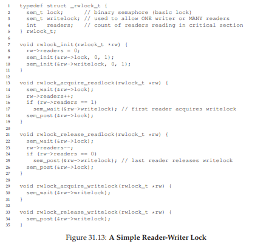
Hình 31.14: The Dining Philosophers
Dưới đây là vòng lặp cơ bản của mỗi triết gia, giả sử mỗi người có một thread identifier (ID luồng) duy nhất p từ 0 đến 4 (bao gồm):
Thách thức chính ở đây là viết các hàm get_forks() và put_forks() sao cho không xảy ra deadlock, không có triết gia nào bị đói (starvation) và không bao giờ được ăn, đồng thời độ đồng thời (concurrency) là cao nhất có thể (tức là có nhiều triết gia ăn cùng lúc nhất có thể).
Theo giải pháp của Downey [D08], chúng ta sẽ dùng một vài hàm trợ giúp để tiến tới lời giải. Chúng là:
int left(int p) { return p; }
int right(int p) { return (p + 1) % 5; }
Khi triết gia p muốn tham chiếu đến chiếc nĩa bên trái của mình, họ chỉ cần gọi left(p). Tương tự, chiếc nĩa bên phải của triết gia p được tham chiếu bằng cách gọi right(p); toán tử modulo ở đây xử lý trường hợp đặc biệt khi triết gia cuối cùng (p=4) cố gắng lấy chiếc nĩa bên phải của mình, vốn là nĩa số 0.
Chúng ta cũng sẽ cần một số semaphore để giải quyết vấn đề này. Giả sử chúng ta có 5 semaphore, mỗi cái cho một chiếc nĩa:
sem_t forks[5];
Giải pháp sai (Broken Solution)
Chúng ta thử giải pháp đầu tiên cho vấn đề. Giả sử ta khởi tạo mỗi semaphore (trong mảng forks) với giá trị 1. Giả sử thêm rằng mỗi triết gia biết số thứ tự của mình (p). Khi đó, ta có thể viết các hàm get_forks() và put_forks() (Hình 31.15, trang 15).

Hình 31.15: Các hàm get_forks() và put_forks()
Trực giác đằng sau giải pháp (sai) này như sau: để lấy nĩa, ta chỉ cần “giữ lock” trên từng cái: trước tiên là cái bên trái, sau đó là cái bên phải. Khi ăn xong, ta nhả chúng ra. Nghe có vẻ đơn giản, đúng không? Đáng tiếc, trong trường hợp này, “đơn giản” lại đồng nghĩa với “sai”. Bạn có thấy vấn đề phát sinh không? Hãy suy nghĩ.
Vấn đề ở đây là deadlock. Nếu mỗi triết gia tình cờ lấy chiếc nĩa bên trái của mình trước khi bất kỳ ai lấy được chiếc nĩa bên phải, thì mỗi người sẽ bị kẹt, giữ một chiếc nĩa và chờ chiếc còn lại mãi mãi. Cụ thể: triết gia 0 lấy nĩa 0, triết gia 1 lấy nĩa 1, triết gia 2 lấy nĩa 2, triết gia 3 lấy nĩa 3, và triết gia 4 lấy nĩa 4; tất cả nĩa đều đã bị giữ, và tất cả triết gia đều bị kẹt chờ một chiếc nĩa mà người khác đang giữ. Chúng ta sẽ nghiên cứu deadlock chi tiết hơn sau; còn bây giờ, có thể nói rằng đây không phải là một giải pháp hoạt động.
Một giải pháp: Phá vỡ sự phụ thuộc (Breaking The Dependency)
Cách đơn giản nhất để giải quyết vấn đề này là thay đổi cách lấy nĩa của ít nhất một triết gia; thực tế, đây chính là cách Dijkstra đã giải quyết vấn đề. Cụ thể, giả sử triết gia số 4 (người có số thứ tự cao nhất) sẽ lấy nĩa theo thứ tự khác với những người còn lại (Hình 31.16); code put_forks() vẫn giữ nguyên.
Hình 31.16: Phá vỡ sự phụ thuộc trong get_forks()
Vì triết gia cuối cùng cố gắng lấy nĩa bên phải trước nĩa bên trái, sẽ không có tình huống tất cả triết gia đều giữ một nĩa và chờ nĩa còn lại; vòng chờ bị phá vỡ. Hãy suy nghĩ về hệ quả của giải pháp này và tự thuyết phục rằng nó hoạt động.
Có những bài toán “nổi tiếng” khác tương tự, ví dụ: cigarette smoker’s problem (bài toán người hút thuốc) hoặc sleeping barber problem (bài toán thợ cắt tóc ngủ). Hầu hết chỉ là cái cớ để suy nghĩ về concurrency; một số có tên gọi thú vị. Hãy tìm hiểu nếu bạn muốn biết thêm, hoặc chỉ để luyện tập tư duy đồng thời [D08].
31.7 Thread Throttling
Một trường hợp sử dụng đơn giản khác của semaphore đôi khi xuất hiện, và chúng ta sẽ trình bày ở đây. Vấn đề cụ thể là: làm thế nào để lập trình viên ngăn “quá nhiều” thread làm một việc cùng lúc và làm chậm hệ thống? Câu trả lời: xác định một ngưỡng cho “quá nhiều”, và sau đó dùng semaphore để giới hạn số lượng thread đồng thời thực thi đoạn code đó. Chúng ta gọi cách tiếp cận này là throttling [T99], và coi nó như một dạng admission control (kiểm soát truy cập).
Hãy xét một ví dụ cụ thể hơn. Giả sử bạn tạo ra hàng trăm thread để xử lý song song một vấn đề. Tuy nhiên, trong một phần của code, mỗi thread cần cấp phát một lượng lớn bộ nhớ để thực hiện một phần tính toán; ta gọi phần code này là memory-intensive region (vùng tiêu tốn bộ nhớ). Nếu tất cả thread cùng vào vùng này cùng lúc, tổng yêu cầu cấp phát bộ nhớ sẽ vượt quá lượng bộ nhớ vật lý của máy. Kết quả là máy sẽ bắt đầu thrashing (tức là liên tục hoán đổi trang giữa RAM và đĩa), và toàn bộ quá trình tính toán sẽ chậm lại đáng kể.
Một semaphore đơn giản có thể giải quyết vấn đề này. Bằng cách khởi tạo giá trị của semaphore bằng số lượng tối đa thread mà bạn muốn cho phép vào vùng tiêu tốn bộ nhớ cùng lúc, và đặt sem_wait() và sem_post() bao quanh vùng này, semaphore sẽ tự nhiên giới hạn số lượng thread đồng thời ở trong vùng “nguy hiểm” của code.
31.8 Cách triển khai Semaphore
Cuối cùng, hãy sử dụng các synchronization primitive (nguyên thủy đồng bộ hóa) cấp thấp của chúng ta — lock và condition variable — để xây dựng phiên bản semaphore của riêng mình, gọi là... (trống đánh...) Zemaphores. Nhiệm vụ này khá đơn giản, như bạn có thể thấy trong Hình 31.17 (trang 17).
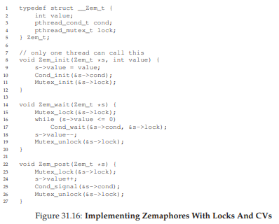
Hình 31.17: Triển khai Zemaphore bằng Locks và Condition Variables
Trong đoạn code trên, chúng ta chỉ sử dụng một lock và một condition variable, cùng với một biến trạng thái để theo dõi giá trị của semaphore. Hãy tự nghiên cứu đoạn code này cho đến khi bạn thực sự hiểu nó. Hãy làm đi!
Một điểm khác biệt tinh tế giữa Zemaphore của chúng ta và pure semaphore (semaphore thuần) như Dijkstra định nghĩa là chúng ta không duy trì bất biến rằng giá trị của semaphore, khi âm, phản ánh số lượng thread đang chờ; thực tế, giá trị này sẽ không bao giờ nhỏ hơn 0. Hành vi này dễ triển khai hơn và phù hợp với cách hiện tại Linux đang thực hiện.
Điều thú vị là, việc xây dựng condition variable từ semaphore lại là một nhiệm vụ khó khăn hơn nhiều. Một số lập trình viên giàu kinh nghiệm về lập trình đồng thời đã thử làm điều này trong môi trường Windows, và kết quả là xuất hiện rất nhiều lỗi khác nhau [B04]. Hãy tự thử và xem bạn có thể tìm ra lý do tại sao việc xây dựng condition variable từ semaphore lại là một vấn đề khó hơn so với vẻ bề ngoài hay không.
31.9 Tóm tắt (Summary)
Semaphore là một synchronization primitive (nguyên thủy đồng bộ hóa) mạnh mẽ và linh hoạt để viết các chương trình đồng thời. Một số lập trình viên thậm chí chỉ sử dụng semaphore, bỏ qua lock và condition variable, vì sự đơn giản và tính hữu dụng của nó.
Trong chương này, chúng ta đã trình bày một vài vấn đề và giải pháp kinh điển. Nếu bạn quan tâm và muốn tìm hiểu thêm, có rất nhiều tài liệu khác để tham khảo. Một nguồn tuyệt vời (và miễn phí) là cuốn sách của Allen Downey về concurrency và lập trình với semaphore [D08]. Cuốn sách này có rất nhiều bài tập dạng “puzzle” để bạn luyện tập, giúp cải thiện hiểu biết của bạn về semaphore nói riêng và concurrency nói chung. Trở thành một chuyên gia thực thụ về concurrency đòi hỏi nhiều năm nỗ lực; việc học vượt ra ngoài những gì bạn tiếp thu trong khóa học này chắc chắn là chìa khóa để làm chủ chủ đề này.
TIP: CẨN THẬN KHI TỔNG QUÁT HÓA (BE CAREFUL WITH GENERALIZATION)
Kỹ thuật trừu tượng hóa để tổng quát hóa có thể rất hữu ích trong thiết kế hệ thống, khi một ý tưởng tốt có thể được mở rộng một chút để giải quyết một lớp vấn đề lớn hơn. Tuy nhiên, hãy cẩn thận khi tổng quát hóa; như Lampson đã cảnh báo: “Đừng tổng quát hóa; các tổng quát hóa thường là sai” [L83].
Người ta có thể coi semaphore là một sự tổng quát hóa của lock và condition variable; tuy nhiên, liệu sự tổng quát hóa này có thực sự cần thiết? Và, xét đến độ khó khi hiện thực một condition variable dựa trên semaphore, có lẽ sự tổng quát hóa này không “tổng quát” như bạn nghĩ.
32 Các Vấn Đề Thường Gặp Trong Lập Trình Đồng Thời (Concurrency)
Trong nhiều năm qua, các nhà nghiên cứu đã dành rất nhiều thời gian và công sức để tìm hiểu về các lỗi (bug) trong lập trình đồng thời (concurrency bugs). Phần lớn các nghiên cứu ban đầu tập trung vào deadlock (bế tắc), một chủ đề mà chúng ta đã đề cập ở các chương trước, nhưng giờ sẽ đi sâu hơn [C+71]. Các nghiên cứu gần đây hơn tập trung vào việc tìm hiểu các loại lỗi đồng thời phổ biến khác (tức là lỗi non-deadlock – không phải bế tắc). Trong chương này, chúng ta sẽ xem xét một số ví dụ về các vấn đề đồng thời được tìm thấy trong mã nguồn thực tế, nhằm hiểu rõ hơn những vấn đề cần chú ý. Và đây là vấn đề trọng tâm của chương:
THE CRUX: CÁCH XỬ LÝ CÁC LỖI ĐỒNG THỜI PHỔ BIẾN
Các lỗi đồng thời thường xuất hiện theo nhiều mẫu (pattern) quen thuộc. Biết được những mẫu này là bước đầu tiên để viết ra mã đồng thời (concurrent code) chính xác và đáng tin cậy hơn.
32.1 Có Những Loại Lỗi Nào?
Câu hỏi đầu tiên và rõ ràng nhất là: Những loại lỗi đồng thời nào thường xuất hiện trong các chương trình phức tạp, đa luồng?
Câu hỏi này khó trả lời một cách tổng quát, nhưng may mắn là đã có những nghiên cứu thực nghiệm. Cụ thể, chúng ta dựa vào nghiên cứu của Lu và cộng sự [L+08], trong đó họ phân tích chi tiết một số ứng dụng đồng thời phổ biến để hiểu rõ các loại lỗi thường gặp trong thực tế.
Nghiên cứu này tập trung vào bốn ứng dụng mã nguồn mở quan trọng:
- MySQL (một hệ quản trị cơ sở dữ liệu phổ biến)
- Apache (một web server nổi tiếng)
- Mozilla (trình duyệt web nổi tiếng)
- OpenOffice (bộ ứng dụng văn phòng miễn phí, tương tự MS Office)
Trong nghiên cứu, các tác giả xem xét các lỗi đồng thời đã được phát hiện và sửa trong từng mã nguồn này, biến công việc của lập trình viên thành một phân tích định lượng về lỗi. Hiểu được kết quả này sẽ giúp bạn biết những vấn đề nào thực sự xảy ra trong các hệ thống phần mềm đã trưởng thành.
Hình dưới đây (Hình 32.1) tóm tắt các lỗi mà Lu và cộng sự đã nghiên cứu. Từ bảng, ta thấy có tổng cộng 105 lỗi, trong đó 74 lỗi là non-deadlock và 31 lỗi là deadlock. Ngoài ra, số lượng lỗi ở mỗi ứng dụng cũng khác nhau: OpenOffice chỉ có 8 lỗi đồng thời, trong khi Mozilla có gần 60.
Hình 32.1: Các lỗi trong ứng dụng hiện đại
| Application | Chức năng | Non-Deadlock | Deadlock |
| :---------- | :---------------- | :----------- | :------- |
| MySQL | Database Server | 14 | 9 |
| Apache | Web Server | 13 | 4 |
| Mozilla | Web Browser | 41 | 16 |
| OpenOffice | Office Suite | 6 | 2 |
| Total | | 74 | 31 |
Giờ đây, chúng ta sẽ đi sâu hơn vào hai nhóm lỗi này (non-deadlock và deadlock).
- Với nhóm non-deadlock, chúng ta sẽ dùng các ví dụ từ nghiên cứu để phân tích.
- Với nhóm deadlock, chúng ta sẽ bàn về các hướng tiếp cận nhằm phòng tránh, né tránh hoặc xử lý deadlock.
32.2 Lỗi Non-Deadlock
Theo nghiên cứu của Lu, lỗi non-deadlock chiếm đa số trong các lỗi đồng thời. Nhưng cụ thể chúng là gì? Chúng xuất hiện như thế nào? Và làm sao để sửa?
Lu và cộng sự chỉ ra hai loại lỗi non-deadlock chính:
- Atomicity violation (vi phạm tính nguyên tử)
- Order violation (vi phạm thứ tự)
Lỗi Atomicity Violation
Loại lỗi đầu tiên là atomicity violation. Dưới đây là một ví dụ đơn giản được tìm thấy trong MySQL. Trước khi đọc lời giải thích, hãy thử tìm lỗi.

Hình 32.2: Atomicity Violation (atomicity.c)
Trong ví dụ này, hai thread (luồng) khác nhau truy cập trường proc_info trong cấu trúc thd.
- Thread thứ nhất kiểm tra xem giá trị có khác NULL không, rồi in ra giá trị đó.
- Thread thứ hai đặt giá trị này thành NULL.
Rõ ràng, nếu thread thứ nhất kiểm tra xong nhưng bị ngắt trước khi gọi fputs, thì thread thứ hai có thể chạy xen vào và đặt con trỏ thành NULL. Khi thread thứ nhất tiếp tục, nó sẽ bị crash vì fputs sẽ dereference một con trỏ NULL.
Định nghĩa chính thức của atomicity violation theo Lu et al.:
“Tính tuần tự mong muốn giữa nhiều truy cập bộ nhớ bị vi phạm (tức là một đoạn code được dự định là nguyên tử, nhưng tính nguyên tử không được đảm bảo khi thực thi).”
Trong ví dụ trên, đoạn code giả định rằng việc kiểm tra proc_info khác NULL và việc sử dụng proc_info trong fputs() là nguyên tử. Khi giả định này sai, chương trình sẽ không hoạt động như mong muốn.
Cách sửa:
Giải pháp thường (nhưng không phải luôn) khá đơn giản: thêm lock (khóa) quanh các truy cập biến chia sẻ.
Trong ví dụ sửa (Hình 32.3), ta thêm khóa proc_info_lock để đảm bảo rằng khi bất kỳ thread nào truy cập proc_info, nó phải giữ khóa này. Tất nhiên, mọi đoạn code khác truy cập cấu trúc này cũng phải lấy cùng khóa.

Hình 32.3: Atomicity Violation Fixed (atomicity_fixed.c)
Lỗi Order Violation
Loại lỗi non-deadlock phổ biến thứ hai là order violation. Đây là một ví dụ khác; hãy thử tìm lỗi.

Hình 32.4: Ordering Bug (ordering.c)
Như bạn có thể đoán, mã trong Thread 2 giả định rằng biến mThread đã được khởi tạo (và khác NULL). Tuy nhiên, nếu Thread 2 chạy ngay sau khi được tạo, mThread vẫn chưa được gán giá trị khi được truy cập trong mMain() của Thread 2, dẫn đến crash do dereference con trỏ NULL.
Giả sử mThread ban đầu là NULL; nếu không, lỗi còn có thể nghiêm trọng hơn khi truy cập vào vùng nhớ tùy ý.

Hình 32.5: Fixing The Ordering Violation (ordering_fixed.c)
Định nghĩa chính thức của order violation:
“Thứ tự mong muốn giữa hai (hoặc nhóm) truy cập bộ nhớ bị đảo ngược (tức là A luôn phải chạy trước B, nhưng thứ tự này không được đảm bảo khi thực thi)” [L+08].
Cách sửa:
Giải pháp là ép buộc thứ tự thực thi. Như đã bàn trước đây, sử dụng condition variable (biến điều kiện) là một cách dễ và hiệu quả để thêm đồng bộ hóa kiểu này vào mã.
Trong ví dụ sửa (Hình 32.5), ta thêm:
- Condition variable
mtCond - Lock
mtLock - Biến trạng thái
mtInit
Khi mã khởi tạo chạy, nó đặt mtInit = 1 và gửi tín hiệu (signal) rằng đã xong.
- Nếu Thread 2 chạy trước thời điểm này, nó sẽ chờ tín hiệu và thay đổi trạng thái.
- Nếu Thread 2 chạy sau, nó sẽ thấy
mtInit = 1và tiếp tục bình thường.
Lưu ý: ta có thể dùng chính mThread làm biến trạng thái, nhưng ở đây tách riêng để đơn giản. Khi thứ tự giữa các thread quan trọng, condition variable hoặc semaphore là công cụ hữu ích.
Tóm tắt về Non-Deadlock Bugs
Một tỷ lệ lớn (97%) các lỗi non-deadlock (không phải bế tắc) được Lu và cộng sự nghiên cứu là thuộc một trong hai loại: atomicity violation (vi phạm tính nguyên tử) hoặc order violation (vi phạm thứ tự). Do đó, bằng cách suy nghĩ cẩn thận về các mẫu lỗi này, lập trình viên có thể tránh được chúng hiệu quả hơn. Hơn nữa, khi các công cụ kiểm tra mã tự động ngày càng phát triển, chúng nên tập trung vào hai loại lỗi này, vì chúng chiếm phần lớn các lỗi non-deadlock được phát hiện trong môi trường triển khai thực tế.
Tuy nhiên, không phải tất cả các lỗi đều dễ sửa như các ví dụ chúng ta đã xem ở trên. Một số lỗi đòi hỏi phải hiểu sâu hơn về hoạt động của chương trình, hoặc cần tái cấu trúc một lượng lớn mã hoặc cấu trúc dữ liệu để khắc phục. Để biết thêm chi tiết, hãy đọc bài báo xuất sắc (và dễ đọc) của Lu và cộng sự.
32.3 Deadlock Bugs
Ngoài các lỗi đồng thời đã đề cập ở trên, một vấn đề kinh điển thường xuất hiện trong nhiều hệ thống đồng thời với giao thức khóa (locking protocol) phức tạp được gọi là deadlock (bế tắc). Deadlock xảy ra, ví dụ, khi một thread (luồng) — giả sử Thread 1 — đang giữ một khóa (L1) và chờ một khóa khác (L2); không may, thread khác (Thread 2) đang giữ L2 lại chờ L1 được giải phóng. Dưới đây là một đoạn code minh họa khả năng xảy ra deadlock như vậy:
Thread 1:
pthread_mutex_lock(L1);
pthread_mutex_lock(L2);
Thread 2:
pthread_mutex_lock(L2);
pthread_mutex_lock(L1);

Hình 32.6: Simple Deadlock (deadlock.c)
Lưu ý rằng khi chạy đoạn code này, deadlock không nhất thiết xảy ra; nó chỉ xảy ra nếu, ví dụ, Thread 1 lấy được L1 trước, sau đó xảy ra context switch (chuyển ngữ cảnh) sang Thread 2. Lúc này, Thread 2 lấy L2 và cố gắng lấy L1. Kết quả là chúng ta có deadlock, vì mỗi thread đang chờ thread kia và không thread nào có thể tiếp tục chạy. Xem Hình 32.7 để thấy minh họa trực quan; sự xuất hiện của một chu trình (cycle) trong đồ thị là dấu hiệu của deadlock.

Hình 32.7: The Deadlock Dependency Graph
Hình này cho thấy vấn đề một cách rõ ràng. Vậy lập trình viên nên viết mã như thế nào để xử lý deadlock?
THE CRUX: CÁCH ĐỐI PHÓ VỚI DEADLOCK
Chúng ta nên xây dựng hệ thống như thế nào để phòng ngừa, tránh, hoặc ít nhất là phát hiện và phục hồi sau deadlock? Liệu đây có phải là một vấn đề thực sự trong các hệ thống ngày nay?
Tại sao Deadlock xảy ra?
Như bạn có thể nghĩ, các deadlock đơn giản như ví dụ trên dường như có thể tránh được dễ dàng. Ví dụ, nếu cả Thread 1 và Thread 2 đều đảm bảo lấy khóa theo cùng một thứ tự, deadlock sẽ không bao giờ xảy ra. Vậy tại sao deadlock vẫn xảy ra?
Nguyên nhân thứ nhất là trong các mã nguồn lớn, các phụ thuộc (dependency) phức tạp giữa các thành phần thường xuất hiện. Lấy ví dụ hệ điều hành: hệ thống virtual memory (bộ nhớ ảo) có thể cần truy cập file system (hệ thống tệp) để nạp (page in) một khối dữ liệu từ đĩa; ngược lại, file system có thể cần một trang bộ nhớ để đọc khối dữ liệu đó vào, và do đó phải liên hệ lại với virtual memory. Vì vậy, việc thiết kế chiến lược khóa trong các hệ thống lớn phải được thực hiện cẩn thận để tránh deadlock trong trường hợp các phụ thuộc vòng tròn (circular dependency) xuất hiện tự nhiên trong mã.
Nguyên nhân thứ hai là do bản chất của encapsulation (đóng gói). Là lập trình viên, chúng ta được dạy phải ẩn chi tiết cài đặt để phần mềm dễ xây dựng theo mô-đun. Không may, tính mô-đun này lại không phù hợp với cơ chế khóa. Như Jula và cộng sự chỉ ra [J+08], một số giao diện tưởng chừng vô hại lại gần như “mời gọi” deadlock. Ví dụ, hãy xem lớp Vector trong Java và phương thức AddAll(). Phương thức này được gọi như sau:
Vector v1, v2;
v1.AddAll(v2);
Bên trong, vì phương thức cần đảm bảo an toàn đa luồng (multi-thread safe), nên phải lấy khóa cho cả vector được thêm vào (v1) và vector tham số (v2). Phương thức này lấy các khóa theo một thứ tự tùy ý (giả sử v1 trước rồi v2) để thêm nội dung của v2 vào v1. Nếu một thread khác gọi v2.AddAll(v1) gần như cùng lúc, chúng ta có khả năng xảy ra deadlock — và điều này hoàn toàn ẩn đối với ứng dụng gọi.
Các điều kiện để xảy ra Deadlock
Bốn điều kiện cần đồng thời thỏa mãn để một deadlock (bế tắc) xảy ra [C+71]:
- Mutual exclusion (loại trừ lẫn nhau): Các thread (luồng) yêu cầu quyền kiểm soát độc quyền đối với tài nguyên mà chúng cần (ví dụ: một thread giữ một lock).
- Hold-and-wait (giữ và chờ): Các thread giữ các tài nguyên đã được cấp cho chúng (ví dụ: các lock mà chúng đã lấy) trong khi chờ thêm các tài nguyên khác (ví dụ: các lock mà chúng muốn lấy tiếp).
- No preemption (không cưỡng đoạt): Các tài nguyên (ví dụ: lock) không thể bị thu hồi cưỡng bức từ các thread đang giữ chúng.
- Circular wait (chờ vòng tròn): Tồn tại một chuỗi vòng tròn các thread, trong đó mỗi thread giữ một hoặc nhiều tài nguyên (ví dụ: lock) mà thread tiếp theo trong chuỗi đang yêu cầu.
Nếu bất kỳ điều kiện nào trong bốn điều kiện trên không được thỏa mãn, deadlock sẽ không thể xảy ra. Do đó, trước tiên chúng ta sẽ tìm hiểu các kỹ thuật phòng ngừa deadlock; mỗi chiến lược trong số này nhằm ngăn chặn một trong các điều kiện trên xuất hiện, và vì vậy là một cách tiếp cận để xử lý vấn đề deadlock.
Phòng ngừa (Prevention)
Circular Wait
Có lẽ kỹ thuật phòng ngừa thực tiễn nhất (và chắc chắn là thường được áp dụng) là viết mã khóa (locking code) sao cho không bao giờ tạo ra tình huống circular wait. Cách đơn giản nhất để làm điều này là đặt một thứ tự toàn phần (total ordering) cho việc lấy lock. Ví dụ, nếu hệ thống chỉ có hai lock (L1 và L2), bạn có thể ngăn deadlock bằng cách luôn lấy L1 trước L2. Thứ tự nghiêm ngặt này đảm bảo không xuất hiện vòng chờ, và do đó không có deadlock.
Tất nhiên, trong các hệ thống phức tạp hơn, sẽ có nhiều hơn hai lock, và việc đặt thứ tự toàn phần cho tất cả lock có thể khó thực hiện (và đôi khi không cần thiết). Vì vậy, thứ tự một phần (partial ordering) có thể là một cách hữu ích để tổ chức việc lấy lock nhằm tránh deadlock.
Một ví dụ thực tế xuất sắc về partial lock ordering có thể thấy trong mã quản lý ánh xạ bộ nhớ (memory mapping) của Linux [T+94] (phiên bản 5.2); phần chú thích ở đầu mã nguồn liệt kê 10 nhóm thứ tự lấy lock khác nhau, bao gồm các thứ tự đơn giản như “i_mutex trước i_mmap_rwsem” và các thứ tự phức tạp hơn như “i_mmap_rwsem trước private lock trước swap lock trước i_pages lock”.
TIP: ÁP DỤNG THỨ TỰ LẤY LOCK THEO ĐỊA CHỈ LOCK
Trong một số trường hợp, một hàm cần lấy hai (hoặc nhiều) lock; do đó, chúng ta biết rằng phải cẩn thận nếu không deadlock có thể xảy ra. Hãy tưởng tượng một hàm được gọi như sau:
do_something(mutex_t *m1, mutex_t *m2)
Nếu mã luôn lấym1trướcm2(hoặc luônm2trướcm1), deadlock vẫn có thể xảy ra, vì một thread có thể gọido_something(L1, L2)trong khi thread khác gọido_something(L2, L1).
Để tránh vấn đề này, lập trình viên thông minh có thể sử dụng địa chỉ của mỗi lock như một cách để xác định thứ tự lấy lock. Bằng cách lấy lock theo thứ tự từ cao xuống thấp hoặc từ thấp lên cao dựa trên địa chỉ,do_something()có thể đảm bảo luôn lấy lock theo cùng một thứ tự, bất kể thứ tự truyền tham số.
Ví dụ mã:if (m1 > m2) { // lấy theo thứ tự địa chỉ từ cao xuống thấp pthread_mutex_lock(m1); pthread_mutex_lock(m2); } else { pthread_mutex_lock(m2); pthread_mutex_lock(m1); } // Giả định rằng m1 != m2 (không phải cùng một lock)Bằng cách sử dụng kỹ thuật đơn giản này, lập trình viên có thể đảm bảo một cách triển khai lấy nhiều lock không deadlock, vừa đơn giản vừa hiệu quả.
Như bạn có thể hình dung, cả total ordering và partial ordering đều yêu cầu thiết kế chiến lược khóa cẩn thận và phải được xây dựng rất kỹ lưỡng. Hơn nữa, thứ tự chỉ là một quy ước, và một lập trình viên cẩu thả có thể dễ dàng bỏ qua giao thức khóa, dẫn đến deadlock. Cuối cùng, lock ordering đòi hỏi hiểu sâu về toàn bộ mã nguồn và cách các hàm được gọi; chỉ một sai sót cũng có thể dẫn đến “từ D”^[1].
Hold-and-wait
Điều kiện hold-and-wait để xảy ra deadlock có thể được loại bỏ bằng cách lấy tất cả lock cùng một lúc, theo cách nguyên tử (atomically). Trong thực tế, điều này có thể được thực hiện như sau:
^[1]: “Từ D” ở đây ám chỉ “Deadlock”.
Bằng cách trước tiên lấy lock prevention, đoạn code này đảm bảo rằng sẽ không có sự chuyển đổi thread (luồng) không đúng thời điểm xảy ra trong quá trình lấy lock, và do đó deadlock (bế tắc) một lần nữa có thể được tránh. Tất nhiên, điều này yêu cầu rằng bất cứ khi nào một thread muốn lấy một lock nào đó, nó phải lấy lock toàn cục prevention trước. Ví dụ, nếu một thread khác đang cố lấy các lock L1 và L2 theo một thứ tự khác, điều đó vẫn ổn, vì nó sẽ giữ lock prevention trong khi thực hiện.
Lưu ý rằng giải pháp này có một số vấn đề. Giống như trước đây, encapsulation (đóng gói) lại gây bất lợi: khi gọi một routine (hàm/thủ tục), cách tiếp cận này yêu cầu chúng ta phải biết chính xác những lock nào cần giữ và lấy chúng trước. Kỹ thuật này cũng có khả năng làm giảm concurrency (mức độ đồng thời), vì tất cả lock phải được lấy sớm (cùng lúc) thay vì chỉ khi thực sự cần.
No Preemption
Bởi vì thông thường chúng ta coi lock được giữ cho đến khi unlock được gọi, việc lấy nhiều lock cùng lúc thường gây rắc rối, vì khi đang chờ một lock, ta lại đang giữ một lock khác. Nhiều thư viện thread cung cấp một tập hợp giao diện linh hoạt hơn để giúp tránh tình huống này. Cụ thể, routine pthread_mutex_trylock() hoặc sẽ lấy được lock (nếu nó đang rảnh) và trả về thành công, hoặc trả về mã lỗi cho biết lock đang bị giữ; trong trường hợp thứ hai, bạn có thể thử lại sau nếu muốn lấy lock đó.
Giao diện này có thể được sử dụng như sau để xây dựng một giao thức lấy lock không deadlock và ổn định về thứ tự:
...
Lưu ý rằng một thread khác có thể tuân theo cùng giao thức nhưng lấy lock theo thứ tự ngược lại (L2 rồi L1) và chương trình vẫn không bị deadlock. Tuy nhiên, một vấn đề mới có thể phát sinh: livelock. Có khả năng (dù có thể hiếm) rằng hai thread đều liên tục thử thực hiện chuỗi thao tác này và liên tục thất bại trong việc lấy cả hai lock. Trong trường hợp này, cả hai hệ thống đều chạy qua đoạn code này lặp đi lặp lại (và do đó không phải deadlock), nhưng không có tiến triển nào được thực hiện, vì vậy mới có tên là livelock. Có những giải pháp cho vấn đề livelock, ví dụ: thêm một khoảng trễ ngẫu nhiên trước khi quay lại vòng lặp và thử lại toàn bộ, từ đó giảm khả năng xung đột lặp lại giữa các thread cạnh tranh.
Một điểm cần lưu ý về giải pháp này: nó né tránh những phần khó của việc sử dụng phương pháp trylock. Vấn đề đầu tiên có thể xuất hiện lại là do encapsulation: nếu một trong các lock này nằm sâu bên trong một routine được gọi, việc quay lại từ đầu trở nên phức tạp hơn để triển khai. Nếu đoạn code đã lấy một số tài nguyên khác (ngoài L1) trong quá trình, nó phải đảm bảo giải phóng chúng cẩn thận; ví dụ, nếu sau khi lấy L1, đoạn code đã cấp phát một vùng bộ nhớ, thì phải giải phóng vùng nhớ đó khi không lấy được L2, trước khi quay lại đầu để thử lại toàn bộ chuỗi. Tuy nhiên, trong một số trường hợp hạn chế (ví dụ: phương thức Vector.AddAll() trong Java được đề cập trước đó), cách tiếp cận này có thể hoạt động tốt.
Bạn cũng có thể nhận thấy rằng cách tiếp cận này thực ra không bổ sung preemption (hành động cưỡng bức lấy lock từ một thread đang giữ nó), mà thay vào đó sử dụng phương pháp trylock để cho phép lập trình viên tự từ bỏ quyền sở hữu lock (tức là tự preempt quyền sở hữu của mình) một cách an toàn. Tuy nhiên, đây là một cách tiếp cận thực tiễn, và vì vậy chúng tôi đưa nó vào đây, dù nó chưa hoàn hảo ở khía cạnh này.
Mutual Exclusion
Kỹ thuật phòng ngừa cuối cùng là tránh hoàn toàn nhu cầu mutual exclusion (loại trừ lẫn nhau). Nói chung, chúng ta biết điều này là khó, vì đoạn code mà chúng ta muốn chạy thực sự có các critical section (vùng găng). Vậy chúng ta có thể làm gì?
Herlihy đã đưa ra ý tưởng rằng có thể thiết kế nhiều cấu trúc dữ liệu không dùng lock [H91, H93]. Ý tưởng đằng sau các phương pháp lock-free (không khóa) và liên quan là wait-free (không chờ) này khá đơn giản: sử dụng các lệnh phần cứng mạnh mẽ, bạn có thể xây dựng các cấu trúc dữ liệu theo cách không cần khóa tường minh.
Ví dụ đơn giản, giả sử chúng ta có một lệnh compare-and-swap, mà như bạn có thể nhớ, đây là một lệnh nguyên tử (atomic instruction) do phần cứng cung cấp, thực hiện như sau:
int CompareAndSwap(int *address, int expected, int new) {
if (*address == expected) {
*address = new;
return 1; // success
}
return 0; // failure
}
Giả sử bây giờ chúng ta muốn tăng một giá trị một cách nguyên tử (atomically increment) thêm một lượng nhất định, sử dụng lệnh compare-and-swap. Chúng ta có thể thực hiện điều đó với hàm đơn giản sau:
void AtomicIncrement(int *value, int amount) {
do {
int old = *value;
} while (CompareAndSwap(value, old, old + amount) == 0);
}
Thay vì lấy một lock, thực hiện cập nhật, rồi giải phóng lock, chúng ta xây dựng một cách tiếp cận khác: liên tục thử cập nhật giá trị lên giá trị mới và sử dụng compare-and-swap để thực hiện. Theo cách này, không có lock nào được lấy, và do đó không thể xảy ra deadlock (bế tắc) (mặc dù livelock vẫn có thể xảy ra, và vì vậy một giải pháp vững chắc sẽ phức tạp hơn đoạn code đơn giản ở trên).
Hãy xem xét một ví dụ phức tạp hơn một chút: chèn phần tử vào danh sách (list insertion). Dưới đây là đoạn code chèn một phần tử vào đầu danh sách:
void insert(int value) {
node_t *n = malloc(sizeof(node_t));
assert(n != NULL);
n->value = value;
n->next = head;
head = n;
}
Đoạn code này thực hiện một phép chèn đơn giản, nhưng nếu được gọi bởi nhiều thread (luồng) “cùng lúc”, sẽ xuất hiện race condition (điều kiện tranh chấp). Bạn có thể tìm ra lý do không? (Hãy vẽ một sơ đồ về những gì có thể xảy ra với danh sách nếu hai phép chèn đồng thời diễn ra, giả sử như thường lệ rằng có một sự xen kẽ lịch trình (scheduling interleaving) bất lợi).
Tất nhiên, chúng ta có thể giải quyết vấn đề này bằng cách bao quanh đoạn code với thao tác lấy lock và giải phóng lock:
void insert(int value) {
node_t *n = malloc(sizeof(node_t));
assert(n != NULL);
n->value = value;
pthread_mutex_lock(listlock); // begin critical section
n->next = head;
head = n;
pthread_mutex_unlock(listlock); // end critical section
}
Trong giải pháp này, chúng ta đang sử dụng lock theo cách truyền thống². Thay vào đó, hãy thử thực hiện phép chèn này theo cách lock-free (không dùng khóa) chỉ với lệnh compare-and-swap. Dưới đây là một cách tiếp cận khả thi:
void insert(int value) {
node_t *n = malloc(sizeof(node_t));
assert(n != NULL);
n->value = value;
do {
n->next = head;
} while (CompareAndSwap(&head, n->next, n) == 0);
}
²Người đọc tinh ý có thể sẽ hỏi tại sao chúng ta lại lấy lock muộn như vậy, thay vì ngay khi bước vào hàm insert(); bạn có thể, với sự tinh ý, tìm ra lý do tại sao điều đó có khả năng là đúng không? Ví dụ, đoạn code đưa ra giả định gì về call malloc()?
Trong đoạn code này, con trỏ next của nút mới được cập nhật để trỏ tới phần tử đầu hiện tại, sau đó cố gắng hoán đổi (swap) nút mới vào vị trí đầu danh sách bằng compare-and-swap. Tuy nhiên, thao tác này sẽ thất bại nếu một thread khác đã thành công trong việc hoán đổi một nút mới vào đầu danh sách trong khoảng thời gian đó, khiến thread này phải thử lại với phần tử đầu mới.
Tất nhiên, việc xây dựng một danh sách hữu ích đòi hỏi nhiều hơn là chỉ thao tác chèn; và không ngạc nhiên khi việc xây dựng một danh sách có thể chèn, xóa và tìm kiếm theo cách lock-free là không hề đơn giản. Hãy đọc thêm các tài liệu nghiên cứu phong phú về lock-free và wait-free synchronization (đồng bộ hóa không khóa và không chờ) để tìm hiểu thêm [H01, H91, H93].
Tránh Deadlock thông qua Scheduling
Thay vì phòng ngừa deadlock (deadlock prevention), trong một số tình huống, tránh deadlock (deadlock avoidance) là lựa chọn tốt hơn. Tránh deadlock yêu cầu có kiến thức toàn cục về những lock mà các thread có thể lấy trong quá trình thực thi, và sau đó lập lịch (schedule) các thread đó theo cách đảm bảo rằng deadlock không thể xảy ra.
Ví dụ, giả sử chúng ta có hai bộ xử lý và bốn thread cần được lập lịch trên chúng. Giả sử thêm rằng:
- Thread 1 (T1) lấy các lock L1 và L2 (theo một thứ tự nào đó, tại một thời điểm nào đó trong quá trình thực thi)
- Thread 2 (T2) cũng lấy L1 và L2
- Thread 3 (T3) chỉ lấy L2
- Thread 4 (T4) không lấy lock nào cả
Chúng ta có thể biểu diễn yêu cầu lấy lock của các thread này dưới dạng bảng:
...
Một scheduler (bộ lập lịch) thông minh có thể tính toán rằng miễn là T1 và T2 không chạy cùng lúc, deadlock sẽ không bao giờ xảy ra. Dưới đây là một lịch trình như vậy:
...
Lưu ý rằng việc (T3 và T1) hoặc (T3 và T2) chạy đồng thời là chấp nhận được. Mặc dù T3 lấy lock L2, nó không thể gây ra deadlock khi chạy song song với các thread khác vì nó chỉ lấy một lock.
Hãy xem thêm một ví dụ nữa. Trong ví dụ này, có nhiều sự tranh chấp hơn đối với cùng một tài nguyên (vẫn là các lock L1 và L2), như được chỉ ra trong bảng tranh chấp (contention table) sau:
...
TIP: ĐỪNG LÚC NÀO CŨNG CỐ LÀM HOÀN HẢO (ĐỊNH LUẬT CỦA TOM WEST)
Tom West, nổi tiếng với vai trò là nhân vật chính trong cuốn sách kinh điển về ngành công nghiệp máy tính Soul of a New Machine [K81], đã từng nói một câu nổi tiếng:
“Not everything worth doing is worth doing well” (Không phải mọi việc đáng làm đều đáng để làm thật hoàn hảo), đây là một châm ngôn kỹ thuật tuyệt vời.
Nếu một sự cố xấu chỉ xảy ra rất hiếm hoi, chắc chắn bạn không nên bỏ ra quá nhiều công sức để ngăn chặn nó, đặc biệt nếu chi phí khi sự cố đó xảy ra là nhỏ. Ngược lại, nếu bạn đang chế tạo một tàu con thoi, và chi phí của việc xảy ra sự cố là… tàu con thoi phát nổ, thì có lẽ bạn nên bỏ qua lời khuyên này.
Một số độc giả phản đối: “Nghe như ông đang khuyên chọn sự tầm thường làm giải pháp!” Có thể họ đúng, rằng chúng ta nên cẩn trọng với lời khuyên như thế này. Tuy nhiên, kinh nghiệm cho chúng tôi thấy rằng trong thế giới kỹ thuật, với những hạn chót gấp gáp và các yếu tố thực tế khác, bạn sẽ luôn phải quyết định phần nào của hệ thống cần được xây dựng thật tốt và phần nào có thể để lại cho một ngày khác. Phần khó nhất là biết khi nào nên làm điều gì — một chút trực giác chỉ có được qua kinh nghiệm và sự tận tâm với công việc.
Cụ thể, các thread (luồng) T1, T2 và T3 đều cần lấy cả hai lock L1 và L2 tại một thời điểm nào đó trong quá trình thực thi. Dưới đây là một lịch trình khả dĩ đảm bảo rằng deadlock (bế tắc) sẽ không bao giờ xảy ra:
...
Như bạn có thể thấy, static scheduling (lập lịch tĩnh) dẫn đến một cách tiếp cận bảo thủ, trong đó T1, T2 và T3 đều chạy trên cùng một bộ xử lý, và do đó tổng thời gian hoàn thành công việc bị kéo dài đáng kể. Mặc dù có thể chạy các tác vụ này song song, nhưng nỗi lo về deadlock ngăn chúng ta làm vậy, và cái giá phải trả là hiệu năng.
Một ví dụ nổi tiếng về cách tiếp cận như thế này là Dijkstra’s Banker’s Algorithm [D64], và nhiều phương pháp tương tự đã được mô tả trong tài liệu nghiên cứu. Không may, chúng chỉ hữu ích trong những môi trường rất hạn chế, ví dụ như trong một embedded system (hệ thống nhúng) nơi ta có đầy đủ thông tin về toàn bộ tập hợp các tác vụ cần chạy và các lock mà chúng cần. Hơn nữa, các phương pháp này có thể hạn chế concurrency (tính đồng thời), như chúng ta đã thấy trong ví dụ thứ hai ở trên. Do đó, tránh deadlock thông qua scheduling không phải là một giải pháp tổng quát được sử dụng rộng rãi.
Detect and Recover (Phát hiện và Phục hồi)
Một chiến lược tổng quát cuối cùng là cho phép deadlock thỉnh thoảng xảy ra, và sau đó thực hiện một hành động nào đó khi deadlock được phát hiện. Ví dụ, nếu một hệ điều hành (OS) bị treo một lần mỗi năm, bạn chỉ cần khởi động lại và tiếp tục làm việc (vui vẻ hoặc cau có). Nếu deadlock hiếm khi xảy ra, thì “giải pháp không giải pháp” này thực sự khá thực dụng.
Nhiều hệ quản trị cơ sở dữ liệu áp dụng kỹ thuật phát hiện và phục hồi deadlock. Một deadlock detector (bộ phát hiện deadlock) chạy định kỳ, xây dựng một resource graph (đồ thị tài nguyên) và kiểm tra xem có chu trình (cycle) nào không. Trong trường hợp phát hiện chu trình (deadlock), hệ thống cần được khởi động lại. Nếu trước đó cần sửa chữa phức tạp hơn đối với cấu trúc dữ liệu, có thể cần sự can thiệp của con người để hỗ trợ quá trình này.
Thông tin chi tiết hơn về concurrency (tính đồng thời) trong cơ sở dữ liệu, deadlock và các vấn đề liên quan có thể tìm thấy ở các tài liệu khác [B+87, K87]. Hãy đọc các tài liệu này, hoặc tốt hơn, tham gia một khóa học về cơ sở dữ liệu để tìm hiểu sâu hơn về chủ đề phong phú và thú vị này.
32.4 Tóm tắt
Trong chương này, chúng ta đã nghiên cứu các loại lỗi (bug) xảy ra trong các chương trình đồng thời. Loại đầu tiên, non-deadlock bugs (lỗi không phải bế tắc), xuất hiện đáng ngạc nhiên là khá phổ biến, nhưng thường dễ sửa hơn. Chúng bao gồm:
- Atomicity violations (vi phạm tính nguyên tử): một chuỗi lệnh lẽ ra phải được thực thi cùng nhau nhưng lại không được.
- Order violations (vi phạm thứ tự): thứ tự cần thiết giữa hai thread không được đảm bảo.
Chúng ta cũng đã thảo luận ngắn gọn về deadlock: tại sao nó xảy ra và có thể làm gì để xử lý. Vấn đề này cổ xưa như chính khái niệm concurrency, và đã có hàng trăm bài báo được viết về chủ đề này. Giải pháp tốt nhất trong thực tế là cẩn trọng, xây dựng một lock acquisition order (thứ tự lấy lock) hợp lý, và do đó ngăn deadlock xảy ra ngay từ đầu. Các phương pháp wait-free (không chờ) cũng đầy hứa hẹn, vì một số cấu trúc dữ liệu wait-free hiện đã xuất hiện trong các thư viện và hệ thống quan trọng được sử dụng rộng rãi, bao gồm cả Linux. Tuy nhiên, sự thiếu tính tổng quát và độ phức tạp khi phát triển một cấu trúc dữ liệu wait-free mới có thể sẽ hạn chế tính hữu dụng chung của phương pháp này.
Có lẽ giải pháp tốt nhất là phát triển các mô hình lập trình đồng thời mới: trong các hệ thống như MapReduce (từ Google) [GD02], lập trình viên có thể mô tả một số loại tính toán song song mà không cần bất kỳ lock nào. Lock vốn dĩ đã có nhiều vấn đề; có lẽ chúng ta nên tránh sử dụng chúng trừ khi thực sự cần thiết.
Bạn có muốn mình tiếp tục dịch các phần ví dụ minh họa về Banker’s Algorithm và resource graph để chương này hoàn thiện hơn không? Đây là phần rất thú vị để hiểu rõ hơn về tránh và phát hiện deadlock.
33. Lập trình đồng thời dựa trên sự kiện (Nâng cao)
Cho đến nay, chúng ta đã viết về concurrency (tính đồng thời) như thể cách duy nhất để xây dựng các ứng dụng đồng thời là sử dụng threads (luồng). Giống như nhiều điều khác trong cuộc sống, điều này không hoàn toàn đúng. Cụ thể, một phong cách lập trình đồng thời khác thường được sử dụng trong cả các ứng dụng dựa trên GUI (giao diện đồ họa người dùng)^[1] [O96] cũng như một số loại internet servers (máy chủ Internet) [PDZ99]. Phong cách này, được gọi là event-based concurrency (đồng thời dựa trên sự kiện), đã trở nên phổ biến trong một số hệ thống hiện đại, bao gồm các framework phía server như node.js [N13], nhưng nguồn gốc của nó bắt đầu từ các hệ thống C/UNIX mà chúng ta sẽ thảo luận bên dưới.
Vấn đề mà event-based concurrency giải quyết là hai mặt. Thứ nhất, việc quản lý concurrency một cách chính xác trong các ứng dụng multi-threaded (đa luồng) có thể rất thách thức; như chúng ta đã thảo luận, việc thiếu locks (khóa), deadlock (bế tắc) và các vấn đề nghiêm trọng khác có thể phát sinh. Thứ hai, trong một ứng dụng multi-threaded, lập trình viên hầu như không có hoặc hoàn toàn không có quyền kiểm soát việc scheduling (lập lịch) tại một thời điểm nhất định; thay vào đó, lập trình viên chỉ đơn giản tạo ra các threads và hy vọng rằng hệ điều hành (OS) bên dưới sẽ lập lịch chúng một cách hợp lý trên các CPU khả dụng. Do khó khăn trong việc xây dựng một general-purpose scheduler (bộ lập lịch đa dụng) hoạt động tốt trong mọi trường hợp và với mọi loại tải công việc, đôi khi OS sẽ lập lịch công việc theo cách kém tối ưu. Và vì thế, chúng ta có...
THE CRUX: LÀM THẾ NÀO ĐỂ XÂY DỰNG MÁY CHỦ ĐỒNG THỜI MÀ KHÔNG CẦN THREADS
Làm thế nào chúng ta có thể xây dựng một concurrent server (máy chủ đồng thời) mà không sử dụng threads, từ đó giữ quyền kiểm soát concurrency cũng như tránh một số vấn đề thường gặp trong các ứng dụng multi-threaded?
33.1 Ý tưởng cơ bản: Event Loop
Cách tiếp cận cơ bản mà chúng ta sẽ sử dụng, như đã nêu ở trên, được gọi là event-based concurrency. Cách tiếp cận này khá đơn giản: bạn chỉ cần chờ một điều gì đó (tức là một “event” – sự kiện) xảy ra; khi nó xảy ra, bạn kiểm tra loại sự kiện đó là gì và thực hiện một lượng nhỏ công việc cần thiết (có thể bao gồm việc gửi yêu cầu I/O, hoặc scheduling các sự kiện khác để xử lý trong tương lai, v.v.). Và hết!
Trước khi đi sâu vào chi tiết, hãy cùng xem một event-based server (máy chủ dựa trên sự kiện) điển hình trông như thế nào. Các ứng dụng như vậy được xây dựng xoay quanh một cấu trúc đơn giản gọi là event loop (vòng lặp sự kiện). Mã giả (pseudocode) cho một event loop như sau:
while (1) {
events = getEvents();
for (e in events)
processEvent(e);
}
Thực sự đơn giản như vậy. Vòng lặp chính chỉ chờ một việc gì đó để làm (bằng cách gọi getEvents() trong đoạn code trên) và sau đó, với mỗi sự kiện được trả về, xử lý chúng lần lượt từng cái một; đoạn code xử lý mỗi sự kiện được gọi là event handler (trình xử lý sự kiện). Điều quan trọng là, khi một handler xử lý một sự kiện, đó là hoạt động duy nhất đang diễn ra trong hệ thống; do đó, việc quyết định sự kiện nào sẽ được xử lý tiếp theo tương đương với scheduling. Quyền kiểm soát tường minh đối với scheduling này là một trong những ưu điểm cơ bản của phương pháp event-based.
Tuy nhiên, phần thảo luận này để lại cho chúng ta một câu hỏi lớn hơn: chính xác thì một event-based server xác định các sự kiện đang diễn ra như thế nào, đặc biệt là đối với network I/O (I/O mạng) và disk I/O (I/O đĩa)? Cụ thể, làm thế nào một event server có thể biết rằng một thông điệp đã đến với nó?
^[1]: GUI (Graphical User Interface) – Giao diện đồ họa người dùng, cho phép người dùng tương tác với hệ thống thông qua các thành phần trực quan như cửa sổ, nút bấm, biểu tượng.
33.2 Một API quan trọng: select() (hoặc poll())
Với event loop (vòng lặp sự kiện) cơ bản đã được đề cập, bước tiếp theo chúng ta cần giải quyết là câu hỏi: làm thế nào để nhận các sự kiện? Trong hầu hết các hệ thống, một API cơ bản có sẵn thông qua system call (call hệ thống) select() hoặc poll().
Những interface (giao diện lập trình) này cho phép một chương trình thực hiện một việc đơn giản: kiểm tra xem có I/O (nhập/xuất) đến nào cần được xử lý hay không. Ví dụ, hãy tưởng tượng một ứng dụng mạng (chẳng hạn như web server) muốn kiểm tra xem có gói tin mạng nào đã đến để xử lý hay chưa. Các system call này cho phép bạn làm chính xác điều đó.
Lấy select() làm ví dụ. Trang manual (trang hướng dẫn sử dụng) trên macOS mô tả API này như sau:
int select(int nfds,
fd_set *restrict readfds,
fd_set *restrict writefds,
fd_set *restrict errorfds,
struct timeval *restrict timeout);
ASIDE: BLOCKING VS. NON-BLOCKING INTERFACES
Blocking (hay synchronous – đồng bộ) interfaces thực hiện toàn bộ công việc của chúng trước khi trả quyền điều khiển về cho hàm gọi; non-blocking (hay asynchronous – bất đồng bộ) interfaces bắt đầu một công việc nhưng trả về ngay lập tức, cho phép phần công việc còn lại được thực hiện ở chế độ nền.
Thủ phạm phổ biến nhất gây ra blocking là một dạng I/O nào đó. Ví dụ, nếu một call hàm cần đọc dữ liệu từ đĩa để hoàn tất, nó có thể bị block, chờ cho đến khi yêu cầu I/O gửi đến đĩa hoàn thành và trả dữ liệu về.
Non-blocking interfaces có thể được sử dụng trong bất kỳ phong cách lập trình nào (ví dụ: với threads), nhưng là yếu tố thiết yếu trong phương pháp event-based, vì một call bị block sẽ làm dừng toàn bộ tiến trình xử lý.
Mô tả thực tế từ man page: select() kiểm tra các tập hợp I/O descriptor (bộ mô tả I/O) có địa chỉ được truyền vào readfds, writefds và errorfds để xem liệu một số descriptor trong đó có sẵn sàng để đọc, sẵn sàng để ghi, hoặc đang có một điều kiện bất thường đang chờ xử lý hay không. select() sẽ kiểm tra các descriptor từ 0 đến nfds-1 trong mỗi tập hợp. Khi trả về, select() thay thế các tập hợp descriptor đã cho bằng các tập hợp con chỉ bao gồm những descriptor sẵn sàng cho thao tác được yêu cầu. select() trả về tổng số descriptor sẵn sàng trong tất cả các tập hợp.
Một vài điểm cần lưu ý về select():
- Thứ nhất,
select()cho phép bạn kiểm tra xem descriptor có thể đọc được hay ghi được. Khả năng đọc cho phép server xác định rằng một gói tin mới đã đến và cần được xử lý, trong khi khả năng ghi cho phép server biết khi nào có thể gửi phản hồi (tức là hàng đợi gửi đi chưa đầy). - Thứ hai, lưu ý đối số
timeout. Một cách sử dụng phổ biến là đặttimeoutthànhNULL, khiếnselect()block vô thời hạn cho đến khi một descriptor sẵn sàng. Tuy nhiên, các server mạnh mẽ hơn thường chỉ định một loại timeout nào đó; một kỹ thuật phổ biến là đặt timeout bằng 0, từ đó khiến callselect()trả về ngay lập tức.
System call poll() khá giống với select(). Xem man page của nó hoặc tài liệu của Stevens và Rago [SR05] để biết chi tiết.
Dù sử dụng cách nào, các primitive (nguyên thủy) cơ bản này cung cấp cho chúng ta một cách để xây dựng non-blocking event loop (vòng lặp sự kiện không chặn), vòng lặp này chỉ đơn giản kiểm tra các gói tin đến, đọc từ các socket có chứa thông điệp, và phản hồi khi cần thiết.
33.3 Sử dụng select()
Để làm rõ hơn, hãy xem cách sử dụng select() để xác định những network descriptor (bộ mô tả mạng) nào có thông điệp đến. Hình 33.1 dưới đây minh họa một ví dụ đơn giản.

Hình 33.1: Mã nguồn đơn giản sử dụng select()
Mã nguồn này thực tế khá dễ hiểu. Sau một số bước khởi tạo, server đi vào một vòng lặp vô hạn. Bên trong vòng lặp, nó sử dụng macro FD_ZERO() để xóa tập hợp file descriptor (bộ mô tả tệp) hiện tại, sau đó dùng FD_SET() để thêm tất cả các file descriptor từ minFD đến maxFD vào tập hợp. Tập hợp các descriptor này có thể đại diện, ví dụ, cho tất cả các network socket (socket mạng) mà server đang theo dõi. Cuối cùng, server gọi select() để kiểm tra kết nối nào có dữ liệu sẵn sàng. Sau đó, bằng cách sử dụng FD_ISSET() trong một vòng lặp, event server (máy chủ dựa trên sự kiện) có thể xác định descriptor nào đã sẵn sàng dữ liệu và xử lý dữ liệu đến.
Tất nhiên, một server thực tế sẽ phức tạp hơn nhiều, và cần thêm logic để xử lý việc gửi thông điệp, thực hiện disk I/O (I/O đĩa), và nhiều chi tiết khác. Để biết thêm thông tin, xem Stevens và Rago [SR05] để tìm hiểu về API, hoặc Pai et al. và Welsh et al. để có cái nhìn tổng quan về luồng xử lý của các event-based server [PDZ99, WCB01].
TIP: ĐỪNG ĐỂ BLOCK TRONG EVENT-BASED SERVER
Event-based server cho phép kiểm soát chi tiết việc scheduling (lập lịch) các tác vụ. Tuy nhiên, để duy trì khả năng kiểm soát này, tuyệt đối không được thực hiện bất kỳ call nào khiến tiến trình của hàm gọi bị block; vi phạm nguyên tắc này sẽ dẫn đến việc event-based server bị treo, khách hàng (client) bị gián đoạn, và khiến người khác nghi ngờ liệu bạn có thực sự đọc phần này của sách hay không.
33.4 Tại sao đơn giản hơn? Không cần Locks
Với một CPU đơn và một ứng dụng event-based, các vấn đề thường gặp trong lập trình đồng thời (concurrent programming) sẽ không còn. Cụ thể, vì chỉ có một sự kiện được xử lý tại một thời điểm, không cần phải acquire hoặc release locks (khóa); event-based server không thể bị gián đoạn bởi một thread khác vì nó hoàn toàn chạy ở chế độ single-threaded (đơn luồng). Do đó, các lỗi concurrency phổ biến trong chương trình đa luồng sẽ không xuất hiện trong phương pháp event-based cơ bản.
33.5 Một vấn đề: Blocking System Calls
Cho đến giờ, lập trình event-based nghe có vẻ rất tuyệt, đúng không? Bạn lập trình một vòng lặp đơn giản và xử lý các sự kiện khi chúng xuất hiện. Bạn thậm chí không cần nghĩ đến việc dùng lock! Nhưng có một vấn đề: điều gì xảy ra nếu một sự kiện yêu cầu bạn thực hiện một system call (call hệ thống) có thể bị block?
Ví dụ, hãy tưởng tượng một yêu cầu từ client gửi đến server để đọc một tệp từ đĩa và trả nội dung về cho client (giống như một yêu cầu HTTP đơn giản). Để xử lý yêu cầu này, một event handler (trình xử lý sự kiện) cuối cùng sẽ phải gọi system call open() để mở tệp, sau đó là một loạt call read() để đọc tệp. Khi tệp đã được đọc vào bộ nhớ, server có thể bắt đầu gửi kết quả về cho client.
Cả open() và read() đều có thể gửi yêu cầu I/O đến hệ thống lưu trữ (nếu metadata hoặc dữ liệu cần thiết chưa có sẵn trong bộ nhớ), và do đó có thể mất nhiều thời gian để hoàn tất. Với một thread-based server (máy chủ dựa trên luồng), điều này không phải vấn đề: trong khi thread thực hiện yêu cầu I/O bị treo (chờ I/O hoàn tất), các thread khác vẫn có thể chạy, cho phép server tiếp tục xử lý. Thực tế, sự chồng lấp tự nhiên giữa I/O và tính toán khác chính là lý do khiến lập trình đa luồng trở nên tự nhiên và dễ hiểu.
Tuy nhiên, với phương pháp event-based, không có thread nào khác để chạy: chỉ có vòng lặp sự kiện chính. Điều này có nghĩa là nếu một event handler thực hiện một call bị block, toàn bộ server sẽ bị block cho đến khi call đó hoàn tất. Khi event loop bị block, hệ thống sẽ ngồi chờ, gây lãng phí tài nguyên nghiêm trọng. Vì vậy, chúng ta có một nguyên tắc bắt buộc trong hệ thống event-based: không được phép có call blocking.
33.6 Giải pháp: Asynchronous I/O
Để vượt qua giới hạn này, nhiều hệ điều hành hiện đại đã giới thiệu các phương thức mới để gửi yêu cầu I/O đến hệ thống đĩa, được gọi chung là asynchronous I/O (I/O bất đồng bộ). Các interface này cho phép ứng dụng gửi yêu cầu I/O và trả quyền điều khiển ngay lập tức cho hàm gọi, trước khi I/O hoàn tất; các interface bổ sung cho phép ứng dụng xác định xem các I/O đã hoàn tất hay chưa.
Ví dụ, hãy xem interface được cung cấp trên macOS (các hệ thống khác có API tương tự). Các API này xoay quanh một cấu trúc cơ bản, struct aiocb hay còn gọi là AIO control block (khối điều khiển AIO). Phiên bản đơn giản hóa của cấu trúc này như sau (xem man page để biết thêm chi tiết):
struct aiocb {
int aio_fildes; // File descriptor
off_t aio_offset; // File offset
volatile void *aio_buf; // Location of buffer
size_t aio_nbytes; // Length of transfer
};
Để thực hiện một thao tác đọc bất đồng bộ từ tệp, ứng dụng cần điền vào cấu trúc này các thông tin liên quan: file descriptor của tệp cần đọc (aio_fildes), vị trí offset trong tệp (aio_offset), độ dài yêu cầu (aio_nbytes), và cuối cùng là vị trí bộ nhớ đích để sao chép dữ liệu đọc được (aio_buf).
Sau khi cấu trúc này được điền đầy đủ, ứng dụng phải gọi API đọc bất đồng bộ; trên macOS, API này đơn giản là:
int aio_read(struct aiocb *aiocbp);
Lời gọi này sẽ cố gắng gửi yêu cầu I/O; nếu thành công, nó trả về ngay lập tức và ứng dụng (tức event-based server) có thể tiếp tục công việc khác.
Tuy nhiên, vẫn còn một phần quan trọng cần giải quyết: làm thế nào để biết khi nào một I/O đã hoàn tất, và do đó bộ đệm (aio_buf) đã chứa dữ liệu được yêu cầu?
Cần thêm một API nữa. Trên macOS, API này được gọi (có phần gây nhầm lẫn) là aio_error():
int aio_error(const struct aiocb *aiocbp);
System call này kiểm tra xem yêu cầu được tham chiếu bởi aiocbp đã hoàn tất hay chưa. Nếu đã hoàn tất, hàm trả về thành công (giá trị 0); nếu chưa, nó trả về EINPROGRESS. Do đó, với mỗi I/O bất đồng bộ đang chờ, ứng dụng có thể định kỳ gọi aio_error() để kiểm tra trạng thái.
Một điều bạn có thể nhận thấy là việc kiểm tra I/O đã hoàn tất khá phiền toái; nếu một chương trình có hàng chục hoặc hàng trăm I/O đang chờ tại một thời điểm, liệu nó nên liên tục kiểm tra từng cái, hay chờ một lúc rồi mới kiểm tra, hay…?
Để khắc phục vấn đề này, một số hệ thống cung cấp phương pháp dựa trên interrupt (ngắt). Phương pháp này sử dụng tín hiệu UNIX để thông báo cho ứng dụng khi một I/O bất đồng bộ hoàn tất, loại bỏ nhu cầu phải liên tục hỏi hệ thống. Vấn đề polling so với interrupt này cũng xuất hiện ở các thiết bị phần cứng, như bạn sẽ thấy (hoặc đã thấy) trong chương về thiết bị I/O.
Trong các hệ thống không hỗ trợ asynchronous I/O, phương pháp event-based thuần túy không thể triển khai được. Tuy nhiên, các nhà nghiên cứu đã nghĩ ra những phương pháp thay thế hoạt động khá hiệu quả. Ví dụ, Pai et al. [PDZ99] mô tả một phương pháp lai, trong đó sự kiện được dùng để xử lý gói tin mạng, và một thread pool (bể luồng) được dùng để quản lý các I/O đang chờ. Bạn có thể đọc bài báo của họ để biết chi tiết.
33.7 Một vấn đề khác: Quản lý trạng thái (State Management)
Một vấn đề khác với phương pháp event-based (dựa trên sự kiện) là mã nguồn kiểu này thường phức tạp hơn để viết so với mã nguồn thread-based (dựa trên luồng) truyền thống. Lý do như sau: khi một event handler (trình xử lý sự kiện) thực hiện một thao tác asynchronous I/O (I/O bất đồng bộ), nó phải đóng gói một số trạng thái của chương trình để event handler tiếp theo có thể sử dụng khi thao tác I/O đó cuối cùng hoàn tất; công việc bổ sung này không cần thiết trong các chương trình thread-based, vì trạng thái mà chương trình cần đã nằm trên stack (ngăn xếp) của thread. Adya và cộng sự gọi công việc này là manual stack management (quản lý ngăn xếp thủ công), và nó là một phần cơ bản của lập trình event-based [A+02].
Để làm rõ hơn, hãy xem một ví dụ đơn giản trong đó một thread-based server (máy chủ dựa trên luồng) cần đọc từ một file descriptor (fd) và, khi hoàn tất, ghi dữ liệu đã đọc từ tệp đó vào một network socket descriptor (sd). Mã nguồn (bỏ qua phần kiểm tra lỗi) như sau:
int rc = read(fd, buffer, size);
rc = write(sd, buffer, size);
Như bạn thấy, trong một chương trình multi-threaded (đa luồng), việc thực hiện công việc kiểu này là rất đơn giản; khi read() trả về, mã nguồn ngay lập tức biết socket nào cần ghi dữ liệu vào vì thông tin đó đã có sẵn trên stack của thread (trong biến sd).
Trong một hệ thống event-based, mọi thứ không đơn giản như vậy. Để thực hiện cùng một tác vụ, trước tiên chúng ta sẽ thực hiện thao tác đọc bất đồng bộ, sử dụng các call AIO đã mô tả ở trên. Giả sử sau đó chúng ta định kỳ kiểm tra việc đọc đã hoàn tất hay chưa bằng call aio_error(); khi call này thông báo rằng việc đọc đã hoàn tất, làm thế nào để event-based server biết cần phải làm gì tiếp theo?
ASIDE: UNIX SIGNALS
Một hạ tầng lớn và thú vị được gọi là signals (tín hiệu) tồn tại trong tất cả các biến thể UNIX hiện đại. Ở mức đơn giản nhất, signal cung cấp một cách để giao tiếp với một process (tiến trình). Cụ thể, một signal có thể được gửi đến một ứng dụng; khi đó ứng dụng sẽ tạm dừng những gì nó đang làm để chạy một signal handler (trình xử lý tín hiệu), tức là một đoạn code trong ứng dụng để xử lý tín hiệu đó. Khi hoàn tất, tiến trình sẽ tiếp tục hành vi trước đó.
Mỗi signal có một tên, chẳng hạn nhưHUP(hang up),INT(interrupt),SEGV(segmentation violation), v.v.; xem man page để biết chi tiết. Thú vị là đôi khi chính kernel (nhân hệ điều hành) sẽ gửi tín hiệu. Ví dụ, khi chương trình của bạn gặp lỗi segmentation violation, OS sẽ gửi cho nó mộtSIGSEGV(thêm tiền tốSIGvào tên tín hiệu là cách đặt tên phổ biến); nếu chương trình của bạn được cấu hình để bắt tín hiệu đó, bạn có thể chạy một đoạn code để phản hồi hành vi lỗi này (hữu ích cho việc gỡ lỗi). Khi một tín hiệu được gửi đến một tiến trình không được cấu hình để xử lý tín hiệu đó, hành vi mặc định sẽ được thực thi; vớiSEGV, tiến trình sẽ bị kết thúc.
Dưới đây là một chương trình đơn giản chạy vòng lặp vô hạn, nhưng trước đó đã thiết lập một signal handler để bắtSIGHUP:void handle(int arg) { printf("stop wakin’ me up...\n"); } int main(int argc, char *argv[]) { signal(SIGHUP, handle); while (1) ; // doin’ nothin’ except catchin’ some sigs return 0; }Bạn có thể gửi tín hiệu đến chương trình này bằng công cụ dòng lệnh
kill(đúng, đây là một tên khá “mạnh bạo”). Việc này sẽ ngắt vòng lặpwhilechính trong chương trình và chạy đoạn code xử lýhandle():prompt> ./main & 36705 prompt> kill -HUP 36705 stop wakin’ me up... prompt> kill -HUP 36705 stop wakin’ me up...Còn rất nhiều điều để tìm hiểu về signals, đến mức một chương riêng, chứ chưa nói một trang, cũng chưa đủ. Như thường lệ, có một nguồn tài liệu tuyệt vời: Stevens và Rago [SR05]. Hãy đọc thêm nếu bạn quan tâm.
Giải pháp, như Adya và cộng sự [A+02] mô tả, là sử dụng một cấu trúc ngôn ngữ lập trình cũ được gọi là continuation [FHK84]. Nghe có vẻ phức tạp, nhưng ý tưởng khá đơn giản: về cơ bản, ghi lại thông tin cần thiết để hoàn tất xử lý sự kiện này vào một cấu trúc dữ liệu; khi sự kiện xảy ra (tức là khi disk I/O hoàn tất), tra cứu thông tin cần thiết và xử lý sự kiện.
Trong trường hợp cụ thể này, giải pháp sẽ là ghi lại socket descriptor (sd) vào một cấu trúc dữ liệu nào đó (ví dụ: hash table), được đánh chỉ mục bởi file descriptor (fd). Khi disk I/O hoàn tất, event handler sẽ sử dụng file descriptor để tra cứu continuation, từ đó trả về giá trị của socket descriptor cho hàm gọi. Tại thời điểm này (cuối cùng), server có thể thực hiện bước cuối cùng là ghi dữ liệu vào socket.
33.8 Điều gì vẫn còn khó khăn với Events
Có một số khó khăn khác với phương pháp event-based mà chúng ta cần đề cập. Ví dụ, khi hệ thống chuyển từ CPU đơn sang nhiều CPU, một phần sự đơn giản của phương pháp event-based biến mất. Cụ thể, để tận dụng nhiều hơn một CPU, event server phải chạy nhiều event handler song song; khi làm vậy, các vấn đề đồng bộ hóa thông thường (ví dụ: critical section – đoạn tới hạn) sẽ xuất hiện, và các giải pháp quen thuộc (ví dụ: locks) phải được áp dụng. Do đó, trên các hệ thống đa lõi hiện đại, việc xử lý sự kiện đơn giản mà không cần lock là không thể.
Một vấn đề khác với phương pháp event-based là nó không tích hợp tốt với một số loại hoạt động của hệ thống, chẳng hạn như paging (phân trang bộ nhớ). Ví dụ, nếu một event handler gặp page fault (lỗi trang), nó sẽ bị block, và do đó server sẽ không thể tiếp tục cho đến khi lỗi trang được xử lý xong. Mặc dù server đã được thiết kế để tránh blocking tường minh, nhưng loại blocking ngầm này do page fault gây ra rất khó tránh và có thể dẫn đến các vấn đề hiệu năng nghiêm trọng khi xảy ra thường xuyên.
Vấn đề thứ ba là mã nguồn event-based có thể khó bảo trì theo thời gian, vì ngữ nghĩa chính xác của các hàm có thể thay đổi [A+02]. Ví dụ, nếu một hàm thay đổi từ non-blocking sang blocking, event handler gọi hàm đó cũng phải thay đổi để thích ứng với bản chất mới của nó, bằng cách tách mã thành hai phần. Vì blocking gây hậu quả nghiêm trọng cho event-based server, lập trình viên phải luôn cảnh giác với những thay đổi về ngữ nghĩa của API mà mỗi sự kiện sử dụng.
Cuối cùng, mặc dù asynchronous disk I/O hiện đã khả dụng trên hầu hết các nền tảng, nhưng phải mất một thời gian dài mới đạt được [PDZ99], và nó chưa bao giờ tích hợp hoàn toàn với asynchronous network I/O theo cách đơn giản và thống nhất như mong muốn. Ví dụ, mặc dù lý tưởng là chỉ cần sử dụng interface select() để quản lý tất cả các I/O đang chờ, nhưng trên thực tế thường phải kết hợp select() cho mạng và các call AIO cho disk I/O.
33.9 Tóm tắt
Chúng ta đã trình bày một phần giới thiệu cơ bản về một phong cách concurrency (lập trình đồng thời) khác dựa trên sự kiện. Event-based server trao quyền kiểm soát scheduling (lập lịch) cho chính ứng dụng, nhưng phải trả giá bằng sự phức tạp và khó khăn khi tích hợp với các khía cạnh khác của hệ thống hiện đại (ví dụ: paging). Do những thách thức này, chưa có một phương pháp nào nổi lên như là tối ưu nhất; vì vậy, cả threads (luồng) và events (sự kiện) nhiều khả năng sẽ tiếp tục tồn tại song song như hai cách tiếp cận khác nhau cho cùng một vấn đề concurrency (lập trình đồng thời) trong nhiều năm tới.
Hãy đọc một số bài báo nghiên cứu (ví dụ: [A+02, PDZ99, vB+03, WCB01]) hoặc, tốt hơn nữa, hãy tự viết một số mã nguồn event-based để tìm hiểu sâu hơn.
36 Thiết bị I/O (I/O Devices)
Trước khi đi sâu vào nội dung chính của phần này (về persistence – tính bền vững dữ liệu), trước hết chúng ta sẽ giới thiệu khái niệm thiết bị nhập/xuất (input/output – I/O device) và xem hệ điều hành (operating system) có thể tương tác với thực thể này như thế nào.
I/O tất nhiên là cực kỳ quan trọng đối với hệ thống máy tính; hãy tưởng tượng một chương trình không có bất kỳ input nào (nó sẽ cho ra cùng một kết quả mỗi lần chạy); giờ hãy tưởng tượng một chương trình không có output (vậy mục đích chạy nó là gì?). Rõ ràng, để hệ thống máy tính trở nên hữu ích, cả input và output đều là cần thiết. Và do đó, chúng ta có vấn đề tổng quát sau:
THE CRUX: LÀM THẾ NÀO ĐỂ TÍCH HỢP I/O VÀO HỆ THỐNG
Làm thế nào để tích hợp I/O vào hệ thống? Các cơ chế tổng quát là gì? Làm thế nào để chúng ta khiến chúng hoạt động hiệu quả?
36.1 Kiến trúc hệ thống (System Architecture)
Để bắt đầu, hãy xem một sơ đồ “kinh điển” của một hệ thống điển hình (Hình 36.1). Sơ đồ cho thấy một CPU đơn được kết nối với bộ nhớ chính (main memory) của hệ thống thông qua một loại memory bus hoặc interconnect nào đó. Một số thiết bị được kết nối với hệ thống thông qua một I/O bus tổng quát, mà trong nhiều hệ thống hiện đại sẽ là PCI (hoặc một trong nhiều biến thể của nó); card đồ họa và một số thiết bị I/O hiệu năng cao khác thường nằm ở đây. Cuối cùng, ở mức thấp hơn là một hoặc nhiều peripheral bus (bus ngoại vi), chẳng hạn như SCSI, SATA hoặc USB. Các bus này kết nối các thiết bị chậm với hệ thống, bao gồm đĩa cứng, chuột và bàn phím.
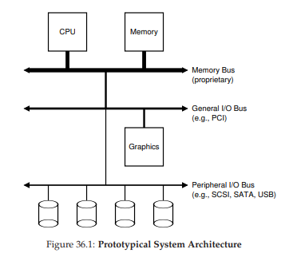
Hình 36.1: Kiến trúc hệ thống nguyên mẫu (Prototypical System Architecture)
Một câu hỏi đặt ra: tại sao chúng ta cần một cấu trúc phân cấp như vậy? Nói ngắn gọn: vật lý và chi phí. Bus càng nhanh thì chiều dài của nó càng phải ngắn; do đó, một memory bus hiệu năng cao không có nhiều chỗ để cắm thêm thiết bị. Ngoài ra, việc thiết kế một bus hiệu năng cao là rất tốn kém. Vì vậy, các nhà thiết kế hệ thống đã áp dụng cách tiếp cận phân cấp này, trong đó các thành phần đòi hỏi hiệu năng cao (như card đồ họa) được đặt gần CPU hơn. Các thành phần hiệu năng thấp hơn được đặt xa hơn. Lợi ích của việc đặt đĩa và các thiết bị chậm khác trên peripheral bus là rất nhiều; đặc biệt, bạn có thể kết nối số lượng lớn thiết bị vào đó.
Tất nhiên, các hệ thống hiện đại ngày càng sử dụng chipset chuyên dụng và các kết nối point-to-point nhanh hơn để cải thiện hiệu năng. Hình 36.2 cho thấy sơ đồ gần đúng của Intel Z270 Chipset [H17]. Ở phía trên, CPU kết nối trực tiếp nhất với hệ thống bộ nhớ, nhưng cũng có một kết nối hiệu năng cao tới card đồ họa (và do đó là màn hình) để hỗ trợ chơi game (ồ, thật khủng khiếp!) và các ứng dụng đòi hỏi đồ họa cao.
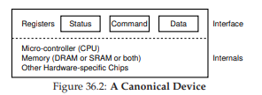
Hình 36.2: Kiến trúc hệ thống hiện đại (Modern System Architecture)
CPU kết nối với một chip I/O thông qua DMI (Direct Media Interface) độc quyền của Intel, và phần còn lại của các thiết bị kết nối với chip này thông qua nhiều loại interconnect khác nhau. Ở bên phải, một hoặc nhiều ổ cứng kết nối với hệ thống qua giao diện eSATA; ATA (AT Attachment – kết nối cho máy IBM PC AT), sau đó là SATA (Serial ATA), và hiện nay là eSATA (external SATA) thể hiện sự tiến hóa của các giao diện lưu trữ trong nhiều thập kỷ qua, với mỗi bước tiến đều tăng hiệu năng để bắt kịp với các thiết bị lưu trữ hiện đại. Bên dưới chip I/O là một số kết nối USB (Universal Serial Bus), trong sơ đồ này dùng để kết nối bàn phím và chuột với máy tính. Trong nhiều hệ thống hiện đại, USB được dùng cho các thiết bị hiệu năng thấp như vậy. Cuối cùng, ở bên trái, các thiết bị hiệu năng cao khác có thể được kết nối với hệ thống qua PCIe (Peripheral Component Interconnect Express). Trong sơ đồ này, một network interface (giao diện mạng) được kết nối tại đây; các thiết bị lưu trữ hiệu năng cao hơn (như thiết bị lưu trữ bền vững NVMe) cũng thường được kết nối tại đây.
36.2 Một thiết bị chuẩn (A Canonical Device)
Bây giờ, hãy xem xét một thiết bị chuẩn (không phải thiết bị thực), và sử dụng nó để tìm hiểu một số cơ chế cần thiết nhằm làm cho việc tương tác với thiết bị trở nên hiệu quả. Từ Hình 36.3, ta thấy một thiết bị có hai thành phần quan trọng:
- Giao diện phần cứng (hardware interface) mà nó cung cấp cho phần còn lại của hệ thống. Giống như một phần mềm, phần cứng cũng phải cung cấp một loại giao diện nào đó cho phép phần mềm hệ thống điều khiển hoạt động của nó. Do đó, tất cả các thiết bị đều có một giao diện và giao thức (protocol) được xác định để tương tác điển hình.
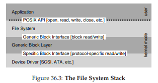
Hình 36.3: Một thiết bị chuẩn (A Canonical Device)
- Cấu trúc bên trong (internal structure) của thiết bị. Phần này phụ thuộc vào cách triển khai và chịu trách nhiệm hiện thực hóa abstraction (sự trừu tượng hóa) mà thiết bị cung cấp cho hệ thống. Các thiết bị rất đơn giản sẽ chỉ có một hoặc vài chip phần cứng để thực hiện chức năng của chúng; các thiết bị phức tạp hơn sẽ bao gồm một CPU đơn giản, một số bộ nhớ đa dụng (general purpose memory), và các chip chuyên biệt khác để hoàn thành công việc. Ví dụ, các bộ điều khiển RAID hiện đại có thể bao gồm hàng trăm nghìn dòng firmware (phần mềm nằm trong thiết bị phần cứng) để thực hiện chức năng của chúng.
36.3 Giao thức chuẩn (The Canonical Protocol)
Trong sơ đồ trên, giao diện thiết bị (được đơn giản hóa) bao gồm ba register:
- Status register: có thể đọc để biết trạng thái hiện tại của thiết bị.
- Command register: dùng để ra lệnh cho thiết bị thực hiện một tác vụ nhất định.
- Data register: dùng để truyền dữ liệu tới thiết bị hoặc nhận dữ liệu từ thiết bị.
Bằng cách đọc và ghi vào các register này, hệ điều hành có thể điều khiển hành vi của thiết bị.
Bây giờ, hãy mô tả một tương tác điển hình mà hệ điều hành (OS) có thể thực hiện với thiết bị để yêu cầu thiết bị làm một việc nào đó thay cho nó. Giao thức (protocol) như sau:
While (STATUS == BUSY)
; // chờ cho đến khi thiết bị không bận
Write data to DATA register
Write command to COMMAND register
// (bắt đầu thiết bị và thực thi lệnh)
While (STATUS == BUSY)
; // chờ cho đến khi thiết bị hoàn thành yêu cầu
Giao thức này có bốn bước:
- OS chờ cho đến khi thiết bị sẵn sàng nhận lệnh bằng cách liên tục đọc status register; chúng ta gọi đây là polling thiết bị (về cơ bản là liên tục hỏi xem nó đang làm gì).
- OS gửi một số dữ liệu xuống data register; có thể hình dung nếu đây là một ổ đĩa, thì sẽ cần nhiều lần ghi để truyền một khối dữ liệu (ví dụ 4KB) xuống thiết bị. Khi CPU chính tham gia trực tiếp vào việc di chuyển dữ liệu (như trong giao thức ví dụ này), ta gọi đó là programmed I/O (PIO).
- OS ghi một lệnh vào command register; thao tác này ngầm báo cho thiết bị biết rằng dữ liệu đã sẵn sàng và nó nên bắt đầu thực hiện lệnh.
- Cuối cùng, OS chờ thiết bị hoàn thành bằng cách tiếp tục polling trong vòng lặp, kiểm tra xem nó đã xong chưa (lúc này có thể nhận được mã lỗi để báo thành công hoặc thất bại).
Giao thức cơ bản này có ưu điểm là đơn giản và hoạt động được. Tuy nhiên, nó cũng tồn tại một số điểm kém hiệu quả và bất tiện. Vấn đề đầu tiên dễ nhận thấy là polling có vẻ không hiệu quả; cụ thể, nó lãng phí rất nhiều thời gian CPU chỉ để chờ thiết bị (có thể rất chậm) hoàn thành công việc, thay vì chuyển sang chạy một process (tiến trình) khác đang sẵn sàng, từ đó tận dụng CPU tốt hơn.
THE CRUX: LÀM THẾ NÀO ĐỂ TRÁNH CHI PHÍ CỦA POLLING
Làm thế nào để OS kiểm tra trạng thái thiết bị mà không cần polling liên tục, từ đó giảm chi phí CPU cần thiết để quản lý thiết bị?
36.4 Giảm tải CPU bằng Interrupts
Phát minh mà nhiều kỹ sư đã tìm ra từ nhiều năm trước để cải thiện tương tác này là một thứ mà chúng ta đã gặp: interrupt (ngắt).
Thay vì polling thiết bị liên tục, OS có thể gửi yêu cầu, đưa process gọi I/O vào trạng thái ngủ (sleep), và context switch sang một tác vụ khác. Khi thiết bị hoàn tất thao tác, nó sẽ phát ra một hardware interrupt (ngắt phần cứng), khiến CPU nhảy vào OS tại một interrupt service routine (ISR) – hay đơn giản hơn là interrupt handler.
Interrupt handler chỉ là một đoạn code trong hệ điều hành, có nhiệm vụ hoàn tất yêu cầu (ví dụ: đọc dữ liệu và có thể cả mã lỗi từ thiết bị) và đánh thức process đang chờ I/O, để nó tiếp tục thực thi.
Interrupts cho phép chồng lấp (overlap) giữa tính toán và I/O, đây là yếu tố then chốt để cải thiện mức sử dụng tài nguyên. Dưới đây là sơ đồ thời gian minh họa vấn đề:
CPU: 1 1 1 1 1 p p p p p 1 1 1 1 1
Disk: -----------------------------
Trong sơ đồ, Process 1 chạy trên CPU một thời gian (được biểu diễn bằng các số 1 lặp lại trên dòng CPU), sau đó gửi một yêu cầu I/O tới đĩa để đọc dữ liệu. Không có interrupts, hệ thống chỉ quay vòng (spin), polling trạng thái thiết bị liên tục cho đến khi I/O hoàn tất (biểu diễn bằng p). Đĩa xử lý yêu cầu và cuối cùng Process 1 mới chạy lại.
Nếu thay vào đó chúng ta sử dụng interrupts và cho phép chồng lấp:
CPU: 1 1 1 1 1 2 2 2 2 2 1 1 1 1 1
Disk: -----------------------------
Trong ví dụ này, OS chạy Process 2 trên CPU trong khi đĩa đang phục vụ yêu cầu của Process 1. Khi yêu cầu đĩa hoàn tất, một interrupt xảy ra, OS đánh thức Process 1 và chạy nó trở lại. Như vậy, cả CPU và đĩa đều được sử dụng hợp lý trong khoảng thời gian giữa.
Lưu ý rằng sử dụng interrupts không phải lúc nào cũng là giải pháp tốt nhất. Ví dụ, hãy tưởng tượng một thiết bị thực hiện tác vụ rất nhanh: lần polling đầu tiên thường đã thấy thiết bị hoàn tất. Sử dụng interrupt trong trường hợp này thực ra sẽ làm chậm hệ thống: việc chuyển sang process khác, xử lý interrupt, rồi chuyển lại process ban đầu là tốn kém.
Vì vậy, nếu thiết bị nhanh, tốt nhất là polling; nếu thiết bị chậm, interrupts – cho phép chồng lấp – là lựa chọn tối ưu. Nếu tốc độ thiết bị không xác định, hoặc lúc nhanh lúc chậm, tốt nhất là dùng giải pháp lai: polling trong một khoảng ngắn, rồi nếu thiết bị chưa xong thì chuyển sang dùng interrupts. Cách tiếp cận hai giai đoạn này có thể đạt được lợi ích của cả hai phương pháp.
TIP: INTERRUPTS KHÔNG PHẢI LÚC NÀO CŨNG TỐT HƠN POLLING
Mặc dù interrupts cho phép chồng lấp giữa tính toán và I/O, chúng chỉ thực sự hợp lý cho các thiết bị chậm. Nếu không, chi phí xử lý interrupt và context switch có thể lớn hơn lợi ích mà interrupts mang lại. Cũng có những trường hợp một lượng lớn interrupts có thể làm quá tải hệ thống và dẫn đến livelock [MR96]; trong những trường hợp như vậy, polling mang lại cho OS khả năng kiểm soát tốt hơn trong việc lập lịch, và do đó lại trở nên hữu ích.
Một lý do khác để không sử dụng interrupts (ngắt) xuất hiện trong lĩnh vực mạng máy tính [MR96]. Khi một luồng lớn các gói tin (packet) đến, và mỗi gói đều tạo ra một interrupt, hệ điều hành (OS) có thể rơi vào trạng thái livelock — tức là chỉ xử lý các interrupt mà không bao giờ cho phép một process (tiến trình) ở mức người dùng chạy để thực sự phục vụ các yêu cầu.
Ví dụ, hãy tưởng tượng một web server gặp một đợt tải tăng đột biến vì nó trở thành mục tin đứng đầu trên Hacker News [H18]. Trong trường hợp này, thỉnh thoảng sử dụng polling sẽ tốt hơn để kiểm soát tốt hơn những gì đang diễn ra trong hệ thống, và cho phép web server xử lý một số yêu cầu trước khi quay lại thiết bị để kiểm tra các gói tin mới đến.
Một tối ưu hóa khác dựa trên interrupt là coalescing (gộp ngắt). Trong thiết lập này, một thiết bị cần phát ra interrupt sẽ chờ một chút trước khi gửi interrupt tới CPU. Trong khi chờ, các yêu cầu khác có thể sớm hoàn thành, và do đó nhiều interrupt có thể được gộp lại thành một lần gửi interrupt duy nhất, giúp giảm chi phí xử lý interrupt. Tất nhiên, chờ quá lâu sẽ làm tăng latency (độ trễ) của yêu cầu — đây là một sự đánh đổi phổ biến trong hệ thống. Xem Ahmad et al. [A+11] để có bản tóm tắt xuất sắc về chủ đề này.
36.5 Di chuyển dữ liệu hiệu quả hơn với DMA
Thật không may, còn một khía cạnh khác của giao thức chuẩn (canonical protocol) cần được xem xét. Cụ thể, khi sử dụng programmed I/O (PIO) để truyền một khối dữ liệu lớn tới thiết bị, CPU lại một lần nữa bị quá tải với một tác vụ khá tầm thường, và do đó lãng phí nhiều thời gian và công sức — thời gian này có thể được dùng để chạy các process khác. Dòng thời gian dưới đây minh họa vấn đề:
CPU: 1 1 1 1 1 c c c 2 2 2 2 2 1 1 1 1 1
Disk: -----------------------------------
Trong dòng thời gian này, Process 1 đang chạy và sau đó muốn ghi một số dữ liệu xuống đĩa. Nó khởi tạo I/O, và phải sao chép dữ liệu từ bộ nhớ tới thiết bị một cách tường minh, từng từ (word) một (được đánh dấu c trong sơ đồ). Khi việc sao chép hoàn tất, I/O mới bắt đầu trên đĩa và CPU cuối cùng mới có thể được dùng cho việc khác.
THE CRUX: LÀM THẾ NÀO ĐỂ GIẢM CHI PHÍ PIO
Với PIO, CPU tốn quá nhiều thời gian để tự tay di chuyển dữ liệu tới và từ thiết bị. Làm thế nào để chúng ta chuyển bớt công việc này đi nơi khác, từ đó cho phép CPU được sử dụng hiệu quả hơn?
Giải pháp cho vấn đề này là Direct Memory Access (DMA). Một DMA engine về cơ bản là một thiết bị chuyên biệt trong hệ thống, có thể điều phối việc truyền dữ liệu giữa thiết bị và bộ nhớ chính mà không cần nhiều sự can thiệp của CPU.
DMA hoạt động như sau: để truyền dữ liệu tới thiết bị, OS sẽ lập trình DMA engine bằng cách cho nó biết dữ liệu nằm ở đâu trong bộ nhớ, lượng dữ liệu cần sao chép, và thiết bị đích. Tại thời điểm đó, OS coi như đã xong phần việc của mình và có thể tiếp tục làm việc khác. Khi DMA hoàn tất, DMA controller sẽ phát ra một interrupt, và OS sẽ biết quá trình truyền đã hoàn thành. Dòng thời gian được sửa đổi như sau:
CPU: 1 1 1 1 1 2 2 2 2 2 1 1 1 1 1
DMA: c c c
Disk: --------------------------------
Từ dòng thời gian, có thể thấy việc sao chép dữ liệu giờ đây do DMA controller đảm nhận. Vì CPU rảnh trong thời gian này, OS có thể làm việc khác — ở đây là chạy Process 2. Nhờ vậy, Process 2 được sử dụng CPU nhiều hơn trước khi Process 1 chạy lại.
36.6 Các phương thức tương tác với thiết bị (Methods Of Device Interaction)
Bây giờ, khi đã hiểu một phần về các vấn đề hiệu năng liên quan đến việc thực hiện I/O, vẫn còn một số vấn đề khác cần xử lý để tích hợp thiết bị vào các hệ thống hiện đại. Một vấn đề bạn có thể đã nhận thấy: chúng ta vẫn chưa thực sự nói về cách OS giao tiếp với thiết bị! Do đó, vấn đề đặt ra:
THE CRUX: LÀM THẾ NÀO ĐỂ GIAO TIẾP VỚI THIẾT BỊ
Phần cứng nên giao tiếp với thiết bị như thế nào? Có nên có các lệnh tường minh? Hay còn cách nào khác?
Theo thời gian, đã phát triển hai phương pháp chính để giao tiếp với thiết bị:
-
Phương pháp đầu tiên và lâu đời nhất (được IBM mainframe sử dụng trong nhiều năm) là có các lệnh I/O tường minh. Các lệnh này quy định cách để OS gửi dữ liệu tới các device register cụ thể, từ đó cho phép xây dựng các giao thức như đã mô tả ở trên.
Ví dụ, trên kiến trúc x86, các lệnhinvàoutcó thể được dùng để giao tiếp với thiết bị. Để gửi dữ liệu tới thiết bị, chương trình gọi sẽ chỉ định một thanh ghi chứa dữ liệu và một port cụ thể để định danh thiết bị. Thực thi lệnh sẽ dẫn đến hành vi mong muốn.Các lệnh này thường là privileged (đặc quyền). OS kiểm soát thiết bị, và do đó OS là thực thể duy nhất được phép giao tiếp trực tiếp với chúng. Hãy tưởng tượng nếu bất kỳ chương trình nào cũng có thể đọc hoặc ghi đĩa: sẽ là hỗn loạn hoàn toàn, vì bất kỳ chương trình người dùng nào cũng có thể lợi dụng lỗ hổng này để giành quyền kiểm soát toàn bộ máy.
-
Phương pháp thứ hai để tương tác với thiết bị được gọi là memory-mapped I/O. Với cách tiếp cận này, phần cứng làm cho các device register khả dụng như thể chúng là các vị trí bộ nhớ. Để truy cập một register cụ thể, OS thực hiện một lệnh load (để đọc) hoặc store (để ghi) tới địa chỉ đó; phần cứng sau đó sẽ định tuyến thao tác load/store này tới thiết bị thay vì tới bộ nhớ chính.
Không có ưu thế vượt trội tuyệt đối giữa hai phương pháp. Memory-mapped I/O có ưu điểm là không cần thêm lệnh mới để hỗ trợ, nhưng cả hai phương pháp vẫn đang được sử dụng song song cho đến ngày nay.
36.7 Tích hợp vào Hệ điều hành: Device Driver
Một vấn đề cuối cùng chúng ta sẽ thảo luận: làm thế nào để tích hợp các thiết bị — mỗi thiết bị có giao diện (interface) rất riêng biệt — vào hệ điều hành (OS), trong khi chúng ta muốn giữ cho OS càng tổng quát càng tốt.
Ví dụ, hãy xem xét một file system (hệ thống tệp). Chúng ta muốn xây dựng một file system có thể hoạt động trên nhiều loại ổ đĩa khác nhau như SCSI disk, IDE disk, USB keychain drive, v.v… và muốn file system này hầu như không cần quan tâm đến chi tiết cách gửi yêu cầu đọc (read) hoặc ghi (write) tới các loại ổ đĩa khác nhau. Do đó, vấn đề đặt ra:
THE CRUX: LÀM THẾ NÀO XÂY DỰNG MỘT OS TRUNG LẬP VỚI THIẾT BỊ
Làm thế nào để giữ cho phần lớn OS trung lập với thiết bị, từ đó ẩn đi các chi tiết tương tác thiết bị khỏi các phân hệ chính của OS?
Vấn đề này được giải quyết bằng kỹ thuật lâu đời: abstraction (trừu tượng hóa). Ở mức thấp nhất, một phần mềm trong OS phải biết chi tiết cách hoạt động của thiết bị. Phần mềm này được gọi là device driver (trình điều khiển thiết bị), và mọi chi tiết tương tác với thiết bị đều được đóng gói (encapsulated) bên trong nó.
Hãy xem abstraction này giúp ích cho thiết kế và triển khai OS như thế nào bằng cách xem xét ngăn xếp phần mềm file system của Linux. Hình 36.4 là một mô tả gần đúng về tổ chức phần mềm của Linux.

Hình 36.4: Ngăn xếp file system (The File System Stack)
Như bạn thấy từ sơ đồ, một file system (và chắc chắn là cả ứng dụng ở tầng trên) hoàn toàn không cần biết nó đang sử dụng loại ổ đĩa nào; nó chỉ đơn giản gửi các yêu cầu đọc/ghi block tới generic block layer (lớp khối tổng quát), lớp này sẽ định tuyến chúng tới device driver phù hợp, driver này sẽ xử lý chi tiết việc gửi yêu cầu cụ thể. Mặc dù sơ đồ đã được đơn giản hóa, nó cho thấy cách mà các chi tiết có thể được ẩn khỏi phần lớn OS.
Sơ đồ cũng cho thấy một raw interface (giao diện thô) tới thiết bị, cho phép các ứng dụng đặc biệt (như file-system checker – công cụ kiểm tra hệ thống tệp, sẽ được mô tả sau [AD14], hoặc công cụ chống phân mảnh đĩa) đọc và ghi trực tiếp các block mà không cần sử dụng abstraction của file. Hầu hết các hệ thống đều cung cấp loại giao diện này để hỗ trợ các ứng dụng quản lý lưu trữ cấp thấp.
Lưu ý rằng encapsulation như trên cũng có nhược điểm. Ví dụ, nếu một thiết bị có nhiều khả năng đặc biệt nhưng phải cung cấp một giao diện tổng quát cho phần còn lại của kernel, thì các khả năng đặc biệt đó sẽ không được sử dụng. Tình huống này xảy ra, chẳng hạn, trong Linux với các thiết bị SCSI, vốn có khả năng báo lỗi rất chi tiết; nhưng vì các thiết bị khối khác (ví dụ: ATA/IDE) có cơ chế xử lý lỗi đơn giản hơn, nên tầng phần mềm cao hơn chỉ nhận được một mã lỗi tổng quát EIO (generic I/O error); mọi chi tiết bổ sung mà SCSI có thể cung cấp đều bị mất đối với file system [G08].
Điều thú vị là, vì device driver cần thiết cho bất kỳ thiết bị nào bạn cắm vào hệ thống, theo thời gian chúng đã chiếm một tỷ lệ rất lớn trong mã nguồn kernel. Các nghiên cứu về Linux kernel cho thấy hơn 70% mã nguồn OS nằm trong device driver [C01]; với các hệ thống Windows, con số này cũng có khả năng rất cao. Do đó, khi ai đó nói rằng OS có hàng triệu dòng mã, thực chất họ đang nói rằng OS có hàng triệu dòng mã device driver. Tất nhiên, với mỗi cài đặt cụ thể, phần lớn mã này có thể không hoạt động (tức là chỉ một vài thiết bị được kết nối với hệ thống tại một thời điểm). Đáng buồn hơn, vì driver thường được viết bởi “nghiệp dư” (thay vì lập trình viên kernel toàn thời gian), chúng thường có nhiều lỗi hơn và là nguyên nhân chính gây ra kernel crash (sập kernel) [S03].
36.8 Nghiên cứu tình huống: Một IDE Disk Driver đơn giản
Để tìm hiểu sâu hơn, hãy xem nhanh một thiết bị thực: IDE disk drive [L94]. Chúng ta sẽ tóm tắt giao thức như được mô tả trong tài liệu [W10]; đồng thời xem qua mã nguồn xv6 để có ví dụ đơn giản về một IDE driver hoạt động [CK+08].
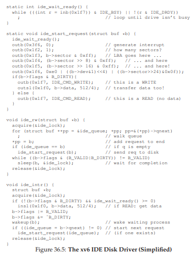
Hình 36.5: Giao diện IDE (The IDE Interface)
Một IDE disk cung cấp một giao diện đơn giản cho hệ thống, bao gồm bốn loại register: control, command block, status, và error. Các register này có thể được truy cập bằng cách đọc hoặc ghi vào các “I/O address” cụ thể (ví dụ: 0x3F6) bằng cách sử dụng (trên x86) các lệnh I/O in và out.
Giao thức cơ bản để tương tác với thiết bị như sau (giả sử thiết bị đã được khởi tạo):
- Chờ ổ đĩa sẵn sàng: Đọc Status Register (0x1F7) cho đến khi ổ đĩa ở trạng thái READY và không BUSY.
- Ghi tham số vào command register: Ghi số sector, logical block address (LBA) của các sector cần truy cập, và số ổ (master = 0x00 hoặc slave = 0x10, vì IDE chỉ cho phép tối đa hai ổ) vào các command register (0x1F2–0x1F6).
- Bắt đầu I/O: Ghi lệnh READ hoặc WRITE vào command register (0x1F7).
- Truyền dữ liệu (đối với ghi): Chờ cho đến khi trạng thái ổ đĩa là READY và DRQ (drive request for data); ghi dữ liệu vào data port.
- Xử lý interrupt: Trong trường hợp đơn giản, xử lý một interrupt cho mỗi sector được truyền; các phương pháp phức tạp hơn cho phép gộp (batching) và chỉ tạo một interrupt cuối cùng khi toàn bộ quá trình truyền hoàn tất.
- Xử lý lỗi: Sau mỗi thao tác, đọc status register. Nếu bit ERROR bật, đọc error register để biết chi tiết.
Hầu hết giao thức này được tìm thấy trong xv6 IDE driver (Hình 36.6), driver này (sau khi khởi tạo) hoạt động qua bốn hàm chính:
ide_rw(): Xếp hàng một yêu cầu (nếu có yêu cầu khác đang chờ) hoặc gửi trực tiếp yêu cầu tới đĩa (thông quaide_start_request()); trong cả hai trường hợp, routine này chờ yêu cầu hoàn tất và đưa process gọi vào trạng thái ngủ.ide_start_request(): Gửi một yêu cầu (và có thể cả dữ liệu, nếu là ghi) tới đĩa; các lệnh x86invàoutđược gọi để đọc và ghi các device register tương ứng.ide_wait_ready(): Đượcstart_requestsử dụng để đảm bảo ổ đĩa sẵn sàng trước khi gửi yêu cầu.ide_intr(): Được gọi khi xảy ra interrupt; đọc dữ liệu từ thiết bị (nếu yêu cầu là đọc), đánh thức process đang chờ I/O hoàn tất, và nếu còn yêu cầu trong hàng đợi I/O, sẽ khởi động yêu cầu tiếp theo thông quaide_start_request().

Hình 36.6: Trình điều khiển đĩa IDE trong xv6 (đơn giản hóa)
36.9 Ghi chú lịch sử (Historical Notes)
Trước khi kết thúc, chúng ta sẽ điểm qua một ghi chú lịch sử ngắn gọn về nguồn gốc của một số ý tưởng nền tảng này. Nếu bạn muốn tìm hiểu sâu hơn, hãy đọc bản tóm tắt xuất sắc của Smotherman [S08].
Interrupt (ngắt) là một ý tưởng rất lâu đời, đã tồn tại trên những máy tính đầu tiên. Ví dụ, UNIVAC vào đầu những năm 1950 đã có một dạng interrupt vectoring (định tuyến ngắt), mặc dù không rõ chính xác năm nào tính năng này xuất hiện [S08]. Thật đáng tiếc là ngay cả khi ngành khoa học máy tính còn sơ khai, chúng ta đã bắt đầu đánh mất dấu vết về nguồn gốc lịch sử của nó.
Cũng có một số tranh luận về việc máy nào là máy đầu tiên giới thiệu ý tưởng DMA (Direct Memory Access – truy cập bộ nhớ trực tiếp). Ví dụ, Knuth và một số người khác cho rằng đó là DYSEAC (một “máy di động”, mà vào thời điểm đó nghĩa là có thể kéo đi bằng rơ-moóc), trong khi những người khác lại nghĩ rằng IBM SAGE có thể là máy đầu tiên [S08]. Dù thế nào, vào giữa những năm 1950, đã tồn tại các hệ thống với thiết bị I/O có thể giao tiếp trực tiếp với bộ nhớ và phát ra interrupt cho CPU khi hoàn tất. Lịch sử ở đây khó truy dấu vì các phát minh gắn liền với những cỗ máy thực tế, đôi khi rất ít được biết đến. Ví dụ, một số người cho rằng máy TX-2 của Lincoln Labs là máy đầu tiên có vectored interrupts [S08], nhưng điều này vẫn chưa rõ ràng.
Bởi vì những ý tưởng này tương đối hiển nhiên — không cần một bước nhảy vọt kiểu Einstein để nghĩ ra việc cho phép CPU làm việc khác trong khi một I/O chậm đang chờ — nên có lẽ việc tập trung vào câu hỏi “ai là người đầu tiên?” là không cần thiết. Điều chắc chắn là: khi con người xây dựng những máy tính đầu tiên, họ nhanh chóng nhận ra rằng cần có hỗ trợ I/O. Interrupt, DMA và các ý tưởng liên quan đều là hệ quả trực tiếp từ bản chất của CPU nhanh và thiết bị chậm; nếu bạn ở đó vào thời điểm đó, có thể bạn cũng sẽ nảy ra những ý tưởng tương tự.
36.10 Tóm tắt (Summary)
Đến đây, bạn đã có một hiểu biết cơ bản về cách một hệ điều hành (OS) tương tác với một thiết bị. Hai kỹ thuật — interrupt và DMA — đã được giới thiệu để giúp cải thiện hiệu năng thiết bị, cùng với hai phương pháp truy cập device register (thanh ghi thiết bị): explicit I/O instructions (các lệnh I/O tường minh) và memory-mapped I/O (I/O ánh xạ bộ nhớ). Cuối cùng, khái niệm device driver (trình điều khiển thiết bị) đã được trình bày, cho thấy cách OS có thể đóng gói các chi tiết mức thấp và nhờ đó giúp việc xây dựng phần còn lại của OS trở nên dễ dàng hơn theo hướng device-neutral (trung lập với thiết bị).
37. Ổ đĩa cứng (Hard Disk Drives)
Chương trước đã giới thiệu khái niệm tổng quát về thiết bị I/O (I/O device) và cho thấy hệ điều hành (OS) có thể tương tác với loại thiết bị này như thế nào. Trong chương này, chúng ta sẽ đi sâu hơn vào chi tiết của một thiết bị cụ thể: ổ đĩa cứng (hard disk drive). Trong nhiều thập kỷ, các ổ đĩa này đã là hình thức lưu trữ dữ liệu bền vững (persistent storage) chính trong các hệ thống máy tính, và phần lớn sự phát triển của công nghệ file system (hệ thống tệp – sẽ được đề cập ở các chương sau) đều dựa trên hành vi của chúng. Do đó, việc hiểu rõ chi tiết hoạt động của ổ đĩa là rất cần thiết trước khi xây dựng phần mềm file system để quản lý nó. Nhiều chi tiết trong số này có thể tìm thấy trong các bài báo xuất sắc của Ruemmler và Wilkes [RW92], cũng như Anderson, Dykes và Riedel [ADR03].
THE CRUX: LÀM THẾ NÀO ĐỂ LƯU TRỮ VÀ TRUY XUẤT DỮ LIỆU TRÊN Ổ ĐĨA
Ổ đĩa cứng hiện đại lưu trữ dữ liệu như thế nào? Giao diện của nó ra sao? Dữ liệu thực sự được bố trí và truy cập như thế nào? Lập lịch đĩa (disk scheduling) cải thiện hiệu năng ra sao?
37.1 Giao diện (The Interface)
Hãy bắt đầu bằng cách tìm hiểu giao diện của một ổ đĩa cứng hiện đại. Giao diện cơ bản của tất cả các ổ đĩa hiện đại khá đơn giản: ổ đĩa bao gồm một số lượng lớn sector (khối 512 byte), mỗi sector có thể được đọc hoặc ghi. Các sector được đánh số từ 0 đến n − 1 trên một ổ đĩa có n sector. Do đó, ta có thể hình dung ổ đĩa như một mảng các sector; dải địa chỉ từ 0 đến n − 1 chính là không gian địa chỉ (address space) của ổ đĩa.
Các thao tác trên nhiều sector là khả thi; trên thực tế, nhiều file system sẽ đọc hoặc ghi 4KB mỗi lần (hoặc nhiều hơn). Tuy nhiên, khi cập nhật ổ đĩa, nhà sản xuất chỉ đảm bảo rằng một lần ghi 512 byte là atomic (nguyên tử – tức là hoặc hoàn tất toàn bộ, hoặc không hoàn tất gì cả); do đó, nếu mất điện đột ngột, chỉ một phần của thao tác ghi lớn hơn có thể hoàn tất (điều này đôi khi được gọi là torn write – ghi bị xé lẻ).
Có một số giả định mà hầu hết các client (thành phần sử dụng ổ đĩa) thường mặc định, nhưng không được quy định trực tiếp trong giao diện; Schlosser và Ganger gọi đây là “hợp đồng ngầm” (unwritten contract) của ổ đĩa [SG04]. Cụ thể:
- Thông thường, có thể giả định rằng việc truy cập hai block¹ gần nhau trong không gian địa chỉ của ổ đĩa sẽ nhanh hơn so với truy cập hai block ở xa nhau.
- Cũng thường có thể giả định rằng việc truy cập các block liền kề (tức là đọc hoặc ghi tuần tự – sequential read/write) là chế độ truy cập nhanh nhất, và thường nhanh hơn nhiều so với bất kỳ mẫu truy cập ngẫu nhiên nào.
Hình 37.1: Ổ đĩa với chỉ một track
37.2 Hình học cơ bản (Basic Geometry)
Hãy bắt đầu tìm hiểu một số thành phần của ổ đĩa hiện đại. Chúng ta bắt đầu với platter – một bề mặt cứng hình tròn, nơi dữ liệu được lưu trữ bền vững bằng cách tạo ra các thay đổi từ tính trên nó. Một ổ đĩa có thể có một hoặc nhiều platter; mỗi platter có 2 mặt, mỗi mặt được gọi là một surface. Các platter này thường được làm từ vật liệu cứng (như nhôm), sau đó phủ một lớp từ tính mỏng cho phép ổ đĩa lưu trữ bit dữ liệu một cách bền vững ngay cả khi tắt nguồn.
Tất cả các platter được gắn chung quanh spindle (trục quay), trục này được nối với một motor (động cơ) để quay các platter (khi ổ đĩa được cấp nguồn) ở một tốc độ cố định. Tốc độ quay thường được đo bằng RPM (rotations per minute – vòng quay mỗi phút), và các giá trị phổ biến hiện nay nằm trong khoảng 7.200 RPM đến 15.000 RPM. Lưu ý rằng chúng ta thường quan tâm đến thời gian của một vòng quay đơn; ví dụ, một ổ đĩa quay ở 10.000 RPM nghĩa là một vòng quay mất khoảng 6 mili-giây (6 ms).
Dữ liệu được mã hóa trên mỗi surface thành các vòng tròn đồng tâm của các sector; mỗi vòng tròn như vậy được gọi là một track. Một surface duy nhất chứa hàng nghìn track, được xếp sát nhau, với hàng trăm track có thể nằm gọn trong bề rộng của một sợi tóc người.
Để đọc và ghi từ surface, chúng ta cần một cơ chế cho phép cảm nhận (read) các mẫu từ tính trên đĩa hoặc tạo ra thay đổi (write) chúng. Quá trình đọc và ghi này được thực hiện bởi disk head (đầu đọc/ghi đĩa); mỗi surface của ổ đĩa có một đầu đọc/ghi. Đầu đọc/ghi được gắn vào một disk arm (cần đĩa), di chuyển ngang qua surface để định vị đầu đọc/ghi trên track mong muốn.

Hình 37.2: Một track đơn và một đầu đọc/ghi
¹Chúng tôi (và nhiều tác giả khác) thường sử dụng các thuật ngữ block và sector thay thế cho nhau, với giả định rằng người đọc sẽ hiểu rõ ý nghĩa trong từng ngữ cảnh. Xin lỗi vì sự bất tiện này!
37.3 Một ổ đĩa đơn giản (A Simple Disk Drive)
Hãy tìm hiểu cách ổ đĩa hoạt động bằng cách xây dựng một mô hình từng track một. Giả sử chúng ta có một ổ đĩa đơn giản với một track duy nhất (Hình 37.1). Track này chỉ có 12 sector, mỗi sector có kích thước 512 byte (kích thước sector tiêu chuẩn, như đã nhắc lại) và được đánh địa chỉ từ 0 đến 11. Platter duy nhất này quay quanh spindle, được nối với một motor.
Tất nhiên, chỉ có track thôi thì chưa đủ thú vị; chúng ta muốn có thể đọc hoặc ghi các sector đó, và do đó cần một disk head gắn vào một disk arm, như minh họa trong Hình 37.2. Trong hình, đầu đọc/ghi đĩa, gắn ở cuối cần đĩa, đang được định vị trên sector số 6, và surface đang quay theo chiều ngược kim đồng hồ.
Độ trễ trên một track: Rotational Delay (độ trễ quay)
Để hiểu cách một yêu cầu được xử lý trên ổ đĩa đơn giản chỉ có một track, hãy tưởng tượng chúng ta nhận được một yêu cầu đọc block 0. Ổ đĩa sẽ phục vụ yêu cầu này như thế nào?
Trong ổ đĩa đơn giản này, ổ đĩa không cần làm nhiều việc. Cụ thể, nó chỉ cần chờ cho sector mong muốn quay đến vị trí ngay dưới disk head (đầu đọc/ghi). Việc chờ này xảy ra khá thường xuyên ở các ổ đĩa hiện đại và là một thành phần đủ quan trọng trong I/O service time (thời gian phục vụ I/O) để có một tên riêng: rotational delay (độ trễ quay – đôi khi gọi là rotation delay, nhưng nghe hơi lạ).
Trong ví dụ, nếu độ trễ quay toàn phần là R, ổ đĩa sẽ phải chịu một độ trễ quay khoảng R/2 để chờ sector 0 đi qua dưới đầu đọc/ghi (nếu bắt đầu từ sector 6). Trường hợp xấu nhất trên track này là yêu cầu tới sector 5, khiến ổ đĩa phải chịu gần như toàn bộ độ trễ quay để phục vụ yêu cầu.
Nhiều track: Seek Time (thời gian tìm kiếm)
Cho đến giờ, ổ đĩa của chúng ta chỉ có một track, điều này không thực tế; các ổ đĩa hiện đại tất nhiên có hàng triệu track. Hãy xem xét một bề mặt đĩa thực tế hơn một chút, với ba track (Hình 37.3, bên trái). Trong hình, đầu đọc/ghi hiện đang ở track trong cùng (chứa các sector từ 24 đến 35); track kế tiếp chứa các sector từ 12 đến 23, và track ngoài cùng chứa các sector từ 0 đến 11.
Để hiểu cách ổ đĩa truy cập một sector nhất định, hãy lần theo những gì xảy ra khi có yêu cầu đọc tới một sector ở xa, ví dụ: đọc sector 11. Để phục vụ yêu cầu này, ổ đĩa phải di chuyển cần đĩa (disk arm) tới đúng track (trong trường hợp này là track ngoài cùng), trong một quá trình gọi là seek (tìm kiếm). Seek, cùng với quay (rotation), là một trong những thao tác tốn kém nhất của ổ đĩa.
Seek có nhiều giai đoạn:
- Tăng tốc khi cần đĩa bắt đầu di chuyển.
- Chạy đều khi cần di chuyển ở tốc độ tối đa.
- Giảm tốc khi cần chậm lại.
- Cuối cùng là ổn định (settling) khi đầu đọc/ghi được định vị chính xác trên track mong muốn.
Thời gian ổn định thường khá đáng kể, ví dụ từ 0,5 đến 2 ms, vì ổ đĩa phải chắc chắn tìm đúng track (hãy tưởng tượng nếu nó chỉ “gần đúng” thì sẽ ra sao!).
Sau khi seek, cần đĩa đã đưa đầu đọc/ghi đến đúng track. Minh họa seek được thể hiện trong Hình 37.3 (bên phải).
Hình 37.3: Ba track và một đầu đọc/ghi (phải: với seek)
Như ta thấy, trong quá trình seek, cần đĩa đã di chuyển tới track mong muốn, và platter tất nhiên vẫn quay — trong ví dụ này là khoảng 3 sector. Do đó, sector 9 sắp đi qua dưới đầu đọc/ghi, và chúng ta chỉ cần chịu một độ trễ quay ngắn để hoàn tất việc truyền dữ liệu.
Khi sector 11 đi qua dưới đầu đọc/ghi, giai đoạn cuối của I/O sẽ diễn ra, gọi là transfer (truyền dữ liệu), nơi dữ liệu được đọc từ hoặc ghi xuống bề mặt đĩa. Như vậy, ta có bức tranh hoàn chỉnh về I/O time (thời gian I/O): đầu tiên là seek, sau đó là rotational delay, và cuối cùng là transfer.
Một số chi tiết khác
Mặc dù chúng ta sẽ không đi quá sâu, nhưng có một số chi tiết thú vị khác về cách ổ đĩa cứng hoạt động:
- Nhiều ổ đĩa sử dụng một dạng track skew (độ lệch track) để đảm bảo rằng các thao tác đọc tuần tự (sequential read) có thể được phục vụ chính xác ngay cả khi vượt qua ranh giới giữa các track. Trong ổ đĩa ví dụ đơn giản của chúng ta, điều này có thể trông như trong Hình 37.4.
Hình 37.4: Ba track với track skew bằng 2
Các sector thường được sắp xếp lệch như vậy vì khi chuyển từ track này sang track khác, ổ đĩa cần thời gian để định vị lại đầu đọc/ghi (ngay cả khi chỉ sang track liền kề). Nếu không có skew, khi đầu đọc/ghi được chuyển sang track tiếp theo, block mong muốn có thể đã quay qua mất, khiến ổ đĩa phải chờ gần như toàn bộ độ trễ quay để truy cập block tiếp theo.
-
Một thực tế khác là các track ngoài thường có nhiều sector hơn các track trong, do yếu tố hình học — đơn giản là ở ngoài có nhiều không gian hơn. Các ổ đĩa như vậy thường được gọi là multi-zoned disk drives (ổ đĩa đa vùng), trong đó đĩa được tổ chức thành nhiều zone (vùng), mỗi vùng là một tập hợp liên tiếp các track trên một surface. Mỗi zone có cùng số sector trên mỗi track, và các zone ngoài có nhiều sector hơn các zone trong.
-
Cuối cùng, một phần quan trọng của bất kỳ ổ đĩa hiện đại nào là cache (bộ nhớ đệm), vì lý do lịch sử đôi khi được gọi là track buffer. Cache này chỉ là một lượng nhỏ bộ nhớ (thường khoảng 8 hoặc 16 MB) mà ổ đĩa có thể dùng để lưu dữ liệu đọc từ hoặc ghi xuống đĩa.
Ví dụ: khi đọc một sector từ đĩa, ổ đĩa có thể quyết định đọc toàn bộ các sector trên track đó và lưu vào cache; điều này cho phép ổ đĩa phản hồi nhanh hơn với các yêu cầu tiếp theo tới cùng track. -
Khi ghi (write), ổ đĩa có hai lựa chọn:
- Xác nhận ghi hoàn tất khi dữ liệu đã được đưa vào bộ nhớ của nó.
- Xác nhận ghi hoàn tất chỉ sau khi dữ liệu đã thực sự được ghi xuống đĩa.
Cách thứ nhất gọi là write-back caching (hoặc đôi khi là immediate reporting), cách thứ hai gọi là write-through. Write-back caching đôi khi khiến ổ đĩa trông “nhanh hơn”, nhưng có thể nguy hiểm; nếu file system hoặc ứng dụng yêu cầu dữ liệu phải được ghi xuống đĩa theo một thứ tự nhất định để đảm bảo tính đúng đắn, write-back caching có thể gây ra vấn đề (hãy đọc chương về file-system journaling để biết chi tiết).
ASIDE: PHÂN TÍCH KÍCH THƯỚC (DIMENSIONAL ANALYSIS)
Bạn còn nhớ trong lớp Hóa học, cách mà bạn giải hầu hết mọi bài toán chỉ bằng cách thiết lập các đơn vị sao cho chúng triệt tiêu lẫn nhau, và bằng cách nào đó câu trả lời xuất hiện? “Phép màu” hóa học đó có tên gọi “cao siêu” là dimensional analysis (phân tích kích thước), và hóa ra nó cũng hữu ích trong phân tích hệ thống máy tính.Hãy làm một ví dụ để xem dimensional analysis hoạt động thế nào và tại sao nó hữu ích. Trong trường hợp này, giả sử bạn cần tính xem một vòng quay của ổ đĩa mất bao lâu, tính bằng mili-giây. Không may là bạn chỉ được cho RPM (rotations per minute – số vòng quay mỗi phút) của ổ đĩa. Giả sử chúng ta đang nói về một ổ đĩa 10K RPM (tức là quay 10.000 vòng mỗi phút). Làm thế nào để thiết lập phân tích kích thước để nhận được thời gian mỗi vòng quay tính bằng mili-giây?
Để làm điều đó, ta bắt đầu bằng cách đặt đơn vị mong muốn ở bên trái; trong trường hợp này, ta muốn có thời gian (ms) trên mỗi vòng quay, vì vậy ta viết:
Time (ms) / Rotation.
Sau đó, ta viết ra tất cả những gì mình biết, đảm bảo triệt tiêu đơn vị khi có thể. Đầu tiên, ta có:
1 minute / 10,000 Rotations (giữ “rotation” ở mẫu số, vì nó cũng ở mẫu số bên trái), sau đó đổi phút sang giây: 60 seconds / 1 minute, và cuối cùng đổi giây sang mili-giây: 1000 ms / 1 second.
Kết quả cuối cùng (với các đơn vị được triệt tiêu gọn gàng) là:Time (ms) / Rot. = (1 minute / 10,000 Rot.) * (60 seconds / 1 minute) * (1000 ms / 1 second) Time (ms) / Rot. = 60,000 ms / 10,000 Rot. = 6 ms / Rot.Như bạn thấy từ ví dụ này, dimensional analysis biến điều tưởng chừng trực giác thành một quy trình đơn giản và có thể lặp lại. Ngoài phép tính RPM ở trên, nó còn hữu ích thường xuyên trong phân tích I/O.
Ví dụ: bạn thường được cho tốc độ truyền của một ổ đĩa, chẳng hạn 100 MB/second, và được hỏi: mất bao lâu để truyền một block 512 KB (tính bằng mili-giây)? Với dimensional analysis, điều này rất dễ:Time (ms) / Request = (1 Request / 512 KB) * (1 MB / 100 MB/second) * (1024 KB / 1 MB) * (1000 ms / 1 second) Time (ms) / Request = (512 * 1024 * 1000) / (100 * 1024) = 5.12 ms (xấp xỉ, bản gốc có sai số nhỏ trong phép tính)
37.4 Thời gian I/O: Thực hiện phép tính (I/O Time: Doing The Math)
Bây giờ, khi đã có một mô hình trừu tượng về ổ đĩa, chúng ta có thể sử dụng một chút phân tích để hiểu rõ hơn về hiệu năng của ổ đĩa. Cụ thể, chúng ta có thể biểu diễn thời gian I/O như tổng của ba thành phần chính:
[ T_{I/O} = T_{seek} + T_{rotation} + T_{transfer} \tag{37.1} ]
Lưu ý rằng tốc độ I/O ((R_{I/O})), thường dễ sử dụng hơn để so sánh giữa các ổ đĩa (như chúng ta sẽ làm bên dưới), có thể dễ dàng tính từ thời gian. Chỉ cần chia kích thước dữ liệu truyền cho thời gian thực hiện:
[ R_{I/O} = \frac{Size_{Transfer}}{T_{I/O}} \tag{37.2} ]
Để cảm nhận rõ hơn về thời gian I/O, hãy thực hiện phép tính sau. Giả sử có hai loại workload (khối lượng công việc) mà chúng ta quan tâm:
- Random workload: phát ra các yêu cầu đọc nhỏ (ví dụ: 4KB) tới các vị trí ngẫu nhiên trên ổ đĩa. Loại workload ngẫu nhiên này phổ biến trong nhiều ứng dụng quan trọng, bao gồm cả database management systems (hệ quản trị cơ sở dữ liệu).
- Sequential workload: chỉ đơn giản đọc một số lượng lớn sector liên tiếp từ ổ đĩa, không nhảy lung tung. Mẫu truy cập tuần tự này cũng rất phổ biến và quan trọng.
Để hiểu sự khác biệt về hiệu năng giữa workload ngẫu nhiên và tuần tự, trước tiên chúng ta cần đưa ra một số giả định về ổ đĩa. Hãy xem xét hai ổ đĩa hiện đại của Seagate:
- Cheetah 15K.5 [S09b]: một ổ SCSI hiệu năng cao.
- Barracuda [S09a]: một ổ được thiết kế cho dung lượng lớn.
Chi tiết của cả hai được thể hiện trong Hình 37.5.

Hình 37.5: Thông số ổ đĩa – SCSI so với SATA
Như bạn có thể thấy, hai ổ đĩa có các đặc tính khá khác nhau, và theo nhiều cách, chúng tóm tắt khá rõ hai phân khúc quan trọng của thị trường ổ đĩa. Phân khúc thứ nhất là thị trường “high performance” (hiệu năng cao), nơi các ổ đĩa được thiết kế để quay nhanh nhất có thể, đạt thời gian seek thấp và truyền dữ liệu nhanh. Phân khúc thứ hai là thị trường “capacity” (dung lượng), nơi chi phí trên mỗi byte là yếu tố quan trọng nhất; do đó, các ổ đĩa này chậm hơn nhưng lưu trữ được nhiều bit nhất có thể trong không gian sẵn có.
Từ các con số này, chúng ta có thể bắt đầu tính toán hiệu năng của các ổ đĩa dưới hai loại workload (khối lượng công việc) đã nêu ở trên. Hãy bắt đầu với random workload. Giả sử mỗi lần đọc 4 KB xảy ra tại một vị trí ngẫu nhiên trên đĩa, ta có thể tính thời gian cho mỗi lần đọc như vậy. Với ổ Cheetah:
Tseek = 4 ms, Trotation = 2 ms, Ttransfer = 30 microseconds
(37.3)
Thời gian seek trung bình (4 mili-giây) được lấy từ thông số trung bình do nhà sản xuất công bố; lưu ý rằng một lần seek toàn phần (từ một đầu bề mặt đến đầu kia) có thể mất gấp hai hoặc ba lần thời gian này. Độ trễ quay trung bình được tính trực tiếp từ RPM. 15000 RPM tương đương 250 RPS (rotations per second – vòng quay mỗi giây); do đó, mỗi vòng quay mất 4 ms. Trung bình, ổ đĩa sẽ phải chờ nửa vòng quay, tức khoảng 2 ms. Cuối cùng, thời gian truyền dữ liệu chỉ đơn giản là kích thước dữ liệu chia cho tốc độ truyền tối đa; ở đây nó rất nhỏ (30 micro-giây; lưu ý rằng cần 1000 micro-giây mới được 1 mili-giây!).
Do đó, từ phương trình ở trên, (T_{I/O}) cho Cheetah xấp xỉ 6 ms. Để tính tốc độ I/O ((R_{I/O})), ta chỉ cần chia kích thước dữ liệu truyền cho thời gian trung bình, và thu được (R_{I/O}) cho Cheetah dưới random workload vào khoảng 0,66 MB/s. Cùng phép tính cho Barracuda cho ra (T_{I/O}) khoảng 13,2 ms (chậm hơn hơn gấp đôi), và tốc độ khoảng 0,31 MB/s.
Bây giờ hãy xem sequential workload. Ở đây, ta có thể giả định chỉ có một lần seek và quay trước khi thực hiện một lần truyền dữ liệu rất dài. Để đơn giản, giả sử kích thước dữ liệu truyền là 100 MB. Khi đó, (T_{I/O}) cho Cheetah và Barracuda lần lượt khoảng 800 ms và 950 ms. Tốc độ I/O do đó gần bằng tốc độ truyền tối đa: 125 MB/s và 105 MB/s. Hình 37.6 tóm tắt các con số này.
TIP: SỬ DỤNG Ổ ĐĨA THEO TUẦN TỰ
Khi có thể, hãy truyền dữ liệu tới và từ ổ đĩa theo cách tuần tự. Nếu không thể tuần tự, ít nhất hãy nghĩ đến việc truyền dữ liệu theo các khối lớn: càng lớn càng tốt. Nếu I/O được thực hiện thành các mảnh nhỏ ngẫu nhiên, hiệu năng I/O sẽ giảm nghiêm trọng. Người dùng sẽ chịu khổ. Và bạn cũng sẽ chịu khổ, khi biết rằng mình đã gây ra nỗi khổ đó với những thao tác I/O ngẫu nhiên bất cẩn.
Hình 37.6: Hiệu năng ổ đĩa – SCSI so với SATA
| | Cheetah | Barracuda |
| :---------------- | :------------ | :-------- |
| RI/O Random | 0.66 MB/s | 0.31 MB/s |
| RI/O Sequential | 125 MB/s | 105 MB/s |
Bảng trên cho thấy một số điểm quan trọng. Thứ nhất, và quan trọng nhất, là khoảng cách rất lớn về hiệu năng giữa random workload và sequential workload — gần 200 lần đối với Cheetah và hơn 300 lần đối với Barracuda. Và từ đó, chúng ta rút ra một lời khuyên thiết kế hiển nhiên nhất trong lịch sử ngành máy tính.
Điểm thứ hai, tinh tế hơn: có sự khác biệt lớn về hiệu năng giữa các ổ “performance” cao cấp và các ổ “capacity” giá rẻ. Vì lý do này (và nhiều lý do khác), mọi người thường sẵn sàng trả giá cao cho loại thứ nhất, trong khi cố gắng mua loại thứ hai với giá rẻ nhất có thể.
ASIDE: TÍNH “SEEK” TRUNG BÌNH
Trong nhiều sách và bài báo, bạn sẽ thấy thời gian seek trung bình của ổ đĩa được trích dẫn là xấp xỉ một phần ba thời gian seek toàn phần. Điều này đến từ đâu?Hóa ra nó xuất phát từ một phép tính đơn giản dựa trên khoảng cách seek trung bình, không phải thời gian. Hãy hình dung ổ đĩa như một tập hợp các track, từ 0 đến N. Khoảng cách seek giữa hai track x và y được tính là giá trị tuyệt đối của hiệu số giữa chúng: (|x − y|).
Để tính khoảng cách seek trung bình, trước tiên bạn chỉ cần cộng tất cả các khoảng cách seek có thể:
SUM(x=0 to N) SUM(y=0 to N) |x - y| (37.4)Sau đó, chia cho số lượng seek có thể có: (N^2). Để tính tổng, ta dùng dạng tích phân:
Integral(x=0 to N) Integral(y=0 to N) |x - y| dy dx (37.5)Để tính tích phân bên trong, ta tách giá trị tuyệt đối:
Integral(y=0 to x) (x - y) dy + Integral(y=x to N) (y - x) dy (37.6)Giải ra được ((xy − (1/2)y^2)) từ 0 đến x cộng với (((1/2)y^2 − xy)) từ x đến N, có thể rút gọn thành ((x^2 − Nx + (1/2)N^2)). Bây giờ ta tính tích phân bên ngoài:
Integral(x=0 to N) (x^2 − Nx + (1/2)N^2) dx (37.7)Kết quả là:
(1/3)x^3 − (1/2)Nx^2 + (1/2)N^2x từ 0 đến N (1/3)N^3 − (1/2)N^3 + (1/2)N^3 = (1/3)N^3 (37.8)Nhớ rằng ta vẫn phải chia cho tổng số seek ((N^2)) để tính khoảng cách seek trung bình: (((1/3)N^3) / N^2 = (1/3)N).
Do đó, khoảng cách seek trung bình trên một ổ đĩa, xét trên tất cả các seek có thể, là một phần ba khoảng cách toàn phần. Và bây giờ, khi nghe rằng seek trung bình bằng một phần ba seek toàn phần, bạn sẽ biết nó đến từ đâu.
37.5 Lập lịch đĩa (Disk Scheduling)
Do chi phí I/O cao, hệ điều hành (OS) từ trước đến nay luôn đóng vai trò trong việc quyết định thứ tự các yêu cầu I/O được gửi tới ổ đĩa. Cụ thể hơn, khi có một tập hợp các yêu cầu I/O, disk scheduler (bộ lập lịch đĩa) sẽ xem xét các yêu cầu và quyết định yêu cầu nào sẽ được lập lịch tiếp theo [SCO90, JW91].
Không giống như job scheduling (lập lịch công việc), nơi thời lượng của mỗi job thường không được biết trước, với disk scheduling, ta có thể ước lượng khá tốt thời gian một “job” (tức là một yêu cầu đĩa) sẽ mất. Bằng cách ước lượng seek time (thời gian tìm kiếm) và rotational delay (độ trễ quay) có thể xảy ra của một yêu cầu, disk scheduler có thể biết mỗi yêu cầu sẽ mất bao lâu, và do đó (theo cách tham lam) chọn yêu cầu mất ít thời gian nhất để phục vụ trước. Vì vậy, disk scheduler sẽ cố gắng tuân theo nguyên tắc SJF (shortest job first – công việc ngắn nhất trước) trong hoạt động của mình.
SSTF: Shortest Seek Time First
Một phương pháp lập lịch đĩa sớm được biết đến là shortest-seek-time-first (SSTF) (còn gọi là shortest-seek-first hoặc SSF). SSTF sắp xếp hàng đợi các yêu cầu I/O theo track, chọn các yêu cầu trên track gần nhất để hoàn thành trước.
Ví dụ: giả sử vị trí hiện tại của đầu đọc/ghi (head) đang ở track trong cùng, và chúng ta có các yêu cầu cho sector 21 (track giữa) và sector 2 (track ngoài cùng), khi đó ta sẽ xử lý yêu cầu tới sector 21 trước, chờ hoàn tất, rồi mới xử lý yêu cầu tới sector 2 (Hình 37.7).
Hình 37.7: SSTF – Lập lịch các yêu cầu 21 và 2
SSTF hoạt động tốt trong ví dụ này, tìm tới track giữa trước rồi tới track ngoài cùng. Tuy nhiên, SSTF không phải là “thuốc chữa bách bệnh”, vì các lý do sau:
- Thứ nhất, drive geometry (hình học của ổ đĩa) không được cung cấp cho OS; thay vào đó, OS chỉ thấy một mảng các block. May mắn là vấn đề này khá dễ khắc phục: thay vì SSTF, OS có thể triển khai nearest-block-first (NBF), lập lịch yêu cầu có địa chỉ block gần nhất tiếp theo.
- Vấn đề thứ hai mang tính cơ bản hơn: starvation (đói tài nguyên). Hãy tưởng tượng trong ví dụ trên, nếu có một luồng yêu cầu liên tục tới track trong cùng (nơi head đang ở), thì các yêu cầu tới các track khác sẽ bị bỏ qua hoàn toàn nếu dùng SSTF thuần túy.
THE CRUX: LÀM THẾ NÀO ĐỂ XỬ LÝ STARVATION TRÊN Ổ ĐĨA
Làm thế nào để triển khai lập lịch kiểu SSTF nhưng tránh được starvation?
Elevator (còn gọi là SCAN hoặc C-SCAN)
Câu trả lời cho vấn đề này đã được phát triển từ lâu (xem [CKR72] chẳng hạn) và khá đơn giản. Thuật toán, ban đầu gọi là SCAN, chỉ đơn giản di chuyển qua lại trên ổ đĩa, phục vụ các yêu cầu theo thứ tự trên các track. Ta gọi một lần quét toàn bộ ổ đĩa (từ track ngoài vào track trong, hoặc ngược lại) là một sweep. Do đó, nếu một yêu cầu tới một block trên track đã được phục vụ trong sweep hiện tại, nó sẽ không được xử lý ngay, mà sẽ được đưa vào hàng đợi để xử lý ở sweep tiếp theo (theo hướng ngược lại).
SCAN có một số biến thể, tất cả đều hoạt động tương tự. Ví dụ, Coffman và cộng sự giới thiệu F-SCAN, đóng băng hàng đợi cần phục vụ khi đang thực hiện một sweep [CKR72]; các yêu cầu đến trong khi sweep đang diễn ra sẽ được đưa vào hàng đợi để xử lý sau. Cách này tránh starvation cho các yêu cầu ở xa, bằng cách trì hoãn xử lý các yêu cầu đến muộn nhưng ở gần.
C-SCAN là một biến thể phổ biến khác, viết tắt của Circular SCAN. Thay vì quét theo cả hai hướng, thuật toán chỉ quét từ ngoài vào trong, rồi “reset” về track ngoài cùng để bắt đầu lại. Cách này công bằng hơn cho các track ngoài và trong, vì SCAN thuần túy ưu tiên các track giữa (sau khi phục vụ track ngoài, SCAN sẽ đi qua track giữa hai lần trước khi quay lại track ngoài).
Vì lý do này, thuật toán SCAN (và các biến thể) đôi khi được gọi là elevator algorithm (thuật toán thang máy), vì nó hoạt động giống như một thang máy chỉ đi lên hoặc đi xuống, chứ không phục vụ các tầng chỉ dựa trên việc tầng nào gần hơn. Hãy tưởng tượng bạn đang đi xuống từ tầng 10 xuống tầng 1, và ai đó ở tầng 3 bấm tầng 4, và thang máy lại đi lên tầng 4 vì nó “gần” hơn tầng 1! Trong thực tế, elevator algorithm giúp tránh những tình huống khó chịu như vậy; còn trong ổ đĩa, nó giúp tránh starvation.
Tuy nhiên, SCAN và các biến thể không phải là công nghệ lập lịch tốt nhất. Đặc biệt, SCAN (hoặc thậm chí SSTF) không tuân thủ nguyên tắc SJF một cách chặt chẽ nhất có thể, vì chúng bỏ qua yếu tố rotation. Và do đó, một vấn đề trọng tâm khác xuất hiện:
THE CRUX: LÀM THẾ NÀO ĐỂ TÍNH ĐẾN CHI PHÍ QUAY CỦA Ổ ĐĨA
Làm thế nào để triển khai một thuật toán gần với SJF hơn bằng cách tính cả seek và rotation?
SPTF: Shortest Positioning Time First
Trước khi thảo luận về shortest positioning time first (SPTF) (đôi khi còn gọi là shortest access time first hoặc SATF) – giải pháp cho vấn đề trên – hãy đảm bảo rằng chúng ta hiểu rõ vấn đề. Hình 37.8 đưa ra một ví dụ.
Trong ví dụ, head hiện đang ở sector 30 trên track trong cùng. Bộ lập lịch phải quyết định: nên lập lịch sector 16 (trên track giữa) hay sector 8 (trên track ngoài cùng) cho yêu cầu tiếp theo? Vậy nên phục vụ yêu cầu nào trước?
Câu trả lời, tất nhiên, là “còn tùy”. Trong kỹ thuật, “còn tùy” gần như luôn là câu trả lời, phản ánh rằng các đánh đổi (trade-off) là một phần tất yếu trong công việc của kỹ sư; đây cũng là một câu trả lời “an toàn” khi bạn chưa biết câu trả lời cho câu hỏi của sếp. Tuy nhiên, gần như luôn tốt hơn nếu biết tại sao lại “còn tùy”, và đó là điều chúng ta sẽ bàn ở đây.
Điều mà nó “tùy” ở đây là tương quan giữa thời gian seek và thời gian quay. Nếu, trong ví dụ này, thời gian seek lớn hơn nhiều so với độ trễ quay, thì SSTF (và các biến thể) là đủ tốt. Tuy nhiên, hãy tưởng tượng nếu seek nhanh hơn đáng kể so với rotation. Khi đó, trong ví dụ này, sẽ hợp lý hơn nếu seek xa hơn để phục vụ yêu cầu 8 trên track ngoài cùng, thay vì thực hiện seek ngắn hơn tới track giữa để phục vụ yêu cầu 16, vốn phải quay gần như cả vòng mới đi qua dưới đầu đọc/ghi.
Hình 37.8: SSTF – Đôi khi là chưa đủ tốt
TIP: LUÔN LUÔN “CÒN TÙY” (ĐỊNH LUẬT CỦA LIVNY)
Hầu như bất kỳ câu hỏi nào cũng có thể trả lời bằng “còn tùy”, như đồng nghiệp của chúng tôi, Miron Livny, vẫn thường nói. Tuy nhiên, hãy sử dụng một cách thận trọng, vì nếu bạn trả lời quá nhiều câu hỏi theo cách này, mọi người sẽ ngừng hỏi bạn luôn. Ví dụ, ai đó hỏi: “Muốn đi ăn trưa không?” Bạn trả lời: “Còn tùy, bạn có đi cùng không?”
Trên các ổ đĩa hiện đại, như chúng ta đã thấy ở trên, cả seek (tìm kiếm) và rotation (quay) đều có thời gian gần tương đương nhau (tất nhiên còn tùy thuộc vào yêu cầu cụ thể), và do đó SPTF (Shortest Positioning Time First) là hữu ích và cải thiện hiệu năng. Tuy nhiên, việc triển khai nó trong hệ điều hành còn khó hơn, vì OS thường không biết rõ ranh giới track ở đâu hoặc đầu đọc/ghi (disk head) hiện đang ở vị trí nào (theo nghĩa quay). Do đó, SPTF thường được thực hiện bên trong ổ đĩa, như mô tả dưới đây.
Các vấn đề lập lịch khác
Có nhiều vấn đề khác mà chúng ta không bàn sâu trong phần mô tả ngắn gọn này về hoạt động cơ bản của ổ đĩa, lập lịch và các chủ đề liên quan. Một vấn đề như vậy là: lập lịch đĩa được thực hiện ở đâu trong các hệ thống hiện đại?
Trong các hệ thống cũ, hệ điều hành thực hiện toàn bộ việc lập lịch; sau khi xem xét tập hợp các yêu cầu đang chờ, OS sẽ chọn yêu cầu tốt nhất và gửi nó tới ổ đĩa. Khi yêu cầu đó hoàn tất, yêu cầu tiếp theo sẽ được chọn, và cứ thế tiếp tục. Ổ đĩa khi đó đơn giản hơn, và cuộc sống cũng vậy.
Trong các hệ thống hiện đại, ổ đĩa có thể xử lý nhiều yêu cầu đang chờ cùng lúc, và bản thân chúng có các internal scheduler (bộ lập lịch nội bộ) tinh vi (có thể triển khai SPTF một cách chính xác; bên trong disk controller – bộ điều khiển đĩa – mọi chi tiết liên quan đều có sẵn, bao gồm cả vị trí chính xác của đầu đọc và thông tin bố trí track chi tiết). Do đó, bộ lập lịch của OS thường chọn ra một số yêu cầu mà nó cho là tốt nhất (ví dụ 16 yêu cầu) và gửi tất cả tới ổ đĩa; ổ đĩa sau đó sử dụng kiến thức nội bộ về vị trí đầu đọc và bố trí track để phục vụ các yêu cầu đó theo thứ tự tối ưu nhất (SPTF).
Một nhiệm vụ quan trọng khác mà bộ lập lịch đĩa thực hiện là I/O merging (gộp I/O). Ví dụ, hãy tưởng tượng một loạt yêu cầu đọc các block 33, sau đó 8, rồi 34, như trong Hình 37.8. Trong trường hợp này, bộ lập lịch nên gộp các yêu cầu cho block 33 và 34 thành một yêu cầu đọc hai block duy nhất; mọi thao tác sắp xếp lại mà bộ lập lịch thực hiện sẽ được áp dụng trên các yêu cầu đã gộp. Việc gộp đặc biệt quan trọng ở cấp OS, vì nó giảm số lượng yêu cầu gửi tới ổ đĩa và do đó giảm chi phí xử lý.
Một vấn đề cuối cùng mà các bộ lập lịch hiện đại xử lý là: hệ thống nên chờ bao lâu trước khi gửi một yêu cầu I/O tới ổ đĩa?
Có thể bạn sẽ nghĩ một cách đơn giản rằng ổ đĩa, khi có bất kỳ yêu cầu I/O nào, nên lập tức gửi yêu cầu đó tới thiết bị; cách tiếp cận này được gọi là work-conserving, vì ổ đĩa sẽ không bao giờ nhàn rỗi nếu còn yêu cầu cần xử lý. Tuy nhiên, nghiên cứu về anticipatory disk scheduling (lập lịch đĩa dự đoán) đã chỉ ra rằng đôi khi tốt hơn là nên chờ một chút [ID01], trong cách tiếp cận gọi là non-work-conserving. Bằng cách chờ, có thể sẽ xuất hiện một yêu cầu mới và “tốt hơn” tới ổ đĩa, từ đó tăng hiệu quả tổng thể. Tất nhiên, việc quyết định khi nào nên chờ và chờ bao lâu có thể rất phức tạp; hãy xem bài báo nghiên cứu để biết chi tiết, hoặc xem triển khai trong Linux kernel để thấy cách những ý tưởng này được áp dụng vào thực tế (nếu bạn là người ưa thử thách).
37.6 Tóm tắt
Chúng ta đã trình bày một bản tóm tắt về cách ổ đĩa hoạt động. Bản tóm tắt này thực chất là một mô hình chức năng chi tiết; nó không mô tả những yếu tố vật lý, điện tử và khoa học vật liệu tuyệt vời được áp dụng trong thiết kế ổ đĩa thực tế.
Nếu bạn quan tâm đến những chi tiết sâu hơn về các khía cạnh này, có lẽ bạn nên chọn một chuyên ngành (hoặc chuyên ngành phụ) khác; còn nếu bạn hài lòng với mô hình này, thì tốt! Giờ đây, chúng ta có thể tiếp tục sử dụng mô hình này để xây dựng những hệ thống thú vị hơn dựa trên các thiết bị tuyệt vời này.
38 Mảng đĩa dư thừa giá rẻ (Redundant Arrays of Inexpensive Disks – RAIDs)
Khi sử dụng một ổ đĩa, đôi khi chúng ta muốn nó nhanh hơn; các thao tác I/O vốn chậm và có thể trở thành nút thắt cổ chai cho toàn bộ hệ thống. Khi sử dụng một ổ đĩa, đôi khi chúng ta muốn nó lớn hơn; ngày càng nhiều dữ liệu được đưa lên môi trường trực tuyến, và do đó ổ đĩa của chúng ta ngày càng đầy. Khi sử dụng một ổ đĩa, đôi khi chúng ta muốn nó đáng tin cậy hơn; khi một ổ đĩa bị hỏng, nếu dữ liệu của chúng ta không được sao lưu, toàn bộ dữ liệu quý giá đó sẽ mất.
CRUX: LÀM THẾ NÀO ĐỂ TẠO MỘT Ổ ĐĨA LỚN, NHANH VÀ ĐÁNG TIN CẬY
Làm thế nào để xây dựng một hệ thống lưu trữ vừa lớn, vừa nhanh, vừa đáng tin cậy? Các kỹ thuật then chốt là gì? Những đánh đổi (trade-off) giữa các cách tiếp cận khác nhau ra sao?
Trong chương này, chúng ta giới thiệu Redundant Array of Inexpensive Disks – thường được biết đến với tên RAID [P+88], một kỹ thuật sử dụng nhiều ổ đĩa phối hợp với nhau để xây dựng một hệ thống đĩa nhanh hơn, lớn hơn và đáng tin cậy hơn. Thuật ngữ này được giới thiệu vào cuối những năm 1980 bởi một nhóm nghiên cứu tại Đại học California, Berkeley (dẫn đầu bởi các Giáo sư David Patterson và Randy Katz, cùng nghiên cứu sinh khi đó là Garth Gibson); vào thời điểm đó, nhiều nhóm nghiên cứu khác nhau cũng đồng thời đưa ra ý tưởng cơ bản về việc sử dụng nhiều ổ đĩa để xây dựng một hệ thống lưu trữ tốt hơn [BG88, K86, K88, PB86, SG86].
Về bên ngoài, một RAID trông giống như một ổ đĩa: một tập hợp các block có thể đọc hoặc ghi. Về bên trong, RAID là một cấu trúc phức tạp, bao gồm nhiều ổ đĩa, bộ nhớ (cả volatile và non-volatile), và một hoặc nhiều bộ xử lý để quản lý hệ thống. Một hardware RAID (RAID phần cứng) rất giống một hệ thống máy tính, nhưng được chuyên biệt hóa cho nhiệm vụ quản lý một nhóm ổ đĩa.
RAID mang lại nhiều lợi thế so với một ổ đĩa đơn:
- Hiệu năng: Sử dụng nhiều ổ đĩa song song có thể tăng tốc đáng kể thời gian I/O.
- Dung lượng: Các tập dữ liệu lớn đòi hỏi ổ đĩa có dung lượng lớn.
- Độ tin cậy: Việc phân tán dữ liệu trên nhiều ổ đĩa (mà không có kỹ thuật RAID) khiến dữ liệu dễ bị mất khi một ổ đĩa hỏng; với một số dạng redundancy (dư thừa), RAID có thể chịu được việc mất một ổ đĩa và vẫn tiếp tục hoạt động như không có vấn đề gì.
TIP: TÍNH MINH BẠCH GIÚP TRIỂN KHAI DỄ DÀNG
Khi xem xét cách bổ sung chức năng mới cho một hệ thống, ta nên cân nhắc liệu chức năng đó có thể được thêm vào một cách minh bạch hay không, tức là không đòi hỏi thay đổi gì ở phần còn lại của hệ thống. Việc yêu cầu viết lại toàn bộ phần mềm hiện có (hoặc thay đổi phần cứng lớn) sẽ làm giảm khả năng áp dụng ý tưởng. RAID là một ví dụ hoàn hảo, và chắc chắn tính minh bạch của nó đã góp phần vào thành công; quản trị viên có thể cài đặt một mảng lưu trữ RAID dựa trên SCSI thay cho một ổ SCSI đơn, và phần còn lại của hệ thống (máy chủ, hệ điều hành, v.v.) không cần thay đổi gì để bắt đầu sử dụng. Bằng cách giải quyết vấn đề triển khai này, RAID đã thành công ngay từ ngày đầu.
Điều đáng kinh ngạc là RAID cung cấp những lợi thế này một cách minh bạch đối với các hệ thống sử dụng nó, tức là một RAID chỉ đơn giản xuất hiện như một ổ đĩa lớn đối với hệ thống chủ. Vẻ đẹp của tính minh bạch nằm ở chỗ: bạn chỉ cần thay thế một ổ đĩa bằng một RAID mà không phải thay đổi một dòng mã phần mềm nào; hệ điều hành và các ứng dụng khách vẫn tiếp tục hoạt động mà không cần chỉnh sửa. Theo cách này, tính minh bạch cải thiện đáng kể khả năng triển khai RAID, cho phép người dùng và quản trị viên đưa RAID vào sử dụng mà không phải lo lắng về khả năng tương thích phần mềm.
Tiếp theo, chúng ta sẽ thảo luận một số khía cạnh quan trọng của RAID. Chúng ta bắt đầu với giao diện (interface), mô hình lỗi (fault model), và sau đó bàn về cách đánh giá một thiết kế RAID theo ba tiêu chí quan trọng: dung lượng (capacity), độ tin cậy (reliability), và hiệu năng (performance). Cuối cùng, chúng ta sẽ đề cập đến một số vấn đề khác quan trọng đối với thiết kế và triển khai RAID.
38.1 Giao diện và cấu trúc bên trong của RAID (Interface And RAID Internals)
Đối với file system (hệ thống tệp) ở tầng trên, một RAID trông giống như một ổ đĩa lớn, (hy vọng là) nhanh và (hy vọng là) đáng tin cậy. Giống như một ổ đĩa đơn, nó được trình bày như một mảng tuyến tính các block, mỗi block có thể được đọc hoặc ghi bởi file system (hoặc các client khác).
Khi một file system gửi một yêu cầu logical I/O (I/O logic) tới RAID, bên trong RAID phải tính toán xem cần truy cập ổ đĩa (hoặc các ổ đĩa) nào để hoàn tất yêu cầu, và sau đó phát ra một hoặc nhiều physical I/O (I/O vật lý) để thực hiện. Bản chất chính xác của các I/O vật lý này phụ thuộc vào RAID level (cấp RAID), như chúng ta sẽ thảo luận chi tiết bên dưới. Tuy nhiên, như một ví dụ đơn giản, hãy xem xét một RAID lưu hai bản sao của mỗi block (mỗi bản trên một ổ đĩa riêng biệt); khi ghi vào một hệ thống RAID dạng mirrored (nhân bản), RAID sẽ phải thực hiện hai I/O vật lý cho mỗi một I/O logic được gửi tới.
Một hệ thống RAID thường được xây dựng như một thiết bị phần cứng riêng biệt, với kết nối tiêu chuẩn (ví dụ: SCSI hoặc SATA) tới máy chủ. Tuy nhiên, bên trong, RAID khá phức tạp, bao gồm một microcontroller (vi điều khiển) chạy firmware để điều khiển hoạt động của RAID, bộ nhớ volatile như DRAM để buffer (đệm) các block dữ liệu khi đọc và ghi, và trong một số trường hợp, bộ nhớ non-volatile để đệm ghi một cách an toàn, và thậm chí cả logic chuyên dụng để thực hiện các phép tính parity (chẵn lẻ – hữu ích trong một số cấp RAID, như chúng ta sẽ thấy bên dưới). Ở mức khái quát, một RAID rất giống một hệ thống máy tính chuyên dụng: nó có bộ xử lý, bộ nhớ và ổ đĩa; tuy nhiên, thay vì chạy các ứng dụng, nó chạy phần mềm chuyên biệt được thiết kế để vận hành RAID.
38.2 Mô hình lỗi (Fault Model)
Để hiểu RAID và so sánh các cách tiếp cận khác nhau, chúng ta cần có một mô hình lỗi (fault model) trong đầu. RAID được thiết kế để phát hiện và khôi phục từ một số loại lỗi ổ đĩa nhất định; do đó, việc biết chính xác những lỗi nào cần dự đoán là rất quan trọng để đưa ra một thiết kế khả thi.
Mô hình lỗi đầu tiên mà chúng ta giả định khá đơn giản, và được gọi là fail-stop fault model [S84]. Trong mô hình này, một ổ đĩa chỉ có thể ở một trong hai trạng thái: working (hoạt động) hoặc failed (hỏng). Với một ổ đĩa đang hoạt động, tất cả các block có thể được đọc hoặc ghi. Ngược lại, khi một ổ đĩa bị hỏng, ta giả định rằng nó bị mất hoàn toàn và vĩnh viễn.
Một khía cạnh quan trọng của mô hình fail-stop là giả định về phát hiện lỗi. Cụ thể, khi một ổ đĩa bị hỏng, ta giả định rằng điều này có thể được phát hiện dễ dàng. Ví dụ, trong một mảng RAID, ta giả định rằng phần cứng (hoặc phần mềm) của RAID controller (bộ điều khiển RAID) có thể ngay lập tức nhận biết khi một ổ đĩa bị hỏng.
Do đó, ở thời điểm này, chúng ta chưa cần lo lắng về các lỗi “im lặng” (silent failures) phức tạp hơn như disk corruption (hỏng dữ liệu trên đĩa). Chúng ta cũng chưa cần lo về việc một block đơn lẻ trở nên không thể truy cập trên một ổ đĩa vẫn đang hoạt động (đôi khi gọi là latent sector error – lỗi sector tiềm ẩn). Chúng ta sẽ xem xét các lỗi đĩa phức tạp hơn (và đáng tiếc là thực tế hơn) này ở phần sau.
38.3 Cách đánh giá một RAID (How To Evaluate A RAID)
Như chúng ta sẽ thấy ngay sau đây, có nhiều cách tiếp cận khác nhau để xây dựng một hệ thống RAID. Mỗi cách tiếp cận này có những đặc điểm riêng đáng để đánh giá, nhằm hiểu rõ điểm mạnh và điểm yếu của chúng.
Cụ thể, chúng ta sẽ đánh giá mỗi thiết kế RAID theo ba trục sau:
-
Trục thứ nhất: Dung lượng (Capacity)
Giả sử có một tập hợp N ổ đĩa, mỗi ổ có B block, dung lượng hữu ích mà RAID cung cấp cho client là bao nhiêu?
Nếu không có redundancy (dữ liệu dự phòng), câu trả lời là ( N \cdot B ).
Ngược lại, nếu hệ thống lưu hai bản sao của mỗi block (gọi là mirroring – nhân bản), dung lượng hữu ích sẽ là ( (N \cdot B) / 2 ).
Các phương án khác (ví dụ: dựa trên parity) thường nằm ở khoảng giữa hai giá trị này. -
Trục thứ hai: Độ tin cậy (Reliability)
Thiết kế RAID có thể chịu được bao nhiêu lỗi ổ đĩa?
Theo mô hình lỗi (fault model) mà chúng ta đã giả định, ta chỉ xét trường hợp một ổ đĩa hỏng hoàn toàn; ở các chương sau (ví dụ: về data integrity – tính toàn vẹn dữ liệu), chúng ta sẽ xem xét cách xử lý các dạng lỗi phức tạp hơn. -
Trục thứ ba: Hiệu năng (Performance)
Hiệu năng khó đánh giá hơn, vì nó phụ thuộc nhiều vào workload (khối lượng công việc) mà mảng đĩa phải xử lý.
Do đó, trước khi đánh giá hiệu năng, chúng ta sẽ trình bày một tập hợp các workload điển hình cần xem xét.
Tiếp theo, chúng ta sẽ xem xét ba thiết kế RAID quan trọng:
- RAID Level 0 (striping – phân dải dữ liệu)
- RAID Level 1 (mirroring – nhân bản dữ liệu)
- RAID Levels 4/5 (dự phòng dựa trên parity)
Việc đặt tên các thiết kế này theo “level” bắt nguồn từ công trình tiên phong của Patterson, Gibson và Katz tại Berkeley [P+88].
38.4 RAID Level 0: Striping
Cấp RAID đầu tiên thực ra không phải là một cấp RAID đúng nghĩa, vì nó không có redundancy. Tuy nhiên, RAID Level 0, hay còn được biết đến nhiều hơn với tên striping (phân dải dữ liệu), đóng vai trò như một giới hạn trên tuyệt vời về hiệu năng và dung lượng, và do đó rất đáng để tìm hiểu.
Hình thức striping đơn giản nhất sẽ phân bố các block trên các ổ đĩa của hệ thống như sau (giả sử ở đây là một mảng 4 ổ đĩa):
...
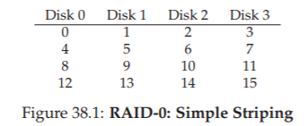
Hình 38.1: RAID-0 – Striping đơn giản
Từ Hình 38.1, bạn có thể thấy ý tưởng cơ bản: phân tán các block của mảng dữ liệu lên các ổ đĩa theo kiểu round-robin (xoay vòng). Cách tiếp cận này được thiết kế để khai thác tối đa khả năng song song của mảng khi có các yêu cầu truy cập tới các khối dữ liệu liên tiếp (ví dụ: một thao tác đọc tuần tự lớn).
Chúng ta gọi các block nằm trên cùng một hàng là một stripe; do đó, các block 0, 1, 2 và 3 ở trên thuộc cùng một stripe.
Trong ví dụ này, chúng ta đã đơn giản hóa bằng cách giả định rằng chỉ 1 block (mỗi block giả sử có kích thước 4KB) được đặt trên mỗi ổ đĩa trước khi chuyển sang ổ tiếp theo. Tuy nhiên, cách sắp xếp này không bắt buộc phải như vậy.
Ví dụ, chúng ta có thể sắp xếp các block trên các ổ đĩa như trong Hình 38.2:
...

Hình 38.2: Striping với kích thước chunk lớn hơn
Trong ví dụ này, chúng ta đặt hai block 4KB trên mỗi ổ đĩa trước khi chuyển sang ổ tiếp theo. Do đó, chunk size (kích thước khối dữ liệu trên mỗi ổ trong một stripe) của mảng RAID này là 8KB, và một stripe sẽ bao gồm 4 chunk, tức 32KB dữ liệu.
ASIDE: VẤN ĐỀ MAPPING TRONG RAID (THE RAID MAPPING PROBLEM)
Trước khi nghiên cứu các đặc tính về dung lượng, độ tin cậy và hiệu năng của RAID, trước hết chúng ta cần nói về một vấn đề gọi là mapping problem (bài toán ánh xạ).
Vấn đề này xuất hiện trong tất cả các mảng RAID; nói đơn giản, khi có một logical block (block logic) cần đọc hoặc ghi, làm thế nào để RAID biết chính xác ổ đĩa vật lý và offset (vị trí) cần truy cập?Với các cấp RAID đơn giản, chúng ta không cần quá nhiều sự phức tạp để ánh xạ đúng các block logic sang vị trí vật lý của chúng.
Lấy ví dụ striping đầu tiên ở trên (chunk size = 1 block = 4KB). Trong trường hợp này, với một logical block address A, RAID có thể dễ dàng tính toán ổ đĩa và offset mong muốn bằng hai công thức đơn giản:Disk = A % number_of_disks Offset = A / number_of_disksLưu ý rằng đây đều là các phép toán số nguyên (ví dụ: 4 / 3 = 1 chứ không phải 1.33333...).
Hãy xem các công thức này hoạt động thế nào qua một ví dụ đơn giản:
Giả sử trong RAID đầu tiên ở trên, có một yêu cầu tới block 14. Với 4 ổ đĩa, điều này có nghĩa là ổ đĩa cần truy cập là (14 % 4 = 2): disk 2. Block chính xác được tính là (14 / 4 = 3): block 3.
Như vậy, block 14 sẽ nằm ở block thứ tư (block 3, tính từ 0) của ổ đĩa thứ ba (disk 2, tính từ 0), và đó chính xác là vị trí của nó.Bạn có thể suy nghĩ về cách các công thức này sẽ được điều chỉnh để hỗ trợ các chunk size khác nhau. Hãy thử làm! Không quá khó đâu.
Kích thước chunk (Chunk Sizes)
Chunk size (kích thước khối dữ liệu trên mỗi ổ trong một stripe) chủ yếu ảnh hưởng đến hiệu năng của mảng đĩa.
Ví dụ, một chunk size nhỏ có nghĩa là nhiều tệp sẽ được striped (phân dải) trên nhiều ổ đĩa, từ đó tăng mức độ song song của các thao tác đọc và ghi đối với một tệp duy nhất; tuy nhiên, thời gian định vị (positioning time) để truy cập các block trên nhiều ổ đĩa sẽ tăng lên, vì thời gian định vị cho toàn bộ yêu cầu được xác định bởi giá trị lớn nhất của thời gian định vị trong số các yêu cầu trên tất cả các ổ.
Ngược lại, một chunk size lớn sẽ giảm mức độ song song trong nội bộ tệp (intra-file parallelism), và do đó phụ thuộc vào nhiều yêu cầu đồng thời để đạt được throughput (băng thông) cao. Tuy nhiên, chunk size lớn lại giảm thời gian định vị; ví dụ, nếu một tệp vừa khít trong một chunk và do đó được đặt trên một ổ đĩa duy nhất, thời gian định vị khi truy cập nó sẽ chỉ là thời gian định vị của một ổ đĩa.
Vì vậy, việc xác định chunk size “tối ưu” là rất khó, vì nó đòi hỏi phải có nhiều kiến thức về workload (khối lượng công việc) mà hệ thống đĩa phải xử lý [CL95]. Trong phần còn lại của thảo luận này, chúng ta sẽ giả định rằng mảng đĩa sử dụng chunk size bằng một block (4KB). Hầu hết các mảng đĩa thực tế sử dụng chunk size lớn hơn (ví dụ: 64KB), nhưng đối với các vấn đề chúng ta bàn dưới đây, chunk size chính xác không quan trọng; do đó, chúng ta dùng một block để đơn giản hóa.
Quay lại phân tích RAID-0 (Back To RAID-0 Analysis)
Bây giờ, hãy đánh giá dung lượng, độ tin cậy và hiệu năng của striping.
- Dung lượng: Hoàn hảo – với N ổ đĩa, mỗi ổ có dung lượng B block, striping cung cấp ( N \cdot B ) block dung lượng hữu ích.
- Độ tin cậy: Cũng “hoàn hảo” nhưng theo nghĩa xấu – bất kỳ lỗi hỏng ổ đĩa nào cũng sẽ dẫn đến mất dữ liệu.
- Hiệu năng: Xuất sắc – tất cả các ổ đĩa đều được sử dụng, thường là song song, để phục vụ các yêu cầu I/O của người dùng.
Đánh giá hiệu năng RAID (Evaluating RAID Performance)
Khi phân tích hiệu năng RAID, ta có thể xem xét hai chỉ số hiệu năng khác nhau:
- Single-request latency (độ trễ của một yêu cầu đơn lẻ): Hiểu được độ trễ của một yêu cầu I/O đơn tới RAID giúp ta biết được mức độ song song có thể đạt được trong một thao tác I/O logic duy nhất.
- Steady-state throughput (băng thông trạng thái ổn định) của RAID: tức tổng băng thông khi có nhiều yêu cầu đồng thời. Vì RAID thường được sử dụng trong các môi trường hiệu năng cao, băng thông trạng thái ổn định là yếu tố then chốt, và sẽ là trọng tâm chính trong các phân tích của chúng ta.
Để hiểu rõ hơn về throughput, chúng ta cần đưa ra một số workload tiêu biểu. Trong phần này, chúng ta giả định có hai loại workload:
-
Sequential workload (tải tuần tự): Các yêu cầu tới mảng đĩa đến dưới dạng các khối dữ liệu liên tiếp lớn.
Ví dụ: một yêu cầu (hoặc chuỗi yêu cầu) truy cập 1 MB dữ liệu, bắt đầu tại block x và kết thúc tại block (x + 1 MB), sẽ được coi là tuần tự.
Workload tuần tự rất phổ biến trong nhiều môi trường (hãy nghĩ đến việc tìm kiếm một từ khóa trong một tệp lớn), và do đó được coi là quan trọng. -
Random workload (tải ngẫu nhiên): Mỗi yêu cầu tương đối nhỏ, và mỗi yêu cầu tới một vị trí ngẫu nhiên khác nhau trên đĩa.
Ví dụ: một luồng yêu cầu ngẫu nhiên có thể truy cập 4KB tại địa chỉ logic 10, sau đó tại địa chỉ 550.000, rồi tại 20.100, v.v.
Một số workload quan trọng, chẳng hạn như transactional workload (tải giao dịch) trên database management system (DBMS – hệ quản trị cơ sở dữ liệu), thể hiện kiểu truy cập này, và do đó cũng được coi là quan trọng.
Tất nhiên, workload (khối lượng công việc) thực tế không đơn giản như vậy, và thường bao gồm sự pha trộn giữa các thành phần sequential (tuần tự) và random-seeming (có vẻ ngẫu nhiên), cũng như các hành vi nằm ở khoảng giữa hai loại này. Để đơn giản, chúng ta chỉ xét hai khả năng này.
Như bạn có thể thấy, sequential workload và random workload sẽ tạo ra các đặc tính hiệu năng rất khác nhau đối với một ổ đĩa.
- Với sequential access (truy cập tuần tự), ổ đĩa hoạt động ở chế độ hiệu quả nhất, dành ít thời gian cho seek (tìm kiếm) và chờ quay (rotational delay), và phần lớn thời gian để truyền dữ liệu (transfer).
- Với random access (truy cập ngẫu nhiên), điều ngược lại xảy ra: phần lớn thời gian dành cho seek và chờ quay, và chỉ một phần nhỏ thời gian để truyền dữ liệu.
Để phản ánh sự khác biệt này trong phân tích, chúng ta giả định rằng một ổ đĩa có thể truyền dữ liệu với tốc độ S MB/s khi xử lý sequential workload, và R MB/s khi xử lý random workload. Nói chung, S lớn hơn rất nhiều so với R (tức là ( S \gg R )).
Để đảm bảo chúng ta hiểu rõ sự khác biệt này, hãy làm một bài tập đơn giản. Cụ thể, hãy tính S và R dựa trên các đặc tính ổ đĩa sau. Giả sử:
- Kích thước truyền dữ liệu trung bình trong sequential transfer: 10 MB
- Kích thước truyền dữ liệu trung bình trong random transfer: 10 KB
- Đặc tính ổ đĩa:
- Thời gian seek trung bình: 7 ms
- Độ trễ quay trung bình: 3 ms
- Tốc độ truyền dữ liệu: 50 MB/s
Tính S:
Trước tiên, ta xác định thời gian tiêu tốn cho một lần truyền 10 MB.
- Seek: 7 ms
- Quay: 3 ms
- Truyền dữ liệu: ( 10 \text{ MB} @ 50 \text{ MB/s} ) → ( \frac{1}{5} ) giây = 200 ms
Tổng thời gian: ( 7 + 3 + 200 = 210 ) ms.
Công thức:
[ S = \frac{\text{Amount of Data}}{\text{Time to access}} = \frac{10 \ \text{MB}}{210 \ \text{ms}} = 47.62 \ \text{MB/s} ]
Như ta thấy, do thời gian truyền dữ liệu lớn, S gần bằng băng thông cực đại của ổ đĩa (chi phí seek và quay đã được amortized – phân bổ).
Tính R:
Seek và quay giữ nguyên như trên. Thời gian truyền dữ liệu: ( 10 \ \text{KB} @ 50 \ \text{MB/s} ) → 0.195 ms.
Công thức:
[ R = \frac{\text{Amount of Data}}{\text{Time to access}} = \frac{10 \ \text{KB}}{10.195 \ \text{ms}} = 0.981 \ \text{MB/s} ]
Như vậy, R nhỏ hơn 1 MB/s, và tỉ lệ ( S / R ) gần 50.
Quay lại phân tích RAID-0
Bây giờ, hãy đánh giá hiệu năng của striping. Như đã nói ở trên, hiệu năng nói chung là tốt.
- Về độ trễ: Độ trễ của một yêu cầu đọc/ghi một block sẽ gần như giống hệt với độ trễ của một ổ đĩa đơn; bởi vì RAID-0 chỉ đơn giản chuyển tiếp yêu cầu đó tới một trong các ổ đĩa của nó.
- Về băng thông tuần tự trạng thái ổn định: Ta kỳ vọng đạt được toàn bộ băng thông của hệ thống, tức là ( \text{Throughput} = N \times S ) (N là số ổ đĩa, S là băng thông tuần tự của một ổ).
- Với nhiều I/O ngẫu nhiên: Ta cũng có thể sử dụng tất cả các ổ đĩa, do đó đạt ( N \times R ) MB/s.
Như chúng ta sẽ thấy ở phần sau, các giá trị này vừa dễ tính toán, vừa đóng vai trò là giới hạn trên khi so sánh với các cấp RAID khác.
38.5 RAID Level 1: Mirroring
Cấp RAID đầu tiên vượt ra ngoài striping được gọi là RAID Level 1, hay mirroring (nhân bản dữ liệu). Với một hệ thống mirrored, chúng ta đơn giản tạo nhiều hơn một bản sao của mỗi block trong hệ thống; tất nhiên, mỗi bản sao phải được đặt trên một ổ đĩa riêng biệt. Bằng cách này, hệ thống có thể chịu được lỗi hỏng ổ đĩa.
...

Hình 38.3: RAID-1 đơn giản – Mirroring
Trong một hệ thống mirrored (nhân bản) điển hình, chúng ta giả định rằng với mỗi logical block (block logic), RAID sẽ lưu giữ hai bản sao vật lý của nó. Ví dụ: trong minh họa, disk 0 và disk 1 có nội dung giống hệt nhau, và disk 2 và disk 3 cũng vậy; dữ liệu được striped (phân dải) trên các cặp mirror này.
Thực tế, bạn có thể nhận thấy rằng có nhiều cách khác nhau để bố trí các bản sao block trên các ổ đĩa. Cách bố trí ở trên là một cách phổ biến và đôi khi được gọi là RAID-10 (hoặc RAID 1+0, stripe of mirrors) vì nó sử dụng các cặp mirror (RAID-1) và sau đó striping (RAID-0) trên các cặp này; một cách bố trí phổ biến khác là RAID-01 (hoặc RAID 0+1, mirror of stripes), bao gồm hai mảng striping (RAID-0) lớn, sau đó được mirror (RAID-1) ở tầng trên.
Trong phạm vi này, chúng ta sẽ chỉ nói về mirroring với giả định bố trí như ở trên.
Khi đọc một block từ một mảng mirrored, RAID có quyền lựa chọn: nó có thể đọc từ bất kỳ bản sao nào. Ví dụ, nếu RAID nhận yêu cầu đọc logical block 5, nó có thể đọc từ disk 2 hoặc disk 3.
Tuy nhiên, khi ghi một block, không có sự lựa chọn như vậy: RAID phải cập nhật cả hai bản sao dữ liệu để đảm bảo độ tin cậy. Lưu ý rằng các thao tác ghi này có thể diễn ra song song; ví dụ, một thao tác ghi vào logical block 5 có thể được thực hiện đồng thời trên disk 2 và disk 3.
Phân tích RAID-1 (RAID-1 Analysis)
-
Về dung lượng (Capacity): RAID-1 tốn kém; với mức mirroring = 2, chúng ta chỉ thu được một nửa dung lượng hữu ích tối đa. Với N ổ đĩa, mỗi ổ có B block, dung lượng hữu ích của RAID-1 là ((N \cdot B) / 2).
-
Về độ tin cậy (Reliability): RAID-1 hoạt động tốt. Nó có thể chịu được lỗi hỏng của bất kỳ một ổ đĩa nào.
Bạn cũng có thể nhận thấy RAID-1 thậm chí có thể làm tốt hơn thế, nếu may mắn.
Ví dụ, trong hình minh họa ở trên, nếu disk 0 và disk 2 cùng hỏng, sẽ không có mất mát dữ liệu!
Nói chung hơn, một hệ thống mirrored (với mức mirroring = 2) chắc chắn chịu được 1 lỗi ổ đĩa, và có thể chịu tới N/2 lỗi tùy thuộc vào ổ nào bị hỏng.
Tuy nhiên, trong thực tế, chúng ta thường không muốn phụ thuộc vào may mắn; do đó, hầu hết mọi người coi mirroring là giải pháp tốt để xử lý một lỗi ổ đĩa. -
Về hiệu năng (Performance):
- Đọc (Read): Xét về độ trễ của một yêu cầu đọc đơn, thời gian gần như tương đương với một ổ đĩa đơn; RAID-1 chỉ đơn giản là chuyển yêu cầu đọc tới một trong các bản sao.
- Ghi (Write): Khác một chút – cần hai thao tác ghi vật lý để hoàn tất. Hai thao tác này diễn ra song song, nên thời gian sẽ xấp xỉ thời gian của một thao tác ghi đơn; tuy nhiên, vì thao tác ghi logic phải chờ cả hai ghi vật lý hoàn tất, nó sẽ chịu thời gian seek và độ trễ quay tệ nhất trong hai yêu cầu, và do đó (trung bình) sẽ hơi cao hơn so với ghi trên một ổ đĩa đơn.
ASIDE: VẤN ĐỀ CẬP NHẬT NHẤT QUÁN TRONG RAID (THE RAID CONSISTENT-UPDATE PROBLEM)
Trước khi phân tích RAID-1, hãy cùng thảo luận về một vấn đề có thể xảy ra trong bất kỳ hệ thống RAID nhiều ổ đĩa nào, được gọi là consistent-update problem (vấn đề cập nhật nhất quán) [DAA05]. Vấn đề này xảy ra khi một thao tác ghi (write) tới RAID phải cập nhật nhiều ổ đĩa trong một thao tác logic duy nhất. Trong trường hợp này, giả sử chúng ta đang xét một mảng đĩa mirrored (nhân bản).
Hãy tưởng tượng một thao tác ghi được gửi tới RAID, và RAID quyết định rằng dữ liệu phải được ghi lên hai ổ đĩa, disk 0 và disk 1. RAID sau đó gửi lệnh ghi tới disk 0, nhưng ngay trước khi RAID có thể gửi yêu cầu tới disk 1, một sự cố mất điện (hoặc system crash – sập hệ thống) xảy ra. Trong tình huống không may này, giả sử yêu cầu tới disk 0 đã hoàn tất (nhưng rõ ràng yêu cầu tới disk 1 chưa được thực hiện, vì nó chưa bao giờ được gửi).
Kết quả của sự cố mất điện này là hai bản sao của block trở nên không nhất quán; bản trên disk 0 là phiên bản mới, còn bản trên disk 1 là phiên bản cũ. Điều chúng ta mong muốn là trạng thái của cả hai ổ đĩa phải thay đổi một cách nguyên tử (atomically), tức là hoặc cả hai đều trở thành phiên bản mới, hoặc cả hai đều giữ nguyên phiên bản cũ.
Cách tổng quát để giải quyết vấn đề này là sử dụng một dạng write-ahead log (ghi nhật ký trước khi ghi dữ liệu) để trước tiên ghi lại những gì RAID sắp thực hiện (ví dụ: cập nhật hai ổ đĩa với một dữ liệu nhất định) trước khi thực sự thực hiện. Bằng cách này, chúng ta có thể đảm bảo rằng khi xảy ra sự cố, hệ thống vẫn xử lý đúng; bằng cách chạy một quy trình khôi phục (recovery procedure) để phát lại tất cả các giao dịch đang chờ trên RAID, chúng ta có thể đảm bảo rằng không có hai bản sao mirrored (trong trường hợp RAID-1) nào bị lệch dữ liệu.
Một lưu ý cuối: vì việc ghi log xuống đĩa cho mỗi lần ghi là cực kỳ tốn kém, hầu hết phần cứng RAID đều bao gồm một lượng nhỏ non-volatile RAM (RAM không mất dữ liệu khi mất điện, ví dụ: RAM có pin dự phòng) để thực hiện loại ghi log này. Nhờ đó, việc cập nhật nhất quán được đảm bảo mà không phải chịu chi phí cao của việc ghi log xuống đĩa.
Để phân tích steady-state throughput (băng thông trạng thái ổn định), hãy bắt đầu với sequential workload (tải tuần tự). Khi ghi tuần tự xuống đĩa, mỗi thao tác ghi logic phải dẫn đến hai thao tác ghi vật lý; ví dụ, khi ghi logical block 0 (trong hình minh họa ở trên), RAID sẽ ghi block này lên cả disk 0 và disk 1. Do đó, ta có thể kết luận rằng băng thông tối đa đạt được khi ghi tuần tự vào một mảng mirrored là:
[ \frac{N}{2} \cdot S ]
tức một nửa băng thông cực đại.
Đáng tiếc là chúng ta cũng thu được hiệu năng tương tự khi đọc tuần tự. Có thể bạn nghĩ rằng đọc tuần tự sẽ tốt hơn, vì chỉ cần đọc một bản sao dữ liệu, không phải cả hai. Tuy nhiên, hãy xét ví dụ sau để thấy tại sao điều này không giúp ích nhiều:
Giả sử chúng ta cần đọc các block 0, 1, 2, 3, 4, 5, 6 và 7.
- Ta gửi yêu cầu đọc block 0 tới disk 0, block 1 tới disk 2, block 2 tới disk 1, và block 3 tới disk 3.
- Tiếp tục, ta gửi yêu cầu đọc block 4, 5, 6, 7 tới disk 0, disk 2, disk 1, và disk 3 tương ứng.
Có thể bạn nghĩ rằng vì đang sử dụng tất cả các ổ đĩa, ta sẽ đạt được toàn bộ băng thông của mảng. Nhưng thực tế không hẳn vậy.
Hãy xem các yêu cầu mà một ổ đĩa nhận được (ví dụ: disk 0):
- Đầu tiên, nó nhận yêu cầu cho block 0.
- Sau đó, nó nhận yêu cầu cho block 4 (bỏ qua block 2).
Thực tế, mỗi ổ đĩa nhận yêu cầu cho mỗi block cách nhau một block. Khi đầu đọc quay qua block bị bỏ qua, nó không cung cấp băng thông hữu ích cho client. Do đó, mỗi ổ đĩa chỉ cung cấp một nửa băng thông cực đại của nó. Vì vậy, đọc tuần tự chỉ đạt được băng thông:
[ \frac{N}{2} \cdot S \ \text{MB/s} ]
Random reads (đọc ngẫu nhiên) là trường hợp tốt nhất cho RAID mirrored. Trong trường hợp này, chúng ta có thể phân phối các yêu cầu đọc trên tất cả các ổ đĩa, và do đó đạt được toàn bộ băng thông khả dụng. Vì vậy, với random reads, RAID-1 đạt:
[ N \cdot R \ \text{MB/s} ]
Cuối cùng, random writes (ghi ngẫu nhiên) hoạt động đúng như bạn mong đợi:
[ \frac{N}{2} \cdot R \ \text{MB/s} ]
Mỗi thao tác ghi logic phải biến thành hai thao tác ghi vật lý, và do đó mặc dù tất cả các ổ đĩa đều được sử dụng, client chỉ nhận thấy một nửa băng thông khả dụng.
Ngay cả khi một thao tác ghi vào logical block x biến thành hai thao tác ghi song song tới hai ổ đĩa vật lý khác nhau, băng thông của nhiều yêu cầu nhỏ chỉ đạt một nửa so với striping.
Như chúng ta sẽ thấy ngay sau đây, đạt được một nửa băng thông khả dụng thực ra đã là khá tốt!
38.6 RAID Level 4: Tiết kiệm dung lượng với Parity (Saving Space With Parity)
Chúng ta sẽ giới thiệu một phương pháp khác để bổ sung redundancy (dữ liệu dự phòng) cho một mảng đĩa, được gọi là parity (bit chẵn lẻ). Các phương pháp dựa trên parity cố gắng sử dụng ít dung lượng hơn, từ đó khắc phục nhược điểm lớn về dung lượng mà các hệ thống mirrored (nhân bản) phải trả. Tuy nhiên, chúng phải đánh đổi một yếu tố: hiệu năng.
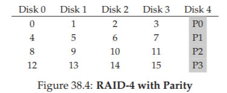
Hình 38.4: RAID-4 với Parity (RAID-4 With Parity)
Dưới đây là ví dụ về một hệ thống RAID-4 gồm 5 ổ đĩa (Hình 38.4). Với mỗi stripe (dải dữ liệu), chúng ta thêm một parity block (block chẵn lẻ) lưu trữ thông tin dự phòng cho stripe đó.
Ví dụ: parity block P1 chứa thông tin dự phòng được tính toán từ các block 4, 5, 6 và 7.
Để tính toán parity, chúng ta cần sử dụng một hàm toán học cho phép chịu được việc mất bất kỳ một block nào trong stripe. Hóa ra, hàm đơn giản XOR (phép loại trừ logic) thực hiện điều này khá tốt.
Với một tập hợp các bit, XOR của tất cả các bit đó trả về 0 nếu có số lượng bit 1 chẵn, và trả về 1 nếu có số lượng bit 1 lẻ.
Ví dụ:
...
Trong hàng đầu tiên (0, 0, 1, 1), có hai bit 1 (C2, C3), do đó XOR của tất cả các giá trị này sẽ là 0 (P); tương tự, trong hàng thứ hai chỉ có một bit 1 (C1), nên XOR phải là 1 (P).
Bạn có thể ghi nhớ điều này một cách đơn giản: tổng số bit 1 trong bất kỳ hàng nào, bao gồm cả bit parity, phải là một số chẵn; đây là bất biến (invariant) mà RAID phải duy trì để đảm bảo parity là chính xác.
Từ ví dụ trên, bạn cũng có thể đoán được cách thông tin parity được sử dụng để khôi phục dữ liệu khi xảy ra lỗi.
Giả sử cột có nhãn C2 bị mất. Để xác định giá trị ban đầu của cột này, chúng ta chỉ cần đọc tất cả các giá trị khác trong hàng đó (bao gồm cả bit parity đã được XOR) và tái tạo lại giá trị đúng.
Cụ thể, giả sử giá trị ở hàng đầu tiên, cột C2 bị mất (giá trị ban đầu là 1); bằng cách đọc các giá trị khác trong hàng đó (0 từ C0, 0 từ C1, 1 từ C3 và 0 từ cột parity P), ta thu được các giá trị 0, 0, 1 và 0.
Vì chúng ta biết rằng XOR luôn đảm bảo số lượng bit 1 trong mỗi hàng là chẵn, nên giá trị bị thiếu phải là 1.
Đó chính là cách reconstruction (tái tạo dữ liệu) hoạt động trong một hệ thống parity dựa trên XOR!
Lưu ý rằng cách tính giá trị tái tạo cũng giống hệt cách chúng ta tính parity ban đầu: chỉ cần XOR các bit dữ liệu và bit parity lại với nhau.
Có thể bạn đang thắc mắc: chúng ta đang nói về việc XOR tất cả các bit, nhưng ở trên ta biết rằng RAID lưu các block 4KB (hoặc lớn hơn) trên mỗi ổ đĩa; vậy làm thế nào để áp dụng XOR cho nhiều block để tính parity?
Thực ra, điều này cũng khá đơn giản: chỉ cần thực hiện bitwise XOR (XOR theo từng bit) trên từng bit của các block dữ liệu; đặt kết quả của mỗi phép XOR bitwise vào vị trí bit tương ứng trong parity block.
Ví dụ, nếu chúng ta có các block kích thước 4 bit (vâng, điều này nhỏ hơn rất nhiều so với block 4KB, nhưng bạn sẽ hiểu ý tưởng), chúng có thể trông như sau:
...
Như bạn thấy từ hình minh họa, parity được tính cho từng bit của mỗi block và kết quả được đặt vào parity block.
Phân tích RAID-4 (RAID-4 Analysis)
- Về dung lượng (Capacity): RAID-4 sử dụng 1 ổ đĩa để lưu thông tin parity cho mỗi nhóm ổ đĩa mà nó bảo vệ. Do đó, dung lượng hữu ích của một nhóm RAID là:
[ (N - 1) \cdot B ]
- Về độ tin cậy (Reliability): RAID-4 có thể chịu được 1 lỗi ổ đĩa và không hơn. Nếu mất nhiều hơn một ổ đĩa, sẽ không có cách nào để tái tạo dữ liệu đã mất.
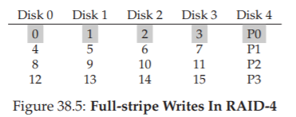
Hình 38.5: Ghi full-stripe trong RAID-4 (Full-stripe Writes In RAID-4)
Cuối cùng, chúng ta xét đến hiệu năng. Lần này, hãy bắt đầu bằng việc phân tích steady-state throughput (băng thông trạng thái ổn định).
Hiệu năng đọc tuần tự (sequential read) có thể tận dụng tất cả các ổ đĩa ngoại trừ ổ đĩa parity, và do đó đạt băng thông hiệu dụng cực đại là:
[ (N - 1) \cdot S \ \text{MB/s} ]
(đây là trường hợp dễ tính).
Để hiểu hiệu năng của ghi tuần tự (sequential write), trước tiên chúng ta cần hiểu cách nó được thực hiện.
Khi ghi một khối dữ liệu lớn xuống đĩa, RAID-4 có thể thực hiện một tối ưu hóa đơn giản được gọi là full-stripe write.
Ví dụ, giả sử các block 0, 1, 2 và 3 được gửi tới RAID như một phần của một yêu cầu ghi (Hình 38.5).
Trong trường hợp này, RAID chỉ cần tính toán giá trị mới của P0 (bằng cách thực hiện phép XOR trên các block 0, 1, 2 và 3), sau đó ghi tất cả các block (bao gồm cả block parity) lên 5 ổ đĩa ở trên song song (được tô xám trong hình).
Do đó, full-stripe write là cách hiệu quả nhất để RAID-4 ghi dữ liệu xuống đĩa.
Khi đã hiểu full-stripe write, việc tính toán hiệu năng ghi tuần tự của RAID-4 trở nên đơn giản; băng thông hiệu dụng cũng là:
[ (N - 1) \cdot S \ \text{MB/s} ]
Mặc dù ổ đĩa parity luôn được sử dụng trong quá trình này, client không nhận được lợi ích hiệu năng từ nó.
Bây giờ, hãy phân tích hiệu năng của đọc ngẫu nhiên (random read).
Như bạn có thể thấy từ hình minh họa ở trên, một tập hợp các yêu cầu đọc ngẫu nhiên kích thước 1 block sẽ được phân bổ trên các ổ đĩa dữ liệu của hệ thống, nhưng không trên ổ đĩa parity.
Do đó, hiệu năng hiệu dụng là:
[ (N - 1) \cdot R \ \text{MB/s} ]
Ghi ngẫu nhiên (random write) – phần chúng ta để lại cuối cùng – là trường hợp thú vị nhất đối với RAID-4.
Giả sử chúng ta muốn ghi đè block 1 trong ví dụ ở trên.
Chúng ta có thể ghi đè trực tiếp, nhưng điều đó sẽ gây ra một vấn đề: block parity P0 sẽ không còn phản ánh chính xác giá trị parity của stripe; trong ví dụ này, P0 cũng phải được cập nhật.
Vậy làm thế nào để cập nhật nó đúng và hiệu quả?
Hóa ra có hai phương pháp:
-
Additive parity:
- Để tính giá trị mới của parity block, đọc tất cả các block dữ liệu khác trong stripe song song (trong ví dụ: block 0, 2 và 3) và XOR chúng với block mới (block 1).
- Kết quả là parity block mới.
- Sau đó, ghi dữ liệu mới và parity mới xuống các ổ đĩa tương ứng, cũng song song.
- Vấn đề của kỹ thuật này là nó tỷ lệ thuận với số lượng ổ đĩa; trong các RAID lớn, nó yêu cầu nhiều thao tác đọc để tính toán parity.
-
Subtractive parity:
- Ví dụ, giả sử chúng ta có chuỗi bit (4 bit dữ liệu, 1 bit parity):
... - Giả sử chúng ta muốn ghi đè bit C2 bằng giá trị mới C2new.
- Phương pháp subtractive hoạt động qua 3 bước:
- Đọc dữ liệu cũ tại C2 (C2old = 1) và parity cũ (Pold = 0).
- So sánh dữ liệu cũ và dữ liệu mới:
- Nếu chúng giống nhau (ví dụ: C2new = C2old), parity bit sẽ không thay đổi (Pnew = Pold).
- Nếu chúng khác nhau, ta phải đảo bit parity sang trạng thái ngược lại:
- Nếu Pold = 1 → Pnew = 0
- Nếu Pold = 0 → Pnew = 1
- Công thức gọn gàng bằng XOR (⊕ là toán tử XOR):
- Ví dụ, giả sử chúng ta có chuỗi bit (4 bit dữ liệu, 1 bit parity):
[ P_{new} = (C_{old} \oplus C_{new}) \oplus P_{old} \tag{38.1} ]
Vì chúng ta đang xử lý block chứ không phải bit, phép tính này được thực hiện trên tất cả các bit trong block (ví dụ: 4096 byte mỗi block × 8 bit/byte).
Do đó, trong hầu hết các trường hợp, block mới sẽ khác block cũ, và parity block mới cũng sẽ khác.
Bạn bây giờ có thể suy luận khi nào nên dùng additive parity và khi nào nên dùng subtractive parity.
Hãy nghĩ về số lượng ổ đĩa trong hệ thống để phương pháp additive thực hiện ít I/O hơn so với subtractive; đâu là điểm giao nhau (cross-over point)?
Trong phân tích hiệu năng này, giả sử chúng ta sử dụng subtractive method.
Như vậy, với mỗi thao tác ghi, RAID phải thực hiện 4 I/O vật lý (2 lần đọc và 2 lần ghi).
Bây giờ, giả sử có rất nhiều yêu cầu ghi được gửi tới RAID; câu hỏi là: RAID-4 có thể thực hiện bao nhiêu thao tác song song?
Để hiểu điều này, hãy cùng xem lại bố trí RAID-4 (Hình 38.6).

Hình 38.6: Ví dụ – Ghi vào block 4, 13 và các block parity tương ứng
Giờ hãy tưởng tượng có 2 thao tác ghi nhỏ được gửi tới RAID-4 gần như cùng lúc, tới các block 4 và 13 (được đánh dấu ∗ trong sơ đồ).
Dữ liệu của các block này nằm trên disk 0 và disk 1, do đó thao tác đọc và ghi dữ liệu có thể diễn ra song song – đây là điểm tốt.
Vấn đề phát sinh ở ổ đĩa parity: cả hai yêu cầu đều phải đọc các block parity liên quan tới block 4 và 13, tức parity block 1 và parity block 3 (được đánh dấu +).
Hy vọng giờ vấn đề đã rõ: ổ đĩa parity trở thành nút thắt cổ chai trong kiểu tải công việc này; đôi khi chúng ta gọi đây là small-write problem (vấn đề ghi nhỏ) đối với các RAID dựa trên parity.
Vì vậy, mặc dù các ổ dữ liệu có thể được truy cập song song, ổ parity lại ngăn cản việc hiện thực hóa song song; tất cả các thao tác ghi vào hệ thống sẽ bị tuần tự hóa do ổ parity.
Vì ổ parity phải thực hiện hai I/O (một đọc, một ghi) cho mỗi I/O logic, ta có thể tính hiệu năng của các thao tác ghi ngẫu nhiên nhỏ trong RAID-4 bằng cách tính hiệu năng của ổ parity trên hai I/O này, và kết quả đạt được là:
[ \frac{R}{2} \ \text{MB/s} ]
Thông lượng (throughput) của RAID-4 đối với ghi ngẫu nhiên nhỏ là rất tệ; nó không cải thiện ngay cả khi bạn thêm nhiều ổ đĩa vào hệ thống.
Chúng ta kết thúc phần này bằng việc phân tích độ trễ I/O trong RAID-4.
Như bạn đã biết, một thao tác đọc đơn (giả sử không có lỗi) chỉ được ánh xạ tới một ổ đĩa duy nhất, do đó độ trễ của nó tương đương với độ trễ của một yêu cầu trên ổ đĩa đơn.
Độ trễ của một thao tác ghi đơn yêu cầu hai lần đọc và sau đó hai lần ghi; các thao tác đọc có thể diễn ra song song, cũng như các thao tác ghi, do đó tổng độ trễ vào khoảng gấp đôi so với một ổ đĩa đơn (có một số khác biệt vì ta phải chờ cả hai lần đọc hoàn tất và do đó chịu thời gian định vị tệ nhất, nhưng sau đó các thao tác cập nhật không phải chịu chi phí seek nên có thể tốt hơn mức trung bình).
38.7 RAID Level 5: Rotating Parity
Để giải quyết small-write problem (ít nhất là một phần), Patterson, Gibson và Katz đã giới thiệu RAID-5.
RAID-5 hoạt động gần như giống hệt RAID-4, ngoại trừ việc xoay vòng (rotate) block parity qua các ổ đĩa (Hình 38.7).
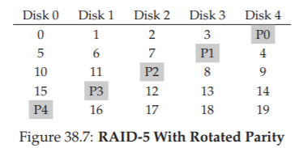
Hình 38.7: RAID-5 với parity xoay vòng (RAID-5 With Rotated Parity)
Như bạn thấy, block parity cho mỗi stripe giờ được xoay vòng qua các ổ đĩa, nhằm loại bỏ nút thắt cổ chai của ổ parity trong RAID-4.
Phân tích RAID-5 (RAID-5 Analysis)
Phần lớn phân tích cho RAID-5 giống hệt RAID-4.
Ví dụ: dung lượng hữu dụng và khả năng chịu lỗi của hai cấp này là như nhau.
Hiệu năng đọc và ghi tuần tự cũng tương tự.
Độ trễ của một yêu cầu đơn (dù là đọc hay ghi) cũng giống RAID-4.
Hiệu năng đọc ngẫu nhiên (random read) tốt hơn một chút, vì giờ đây chúng ta có thể tận dụng tất cả các ổ đĩa.
Cuối cùng, hiệu năng ghi ngẫu nhiên (random write) cải thiện đáng kể so với RAID-4, vì nó cho phép song song hóa giữa các yêu cầu.
Ví dụ: một thao tác ghi vào block 1 và một thao tác ghi vào block 10 sẽ biến thành:
- Yêu cầu tới disk 1 và disk 4 (cho block 1 và parity của nó)
- Yêu cầu tới disk 0 và disk 2 (cho block 10 và parity của nó)
Do đó, chúng có thể tiến hành song song.
Trên thực tế, ta có thể giả định rằng với một số lượng lớn yêu cầu ngẫu nhiên, chúng ta sẽ có thể giữ cho tất cả các ổ đĩa bận rộn tương đối đồng đều.
Nếu đúng như vậy, tổng băng thông cho ghi nhỏ sẽ là:
[ \frac{N}{4} \cdot R \ \text{MB/s} ]
Hệ số mất 4 lần này là do mỗi thao tác ghi RAID-5 vẫn tạo ra 4 I/O tổng cộng – đây đơn giản là cái giá phải trả khi sử dụng RAID dựa trên parity.
Vì RAID-5 về cơ bản giống RAID-4 ngoại trừ một số trường hợp tốt hơn, nó đã gần như hoàn toàn thay thế RAID-4 trên thị trường.
Ngoại lệ duy nhất là trong các hệ thống chỉ thực hiện ghi lớn (large write), do đó tránh được hoàn toàn small-write problem [HLM94]; trong các trường hợp đó, RAID-4 đôi khi vẫn được sử dụng vì dễ xây dựng hơn một chút.
38.8 So sánh RAID: Tóm tắt (RAID Comparison: A Summary)
Chúng ta sẽ tóm tắt so sánh đơn giản hóa các cấp RAID trong Hình 38.8.
Lưu ý rằng chúng ta đã bỏ qua một số chi tiết để đơn giản hóa phân tích.
Ví dụ: khi ghi trong một hệ thống mirrored, thời gian seek trung bình sẽ cao hơn một chút so với khi ghi vào một ổ đĩa đơn, vì thời gian seek là giá trị lớn nhất của hai lần seek (một trên mỗi ổ).
Do đó, hiệu năng ghi ngẫu nhiên tới hai ổ đĩa thường sẽ thấp hơn một chút so với hiệu năng ghi ngẫu nhiên của một ổ đơn.
Ngoài ra, khi cập nhật ổ parity trong RAID-4/5:
- Lần đọc đầu tiên của parity cũ có thể gây ra seek và quay toàn phần
- Nhưng lần ghi thứ hai của parity chỉ gây ra quay
Cuối cùng, I/O tuần tự tới RAID mirrored chịu mức phạt hiệu năng gấp đôi (2×) so với các phương pháp khác1.
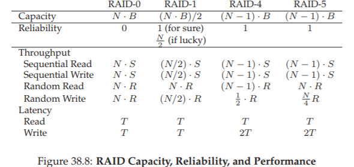
Hình 38.8: Dung lượng, độ tin cậy và hiệu năng của RAID (RAID Capacity, Reliability, and Performance)
Tuy nhiên, so sánh trong Hình 38.8 đã nêu bật được những khác biệt cốt lõi và hữu ích để hiểu các trade-off (đánh đổi) giữa các cấp RAID.
Trong phân tích độ trễ (latency analysis), chúng ta đơn giản sử dụng T để biểu diễn thời gian mà một yêu cầu tới một ổ đĩa đơn sẽ mất.
Mức phạt 1/2 giả định một mô hình đọc/ghi ngây thơ cho mirroring; một cách tiếp cận tinh vi hơn, gửi các yêu cầu I/O lớn tới các phần khác nhau của mỗi bản mirror, có thể đạt được băng thông tối đa. Hãy suy nghĩ về điều này để xem bạn có thể tìm ra lý do tại sao.
Kết luận:
- Nếu bạn chỉ quan tâm đến hiệu năng và không quan tâm đến độ tin cậy, striping rõ ràng là lựa chọn tốt nhất.
- Nếu bạn muốn hiệu năng I/O ngẫu nhiên và độ tin cậy, mirroring là tốt nhất; cái giá phải trả là mất dung lượng.
- Nếu dung lượng và độ tin cậy là mục tiêu chính, thì RAID-5 là lựa chọn tối ưu; cái giá phải trả là hiệu năng kém khi ghi nhỏ (small-write performance).
- Cuối cùng, nếu bạn luôn thực hiện I/O tuần tự và muốn tối đa hóa dung lượng, RAID-5 cũng là lựa chọn hợp lý nhất.
38.9 Một số vấn đề thú vị khác về RAID (Other Interesting RAID Issues)
Có nhiều ý tưởng thú vị khác mà chúng ta có thể (và có lẽ nên) thảo luận khi nói về RAID. Dưới đây là một số điều mà chúng ta có thể sẽ viết thêm.
Ví dụ:
- Có nhiều thiết kế RAID khác, bao gồm Level 2 và Level 3 từ phân loại gốc, và Level 6 để chịu được nhiều lỗi ổ đĩa [C+04].
- Câu hỏi: RAID sẽ làm gì khi một ổ đĩa bị hỏng? Đôi khi hệ thống có một hot spare (ổ dự phòng nóng) sẵn sàng thay thế cho ổ bị hỏng.
- Điều gì xảy ra với hiệu năng khi có lỗi, và hiệu năng trong quá trình reconstruction (tái tạo) ổ đĩa bị hỏng?
- Có các mô hình lỗi thực tế hơn, tính đến latent sector errors (lỗi sector tiềm ẩn) hoặc block corruption (hỏng block) [B+08], và nhiều kỹ thuật để xử lý các lỗi này (xem chương về data integrity để biết chi tiết).
- Cuối cùng, bạn thậm chí có thể xây dựng RAID như một lớp phần mềm: các hệ thống software RAID như vậy rẻ hơn nhưng có những vấn đề khác, bao gồm cả consistent-update problem (vấn đề cập nhật nhất quán) [DAA05].
38.10 Tóm tắt (Summary)
Chúng ta đã thảo luận về RAID. RAID biến nhiều ổ đĩa độc lập thành một thực thể duy nhất lớn hơn, dung lượng cao hơn và đáng tin cậy hơn; quan trọng là nó thực hiện điều này một cách minh bạch (transparently), do đó phần cứng và phần mềm ở tầng trên hầu như không nhận thấy sự thay đổi.
Có nhiều cấp RAID khác nhau để lựa chọn, và cấp RAID chính xác cần sử dụng phụ thuộc nhiều vào điều gì là quan trọng đối với người dùng cuối.
Ví dụ:
- Mirrored RAID đơn giản, đáng tin cậy và thường cung cấp hiệu năng tốt, nhưng chi phí dung lượng cao.
- RAID-5 thì ngược lại: đáng tin cậy và tốt hơn về mặt dung lượng, nhưng hiệu năng rất kém khi workload có nhiều thao tác ghi nhỏ.
- Việc chọn một RAID và thiết lập các tham số của nó (chunk size, số lượng ổ đĩa, v.v.) phù hợp cho một workload cụ thể là một thách thức, và vẫn mang tính nghệ thuật nhiều hơn là khoa học.
Phần xen kẽ: Tệp và Thư mục (Interlude: Files and Directories)
Cho đến nay, chúng ta đã thấy sự hình thành của hai abstraction (lớp trừu tượng) quan trọng trong hệ điều hành: process (tiến trình) – là sự ảo hóa của CPU, và address space (không gian địa chỉ) – là sự ảo hóa của bộ nhớ.
Kết hợp lại, hai abstraction này cho phép một chương trình chạy như thể nó đang ở trong một thế giới riêng tư, tách biệt; như thể nó có bộ xử lý (hoặc nhiều bộ xử lý) riêng; như thể nó có bộ nhớ riêng.
Ảo tưởng này giúp việc lập trình hệ thống trở nên dễ dàng hơn rất nhiều, và vì thế ngày nay nó phổ biến không chỉ trên máy tính để bàn và máy chủ mà còn ngày càng xuất hiện trên mọi nền tảng lập trình được, bao gồm cả điện thoại di động và các thiết bị tương tự.
Trong phần này, chúng ta sẽ bổ sung một mảnh ghép quan trọng nữa vào bức tranh ảo hóa: persistent storage (lưu trữ bền vững).
Một thiết bị lưu trữ bền vững, chẳng hạn như ổ đĩa cứng (hard disk drive) truyền thống hoặc thiết bị lưu trữ thể rắn (solid-state storage device) hiện đại, lưu trữ thông tin một cách lâu dài (hoặc ít nhất là trong một thời gian dài).
Không giống như bộ nhớ, nơi dữ liệu bị mất khi mất điện, thiết bị lưu trữ bền vững giữ nguyên dữ liệu.
Do đó, hệ điều hành phải đặc biệt cẩn trọng với loại thiết bị này: đây là nơi người dùng lưu trữ dữ liệu mà họ thực sự quan tâm.
CRUX: QUẢN LÝ THIẾT BỊ LƯU TRỮ BỀN VỮNG NHƯ THẾ NÀO?
Hệ điều hành nên quản lý một thiết bị lưu trữ bền vững như thế nào? Các API là gì? Những khía cạnh quan trọng trong triển khai là gì?
Vì vậy, trong vài chương tiếp theo, chúng ta sẽ khám phá các kỹ thuật quan trọng để quản lý dữ liệu bền vững, tập trung vào các phương pháp cải thiện hiệu năng và độ tin cậy.
Tuy nhiên, trước tiên chúng ta sẽ bắt đầu với phần tổng quan về API: các giao diện mà bạn sẽ gặp khi tương tác với UNIX file system (hệ thống tệp UNIX).
39.1 Tệp và Thư mục (Files And Directories)
Hai abstraction quan trọng đã được phát triển theo thời gian trong quá trình ảo hóa lưu trữ.
Abstraction đầu tiên là file (tệp).
Một file đơn giản là một mảng tuyến tính các byte, mỗi byte có thể được đọc hoặc ghi.
Mỗi file có một dạng tên mức thấp nào đó, thường là một con số; người dùng thường không biết đến tên này.
Vì lý do lịch sử, tên mức thấp của một file thường được gọi là inode number (số inode, hay i-number).
Chúng ta sẽ tìm hiểu nhiều hơn về inode trong các chương sau; hiện tại, chỉ cần giả định rằng mỗi file có một inode number gắn liền với nó.
Trong hầu hết các hệ thống, hệ điều hành không biết nhiều về cấu trúc bên trong của file (ví dụ: nó là một bức ảnh, một tệp văn bản, hay mã C); thay vào đó, trách nhiệm của file system (hệ thống tệp) chỉ đơn giản là lưu trữ dữ liệu đó một cách bền vững trên đĩa và đảm bảo rằng khi bạn yêu cầu dữ liệu lần nữa, bạn nhận được đúng dữ liệu mà bạn đã lưu ban đầu.
Làm được điều này không đơn giản như tưởng tượng!
Abstraction thứ hai là directory (thư mục).
Một directory, giống như file, cũng có một tên mức thấp (tức inode number), nhưng nội dung của nó rất đặc thù: nó chứa một danh sách các cặp (tên đọc được bởi người dùng, tên mức thấp).
Ví dụ: giả sử có một file với tên mức thấp là “10”, và nó được người dùng gọi bằng tên “foo”.
Directory chứa “foo” sẽ có một mục (“foo”, “10”) ánh xạ tên đọc được sang tên mức thấp.
Mỗi mục trong một directory tham chiếu tới hoặc là file, hoặc là directory khác.
Bằng cách đặt các directory bên trong các directory khác, người dùng có thể xây dựng một directory tree (cây thư mục) hoặc directory hierarchy (hệ phân cấp thư mục) tùy ý, trong đó tất cả file và directory đều được lưu trữ.
Cây thư mục bắt đầu từ root directory (thư mục gốc) – trong các hệ thống dựa trên UNIX, thư mục gốc được ký hiệu đơn giản là / – và sử dụng một ký tự phân tách nào đó để đặt tên các thư mục con tiếp theo cho đến khi chỉ ra được file hoặc directory mong muốn.
Ví dụ: nếu một người dùng tạo một thư mục foo trong thư mục gốc /, và sau đó tạo một file bar.txt trong thư mục foo, chúng ta có thể tham chiếu tới file này bằng absolute pathname (đường dẫn tuyệt đối), trong trường hợp này sẽ là:
/foo/bar.txt

Hình 39.1: Ví dụ về cây thư mục (An Example Directory Tree)
TIP: SUY NGHĨ CẨN THẬN VỀ VIỆC ĐẶT TÊN
Đặt tên (naming) là một khía cạnh quan trọng của các hệ thống máy tính. Trong các hệ thống UNIX, hầu như mọi thứ bạn có thể nghĩ tới đều được đặt tên thông qua file system (hệ thống tệp). Không chỉ các file, mà cả thiết bị (device), ống dẫn (pipe), và thậm chí cả process (tiến trình) cũng có thể được tìm thấy trong một cấu trúc trông giống như một hệ thống tệp thông thường.
Sự thống nhất trong cách đặt tên này giúp đơn giản hóa mô hình khái niệm của bạn về hệ thống, và làm cho hệ thống trở nên đơn giản hơn và có tính mô-đun cao hơn. Vì vậy, bất cứ khi nào tạo một hệ thống hoặc giao diện, hãy suy nghĩ kỹ về những cái tên bạn đang sử dụng.
Các directory (thư mục) và file (tệp) có thể trùng tên miễn là chúng nằm ở các vị trí khác nhau trong cây hệ thống tệp.
Ví dụ: có thể tồn tại hai file tên bar.txt như trong hình minh họa: /foo/bar.txt và /bar/foo/bar.txt.
39.2 Giao diện hệ thống tệp (The File System Interface)
Bây giờ, chúng ta sẽ thảo luận chi tiết hơn về file system interface (giao diện hệ thống tệp).
Chúng ta sẽ bắt đầu với những thao tác cơ bản: tạo, truy cập và xóa file.
Bạn có thể nghĩ rằng điều này khá đơn giản, nhưng trong quá trình tìm hiểu, chúng ta sẽ khám phá một system call bí ẩn được dùng để xóa file, gọi là unlink().
Hy vọng rằng, đến cuối chương này, lời giải cho “bí ẩn” đó sẽ trở nên rõ ràng với bạn.
39.3 Tạo file (Creating Files)
Chúng ta sẽ bắt đầu với thao tác cơ bản nhất: tạo một file.
Điều này có thể thực hiện được với system call open; bằng cách gọi open() và truyền vào cờ (flag) O_CREAT, một chương trình có thể tạo ra một file mới.
Dưới đây là ví dụ mã nguồn để tạo một file tên “foo” trong current working directory (thư mục làm việc hiện tại):
int fd = open("foo", O_CREAT|O_WRONLY|O_TRUNC, S_IRUSR|S_IWUSR);
ASIDE: SYSTEM CALL CREAT()
Cách cũ hơn để tạo file là gọi
creat(), như sau:// tùy chọn: thêm tham số thứ hai để thiết lập quyền truy cập int fd = creat("foo");Bạn có thể coi
creat()tương đương vớiopen()với các cờ:O_CREAT | O_WRONLY | O_TRUNC.
Vìopen()có thể tạo file, nên việc sử dụngcreat()đã phần nào ít phổ biến hơn.
Tuy nhiên, nó vẫn giữ một vị trí đặc biệt trong “truyền thuyết” UNIX.
Cụ thể, khi Ken Thompson được hỏi ông sẽ làm gì khác nếu thiết kế lại UNIX, ông trả lời:
“Tôi sẽ viếtcreatvới một chữ e” (tức làcreate).
Một khía cạnh quan trọng của open() là giá trị nó trả về: file descriptor (bộ mô tả tệp).
File descriptor chỉ đơn giản là một số nguyên, riêng cho mỗi process (tiến trình), và được dùng trong các hệ thống UNIX để truy cập file.
Các file descriptor được hệ điều hành quản lý theo từng process.
Điều này có nghĩa là một cấu trúc dữ liệu đơn giản nào đó (ví dụ: một mảng) được lưu trong proc structure (cấu trúc tiến trình) trên các hệ thống UNIX.
Dưới đây là phần liên quan từ xv6 kernel:
39.4 Đọc và ghi tệp (Reading And Writing Files)
Khi đã có một số file, tất nhiên chúng ta sẽ muốn đọc hoặc ghi chúng.
Hãy bắt đầu bằng việc đọc một file đã tồn tại.
Nếu đang gõ lệnh trong command line (dòng lệnh), chúng ta có thể dùng chương trình cat để hiển thị nội dung của file ra màn hình.
prompt> echo hello > foo
prompt> cat foo
hello
prompt>
Để tìm hiểu điều gì thực sự xảy ra, chúng ta sẽ sử dụng một công cụ cực kỳ hữu ích để theo dõi các system call mà một chương trình thực hiện.
Trên Linux, công cụ này được gọi là strace.
Dưới đây là ví dụ sử dụng strace để tìm hiểu cat đang làm gì (một số call đã được lược bỏ để dễ đọc):
...
Tại sao lần gọi open() đầu tiên lại trả về 3, chứ không phải 0 hoặc 1?
Hóa ra, mỗi process (tiến trình) đang chạy đã mặc định mở sẵn ba file:
- standard input (stdin – bộ mô tả tệp số 0)
- standard output (stdout – bộ mô tả tệp số 1)
- standard error (stderr – bộ mô tả tệp số 2)
Sau khi open thành công, cat sử dụng system call read() để liên tục đọc một số byte từ file.
Chương trình sau đó cố gắng đọc thêm, nhưng vì không còn byte nào, read() trả về 0 và chương trình hiểu rằng nó đã đọc hết toàn bộ file.
Do đó, chương trình gọi close() để báo rằng nó đã hoàn tất.
39.5 Đọc và ghi, nhưng không theo tuần tự (Reading And Writing, But Not Sequentially)
Đôi khi, chúng ta cần đọc hoặc ghi tại một offset (vị trí bù) cụ thể trong file.
Để làm điều này, ta sử dụng system call lseek():
off_t lseek(int fildes, off_t offset, int whence);
Tham số whence xác định chính xác cách dịch chuyển con trỏ file:
- SEEK_SET: đặt offset hiện tại thành
offsetbyte. - SEEK_CUR: đặt offset thành vị trí hiện tại cộng thêm
offsetbyte. - SEEK_END: đặt offset thành kích thước file cộng thêm
offsetbyte.
Với mỗi file mà một process mở, hệ điều hành sẽ theo dõi một offset hiện tại (current offset), xác định vị trí bắt đầu cho lần đọc hoặc ghi tiếp theo.
Offset này được cập nhật ngầm khi gọi read hoặc write, hoặc tường minh khi gọi lseek.
Offset này được lưu trong struct file.
Dưới đây là định nghĩa (đơn giản hóa) của cấu trúc này trong xv6:
struct file {
int ref;
char readable;
char writable;
struct inode *ip;
uint off;
};
ASIDE: GỌI LSEEK() KHÔNG THỰC HIỆN DISK SEEK
Tên gọi của system call
lseek()dễ gây nhầm lẫn cho nhiều sinh viên.
Lời gọilseek()chỉ đơn giản thay đổi một biến trong bộ nhớ của hệ điều hành, biến này theo dõi offset hiện tại.
Disk seek (dịch chuyển đầu đọc đĩa) chỉ xảy ra khi một thao tác đọc hoặc ghi tới đĩa nằm trên một track khác so với thao tác trước đó.
Gọilseek()có thể dẫn đến một disk seek trong thao tác đọc hoặc ghi tiếp theo, nhưng bản thân nó không hề gây ra bất kỳ I/O vật lý nào.
Hãy theo dõi một process mở một file (kích thước 300 byte) và đọc nó bằng cách gọi read() nhiều lần, mỗi lần đọc 100 byte.
39.6 Chia sẻ entry trong bảng file mở: fork() và dup() (Shared File Table Entries: fork() And dup())
Trong nhiều trường hợp, ánh xạ từ file descriptor (bộ mô tả tệp) tới một entry trong open file table (bảng file mở) là ánh xạ một-một.
Tuy nhiên, có một số trường hợp thú vị khi một entry trong open file table được chia sẻ.
Một trong những trường hợp đó xảy ra khi process cha tạo ra process con bằng fork().

Hình 39.2: Chia sẻ entry bảng file giữa tiến trình cha/con (fork-seek.c)
Khi chạy chương trình này, chúng ta thấy kết quả sau:
prompt> ./fork-seek
child: offset 10
parent: offset 10
prompt>
Một trường hợp chia sẻ khác xảy ra với system call dup().
Lời gọi dup() cho phép một process (tiến trình) tạo ra một file descriptor (bộ mô tả tệp) mới tham chiếu tới cùng một file đã mở (open file) như một descriptor hiện có.
...

Hình 39.4: Chia sẻ entry bảng file với dup() (dup.c)
39.7 Ghi ngay lập tức với fsync() (Writing Immediately With fsync())
Thông thường, khi một chương trình gọi write(), file system (hệ thống tệp) sẽ buffer (đệm) các thao tác ghi này trong bộ nhớ một thời gian vì lý do hiệu năng.
Tuy nhiên, một số ứng dụng yêu cầu khả năng ép dữ liệu được ghi xuống đĩa ngay lập tức.
Để hỗ trợ các ứng dụng loại này, hầu hết các file system cung cấp system call:
int fsync(int fd);
Khi một process gọi fsync(), file system sẽ buộc tất cả dữ liệu dirty (chưa được ghi xuống đĩa) của file được tham chiếu bởi file descriptor chỉ định phải được ghi xuống đĩa.
39.8 Đổi tên file (Renaming Files)
Để đổi tên một file, lệnh mv sử dụng system call:
int rename(char *old, char *new);
Một đảm bảo thú vị mà rename() cung cấp là nó (thường) được triển khai như một call atomic (nguyên tử) đối với các sự cố system crash (sập hệ thống).
Điều này rất quan trọng đối với các ứng dụng yêu cầu cập nhật trạng thái file một cách nguyên tử.
Ví dụ, một trình soạn thảo file có thể thực hiện các bước sau để lưu thay đổi một cách an toàn:
...
Bước cuối cùng này hoán đổi nguyên tử file mới vào vị trí, đồng thời xóa phiên bản cũ của file.
39.9 Lấy thông tin về file (Getting Information About Files)
File system lưu trữ khá nhiều thông tin về mỗi file, mà chúng ta thường gọi là metadata (siêu dữ liệu).
Để xem metadata của một file cụ thể, chúng ta có thể sử dụng system call stat() hoặc fstat().
Các call này sẽ điền thông tin vào một cấu trúc stat:
...

Hình 39.5: Cấu trúc stat (The stat structure)
Bạn cũng có thể sử dụng công cụ dòng lệnh stat để xem thông tin này.
39.10 Xóa file (Removing Files)
Tại thời điểm này, chúng ta đã biết cách tạo tập tin (file) và truy cập chúng, theo tuần tự hoặc không tuần tự. Nhưng làm thế nào để xóa tập tin? Nếu bạn đã từng sử dụng UNIX, có lẽ bạn nghĩ mình biết: chỉ cần chạy chương trình rm. Nhưng rm sử dụng system call (lời gọi hệ thống) nào để xóa một tập tin?1
Hãy dùng lại công cụ quen thuộc strace để tìm hiểu. Dưới đây là ví dụ khi chúng ta xóa tập tin foo:
prompt> strace rm foo
...
unlink("foo") = 0
...
Chúng ta đã loại bỏ nhiều phần thông tin không liên quan từ kết quả strace, chỉ giữ lại một lời gọi duy nhất tới system call có tên khá bí ẩn unlink(). Như bạn thấy, unlink() chỉ nhận tên của tập tin cần xóa và trả về giá trị 0 khi thành công. Nhưng điều này dẫn đến một câu hỏi thú vị: tại sao lời gọi hệ thống này lại có tên là unlink? Tại sao không đặt là remove hoặc delete? Để trả lời câu hỏi này, chúng ta cần hiểu không chỉ về tập tin, mà còn về thư mục (directory).
Tạo thư mục (Making Directories)
Ngoài tập tin, một tập hợp các system call liên quan đến thư mục cho phép bạn tạo, đọc và xóa thư mục. Lưu ý rằng bạn không bao giờ có thể ghi trực tiếp vào một thư mục. Nguyên nhân là vì định dạng của thư mục được xem là metadata (siêu dữ liệu) của hệ thống tập tin, và hệ thống tập tin chịu trách nhiệm đảm bảo tính toàn vẹn của dữ liệu thư mục. Do đó, bạn chỉ có thể cập nhật thư mục một cách gián tiếp, ví dụ: bằng cách tạo tập tin, thư mục con hoặc các loại đối tượng khác bên trong nó. Bằng cách này, hệ thống tập tin đảm bảo nội dung thư mục luôn đúng như mong đợi.
Để tạo một thư mục, có một system call duy nhất là mkdir(). Chương trình mkdir cùng tên có thể được dùng để tạo thư mục. Hãy xem điều gì xảy ra khi chúng ta chạy mkdir để tạo một thư mục đơn giản tên foo:
prompt> strace mkdir foo
...
mkdir("foo", 0777) = 0
...
prompt>
Khi một thư mục được tạo, nó được xem là “rỗng”, mặc dù thực tế nó vẫn chứa một số nội dung tối thiểu. Cụ thể, một thư mục rỗng có hai mục (entry): một mục tham chiếu đến chính nó, và một mục tham chiếu đến thư mục cha. Mục thứ nhất được gọi là “.” (dot), và mục thứ hai là “..” (dot-dot). Bạn có thể thấy các mục này bằng cách truyền tùy chọn (-a) cho chương trình ls:
prompt> ls -a
./ ../
prompt> ls -al
total 8
drwxr-x--- 2 remzi remzi 6 Apr 30 16:17 ./
drwxr-x--- 26 remzi remzi 4096 Apr 30 16:17 ../
TIP: CẨN TRỌNG VỚI CÁC LỆNH MẠNH Chương trình
rmlà một ví dụ điển hình về các lệnh mạnh mẽ, và đôi khi sức mạnh quá mức có thể gây hại. Ví dụ, để xóa nhiều tập tin cùng lúc, bạn có thể gõ:prompt> rm *Trong đó, ký tự
*sẽ khớp với tất cả các tập tin trong thư mục hiện tại. Nhưng đôi khi bạn cũng muốn xóa cả thư mục và toàn bộ nội dung của chúng. Bạn có thể làm điều này bằng cách yêu cầurmđệ quy đi vào từng thư mục và xóa nội dung bên trong:prompt> rm -rf *Vấn đề nghiêm trọng xảy ra khi bạn vô tình chạy lệnh này từ thư mục gốc của hệ thống tập tin, dẫn đến việc xóa toàn bộ tập tin và thư mục. Vì vậy, hãy nhớ rằng các lệnh mạnh mẽ giống như con dao hai lưỡi: chúng cho phép bạn làm được rất nhiều việc chỉ với vài phím bấm, nhưng cũng có thể gây ra thiệt hại lớn trong chớp mắt.
Đọc thư mục (Reading Directories)
Bây giờ chúng ta đã tạo được một thư mục, có thể chúng ta cũng muốn đọc nội dung của nó. Thực tế, đó chính là điều mà chương trình ls thực hiện. Hãy thử viết một công cụ nhỏ giống ls để xem cách làm. Thay vì chỉ mở thư mục như một tập tin, chúng ta sẽ dùng một tập hợp lời gọi mới. Dưới đây là chương trình ví dụ in ra nội dung của một thư mục. Chương trình sử dụng ba lời gọi opendir(), readdir() và closedir() để thực hiện công việc. Giao diện này khá đơn giản: chỉ cần một vòng lặp để đọc từng mục thư mục một, rồi in ra tên và số inode của mỗi tập tin.
int main(int argc, char *argv[]) {
DIR *dp = opendir(".");
assert(dp != NULL);
struct dirent *d;
while ((d = readdir(dp)) != NULL) {
printf("%lu %s\n", (unsigned long) d->d_ino, d->d_name);
}
closedir(dp);
return 0;
}
Khai báo dưới đây cho thấy thông tin có trong mỗi mục thư mục, được lưu trong cấu trúc dữ liệu struct dirent:
struct dirent {
char d_name[256]; // tên tập tin
ino_t d_ino; // số inode
off_t d_off; // vị trí (offset) tới mục tiếp theo
unsigned short d_reclen; // độ dài bản ghi này
unsigned char d_type; // loại tập tin
};
Vì thư mục chứa rất ít thông tin (về cơ bản chỉ ánh xạ tên sang số inode, cùng một vài chi tiết khác), một chương trình có thể muốn gọi stat() trên từng tập tin để lấy thêm thông tin, chẳng hạn như kích thước hoặc các thuộc tính chi tiết khác. Thực tế, đây chính là điều ls làm khi bạn truyền cho nó tùy chọn -l. Hãy thử dùng strace trên ls với và không có tùy chọn này để tự kiểm chứng.
Xóa thư mục (Deleting Directories)
Cuối cùng, bạn có thể xóa một thư mục bằng lời gọi rmdir() (được sử dụng bởi chương trình cùng tên rmdir). Không giống như việc xóa tập tin, xóa thư mục nguy hiểm hơn, vì bạn có thể xóa một lượng lớn dữ liệu chỉ với một lệnh. Do đó, rmdir() yêu cầu thư mục phải rỗng (tức là chỉ chứa các mục “.” và “..”) trước khi bị xóa. Nếu bạn cố gắng xóa một thư mục không rỗng, lời gọi rmdir() sẽ thất bại.
strace là công cụ theo dõi các system call mà một tiến trình thực hiện, rất hữu ích để tìm hiểu cách chương trình tương tác với kernel.
Dưới đây là bản dịch tiếng Việt hoàn chỉnh, tuân thủ đầy đủ các yêu cầu bạn đưa ra, giữ nguyên thuật ngữ kỹ thuật phổ biến, bổ sung giải thích khi cần, và trình bày theo phong cách học thuật dành cho sinh viên ngành Khoa học Máy tính.
Hard Links (Liên kết cứng)
Bây giờ chúng ta quay lại câu hỏi bí ẩn: tại sao việc xóa một tập tin lại được thực hiện thông qua unlink()? Để hiểu điều này, ta cần biết một cách khác để tạo một mục (entry) trong cây hệ thống tập tin, thông qua một system call (lời gọi hệ thống) có tên link(). Lời gọi link() nhận hai tham số: một đường dẫn cũ và một đường dẫn mới; khi bạn “link” (liên kết) một tên tập tin mới tới một tên tập tin cũ, bạn thực chất đang tạo thêm một cách khác để tham chiếu đến cùng một tập tin. Chương trình dòng lệnh ln được dùng để làm việc này, như trong ví dụ sau:
prompt> echo hello > file
prompt> cat file
hello
prompt> ln file file2
prompt> cat file2
hello
Ở đây, chúng ta tạo một tập tin chứa từ “hello” và đặt tên là file. Sau đó, chúng ta tạo một hard link (liên kết cứng) tới tập tin đó bằng chương trình ln. Sau bước này, chúng ta có thể đọc nội dung tập tin bằng cách mở file hoặc file2. Cách link() hoạt động là: nó chỉ đơn giản tạo thêm một tên mới trong thư mục mà bạn đang tạo liên kết, và trỏ tên đó tới cùng inode number (số inode – định danh mức thấp của tập tin) của tập tin gốc. Tập tin không hề được sao chép; thay vào đó, bạn có hai tên dễ đọc (file và file2) cùng trỏ tới cùng một tập tin. Chúng ta có thể thấy điều này ngay trong thư mục, bằng cách in ra số inode của từng tập tin:
prompt> ls -i file file2
67158084 file
67158084 file2
prompt>
Khi truyền tùy chọn -i cho ls, nó sẽ in ra số inode của mỗi tập tin (cùng với tên tập tin). Như vậy, bạn có thể thấy link thực chất đã làm gì: chỉ tạo một tham chiếu mới tới cùng một số inode (67158084 trong ví dụ này).
Đến đây, bạn có thể bắt đầu hiểu tại sao unlink() lại có tên như vậy. Khi bạn tạo một tập tin, thực chất bạn đang làm hai việc:
- Tạo một cấu trúc dữ liệu (inode) để lưu hầu hết thông tin liên quan đến tập tin, bao gồm kích thước, vị trí các block trên đĩa, v.v.
- Liên kết một tên dễ đọc với tập tin đó, và đặt liên kết này vào một thư mục.
Sau khi tạo một hard link tới tập tin, hệ thống tập tin không phân biệt giữa tên gốc (file) và tên mới (file2); cả hai chỉ là các liên kết tới metadata (siêu dữ liệu) của tập tin, được lưu trong inode số 67158084.
Vì vậy, để xóa một tập tin khỏi hệ thống tập tin, ta gọi unlink(). Trong ví dụ trên, ta có thể xóa tập tin file và vẫn truy cập được nội dung qua file2:
prompt> rm file
removed ‘file’
prompt> cat file2
hello
Điều này hoạt động được vì khi hệ thống tập tin thực hiện unlink() trên file, nó sẽ kiểm tra reference count (bộ đếm tham chiếu, đôi khi gọi là link count) trong inode. Reference count cho biết có bao nhiêu tên tập tin khác nhau đang liên kết tới inode này. Khi unlink() được gọi, nó xóa liên kết giữa tên dễ đọc (tập tin bị xóa) và inode tương ứng, đồng thời giảm reference count đi 1; chỉ khi reference count giảm xuống 0, hệ thống tập tin mới giải phóng inode và các block dữ liệu liên quan, và khi đó tập tin mới thực sự bị “xóa” khỏi đĩa.2
Bạn có thể xem reference count của một tập tin bằng cách dùng stat(). Hãy xem ví dụ khi chúng ta tạo và xóa các hard link tới một tập tin. Trong ví dụ này, ta sẽ tạo ba liên kết tới cùng một tập tin, rồi xóa chúng. Hãy chú ý đến link count:
prompt> echo hello > file
prompt> stat file
... Inode: 67158084 Links: 1 ...
prompt> ln file file2
prompt> stat file
... Inode: 67158084 Links: 2 ...
prompt> stat file2
... Inode: 67158084 Links: 2 ...
prompt> ln file2 file3
prompt> stat file
... Inode: 67158084 Links: 3 ...
prompt> rm file
prompt> stat file2
... Inode: 67158084 Links: 2 ...
prompt> rm file2
prompt> stat file3
... Inode: 67158084 Links: 1 ...
prompt> rm file3
Symbolic Links (Liên kết tượng trưng)
Có một loại liên kết khác rất hữu ích, gọi là symbolic link (liên kết tượng trưng) hoặc đôi khi là soft link (liên kết mềm). Hard link có một số hạn chế: bạn không thể tạo hard link tới một thư mục (để tránh tạo vòng lặp trong cây thư mục); bạn không thể hard link tới tập tin ở phân vùng đĩa khác (vì số inode chỉ là duy nhất trong một hệ thống tập tin, không phải giữa các hệ thống tập tin khác nhau); v.v. Vì vậy, một loại liên kết mới – symbolic link – đã được tạo ra.3
Để tạo symbolic link, bạn vẫn dùng chương trình ln, nhưng thêm tùy chọn -s. Ví dụ:
prompt> echo hello > file
prompt> ln -s file file2
prompt> cat file2
hello
Như bạn thấy, việc tạo soft link trông khá giống với hard link, và tập tin gốc giờ có thể được truy cập qua tên file hoặc qua symbolic link file2. Tuy nhiên, ngoài sự giống nhau bề ngoài này, symbolic link thực chất khác hard link ở nhiều điểm. Điểm khác biệt đầu tiên là symbolic link thực chất là một tập tin riêng, thuộc loại khác. Chúng ta đã nói về regular file (tập tin thường) và directory (thư mục); symbolic link là loại thứ ba mà hệ thống tập tin nhận biết. Khi chạy stat trên symbolic link, bạn sẽ thấy:
prompt> stat file
... regular file ...
prompt> stat file2
... symbolic link ...
Chạy ls cũng cho thấy điều này. Nếu bạn để ý ký tự đầu tiên trong cột ngoài cùng bên trái của kết quả ls -l, bạn sẽ thấy: ký tự - cho regular file, d cho directory, và l cho symbolic link. Bạn cũng có thể thấy kích thước của symbolic link (4 byte trong trường hợp này) và tập tin mà nó trỏ tới (file):
prompt> ls -al
drwxr-x--- 2 remzi remzi 29 May 3 19:10 ./
drwxr-x--- 27 remzi remzi 4096 May 3 15:14 ../
-rw-r----- 1 remzi remzi 6 May 3 19:10 file
lrwxrwxrwx 1 remzi remzi 4 May 3 19:10 file2 -> file
Lý do file2 có kích thước 4 byte là vì symbolic link lưu pathname (đường dẫn) của tập tin mà nó trỏ tới như dữ liệu của chính symbolic link đó. Vì chúng ta liên kết tới tập tin tên file, symbolic link file2 chỉ dài 4 byte. Nếu liên kết tới một đường dẫn dài hơn, symbolic link sẽ lớn hơn:
prompt> echo hello > alongerfilename
prompt> ln -s alongerfilename file3
prompt> ls -al alongerfilename file3
-rw-r----- 1 remzi remzi 6 May 3 19:17 alongerfilename
lrwxrwxrwx 1 remzi remzi 15 May 3 19:17 file3 -> alongerfilename
Cuối cùng, do cách symbolic link được tạo ra, nó có thể dẫn đến tình huống gọi là dangling reference (tham chiếu treo):
prompt> echo hello > file
prompt> ln -s file file2
prompt> cat file2
hello
prompt> rm file
prompt> cat file2
cat: file2: No such file or directory
Như bạn thấy, khác với hard link, khi xóa tập tin gốc file, symbolic link sẽ trỏ tới một đường dẫn không còn tồn tại.
Permission Bits và Access Control Lists (Danh sách kiểm soát truy cập)
Khái niệm trừu tượng (abstraction) của process (tiến trình) cung cấp hai dạng ảo hóa (virtualization) trung tâm: ảo hóa CPU và ảo hóa bộ nhớ. Mỗi dạng ảo hóa này tạo cho tiến trình ảo giác rằng nó có CPU riêng và bộ nhớ riêng; trên thực tế, OS (hệ điều hành) bên dưới sử dụng nhiều kỹ thuật khác nhau để chia sẻ tài nguyên vật lý hạn chế giữa các thực thể cạnh tranh một cách an toàn và bảo mật.
File system (hệ thống tập tin) cũng cung cấp một cái nhìn ảo về đĩa, biến nó từ một tập hợp các block thô thành các tập tin và thư mục thân thiện hơn với người dùng, như đã mô tả trong chương này. Tuy nhiên, sự trừu tượng này khác đáng kể so với CPU và bộ nhớ, ở chỗ tập tin thường được chia sẻ giữa nhiều người dùng và tiến trình, và không phải lúc nào cũng là riêng tư. Do đó, trong file system thường tồn tại một tập hợp cơ chế toàn diện hơn để cho phép các mức độ chia sẻ khác nhau.
Hình thức cơ bản đầu tiên của các cơ chế này là permission bits (các bit quyền truy cập) kiểu UNIX cổ điển. Để xem quyền truy cập của một tập tin foo.txt, chỉ cần gõ:
prompt> ls -l foo.txt
-rw-r--r-- 1 remzi wheel 0 Aug 24 16:29 foo.txt
Chúng ta sẽ chỉ tập trung vào phần đầu tiên của kết quả này, cụ thể là -rw-r--r--. Ký tự đầu tiên cho biết loại tập tin: - cho regular file (tập tin thường, như foo.txt), d cho directory (thư mục), l cho symbolic link (liên kết tượng trưng), v.v.; phần này (hầu hết) không liên quan đến quyền truy cập, nên tạm thời bỏ qua.
Phần chúng ta quan tâm là permission bits, được biểu diễn bởi chín ký tự tiếp theo (rw-r--r--). Các bit này xác định, đối với mỗi tập tin thường, thư mục hoặc thực thể khác, ai có thể truy cập và truy cập như thế nào. Quyền được chia thành ba nhóm: quyền của owner (chủ sở hữu tập tin), quyền của group (nhóm) mà tập tin thuộc về, và quyền của others (người dùng khác). Các quyền này bao gồm: đọc (read), ghi (write) và thực thi (execute) tập tin.
Trong ví dụ trên, ba ký tự đầu tiên (rw-) cho biết tập tin có thể đọc và ghi bởi owner; ba ký tự tiếp theo (r--) cho biết chỉ có thể đọc bởi các thành viên của group wheel; và ba ký tự cuối (r--) cho biết chỉ có thể đọc bởi mọi người khác trong hệ thống.
Owner của tập tin có thể thay đổi các quyền này, ví dụ bằng lệnh chmod (change mode). Để loại bỏ quyền truy cập của tất cả mọi người trừ owner, bạn có thể gõ:
prompt> chmod 600 foo.txt
ASIDE: SUPERUSER TRONG FILE SYSTEM Người dùng nào được phép thực hiện các thao tác đặc quyền để quản trị file system? Ví dụ, nếu cần xóa tập tin của một người dùng không hoạt động để giải phóng dung lượng, ai có quyền làm điều đó? Trong file system cục bộ, mặc định phổ biến là có một superuser (người dùng siêu cấp, thường là
root) có thể truy cập tất cả tập tin bất kể quyền hạn. Trong file system phân tán như AFS (có access control lists), một nhóm gọi làsystem:administratorschứa các người dùng được tin cậy để làm việc này. Trong cả hai trường hợp, các người dùng đặc quyền này tiềm ẩn rủi ro bảo mật; nếu kẻ tấn công giả mạo được họ, toàn bộ dữ liệu trong hệ thống có thể bị truy cập, vi phạm tính riêng tư và bảo vệ dữ liệu.
Lệnh trên bật bit đọc (4) và bit ghi (2) cho owner (OR hai giá trị này được 6), nhưng đặt quyền của group và others về 0, tạo thành quyền rw-------.
Bit thực thi (execute bit) đặc biệt thú vị. Đối với regular file, bit này quyết định chương trình có thể chạy hay không. Ví dụ, nếu có một shell script tên hello.csh, ta có thể chạy nó bằng:
prompt> ./hello.csh
hello, from shell world.
Tuy nhiên, nếu không đặt bit thực thi đúng cách:
prompt> chmod 600 hello.csh
prompt> ./hello.csh
./hello.csh: Permission denied.
Đối với directory, bit thực thi hoạt động khác: nó cho phép người dùng (hoặc group, hoặc mọi người) có thể cd vào thư mục đó, và kết hợp với bit ghi, có thể tạo tập tin bên trong. Cách tốt nhất để hiểu rõ là tự thử nghiệm.
Ngoài permission bits, một số file system như AFS (được đề cập ở chương sau) cung cấp cơ chế kiểm soát tinh vi hơn, dưới dạng Access Control List (ACL) cho mỗi thư mục. ACL cho phép xác định chính xác ai có thể truy cập tài nguyên. Trong file system, ACL cho phép tạo danh sách cụ thể ai được và không được đọc một tập hợp tập tin, khác với mô hình owner/group/others hạn chế của permission bits.
Ví dụ, đây là quyền truy cập của một thư mục riêng tư trong tài khoản AFS của một tác giả, hiển thị bằng lệnh fs listacl:
prompt> fs listacl private
Access list for private is
Normal rights:
system:administrators rlidwka
remzi rlidwka
Danh sách này cho thấy cả system administrators và người dùng remzi đều có quyền lookup, insert, delete, quản trị thư mục, cũng như đọc, ghi và khóa tập tin. Để cho phép người khác (ở đây là tác giả còn lại) truy cập thư mục này, remzi chỉ cần gõ:
prompt> fs setacl private/ andrea rl
Vậy là quyền riêng tư của remzi đã mất! Nhưng bạn cũng học được một bài học quan trọng hơn: trong một cuộc hôn nhân tốt đẹp, không có bí mật — ngay cả trong file system.4
Tạo và Mount một File System
Chúng ta đã tìm hiểu các giao diện cơ bản để truy cập tập tin, thư mục và một số loại liên kết đặc biệt. Nhưng còn một chủ đề nữa: làm thế nào để ghép một cây thư mục hoàn chỉnh từ nhiều file system bên dưới. Việc này được thực hiện bằng cách tạo file system, sau đó mount chúng để nội dung có thể truy cập.
Để tạo file system, hầu hết các hệ thống cung cấp công cụ mkfs (viết tắt của “make file system”), thực hiện đúng nhiệm vụ này. Ý tưởng: cung cấp cho công cụ một thiết bị (ví dụ: phân vùng đĩa /dev/sda1) và loại file system (ví dụ: ext3), nó sẽ ghi một file system trống, bắt đầu với thư mục gốc, vào phân vùng đó.
Tuy nhiên, sau khi tạo, file system cần được gắn vào cây thư mục thống nhất. Việc này được thực hiện bằng chương trình mount (gọi system call mount() để thực hiện). mount sẽ lấy một thư mục hiện có làm mount point (điểm gắn) và “dán” file system mới vào cây thư mục tại đó.
Ví dụ: giả sử ta có một file system ext3 chưa mount, nằm ở phân vùng /dev/sda1, chứa thư mục gốc với hai thư mục con a và b, mỗi thư mục chứa một tập tin foo. Ta muốn mount nó vào /home/users:
prompt> mount -t ext3 /dev/sda1 /home/users
Nếu thành công, file system mới sẽ khả dụng. Để xem nội dung thư mục gốc của nó:
prompt> ls /home/users/
a b
Dưới đây là bản dịch tiếng Việt hoàn chỉnh, tuân thủ đầy đủ các yêu cầu của bạn, giữ nguyên thuật ngữ kỹ thuật phổ biến, bổ sung giải thích khi cần, và trình bày theo phong cách học thuật dành cho sinh viên ngành Khoa học Máy tính.
Như bạn thấy, pathname /home/users/ giờ đây trỏ tới thư mục gốc của thư mục vừa được mount (gắn kết). Tương tự, chúng ta có thể truy cập các thư mục a và b thông qua các pathname /home/users/a và /home/users/b. Cuối cùng, các tập tin tên foo có thể được truy cập qua /home/users/a/foo và /home/users/b/foo. Đây chính là ưu điểm của mount: thay vì có nhiều file system riêng biệt, mount hợp nhất tất cả các file system thành một cây duy nhất, giúp việc đặt tên trở nên thống nhất và thuận tiện.
Để xem những gì đang được mount trên hệ thống của bạn, và tại các điểm mount nào, chỉ cần chạy chương trình mount. Bạn sẽ thấy kết quả tương tự như sau:
/dev/sda1 on / type ext3 (rw)
proc on /proc type proc (rw)
sysfs on /sys type sysfs (rw)
/dev/sda5 on /tmp type ext3 (rw)
/dev/sda7 on /var/vice/cache type ext3 (rw)
tmpfs on /dev/shm type tmpfs (rw)
AFS on /afs type afs (rw)
Sự kết hợp “hỗn hợp” này cho thấy nhiều loại file system khác nhau, bao gồm ext3 (một file system tiêu chuẩn dựa trên đĩa), file system proc (dùng để truy cập thông tin về các process – tiến trình – đang chạy), tmpfs (file system dành cho các tập tin tạm thời), và AFS (một file system phân tán), tất cả đều được “ghép” vào cùng một cây file system của máy.
TIP: CẨN TRỌNG VỚI TOCTTOU
Năm 1974, McPhee phát hiện một vấn đề trong các hệ thống máy tính. Cụ thể, McPhee nhận thấy rằng: “... nếu tồn tại một khoảng thời gian giữa bước kiểm tra tính hợp lệ (validity-check) và thao tác liên quan đến bước kiểm tra đó, [và,] thông qua multitasking (đa nhiệm), các biến được kiểm tra có thể bị thay đổi có chủ đích trong khoảng thời gian này, dẫn đến việc chương trình điều khiển thực hiện một thao tác không hợp lệ.” Ngày nay, chúng ta gọi đây là vấn đề Time Of Check To Time Of Use (TOCTTOU – từ lúc kiểm tra đến lúc sử dụng), và đáng tiếc là nó vẫn có thể xảy ra.
Một ví dụ đơn giản, được mô tả bởi Bishop và Dilger5, cho thấy cách một người dùng có thể đánh lừa một dịch vụ đáng tin cậy hơn và gây ra sự cố. Hãy tưởng tượng một dịch vụ email chạy với quyền
root(và do đó có đặc quyền truy cập tất cả tập tin trên hệ thống). Dịch vụ này nối thêm một thông điệp mới vào tập tin hộp thư đến (inbox) của người dùng như sau: đầu tiên, nó gọilstat()để lấy thông tin về tập tin, đảm bảo rằng đây thực sự là một regular file (tập tin thường) thuộc sở hữu của người dùng đích, và không phải là một liên kết (link) tới tập tin khác mà máy chủ email không nên cập nhật. Sau khi kiểm tra thành công, máy chủ sẽ cập nhật tập tin với thông điệp mới.Vấn đề là khoảng trống giữa bước kiểm tra và bước cập nhật: kẻ tấn công (trong trường hợp này là chính người nhận email, và do đó có quyền truy cập hộp thư đến) thay thế tập tin inbox (thông qua lời gọi
rename()) để trỏ tới một tập tin nhạy cảm như/etc/passwd(chứa thông tin về người dùng và mật khẩu). Nếu việc thay thế này xảy ra đúng thời điểm (giữa bước kiểm tra và bước truy cập), máy chủ sẽ vô tình cập nhật tập tin nhạy cảm với nội dung email. Khi đó, kẻ tấn công có thể ghi vào tập tin nhạy cảm chỉ bằng cách gửi email – một hình thức leo thang đặc quyền; bằng cách cập nhật/etc/passwd, kẻ tấn công có thể thêm một tài khoản với quyền root và chiếm quyền điều khiển hệ thống.Không có giải pháp đơn giản và hoàn hảo cho vấn đề TOCTTOU6. Một cách tiếp cận là giảm số lượng dịch vụ cần chạy với quyền root, điều này giúp giảm rủi ro. Cờ
O_NOFOLLOWkhiếnopen()thất bại nếu mục tiêu là một symbolic link, từ đó tránh được các tấn công dựa trên liên kết này. Các phương pháp triệt để hơn, như sử dụng transactional file system (file system giao dịch)7, có thể giải quyết vấn đề, nhưng hiện chưa có nhiều hệ thống như vậy được triển khai rộng rãi. Vì vậy, lời khuyên (có phần yếu ớt) thường là: hãy cẩn thận khi viết mã chạy với đặc quyền cao!
Tóm tắt (Summary)
Giao diện file system trong các hệ thống UNIX (và thực tế là trong bất kỳ hệ thống nào) thoạt nhìn có vẻ khá đơn giản, nhưng để thành thạo, bạn cần hiểu rất nhiều khía cạnh. Không gì tốt hơn là thực hành sử dụng thường xuyên. Và tất nhiên, hãy đọc thêm; như thường lệ, Stevens8 là điểm khởi đầu tuyệt vời.
ASIDE: CÁC THUẬT NGỮ QUAN TRỌNG TRONG FILE SYSTEM
- File (tập tin) là một mảng byte có thể được tạo, đọc, ghi và xóa. Nó có một tên mức thấp (low-level name, tức là một số) để định danh duy nhất. Tên mức thấp này thường được gọi là i-number.
- Directory (thư mục) là một tập hợp các bộ dữ liệu (tuple), mỗi bộ chứa một tên dễ đọc và tên mức thấp mà nó ánh xạ tới. Mỗi mục (entry) trỏ tới một thư mục khác hoặc một tập tin. Mỗi thư mục cũng có một i-number riêng. Một thư mục luôn có hai mục đặc biệt:
.trỏ tới chính nó, và..trỏ tới thư mục cha.- Directory tree hoặc directory hierarchy (cây thư mục) tổ chức tất cả tập tin và thư mục thành một cây lớn, bắt đầu từ thư mục gốc (root).
- Để truy cập một tập tin, một process (tiến trình) phải sử dụng một system call (thường là
open()) để yêu cầu quyền từ hệ điều hành. Nếu được cấp quyền, OS trả về một file descriptor, có thể dùng để đọc hoặc ghi tùy theo quyền và mục đích.- Mỗi file descriptor là một thực thể riêng tư, thuộc về từng process, trỏ tới một mục trong open file table. Mục này lưu thông tin tập tin được truy cập, vị trí hiện tại (offset) trong tập tin (tức là phần nào của tập tin sẽ được đọc hoặc ghi tiếp theo), và các thông tin liên quan khác.
- Các lời gọi
read()vàwrite()sẽ tự động cập nhật offset hiện tại; ngoài ra, process có thể dùnglseek()để thay đổi giá trị này, cho phép truy cập ngẫu nhiên tới các phần khác nhau của tập tin.- Để buộc cập nhật dữ liệu xuống thiết bị lưu trữ lâu dài (persistent media), process phải dùng
fsync()hoặc các lời gọi liên quan. Tuy nhiên, làm điều này đúng cách mà vẫn duy trì hiệu năng cao là một thách thức9, nên cần cân nhắc kỹ.- Để có nhiều tên dễ đọc trong file system cùng trỏ tới một tập tin gốc, hãy dùng hard link hoặc symbolic link. Mỗi loại có ưu và nhược điểm riêng, nên cân nhắc trước khi sử dụng. Và nhớ rằng, xóa một tập tin thực chất là thực hiện lần
unlink()cuối cùng của nó khỏi cây thư mục.- Hầu hết các file system có cơ chế bật/tắt chia sẻ. Dạng cơ bản là permission bits; dạng nâng cao hơn là access control list cho phép kiểm soát chính xác hơn ai có thể truy cập và thao tác dữ liệu.
Some file systems call these structures similar, but slightly different, names, such as dnodes; the basic idea is similar however.
Note again how creative the authors of this book are. We also used to have a cat named “Cat” (true story). However, she died, and we now have a hamster named “Hammy.” Update: Hammy is now dead too. The pet bodies are piling up.
“A Fast File System for UNIX” by Marshall K. McKusick, William N. Joy, Sam J. Leffler, Robert S. Fabry. ACM TOCS, 2:3, August 1984. We’ll talk about the Fast File System (FFS) explicitly later on. Here, we refer to it because of all the other random fun things it introduced, like long file names and symbolic links. Sometimes, when you are building a system to improve one thing, you improve a lot of other things along the way.
Married happily since 1996, if you were wondering. We know, you weren’t.
“Checking for Race Conditions in File Accesses” by Matt Bishop, Michael Dilger. Computing Systems 9:2, 1996. A great description of the TOCTTOU problem and its presence in file systems.
“Portably Solving File TOCTTOU Races with Hardness Amplification” by D. Tsafrir, T. Hertz, D. Wagner, D. Da Silva. FAST ’08, San Jose, California, 2008. Not the paper that introduced TOCTTOU, but a recent-ish and well-done description of the problem and a way to solve the problem in a portable manner.
“TxFS: Leveraging File-System Crash Consistency to Provide ACID Transactions” by Y. Hu, Z. Zhu, I. Neal, Y. Kwon, T. Cheng, V. Chidambaram, E. Witchel. USENIX ATC ’18, June 2018. The best paper at USENIX ATC ’18, and a good recent place to start to learn about transactional file systems.
“Advanced Programming in the UNIX Environment” by W. Richard Stevens and Stephen A. Rago. Addison-Wesley, 2005. We have probably referenced this book a few hundred thousand times. It is that useful to you, if you care to become an awesome systems programmer.
“All File Systems Are Not Created Equal: On the Complexity of Crafting Crash-Consistent Applications” by Thanumalayan S. Pillai, Vijay Chidambaram, Ramnatthan Alagappan, Samer Al-Kiswany, Andrea C. Arpaci-Dusseau, and Remzi H. Arpaci-Dusseau. OSDI ’14, Broomfield, Colorado, October 2014. The full conference paper on this topic – with many more details and interesting tidbits than the first workshop paper above.
40. Triển khai hệ thống tệp (File System Implementation)
Trong chương này, chúng ta sẽ giới thiệu một triển khai hệ thống tệp đơn giản, được gọi là vsfs (Very Simple File System – hệ thống tệp rất đơn giản).
Hệ thống tệp này là một phiên bản đơn giản hóa của UNIX file system (hệ thống tệp UNIX) và do đó sẽ giúp giới thiệu một số cấu trúc cơ bản trên đĩa (on-disk structures), các phương thức truy cập (access methods) và nhiều chính sách (policies) mà bạn sẽ thấy trong nhiều hệ thống tệp hiện nay.
Hệ thống tệp này hoàn toàn là phần mềm; không giống như quá trình phát triển CPU virtualization (ảo hóa CPU) và memory virtualization (ảo hóa bộ nhớ), chúng ta sẽ không bổ sung các tính năng phần cứng để cải thiện một khía cạnh nào đó của hệ thống tệp (mặc dù chúng ta vẫn cần chú ý đến các đặc tính của thiết bị để đảm bảo hệ thống tệp hoạt động tốt).
Vì có sự linh hoạt rất lớn trong việc xây dựng hệ thống tệp, nên đã có rất nhiều hệ thống tệp khác nhau được tạo ra, từ AFS (Andrew File System) [H+88] cho đến ZFS (Sun’s Zettabyte File System) [B07].
Tất cả các hệ thống tệp này đều có các cấu trúc dữ liệu khác nhau và thực hiện một số việc tốt hơn hoặc kém hơn so với các hệ thống khác.
Do đó, cách chúng ta học về hệ thống tệp sẽ thông qua case study (nghiên cứu tình huống):
- Đầu tiên, một hệ thống tệp đơn giản (vsfs) trong chương này để giới thiệu hầu hết các khái niệm.
- Sau đó là một loạt nghiên cứu về các hệ thống tệp thực tế để hiểu cách chúng khác nhau trong thực tiễn.
THE CRUX: LÀM THẾ NÀO ĐỂ TRIỂN KHAI MỘT HỆ THỐNG TỆP ĐƠN GIẢN
Làm thế nào để xây dựng một hệ thống tệp đơn giản? Cần những cấu trúc nào trên đĩa? Chúng cần theo dõi những gì? Chúng được truy cập như thế nào?
40.1 Cách tư duy (The Way To Think)
Khi suy nghĩ về hệ thống tệp, chúng ta thường đề xuất xem xét hai khía cạnh khác nhau; nếu bạn hiểu cả hai khía cạnh này, bạn có thể hiểu cơ bản cách hệ thống tệp hoạt động.
Khía cạnh thứ nhất là các cấu trúc dữ liệu (data structures) của hệ thống tệp.
Nói cách khác, những loại on-disk structures nào được hệ thống tệp sử dụng để tổ chức dữ liệu (data) và siêu dữ liệu (metadata) của nó?
Các hệ thống tệp đầu tiên mà chúng ta sẽ thấy (bao gồm cả vsfs bên dưới) sử dụng các cấu trúc đơn giản, như mảng các block hoặc các đối tượng khác.
ASIDE: MÔ HÌNH TƯ DUY (MENTAL MODELS) VỀ HỆ THỐNG TỆP
Như chúng ta đã thảo luận trước đây, mental model (mô hình tư duy) là thứ bạn thực sự cần phát triển khi học về các hệ thống.
Đối với hệ thống tệp, mental model của bạn cuối cùng nên bao gồm câu trả lời cho các câu hỏi như:
- Những on-disk structures nào lưu trữ dữ liệu và metadata của hệ thống tệp?
- Điều gì xảy ra khi một process mở một file?
- Những cấu trúc nào trên đĩa được truy cập trong quá trình đọc hoặc ghi?
Bằng cách làm việc và cải thiện mental model của mình, bạn sẽ phát triển một sự hiểu biết trừu tượng về những gì đang diễn ra, thay vì chỉ cố gắng hiểu các chi tiết cụ thể của một đoạn code hệ thống tệp nào đó (mặc dù điều đó cũng hữu ích, tất nhiên!).
Trong khi đó, các hệ thống tệp tinh vi hơn, như SGI’s XFS, sử dụng các cấu trúc dạng cây (tree-based structures) phức tạp hơn [S+96].
Khía cạnh thứ hai của một hệ thống tệp là các phương thức truy cập (access methods).
Hệ thống tệp ánh xạ các call (system call) do một process thực hiện, chẳng hạn như open(), read(), write(), v.v., vào các cấu trúc của nó như thế nào?
Những cấu trúc nào được đọc trong quá trình thực thi một system call cụ thể?
Những cấu trúc nào được ghi?
Tất cả các bước này được thực hiện hiệu quả đến mức nào?
Nếu bạn hiểu các cấu trúc dữ liệu và các phương thức truy cập của một hệ thống tệp, bạn đã phát triển được một mental model tốt về cách nó thực sự hoạt động – đây là một phần quan trọng trong tư duy hệ thống (systems mindset).
Hãy cố gắng xây dựng mental model của bạn khi chúng ta bắt đầu đi sâu vào triển khai đầu tiên này.
40.2 Tổ chức tổng thể (Overall Organization)
Bây giờ chúng ta sẽ xây dựng tổ chức tổng thể trên đĩa (on-disk organization) của các cấu trúc dữ liệu trong hệ thống tệp vsfs.
Điều đầu tiên cần làm là chia đĩa thành các block; các hệ thống tệp đơn giản chỉ sử dụng một kích thước block duy nhất, và đó cũng chính là cách chúng ta sẽ làm ở đây.
Chúng ta chọn kích thước phổ biến là 4 KB.
Như vậy, cách nhìn của chúng ta về phân vùng đĩa nơi xây dựng hệ thống tệp sẽ rất đơn giản: một dãy các block, mỗi block có kích thước 4 KB.
Các block được đánh địa chỉ từ 0 đến N − 1, trong một phân vùng có kích thước N block 4 KB.
Giả sử chúng ta có một đĩa rất nhỏ, chỉ với 64 block:
...
Tiếp theo, hãy nghĩ về những gì cần lưu trữ trong các block này để xây dựng một hệ thống tệp.
Tất nhiên, điều đầu tiên xuất hiện trong đầu là dữ liệu người dùng (user data).
Thực tế, phần lớn dung lượng trong bất kỳ hệ thống tệp nào là (và nên là) dữ liệu người dùng.
Chúng ta sẽ gọi vùng đĩa dùng cho dữ liệu người dùng là data region (vùng dữ liệu), và, để đơn giản, dành một phần cố định của đĩa cho các block này – giả sử 56 block cuối cùng trong tổng số 64 block trên đĩa:
...
Như chúng ta đã tìm hiểu (một chút) ở chương trước, hệ thống tệp phải theo dõi thông tin về mỗi file.
Thông tin này là một phần metadata (siêu dữ liệu) quan trọng, bao gồm:
- Các data block (trong data region) tạo thành file
- Kích thước file
- Chủ sở hữu và quyền truy cập
- Thời gian truy cập và chỉnh sửa
- Và các thông tin tương tự khác
Để lưu trữ thông tin này, hệ thống tệp thường có một cấu trúc gọi là inode (chúng ta sẽ tìm hiểu kỹ hơn về inode ở phần sau).
Để chứa các inode, chúng ta cũng cần dành một phần dung lượng trên đĩa cho chúng.
Chúng ta sẽ gọi phần này là inode table (bảng inode), đơn giản là một mảng các inode lưu trên đĩa.
Như vậy, hình ảnh hệ thống tệp trên đĩa của chúng ta bây giờ sẽ như sau, giả sử chúng ta dùng 5 block trong tổng số 64 block cho inode (được ký hiệu bằng chữ I trong sơ đồ):
...
Cần lưu ý rằng inode thường không lớn, ví dụ 128 hoặc 256 byte.
Giả sử mỗi inode có kích thước 256 byte, một block 4 KB có thể chứa 16 inode, và hệ thống tệp ở trên sẽ có tổng cộng 80 inode.
Trong hệ thống tệp đơn giản của chúng ta, được xây dựng trên một phân vùng nhỏ 64 block, con số này chính là số lượng file tối đa mà hệ thống tệp có thể chứa; tuy nhiên, cũng cần lưu ý rằng cùng một hệ thống tệp này, nếu được xây dựng trên một đĩa lớn hơn, chỉ cần cấp phát một inode table lớn hơn là có thể chứa nhiều file hơn.
Cho đến lúc này, hệ thống tệp của chúng ta đã có data block (D) và inode (I), nhưng vẫn còn thiếu một số thành phần.
Một thành phần quan trọng vẫn cần, như bạn có thể đoán, là cách để theo dõi inode hoặc data block nào đang rảnh (free) hoặc đã được cấp phát (allocated).
Các cấu trúc theo dõi cấp phát (allocation structures) là thành phần bắt buộc trong bất kỳ hệ thống tệp nào.
Có nhiều phương pháp để theo dõi cấp phát.
Ví dụ: chúng ta có thể dùng free list (danh sách các block rảnh) trỏ tới block rảnh đầu tiên, block này lại trỏ tới block rảnh tiếp theo, và cứ thế.
Tuy nhiên, ở đây chúng ta chọn một cấu trúc đơn giản và phổ biến gọi là bitmap – một cho data region (data bitmap) và một cho inode table (inode bitmap).
Bitmap là một cấu trúc đơn giản: mỗi bit được dùng để biểu thị xem đối tượng/block tương ứng là free (0) hay in-use (1).
Và như vậy, bố cục mới trên đĩa của chúng ta sẽ bao gồm inode bitmap (i) và data bitmap (d):
Bạn có thể nhận thấy rằng việc sử dụng toàn bộ một block 4 KB cho các bitmap này có phần hơi “dư thừa”; một bitmap như vậy có thể theo dõi trạng thái cấp phát của 32K đối tượng, trong khi chúng ta chỉ có 80 inode và 56 data block.
Tuy nhiên, để đơn giản, chúng ta vẫn dành nguyên một block 4 KB cho mỗi bitmap.
Người đọc tinh ý (tức là người vẫn còn tỉnh táo) có thể nhận ra rằng còn một block trống trong thiết kế cấu trúc trên đĩa của hệ thống tệp rất đơn giản này.
Chúng ta sẽ dành block này cho superblock, được ký hiệu bằng S trong sơ đồ bên dưới.
Superblock chứa thông tin về hệ thống tệp cụ thể này, bao gồm, ví dụ:
- Số lượng inode và data block trong hệ thống tệp (lần lượt là 80 và 56 trong ví dụ này)
- Vị trí bắt đầu của inode table (block số 3)
- Và các thông tin khác
Superblock cũng thường chứa một magic number nào đó để nhận diện loại hệ thống tệp (trong trường hợp này là vsfs).
...
Do đó, khi mount (gắn kết) một hệ thống tệp, hệ điều hành sẽ đọc superblock trước tiên để khởi tạo các tham số cần thiết, sau đó gắn volume vào cây hệ thống tệp.
Khi các file trong volume được truy cập, hệ thống sẽ biết chính xác cần tìm các cấu trúc trên đĩa ở đâu.
40.3 Tổ chức file: Inode (File Organization: The Inode)
Một trong những cấu trúc trên đĩa quan trọng nhất của hệ thống tệp là inode; hầu như tất cả các hệ thống tệp đều có một cấu trúc tương tự.
Tên gọi inode là viết tắt của index node, tên lịch sử được đặt cho nó trong UNIX [RT74] và có thể cả các hệ thống trước đó, vì ban đầu các node này được sắp xếp trong một mảng, và mảng này được index (đánh chỉ số) để truy cập inode cụ thể.
ASIDE: CẤU TRÚC DỮ LIỆU — INODE
Inode là tên gọi chung được sử dụng trong nhiều hệ thống tệp để mô tả cấu trúc lưu trữ metadata (siêu dữ liệu) của một file, chẳng hạn như:
- Độ dài file
- Quyền truy cập (permissions)
- Vị trí các block dữ liệu cấu thành file
Tên gọi này xuất hiện ít nhất từ thời UNIX (và có thể sớm hơn, như trong hệ thống Multics hoặc các hệ thống trước đó); nó là viết tắt của index node, vì inode number được dùng để truy cập vào mảng inode trên đĩa nhằm tìm inode tương ứng.
Như chúng ta sẽ thấy, thiết kế inode là một phần quan trọng trong thiết kế hệ thống tệp.
Hầu hết các hệ thống hiện đại đều có một cấu trúc tương tự cho mỗi file mà chúng quản lý, nhưng có thể đặt tên khác (như dnodes, fnodes, v.v.).
Mỗi inode được tham chiếu ngầm định bởi một số (gọi là i-number), mà trước đây chúng ta đã gọi là tên mức thấp của file.
Trong vsfs (và các hệ thống tệp đơn giản khác), khi biết i-number, bạn có thể trực tiếp tính toán vị trí inode tương ứng trên đĩa.
Ví dụ: xét inode table của vsfs như trên:
- Kích thước 20 KB (gồm 5 block 4 KB)
- Chứa 80 inode (giả sử mỗi inode có kích thước 256 byte)
- Giả sử vùng inode bắt đầu tại địa chỉ 12 KB (tức là: superblock bắt đầu ở 0 KB, inode bitmap ở địa chỉ 4 KB, data bitmap ở 8 KB, và inode table ngay sau đó)
Trong vsfs, chúng ta có bố cục cho phần đầu của phân vùng hệ thống tệp như sau (xem ở dạng phóng to):
Để đọc inode số 32, hệ thống tệp trước tiên sẽ tính offset (vị trí bù) trong vùng inode:
[ 32 \cdot \text{sizeof(inode)} = 8192 \ \text{byte} ]
Sau đó cộng giá trị này với địa chỉ bắt đầu của inode table trên đĩa (inodeStartAddr = 12KB), và thu được địa chỉ byte chính xác của block inode mong muốn: 20KB.
Nhắc lại rằng đĩa không được đánh địa chỉ theo byte (byte addressable), mà bao gồm một số lượng lớn các sector có thể đánh địa chỉ, thường là 512 byte mỗi sector.
Do đó, để lấy block inode chứa inode số 32, hệ thống tệp sẽ thực hiện thao tác đọc từ sector:
[ (20 \times 1024) / 512 = 40 ]
để lấy block inode mong muốn.
Tổng quát hơn, địa chỉ sector sector của block inode có thể được tính như sau:
blk = (inumber * sizeof(inode_t)) / blockSize;
sector = ((blk * blockSize) + inodeStartAddr) / sectorSize;
Bên trong mỗi inode chứa hầu như toàn bộ thông tin cần thiết về một file:
- Loại file (ví dụ: regular file, directory, v.v.)
- Kích thước file
- Số lượng block đã được cấp phát cho file
- Thông tin bảo vệ (protection information) như: ai là chủ sở hữu file, ai có quyền truy cập
- Thông tin thời gian: thời điểm file được tạo, chỉnh sửa, hoặc truy cập lần cuối
- Thông tin vị trí các data block trên đĩa (ví dụ: các con trỏ tới block dữ liệu)
Chúng ta gọi toàn bộ thông tin này là metadata (siêu dữ liệu); thực tế, bất kỳ thông tin nào bên trong hệ thống tệp mà không phải dữ liệu người dùng thuần túy đều được coi là metadata.
Một ví dụ về inode trong ext2 [P09] được minh họa trong Hình 40.1^[1].
Một trong những quyết định quan trọng nhất trong thiết kế inode là cách nó tham chiếu tới vị trí các data block.
Một cách tiếp cận đơn giản là đặt một hoặc nhiều direct pointer (con trỏ trực tiếp – địa chỉ đĩa) bên trong inode; mỗi con trỏ trỏ tới một block dữ liệu thuộc về file.
Cách tiếp cận này có giới hạn: ví dụ, nếu bạn muốn có một file rất lớn (lớn hơn kích thước block nhân với số lượng direct pointer trong inode), bạn sẽ không thể lưu trữ được.
Chỉ mục nhiều cấp (The Multi-Level Index)
Để hỗ trợ các file lớn hơn, các nhà thiết kế hệ thống tệp đã phải đưa vào inode những cấu trúc khác nhau.
Một ý tưởng phổ biến là sử dụng một con trỏ đặc biệt gọi là indirect pointer (con trỏ gián tiếp).
Thay vì trỏ tới một block chứa dữ liệu người dùng, nó trỏ tới một block chứa nhiều con trỏ khác, mỗi con trỏ lại trỏ tới một block dữ liệu người dùng.
Do đó, một inode có thể có một số lượng cố định các direct pointer (ví dụ: 12), và một indirect pointer.
Nếu file đủ lớn, một indirect block sẽ được cấp phát (từ vùng data block trên đĩa), và vị trí dành cho indirect pointer trong inode sẽ được trỏ tới block này.
Giả sử block 4 KB và địa chỉ đĩa dài 4 byte, thì một indirect block sẽ chứa thêm 1024 con trỏ; khi đó, file có thể lớn tới:
[ (12 + 1024) \times 4\text{KB} = 4144\ \text{KB} ]
TIP: CÂN NHẮC CÁC TIẾP CẬN DỰA TRÊN EXTENT (EXTENT-BASED APPROACHES)
Một cách tiếp cận khác là sử dụng extent thay vì các pointer (con trỏ).
Một extent đơn giản là một disk pointer (con trỏ tới đĩa) cộng với một độ dài (tính theo block); do đó, thay vì cần một con trỏ cho mỗi block của file, bạn chỉ cần một con trỏ và một độ dài để xác định vị trí của file trên đĩa.
Chỉ sử dụng một extent là hạn chế, vì có thể gặp khó khăn khi tìm một vùng trống liên tục trên đĩa khi cấp phát file.
Do đó, các file system dựa trên extent thường cho phép nhiều hơn một extent, từ đó mang lại nhiều tự do hơn cho hệ thống tệp trong quá trình cấp phát file.Khi so sánh hai cách tiếp cận, phương pháp dựa trên con trỏ (pointer-based) linh hoạt hơn nhưng sử dụng nhiều metadata (siêu dữ liệu) trên mỗi file (đặc biệt là với các file lớn).
Phương pháp dựa trên extent kém linh hoạt hơn nhưng gọn hơn; đặc biệt, chúng hoạt động tốt khi có đủ không gian trống trên đĩa và file có thể được bố trí liên tục (điều này vốn là mục tiêu của hầu hết các chính sách cấp phát file).
Không có gì ngạc nhiên, với cách tiếp cận này, bạn có thể muốn hỗ trợ các file lớn hơn nữa.
Để làm điều đó, chỉ cần thêm một con trỏ khác vào inode: double indirect pointer (con trỏ gián tiếp kép).
Con trỏ này trỏ tới một block chứa các con trỏ tới indirect block (block gián tiếp), mỗi block gián tiếp lại chứa các con trỏ tới data block (block dữ liệu).
Một double indirect block do đó cho phép mở rộng file thêm 1024 × 1024 block 4 KB, tức là hỗ trợ các file có kích thước hơn 4 GB.
Bạn có thể muốn nhiều hơn thế, và chúng tôi đoán bạn biết điều này sẽ dẫn tới đâu: triple indirect pointer (con trỏ gián tiếp ba cấp).
Tổng thể, cấu trúc cây mất cân bằng này được gọi là multi-level index (chỉ mục nhiều cấp) để tham chiếu tới các block dữ liệu của file.
Hãy xem xét một ví dụ với 12 direct pointer, cùng với một single indirect block và một double indirect block.
Giả sử kích thước block là 4 KB và con trỏ dài 4 byte, cấu trúc này có thể chứa một file có kích thước hơn 4 GB (tức là ((12 + 1024 + 1024^2) \times 4\ \text{KB})).
Bạn có thể tính được kích thước file tối đa nếu bổ sung thêm một triple indirect block không? (gợi ý: rất lớn)
Nhiều hệ thống tệp sử dụng multi-level index, bao gồm các hệ thống tệp phổ biến như Linux ext2 [P09] và ext3, NetApp’s WAFL, cũng như UNIX file system nguyên bản.
Các hệ thống tệp khác, bao gồm SGI XFS và Linux ext4, sử dụng extent thay vì con trỏ đơn giản; xem phần ASIDE trước đó để biết chi tiết về cách hoạt động của các cơ chế dựa trên extent (chúng tương tự như segment trong phần thảo luận về virtual memory).
Bạn có thể tự hỏi: tại sao lại sử dụng một cây mất cân bằng như vậy? Tại sao không dùng cách khác?
Thực tế, nhiều nhà nghiên cứu đã nghiên cứu về hệ thống tệp và cách chúng được sử dụng, và hầu như luôn tìm thấy một số “sự thật” đúng trong nhiều thập kỷ.
Một phát hiện như vậy là hầu hết các file đều nhỏ.
Thiết kế mất cân bằng này phản ánh thực tế đó; nếu hầu hết file thực sự nhỏ, thì hợp lý khi tối ưu cho trường hợp này.
Do đó, với một số lượng nhỏ direct pointer (12 là con số điển hình), một inode có thể trỏ trực tiếp tới 48 KB dữ liệu, và chỉ cần một (hoặc nhiều hơn) block gián tiếp cho các file lớn hơn.
Xem nghiên cứu gần đây của Agrawal et al. [A+07]; Hình 40.2 tóm tắt các kết quả đó.
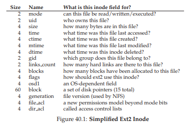
Hình 40.2: Tóm tắt đo lường hệ thống tệp (File System Measurement Summary)
Tất nhiên, trong không gian thiết kế inode, còn rất nhiều khả năng khác; suy cho cùng, inode chỉ là một cấu trúc dữ liệu, và bất kỳ cấu trúc dữ liệu nào lưu trữ thông tin liên quan và có thể truy vấn hiệu quả đều là đủ.
Vì phần mềm hệ thống tệp có thể dễ dàng thay đổi, bạn nên sẵn sàng khám phá các thiết kế khác nhau nếu workload hoặc công nghệ thay đổi.
40.4 Tổ chức thư mục (Directory Organization)
Trong vsfs (cũng như trong nhiều file system khác), directory (thư mục) có một tổ chức đơn giản; một thư mục về cơ bản chỉ chứa một danh sách các cặp (entry name, inode number).
Đối với mỗi file hoặc directory trong một thư mục nhất định, sẽ có một chuỗi ký tự (string) và một số nguyên (inode number) được lưu trong các data block của thư mục đó.
Đối với mỗi chuỗi, cũng có thể lưu thêm độ dài (trong trường hợp tên có kích thước thay đổi).
Ví dụ: giả sử một thư mục dir (có inode number là 5) chứa ba file (foo, bar, và foobar_is_a_pretty_longname), với các inode number lần lượt là 12, 13 và 24.
Dữ liệu lưu trên đĩa cho dir có thể trông như sau:
...
Trong ví dụ này, mỗi entry có:
- inode number
- record length (tổng số byte cho tên cộng với bất kỳ khoảng trống còn lại nào)
- string length (độ dài thực tế của tên)
- Và cuối cùng là tên entry
Lưu ý rằng mỗi thư mục có hai entry đặc biệt: . (dot) và .. (dot-dot);
.là thư mục hiện tại (trong ví dụ này làdir)..là thư mục cha (trong trường hợp này là thư mục gốc – root)
Việc xóa một file (ví dụ: gọi unlink()) có thể để lại một khoảng trống ở giữa thư mục, do đó cần có cách để đánh dấu khoảng trống này (ví dụ: bằng một inode number dự trữ như 0).
Việc xóa như vậy là một lý do để sử dụng record length: một entry mới có thể tái sử dụng một entry cũ lớn hơn và do đó có thêm khoảng trống bên trong.
ASIDE: CÁC TIẾP CẬN DỰA TRÊN LIÊN KẾT (LINKED-BASED APPROACHES)
Một cách tiếp cận đơn giản hơn trong thiết kế inode là sử dụng linked list (danh sách liên kết).
Thay vì có nhiều con trỏ bên trong inode, bạn chỉ cần một con trỏ trỏ tới block đầu tiên của file.
Để xử lý các file lớn hơn, thêm một con trỏ khác ở cuối block dữ liệu đó, và cứ thế tiếp tục, nhờ đó bạn có thể hỗ trợ các file lớn.Như bạn có thể đoán, linked file allocation (cấp phát file theo danh sách liên kết) hoạt động kém hiệu quả đối với một số loại workload; hãy nghĩ đến việc đọc block cuối cùng của một file, hoặc chỉ đơn giản là truy cập ngẫu nhiên.
Để cải thiện hiệu năng của linked allocation, một số hệ thống sẽ giữ một bảng thông tin liên kết trong bộ nhớ (in-memory table), thay vì lưu các con trỏ “next” cùng với các block dữ liệu.
Bảng này được đánh chỉ số theo địa chỉ của một data block D; nội dung của một entry trong bảng đơn giản là next pointer của D, tức là địa chỉ của block tiếp theo trong file sau D.
Cũng có thể có giá trị null (biểu thị end-of-file) hoặc một ký hiệu khác để chỉ rằng block đó đang rảnh.
Việc có một bảng các con trỏ “next” như vậy giúp cho cơ chế linked allocation có thể thực hiện truy cập ngẫu nhiên hiệu quả, chỉ đơn giản bằng cách quét bảng (trong bộ nhớ) để tìm block mong muốn, rồi truy cập trực tiếp block đó trên đĩa.Nghe bảng này có quen không? Những gì chúng ta vừa mô tả chính là cấu trúc cơ bản của file allocation table hay FAT file system.
Đúng vậy, hệ thống tệp Windows cổ điển này, trước khi có NTFS [C94], dựa trên một cơ chế cấp phát liên kết đơn giản.
Cũng có những điểm khác biệt so với hệ thống tệp UNIX tiêu chuẩn; ví dụ: không có inode theo đúng nghĩa, mà thay vào đó là các entry trong thư mục lưu metadata về file và tham chiếu trực tiếp tới block đầu tiên của file đó, điều này khiến việc tạo hard link là không thể.
Xem Brouwer [B02] để biết thêm các chi tiết “kém thanh lịch” này.
Bạn có thể tự hỏi: các thư mục được lưu trữ ở đâu?
Thường thì, các file system coi thư mục là một loại file đặc biệt.
Do đó, một thư mục có một inode, nằm đâu đó trong inode table (với trường type của inode được đánh dấu là “directory” thay vì “regular file”).
Thư mục có các data block được trỏ tới bởi inode (và có thể cả indirect block); các data block này nằm trong vùng data block region của hệ thống tệp đơn giản của chúng ta.
Cấu trúc trên đĩa của chúng ta vì thế vẫn không thay đổi.
Cũng cần lưu ý rằng danh sách tuyến tính đơn giản của các entry thư mục không phải là cách duy nhất để lưu trữ thông tin này.
Như đã nói trước đó, bất kỳ cấu trúc dữ liệu nào cũng có thể được sử dụng.
Ví dụ: XFS [S+96] lưu trữ thư mục dưới dạng B-tree, giúp cho các thao tác tạo file (cần đảm bảo tên file chưa được sử dụng trước khi tạo) nhanh hơn so với các hệ thống dùng danh sách tuyến tính phải quét toàn bộ.
ASIDE: QUẢN LÝ VÙNG TRỐNG (FREE SPACE MANAGEMENT)
Có nhiều cách để quản lý vùng trống; bitmap chỉ là một trong số đó.
Một số hệ thống tệp (file system) đời đầu sử dụng free list (danh sách khối trống), trong đó một con trỏ duy nhất trong superblock được dùng để trỏ tới block trống đầu tiên; bên trong block đó lại lưu con trỏ tới block trống tiếp theo, và cứ thế tạo thành một danh sách liên kết qua các block trống của hệ thống. Khi cần cấp phát một block, block ở đầu danh sách sẽ được sử dụng và danh sách được cập nhật tương ứng.Các hệ thống tệp hiện đại sử dụng các cấu trúc dữ liệu tinh vi hơn. Ví dụ, SGI’s XFS [S+96] sử dụng một dạng B-tree để biểu diễn gọn gàng các vùng đĩa còn trống. Giống như bất kỳ cấu trúc dữ liệu nào, luôn tồn tại các đánh đổi giữa thời gian và không gian lưu trữ.
40.5 Quản lý vùng trống (Free Space Management)
Một hệ thống tệp phải theo dõi inode và data block nào đang trống và cái nào đã được sử dụng, để khi cần cấp phát một file hoặc thư mục mới, nó có thể tìm được không gian lưu trữ phù hợp.
Do đó, free space management là thành phần quan trọng đối với mọi hệ thống tệp.
Trong vsfs, chúng ta sử dụng hai bitmap đơn giản cho nhiệm vụ này.
Ví dụ: khi tạo một file, hệ thống tệp sẽ phải cấp phát một inode cho file đó.
Hệ thống tệp sẽ tìm trong bitmap để tìm một inode đang trống, và cấp phát nó cho file; sau đó, hệ thống sẽ đánh dấu inode này là đã sử dụng (bằng giá trị 1) và cuối cùng cập nhật bitmap trên đĩa với thông tin chính xác.
Một quy trình tương tự cũng diễn ra khi cấp phát một data block.
Ngoài ra, còn có một số yếu tố khác cần xem xét khi cấp phát data block cho một file mới.
Ví dụ: một số hệ thống tệp Linux như ext2 và ext3 sẽ tìm một dãy các block trống (ví dụ: 8 block) khi tạo một file mới và cần cấp phát data block; bằng cách tìm một dãy block trống như vậy và cấp phát chúng cho file mới, hệ thống tệp đảm bảo rằng một phần của file sẽ được lưu liên tiếp trên đĩa, từ đó cải thiện hiệu năng.
Chính sách pre-allocation (cấp phát trước) như vậy là một heuristic (kinh nghiệm thực tiễn) thường được sử dụng khi cấp phát không gian cho data block.
40.6 Đường truy cập: Đọc và ghi (Access Paths: Reading and Writing)
Giờ đây, khi chúng ta đã có cái nhìn tổng quan về cách file và thư mục được lưu trữ trên đĩa, chúng ta có thể theo dõi luồng hoạt động trong quá trình đọc hoặc ghi một file.
Hiểu được điều gì xảy ra trên đường truy cập (access path) này là yếu tố then chốt thứ hai để nắm bắt cách một hệ thống tệp hoạt động; hãy chú ý!
Trong các ví dụ sau, giả sử rằng hệ thống tệp đã được mount (gắn kết) và do đó superblock đã nằm trong bộ nhớ.
Mọi thứ khác (ví dụ: inode, thư mục) vẫn nằm trên đĩa.
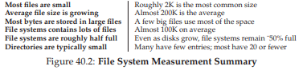
Hình 40.3: Dòng thời gian đọc file (File Read Timeline – thời gian tăng dần từ trên xuống)
Đọc một tệp từ đĩa (Reading A File From Disk)
Trong ví dụ đơn giản này, giả sử bạn muốn mở một tệp (ví dụ: /foo/bar), đọc nội dung của nó, rồi đóng lại.
Để đơn giản, giả sử tệp này chỉ có kích thước 12KB (tức là gồm 3 block).
Khi bạn gọi:
open("/foo/bar", ORDONLY)
File system (hệ thống tệp) trước tiên cần tìm inode của tệp bar để lấy một số thông tin cơ bản về tệp (thông tin quyền truy cập – permissions, kích thước tệp, v.v.).
Để làm được điều này, hệ thống tệp phải tìm được inode, nhưng lúc này nó chỉ có đường dẫn đầy đủ (full pathname).
Hệ thống tệp phải duyệt qua đường dẫn (traverse the pathname) để tìm ra inode mong muốn.
Mọi quá trình duyệt đều bắt đầu từ root của hệ thống tệp, tức root directory (thư mục gốc) được ký hiệu đơn giản là /.
Vì vậy, điều đầu tiên mà FS (file system) sẽ đọc từ đĩa là inode của thư mục gốc.
Nhưng inode này nằm ở đâu?
Để tìm một inode, chúng ta phải biết i-number (số inode).
Thông thường, i-number của một tệp hoặc thư mục được tìm thấy trong thư mục cha của nó; tuy nhiên, root không có thư mục cha (theo định nghĩa).
Do đó, i-number của root phải là một giá trị “được biết trước” (well known); FS phải biết giá trị này khi hệ thống tệp được mount.
Trong hầu hết các hệ thống tệp UNIX, i-number của root là 2.
Vì vậy, để bắt đầu quá trình, FS sẽ đọc block chứa inode số 2 (block inode đầu tiên).
Khi inode đã được đọc vào bộ nhớ, FS có thể xem bên trong inode để tìm các con trỏ (pointer) tới các data block chứa nội dung của thư mục gốc.
FS sẽ sử dụng các con trỏ trên đĩa này để đọc qua thư mục, trong trường hợp này là tìm một entry cho foo.
Bằng cách đọc một hoặc nhiều directory data block, FS sẽ tìm thấy entry cho foo; khi tìm thấy, FS cũng sẽ biết được i-number của foo (giả sử là 44) – thông tin cần thiết cho bước tiếp theo.
Bước tiếp theo là duyệt đệ quy (recursively traverse) đường dẫn cho đến khi tìm được inode mong muốn.
Trong ví dụ này, FS sẽ đọc block chứa inode của foo, sau đó đọc dữ liệu thư mục của nó, và cuối cùng tìm ra i-number của bar.
ASIDE: ĐỌC KHÔNG TRUY CẬP CÁC CẤU TRÚC CẤP PHÁT (READS DON’T ACCESS ALLOCATION STRUCTURES) Nhiều sinh viên thường nhầm lẫn về các cấu trúc cấp phát như bitmap. Cụ thể, nhiều người nghĩ rằng khi bạn chỉ đọc một file và không cấp phát block mới, thì bitmap vẫn sẽ được tham chiếu. Điều này là không đúng! Các cấu trúc cấp phát như bitmap chỉ được truy cập khi cần cấp phát. Inode, directory và indirect block đã có đầy đủ thông tin cần thiết để hoàn thành một yêu cầu đọc; không cần phải kiểm tra một block đã được cấp phát hay chưa khi inode đã trỏ đến nó.
Bước cuối cùng của open() là đọc inode của bar vào bộ nhớ; sau đó FS (file system) thực hiện kiểm tra quyền truy cập (permissions) lần cuối, cấp phát một file descriptor cho tiến trình này trong bảng file mở theo tiến trình (per-process open-file table), và trả về descriptor đó cho người dùng.
Khi đã mở, chương trình có thể gọi system call read() để đọc từ file. Lần đọc đầu tiên (tại offset 0 trừ khi đã gọi lseek()) sẽ đọc block đầu tiên của file, tham chiếu inode để tìm vị trí của block đó; FS cũng có thể cập nhật inode với thời điểm truy cập lần cuối (last-accessed time) mới. Lời gọi read này cũng cập nhật bảng file mở trong bộ nhớ (in-memory open file table) cho file descriptor này, cập nhật file offset để lần đọc tiếp theo sẽ đọc block thứ hai của file, v.v.
Tới một thời điểm nào đó, file sẽ được đóng (close). Công việc ở đây ít hơn nhiều; rõ ràng file descriptor cần được giải phóng (deallocate), nhưng tạm thời đó là tất cả những gì FS cần làm. Không có I/O đĩa nào diễn ra.
Toàn bộ quá trình này được minh họa trong Hình 40.3 (trang 11); thời gian tăng dần từ trên xuống trong hình. Trong hình, call open dẫn đến nhiều lần đọc để cuối cùng tìm ra inode của file. Sau đó, mỗi lần đọc block yêu cầu file system trước hết tham chiếu inode, rồi đọc block, và sau đó cập nhật trường thời gian truy cập lần cuối (last-accessed-time) của inode bằng một lần ghi (write). Hãy dành thời gian để hiểu kỹ điều gì đang diễn ra.
Cũng lưu ý rằng lượng I/O phát sinh bởi open tỉ lệ với độ dài của pathname (đường dẫn). Với mỗi thư mục bổ sung trong đường dẫn, chúng ta phải đọc inode của nó cũng như dữ liệu của nó. Tệ hơn nữa là sự hiện diện của các thư mục lớn; ở đây, chúng ta chỉ phải đọc một block để lấy nội dung của một thư mục, trong khi với một thư mục lớn, chúng ta có thể phải đọc nhiều data block để tìm được entry mong muốn. Đúng vậy, việc đọc một file có thể khá “đau đớn”; và như bạn sắp thấy, việc ghi một file (đặc biệt là tạo mới) thậm chí còn tệ hơn.
Ghi một tệp xuống đĩa (Writing A File To Disk)
Quy trình ghi vào một tệp tương tự như đọc.
Trước tiên, tệp phải được mở (giống như ở phần trên).
Sau đó, ứng dụng có thể gọi write() để cập nhật tệp với nội dung mới.
Cuối cùng, tệp sẽ được đóng.
Không giống như đọc, việc ghi vào tệp có thể yêu cầu cấp phát một block mới (trừ khi block hiện tại chỉ bị ghi đè, chẳng hạn).
Khi ghi một tệp mới, mỗi thao tác ghi không chỉ phải ghi dữ liệu xuống đĩa mà trước đó còn phải quyết định block nào sẽ được cấp phát cho tệp, và do đó phải cập nhật các cấu trúc khác trên đĩa tương ứng (ví dụ: data bitmap và inode).
Vì vậy, mỗi thao tác ghi vào một tệp về mặt logic sẽ tạo ra 5 thao tác I/O:
- Đọc data bitmap (sau đó được cập nhật để đánh dấu block mới cấp phát là đã sử dụng)
- Ghi data bitmap (để phản ánh trạng thái mới xuống đĩa)
- Đọc inode (để lấy thông tin hiện tại)
- Ghi inode (đã được cập nhật với vị trí block mới)
- Ghi block dữ liệu thực tế

Hình 40.4: Dòng thời gian tạo tệp (File Creation Timeline – thời gian tăng dần từ trên xuống)
Lượng ghi còn tệ hơn nữa khi xét đến một thao tác đơn giản và phổ biến như tạo tệp.
Để tạo một tệp, hệ thống tệp không chỉ phải cấp phát một inode, mà còn phải cấp phát không gian trong thư mục chứa tệp mới đó.
Tổng lượng I/O cần thiết để làm điều này là khá lớn:
- 1 lần đọc inode bitmap (để tìm một inode trống)
- 1 lần ghi inode bitmap (để đánh dấu inode đã được cấp phát)
- 1 lần ghi inode mới (để khởi tạo nó)
- 1 lần ghi dữ liệu thư mục (để liên kết tên mức cao của tệp với inode number của nó)
- 1 lần đọc và 1 lần ghi inode của thư mục (để cập nhật nó)
Nếu thư mục cần mở rộng để chứa entry mới, sẽ cần thêm các thao tác I/O bổ sung (ví dụ: tới data bitmap và block thư mục mới).
Tất cả những điều đó chỉ để tạo một tệp!
Hãy xem một ví dụ cụ thể, khi tệp /foo/bar được tạo và ba block được ghi vào nó.
Hình 40.4 (trang 13) cho thấy điều gì xảy ra trong quá trình open() (tạo tệp) và trong mỗi lần ghi 4KB.
Trong hình, các thao tác đọc và ghi xuống đĩa được nhóm theo system call nào đã gây ra chúng, và thứ tự thực hiện xấp xỉ được sắp xếp từ trên xuống dưới.
Bạn có thể thấy khối lượng công việc để tạo tệp: 10 thao tác I/O trong trường hợp này, để duyệt qua pathname và cuối cùng tạo tệp.
Bạn cũng có thể thấy rằng mỗi thao tác ghi có cấp phát tốn 5 thao tác I/O:
- Một cặp để đọc và cập nhật inode
- Một cặp để đọc và cập nhật data bitmap
- Và cuối cùng là ghi dữ liệu thực tế
Làm thế nào để một hệ thống tệp có thể thực hiện tất cả những điều này một cách hiệu quả?
THE CRUX: LÀM THẾ NÀO ĐỂ GIẢM CHI PHÍ I/O CỦA HỆ THỐNG TỆP
Ngay cả những thao tác đơn giản nhất như mở, đọc hoặc ghi một tệp cũng tạo ra một số lượng lớn các thao tác I/O, rải rác khắp đĩa.
Hệ thống tệp có thể làm gì để giảm chi phí cao khi phải thực hiện quá nhiều I/O như vậy?
40.7 Caching và Buffering
Như các ví dụ ở trên cho thấy, việc đọc và ghi file có thể rất tốn kém, gây ra nhiều thao tác I/O tới đĩa (vốn chậm).
Để khắc phục vấn đề hiệu năng nghiêm trọng này, hầu hết các file system (hệ thống tệp) đều tận dụng mạnh mẽ bộ nhớ hệ thống (DRAM) để cache (lưu đệm) các block quan trọng.
Hãy hình dung ví dụ mở file ở trên: nếu không có caching, mỗi lần mở file sẽ yêu cầu ít nhất hai lần đọc cho mỗi cấp trong cây thư mục (directory hierarchy) — một lần để đọc inode của thư mục cần thiết, và ít nhất một lần để đọc dữ liệu của nó.
Với một pathname dài (ví dụ: /1/2/3/.../100/file.txt), hệ thống tệp sẽ phải thực hiện hàng trăm lần đọc chỉ để mở file!
Các hệ thống tệp đời đầu đã giới thiệu một cache kích thước cố định để lưu các block được truy cập thường xuyên.
Tương tự như trong phần thảo luận về virtual memory (bộ nhớ ảo), các chiến lược như LRU (Least Recently Used) và các biến thể khác sẽ quyết định block nào được giữ lại trong cache.
Cache kích thước cố định này thường được cấp phát ngay khi khởi động (boot time) với dung lượng khoảng 10% tổng bộ nhớ.
Tuy nhiên, việc phân vùng bộ nhớ tĩnh như vậy có thể gây lãng phí;
Điều gì sẽ xảy ra nếu tại một thời điểm nào đó, hệ thống tệp không cần tới 10% bộ nhớ?
Với cách tiếp cận kích thước cố định như trên, các trang (page) không được sử dụng trong file cache sẽ không thể được tái sử dụng cho mục đích khác, và do đó bị lãng phí.
Ngược lại, các hệ thống hiện đại áp dụng cách phân vùng động.
Cụ thể, nhiều hệ điều hành hiện đại tích hợp virtual memory pages và file system pages vào một unified page cache (bộ nhớ đệm trang hợp nhất) [S00].
Bằng cách này, bộ nhớ có thể được phân bổ linh hoạt hơn giữa virtual memory và file system, tùy thuộc vào bên nào cần nhiều bộ nhớ hơn tại một thời điểm nhất định.
Hãy hình dung lại ví dụ mở file nhưng có caching:
Lần mở đầu tiên có thể tạo ra nhiều lưu lượng I/O để đọc inode và dữ liệu thư mục, nhưng các lần mở file tiếp theo của cùng file đó (hoặc các file trong cùng thư mục) sẽ hầu hết trúng cache (cache hit), và do đó không cần I/O nào nữa.
TIP: HIỂU RÕ SỰ KHÁC NHAU GIỮA PHÂN VÙNG TĨNH VÀ PHÂN VÙNG ĐỘNG (STATIC VS. DYNAMIC PARTITIONING)
Khi phân chia một tài nguyên cho nhiều client/người dùng khác nhau, bạn có thể sử dụng phân vùng tĩnh (static partitioning) hoặc phân vùng động (dynamic partitioning).
- Phân vùng tĩnh: đơn giản là chia tài nguyên thành các phần cố định ngay từ đầu; ví dụ, nếu có hai người dùng bộ nhớ, bạn có thể cấp một tỷ lệ cố định bộ nhớ cho một người, và phần còn lại cho người kia.
- Phân vùng động: linh hoạt hơn, phân bổ lượng tài nguyên khác nhau theo thời gian; ví dụ, một người dùng có thể được cấp tỷ lệ băng thông đĩa cao hơn trong một khoảng thời gian, nhưng sau đó hệ thống có thể chuyển và cấp cho người dùng khác một phần lớn hơn của băng thông đĩa khả dụng.
Mỗi cách tiếp cận đều có ưu điểm riêng:
- Phân vùng tĩnh đảm bảo mỗi người dùng nhận được một phần tài nguyên, thường mang lại hiệu năng dự đoán được hơn và dễ triển khai hơn.
- Phân vùng động có thể đạt hiệu suất sử dụng tốt hơn (bằng cách cho phép người dùng “đói” tài nguyên tiêu thụ phần tài nguyên đang nhàn rỗi), nhưng có thể phức tạp hơn để triển khai, và có thể dẫn đến hiệu năng kém hơn cho những người dùng mà tài nguyên nhàn rỗi của họ bị người khác sử dụng và mất nhiều thời gian để thu hồi lại khi cần.
Như thường lệ, không có phương pháp nào là “tốt nhất” tuyệt đối; thay vào đó, bạn nên xem xét vấn đề cụ thể và quyết định cách tiếp cận phù hợp nhất. Thực tế, chẳng phải bạn luôn nên làm như vậy sao?
Chúng ta cũng cần xem xét tác động của caching đối với ghi (write).
Trong khi read I/O có thể được loại bỏ hoàn toàn nếu cache đủ lớn, thì lưu lượng ghi vẫn phải được gửi xuống đĩa để trở thành dữ liệu bền vững (persistent).
Do đó, cache không đóng vai trò như một bộ lọc hiệu quả cho ghi như nó làm đối với đọc.
Tuy nhiên, write buffering (đệm ghi – đôi khi được gọi như vậy) chắc chắn mang lại nhiều lợi ích về hiệu năng:
- Trì hoãn ghi cho phép hệ thống tệp gom nhiều cập nhật thành một tập nhỏ các thao tác I/O; ví dụ, nếu inode bitmap được cập nhật khi một file được tạo và sau đó lại được cập nhật ngay sau đó khi một file khác được tạo, hệ thống tệp sẽ tiết kiệm được một thao tác I/O bằng cách trì hoãn việc ghi sau lần cập nhật đầu tiên.
- Đệm nhiều thao tác ghi trong bộ nhớ cho phép hệ thống lập lịch (schedule) các thao tác I/O tiếp theo một cách tối ưu hơn, từ đó cải thiện hiệu năng.
- Tránh một số thao tác ghi hoàn toàn nhờ trì hoãn chúng; ví dụ, nếu một ứng dụng tạo một file rồi xóa nó ngay sau đó, việc trì hoãn ghi thông tin tạo file xuống đĩa sẽ giúp bỏ qua hoàn toàn các thao tác ghi này. Trong trường hợp này, “lười biếng” (trong việc ghi block xuống đĩa) lại là một ưu điểm.
Vì những lý do trên, hầu hết các hệ thống tệp hiện đại đệm ghi trong bộ nhớ từ 5 đến 30 giây, điều này tạo ra một sự đánh đổi khác:
- Nếu hệ thống bị crash trước khi các cập nhật được ghi xuống đĩa, các cập nhật này sẽ bị mất.
- Tuy nhiên, bằng cách giữ dữ liệu ghi trong bộ nhớ lâu hơn, hiệu năng có thể được cải thiện nhờ gom nhóm (batching), lập lịch (scheduling), và thậm chí tránh được một số thao tác ghi.
TIP: HIỂU RÕ SỰ ĐÁNH ĐỔI GIỮA TÍNH BỀN VỮNG VÀ HIỆU NĂNG (DURABILITY/PERFORMANCE TRADE-OFF)
Các storage system (hệ thống lưu trữ) thường đưa ra cho người dùng một sự đánh đổi giữa tính bền vững (durability) và hiệu năng (performance).
- Nếu người dùng muốn dữ liệu vừa ghi phải ngay lập tức bền vững (tức được lưu vĩnh viễn), hệ thống phải thực hiện đầy đủ quá trình commit dữ liệu mới xuống đĩa, và do đó thao tác ghi sẽ chậm (nhưng an toàn).
- Ngược lại, nếu người dùng có thể chấp nhận mất một lượng nhỏ dữ liệu, hệ thống có thể buffer (đệm) các thao tác ghi trong bộ nhớ một thời gian rồi mới ghi xuống đĩa (ở chế độ nền – background).
Cách làm này khiến thao tác ghi có vẻ hoàn tất nhanh chóng, cải thiện hiệu năng cảm nhận (perceived performance); tuy nhiên, nếu xảy ra crash (sập hệ thống), các thao tác ghi chưa được commit xuống đĩa sẽ bị mất — và đó chính là sự đánh đổi.
Để hiểu cách đưa ra quyết định đánh đổi hợp lý, tốt nhất là phải hiểu yêu cầu của ứng dụng đang sử dụng hệ thống lưu trữ. Ví dụ: việc mất vài hình ảnh cuối cùng được tải xuống bởi trình duyệt web có thể chấp nhận được, nhưng mất một phần của giao dịch cơ sở dữ liệu đang cộng tiền vào tài khoản ngân hàng của bạn thì khó chấp nhận hơn. Trừ khi bạn rất giàu, tất nhiên; khi đó, có lẽ bạn chẳng bận tâm đến việc giữ từng xu cuối cùng.
Một số ứng dụng (như database) không chấp nhận sự đánh đổi này.
Do đó, để tránh mất dữ liệu ngoài ý muốn do write buffering, chúng đơn giản ép hệ thống ghi dữ liệu xuống đĩa, bằng cách gọi fsync(), sử dụng các giao diện direct I/O để bỏ qua cache, hoặc sử dụng giao diện raw disk và bỏ qua hoàn toàn file system².
Trong khi hầu hết các ứng dụng chấp nhận sự đánh đổi mà file system đưa ra, vẫn có đủ các cơ chế kiểm soát để buộc hệ thống thực hiện theo ý bạn nếu mặc định không đáp ứng được.
40.8 Tóm tắt (Summary)
Chúng ta đã tìm hiểu các thành phần cơ bản cần có để xây dựng một file system.
Cần có thông tin về mỗi file (metadata – siêu dữ liệu), thường được lưu trong một cấu trúc gọi là inode.
Directory (thư mục) chỉ là một loại file đặc biệt lưu ánh xạ tên → inode number.
Ngoài ra, còn cần các cấu trúc khác; ví dụ, file system thường sử dụng một cấu trúc như bitmap để theo dõi inode hoặc data block nào đang trống hoặc đã được cấp phát.
Điểm tuyệt vời của thiết kế file system là tính tự do; các file system mà chúng ta sẽ khám phá trong những chương tiếp theo đều tận dụng sự tự do này để tối ưu một khía cạnh nào đó của hệ thống tệp.
Rõ ràng vẫn còn nhiều chính sách (policy) mà chúng ta chưa đề cập.
Ví dụ: khi tạo một file mới, nó nên được đặt ở đâu trên đĩa?
Chính sách này và các chính sách khác sẽ là chủ đề của những chương sau.
Hay là… sẽ không?³
41 Tính cục bộ (Locality) và Hệ thống tệp nhanh (Fast File System)
Khi hệ điều hành UNIX lần đầu tiên được giới thiệu, chính “phù thủy” UNIX – Ken Thompson – đã viết hệ thống tệp đầu tiên.
Chúng ta sẽ gọi đó là “old UNIX file system” (hệ thống tệp UNIX cũ), và nó thực sự rất đơn giản.
Về cơ bản, các cấu trúc dữ liệu của nó trên đĩa trông như sau:
...
Super block (S) chứa thông tin về toàn bộ hệ thống tệp: kích thước của volume, số lượng inode, con trỏ tới phần đầu của free list (danh sách các block trống), và các thông tin khác.
Vùng inode trên đĩa chứa tất cả các inode của hệ thống tệp.
Cuối cùng, phần lớn dung lượng đĩa được chiếm bởi các data block (block dữ liệu).
Điểm tốt của hệ thống tệp cũ là nó đơn giản và hỗ trợ các abstraction (trừu tượng hóa) cơ bản mà hệ thống tệp muốn cung cấp: file và cây thư mục (directory hierarchy).
Hệ thống dễ sử dụng này là một bước tiến thực sự so với các hệ thống lưu trữ dựa trên bản ghi (record-based storage systems) cồng kềnh trước đây, và cấu trúc cây thư mục là một cải tiến vượt trội so với các hệ thống cũ chỉ hỗ trợ cấu trúc thư mục một cấp.
41.1 Vấn đề: Hiệu năng kém (The Problem: Poor Performance)
Vấn đề: hiệu năng rất tệ.
Theo đo đạc của Kirk McKusick và các đồng nghiệp tại Berkeley [MJLF84], hiệu năng ban đầu đã kém và càng tệ hơn theo thời gian, đến mức hệ thống tệp chỉ cung cấp 2% băng thông tổng thể của đĩa!
Nguyên nhân chính là hệ thống tệp UNIX cũ đối xử với đĩa như bộ nhớ truy cập ngẫu nhiên (random-access memory); dữ liệu bị rải khắp nơi mà không quan tâm đến việc phương tiện lưu trữ là đĩa, vốn có chi phí định vị (positioning cost) thực sự và đắt đỏ.
Ví dụ: các data block của một file thường nằm rất xa inode của nó, dẫn đến việc phải thực hiện một seek (dịch chuyển đầu đọc) tốn kém mỗi khi đọc inode rồi đọc các data block của file (một thao tác khá phổ biến).
Tệ hơn nữa, hệ thống tệp dễ bị phân mảnh (fragmentation), do vùng trống không được quản lý cẩn thận.
Free list cuối cùng sẽ trỏ tới một loạt các block nằm rải rác khắp đĩa, và khi cấp phát file mới, hệ thống chỉ đơn giản lấy block trống tiếp theo.
Kết quả là một file liên tiếp về mặt logic lại được truy cập bằng cách di chuyển qua lại trên đĩa, làm giảm hiệu năng nghiêm trọng.
Ví dụ: hãy hình dung vùng data block sau, chứa bốn file (A, B, C và D), mỗi file có kích thước 2 block:
...
Nếu B và D bị xóa, bố cục còn lại sẽ là:
...
Như bạn thấy, vùng trống bị phân mảnh thành hai cụm mỗi cụm 2 block, thay vì một cụm liền mạch gồm 4 block.
Giả sử bây giờ bạn muốn cấp phát một file E có kích thước 4 block:
...
Bạn có thể thấy điều gì xảy ra: E bị phân tán khắp đĩa, và kết quả là khi truy cập E, bạn không đạt được hiệu năng tối đa (truy cập tuần tự) từ đĩa.
Thay vào đó, bạn phải đọc E1 và E2, sau đó seek (dịch chuyển đầu đọc), rồi mới đọc E3 và E4.
Vấn đề phân mảnh (fragmentation) này xảy ra thường xuyên trong old UNIX file system và làm giảm hiệu năng đáng kể.
Một lưu ý bên lề: đây chính xác là vấn đề mà các công cụ disk defragmentation (chống phân mảnh đĩa) giải quyết; chúng tái tổ chức dữ liệu trên đĩa để đặt các file nằm liền nhau và tạo ra vùng trống liên tục (một hoặc vài vùng), bằng cách di chuyển dữ liệu và sau đó ghi lại inode và các cấu trúc liên quan để phản ánh thay đổi.
Một vấn đề khác: kích thước block ban đầu quá nhỏ (512 byte).
Do đó, việc truyền dữ liệu từ đĩa vốn đã kém hiệu quả.
Block nhỏ có ưu điểm là giảm internal fragmentation (lãng phí bên trong block), nhưng lại bất lợi cho việc truyền dữ liệu vì mỗi block có thể yêu cầu một chi phí định vị (positioning overhead) để truy cập.
Vì vậy, vấn đề đặt ra là:
THE CRUX: LÀM THẾ NÀO TỔ CHỨC DỮ LIỆU TRÊN ĐĨA ĐỂ CẢI THIỆN HIỆU NĂNG
Làm thế nào chúng ta có thể tổ chức các cấu trúc dữ liệu của hệ thống tệp để cải thiện hiệu năng?
Cần những chính sách cấp phát nào trên các cấu trúc dữ liệu đó?
Làm thế nào để khiến hệ thống tệp “nhận thức về đĩa” (disk aware)?
41.2 FFS: “Disk Awareness” là giải pháp (Disk Awareness Is The Solution)
Một nhóm tại Berkeley đã quyết định xây dựng một hệ thống tệp tốt hơn và nhanh hơn, mà họ đặt tên một cách thông minh là Fast File System (FFS).
Ý tưởng là thiết kế các cấu trúc và chính sách cấp phát của hệ thống tệp sao cho “disk aware” (nhận thức được đặc tính của đĩa) để cải thiện hiệu năng — và đó chính xác là những gì họ đã làm.
FFS đã mở ra một kỷ nguyên mới trong nghiên cứu hệ thống tệp; bằng cách giữ nguyên giao diện với hệ thống tệp (các API như open(), read(), write(), close() và các system call khác) nhưng thay đổi phần triển khai bên trong, các tác giả đã mở đường cho việc xây dựng các hệ thống tệp mới — công việc vẫn tiếp tục cho đến ngày nay.
Hầu như tất cả các hệ thống tệp hiện đại đều tuân thủ giao diện hiện có (và do đó duy trì khả năng tương thích với ứng dụng) trong khi thay đổi phần bên trong để cải thiện hiệu năng, độ tin cậy hoặc vì các lý do khác.
41.3 Tổ chức cấu trúc: Cylinder Group (Organizing Structure: The Cylinder Group)
Bước đầu tiên là thay đổi các cấu trúc trên đĩa.
FFS chia đĩa thành một số cylinder group.
Một cylinder là tập hợp các track trên các bề mặt khác nhau của ổ cứng, nhưng có cùng khoảng cách tới tâm của ổ đĩa; nó được gọi là “cylinder” vì hình dạng tương tự hình trụ trong hình học.
FFS gộp N cylinder liên tiếp thành một nhóm, và do đó toàn bộ đĩa có thể được xem như một tập hợp các cylinder group.
Dưới đây là một ví dụ đơn giản, minh họa bốn track ngoài cùng của một ổ đĩa với sáu platter, và một cylinder group bao gồm ba cylinder:
...
Lưu ý rằng các ổ đĩa hiện đại không cung cấp đủ thông tin để hệ thống tệp thực sự biết một cylinder cụ thể đang được sử dụng hay không; như đã thảo luận trước đây [AD14a], các ổ đĩa xuất ra một không gian địa chỉ logic của các block và ẩn đi chi tiết hình học của chúng với phía client.
Do đó, các hệ thống tệp hiện đại (như Linux ext2, ext3 và ext4) thay vào đó tổ chức ổ đĩa thành các block group, mỗi block group chỉ đơn giản là một phần liên tiếp của không gian địa chỉ của đĩa.
Hình minh họa dưới đây cho thấy một ví dụ trong đó mỗi 8 block được tổ chức thành một block group khác nhau (lưu ý rằng trong thực tế, mỗi group sẽ bao gồm nhiều block hơn rất nhiều):
...
Dù bạn gọi chúng là cylinder group hay block group, thì các nhóm này chính là cơ chế trung tâm mà FFS (Fast File System) sử dụng để cải thiện hiệu năng.
Điểm mấu chốt là: bằng cách đặt hai file trong cùng một nhóm, FFS có thể đảm bảo rằng việc truy cập file này ngay sau file kia sẽ không dẫn đến các thao tác seek (dịch chuyển đầu đọc) dài trên đĩa.
Để sử dụng các nhóm này cho việc lưu trữ file và thư mục, FFS cần có khả năng đặt file và thư mục vào một nhóm và theo dõi toàn bộ thông tin cần thiết về chúng trong nhóm đó.
Để làm được điều này, FFS bao gồm tất cả các cấu trúc mà bạn mong đợi một hệ thống tệp có trong mỗi nhóm, ví dụ:
- Vùng lưu inode
- Vùng lưu data block
- Và một số cấu trúc để theo dõi xem mỗi inode hoặc data block đã được cấp phát hay còn trống
Dưới đây là sơ đồ mô tả những gì FFS lưu trữ trong một cylinder group duy nhất:
...
Bây giờ, hãy xem xét chi tiết các thành phần của một cylinder group duy nhất này.
FFS giữ một bản sao của super block (S) trong mỗi nhóm vì lý do độ tin cậy.
Super block là thành phần cần thiết để mount (gắn kết) hệ thống tệp; bằng cách giữ nhiều bản sao, nếu một bản bị hỏng, bạn vẫn có thể mount và truy cập hệ thống tệp bằng một bản sao còn hoạt động.
Bên trong mỗi nhóm, FFS cần theo dõi xem inode và data block của nhóm đó đã được cấp phát hay chưa.
Một inode bitmap (ib) và data bitmap (db) riêng cho từng nhóm đảm nhận vai trò này đối với inode và data block trong nhóm.
Bitmap là một cách tuyệt vời để quản lý vùng trống trong hệ thống tệp vì nó giúp dễ dàng tìm được một vùng trống lớn và cấp phát nó cho một file, từ đó có thể tránh được một số vấn đề phân mảnh mà free list trong hệ thống tệp cũ gặp phải.
Cuối cùng, vùng inode và data block trong mỗi nhóm cũng giống như trong hệ thống tệp rất đơn giản trước đây (VSFS).
Phần lớn dung lượng của mỗi cylinder group, như thường lệ, là data block.
ASIDE: QUÁ TRÌNH TẠO FILE TRONG FFS (FFS FILE CREATION)
Ví dụ, hãy nghĩ về những cấu trúc dữ liệu nào phải được cập nhật khi tạo một file; giả sử, trong ví dụ này, người dùng tạo một file mới/foo/bar.txtvà file này dài 1 block (4KB).
File này là mới, do đó cần một inode mới; vì vậy, cả inode bitmap và inode mới được cấp phát sẽ được ghi xuống đĩa.
File này cũng có dữ liệu, nên nó cũng phải được cấp phát block dữ liệu; do đó, data bitmap và một data block sẽ (cuối cùng) được ghi xuống đĩa.
Như vậy, ít nhất bốn thao tác ghi vào cylinder group hiện tại sẽ diễn ra (hãy nhớ rằng các thao tác ghi này có thể được buffer trong bộ nhớ một thời gian trước khi thực sự ghi xuống đĩa).
Nhưng chưa hết! Khi tạo một file mới, bạn cũng phải đặt file đó vào cây thư mục của hệ thống tệp, tức là thư mục chứa nó phải được cập nhật.
Cụ thể, thư mục chafoophải được cập nhật để thêm entry chobar.txt; bản cập nhật này có thể vừa với một data block hiện có củafoohoặc yêu cầu cấp phát một block mới (kèm theo cập nhật data bitmap).
Inode củafoocũng phải được cập nhật, vừa để phản ánh độ dài mới của thư mục, vừa để cập nhật các trường thời gian (chẳng hạn như last-modified-time).
Tổng thể, đây là rất nhiều công việc chỉ để tạo một file mới! Có lẽ lần tới khi bạn làm điều đó, bạn nên biết ơn hơn — hoặc ít nhất là ngạc nhiên rằng mọi thứ lại hoạt động trơn tru đến vậy.
41.4 Chính sách: Cách cấp phát file và thư mục (Policies: How To Allocate Files and Directories)
Với cấu trúc group (nhóm) đã được thiết lập, FFS (Fast File System) giờ đây phải quyết định cách đặt file, thư mục và metadata (siêu dữ liệu) liên quan lên đĩa để cải thiện hiệu năng.
Nguyên tắc cơ bản (mantra) rất đơn giản: giữ các dữ liệu liên quan ở gần nhau (và hệ quả của nó: giữ các dữ liệu không liên quan ở xa nhau).
Do đó, để tuân theo nguyên tắc này, FFS phải xác định thế nào là “liên quan” và đặt chúng trong cùng một block group; ngược lại, các mục không liên quan nên được đặt ở các block group khác nhau.
Để đạt được điều này, FFS sử dụng một số heuristic (kinh nghiệm thực tiễn) đơn giản trong việc bố trí dữ liệu.
Đầu tiên là việc bố trí thư mục.
FFS áp dụng một cách tiếp cận đơn giản:
- Tìm cylinder group có ít thư mục đã được cấp phát (để cân bằng số lượng thư mục giữa các nhóm)
- Và có nhiều inode trống (để sau đó có thể cấp phát nhiều file)
- Sau đó đặt dữ liệu thư mục và inode của nó vào nhóm đó.
Tất nhiên, có thể sử dụng các heuristic khác ở đây (ví dụ: xét đến số lượng data block trống).
Đối với file, FFS thực hiện hai điều:
- Đảm bảo (trong trường hợp tổng quát) cấp phát các data block của file trong cùng group với inode của nó, từ đó tránh các thao tác seek dài giữa inode và dữ liệu (như trong hệ thống tệp cũ).
- Đặt tất cả các file trong cùng một thư mục vào cylinder group của thư mục đó.
Ví dụ: nếu người dùng tạo bốn file /a/b, /a/c, /a/d, và /b/f, FFS sẽ cố gắng đặt ba file đầu tiên gần nhau (cùng group) và file thứ tư ở xa (một group khác).
Hãy xem một ví dụ về cách cấp phát như vậy.
Trong ví dụ này, giả sử mỗi group chỉ có 10 inode và 10 data block (cả hai con số này đều nhỏ một cách phi thực tế), và ba thư mục (root directory /, /a, và /b) cùng bốn file (/a/c, /a/d, /a/e, /b/f) được đặt vào các group theo đúng chính sách của FFS.
Giả sử các file thường (regular file) mỗi file có kích thước 2 block, và các thư mục chỉ có 1 block dữ liệu.
Trong hình minh họa, chúng ta sử dụng các ký hiệu hiển nhiên cho mỗi file hoặc thư mục (ví dụ: / cho thư mục gốc, a cho /a, f cho /b/f, v.v.).
...
Lưu ý rằng chính sách của FFS mang lại hai lợi ích rõ rệt:
- Data block của mỗi file nằm gần inode của chính file đó
- Các file trong cùng một thư mục nằm gần nhau (cụ thể,
/a/c,/a/dvà/a/eđều nằm trong Group 1, còn thư mục/bvà file/b/fcủa nó nằm gần nhau trong Group 2).
Ngược lại, hãy xem xét một chính sách cấp phát inode khác, trong đó chỉ đơn giản là phân tán inode ra các group, nhằm đảm bảo rằng bảng inode của không group nào bị lấp đầy quá nhanh.
Kết quả cấp phát cuối cùng có thể trông như sau:
...
Như bạn có thể thấy từ hình minh họa, mặc dù chính sách này thực sự giữ dữ liệu file (và thư mục) gần inode tương ứng của nó, nhưng các file trong cùng một thư mục lại bị phân tán ngẫu nhiên khắp đĩa, và do đó tính cục bộ theo tên (name-based locality) không được duy trì.
Việc truy cập các file /a/c, /a/d và /a/e giờ đây phải trải qua ba group thay vì chỉ một group như cách tiếp cận của FFS.
Các heuristic (kinh nghiệm thực tiễn) trong chính sách của FFS không dựa trên các nghiên cứu sâu rộng về lưu lượng truy cập hệ thống tệp hay các phân tích phức tạp; thay vào đó, chúng dựa trên common sense (lẽ thường) cổ điển (chẳng phải CS là viết tắt của common sense sao?)1.
Các file trong một thư mục thường được truy cập cùng nhau: hãy tưởng tượng việc biên dịch một loạt file rồi liên kết chúng thành một file thực thi duy nhất.
Bởi vì tồn tại tính cục bộ dựa trên không gian tên (namespace locality) như vậy, FFS thường sẽ cải thiện hiệu năng, đảm bảo rằng các thao tác seek giữa các file liên quan là ngắn và nhanh.
Một số người gọi common sense là horse sense, đặc biệt là những người thường xuyên làm việc với ngựa. Tuy nhiên, chúng tôi cảm giác rằng thành ngữ này có thể sẽ bị mai một khi “con ngựa cơ giới” – tức là ô tô – ngày càng phổ biến. Họ sẽ phát minh ra gì tiếp theo? Một cỗ máy bay chăng??!!
41.5 Đo lường tính cục bộ của file (Measuring File Locality)
Để hiểu rõ hơn liệu các heuristic này có hợp lý hay không, hãy phân tích một số trace (bản ghi) truy cập hệ thống tệp và xem liệu thực sự có tồn tại namespace locality hay không.
Vì một lý do nào đó, dường như chưa có một nghiên cứu tốt nào về chủ đề này trong tài liệu học thuật.
Cụ thể, chúng ta sẽ sử dụng SEER traces [K94] và phân tích xem các lần truy cập file “cách xa” nhau như thế nào trong cây thư mục.
Ví dụ: nếu file f được mở, và sau đó lại được mở tiếp ngay trong trace (trước khi bất kỳ file nào khác được mở), thì khoảng cách giữa hai lần mở này trong cây thư mục là 0 (vì chúng là cùng một file).
Nếu một file f trong thư mục dir (tức dir/f) được mở, và tiếp theo là mở file g trong cùng thư mục (tức dir/g), thì khoảng cách giữa hai lần truy cập file này là 1, vì chúng cùng thư mục nhưng không phải cùng file.
Nói cách khác, metric khoảng cách của chúng ta đo xem phải đi lên bao nhiêu cấp trong cây thư mục để tìm tổ tiên chung của hai file; chúng càng gần nhau trong cây, metric này càng nhỏ.
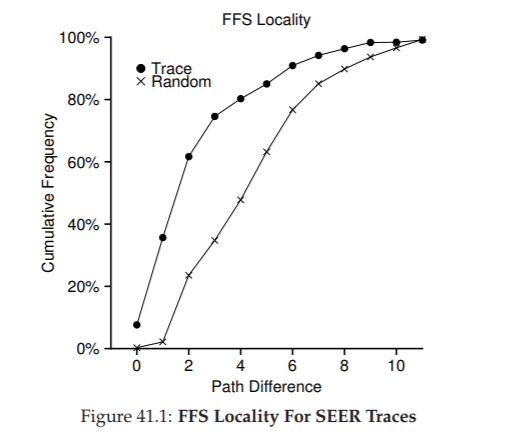
Hình 41.1: Tính cục bộ của FFS đối với SEER traces
Hình 41.1 cho thấy tính cục bộ quan sát được trong SEER traces trên tất cả các workstation trong cụm SEER, xét trên toàn bộ các trace.
Biểu đồ vẽ metric khoảng cách trên trục hoành (x-axis) và hiển thị tỷ lệ tích lũy của các lần mở file có khoảng cách đó trên trục tung (y-axis).
Cụ thể, đối với SEER traces (được đánh dấu “Trace” trong biểu đồ), bạn có thể thấy rằng khoảng 7% các lần truy cập file là tới file vừa được mở trước đó, và gần 40% các lần truy cập file là tới cùng file hoặc file trong cùng thư mục (tức khoảng cách bằng 0 hoặc 1).
Do đó, giả định về tính cục bộ của FFS có vẻ hợp lý (ít nhất là đối với các trace này).
Thú vị là, khoảng 25% số lần truy cập file còn lại là tới các file có khoảng cách bằng 2.
Loại tính cục bộ này xảy ra khi người dùng tổ chức một tập hợp các thư mục liên quan theo cấu trúc nhiều cấp và thường xuyên chuyển qua lại giữa chúng.
Ví dụ: nếu người dùng có thư mục src và biên dịch các file đối tượng (.o) vào thư mục obj, và cả hai thư mục này đều là thư mục con của thư mục chính proj, thì một mẫu truy cập phổ biến sẽ là proj/src/foo.c tiếp theo là proj/obj/foo.o.
Khoảng cách giữa hai lần truy cập này là 2, vì proj là tổ tiên chung.
FFS không nắm bắt được loại tính cục bộ này trong chính sách của nó, và do đó sẽ có nhiều thao tác seek hơn giữa các lần truy cập như vậy.
Để so sánh, biểu đồ cũng hiển thị tính cục bộ đối với một trace “Random”.
Trace ngẫu nhiên này được tạo ra bằng cách chọn các file từ một SEER trace hiện có theo thứ tự ngẫu nhiên, và tính metric khoảng cách giữa các lần truy cập được sắp xếp ngẫu nhiên này.
Như bạn thấy, tính cục bộ theo không gian tên trong trace ngẫu nhiên thấp hơn, như dự đoán.
Tuy nhiên, vì cuối cùng mọi file đều có một tổ tiên chung (ví dụ: thư mục root), nên vẫn tồn tại một mức độ cục bộ nhất định, và do đó trace ngẫu nhiên hữu ích như một điểm so sánh.
41.6 Ngoại lệ đối với tệp lớn (The Large-File Exception)
Trong FFS (Fast File System), có một ngoại lệ quan trọng đối với chính sách chung về bố trí file, và ngoại lệ này áp dụng cho các file lớn.
Nếu không có một quy tắc khác, một file lớn sẽ lấp đầy toàn bộ block group mà nó được đặt vào đầu tiên (và có thể cả các group khác).
Việc lấp đầy một block group theo cách này là không mong muốn, vì nó ngăn cản các file “liên quan” được đặt vào cùng block group đó, từ đó có thể làm giảm tính cục bộ truy cập file (file-access locality).
Vì vậy, đối với các file lớn, FFS thực hiện như sau:
Sau khi một số lượng block nhất định được cấp phát trong block group đầu tiên (ví dụ: 12 block, hoặc bằng số lượng direct pointer có trong một inode), FFS sẽ đặt phần “lớn” tiếp theo của file (ví dụ: các block được trỏ tới bởi indirect block đầu tiên) vào một block group khác (có thể được chọn vì mức sử dụng thấp).
Sau đó, phần tiếp theo của file sẽ được đặt vào một block group khác nữa, và cứ thế tiếp tục.
Hãy xem một số sơ đồ để hiểu rõ hơn chính sách này.
Nếu không có ngoại lệ cho file lớn, một file lớn duy nhất sẽ đặt tất cả các block của nó vào một vùng trên đĩa.
Chúng ta xét một ví dụ nhỏ: một file (/a) có 30 block trong một FFS được cấu hình với 10 inode và 40 data block mỗi group.
Dưới đây là minh họa FFS không áp dụng ngoại lệ cho file lớn:
...
Như bạn thấy trong hình, /a chiếm hầu hết các data block trong Group 0, trong khi các group khác vẫn trống.
Nếu bây giờ tạo thêm một số file khác trong thư mục gốc (/), sẽ không còn nhiều chỗ cho dữ liệu của chúng trong group này.
Với ngoại lệ cho file lớn (trong ví dụ này được đặt là 5 block mỗi phần), FFS thay vào đó phân tán file ra nhiều group, và mức sử dụng trong mỗi group sẽ không quá cao:
...
Người đọc tinh ý (chính là bạn) sẽ nhận ra rằng việc phân tán các block của một file khắp đĩa sẽ làm giảm hiệu năng, đặc biệt trong trường hợp khá phổ biến là truy cập tuần tự (ví dụ: khi người dùng hoặc ứng dụng đọc các phần từ 0 đến 29 theo thứ tự).
Và bạn hoàn toàn đúng!
Tuy nhiên, bạn có thể giải quyết vấn đề này bằng cách chọn kích thước phần (chunk size) một cách hợp lý.
Cụ thể, nếu chunk size đủ lớn, hệ thống tệp sẽ dành phần lớn thời gian để truyền dữ liệu từ đĩa và chỉ một phần nhỏ thời gian để seek giữa các chunk.
Quá trình giảm chi phí cố định bằng cách thực hiện nhiều công việc hơn cho mỗi lần trả chi phí này được gọi là amortization (phân bổ chi phí) và là một kỹ thuật phổ biến trong các hệ thống máy tính.
Hãy làm một ví dụ:
- Giả sử thời gian định vị trung bình (average positioning time, bao gồm seek và quay đĩa) của một ổ đĩa là 10 ms.
- Giả sử thêm rằng ổ đĩa truyền dữ liệu với tốc độ 40 MB/s.
Nếu mục tiêu của bạn là dành một nửa thời gian để seek giữa các chunk và một nửa thời gian để truyền dữ liệu (tức đạt 50% hiệu năng đĩa tối đa), bạn sẽ cần 10 ms truyền dữ liệu cho mỗi 10 ms định vị.
Vậy câu hỏi là: chunk phải lớn bao nhiêu để mất 10 ms cho việc truyền dữ liệu?
Rất đơn giản, chỉ cần dùng toán học, cụ thể là phân tích thứ nguyên (dimensional analysis) đã đề cập trong chương về đĩa [AD14a]:
[
40 \frac{\text{MB}}{\text{sec}} \cdot \frac{1024 \ \text{KB}}{1 \ \text{MB}} \cdot \frac{1 \ \text{sec}}{1000 \ \text{ms}} \cdot 10 \ \text{ms} = 409.6 \ \text{KB}
]
(41.1)
Về cơ bản, phương trình này nói rằng: nếu bạn truyền dữ liệu với tốc độ 40 MB/s, bạn chỉ cần truyền 409,6 KB mỗi lần seek để dành một nửa thời gian cho seek và một nửa thời gian cho truyền dữ liệu.
Tương tự, bạn có thể tính kích thước chunk (phần dữ liệu) cần thiết để đạt 90% băng thông cực đại (kết quả khoảng 3,6 MB), hoặc thậm chí 99% băng thông cực đại (39,6 MB!).
Như bạn thấy, càng muốn tiến gần đến mức cực đại, kích thước chunk càng phải lớn (xem Hình 41.2 để thấy đồ thị các giá trị này).

Hình 41.2: Amortization – Chunk phải lớn đến mức nào? (Amortization: How Big Do Chunks Have To Be?)
Tuy nhiên, FFS không sử dụng kiểu tính toán này để phân tán các file lớn ra nhiều group.
Thay vào đó, nó áp dụng một cách tiếp cận đơn giản, dựa trên cấu trúc của inode.
Cụ thể:
- 12 direct block đầu tiên được đặt trong cùng group với inode
- Mỗi indirect block tiếp theo, và tất cả các block mà nó trỏ tới, được đặt trong một group khác
Với kích thước block là 4 KB và địa chỉ đĩa 32-bit, chiến lược này có nghĩa là mỗi 1024 block của file (4 MB) sẽ được đặt ở các group khác nhau, ngoại lệ duy nhất là 48 KB đầu tiên của file (được trỏ tới bởi các direct pointer).
Lưu ý rằng xu hướng của ổ đĩa là tốc độ truyền dữ liệu được cải thiện khá nhanh (do các nhà sản xuất đĩa ngày càng lưu được nhiều bit hơn trên cùng một bề mặt), nhưng các yếu tố cơ học liên quan đến seek (tốc độ di chuyển tay đọc và tốc độ quay) lại cải thiện khá chậm [P98].
Điều này có nghĩa là theo thời gian, chi phí cơ học trở nên tương đối đắt đỏ hơn, và để amortize (phân bổ) chi phí này, bạn phải truyền nhiều dữ liệu hơn giữa các lần seek.
41.7 Một vài điểm khác về FFS (A Few Other Things About FFS)
FFS cũng giới thiệu một số cải tiến khác.
Đặc biệt, các nhà thiết kế rất lo ngại về việc hỗ trợ các file nhỏ; thực tế, vào thời điểm đó, nhiều file chỉ khoảng 2 KB, và việc sử dụng block 4 KB – tuy tốt cho tốc độ truyền dữ liệu – lại không hiệu quả về mặt sử dụng không gian.
Hiện tượng internal fragmentation (phân mảnh bên trong) này có thể dẫn đến việc lãng phí khoảng một nửa dung lượng đĩa đối với một hệ thống tệp điển hình.
Giải pháp mà các nhà thiết kế FFS đưa ra rất đơn giản và giải quyết được vấn đề:
Họ quyết định giới thiệu sub-block – các block nhỏ 512 byte mà hệ thống tệp có thể cấp phát cho file.
Nhờ đó, nếu bạn tạo một file nhỏ (ví dụ: 1 KB), nó sẽ chỉ chiếm hai sub-block và không lãng phí cả block 4 KB.
Khi file lớn dần, hệ thống tệp sẽ tiếp tục cấp phát các block 512 byte cho đến khi đạt đủ 4 KB dữ liệu.
Tại thời điểm đó, FFS sẽ tìm một block 4 KB, sao chép các sub-block vào đó, và giải phóng các sub-block để tái sử dụng.

Hình 41.3: FFS – So sánh bố trí chuẩn và bố trí tham số hóa (Standard Versus Parameterized Placement)
Bạn có thể nhận thấy rằng quá trình này không hiệu quả, vì yêu cầu nhiều công việc bổ sung cho hệ thống tệp (đặc biệt là nhiều thao tác I/O để thực hiện việc sao chép).
Và bạn lại đúng!
Vì vậy, FFS thường tránh hành vi kém hiệu quả này bằng cách chỉnh sửa thư viện libc; thư viện này sẽ buffer (đệm) các thao tác ghi và sau đó gửi chúng thành các chunk 4 KB tới hệ thống tệp, nhờ đó tránh hoàn toàn việc phải xử lý sub-block trong hầu hết các trường hợp.
Một điểm thú vị thứ hai mà FFS (Fast File System) giới thiệu là bố trí dữ liệu trên đĩa được tối ưu cho hiệu năng.
Vào thời điểm đó (trước khi có SCSI và các giao tiếp thiết bị hiện đại hơn), ổ đĩa kém tinh vi hơn nhiều và yêu cầu CPU của máy chủ điều khiển hoạt động của chúng theo cách “thủ công” hơn.
Một vấn đề phát sinh trong FFS khi một file được đặt trên các sector liên tiếp của đĩa, như minh họa bên trái trong Hình 41.3.
Cụ thể, vấn đề xảy ra trong quá trình đọc tuần tự (sequential read).
FFS sẽ gửi yêu cầu đọc block 0; đến khi việc đọc hoàn tất và FFS gửi yêu cầu đọc block 1, thì đã quá muộn: block 1 đã quay qua khỏi đầu đọc, và bây giờ việc đọc block 1 sẽ phải chịu một vòng quay đầy đủ (full rotation).
FFS giải quyết vấn đề này bằng một bố trí khác, như bạn thấy ở bên phải Hình 41.3.
Bằng cách bỏ qua mỗi block xen kẽ (trong ví dụ), FFS có đủ thời gian để yêu cầu block tiếp theo trước khi nó đi qua đầu đọc.
Thực tế, FFS đủ “thông minh” để xác định, đối với một ổ đĩa cụ thể, cần bỏ qua bao nhiêu block khi bố trí dữ liệu để tránh các vòng quay thừa; kỹ thuật này được gọi là parameterization (tham số hóa), vì FFS sẽ xác định các tham số hiệu năng cụ thể của ổ đĩa và sử dụng chúng để quyết định sơ đồ bố trí so le chính xác.
Bạn có thể nghĩ: “Cách này cũng không hay lắm”.
Thực tế, bạn chỉ đạt được 50% băng thông cực đại với kiểu bố trí này, vì bạn phải quay quanh mỗi track hai lần chỉ để đọc mỗi block một lần.
May mắn thay, các ổ đĩa hiện đại thông minh hơn nhiều: chúng đọc toàn bộ track vào và lưu trong bộ nhớ đệm nội bộ (internal disk cache, thường gọi là track buffer vì lý do này).
Sau đó, ở các lần đọc tiếp theo trên track đó, ổ đĩa sẽ chỉ trả về dữ liệu mong muốn từ cache của nó.
Do đó, các hệ thống tệp không còn phải lo lắng về những chi tiết cực kỳ thấp này nữa.
Abstraction (trừu tượng hóa) và các giao diện cấp cao hơn có thể là một điều tốt, khi được thiết kế hợp lý.
TIP: LÀM CHO HỆ THỐNG DỄ SỬ DỤNG (MAKE THE SYSTEM USABLE)
Có lẽ bài học cơ bản nhất từ FFS là: không chỉ giới thiệu ý tưởng tốt về bố trí dữ liệu nhận thức đĩa (disk-aware layout), mà còn bổ sung nhiều tính năng giúp hệ thống dễ sử dụng hơn.
Các tính năng như tên file dài, symbolic link, và thao tác rename hoạt động nguyên tử (atomic) đều cải thiện tính hữu ích của hệ thống; mặc dù khó để viết một bài nghiên cứu dài về chúng (hãy tưởng tượng đọc 14 trang về “The Symbolic Link: Hard Link’s Long Lost Cousin”), nhưng những tính năng nhỏ này khiến FFS hữu dụng hơn và có khả năng cao hơn được chấp nhận rộng rãi.
Làm cho hệ thống dễ sử dụng thường quan trọng ngang hoặc hơn cả các đổi mới kỹ thuật sâu.
Một số cải tiến về khả năng sử dụng khác cũng được bổ sung.
FFS là một trong những hệ thống tệp đầu tiên cho phép tên file dài, cho phép đặt tên biểu đạt hơn thay vì cách tiếp cận truyền thống với kích thước cố định (ví dụ: 8 ký tự).
Hơn nữa, một khái niệm mới được giới thiệu là symbolic link.
Như đã thảo luận ở chương trước [AD14b], hard link bị giới hạn ở chỗ:
- Không thể trỏ tới thư mục (để tránh tạo vòng lặp trong cây hệ thống tệp)
- Chỉ có thể trỏ tới file trong cùng một volume (tức inode number vẫn phải có ý nghĩa)
Symbolic link cho phép người dùng tạo một “bí danh” (alias) tới bất kỳ file hoặc thư mục nào trên hệ thống và do đó linh hoạt hơn nhiều.
FFS cũng giới thiệu thao tác rename() nguyên tử để đổi tên file.
Những cải tiến về khả năng sử dụng, vượt ra ngoài công nghệ cơ bản, cũng có thể đã giúp FFS có được một cộng đồng người dùng mạnh mẽ hơn.
41.8 Tóm tắt (Summary)
Sự ra đời của FFS là một bước ngoặt trong lịch sử hệ thống tệp, vì nó cho thấy rằng vấn đề quản lý file là một trong những vấn đề thú vị nhất trong một hệ điều hành, và chỉ ra cách bắt đầu xử lý thiết bị quan trọng nhất – ổ đĩa cứng.
Kể từ đó, hàng trăm hệ thống tệp mới đã được phát triển, nhưng cho đến nay, nhiều hệ thống tệp vẫn lấy cảm hứng từ FFS (ví dụ: Linux ext2 và ext3 rõ ràng là hậu duệ về mặt ý tưởng).
Chắc chắn rằng tất cả các hệ thống hiện đại đều rút ra bài học chính từ FFS: hãy đối xử với đĩa như chính nó – một chiếc đĩa.
42. Tính nhất quán khi xảy ra sự cố (Crash Consistency): FSCK và Journaling
Như chúng ta đã thấy cho đến thời điểm này, file system (hệ thống tệp) quản lý một tập hợp các cấu trúc dữ liệu (data structure) để hiện thực hóa các trừu tượng (abstraction) mà chúng ta mong đợi: file (tệp), directory (thư mục), và tất cả các metadata (siêu dữ liệu) khác cần thiết để hỗ trợ trừu tượng cơ bản này. Không giống như hầu hết các cấu trúc dữ liệu (ví dụ: những cấu trúc tồn tại trong bộ nhớ của một chương trình đang chạy), các cấu trúc dữ liệu của file system phải tồn tại lâu dài (persist), nghĩa là chúng phải được lưu trữ trên các thiết bị có khả năng giữ dữ liệu ngay cả khi mất điện (chẳng hạn như ổ cứng từ hoặc SSD dùng bộ nhớ flash).
Một thách thức lớn mà file system phải đối mặt là làm thế nào để cập nhật các cấu trúc dữ liệu persistent (lưu trữ lâu dài) ngay cả khi có khả năng xảy ra mất điện hoặc system crash (hệ thống bị sập). Cụ thể, điều gì sẽ xảy ra nếu ngay giữa quá trình cập nhật các cấu trúc trên đĩa (on-disk structures), ai đó vô tình rút dây nguồn và máy mất điện? Hoặc hệ điều hành gặp lỗi và bị crash? Do khả năng mất điện hoặc crash, việc cập nhật một cấu trúc dữ liệu persistent trở nên khá phức tạp, và dẫn đến một vấn đề mới, thú vị trong việc hiện thực file system, được gọi là crash-consistency problem (vấn đề đảm bảo tính nhất quán khi xảy ra sự cố).
Vấn đề này khá dễ hiểu. Hãy tưởng tượng bạn cần cập nhật hai cấu trúc trên đĩa, A và B, để hoàn tất một thao tác cụ thể. Vì đĩa chỉ xử lý một yêu cầu tại một thời điểm, một trong hai yêu cầu này sẽ được ghi xuống đĩa trước (hoặc A hoặc B). Nếu hệ thống bị crash hoặc mất điện sau khi một thao tác ghi hoàn tất, cấu trúc trên đĩa sẽ rơi vào trạng thái không nhất quán. Và như vậy, chúng ta có một vấn đề mà mọi file system đều phải giải quyết:
THE CRUX: LÀM THẾ NÀO ĐỂ CẬP NHẬT ĐĨA NGAY CẢ KHI XẢY RA SỰ CỐ Hệ thống có thể bị crash hoặc mất điện giữa hai thao tác ghi bất kỳ, và do đó trạng thái trên đĩa có thể chỉ được cập nhật một phần. Sau khi crash, hệ thống khởi động lại và muốn mount (gắn) file system một lần nữa (để truy cập các file, v.v.). Vì crash có thể xảy ra tại bất kỳ thời điểm nào, làm thế nào để đảm bảo file system giữ được hình ảnh (image) trên đĩa ở trạng thái hợp lý?
Trong chương này, chúng ta sẽ mô tả vấn đề này chi tiết hơn, và xem xét một số phương pháp mà các file system đã sử dụng để khắc phục. Chúng ta sẽ bắt đầu bằng cách xem xét phương pháp được sử dụng trong các file system cũ, được gọi là fsck hay file system checker (trình kiểm tra hệ thống tệp). Sau đó, chúng ta sẽ chuyển sang một phương pháp khác, được gọi là journaling (còn được biết đến với tên write-ahead logging), một kỹ thuật bổ sung một chút chi phí (overhead) cho mỗi thao tác ghi nhưng có khả năng phục hồi nhanh hơn sau khi crash hoặc mất điện. Chúng ta sẽ thảo luận về cơ chế cơ bản của journaling, bao gồm một số biến thể mà Linux ext3 [T98, PAA05] (một file system journaling tương đối hiện đại) triển khai.
42.1 Một ví dụ chi tiết
Để bắt đầu việc tìm hiểu journaling, hãy xem một ví dụ. Chúng ta cần một workload (khối lượng công việc) có thao tác cập nhật các cấu trúc trên đĩa. Giả sử ở đây workload rất đơn giản: thao tác append (nối thêm) một data block (khối dữ liệu) vào cuối một file đã tồn tại. Việc append này được thực hiện bằng cách mở file, gọi lseek() để di chuyển file offset (vị trí con trỏ tệp) đến cuối file, sau đó thực hiện một thao tác ghi (write) 4KB vào file trước khi đóng nó.
Giả sử thêm rằng chúng ta đang sử dụng các cấu trúc file system đơn giản tiêu chuẩn trên đĩa, tương tự như các file system mà chúng ta đã thấy trước đây. Ví dụ nhỏ này bao gồm một inode bitmap (bản đồ bit của inode, với chỉ 8 bit, mỗi bit ứng với một inode), một data bitmap (bản đồ bit dữ liệu, cũng 8 bit, mỗi bit ứng với một data block), các inode (tổng cộng 8, đánh số từ 0 đến 7, phân bố trên bốn block), và các data block (tổng cộng 8, đánh số từ 0 đến 7). Dưới đây là sơ đồ của file system này:
...
Nếu bạn quan sát các cấu trúc trong hình, bạn sẽ thấy rằng chỉ có một inode được cấp phát (inode số 2), được đánh dấu trong inode bitmap, và một data block được cấp phát (data block số 4), cũng được đánh dấu trong data bitmap. Inode này được ký hiệu là I[v1], vì đây là phiên bản đầu tiên của inode này; nó sẽ sớm được cập nhật (do workload đã mô tả ở trên).
Hãy cùng xem bên trong inode đơn giản này. Bên trong I[v1], chúng ta thấy:
...
Trong inode (chỉ mục nút) đơn giản này, kích thước của file là 1 (nghĩa là nó có một block đã được cấp phát), con trỏ trực tiếp (direct pointer) đầu tiên trỏ tới block 4 (block dữ liệu đầu tiên của file, ký hiệu Da), và cả ba con trỏ trực tiếp còn lại đều được đặt là null (biểu thị rằng chúng không được sử dụng). Tất nhiên, inode thực tế có nhiều trường (field) hơn rất nhiều; hãy xem lại các chương trước để biết thêm thông tin.
Khi chúng ta thực hiện thao tác append (nối thêm) vào file, tức là đang thêm một data block (khối dữ liệu) mới vào nó, khi đó cần phải cập nhật ba cấu trúc trên đĩa (on-disk structures): inode (phải trỏ tới block mới và ghi nhận kích thước mới lớn hơn do thao tác append), data block mới Db, và một phiên bản mới của data bitmap (gọi là B[v2]) để biểu thị rằng data block mới đã được cấp phát.
Như vậy, trong bộ nhớ của hệ thống, chúng ta có ba block cần phải ghi xuống đĩa. Inode đã được cập nhật (inode phiên bản 2, viết tắt là I[v2]) hiện trông như sau:
...
Data bitmap đã được cập nhật (B[v2]) hiện có dạng: 00001100. Cuối cùng là data block (Db), chứa bất kỳ dữ liệu nào mà người dùng ghi vào file. Có thể là… nhạc vi phạm bản quyền chẳng hạn?
Điều chúng ta mong muốn là hình ảnh cuối cùng của file system trên đĩa sẽ trông như sau:
...
Để đạt được sự chuyển đổi này, file system phải thực hiện ba thao tác ghi riêng biệt xuống đĩa, mỗi thao tác cho một thành phần: inode (I[v2]), bitmap (B[v2]) và data block (Db). Lưu ý rằng các thao tác ghi này thường không diễn ra ngay lập tức khi người dùng gọi system call write(); thay vào đó, inode, bitmap và dữ liệu mới (ở trạng thái “bẩn” – dirty) sẽ nằm trong bộ nhớ chính (trong page cache hoặc buffer cache) một thời gian; sau đó, khi file system quyết định ghi chúng xuống đĩa (ví dụ sau 5 giây hoặc 30 giây), nó sẽ gửi các yêu cầu ghi tương ứng tới đĩa. Thật không may, một sự cố crash có thể xảy ra và làm gián đoạn quá trình cập nhật này. Đặc biệt, nếu crash xảy ra sau khi một hoặc hai thao tác ghi đã hoàn tất nhưng chưa phải cả ba, file system có thể rơi vào trạng thái “kỳ quặc” (không nhất quán).
Các kịch bản crash (Crash Scenarios)
Để hiểu rõ hơn vấn đề, hãy xem một số ví dụ về kịch bản crash. Giả sử chỉ có một thao tác ghi thành công; khi đó sẽ có ba khả năng xảy ra như sau:
Trường hợp thứ nhất, chỉ có data block (Db) được ghi xuống đĩa. Trong tình huống này, dữ liệu đã nằm trên đĩa, nhưng không có inode nào trỏ tới nó và cũng không có bitmap nào cho biết block đó đã được cấp phát. Do đó, về bản chất, thao tác ghi này coi như chưa từng xảy ra. Trường hợp này hoàn toàn không gây vấn đề gì xét từ góc độ crash consistency (tính nhất quán khi xảy ra sự cố) của file system^[1].
Trường hợp thứ hai, chỉ có inode đã được cập nhật (I[v2]) được ghi xuống đĩa. Khi đó, inode trỏ tới địa chỉ đĩa (5) – nơi mà Db đáng lẽ sẽ được ghi vào – nhưng Db vẫn chưa được ghi ở đó. Vì vậy, nếu tin vào con trỏ này, chúng ta sẽ đọc phải dữ liệu rác (garbage data) từ đĩa (nội dung cũ của địa chỉ đĩa 5). Hơn nữa, xuất hiện một vấn đề mới gọi là file-system inconsistency (sự không nhất quán của hệ thống tệp). Bitmap trên đĩa cho biết data block 5 chưa được cấp phát, nhưng inode lại nói rằng nó đã được cấp phát. Sự mâu thuẫn giữa bitmap và inode này là một dạng không nhất quán trong cấu trúc dữ liệu của file system; để sử dụng file system, chúng ta phải tìm cách giải quyết vấn đề này (sẽ bàn thêm ở phần sau).
Trường hợp thứ ba, chỉ có bitmap đã được cập nhật (B[v2]) được ghi xuống đĩa. Khi đó, bitmap cho biết block 5 đã được cấp phát, nhưng không có inode nào trỏ tới nó. Do đó, file system lại rơi vào trạng thái không nhất quán; nếu không được xử lý, thao tác ghi này sẽ dẫn đến hiện tượng “rò rỉ không gian” (space leak), vì block 5 sẽ không bao giờ được sử dụng bởi file system.
Ngoài ra, còn có ba kịch bản crash khác trong quá trình cố gắng ghi ba block xuống đĩa. Trong các trường hợp này, hai thao tác ghi thành công và thao tác cuối cùng thất bại:
Trường hợp thứ nhất, inode (I[v2]) và bitmap (B[v2]) được ghi xuống đĩa, nhưng data (Db) thì không. Khi đó, metadata của file system hoàn toàn nhất quán: inode có con trỏ tới block 5, bitmap cho biết block 5 đang được sử dụng, và mọi thứ trông có vẻ ổn xét từ góc độ metadata. Nhưng vẫn có một vấn đề: block 5 lại chứa dữ liệu rác.
Trường hợp thứ hai, inode (I[v2]) và data block (Db) được ghi, nhưng bitmap (B[v2]) thì không. Khi đó, inode trỏ tới dữ liệu đúng trên đĩa, nhưng lại tồn tại sự không nhất quán giữa inode và phiên bản cũ của bitmap (B1). Do đó, một lần nữa, chúng ta cần giải quyết vấn đề này trước khi sử dụng file system.
Trường hợp thứ ba, bitmap (B[v2]) và data block (Db) được ghi, nhưng inode (I[v2]) thì không. Khi đó, lại xuất hiện sự không nhất quán giữa inode và data bitmap. Tuy block đã được ghi và bitmap cho biết nó đang được sử dụng, nhưng chúng ta không biết nó thuộc về file nào, vì không có inode nào trỏ tới file đó.
^[1]: Trong trường hợp này, dữ liệu tồn tại trên đĩa nhưng không thể truy cập được, và vì không có metadata nào tham chiếu đến nó, hệ thống coi như thao tác ghi chưa từng xảy ra.
Vấn đề Crash Consistency (Tính nhất quán khi xảy ra sự cố)
Từ các kịch bản crash (sập hệ thống) đã phân tích ở trên, hy vọng bạn có thể thấy nhiều vấn đề có thể xảy ra đối với hình ảnh (image) của file system (hệ thống tệp) trên đĩa khi gặp sự cố: chúng ta có thể gặp tình trạng inconsistency (không nhất quán) trong các cấu trúc dữ liệu của file system; có thể xảy ra space leak (rò rỉ không gian lưu trữ); có thể trả về garbage data (dữ liệu rác) cho người dùng; và nhiều vấn đề khác.
Lý tưởng nhất, chúng ta muốn chuyển file system từ một trạng thái nhất quán này (ví dụ: trước khi file được append) sang một trạng thái nhất quán khác một cách atomic (nguyên tử, tức là toàn bộ thay đổi diễn ra trọn vẹn hoặc không diễn ra gì cả) — ví dụ: sau khi inode, bitmap và data block mới đã được ghi xuống đĩa.
Thật không may, chúng ta không thể dễ dàng làm điều này vì đĩa chỉ commit (ghi xác nhận) một thao tác ghi tại một thời điểm, và crash hoặc mất điện có thể xảy ra giữa các lần cập nhật này. Chúng ta gọi vấn đề tổng quát này là crash-consistency problem (vấn đề đảm bảo tính nhất quán khi xảy ra sự cố), hoặc cũng có thể gọi là consistent-update problem (vấn đề cập nhật nhất quán).
42.2 Giải pháp số 1: Trình kiểm tra hệ thống tệp (File System Checker)
Các file system đời đầu áp dụng một cách tiếp cận đơn giản đối với crash consistency. Về cơ bản, chúng cho phép sự không nhất quán xảy ra, rồi sửa chữa sau đó (khi khởi động lại). Một ví dụ kinh điển của cách tiếp cận “lười biếng” này là công cụ fsck1.
fsck là một công cụ trong UNIX dùng để tìm ra các sự không nhất quán như vậy và sửa chữa chúng [MK96]; các hệ thống khác cũng có những công cụ tương tự để kiểm tra và sửa chữa một phân vùng đĩa.
Lưu ý rằng cách tiếp cận này không thể sửa được mọi vấn đề; ví dụ, trong trường hợp ở trên, file system có vẻ nhất quán nhưng inode lại trỏ tới dữ liệu rác. Mục tiêu thực sự duy nhất của fsck là đảm bảo metadata (siêu dữ liệu) của file system nhất quán về mặt nội bộ.
Công cụ fsck hoạt động qua một số giai đoạn, được tóm tắt trong bài báo của McKusick và Kowalski [MK96]. Nó được chạy trước khi file system được mount (gắn) và đưa vào sử dụng (fsck giả định rằng không có hoạt động file system nào khác đang diễn ra khi nó chạy); khi hoàn tất, file system trên đĩa sẽ ở trạng thái nhất quán và có thể được truy cập bởi người dùng.
Dưới đây là tóm tắt cơ bản những gì fsck thực hiện:
Superblock: fsck trước tiên kiểm tra xem superblock có hợp lý hay không, chủ yếu bằng các phép kiểm tra hợp lệ (sanity check) như đảm bảo kích thước file system lớn hơn số block đã được cấp phát. Mục tiêu của các kiểm tra này thường là phát hiện superblock nghi ngờ bị hỏng; trong trường hợp này, hệ thống (hoặc quản trị viên) có thể quyết định sử dụng một bản sao dự phòng của superblock.
Free blocks: Tiếp theo, fsck quét qua các inode, indirect block, double indirect block, v.v., để xác định block nào hiện đang được cấp phát trong file system. Thông tin này được dùng để tạo ra phiên bản chính xác của allocation bitmap (bản đồ cấp phát); do đó, nếu có sự không nhất quán giữa bitmap và inode, fsck sẽ giải quyết bằng cách tin tưởng thông tin trong inode. Cùng loại kiểm tra này cũng được áp dụng cho tất cả inode, đảm bảo rằng mọi inode đang được sử dụng đều được đánh dấu như vậy trong inode bitmap.
Inode state: Mỗi inode được kiểm tra xem có bị hỏng hoặc gặp vấn đề gì không. Ví dụ, fsck đảm bảo rằng mỗi inode đã cấp phát có trường type (loại) hợp lệ (ví dụ: regular file, directory, symbolic link, v.v.). Nếu có vấn đề với các trường của inode mà không thể dễ dàng sửa chữa, inode đó được coi là nghi ngờ và bị xóa (clear) bởi fsck; inode bitmap cũng được cập nhật tương ứng.
Inode links: fsck cũng xác minh link count (số liên kết) của mỗi inode đã cấp phát. Như bạn đã biết, link count cho biết số lượng thư mục khác nhau chứa tham chiếu (link) tới file này. Để xác minh link count, fsck quét toàn bộ cây thư mục, bắt đầu từ root directory, và tự xây dựng số đếm liên kết cho mọi file và thư mục trong file system. Nếu có sự khác biệt giữa số đếm mới tính và số đếm trong inode, cần thực hiện hành động sửa chữa, thường là cập nhật số đếm trong inode. Nếu phát hiện một inode đã cấp phát nhưng không có thư mục nào tham chiếu tới nó, inode đó sẽ được di chuyển vào thư mục lost+found.
Duplicates: fsck cũng kiểm tra các duplicate pointer (con trỏ trùng lặp), tức là trường hợp hai inode khác nhau cùng tham chiếu tới một block. Nếu một inode rõ ràng là hỏng, nó có thể bị xóa. Hoặc, block được tham chiếu có thể được sao chép, để mỗi inode có bản sao riêng như mong muốn.
Bad blocks: Trong quá trình quét danh sách tất cả con trỏ, fsck cũng kiểm tra các bad block pointer (con trỏ tới block không hợp lệ). Một con trỏ được coi là “bad” nếu nó trỏ tới một vị trí ngoài phạm vi hợp lệ, ví dụ: địa chỉ trỏ tới block lớn hơn kích thước phân vùng. Trong trường hợp này, fsck không thể làm gì thông minh hơn ngoài việc xóa (clear) con trỏ đó khỏi inode hoặc indirect block.
Directory checks: fsck không hiểu nội dung của file người dùng; tuy nhiên, thư mục chứa thông tin được định dạng đặc biệt do file system tạo ra. Do đó, fsck thực hiện các kiểm tra tính toàn vẹn bổ sung trên nội dung của mỗi thư mục, đảm bảo rằng “.” và “..” là hai mục đầu tiên, rằng mỗi inode được tham chiếu trong một mục thư mục đều đã được cấp phát, và đảm bảo rằng không có thư mục nào được liên kết nhiều hơn một lần trong toàn bộ hệ thống thư mục.
fsck là viết tắt của file system check, một tiện ích trong UNIX dùng để kiểm tra và sửa chữa sự không nhất quán của hệ thống tệp.
Như bạn có thể thấy, việc xây dựng một fsck hoạt động hiệu quả đòi hỏi kiến thức sâu rộng và chi tiết về file system (hệ thống tệp); đảm bảo rằng đoạn code như vậy hoạt động đúng trong mọi trường hợp là một thách thức không nhỏ [G+08]. Tuy nhiên, fsck (và các phương pháp tương tự) còn gặp một vấn đề lớn hơn, và có lẽ mang tính nền tảng hơn: chúng quá chậm.
Với một ổ đĩa dung lượng rất lớn, việc quét toàn bộ đĩa để tìm tất cả các block đã được cấp phát và đọc toàn bộ cây thư mục có thể mất nhiều phút, thậm chí hàng giờ. Khi dung lượng đĩa tăng và RAID trở nên phổ biến, hiệu năng của fsck trở nên không thể chấp nhận được (mặc dù đã có những cải tiến gần đây [M+13]).
Ở một góc độ cao hơn, giả định cơ bản của fsck có vẻ hơi thiếu hợp lý. Hãy xem lại ví dụ ở trên, khi chỉ có ba block được ghi xuống đĩa; thật tốn kém khi phải quét toàn bộ đĩa chỉ để sửa lỗi xảy ra trong quá trình cập nhật ba block này. Tình huống này giống như việc bạn làm rơi chìa khóa trên sàn phòng ngủ, nhưng lại bắt đầu một thuật toán tìm kiếm toàn bộ ngôi nhà, bắt đầu từ tầng hầm và đi qua từng phòng một. Cách này có thể hiệu quả, nhưng lại rất lãng phí. Vì vậy, khi dung lượng đĩa (và RAID) tăng lên, các nhà nghiên cứu và kỹ sư bắt đầu tìm kiếm những giải pháp khác.
42.3 Giải pháp số 2: Journaling (hay Write-Ahead Logging)
Có lẽ giải pháp phổ biến nhất cho vấn đề consistent update (cập nhật nhất quán) là vay mượn một ý tưởng từ lĩnh vực hệ quản trị cơ sở dữ liệu (database management systems). Ý tưởng đó, được gọi là write-ahead logging (ghi nhật ký trước), được phát minh để giải quyết chính xác loại vấn đề này. Trong file system, chúng ta thường gọi write-ahead logging là journaling vì lý do lịch sử.
File system đầu tiên áp dụng kỹ thuật này là Cedar [H87], mặc dù nhiều file system hiện đại cũng sử dụng ý tưởng này, bao gồm Linux ext3 và ext4, reiserfs, IBM’s JFS, SGI’s XFS, và Windows NTFS.
Ý tưởng cơ bản như sau: khi cập nhật đĩa, trước khi ghi đè (overwrite) các cấu trúc hiện có, trước tiên hãy ghi lại một “ghi chú” nhỏ (ở một vị trí khác trên đĩa, tại một vị trí đã biết) mô tả những gì bạn sắp làm. Việc ghi chú này chính là phần “write ahead” (ghi trước), và chúng ta ghi nó vào một cấu trúc được tổ chức dưới dạng một “log” (nhật ký); do đó có tên gọi write-ahead logging.
Bằng cách ghi chú này xuống đĩa, bạn đảm bảo rằng nếu xảy ra crash trong quá trình cập nhật (ghi đè) các cấu trúc, bạn có thể quay lại xem ghi chú đã tạo và thử lại; nhờ đó, bạn sẽ biết chính xác cần sửa cái gì (và sửa như thế nào) sau khi crash, thay vì phải quét toàn bộ đĩa. Theo thiết kế, journaling bổ sung một chút công việc trong quá trình cập nhật để giảm đáng kể khối lượng công việc cần thiết khi khôi phục.
Bây giờ, chúng ta sẽ mô tả cách Linux ext3 — một file system journaling phổ biến — tích hợp journaling vào file system. Hầu hết các cấu trúc trên đĩa của ext3 giống hệt với Linux ext2, ví dụ: đĩa được chia thành các block group, và mỗi block group chứa một inode bitmap, data bitmap, các inode, và các data block. Cấu trúc mới quan trọng là journal (nhật ký) — chiếm một phần nhỏ dung lượng trong phân vùng hoặc trên một thiết bị khác.
Do đó, một file system ext2 (không có journaling) sẽ trông như sau:
...
Giả sử journal (nhật ký) được đặt trong cùng một file system image (ảnh hệ thống tệp) — mặc dù đôi khi nó được đặt trên một thiết bị riêng biệt, hoặc như một file bên trong file system — thì một file system ext3 có journal sẽ trông như sau:
...
Sự khác biệt thực sự chỉ là sự xuất hiện của journal, và tất nhiên, cách nó được sử dụng.
Data Journaling (Ghi nhật ký dữ liệu)
Hãy xem một ví dụ đơn giản để hiểu cách data journaling hoạt động. Data journaling là một chế độ (mode) có sẵn trong file system Linux ext3, và phần lớn nội dung thảo luận ở đây dựa trên chế độ này.
Giả sử chúng ta lại có tình huống cập nhật quen thuộc, trong đó cần ghi inode (I[v2]), bitmap (B[v2]) và data block (Db) xuống đĩa. Trước khi ghi chúng vào các vị trí cuối cùng trên đĩa, chúng ta sẽ ghi chúng vào log (hay còn gọi là journal) trước. Trong log, điều này sẽ trông như sau:
...
Bạn có thể thấy chúng ta đã ghi năm block ở đây. Transaction begin (TxB) cho biết thông tin về bản cập nhật này, bao gồm thông tin về các thay đổi đang chờ áp dụng lên file system (ví dụ: địa chỉ cuối cùng của các block I[v2], B[v2] và Db), và một loại transaction identifier (TID – định danh giao dịch). Ba block ở giữa chỉ chứa nội dung chính xác của các block đó; đây được gọi là physical logging (ghi nhật ký vật lý) vì chúng ta đặt nội dung vật lý chính xác của bản cập nhật vào journal. Một ý tưởng thay thế là logical logging (ghi nhật ký logic), trong đó lưu một biểu diễn logic gọn hơn của bản cập nhật vào journal, ví dụ: “bản cập nhật này muốn append data block Db vào file X” — cách này phức tạp hơn một chút nhưng có thể tiết kiệm dung lượng trong log và có thể cải thiện hiệu năng. Block cuối cùng (TxE) là dấu hiệu kết thúc của giao dịch này, và cũng sẽ chứa TID.
Khi giao dịch này đã được ghi an toàn xuống đĩa, chúng ta sẵn sàng ghi đè các cấu trúc cũ trong file system; quá trình này được gọi là checkpointing. Như vậy, để checkpoint file system (tức là đưa nó lên trạng thái mới nhất với bản cập nhật đang chờ trong journal), chúng ta thực hiện ghi I[v2], B[v2] và Db vào các vị trí trên đĩa như đã thấy ở trên; nếu các thao tác ghi này hoàn tất thành công, chúng ta đã checkpoint thành công file system và về cơ bản là xong.
Do đó, trình tự thao tác ban đầu của chúng ta là:
- Journal write: Ghi giao dịch, bao gồm một block transaction-begin, tất cả các cập nhật dữ liệu và metadata đang chờ, và một block transaction-end, vào log; chờ cho các thao tác ghi này hoàn tất.
- Checkpoint: Ghi các cập nhật metadata và dữ liệu đang chờ vào vị trí cuối cùng trong file system.
Trong ví dụ của chúng ta, trước tiên sẽ ghi TxB, I[v2], B[v2], Db và TxE vào journal. Khi các thao tác ghi này hoàn tất, chúng ta sẽ hoàn tất bản cập nhật bằng cách checkpoint I[v2], B[v2] và Db vào các vị trí cuối cùng trên đĩa.
Mọi thứ trở nên phức tạp hơn một chút khi xảy ra crash trong quá trình ghi vào journal. Ở đây, chúng ta đang cố gắng ghi tập hợp các block trong giao dịch (ví dụ: TxB, I[v2], B[v2], Db, TxE) xuống đĩa. Một cách đơn giản là ghi từng block một, chờ mỗi block hoàn tất rồi mới ghi block tiếp theo. Tuy nhiên, cách này chậm. Lý tưởng nhất, chúng ta muốn ghi cả năm block cùng lúc, vì điều này sẽ biến năm thao tác ghi thành một thao tác ghi tuần tự duy nhất và do đó nhanh hơn.
Tuy nhiên, điều này không an toàn, vì lý do sau: với một thao tác ghi lớn như vậy, bên trong đĩa có thể thực hiện scheduling (lập lịch) và hoàn tất các phần nhỏ của thao tác ghi lớn theo bất kỳ thứ tự nào. Do đó, đĩa có thể (1) ghi TxB, I[v2], B[v2] và TxE trước, rồi chỉ sau đó (2) mới ghi Db. Thật không may, nếu đĩa mất điện giữa (1) và (2), thì những gì còn lại trên đĩa sẽ là:
...
Tại sao đây lại là vấn đề? Bởi vì giao dịch này trông giống như một giao dịch hợp lệ (nó có phần bắt đầu và kết thúc với số thứ tự khớp nhau). Hơn nữa, file system không thể nhìn vào block thứ tư và biết nó sai; xét cho cùng, đó là dữ liệu tùy ý của người dùng. Do đó, nếu hệ thống khởi động lại và chạy quá trình khôi phục, nó sẽ replay (phát lại) giao dịch này, và một cách vô tình sao chép nội dung của block rác ‘??’ vào vị trí mà Db đáng lẽ phải nằm. Điều này là xấu đối với dữ liệu người dùng bất kỳ; và còn tệ hơn nhiều nếu nó xảy ra với một phần quan trọng của file system, chẳng hạn như superblock, vì điều đó có thể khiến file system không thể mount (gắn) được.
ASIDE: OPTIMIZING LOG WRITES
Bạn có thể đã nhận thấy một điểm kém hiệu quả khi ghi vào log. Cụ thể, file system trước tiên phải ghi block transaction-begin và nội dung của giao dịch; chỉ sau khi các thao tác ghi này hoàn tất, file system mới có thể gửi block transaction-end xuống đĩa. Ảnh hưởng đến hiệu năng là rõ ràng nếu bạn hiểu cách đĩa hoạt động: thường sẽ phải chịu thêm một vòng quay đĩa (hãy thử nghĩ tại sao).Một nghiên cứu sinh cũ của chúng tôi, Vijayan Prabhakaran, đã có một ý tưởng đơn giản để khắc phục vấn đề này [P+05]. Khi ghi một giao dịch vào journal, hãy bao gồm một checksum (mã kiểm tra) của nội dung journal trong cả block bắt đầu và block kết thúc. Làm như vậy cho phép file system ghi toàn bộ giao dịch cùng lúc, mà không cần chờ đợi; nếu trong quá trình khôi phục, file system phát hiện sự không khớp giữa checksum tính toán được và checksum lưu trữ trong giao dịch, nó có thể kết luận rằng đã xảy ra crash trong khi ghi giao dịch và do đó bỏ qua bản cập nhật file system đó. Với một thay đổi nhỏ trong giao thức ghi và hệ thống khôi phục, file system có thể đạt hiệu năng tốt hơn trong trường hợp thông thường; hơn nữa, hệ thống còn đáng tin cậy hơn một chút, vì mọi lần đọc từ journal giờ đây đều được bảo vệ bởi checksum.
Sự cải tiến đơn giản này đủ hấp dẫn để thu hút sự chú ý của các nhà phát triển file system Linux, và sau đó được tích hợp vào thế hệ tiếp theo của file system Linux, gọi là (bạn đoán đúng rồi đấy!) Linux ext4. Hiện nay, nó được triển khai trên hàng triệu máy tính trên toàn thế giới, bao gồm cả nền tảng di động Android. Vì vậy, mỗi khi bạn ghi xuống đĩa trên nhiều hệ thống dựa trên Linux, một chút mã được phát triển tại Wisconsin đang giúp hệ thống của bạn nhanh hơn và đáng tin cậy hơn.
Để tránh vấn đề này, file system thực hiện ghi giao dịch theo hai bước. Đầu tiên, nó ghi tất cả các block ngoại trừ block TxE vào journal, và thực hiện các thao tác ghi này cùng lúc. Khi các thao tác ghi này hoàn tất, journal sẽ trông giống như sau (giả sử lại với workload append của chúng ta):
Khi các thao tác ghi này hoàn tất, file system (hệ thống tệp) sẽ thực hiện ghi block TxE, để lại journal (nhật ký) ở trạng thái cuối cùng và an toàn:
...
Một khía cạnh quan trọng của quá trình này là bảo đảm tính nguyên tử (atomicity) do đĩa cung cấp. Thực tế, đĩa đảm bảo rằng bất kỳ thao tác ghi 512 byte nào cũng sẽ hoặc được thực hiện hoàn toàn, hoặc không thực hiện gì cả (và không bao giờ ghi một phần). Do đó, để đảm bảo việc ghi TxE là nguyên tử, ta nên thiết kế nó thành một block 512 byte duy nhất.
Vì vậy, giao thức hiện tại để cập nhật file system, với ba giai đoạn được đánh nhãn như sau:
- Journal write: Ghi nội dung của transaction (bao gồm TxB, metadata và data) vào log; chờ cho các thao tác ghi này hoàn tất.
- Journal commit: Ghi block commit của transaction (chứa TxE) vào log; chờ ghi hoàn tất; transaction được coi là đã commit.
- Checkpoint: Ghi nội dung của bản cập nhật (metadata và data) vào các vị trí cuối cùng trên đĩa.
Recovery (Khôi phục)
Bây giờ, hãy tìm hiểu cách một file system có thể sử dụng nội dung của journal để khôi phục sau khi crash (sập hệ thống). Crash có thể xảy ra ở bất kỳ thời điểm nào trong chuỗi cập nhật này.
Nếu crash xảy ra trước khi transaction được ghi an toàn vào log (tức là trước khi Bước 2 ở trên hoàn tất), thì công việc của chúng ta rất đơn giản: chỉ cần bỏ qua bản cập nhật đang chờ.
Nếu crash xảy ra sau khi transaction đã được commit vào log, nhưng trước khi checkpoint hoàn tất, file system có thể khôi phục bản cập nhật như sau: khi hệ thống khởi động, quá trình khôi phục của file system sẽ quét log và tìm các transaction đã commit xuống đĩa; các transaction này sẽ được replay (phát lại) theo thứ tự, với việc file system cố gắng ghi lại các block trong transaction vào vị trí cuối cùng trên đĩa.
Hình thức logging này là một trong những dạng đơn giản nhất, được gọi là redo logging. Bằng cách khôi phục các transaction đã commit trong journal, file system đảm bảo rằng các cấu trúc trên đĩa nhất quán, và do đó có thể tiếp tục mount (gắn) file system và sẵn sàng xử lý các yêu cầu mới.
Lưu ý rằng crash có thể xảy ra ở bất kỳ thời điểm nào trong quá trình checkpointing, ngay cả sau khi một số bản cập nhật tới vị trí cuối cùng của các block đã hoàn tất. Trong trường hợp xấu nhất, một số bản cập nhật này sẽ chỉ đơn giản được thực hiện lại trong quá trình khôi phục. Vì recovery là một hoạt động hiếm (chỉ diễn ra sau khi hệ thống bị crash bất ngờ), nên một vài thao tác ghi dư thừa không phải là vấn đề đáng lo ngại2.
Batching Log Updates (Gộp các cập nhật log)
Bạn có thể nhận thấy rằng giao thức cơ bản này có thể tạo ra rất nhiều lưu lượng ghi đĩa bổ sung. Ví dụ, hãy tưởng tượng chúng ta tạo hai file liên tiếp, gọi là file1 và file2, trong cùng một thư mục.
Để tạo một file, cần cập nhật một số cấu trúc trên đĩa, tối thiểu bao gồm: inode bitmap (để cấp phát một inode mới), inode mới tạo của file, data block của thư mục cha chứa entry thư mục mới, và inode của thư mục cha (lúc này có thời gian sửa đổi mới).
Với journaling, về mặt logic, chúng ta commit tất cả thông tin này vào journal cho mỗi lần tạo file. Vì các file nằm trong cùng một thư mục, và giả sử chúng thậm chí có inode nằm trong cùng một inode block, điều này có nghĩa là nếu không cẩn thận, chúng ta sẽ ghi đi ghi lại cùng một block nhiều lần.
Để khắc phục vấn đề này, một số file system không commit từng bản cập nhật xuống đĩa một cách riêng lẻ (ví dụ: Linux ext3); thay vào đó, có thể buffer (đệm) tất cả các bản cập nhật vào một global transaction (giao dịch toàn cục).
Trong ví dụ trên, khi hai file được tạo, file system chỉ đánh dấu inode bitmap trong bộ nhớ, inode của các file, dữ liệu thư mục và inode của thư mục là dirty (bẩn – cần ghi lại), và thêm chúng vào danh sách các block tạo thành transaction hiện tại. Khi đến thời điểm ghi các block này xuống đĩa (ví dụ: sau một timeout 5 giây), transaction toàn cục này sẽ được commit, chứa tất cả các bản cập nhật đã mô tả ở trên.
Nhờ việc buffer các bản cập nhật, file system có thể tránh được tình trạng lưu lượng ghi đĩa quá mức trong nhiều trường hợp.
Trong thực tế, việc ghi lặp lại một số block trong quá trình khôi phục không gây ảnh hưởng nghiêm trọng, vì đây là thao tác hiếm khi xảy ra và chỉ diễn ra sau sự cố hệ thống.
Giới hạn kích thước của Log (Making The Log Finite)
Như vậy, chúng ta đã xây dựng được một giao thức cơ bản để cập nhật các cấu trúc của file system (hệ thống tệp) trên đĩa. File system sẽ buffer (đệm) các bản cập nhật trong bộ nhớ một thời gian; khi đến lúc cần ghi xuống đĩa, file system trước tiên sẽ cẩn thận ghi chi tiết của transaction (giao dịch) vào journal (hay còn gọi là write-ahead log – nhật ký ghi trước); sau khi transaction hoàn tất, file system sẽ checkpoint các block đó tới vị trí cuối cùng của chúng trên đĩa.
Tuy nhiên, log có kích thước hữu hạn. Nếu chúng ta tiếp tục thêm transaction vào đó (như trong hình minh họa), nó sẽ sớm đầy. Bạn nghĩ chuyện gì sẽ xảy ra khi đó?
...
Khi log đầy, sẽ phát sinh hai vấn đề. Vấn đề đầu tiên đơn giản hơn nhưng ít nghiêm trọng hơn: log càng lớn thì thời gian recovery (khôi phục) càng lâu, vì quá trình khôi phục phải replay (phát lại) tất cả các transaction trong log (theo thứ tự) để phục hồi. Vấn đề thứ hai nghiêm trọng hơn: khi log đầy (hoặc gần đầy), không thể commit thêm transaction mới xuống đĩa, khiến file system trở nên “kém hữu dụng” (thực chất là vô dụng).
Để giải quyết các vấn đề này, các file system dùng journaling sẽ coi log như một cấu trúc dữ liệu vòng tròn (circular data structure), tái sử dụng nó nhiều lần; đây là lý do journal đôi khi được gọi là circular log (nhật ký vòng tròn). Để làm được điều này, file system phải thực hiện một số hành động sau một thời gian kể từ khi checkpoint. Cụ thể, khi một transaction đã được checkpoint, file system nên giải phóng không gian mà nó chiếm trong journal, cho phép log được tái sử dụng. Có nhiều cách để đạt được điều này; ví dụ, bạn có thể đơn giản đánh dấu transaction cũ nhất và mới nhất chưa được checkpoint trong log, thông tin này được lưu trong journal superblock; tất cả không gian còn lại được coi là trống. Dưới đây là minh họa:
...
Trong journal superblock (không nên nhầm với main file system superblock), hệ thống journaling ghi lại đủ thông tin để biết transaction nào chưa được checkpoint, từ đó vừa rút ngắn thời gian recovery, vừa cho phép tái sử dụng log theo cách vòng tròn. Và như vậy, chúng ta bổ sung thêm một bước nữa vào giao thức cơ bản:
- Journal write: Ghi nội dung của transaction (bao gồm TxB và nội dung bản cập nhật) vào log; chờ cho các thao tác ghi này hoàn tất.
- Journal commit: Ghi block commit của transaction (chứa TxE) vào log; chờ ghi hoàn tất; transaction được coi là đã commit.
- Checkpoint: Ghi nội dung của bản cập nhật vào vị trí cuối cùng trong file system.
- Free: Sau một thời gian, đánh dấu transaction là đã giải phóng trong journal bằng cách cập nhật journal superblock.
Như vậy, chúng ta đã có giao thức data journaling cuối cùng. Nhưng vẫn còn một vấn đề: chúng ta đang ghi mỗi data block xuống đĩa hai lần, đây là một chi phí lớn, đặc biệt đối với một sự kiện hiếm như system crash (sập hệ thống). Bạn có thể nghĩ ra cách nào để vẫn đảm bảo tính nhất quán mà không cần ghi dữ liệu hai lần không?
Metadata Journaling (Ghi nhật ký siêu dữ liệu)
Mặc dù quá trình recovery giờ đây nhanh (chỉ cần quét journal và phát lại một vài transaction thay vì quét toàn bộ đĩa), nhưng hoạt động bình thường của file system lại chậm hơn so với mong muốn. Cụ thể, với mỗi thao tác ghi xuống đĩa, chúng ta giờ đây cũng phải ghi vào journal trước, do đó gấp đôi lưu lượng ghi; sự tăng gấp đôi này đặc biệt gây ảnh hưởng trong các workload ghi tuần tự (sequential write), vốn giờ đây sẽ chỉ đạt một nửa băng thông ghi tối đa của ổ đĩa. Hơn nữa, giữa thao tác ghi vào journal và ghi vào file system chính, sẽ có một thao tác seek (di chuyển đầu đọc/ghi) tốn kém, làm tăng đáng kể overhead đối với một số workload.
Do chi phí cao của việc ghi mỗi data block xuống đĩa hai lần, người ta đã thử một số cách khác nhau để tăng tốc hiệu năng. Ví dụ, chế độ journaling mà chúng ta vừa mô tả ở trên thường được gọi là data journaling (như trong Linux ext3), vì nó ghi nhật ký toàn bộ dữ liệu người dùng (ngoài metadata của file system).
Một dạng journaling đơn giản hơn (và phổ biến hơn) đôi khi được gọi là ordered journaling (hoặc chỉ là metadata journaling), và nó gần giống như trên, ngoại trừ việc dữ liệu người dùng không được ghi vào journal. Do đó, khi thực hiện cùng một bản cập nhật như trên, thông tin sau sẽ được ghi vào journal:
...
Block dữ liệu Db, vốn trước đây được ghi vào log, giờ sẽ được ghi trực tiếp vào file system chính, tránh được thao tác ghi bổ sung; xét rằng phần lớn lưu lượng I/O tới đĩa là dữ liệu, việc không ghi dữ liệu hai lần sẽ giảm đáng kể tải I/O của journaling. Tuy nhiên, sự thay đổi này đặt ra một câu hỏi thú vị: khi nào chúng ta nên ghi các data block xuống đĩa?
Hãy cùng xem lại ví dụ append (nối thêm) vào một file để hiểu rõ hơn vấn đề. Bản cập nhật bao gồm ba block: I[v2], B[v2], và Db. Hai block đầu đều là metadata và sẽ được ghi vào log rồi checkpoint; block cuối cùng chỉ được ghi một lần vào file system. Vậy chúng ta nên ghi Db xuống đĩa khi nào? Điều này có quan trọng không?
Thực tế, thứ tự ghi dữ liệu có quan trọng đối với metadata-only journaling (ghi nhật ký chỉ siêu dữ liệu). Ví dụ, điều gì sẽ xảy ra nếu chúng ta ghi Db xuống đĩa sau khi transaction (chứa I[v2] và B[v2]) hoàn tất? Cách tiếp cận này gặp một vấn đề: file system vẫn nhất quán, nhưng I[v2] có thể trỏ tới dữ liệu rác. Cụ thể, hãy xét trường hợp I[v2] và B[v2] đã được ghi, nhưng Db chưa kịp ghi xuống đĩa. Khi đó, file system sẽ cố gắng khôi phục. Vì Db không có trong log, file system sẽ phát lại (replay) các thao tác ghi I[v2] và B[v2], và tạo ra một file system nhất quán (xét từ góc độ metadata). Tuy nhiên, I[v2] sẽ trỏ tới dữ liệu rác, tức là bất cứ thứ gì đang nằm ở vị trí mà Db đáng lẽ sẽ được ghi.
Để đảm bảo tình huống này không xảy ra, một số file system (ví dụ: Linux ext3) ghi các data block (của regular file) xuống đĩa trước, rồi mới ghi metadata liên quan. Cụ thể, giao thức như sau:
- Data write: Ghi dữ liệu vào vị trí cuối cùng; chờ hoàn tất (việc chờ là tùy chọn; xem chi tiết bên dưới).
- Journal metadata write: Ghi block bắt đầu (begin block) và metadata vào log; chờ các thao tác ghi hoàn tất.
- Journal commit: Ghi block commit của transaction (chứa TxE) vào log; chờ ghi hoàn tất; transaction (bao gồm dữ liệu) được coi là đã commit.
- Checkpoint metadata: Ghi nội dung cập nhật metadata vào vị trí cuối cùng trong file system.
- Free: Sau đó, đánh dấu transaction là đã giải phóng trong journal superblock.
Bằng cách buộc ghi dữ liệu trước, file system có thể đảm bảo rằng một con trỏ sẽ không bao giờ trỏ tới dữ liệu rác. Thực tế, quy tắc “ghi đối tượng được trỏ tới trước đối tượng trỏ tới nó” là cốt lõi của crash consistency (tính nhất quán khi xảy ra sự cố), và còn được khai thác nhiều hơn nữa trong các cơ chế crash consistency khác [GP94] (xem chi tiết bên dưới).
Trong hầu hết các hệ thống, metadata journaling (tương tự ordered journaling của ext3) phổ biến hơn full data journaling. Ví dụ, Windows NTFS và SGI’s XFS đều sử dụng một dạng metadata journaling. Linux ext3 cho phép bạn chọn giữa ba chế độ: data, ordered hoặc unordered (trong unordered mode, dữ liệu có thể được ghi bất kỳ lúc nào). Tất cả các chế độ này đều giữ metadata nhất quán; điểm khác biệt nằm ở ngữ nghĩa xử lý dữ liệu.
Cuối cùng, lưu ý rằng việc buộc ghi dữ liệu hoàn tất (Bước 1) trước khi ghi vào journal (Bước 2) không bắt buộc để đảm bảo tính đúng đắn, như giao thức trên đã chỉ ra. Cụ thể, hoàn toàn có thể đồng thời ghi dữ liệu, block bắt đầu của transaction, và metadata được ghi nhật ký; yêu cầu thực sự duy nhất là Bước 1 và Bước 2 phải hoàn tất trước khi thực hiện ghi block commit của journal (Bước 3).
ASIDE: FORCING WRITES TO DISK
Để đảm bảo thứ tự giữa hai thao tác ghi đĩa, các file system hiện đại phải thực hiện một số biện pháp bổ sung. Trước đây, việc buộc thứ tự giữa hai thao tác ghi A và B rất đơn giản: chỉ cần gửi lệnh ghi A xuống đĩa, chờ đĩa gửi ngắt (interrupt) báo cho hệ điều hành khi ghi xong, rồi mới gửi lệnh ghi B.Mọi thứ trở nên phức tạp hơn do việc sử dụng ngày càng nhiều write cache (bộ đệm ghi) trong đĩa. Khi bật write buffering (đôi khi gọi là immediate reporting), đĩa sẽ thông báo cho hệ điều hành rằng thao tác ghi đã hoàn tất ngay khi dữ liệu được đưa vào bộ nhớ đệm của đĩa, chứ chưa thực sự được ghi xuống bề mặt đĩa. Nếu hệ điều hành sau đó gửi một thao tác ghi tiếp theo, không có gì đảm bảo rằng nó sẽ được ghi xuống đĩa sau các thao tác ghi trước; do đó, thứ tự giữa các thao tác ghi không được đảm bảo. Một giải pháp là tắt write buffering. Tuy nhiên, các hệ thống hiện đại thường áp dụng biện pháp bổ sung là gửi write barrier (rào chắn ghi) rõ ràng; khi một barrier hoàn tất, nó đảm bảo rằng tất cả các thao tác ghi được gửi trước barrier sẽ tới đĩa trước bất kỳ thao tác ghi nào được gửi sau barrier.
Tất cả cơ chế này đòi hỏi phải tin tưởng rất nhiều vào hoạt động chính xác của đĩa. Thật không may, các nghiên cứu gần đây cho thấy một số nhà sản xuất đĩa, nhằm cung cấp các sản phẩm “hiệu năng cao hơn”, đã cố tình bỏ qua yêu cầu write-barrier, khiến đĩa có vẻ chạy nhanh hơn nhưng tiềm ẩn nguy cơ hoạt động sai [C+13, R+11]. Như Kahan đã nói, “nhanh” gần như luôn thắng “chậm”, ngay cả khi “nhanh” là sai.
Trường hợp phức tạp: Tái sử dụng block (Tricky Case: Block Reuse)
Có một số corner case (trường hợp biên) thú vị khiến cơ chế journaling trở nên phức tạp hơn, và do đó đáng để thảo luận. Nhiều trường hợp trong số này liên quan đến việc tái sử dụng block; như Stephen Tweedie (một trong những người đóng vai trò chính trong việc phát triển ext3) đã nói:
“Phần kinh khủng nhất của toàn bộ hệ thống là gì? ... Chính là việc xóa file. Mọi thứ liên quan đến xóa đều rắc rối. Mọi thứ liên quan đến xóa... bạn sẽ gặp ác mộng về những gì xảy ra nếu các block bị xóa rồi được cấp phát lại.” [T00]
Ví dụ cụ thể mà Tweedie đưa ra như sau: giả sử bạn đang sử dụng một dạng metadata journaling (ghi nhật ký chỉ siêu dữ liệu), và do đó các data block của file không được ghi vào journal. Giả sử bạn có một thư mục tên là foo. Người dùng thêm một entry vào foo (ví dụ bằng cách tạo một file), và do thư mục được coi là metadata, nội dung của foo sẽ được ghi vào log; giả sử vị trí dữ liệu thư mục foo là block 1000. Khi đó log sẽ chứa nội dung tương tự như sau:
...
Tại thời điểm này, người dùng xóa toàn bộ nội dung trong thư mục và cả thư mục đó, giải phóng block 1000 để tái sử dụng. Cuối cùng, người dùng tạo một file mới (ví dụ bar), và file này tình cờ tái sử dụng đúng block 1000 vốn thuộc về foo. Inode của bar được commit xuống đĩa, cũng như dữ liệu của nó; tuy nhiên, do đang sử dụng metadata journaling, chỉ inode của bar được commit vào journal; dữ liệu mới ghi trong block 1000 của file bar không được ghi vào journal.
...
Bây giờ giả sử xảy ra crash và tất cả thông tin này vẫn còn trong log. Trong quá trình replay (phát lại), quá trình khôi phục sẽ đơn giản phát lại mọi thứ trong log, bao gồm cả thao tác ghi dữ liệu thư mục vào block 1000; việc phát lại này sẽ ghi đè dữ liệu người dùng của file bar hiện tại bằng nội dung thư mục cũ! Rõ ràng đây không phải là một hành động khôi phục đúng, và chắc chắn sẽ khiến người dùng bất ngờ khi đọc file bar.
Có một số giải pháp cho vấn đề này. Ví dụ, có thể không bao giờ tái sử dụng block cho đến khi thao tác xóa các block đó đã được checkpoint ra khỏi journal. Cách mà Linux ext3 thực hiện là bổ sung một loại bản ghi mới vào journal, gọi là revoke record (bản ghi thu hồi). Trong trường hợp trên, việc xóa thư mục sẽ khiến một revoke record được ghi vào journal. Khi replay journal, hệ thống sẽ quét trước để tìm các revoke record; bất kỳ dữ liệu nào đã bị revoke sẽ không bao giờ được phát lại, nhờ đó tránh được vấn đề vừa nêu.
Tổng kết về Journaling: Dòng thời gian (Wrapping Up Journaling: A Timeline)
Trước khi kết thúc phần thảo luận về journaling, chúng ta sẽ tóm tắt các giao thức đã bàn luận bằng các timeline (dòng thời gian) minh họa cho từng loại. Hình 42.1 cho thấy giao thức khi ghi nhật ký cả dữ liệu và metadata, trong khi Hình 42.2 cho thấy giao thức khi chỉ ghi nhật ký metadata.
Trong mỗi hình, thời gian tăng dần theo chiều từ trên xuống, và mỗi hàng trong hình thể hiện thời điểm logic mà một thao tác ghi có thể được phát lệnh hoặc có thể hoàn tất. Ví dụ, trong giao thức data journaling (Hình 42.1), thao tác ghi transaction begin block (TxB) và nội dung của transaction có thể được phát lệnh đồng thời, và do đó có thể hoàn tất theo bất kỳ thứ tự nào; tuy nhiên, thao tác ghi transaction end block (TxE) không được phát lệnh cho đến khi các thao tác ghi trước đó hoàn tất. Tương tự, các thao tác checkpoint ghi dữ liệu và metadata block không thể bắt đầu cho đến khi transaction end block đã được commit. Các đường gạch ngang nằm ngang thể hiện các điểm mà yêu cầu về thứ tự ghi phải được tuân thủ.
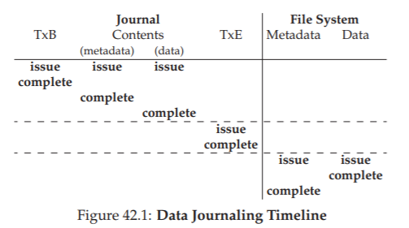
Hình 42.1: Data Journaling Timeline
Một timeline tương tự được thể hiện cho giao thức metadata journaling. Lưu ý rằng thao tác ghi dữ liệu có thể được phát lệnh đồng thời với các thao tác ghi transaction begin và nội dung của journal; tuy nhiên, nó phải được phát lệnh và hoàn tất trước khi transaction end được phát lệnh.
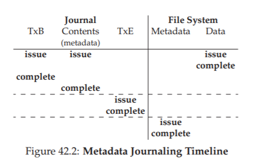
Hình 42.2: Metadata Journaling Timeline
Cuối cùng, lưu ý rằng thời điểm hoàn tất được đánh dấu cho mỗi thao tác ghi trong các timeline là tùy ý. Trong một hệ thống thực tế, thời gian hoàn tất được quyết định bởi I/O subsystem (hệ thống con I/O), vốn có thể sắp xếp lại thứ tự ghi để cải thiện hiệu năng. Các đảm bảo duy nhất về thứ tự mà chúng ta có là những yêu cầu bắt buộc để đảm bảo tính đúng đắn của giao thức (và được thể hiện qua các đường gạch ngang trong hình).
42.4 Giải pháp số 3: Các cách tiếp cận khác (Other Approaches)
Cho đến nay, chúng ta đã mô tả hai lựa chọn để duy trì tính nhất quán của file system metadata (siêu dữ liệu của hệ thống tệp): một cách tiếp cận “lười biếng” dựa trên fsck, và một cách tiếp cận chủ động hơn được gọi là journaling (ghi nhật ký). Tuy nhiên, đây không phải là hai cách duy nhất.
Một cách tiếp cận khác, được gọi là Soft Updates [GP94], được giới thiệu bởi Ganger và Patt. Cách tiếp cận này sắp xếp cẩn thận thứ tự của tất cả các thao tác ghi xuống file system để đảm bảo rằng các cấu trúc trên đĩa không bao giờ rơi vào trạng thái không nhất quán. Ví dụ, bằng cách ghi data block (khối dữ liệu) được tham chiếu xuống đĩa trước inode (chỉ mục nút) trỏ tới nó, chúng ta có thể đảm bảo rằng inode sẽ không bao giờ trỏ tới dữ liệu rác; các quy tắc tương tự có thể được xây dựng cho tất cả các cấu trúc của file system. Tuy nhiên, việc triển khai Soft Updates là một thách thức; trong khi lớp journaling được mô tả ở trên có thể được triển khai với kiến thức tương đối ít về cấu trúc cụ thể của file system, thì Soft Updates đòi hỏi hiểu biết chi tiết về từng cấu trúc dữ liệu của file system, và do đó làm tăng đáng kể độ phức tạp của hệ thống.
Một cách tiếp cận khác được gọi là copy-on-write (COW), và được sử dụng trong một số file system phổ biến, bao gồm ZFS của Sun [B07]. Kỹ thuật này không bao giờ ghi đè trực tiếp lên các file hoặc thư mục hiện có; thay vào đó, nó đặt các bản cập nhật mới vào các vị trí chưa được sử dụng trên đĩa. Sau khi một số bản cập nhật được hoàn tất, file system COW sẽ “lật” (flip) cấu trúc gốc của file system để bao gồm các con trỏ tới các cấu trúc mới được cập nhật. Cách làm này giúp việc duy trì tính nhất quán của file system trở nên đơn giản. Chúng ta sẽ tìm hiểu kỹ hơn về kỹ thuật này khi thảo luận về log-structured file system (LFS) trong một chương sau; LFS là một ví dụ sớm của COW.
Một cách tiếp cận khác là kỹ thuật mà chúng tôi vừa phát triển tại Wisconsin. Trong kỹ thuật này, được gọi là backpointer-based consistency (BBC – tính nhất quán dựa trên con trỏ ngược), không áp đặt thứ tự giữa các thao tác ghi. Để đạt được tính nhất quán, một back pointer (con trỏ ngược) bổ sung được thêm vào mỗi block trong hệ thống; ví dụ, mỗi data block sẽ chứa tham chiếu tới inode mà nó thuộc về. Khi truy cập một file, file system có thể xác định file đó có nhất quán hay không bằng cách kiểm tra xem forward pointer (con trỏ xuôi – ví dụ: địa chỉ trong inode hoặc direct block) có trỏ tới một block mà block đó lại tham chiếu ngược về nó hay không. Nếu có, điều đó có nghĩa là mọi thứ đã được ghi an toàn xuống đĩa và file là nhất quán; nếu không, file là không nhất quán và một lỗi sẽ được trả về. Bằng cách thêm back pointer vào file system, có thể đạt được một dạng lazy crash consistency (tính nhất quán khi xảy ra sự cố theo kiểu lười biếng) mới [C+12].
Cuối cùng, chúng tôi cũng đã nghiên cứu các kỹ thuật nhằm giảm số lần giao thức journaling phải chờ thao tác ghi đĩa hoàn tất. Kỹ thuật này, được gọi là optimistic crash consistency [C+13], phát lệnh càng nhiều thao tác ghi xuống đĩa càng tốt bằng cách sử dụng một dạng tổng quát của transaction checksum [P+05], và bao gồm một số kỹ thuật khác để phát hiện sự không nhất quán nếu chúng xảy ra. Đối với một số workload, các kỹ thuật “lạc quan” này có thể cải thiện hiệu năng lên tới một bậc độ lớn (order of magnitude). Tuy nhiên, để hoạt động thực sự hiệu quả, cần một giao diện đĩa hơi khác so với hiện tại [C+13].
42.5 Tóm tắt (Summary)
Chúng ta đã giới thiệu vấn đề crash consistency (tính nhất quán khi xảy ra sự cố), và thảo luận nhiều cách tiếp cận để giải quyết vấn đề này. Cách tiếp cận cũ hơn là xây dựng một file system checker (trình kiểm tra hệ thống tệp) hoạt động được, nhưng có khả năng quá chậm để khôi phục trên các hệ thống hiện đại. Do đó, nhiều file system hiện nay sử dụng journaling. Journaling giảm thời gian khôi phục từ O(kích-thước-ổ-đĩa) xuống O(kích-thước-log), nhờ đó tăng tốc đáng kể quá trình khôi phục sau crash và khởi động lại. Vì lý do này, nhiều file system hiện đại sử dụng journaling.
Chúng ta cũng đã thấy rằng journaling có thể tồn tại ở nhiều dạng khác nhau; dạng phổ biến nhất là ordered metadata journaling (ghi nhật ký siêu dữ liệu có thứ tự), giúp giảm lượng lưu lượng ghi vào journal trong khi vẫn duy trì các đảm bảo hợp lý về tính nhất quán cho cả metadata của file system và dữ liệu người dùng. Cuối cùng, việc cung cấp các đảm bảo mạnh mẽ đối với dữ liệu người dùng có lẽ là một trong những điều quan trọng nhất; thật thú vị là, như các nghiên cứu gần đây đã chỉ ra, lĩnh vực này vẫn đang trong quá trình hoàn thiện [P+14].
43. Hệ thống tệp cấu trúc nhật ký (Log-structured File Systems)
Vào đầu những năm 1990, một nhóm nghiên cứu tại Berkeley do Giáo sư John Ousterhout và nghiên cứu sinh Mendel Rosenblum dẫn dắt đã phát triển một hệ thống tệp mới được gọi là log-structured file system (LFS) [RO91]. Động lực để họ thực hiện điều này dựa trên các quan sát sau:
- Bộ nhớ hệ thống ngày càng lớn: Khi dung lượng bộ nhớ tăng, nhiều dữ liệu hơn có thể được lưu trong bộ nhớ đệm (cache). Khi nhiều dữ liệu được cache hơn, lưu lượng truy cập đĩa ngày càng bao gồm nhiều thao tác ghi, vì các thao tác đọc được phục vụ trực tiếp từ cache. Do đó, hiệu năng của file system phần lớn được quyết định bởi hiệu năng ghi.
- Tồn tại khoảng cách lớn giữa hiệu năng I/O ngẫu nhiên và I/O tuần tự: Băng thông truyền dữ liệu của ổ cứng đã tăng đáng kể qua các năm [P98]; khi nhiều bit hơn được ghi trên bề mặt đĩa, băng thông khi truy cập các bit đó cũng tăng. Tuy nhiên, chi phí tìm kiếm (seek) và độ trễ quay (rotational delay) lại giảm chậm; việc chế tạo các động cơ nhỏ, giá rẻ để quay đĩa nhanh hơn hoặc di chuyển tay đọc nhanh hơn là một thách thức. Vì vậy, nếu có thể sử dụng đĩa theo cách tuần tự, bạn sẽ đạt được lợi thế hiệu năng đáng kể so với các phương pháp gây ra nhiều thao tác seek và quay.
- Các file system hiện tại hoạt động kém trên nhiều loại workload phổ biến: Ví dụ, FFS [MJLF84] sẽ thực hiện một số lượng lớn thao tác ghi chỉ để tạo một file mới có kích thước một block: một lần ghi cho inode mới, một lần để cập nhật inode bitmap, một lần cho data block của thư mục chứa file, một lần cho inode của thư mục để cập nhật nó, một lần cho data block mới của file, và một lần cho data bitmap để đánh dấu block dữ liệu đã được cấp phát. Mặc dù FFS đặt tất cả các block này trong cùng một block group, nó vẫn phải thực hiện nhiều thao tác seek ngắn và các lần trễ quay tiếp theo, khiến hiệu năng thấp hơn nhiều so với băng thông tuần tự tối đa.
- File system không nhận thức về RAID: Ví dụ, cả RAID-4 và RAID-5 đều gặp vấn đề small-write (ghi nhỏ), trong đó một thao tác ghi logic vào một block duy nhất sẽ gây ra 4 thao tác I/O vật lý. Các file system hiện tại không cố gắng tránh hành vi ghi tệ nhất này trên RAID.
TIP: CHI TIẾT LÀ QUAN TRỌNG
Tất cả các hệ thống thú vị đều bao gồm một vài ý tưởng tổng quát và nhiều chi tiết. Đôi khi, khi học về các hệ thống này, bạn có thể nghĩ: “Ồ, tôi hiểu ý tưởng chung rồi; phần còn lại chỉ là chi tiết,” và từ đó chỉ học một nửa cách hệ thống thực sự hoạt động. Đừng làm vậy! Nhiều khi, chính các chi tiết mới là yếu tố then chốt. Như chúng ta sẽ thấy với LFS, ý tưởng tổng thể rất dễ hiểu, nhưng để xây dựng một hệ thống hoạt động thực sự, bạn phải suy nghĩ kỹ về tất cả các trường hợp phức tạp.
Một file system lý tưởng sẽ tập trung vào hiệu năng ghi, và cố gắng tận dụng băng thông tuần tự của đĩa. Hơn nữa, nó sẽ hoạt động tốt với các workload phổ biến không chỉ ghi dữ liệu mà còn thường xuyên cập nhật các cấu trúc metadata trên đĩa. Cuối cùng, nó sẽ hoạt động tốt cả trên RAID lẫn ổ đĩa đơn.
Loại file system mới mà Rosenblum và Ousterhout giới thiệu được gọi là LFS (Log-structured File System). Khi ghi xuống đĩa, LFS trước tiên sẽ buffer (đệm) tất cả các bản cập nhật (bao gồm cả metadata!) trong một segment (phân đoạn) nằm trong bộ nhớ; khi segment đầy, nó sẽ được ghi xuống đĩa trong một lần truyền tuần tự dài tới một vùng chưa sử dụng của đĩa. LFS không bao giờ ghi đè dữ liệu hiện có, mà luôn ghi các segment vào các vị trí trống. Vì các segment có kích thước lớn, đĩa (hoặc RAID) được sử dụng hiệu quả, và hiệu năng của file system đạt gần mức tối đa.
THE CRUX: LÀM THẾ NÀO ĐỂ BIẾN MỌI GHI THÀNH GHI TUẦN TỰ?
Làm thế nào một file system có thể biến tất cả các thao tác ghi thành ghi tuần tự? Đối với thao tác đọc, điều này là không thể, vì block cần đọc có thể nằm ở bất kỳ đâu trên đĩa. Tuy nhiên, đối với thao tác ghi, file system luôn có quyền lựa chọn, và chính lựa chọn này là điều chúng ta muốn khai thác.
43.1 Ghi tuần tự xuống đĩa (Writing To Disk Sequentially)
Như vậy, chúng ta có thách thức đầu tiên: làm thế nào để biến tất cả các bản cập nhật trạng thái của file system (hệ thống tệp) thành một chuỗi các thao tác ghi tuần tự xuống đĩa? Để hiểu rõ hơn, hãy sử dụng một ví dụ đơn giản. Giả sử chúng ta đang ghi một data block (khối dữ liệu) D vào một file. Việc ghi data block này xuống đĩa có thể dẫn đến bố cục trên đĩa như sau, với D được ghi tại địa chỉ đĩa A0:
...
Tuy nhiên, khi người dùng ghi một data block, không chỉ dữ liệu được ghi xuống đĩa; còn có các metadata (siêu dữ liệu) khác cần được cập nhật. Trong trường hợp này, giả sử chúng ta cũng ghi inode (chỉ mục nút) I của file xuống đĩa, và inode này trỏ tới data block D. Khi được ghi xuống đĩa, data block và inode sẽ trông như sau (lưu ý rằng inode có vẻ lớn bằng data block, điều này thường không đúng; trong hầu hết các hệ thống, data block có kích thước 4 KB, trong khi inode nhỏ hơn nhiều, khoảng 128 byte):
...
Ý tưởng cơ bản này — đơn giản là ghi tất cả các bản cập nhật (như data block, inode, v.v.) xuống đĩa theo thứ tự tuần tự — chính là cốt lõi của LFS (Log-structured File System). Nếu bạn hiểu điều này, bạn đã nắm được ý tưởng chính. Nhưng như với mọi hệ thống phức tạp, “quỷ dữ nằm trong chi tiết” — các chi tiết mới là phần khó.
43.2 Ghi tuần tự và hiệu quả (Writing Sequentially And Effectively)
Thật không may, chỉ ghi tuần tự xuống đĩa không đủ để đảm bảo hiệu năng ghi cao. Ví dụ, giả sử chúng ta ghi một block duy nhất vào địa chỉ A tại thời điểm T. Sau đó, chúng ta chờ một lúc, rồi ghi xuống đĩa tại địa chỉ A + 1 (địa chỉ block tiếp theo theo thứ tự tuần tự), nhưng ở thời điểm T + δ. Trong khoảng thời gian giữa lần ghi thứ nhất và thứ hai, đĩa đã quay; khi bạn phát lệnh ghi thứ hai, nó sẽ phải chờ gần như cả một vòng quay trước khi được ghi (cụ thể, nếu thời gian quay là $T_{rotation}$, thì đĩa sẽ phải chờ $T_{rotation} - δ$ trước khi có thể ghi block thứ hai xuống bề mặt đĩa).
Do đó, bạn có thể thấy rằng chỉ ghi xuống đĩa theo thứ tự tuần tự là chưa đủ để đạt hiệu năng tối đa; thay vào đó, bạn phải phát lệnh ghi một số lượng lớn các block liên tiếp (hoặc một thao tác ghi lớn duy nhất) để đạt hiệu năng ghi tốt.
Để đạt được điều này, LFS sử dụng một kỹ thuật lâu đời được gọi là write buffering (đệm ghi)^[1]. Trước khi ghi xuống đĩa, LFS lưu trữ các bản cập nhật trong bộ nhớ; khi đã nhận đủ số lượng bản cập nhật, nó sẽ ghi tất cả xuống đĩa cùng một lúc, đảm bảo sử dụng đĩa một cách hiệu quả.
Thực tế rất khó tìm một tài liệu tham khảo “chuẩn” cho ý tưởng này, vì nó có thể đã được phát minh bởi nhiều người từ rất sớm trong lịch sử ngành máy tính. Để tìm hiểu lợi ích của write buffering, xem Solworth và Orji [SO90]; để tìm hiểu các tác hại tiềm ẩn, xem Mogul [M94].
Phần dữ liệu lớn mà LFS ghi trong một lần được gọi là segment (phân đoạn). Mặc dù thuật ngữ này bị lạm dụng trong nhiều lĩnh vực của hệ thống máy tính, ở đây nó chỉ đơn giản là một khối dữ liệu lớn mà LFS dùng để gom nhóm các thao tác ghi. Do đó, khi ghi xuống đĩa, LFS sẽ buffer các bản cập nhật trong một segment nằm trong bộ nhớ, rồi ghi toàn bộ segment này xuống đĩa trong một lần. Miễn là segment đủ lớn, các thao tác ghi này sẽ đạt hiệu quả cao.
Dưới đây là một ví dụ, trong đó LFS buffer hai nhóm bản cập nhật vào một segment nhỏ; các segment thực tế thường lớn hơn (vài MB). Bản cập nhật đầu tiên gồm bốn thao tác ghi block cho file j; bản cập nhật thứ hai là thêm một block vào file k. LFS sau đó commit toàn bộ segment gồm bảy block này xuống đĩa trong một lần. Bố cục trên đĩa của các block này sau khi ghi như sau:
...
43.3 Buffer bao nhiêu là đủ? (How Much To Buffer?)
Điều này dẫn đến câu hỏi: LFS (Log-structured File System) nên buffer (đệm) bao nhiêu bản cập nhật trước khi ghi xuống đĩa? Câu trả lời, tất nhiên, phụ thuộc vào chính ổ đĩa, cụ thể là mức positioning overhead (chi phí định vị – bao gồm thời gian quay và seek) so với transfer rate (tốc độ truyền dữ liệu); hãy xem lại chương về FFS để tham khảo một phân tích tương tự.
Ví dụ, giả sử thời gian định vị (tức là chi phí quay và seek) trước mỗi lần ghi mất khoảng ( T_{position} ) giây. Giả sử thêm rằng tốc độ truyền dữ liệu cực đại của đĩa là ( R_{peak} ) MB/s. Vậy LFS nên buffer bao nhiêu dữ liệu trước khi ghi khi chạy trên loại đĩa này?
Cách suy nghĩ ở đây là: mỗi lần ghi, bạn phải trả một chi phí cố định cho việc định vị. Vậy bạn cần ghi bao nhiêu dữ liệu để amortize (phân bổ) chi phí đó? Rõ ràng, càng ghi nhiều thì càng tốt, và bạn sẽ càng tiến gần đến việc đạt được băng thông cực đại.
Để có câu trả lời cụ thể, giả sử chúng ta ghi ra ( D ) MB dữ liệu. Thời gian để ghi khối dữ liệu này (( T_{write} )) sẽ bằng thời gian định vị ( T_{position} ) cộng với thời gian truyền ( D ) MB dữ liệu (( \frac{D}{R_{peak}} )), tức là:
[ T_{write} = T_{position} + \frac{D}{R_{peak}} ]
Do đó, tốc độ ghi hiệu dụng (( R_{effective} )) — chính là lượng dữ liệu ghi được chia cho tổng thời gian ghi — sẽ là:
[ R_{effective} = \frac{D}{T_{position} + \frac{D}{R_{peak}}} ]
Điều chúng ta quan tâm là làm cho ( R_{effective} ) tiến gần tới ( R_{peak} ). Cụ thể, chúng ta muốn tốc độ hiệu dụng bằng một phần ( F ) của tốc độ cực đại, với ( 0 < F < 1 ) (một giá trị F điển hình có thể là 0.9, tức 90% tốc độ cực đại). Về mặt toán học, điều này có nghĩa là:
[ R_{effective} = F \times R_{peak} ]
Tại đây, chúng ta có thể giải ra ( D ):
[ D = \frac{F}{1 - F} \times R_{peak} \times T_{position} ]
Hãy làm một ví dụ: với một ổ đĩa có thời gian định vị là 10 mili-giây và tốc độ truyền cực đại là 100 MB/s; giả sử chúng ta muốn băng thông hiệu dụng đạt 90% tốc độ cực đại (F = 0.9). Khi đó:
[ D = \frac{0.9}{0.1} \times 100 \ \text{MB/s} \times 0.01 \ \text{giây} = 9 \ \text{MB} ]
Hãy thử một vài giá trị khác để xem cần buffer bao nhiêu để tiến gần tới băng thông cực đại. Cần bao nhiêu để đạt 95% tốc độ cực đại? 99%?
43.4 Vấn đề: Tìm inode (Problem: Finding Inodes)
Để hiểu cách tìm một inode trong LFS, trước hết hãy xem lại cách tìm inode trong một file system UNIX điển hình. Trong một file system thông thường như FFS, hoặc thậm chí là hệ thống tệp UNIX cũ, việc tìm inode rất dễ, vì chúng được tổ chức thành một mảng và đặt trên đĩa ở các vị trí cố định.
Ví dụ, hệ thống tệp UNIX cũ lưu tất cả inode ở một vùng cố định trên đĩa. Do đó, khi biết số inode (inode number) và địa chỉ bắt đầu, để tìm một inode cụ thể, bạn chỉ cần tính địa chỉ đĩa chính xác của nó bằng cách nhân số inode với kích thước của một inode, rồi cộng với địa chỉ bắt đầu của mảng inode trên đĩa; việc array-based indexing (đánh chỉ số dựa trên mảng) này, khi biết số inode, là nhanh và đơn giản.
Việc tìm inode khi biết số inode trong FFS chỉ phức tạp hơn một chút, vì FFS chia bảng inode thành các khối (chunk) và đặt một nhóm inode trong mỗi cylinder group. Do đó, bạn cần biết kích thước của mỗi khối inode và địa chỉ bắt đầu của từng khối. Sau đó, các phép tính tương tự và cũng dễ dàng.
Trong LFS, mọi thứ khó khăn hơn nhiều. Tại sao? Bởi vì chúng ta đã “rải” các inode khắp đĩa! Tệ hơn nữa, chúng ta không bao giờ ghi đè tại chỗ (overwrite in place), và do đó phiên bản mới nhất của một inode (tức là phiên bản mà chúng ta cần) liên tục thay đổi vị trí.
43.5 Giải pháp thông qua gián tiếp: Inode Map (Bản đồ inode)
Để khắc phục vấn đề này, các nhà thiết kế của LFS (Log-structured File System) đã giới thiệu một lớp indirection (gián tiếp) giữa inode number (số inode) và chính inode, thông qua một cấu trúc dữ liệu gọi là inode map (imap – bản đồ inode). Imap là một cấu trúc nhận vào số inode và trả về địa chỉ đĩa (disk address) của phiên bản inode mới nhất.
TIP: SỬ DỤNG MỘT LỚP GIÁN TIẾP
Người ta thường nói rằng giải pháp cho mọi vấn đề trong Khoa học Máy tính chỉ đơn giản là thêm một lớp gián tiếp. Điều này rõ ràng không hoàn toàn đúng; nó chỉ là giải pháp cho hầu hết các vấn đề (vâng, nhận xét này vẫn hơi quá, nhưng bạn hiểu ý rồi đấy). Bạn hoàn toàn có thể coi mọi cơ chế ảo hóa (virtualization) mà chúng ta đã học, ví dụ như virtual memory (bộ nhớ ảo) hay khái niệm file, như là một lớp gián tiếp. Và chắc chắn inode map trong LFS là một dạng ảo hóa của inode number. Hy vọng bạn có thể thấy sức mạnh to lớn của gián tiếp trong các ví dụ này, cho phép chúng ta tự do di chuyển các cấu trúc (như page trong ví dụ VM, hoặc inode trong LFS) mà không cần thay đổi mọi tham chiếu tới chúng. Tất nhiên, gián tiếp cũng có mặt trái: chi phí bổ sung (overhead). Vì vậy, lần tới khi bạn gặp một vấn đề, hãy thử giải quyết nó bằng gián tiếp, nhưng nhớ cân nhắc kỹ chi phí của việc này. Như Wheeler đã nổi tiếng nói: “Mọi vấn đề trong khoa học máy tính đều có thể được giải quyết bằng một lớp gián tiếp khác, ngoại trừ vấn đề có quá nhiều lớp gián tiếp.”
Vì vậy, bạn có thể hình dung imap thường được triển khai như một mảng đơn giản, với 4 byte (một con trỏ đĩa) cho mỗi phần tử. Mỗi khi một inode được ghi xuống đĩa, imap sẽ được cập nhật với vị trí mới của nó.
Tuy nhiên, imap cần được lưu trữ persistent (bền vững – tức là ghi xuống đĩa); làm như vậy cho phép LFS theo dõi vị trí của các inode ngay cả khi hệ thống bị crash, và do đó hoạt động như mong muốn. Vậy câu hỏi đặt ra: imap nên được đặt ở đâu trên đĩa?
Tất nhiên, nó có thể nằm ở một vị trí cố định trên đĩa. Nhưng thật không may, vì nó được cập nhật thường xuyên, điều này sẽ yêu cầu mỗi lần cập nhật cấu trúc file phải kèm theo một lần ghi imap, và do đó hiệu năng sẽ giảm (tức là sẽ có nhiều thao tác disk seek hơn, giữa mỗi lần cập nhật và vị trí cố định của imap).
Thay vào đó, LFS đặt các chunk (mảnh) của inode map ngay bên cạnh nơi nó đang ghi tất cả thông tin mới khác. Do đó, khi append (nối thêm) một data block vào file k, LFS thực tế sẽ ghi data block mới, inode của nó, và một phần của inode map cùng nhau xuống đĩa, như sau:
...
Trong hình minh họa này, phần của mảng imap được lưu trong block được đánh dấu “imap” cho LFS biết rằng inode k nằm ở địa chỉ đĩa A1; inode này, đến lượt nó, cho LFS biết rằng data block D của nó nằm ở địa chỉ A0.
43.6 Hoàn thiện giải pháp: Checkpoint Region (Vùng điểm kiểm)
Người đọc tinh ý (chính là bạn, đúng không?) có thể nhận ra một vấn đề ở đây: Làm thế nào để tìm inode map, khi các phần của nó cũng đã được rải khắp đĩa? Cuối cùng thì không có phép màu nào cả: file system phải có một vị trí cố định và đã biết trên đĩa để bắt đầu quá trình tìm kiếm file.
LFS có một vị trí cố định như vậy trên đĩa, được gọi là checkpoint region (CR – vùng điểm kiểm). Checkpoint region chứa các con trỏ (tức là địa chỉ) tới các phần mới nhất của inode map, và do đó có thể tìm thấy các phần của inode map bằng cách đọc CR trước. Lưu ý rằng checkpoint region chỉ được cập nhật định kỳ (ví dụ khoảng mỗi 30 giây), và do đó hiệu năng không bị ảnh hưởng đáng kể.
Như vậy, cấu trúc tổng thể của bố cục trên đĩa sẽ bao gồm:
- Checkpoint region (trỏ tới các phần mới nhất của inode map)
- Các phần của inode map (mỗi phần chứa địa chỉ của các inode)
- Các inode (trỏ tới file và thư mục) giống như trong các file system UNIX điển hình.
Dưới đây là một ví dụ về checkpoint region (lưu ý nó nằm ngay ở đầu đĩa, tại địa chỉ 0), cùng với một imap chunk, một inode, và một data block. Một file system thực tế tất nhiên sẽ có CR lớn hơn nhiều (thực tế là có hai CR, như chúng ta sẽ tìm hiểu sau), nhiều imap chunk, và tất nhiên là nhiều inode, data block, v.v.
...
43.7 Đọc một file từ đĩa: Tóm tắt (Reading A File From Disk: A Recap)
Để đảm bảo bạn hiểu cách LFS (Log-structured File System) hoạt động, chúng ta hãy cùng đi qua các bước cần thực hiện để đọc một file từ đĩa. Giả sử ban đầu chúng ta không có gì trong bộ nhớ. Cấu trúc dữ liệu đầu tiên trên đĩa mà chúng ta phải đọc là checkpoint region (vùng điểm kiểm). Checkpoint region chứa các con trỏ (tức là địa chỉ đĩa) tới toàn bộ inode map (imap – bản đồ inode), và do đó LFS sẽ đọc toàn bộ inode map này vào bộ nhớ và lưu trong cache.
Từ thời điểm này, khi được cung cấp inode number (số inode) của một file, LFS chỉ cần tra cứu ánh xạ từ inode number sang inode disk address (địa chỉ inode trên đĩa) trong imap, và đọc phiên bản inode mới nhất. Để đọc một block từ file, LFS sẽ tiến hành giống hệt như một file system UNIX điển hình, bằng cách sử dụng direct pointer (con trỏ trực tiếp), indirect pointer (con trỏ gián tiếp) hoặc doubly-indirect pointer (con trỏ gián tiếp kép) khi cần.
Trong trường hợp thông thường, LFS sẽ thực hiện số lượng thao tác I/O tương đương với một file system điển hình khi đọc file từ đĩa; toàn bộ imap đã được cache, và công việc bổ sung duy nhất mà LFS thực hiện trong quá trình đọc là tra cứu địa chỉ inode trong imap.
43.8 Còn thư mục thì sao? (What About Directories?)
Cho đến giờ, chúng ta đã đơn giản hóa phần thảo luận bằng cách chỉ xét đến inode và data block. Tuy nhiên, để truy cập một file trong file system (ví dụ /home/remzi/foo – một trong những tên file giả ưa thích của chúng tôi), một số directory (thư mục) cũng phải được truy cập. Vậy LFS lưu trữ dữ liệu thư mục như thế nào?
May mắn thay, cấu trúc thư mục về cơ bản giống hệt như trong các file system UNIX cổ điển, ở chỗ một thư mục chỉ là một tập hợp các ánh xạ (tên, inode number). Ví dụ, khi tạo một file trên đĩa, LFS phải ghi một inode mới, một số dữ liệu, cũng như dữ liệu thư mục và inode của thư mục tham chiếu đến file này. Hãy nhớ rằng LFS sẽ thực hiện việc này tuần tự trên đĩa (sau khi buffer các bản cập nhật trong một thời gian).
Do đó, việc tạo một file foo trong một thư mục sẽ dẫn đến các cấu trúc mới trên đĩa như sau:
...
Phần của inode map sẽ chứa thông tin về vị trí của cả file thư mục dir và file mới tạo f. Do đó, khi truy cập file foo (có inode number k), bạn sẽ:
- Tra cứu trong inode map (thường được cache trong bộ nhớ) để tìm vị trí của inode của thư mục
dir(A3). - Đọc inode của thư mục, từ đó lấy vị trí của dữ liệu thư mục (A2).
- Đọc data block này để nhận được ánh xạ (tên, inode number) của (
foo,k). - Tra cứu lại inode map để tìm vị trí của inode number
k(A1). - Cuối cùng, đọc data block mong muốn tại địa chỉ A0.
Có một vấn đề nghiêm trọng khác trong LFS mà inode map giải quyết, được gọi là recursive update problem (vấn đề cập nhật đệ quy) [Z+12]. Vấn đề này xuất hiện trong bất kỳ file system nào không bao giờ cập nhật tại chỗ (never updates in place) như LFS, mà thay vào đó di chuyển các bản cập nhật tới vị trí mới trên đĩa.
Cụ thể, bất cứ khi nào một inode được cập nhật, vị trí của nó trên đĩa sẽ thay đổi. Nếu không cẩn thận, điều này sẽ kéo theo việc phải cập nhật cả thư mục trỏ tới file đó, rồi lại phải thay đổi thư mục cha của thư mục đó, và cứ thế lan lên toàn bộ cây thư mục của file system.
LFS đã khéo léo tránh được vấn đề này nhờ inode map. Mặc dù vị trí của một inode có thể thay đổi, nhưng sự thay đổi này không bao giờ được phản ánh vào chính thư mục; thay vào đó, cấu trúc imap được cập nhật, trong khi thư mục vẫn giữ nguyên ánh xạ (tên, inode number). Nhờ cơ chế gián tiếp này, LFS tránh được vấn đề cập nhật đệ quy.
43.9 Một vấn đề mới: Thu gom rác (Garbage Collection)
Bạn có thể đã nhận thấy một vấn đề khác với LFS (Log-structured File System): nó liên tục ghi phiên bản mới nhất của một file (bao gồm cả inode và dữ liệu) vào các vị trí mới trên đĩa. Quá trình này, mặc dù giúp duy trì hiệu quả ghi, lại dẫn đến việc LFS để lại các phiên bản cũ của cấu trúc file rải rác khắp đĩa. Chúng ta (một cách không mấy trang trọng) gọi các phiên bản cũ này là garbage (rác).
Ví dụ, hãy tưởng tượng trường hợp chúng ta có một file hiện có được tham chiếu bởi inode number (số inode) k, trỏ tới một data block (khối dữ liệu) duy nhất D0. Giờ chúng ta cập nhật block đó, tạo ra cả một inode mới và một data block mới. Bố cục trên đĩa của LFS sau đó sẽ trông như sau (lưu ý chúng ta bỏ qua imap và các cấu trúc khác để đơn giản hóa; một chunk mới của imap cũng sẽ phải được ghi xuống đĩa để trỏ tới inode mới):
...
Trong sơ đồ, bạn có thể thấy cả inode và data block đều có hai phiên bản trên đĩa: một phiên bản cũ (bên trái) và một phiên bản hiện tại, tức là live (đang được sử dụng – bên phải). Chỉ với hành động (logic) cập nhật một data block, một số cấu trúc mới phải được LFS ghi bền vững xuống đĩa, để lại các phiên bản cũ của các block đó trên đĩa.
Một ví dụ khác: giả sử thay vì cập nhật, chúng ta append (nối thêm) một block vào file gốc k. Trong trường hợp này, một phiên bản inode mới được tạo ra, nhưng data block cũ vẫn được inode trỏ tới. Do đó, nó vẫn live và hoàn toàn là một phần của file system hiện tại:
...
Vậy chúng ta nên làm gì với các phiên bản cũ của inode, data block, và các cấu trúc khác? Một lựa chọn là giữ lại các phiên bản cũ này và cho phép người dùng khôi phục các phiên bản file trước đó (ví dụ, khi họ vô tình ghi đè hoặc xóa file, điều này có thể rất hữu ích); một file system như vậy được gọi là versioning file system vì nó lưu lại các phiên bản khác nhau của một file.
Tuy nhiên, LFS chỉ giữ lại phiên bản live mới nhất của một file; do đó (ở chế độ nền), LFS phải định kỳ tìm các phiên bản cũ không còn sử dụng của dữ liệu file, inode, và các cấu trúc khác, rồi clean (dọn dẹp) chúng; việc dọn dẹp này sẽ giải phóng các block trên đĩa để sử dụng cho các lần ghi tiếp theo. Lưu ý rằng quá trình cleaning là một dạng garbage collection (thu gom rác), một kỹ thuật xuất hiện trong các ngôn ngữ lập trình có khả năng tự động giải phóng bộ nhớ không còn được sử dụng.
Trước đây, chúng ta đã thảo luận về segment (phân đoạn) như một cơ chế quan trọng giúp LFS thực hiện các thao tác ghi lớn xuống đĩa. Hóa ra, segment cũng đóng vai trò then chốt trong việc cleaning hiệu quả. Hãy tưởng tượng điều gì sẽ xảy ra nếu LFS cleaner chỉ đơn giản đi qua và giải phóng từng data block, inode, v.v., riêng lẻ trong quá trình cleaning. Kết quả: một file system với một số lượng lỗ trống (free hole) xen kẽ giữa các vùng đã cấp phát trên đĩa. Hiệu năng ghi sẽ giảm đáng kể, vì LFS sẽ không thể tìm được một vùng liên tục đủ lớn để ghi tuần tự xuống đĩa với hiệu năng cao.
Thay vào đó, LFS cleaner hoạt động theo từng segment, nhờ đó giải phóng các vùng lớn cho các lần ghi tiếp theo. Quá trình cleaning cơ bản diễn ra như sau: định kỳ, LFS cleaner đọc một số segment cũ (đang được sử dụng một phần), xác định block nào live trong các segment này, sau đó ghi ra một tập hợp segment mới chỉ chứa các block live, giải phóng các segment cũ để ghi mới. Cụ thể, chúng ta kỳ vọng cleaner sẽ đọc vào M segment hiện có, nén (compact) nội dung của chúng thành N segment mới (với N < M), rồi ghi N segment này xuống đĩa ở các vị trí mới. M segment cũ sau đó được giải phóng và có thể được file system sử dụng cho các lần ghi tiếp theo.
Tuy nhiên, bây giờ chúng ta còn lại hai vấn đề:
- Cơ chế (mechanism): Làm thế nào để LFS biết block nào trong một segment là live, và block nào là dead?
- Chính sách (policy): Cleaner nên chạy thường xuyên như thế nào, và nên chọn segment nào để dọn?
43.10 Xác định trạng thái sống của block (Determining Block Liveness)
Chúng ta sẽ giải quyết vấn đề cơ chế trước. Với một data block D nằm trong một on-disk segment S, LFS phải có khả năng xác định liệu D có live hay không. Để làm điều này, LFS thêm một lượng nhỏ thông tin bổ sung vào mỗi segment để mô tả từng block. Cụ thể, LFS lưu kèm với mỗi data block D: inode number (số inode – cho biết block này thuộc file nào) và offset (chỉ số block trong file). Thông tin này được ghi trong một cấu trúc ở đầu segment, gọi là segment summary block.
Với thông tin này, việc xác định một block là live hay dead trở nên đơn giản. Với một block D nằm trên đĩa tại địa chỉ A, hãy tra trong segment summary block để tìm inode number N và offset T của nó. Tiếp theo, tra trong imap để tìm vị trí hiện tại của inode N và đọc inode này từ đĩa (nếu inode đã ở trong bộ nhớ thì càng tốt). Cuối cùng, sử dụng offset T, tra trong inode (hoặc một indirect block) để xem inode cho rằng block thứ T của file này nằm ở đâu trên đĩa. Nếu nó trỏ chính xác tới địa chỉ đĩa A, LFS có thể kết luận block D là live. Nếu nó trỏ tới một địa chỉ khác, LFS có thể kết luận D không còn được sử dụng (tức là dead) và biết rằng phiên bản này không còn cần thiết.
Dưới đây là phần tóm tắt dưới dạng pseudocode:
...
Hình dưới đây mô tả cơ chế, trong đó segment summary block (khối tóm tắt phân đoạn, ký hiệu SS) ghi lại rằng data block tại địa chỉ A0 thực chất là một phần của file k tại offset 0. Bằng cách kiểm tra imap của k, bạn có thể tìm thấy inode và thấy rằng nó thực sự trỏ tới vị trí đó.
...
Có một số cách rút gọn mà LFS sử dụng để làm cho quá trình xác định trạng thái sống (liveness) hiệu quả hơn. Ví dụ, khi một file bị truncate (cắt ngắn) hoặc bị xóa, LFS sẽ tăng version number (số phiên bản) của nó và ghi số phiên bản mới này vào imap. Bằng cách cũng ghi số phiên bản này vào segment trên đĩa, LFS có thể bỏ qua bước kiểm tra dài dòng đã mô tả ở trên chỉ bằng cách so sánh số phiên bản trên đĩa với số phiên bản trong imap, từ đó tránh được các thao tác đọc bổ sung.
43.11 Câu hỏi về chính sách: Block nào cần clean, và khi nào? (A Policy Question: Which Blocks To Clean, And When?)
Bên cạnh cơ chế đã mô tả ở trên, LFS phải bao gồm một tập hợp các policy (chính sách) để xác định cả khi nào cần clean và block nào đáng để clean. Việc xác định khi nào cần clean thì dễ hơn; có thể là định kỳ, trong thời gian hệ thống nhàn rỗi, hoặc khi bắt buộc vì đĩa đã đầy.
Việc xác định block nào cần clean thì khó hơn, và đã là chủ đề của nhiều bài báo nghiên cứu. Trong bài báo LFS gốc [RO91], các tác giả mô tả một phương pháp cố gắng phân tách hot segment và cold segment. Một hot segment là segment có nội dung thường xuyên bị ghi đè; do đó, với segment như vậy, chính sách tốt nhất là chờ lâu trước khi clean, vì càng ngày càng có nhiều block bị ghi đè (trong các segment mới) và do đó được giải phóng để sử dụng. Ngược lại, một cold segment có thể chỉ có một vài block chết nhưng phần còn lại của nội dung tương đối ổn định. Vì vậy, các tác giả kết luận rằng nên clean các cold segment sớm hơn và hot segment muộn hơn, và phát triển một heuristic (thuật toán kinh nghiệm) để thực hiện chính xác điều đó. Tuy nhiên, như hầu hết các chính sách khác, chính sách này không hoàn hảo; các phương pháp sau này đã chỉ ra cách làm tốt hơn [MR+97].
43.12 Khôi phục sau crash và Log (Crash Recovery And The Log)
Một vấn đề cuối cùng: điều gì xảy ra nếu hệ thống bị crash trong khi LFS đang ghi xuống đĩa? Như bạn có thể nhớ từ chương trước về journaling, crash trong quá trình cập nhật là một vấn đề khó đối với file system, và do đó LFS cũng phải xem xét.
Trong hoạt động bình thường, LFS buffer các thao tác ghi trong một segment, và sau đó (khi segment đầy hoặc khi một khoảng thời gian nhất định đã trôi qua) ghi segment đó xuống đĩa. LFS tổ chức các thao tác ghi này trong một log, tức là checkpoint region trỏ tới head và tail segment, và mỗi segment trỏ tới segment tiếp theo sẽ được ghi. LFS cũng định kỳ cập nhật checkpoint region. Crash rõ ràng có thể xảy ra trong một trong hai thao tác này (ghi một segment, ghi CR). Vậy LFS xử lý crash khi ghi các cấu trúc này như thế nào?
Hãy xét trường hợp thứ hai trước. Để đảm bảo việc cập nhật CR diễn ra atomically (nguyên tử), LFS thực tế giữ hai CR, một ở mỗi đầu của đĩa, và ghi luân phiên vào chúng. LFS cũng triển khai một giao thức cẩn thận khi cập nhật CR với các con trỏ mới nhất tới inode map và các thông tin khác; cụ thể, nó ghi ra một header (chứa timestamp), sau đó là phần thân của CR, và cuối cùng là một block cuối cùng (cũng chứa timestamp). Nếu hệ thống bị crash trong khi cập nhật CR, LFS có thể phát hiện điều này bằng cách thấy cặp timestamp không nhất quán. LFS sẽ luôn chọn sử dụng CR mới nhất có timestamp nhất quán, và do đó đảm bảo CR được cập nhật nhất quán.
Bây giờ xét trường hợp thứ nhất. Vì LFS ghi CR khoảng mỗi 30 giây, snapshot nhất quán cuối cùng của file system có thể đã khá cũ. Do đó, khi khởi động lại, LFS có thể dễ dàng khôi phục bằng cách chỉ cần đọc checkpoint region, các phần imap mà nó trỏ tới, và các file và thư mục tiếp theo; tuy nhiên, nhiều giây cập nhật cuối cùng sẽ bị mất.
Để cải thiện điều này, LFS cố gắng xây dựng lại nhiều segment đó thông qua một kỹ thuật được gọi là roll forward trong lĩnh vực cơ sở dữ liệu. Ý tưởng cơ bản là bắt đầu với checkpoint region cuối cùng, tìm điểm kết thúc của log (được bao gồm trong CR), và sau đó sử dụng nó để đọc qua các segment tiếp theo và xem có bản cập nhật hợp lệ nào trong đó không. Nếu có, LFS sẽ cập nhật file system tương ứng và do đó khôi phục được phần lớn dữ liệu và metadata đã ghi kể từ checkpoint cuối cùng. Xem luận án đoạt giải của Rosenblum để biết chi tiết [R92].
43.13 Tóm tắt (Summary)
LFS giới thiệu một cách tiếp cận mới để cập nhật đĩa. Thay vì ghi đè file tại chỗ, LFS luôn ghi vào một phần chưa sử dụng của đĩa, và sau đó thu hồi lại không gian cũ thông qua quá trình cleaning. Cách tiếp cận này, trong hệ thống cơ sở dữ liệu được gọi là shadow paging [L77] và trong lĩnh vực file system đôi khi được gọi là copy-on-write, cho phép ghi với hiệu năng rất cao, vì LFS có thể gom tất cả các bản cập nhật vào một segment trong bộ nhớ và sau đó ghi chúng ra cùng nhau theo thứ tự tuần tự.
TIP: BIẾN KHUYẾT ĐIỂM THÀNH ƯU ĐIỂM
Bất cứ khi nào hệ thống của bạn có một khiếm khuyết cơ bản, hãy xem liệu bạn có thể biến nó thành một tính năng hoặc điều gì đó hữu ích hay không. WAFL của NetApp đã làm điều này với nội dung file cũ; bằng cách cung cấp các phiên bản cũ, WAFL không còn phải lo lắng về việc cleaning quá thường xuyên (mặc dù nó vẫn xóa các phiên bản cũ, cuối cùng, ở chế độ nền), và do đó vừa cung cấp một tính năng thú vị vừa loại bỏ phần lớn vấn đề cleaning của LFS chỉ trong một bước ngoặt tuyệt vời. Liệu có ví dụ nào khác như vậy trong các hệ thống không? Chắc chắn là có, nhưng bạn sẽ phải tự nghĩ ra, vì chương này đã kết thúc với chữ “O” viết hoa. Over. Done. Kaput. Hết. Peace!
Các thao tác ghi lớn mà LFS tạo ra rất tốt cho hiệu năng trên nhiều loại thiết bị khác nhau. Trên ổ cứng, ghi lớn đảm bảo thời gian định vị được giảm thiểu; trên các RAID dựa trên parity như RAID-4 và RAID-5, chúng loại bỏ hoàn toàn vấn đề small-write. Các nghiên cứu gần đây thậm chí đã chỉ ra rằng các thao tác I/O lớn là cần thiết để đạt hiệu năng cao trên SSD dựa trên Flash [HK+17]; do đó, có thể khá bất ngờ, các file system kiểu LFS có thể là một lựa chọn tuyệt vời ngay cả cho các phương tiện lưu trữ mới này.
Nhược điểm của cách tiếp cận này là nó tạo ra garbage; các bản sao cũ của dữ liệu bị rải rác khắp đĩa, và nếu muốn thu hồi không gian này cho các lần sử dụng tiếp theo, ta phải định kỳ clean các segment cũ. Cleaning đã trở thành tâm điểm của nhiều tranh luận trong LFS, và lo ngại về chi phí cleaning [SS+95] có lẽ đã hạn chế tác động ban đầu của LFS trong lĩnh vực này. Tuy nhiên, một số file system thương mại hiện đại, bao gồm WAFL của NetApp [HLM94], ZFS của Sun [B07], và btrfs của Linux [R+13], và thậm chí cả các SSD hiện đại dựa trên Flash [AD14], áp dụng cách tiếp cận copy-on-write tương tự khi ghi xuống đĩa, và do đó di sản trí tuệ của LFS vẫn tiếp tục tồn tại trong các file system hiện đại này. Đặc biệt, WAFL đã vượt qua vấn đề cleaning bằng cách biến nó thành một tính năng; bằng cách cung cấp các phiên bản cũ của file system thông qua snapshot, người dùng có thể truy cập các file cũ khi họ lỡ tay xóa.
44. Ổ SSD dựa trên Flash (Flash-based SSDs)
Sau hàng thập kỷ ổ đĩa cứng (HDD) thống trị, một dạng thiết bị lưu trữ bền vững (persistent storage) mới đã nổi lên và ngày càng quan trọng trên thế giới. Được gọi chung là solid-state storage (lưu trữ thể rắn), các thiết bị này không có bộ phận cơ khí hay chuyển động như ổ cứng; thay vào đó, chúng được chế tạo hoàn toàn từ các transistor, tương tự như bộ nhớ và bộ xử lý. Tuy nhiên, khác với bộ nhớ truy cập ngẫu nhiên thông thường (ví dụ: DRAM), thiết bị lưu trữ thể rắn (hay còn gọi là SSD) vẫn giữ được thông tin ngay cả khi mất điện, và do đó là ứng viên lý tưởng để lưu trữ dữ liệu lâu dài.
Công nghệ mà chúng ta tập trung ở đây được gọi là flash (cụ thể hơn là NAND-based flash), được Fujio Masuoka phát minh vào những năm 1980 [M+14]. Flash, như chúng ta sẽ thấy, có một số đặc tính rất riêng. Ví dụ, để ghi vào một phần dữ liệu của nó (tức là một flash page), trước tiên bạn phải xóa một phần lớn hơn (tức là một flash block), và thao tác này khá tốn kém. Ngoài ra, việc ghi quá thường xuyên vào một page sẽ khiến nó bị mòn (wear out). Hai đặc tính này khiến việc xây dựng một SSD dựa trên flash trở thành một thách thức thú vị:
THE CRUX: LÀM THẾ NÀO ĐỂ XÂY DỰNG MỘT SSD DỰA TRÊN FLASH?
Làm thế nào để chúng ta xây dựng một SSD dựa trên flash? Làm thế nào để xử lý chi phí cao của thao tác xóa? Làm thế nào để chế tạo một thiết bị có tuổi thọ dài, khi việc ghi đè lặp lại sẽ làm thiết bị bị mòn? Liệu tiến bộ công nghệ có bao giờ dừng lại? Hay sẽ luôn khiến chúng ta kinh ngạc?
44.1 Lưu trữ một bit (Storing a Single Bit)
Chip flash được thiết kế để lưu trữ một hoặc nhiều bit trong một transistor; mức điện tích bị giữ trong transistor được ánh xạ thành giá trị nhị phân. Trong single-level cell (SLC) flash, chỉ một bit được lưu trong một transistor (tức là 1 hoặc 0); với multi-level cell (MLC) flash, hai bit được mã hóa thành các mức điện tích khác nhau, ví dụ: 00, 01, 10 và 11 được biểu diễn bằng mức điện tích thấp, hơi thấp, hơi cao và cao. Thậm chí còn có triple-level cell (TLC) flash, mã hóa 3 bit trên mỗi cell. Nhìn chung, chip SLC đạt hiệu năng cao hơn và giá thành đắt hơn.
TIP: CẨN THẬN VỚI THUẬT NGỮ
Bạn có thể nhận thấy rằng một số thuật ngữ chúng ta đã sử dụng nhiều lần trước đây (block, page) đang được dùng trong ngữ cảnh của flash, nhưng theo cách hơi khác so với trước. Các thuật ngữ mới không được tạo ra để làm khó bạn (mặc dù đôi khi có thể gây nhầm lẫn), mà xuất hiện vì không có một cơ quan trung ương nào quyết định thống nhất thuật ngữ. Một block đối với bạn có thể là một page đối với người khác, và ngược lại, tùy thuộc vào ngữ cảnh. Nhiệm vụ của bạn rất đơn giản: nắm rõ các thuật ngữ phù hợp trong từng lĩnh vực, và sử dụng chúng sao cho những người am hiểu trong ngành có thể hiểu bạn đang nói gì. Đây là một trong những trường hợp mà giải pháp duy nhất vừa đơn giản vừa đôi khi gây khó chịu: hãy dùng trí nhớ của bạn.
Tất nhiên, có rất nhiều chi tiết về cách lưu trữ ở mức bit này hoạt động, ở cấp độ vật lý thiết bị. Mặc dù nằm ngoài phạm vi của cuốn sách này, bạn có thể tự tìm hiểu thêm [J10].
44.2 Từ bit đến bank/plane (From Bits to Banks/Planes)
Như người Hy Lạp cổ đại từng nói, lưu trữ một bit (hoặc vài bit) thì chưa thể tạo thành một hệ thống lưu trữ. Do đó, chip flash được tổ chức thành các bank hoặc plane, mỗi cái bao gồm một số lượng lớn cell.
Một bank được truy cập theo hai đơn vị kích thước khác nhau: block (đôi khi gọi là erase block), thường có kích thước 128 KB hoặc 256 KB, và page, có kích thước vài KB (ví dụ: 4 KB). Bên trong mỗi bank có rất nhiều block; bên trong mỗi block lại có nhiều page. Khi nói về flash, bạn phải nhớ thuật ngữ mới này, vốn khác với block mà chúng ta đề cập trong ổ đĩa và RAID, và khác với page mà chúng ta nói đến trong virtual memory (bộ nhớ ảo).
Hình 44.1 cho thấy một ví dụ về flash plane với các block và page; trong ví dụ đơn giản này có ba block, mỗi block chứa bốn page. Chúng ta sẽ thấy bên dưới lý do tại sao cần phân biệt giữa block và page; hóa ra sự phân biệt này là rất quan trọng đối với các thao tác trên flash như đọc và ghi, và còn quan trọng hơn đối với hiệu năng tổng thể của thiết bị. Điều quan trọng (và kỳ lạ) nhất mà bạn sẽ học được là: để ghi vào một page trong một block, trước tiên bạn phải xóa toàn bộ block; chi tiết phức tạp này khiến việc xây dựng một SSD dựa trên flash trở thành một thách thức thú vị và đáng để nghiên cứu, và sẽ là nội dung của nửa sau chương này.
Hình 44.1: Một chip flash đơn giản: Các page bên trong block
44.3 Các thao tác cơ bản trên Flash (Basic Flash Operations)
Với cấu trúc tổ chức của flash như đã mô tả, có ba thao tác mức thấp (low-level operations) mà một chip flash hỗ trợ. Lệnh read được dùng để đọc một page từ flash; erase và program được sử dụng kết hợp để ghi dữ liệu. Chi tiết như sau:
-
Read (một page): Một client (thiết bị hoặc phần mềm sử dụng chip flash) có thể đọc bất kỳ page nào (ví dụ: 2KB hoặc 4KB) chỉ bằng cách gửi lệnh đọc và số hiệu page tương ứng tới thiết bị. Thao tác này thường rất nhanh, chỉ mất vài chục microsecond, bất kể vị trí trên thiết bị, và (gần như) không phụ thuộc vào vị trí của yêu cầu trước đó (khác hẳn với ổ đĩa từ). Khả năng truy cập nhanh đồng đều tới mọi vị trí có nghĩa là thiết bị này là một random access device (thiết bị truy cập ngẫu nhiên).
-
Erase (một block): Trước khi ghi vào một page trong flash, bản chất của thiết bị yêu cầu bạn phải xóa toàn bộ block chứa page đó. Lệnh erase, quan trọng là, sẽ xóa toàn bộ nội dung của block (bằng cách đặt mỗi bit về giá trị 1); do đó, bạn phải đảm bảo rằng mọi dữ liệu quan trọng trong block đã được sao chép sang nơi khác (ví dụ: bộ nhớ, hoặc một block flash khác) trước khi thực hiện lệnh erase. Lệnh erase khá tốn kém, mất vài millisecond để hoàn tất. Sau khi xóa xong, toàn bộ block được đặt lại trạng thái ban đầu và mỗi page trong đó sẵn sàng để được lập trình (program).
-
Program (một page): Sau khi một block đã được erase, lệnh program có thể được dùng để thay đổi một số bit 1 trong page thành bit 0, và ghi nội dung mong muốn của page vào flash. Việc program một page ít tốn kém hơn erase một block, nhưng tốn hơn đọc một page, thường mất khoảng vài trăm microsecond trên các chip flash hiện đại.
Một cách để hình dung về chip flash là: mỗi page có một trạng thái (state) gắn liền với nó. Các page bắt đầu ở trạng thái INVALID (không hợp lệ). Khi xóa block chứa page, bạn đặt trạng thái của page (và tất cả các page trong block đó) thành ERASED (đã xóa), điều này vừa đặt lại nội dung của mỗi page trong block, vừa (quan trọng) khiến chúng có thể được lập trình. Khi bạn program một page, trạng thái của nó chuyển sang VALID (hợp lệ), nghĩa là nội dung đã được thiết lập và có thể đọc. Các thao tác đọc không ảnh hưởng đến trạng thái này (mặc dù bạn chỉ nên đọc từ các page đã được program). Một khi một page đã được program, cách duy nhất để thay đổi nội dung của nó là xóa toàn bộ block chứa page đó.
Dưới đây là ví dụ về sự chuyển đổi trạng thái sau các thao tác erase và program khác nhau trong một block gồm 4 page:
...
Ví dụ chi tiết (A Detailed Example)
Bởi vì quá trình ghi (tức là erase và program) khá đặc biệt, hãy cùng đi qua một ví dụ chi tiết để đảm bảo bạn hiểu rõ. Trong ví dụ này, giả sử chúng ta có bốn page 8-bit, nằm trong một block gồm 4 page (cả hai kích thước này đều nhỏ hơn thực tế, nhưng hữu ích cho minh họa); mỗi page đang ở trạng thái VALID vì đã được program trước đó.
...
Bây giờ giả sử chúng ta muốn ghi vào page 0, điền vào đó nội dung mới. Để ghi vào bất kỳ page nào, chúng ta phải xóa toàn bộ block trước. Giả sử chúng ta thực hiện điều đó, để lại block ở trạng thái:
...
Tin tốt là: giờ chúng ta có thể program page 0, ví dụ với nội dung 00000011, ghi đè lên page 0 cũ (nội dung 00011000) như mong muốn. Sau khi thực hiện, block của chúng ta trông như sau:
...
Và đây là tin xấu: nội dung trước đó của các page 1, 2 và 3 đều đã mất! Do đó, trước khi ghi đè bất kỳ page nào trong một block, chúng ta phải di chuyển mọi dữ liệu quan trọng sang vị trí khác (ví dụ: bộ nhớ, hoặc một nơi khác trên flash). Bản chất của thao tác erase sẽ có ảnh hưởng mạnh mẽ đến cách chúng ta thiết kế các SSD dựa trên flash, như chúng ta sẽ tìm hiểu ngay sau đây.
Tóm tắt (Summary)
Tóm lại, việc đọc một page là đơn giản: chỉ cần đọc page đó. Các chip flash thực hiện thao tác này khá tốt và nhanh; xét về hiệu năng, chúng có tiềm năng vượt xa hiệu năng đọc ngẫu nhiên (random read) của các ổ đĩa từ hiện đại, vốn chậm do chi phí seek và quay cơ học.
Việc ghi một page thì phức tạp hơn; toàn bộ block phải được xóa trước (đảm bảo rằng mọi dữ liệu quan trọng đã được di chuyển sang vị trí khác), sau đó mới program (lập trình) page mong muốn. Điều này không chỉ tốn kém, mà việc lặp lại chu kỳ program/erase thường xuyên có thể dẫn đến vấn đề độ tin cậy lớn nhất của chip flash: wear out (hao mòn). Khi thiết kế một hệ thống lưu trữ sử dụng flash, hiệu năng và độ tin cậy của thao tác ghi là trọng tâm cần chú ý. Chúng ta sẽ sớm tìm hiểu cách các SSD hiện đại giải quyết những vấn đề này, mang lại hiệu năng và độ tin cậy cao bất chấp các giới hạn nói trên.
Hình 44.2: Đặc tính hiệu năng của flash thô (Raw Flash Performance Characteristics)
44.4 Hiệu năng và độ tin cậy của Flash (Flash Performance And Reliability)
Vì chúng ta quan tâm đến việc xây dựng một thiết bị lưu trữ từ các chip flash thô, nên việc hiểu các đặc tính hiệu năng cơ bản của chúng là cần thiết. Hình 44.2 trình bày tóm tắt một số số liệu được tìm thấy trên các nguồn báo chí phổ biến [V12]. Trong đó, tác giả đưa ra độ trễ (latency) của các thao tác cơ bản read, program, và erase trên các loại flash SLC, MLC và TLC, lần lượt lưu trữ 1, 2 và 3 bit thông tin trên mỗi cell.
Như ta có thể thấy từ bảng, độ trễ đọc (read latency) khá tốt, chỉ mất vài chục microsecond để hoàn tất. Độ trễ program cao hơn và biến thiên nhiều hơn: thấp nhất khoảng 200 microsecond đối với SLC, nhưng cao hơn khi lưu nhiều bit hơn trên mỗi cell; để đạt hiệu năng ghi tốt, bạn sẽ phải sử dụng nhiều chip flash song song. Cuối cùng, thao tác erase khá tốn kém, thường mất vài millisecond. Việc xử lý chi phí này là yếu tố trung tâm trong thiết kế lưu trữ flash hiện đại.
Bây giờ hãy xét đến độ tin cậy của chip flash. Khác với ổ đĩa cơ khí, vốn có thể hỏng vì nhiều nguyên nhân (bao gồm cả sự cố nghiêm trọng head crash, khi đầu đọc của ổ đĩa tiếp xúc trực tiếp với bề mặt ghi), chip flash được làm hoàn toàn từ silicon và do đó ít gặp vấn đề về độ tin cậy hơn. Mối quan tâm chính là wear out; khi một block flash bị erase và program, nó dần tích tụ một lượng điện tích dư. Theo thời gian, khi điện tích dư này tăng lên, việc phân biệt giữa bit 0 và bit 1 trở nên khó khăn hơn. Khi không thể phân biệt được nữa, block đó trở nên không sử dụng được.
Tuổi thọ điển hình của một block hiện chưa được biết rõ. Các nhà sản xuất đánh giá block dựa trên MLC có tuổi thọ khoảng 10.000 chu kỳ P/E (Program/Erase); tức là mỗi block có thể bị xóa và lập trình 10.000 lần trước khi hỏng. Chip SLC, vì chỉ lưu một bit trên mỗi transistor, được đánh giá có tuổi thọ dài hơn, thường khoảng 100.000 chu kỳ P/E. Tuy nhiên, các nghiên cứu gần đây cho thấy tuổi thọ thực tế có thể dài hơn nhiều so với dự đoán [BD10].
Một vấn đề độ tin cậy khác trong chip flash được gọi là disturbance (nhiễu). Khi truy cập một page cụ thể trong flash, có khả năng một số bit trong các page lân cận bị lật (bit flip); các bit flip này được gọi là read disturb hoặc program disturb, tùy thuộc vào việc page đang được đọc hay được lập trình.
TIP: TẦM QUAN TRỌNG CỦA KHẢ NĂNG TƯƠNG THÍCH NGƯỢC (BACKWARDS COMPATIBILITY)
Khả năng tương thích ngược luôn là một mối quan tâm trong các hệ thống phân lớp (layered systems). Bằng cách định nghĩa một giao diện ổn định giữa hai hệ thống, ta cho phép đổi mới ở mỗi phía của giao diện, đồng thời đảm bảo khả năng tương tác liên tục. Cách tiếp cận này đã rất thành công trong nhiều lĩnh vực: hệ điều hành (operating system) duy trì API tương đối ổn định cho ứng dụng, ổ đĩa cung cấp cùng một giao diện dựa trên block cho file system, và mỗi lớp trong ngăn xếp mạng IP (IP networking stack) cung cấp một giao diện cố định, không thay đổi cho lớp phía trên.
Không ngạc nhiên khi sự cứng nhắc này cũng có mặt trái: các giao diện được định nghĩa ở một thế hệ có thể không còn phù hợp ở thế hệ tiếp theo. Trong một số trường hợp, có thể hữu ích khi xem xét thiết kế lại toàn bộ hệ thống. Một ví dụ điển hình là file system ZFS của Sun [B07]; bằng cách xem xét lại cách file system và RAID tương tác, các nhà thiết kế ZFS đã hình dung (và hiện thực hóa) một hệ thống tích hợp hiệu quả hơn.
44.5 Từ Flash thô đến SSD dựa trên Flash (From Raw Flash to Flash-Based SSDs)
Với hiểu biết cơ bản về chip flash, chúng ta đối mặt với nhiệm vụ tiếp theo: làm thế nào để biến một tập hợp chip flash cơ bản thành một thiết bị lưu trữ giống như các thiết bị lưu trữ thông thường. Giao diện lưu trữ tiêu chuẩn là giao diện dựa trên block đơn giản, trong đó các block (sector) có kích thước 512 byte (hoặc lớn hơn) có thể được đọc hoặc ghi khi biết địa chỉ block. Nhiệm vụ của SSD dựa trên flash là cung cấp giao diện block tiêu chuẩn này trên nền các chip flash thô bên trong.
Bên trong, một SSD bao gồm một số chip flash (dùng cho lưu trữ bền vững – persistent storage). SSD cũng chứa một lượng bộ nhớ volatile (không bền vững, ví dụ: SRAM); loại bộ nhớ này hữu ích cho việc caching (lưu đệm) và buffering (đệm) dữ liệu, cũng như cho các bảng ánh xạ (mapping tables) mà chúng ta sẽ tìm hiểu bên dưới. Cuối cùng, SSD chứa control logic (mạch điều khiển) để điều phối hoạt động của thiết bị. Xem Agrawal và cộng sự [A+08] để biết chi tiết; Hình 44.3 minh họa sơ đồ khối logic đơn giản của một SSD dựa trên flash.
Hình 44.3: SSD dựa trên Flash – Sơ đồ logic
Một trong những chức năng thiết yếu của control logic là đáp ứng các yêu cầu đọc và ghi từ phía client, chuyển chúng thành các thao tác flash nội bộ khi cần. Flash Translation Layer (FTL – lớp dịch địa chỉ flash) cung cấp chính xác chức năng này. FTL nhận các yêu cầu đọc và ghi trên các logical block (khối logic – tạo thành giao diện thiết bị) và chuyển chúng thành các lệnh mức thấp read, erase, và program trên các physical block và physical page (tạo thành thiết bị flash vật lý thực tế). FTL phải thực hiện nhiệm vụ này với mục tiêu đạt hiệu năng cao và độ tin cậy cao.
Hiệu năng cao, như chúng ta sẽ thấy, có thể đạt được thông qua sự kết hợp của nhiều kỹ thuật. Một yếu tố then chốt là tận dụng nhiều chip flash song song; mặc dù chúng ta sẽ không bàn sâu về kỹ thuật này, nhưng có thể khẳng định rằng tất cả các SSD hiện đại đều sử dụng nhiều chip bên trong để đạt hiệu năng cao hơn. Một mục tiêu hiệu năng khác là giảm write amplification – được định nghĩa là tổng lưu lượng ghi (tính bằng byte) mà FTL gửi tới các chip flash chia cho tổng lưu lượng ghi (tính bằng byte) mà client gửi tới SSD. Như chúng ta sẽ thấy bên dưới, các cách tiếp cận FTL ngây thơ sẽ dẫn đến write amplification cao và hiệu năng thấp.
Độ tin cậy cao sẽ đạt được thông qua sự kết hợp của một số phương pháp khác nhau. Mối quan tâm chính, như đã thảo luận ở trên, là wear out (hao mòn). Nếu một block bị erase và program quá thường xuyên, nó sẽ trở nên không sử dụng được; do đó, FTL nên cố gắng phân tán các thao tác ghi đều trên các block của flash, đảm bảo rằng tất cả các block của thiết bị hao mòn gần như đồng thời; việc này được gọi là wear leveling và là một phần thiết yếu của bất kỳ FTL hiện đại nào.
Một mối quan tâm khác về độ tin cậy là program disturbance (nhiễu khi lập trình). Để giảm thiểu nhiễu này, FTL thường sẽ program các page trong một block đã erase theo thứ tự, từ page thấp đến page cao. Cách lập trình tuần tự này giúp giảm thiểu nhiễu và được sử dụng rộng rãi.
44.6 Tổ chức FTL: Một cách tiếp cận tệ (FTL Organization: A Bad Approach)
Cách tổ chức đơn giản nhất của một FTL (Flash Translation Layer – lớp dịch địa chỉ flash) là phương pháp mà chúng ta gọi là direct mapped (ánh xạ trực tiếp). Trong cách tiếp cận này, một thao tác đọc tới logical page N (trang logic N) sẽ được ánh xạ trực tiếp thành thao tác đọc physical page N (trang vật lý N). Một thao tác ghi tới logical page N thì phức tạp hơn; FTL trước tiên phải đọc toàn bộ block chứa page N; sau đó phải erase (xóa) block đó; cuối cùng, FTL program (lập trình) lại các page cũ cũng như page mới.
Như bạn có thể đoán, FTL kiểu direct-mapped có nhiều vấn đề, cả về hiệu năng lẫn độ tin cậy. Vấn đề hiệu năng xuất hiện ở mỗi lần ghi: thiết bị phải đọc toàn bộ block (tốn kém), xóa block (rất tốn kém), rồi program lại (tốn kém). Kết quả cuối cùng là write amplification (khuếch đại ghi) nghiêm trọng (tỷ lệ thuận với số lượng page trong một block) và do đó hiệu năng ghi rất tệ, thậm chí còn chậm hơn cả ổ cứng thông thường với các thao tác seek và quay cơ học.
Tệ hơn nữa là độ tin cậy của cách tiếp cận này. Nếu metadata của file system hoặc dữ liệu file của người dùng bị ghi đè nhiều lần, cùng một block sẽ bị erase và program lặp đi lặp lại, nhanh chóng làm nó bị mòn (wear out) và có thể gây mất dữ liệu. Cách tiếp cận direct-mapped đơn giản là trao quá nhiều quyền kiểm soát việc hao mòn cho workload (tải công việc) của client; nếu workload không phân bổ đều tải ghi trên các logical block, các physical block chứa dữ liệu được truy cập thường xuyên sẽ nhanh chóng bị mòn. Vì cả lý do độ tin cậy lẫn hiệu năng, một FTL kiểu direct-mapped là một ý tưởng tồi.
44.7 FTL kiểu Log-Structured (A Log-Structured FTL)
Vì những lý do trên, hầu hết các FTL ngày nay đều được thiết kế theo kiểu log-structured (cấu trúc nhật ký), một ý tưởng hữu ích cả trong thiết bị lưu trữ (như chúng ta sẽ thấy ngay sau đây) và trong các file system phía trên (ví dụ: log-structured file system). Khi ghi vào logical block N, thiết bị sẽ append (nối thêm) dữ liệu ghi vào vị trí trống tiếp theo trong block đang được ghi; chúng ta gọi kiểu ghi này là logging. Để cho phép đọc lại block N sau này, thiết bị duy trì một mapping table (bảng ánh xạ) trong bộ nhớ (và được lưu bền vững ở một dạng nào đó trên thiết bị); bảng này lưu địa chỉ vật lý của mỗi logical block trong hệ thống.
Hãy cùng đi qua một ví dụ để đảm bảo chúng ta hiểu cách tiếp cận log-based cơ bản hoạt động. Đối với client, thiết bị trông giống như một ổ đĩa thông thường, có thể đọc và ghi các sector 512 byte (hoặc nhóm sector). Để đơn giản, giả sử client đọc hoặc ghi các khối dữ liệu kích thước 4 KB. Giả sử thêm rằng SSD chứa một số lượng lớn các block kích thước 16 KB, mỗi block được chia thành bốn page 4 KB; các thông số này là không thực tế (block flash thường gồm nhiều page hơn) nhưng sẽ phục vụ tốt cho mục đích minh họa.
Giả sử client thực hiện chuỗi thao tác sau:
Write(100)với nội dung a1Write(101)với nội dung a2Write(2000)với nội dung b1Write(2001)với nội dung b2
Các logical block address (địa chỉ block logic, ví dụ: 100) được client của SSD (ví dụ: một file system) sử dụng để ghi nhớ vị trí lưu trữ thông tin. Bên trong, thiết bị phải chuyển đổi các thao tác ghi block này thành các thao tác erase và program được phần cứng flash hỗ trợ, và bằng cách nào đó ghi nhận, cho mỗi logical block address, physical page nào của SSD đang lưu dữ liệu của nó. Giả sử tất cả các block của SSD hiện đều INVALID (không hợp lệ) và phải được erase trước khi bất kỳ page nào có thể được program. Dưới đây là trạng thái ban đầu của SSD, với tất cả các page được đánh dấu INVALID (i):
...
Khi thao tác ghi đầu tiên được gửi tới SSD (tới logical block 100), FTL quyết định ghi nó vào physical block 0, block này chứa bốn physical page: 0, 1, 2 và 3. Vì block chưa được erase, chúng ta chưa thể ghi vào; thiết bị trước tiên phải gửi lệnh erase tới block 0. Thao tác này dẫn đến trạng thái sau:
...
Block 0 giờ đã sẵn sàng để được program. Hầu hết các SSD sẽ ghi các page theo thứ tự (tức là từ page thấp đến page cao), giúp giảm các vấn đề về độ tin cậy liên quan đến program disturbance (nhiễu khi lập trình). SSD sau đó sẽ ghi logical block 100 vào physical page 0:
...
Bây giờ bạn có thể thấy điều gì xảy ra khi client ghi vào SSD. SSD tìm một vị trí cho thao tác ghi, thường là chọn page trống tiếp theo; sau đó nó program page đó với nội dung của block, và ghi nhận ánh xạ logical-to-physical (từ logic sang vật lý) trong bảng ánh xạ. Các thao tác đọc sau đó chỉ cần sử dụng bảng này để dịch logical block address mà client đưa ra thành số physical page cần đọc dữ liệu.
Hãy tiếp tục xem xét các thao tác ghi còn lại trong chuỗi ví dụ: 101, 2000 và 2001. Sau khi ghi các block này, trạng thái của thiết bị là:
...
Cách tiếp cận log-based, theo bản chất của nó, cải thiện hiệu năng (erase chỉ cần thực hiện thỉnh thoảng, và tránh hoàn toàn thao tác read-modify-write tốn kém của phương pháp direct-mapped), đồng thời nâng cao đáng kể độ tin cậy. FTL giờ đây có thể phân bổ các thao tác ghi trên tất cả các page, thực hiện cái gọi là wear leveling và kéo dài tuổi thọ của thiết bị; chúng ta sẽ thảo luận thêm về wear leveling ở phần sau.
ASIDE: TÍNH BỀN VỮNG CỦA THÔNG TIN ÁNH XẠ FTL (FTL MAPPING INFORMATION PERSISTENCE)
Bạn có thể tự hỏi: điều gì xảy ra nếu thiết bị bị mất điện? Liệu bảng ánh xạ trong bộ nhớ (in-memory mapping table) có biến mất không? Rõ ràng, thông tin này không thể bị mất hoàn toàn, vì nếu vậy thiết bị sẽ không thể hoạt động như một thiết bị lưu trữ bền vững (persistent storage device). Một SSD phải có cơ chế để khôi phục thông tin ánh xạ.Cách đơn giản nhất là ghi kèm một số thông tin ánh xạ với mỗi page, trong vùng gọi là out-of-band (OOB) area. Khi thiết bị mất điện và được khởi động lại, nó phải tái tạo bảng ánh xạ bằng cách quét các vùng OOB và dựng lại bảng ánh xạ trong bộ nhớ. Cách tiếp cận cơ bản này có một số vấn đề; việc quét một SSD dung lượng lớn để tìm toàn bộ thông tin ánh xạ cần thiết là chậm. Để khắc phục hạn chế này, một số thiết bị cao cấp hơn sử dụng các kỹ thuật logging (ghi nhật ký) và checkpointing (tạo điểm kiểm) phức tạp hơn để tăng tốc quá trình khôi phục; bạn có thể tìm hiểu thêm về logging trong các chương nói về crash consistency và log-structured file system [AD14a].
Thật không may, cách tiếp cận log structuring cơ bản này có một số nhược điểm. Thứ nhất, việc ghi đè (overwrite) các logical block dẫn đến hiện tượng mà chúng ta gọi là garbage (rác), tức là các phiên bản dữ liệu cũ nằm rải rác trên ổ và chiếm dung lượng. Thiết bị phải định kỳ thực hiện garbage collection (GC) để tìm các block này và giải phóng không gian cho các lần ghi trong tương lai; việc garbage collection quá mức sẽ làm tăng write amplification và giảm hiệu năng. Thứ hai là chi phí cao của bảng ánh xạ trong bộ nhớ; thiết bị càng lớn thì bảng này càng cần nhiều bộ nhớ. Chúng ta sẽ lần lượt thảo luận từng vấn đề.
44.8 Garbage Collection
Chi phí đầu tiên của bất kỳ cách tiếp cận log-structured nào như thế này là việc tạo ra garbage, và do đó phải thực hiện garbage collection (tức là thu hồi các block chết – dead-block reclamation). Hãy tiếp tục sử dụng ví dụ trước để hiểu rõ hơn. Nhớ lại rằng các logical block 100, 101, 2000 và 2001 đã được ghi vào thiết bị.
Bây giờ, giả sử các block 100 và 101 được ghi lại, với nội dung c1 và c2. Các thao tác ghi này được ghi vào các page trống tiếp theo (trong trường hợp này là physical page 4 và 5), và bảng ánh xạ được cập nhật tương ứng. Lưu ý rằng thiết bị phải erase block 1 trước để có thể thực hiện thao tác program này:
...
Vấn đề bây giờ đã rõ: physical page 0 và 1, mặc dù được đánh dấu VALID, thực chất chứa garbage, tức là các phiên bản cũ của block 100 và 101. Do bản chất log-structured của thiết bị, các thao tác overwrite tạo ra các block rác, và thiết bị phải thu hồi chúng để cung cấp không gian trống cho các lần ghi mới.
Quá trình tìm các block rác (còn gọi là dead block) và thu hồi chúng để sử dụng trong tương lai được gọi là garbage collection, và đây là một thành phần quan trọng của bất kỳ SSD hiện đại nào. Quy trình cơ bản rất đơn giản: tìm một block chứa một hoặc nhiều page rác, đọc các page live (không phải rác) từ block đó, ghi các page live này vào log, và (cuối cùng) thu hồi toàn bộ block để sử dụng cho việc ghi.
Hãy minh họa bằng một ví dụ. Thiết bị quyết định thu hồi các page chết trong block 0 ở trên. Block 0 có hai page chết (page 0 và 1) và hai page live (page 2 và 3, lần lượt chứa block 2000 và 2001). Để làm điều này, thiết bị sẽ:
- Đọc dữ liệu live (page 2 và 3) từ block 0
- Ghi dữ liệu live vào cuối log
- Erase block 0 (giải phóng nó để sử dụng sau này)
Để garbage collector hoạt động, trong mỗi block phải có đủ thông tin để SSD xác định được mỗi page là live hay dead. Một cách tự nhiên để đạt được điều này là lưu, tại một vị trí nào đó trong mỗi block, thông tin về logical block nào được lưu trong mỗi page. Thiết bị sau đó có thể sử dụng bảng ánh xạ để xác định liệu mỗi page trong block có chứa dữ liệu live hay không.
Từ ví dụ trên (trước khi garbage collection diễn ra), block 0 chứa các logical block 100, 101, 2000, 2001. Bằng cách kiểm tra bảng ánh xạ (trước khi garbage collection, bảng này chứa 100→4, 101→5, 2000→2, 2001→3), thiết bị có thể dễ dàng xác định page nào trong block SSD chứa thông tin live. Ví dụ, page 2 và 3 rõ ràng vẫn được trỏ tới trong bảng ánh xạ; page 0 và 1 thì không, và do đó là ứng viên cho garbage collection.
Khi quá trình garbage collection này hoàn tất trong ví dụ của chúng ta, trạng thái của thiết bị sẽ là:
...
Như bạn có thể thấy, garbage collection (GC) có thể rất tốn kém, vì yêu cầu phải đọc và ghi lại dữ liệu live (dữ liệu còn sử dụng). Ứng viên lý tưởng để thu hồi là một block chỉ chứa toàn dead page (trang chết); trong trường hợp này, block có thể được erase (xóa) ngay lập tức và dùng cho dữ liệu mới, mà không cần thực hiện di chuyển dữ liệu tốn kém.
ASIDE: MỘT API LƯU TRỮ MỚI GỌI LÀ TRIM
Khi nghĩ về ổ cứng (hard drive), chúng ta thường chỉ nghĩ đến giao diện cơ bản nhất để đọc và ghi: read và write (thường cũng có một lệnh cache flush để đảm bảo dữ liệu ghi đã thực sự được lưu bền vững, nhưng đôi khi chúng ta bỏ qua để đơn giản hóa). Với log-structured SSD, và thực tế là bất kỳ thiết bị nào duy trì ánh xạ logical-to-physical block (từ block logic sang block vật lý) một cách linh hoạt và thay đổi, một giao diện mới trở nên hữu ích, được gọi là thao táctrim.Thao tác
trimnhận vào một địa chỉ (và có thể là một độ dài), và đơn giản là thông báo cho thiết bị rằng block (hoặc các block) được chỉ định bởi địa chỉ (và độ dài) đã bị xóa; thiết bị do đó không còn phải theo dõi bất kỳ thông tin nào về vùng địa chỉ này nữa. Đối với ổ cứng thông thường,trimkhông đặc biệt hữu ích, vì ổ đĩa có ánh xạ tĩnh từ địa chỉ block tới platter, track và sector cụ thể. Tuy nhiên, đối với log-structured SSD, việc biết rằng một block không còn cần thiết là rất hữu ích, vì SSD có thể xóa thông tin này khỏi FTL và sau đó thu hồi không gian vật lý trong quá trình garbage collection.Mặc dù đôi khi chúng ta nghĩ giao diện (interface) và hiện thực (implementation) là hai thực thể tách biệt, nhưng trong trường hợp này, chúng ta thấy rằng hiện thực đã định hình giao diện. Với các ánh xạ phức tạp, việc biết block nào không còn cần thiết sẽ giúp hiện thực hiệu quả hơn.
Để giảm chi phí GC, một số SSD overprovision (dự phòng dư) [A+08]; bằng cách thêm dung lượng flash bổ sung, việc dọn dẹp có thể được trì hoãn và thực hiện ở chế độ nền, có thể vào thời điểm thiết bị ít bận rộn hơn. Việc thêm dung lượng cũng làm tăng băng thông nội bộ (internal bandwidth), có thể được sử dụng cho việc dọn dẹp và do đó không làm giảm băng thông mà client cảm nhận. Nhiều ổ đĩa hiện đại overprovision theo cách này, đây là một yếu tố quan trọng để đạt hiệu năng tổng thể xuất sắc.
44.9 Kích thước bảng ánh xạ (Mapping Table Size)
Chi phí thứ hai của log-structuring là khả năng bảng ánh xạ trở nên cực kỳ lớn, với một mục (entry) cho mỗi page 4 KB của thiết bị. Ví dụ, với một SSD 1 TB, chỉ cần một entry 4 byte cho mỗi page 4 KB đã dẫn đến 1 GB bộ nhớ cần thiết chỉ để lưu các ánh xạ này! Do đó, sơ đồ FTL ở mức page (page-level FTL) là không khả thi.
Block-Based Mapping (Ánh xạ theo block)
Một cách tiếp cận để giảm chi phí ánh xạ là chỉ giữ một con trỏ cho mỗi block của thiết bị, thay vì cho mỗi page, từ đó giảm lượng thông tin ánh xạ theo tỷ lệ:
[ \frac{\text{block size}}{\text{page size}} ]
FTL ở mức block này tương tự như việc sử dụng kích thước page lớn hơn trong hệ thống virtual memory (bộ nhớ ảo); khi đó, bạn dùng ít bit hơn cho VPN (Virtual Page Number – số trang ảo) và có phần offset lớn hơn trong mỗi địa chỉ ảo.
Tuy nhiên, việc sử dụng block-based mapping bên trong một log-based FTL lại không hoạt động tốt về mặt hiệu năng. Vấn đề lớn nhất xuất hiện khi có một small write (ghi nhỏ) – tức là một thao tác ghi nhỏ hơn kích thước của một block vật lý. Trong trường hợp này, FTL phải đọc một lượng lớn dữ liệu live từ block cũ và sao chép nó sang block mới (cùng với dữ liệu từ thao tác ghi nhỏ). Việc sao chép dữ liệu này làm tăng write amplification đáng kể và do đó làm giảm hiệu năng.
Để làm rõ vấn đề này, hãy xem một ví dụ. Giả sử client trước đó đã ghi các logical block 2000, 2001, 2002 và 2003 (với nội dung a, b, c, d), và chúng được lưu trong physical block 1 tại các physical page 4, 5, 6 và 7. Với ánh xạ theo page (per-page mapping), bảng dịch sẽ phải ghi nhận bốn ánh xạ cho các logical block này:
2000 → 4, 2001 → 5, 2002 → 6, 2003 → 7.
Nếu thay vào đó, chúng ta sử dụng block-level mapping, FTL chỉ cần ghi nhận một ánh xạ địa chỉ cho toàn bộ dữ liệu này. Tuy nhiên, ánh xạ địa chỉ sẽ hơi khác so với các ví dụ trước. Cụ thể, chúng ta coi không gian địa chỉ logic của thiết bị được chia thành các chunk có kích thước bằng các block vật lý trong flash. Do đó, logical block address sẽ bao gồm hai phần: chunk number (số thứ tự chunk) và offset (độ lệch). Vì giả sử có bốn logical block nằm trong mỗi physical block, phần offset của địa chỉ logic cần 2 bit; các bit còn lại (bit có trọng số cao hơn) tạo thành chunk number.
Các logical block 2000, 2001, 2002 và 2003 đều có cùng chunk number (500), và có các offset khác nhau (0, 1, 2 và 3, tương ứng). Do đó, với block-level mapping, FTL ghi nhận rằng chunk 500 ánh xạ tới block 1 (bắt đầu tại physical page 4), như minh họa trong sơ đồ sau:
...
Trong một block-based FTL (FTL ánh xạ theo block), thao tác đọc là khá đơn giản. Trước tiên, FTL trích xuất chunk number (số thứ tự chunk) từ logical block address (địa chỉ block logic) mà client gửi đến, bằng cách lấy các bit cao nhất của địa chỉ. Sau đó, FTL tra cứu ánh xạ từ chunk number sang physical page (trang vật lý) trong bảng ánh xạ. Cuối cùng, FTL tính toán địa chỉ của flash page cần đọc bằng cách cộng offset (độ lệch) từ địa chỉ logic vào địa chỉ vật lý của block.
Ví dụ, nếu client gửi yêu cầu đọc tới địa chỉ logic 2002, thiết bị sẽ trích xuất chunk number logic (500), tra cứu bảng ánh xạ (tìm được giá trị 4), và cộng offset từ địa chỉ logic (2) vào giá trị ánh xạ (4). Kết quả là địa chỉ physical page (6) – nơi dữ liệu được lưu; FTL sau đó có thể phát lệnh đọc tới địa chỉ vật lý này và lấy về dữ liệu mong muốn (c).
Nhưng nếu client ghi vào logical block 2002 (với nội dung c’) thì sao? Trong trường hợp này, FTL phải đọc các block 2000, 2001 và 2003, sau đó ghi lại cả bốn logical block này vào một vị trí mới, đồng thời cập nhật bảng ánh xạ. Block 1 (nơi dữ liệu từng được lưu) sau đó có thể được erase và tái sử dụng, như minh họa dưới đây.
...
Như bạn có thể thấy từ ví dụ này, mặc dù ánh xạ ở mức block giúp giảm đáng kể lượng bộ nhớ cần cho việc dịch địa chỉ, nhưng nó lại gây ra các vấn đề hiệu năng nghiêm trọng khi các thao tác ghi nhỏ hơn kích thước block vật lý của thiết bị; vì các block vật lý thực tế có thể lớn tới 256KB hoặc hơn, nên các thao tác ghi nhỏ như vậy rất dễ xảy ra thường xuyên. Do đó, cần có một giải pháp tốt hơn. Bạn có cảm nhận được đây là đoạn trong chương mà chúng tôi sẽ tiết lộ giải pháp đó không? Hoặc tốt hơn, bạn có thể tự tìm ra trước khi đọc tiếp?
Hybrid Mapping (Ánh xạ lai)
Để cho phép ghi linh hoạt nhưng vẫn giảm chi phí ánh xạ, nhiều FTL hiện đại áp dụng kỹ thuật hybrid mapping (ánh xạ lai). Với cách tiếp cận này, FTL giữ sẵn một vài block đã được erase và hướng tất cả các thao tác ghi vào đó; các block này được gọi là log block. Vì FTL muốn có khả năng ghi bất kỳ page nào vào bất kỳ vị trí nào trong log block mà không cần thực hiện toàn bộ thao tác sao chép dữ liệu như trong ánh xạ thuần block-based, nó sẽ duy trì ánh xạ ở mức page cho các log block này.
Do đó, về mặt logic, FTL có hai loại bảng ánh xạ trong bộ nhớ:
- Một tập nhỏ các ánh xạ theo page trong bảng gọi là log table
- Một tập lớn hơn các ánh xạ theo block trong bảng gọi là data table
Khi tìm kiếm một logical block cụ thể, FTL sẽ tra cứu log table trước; nếu không tìm thấy vị trí của logical block trong đó, FTL sẽ tra cứu data table để tìm vị trí và sau đó truy cập dữ liệu được yêu cầu.
Yếu tố then chốt của chiến lược hybrid mapping là giữ số lượng log block ở mức nhỏ. Để làm được điều này, FTL phải định kỳ kiểm tra các log block (vốn có con trỏ cho từng page) và chuyển chúng thành các block có thể được trỏ tới chỉ bằng một con trỏ block duy nhất. Việc chuyển đổi này được thực hiện bằng một trong ba kỹ thuật chính, dựa trên nội dung của block [KK+02].
Ví dụ, giả sử FTL trước đó đã ghi các logical page 1000, 1001, 1002 và 1003, và đặt chúng vào physical block 2 (các physical page 8, 9, 10, 11); giả sử nội dung ghi vào 1000, 1001, 1002 và 1003 lần lượt là a, b, c và d.
...
Bây giờ giả sử client ghi đè từng block này (với dữ liệu a’, b’, c’ và d’), theo đúng thứ tự như trước, vào một trong các log block hiện có, giả sử là physical block 0 (các physical page 0, 1, 2, 3). Trong trường hợp này, FTL sẽ có trạng thái như sau:
...
Vì các block này đã được ghi chính xác theo cùng một cách như trước, FTL có thể thực hiện kỹ thuật gọi là switch merge. Trong trường hợp này, log block (0) giờ trở thành nơi lưu trữ cho các block 0, 1, 2 và 3, và được trỏ tới bởi một con trỏ block duy nhất; block cũ (2) sẽ được erase và sử dụng làm log block. Trong kịch bản tốt nhất này, tất cả các con trỏ theo page cần thiết được thay thế bằng một con trỏ block duy nhất.
...
Trường hợp switch merge là tình huống tốt nhất đối với một hybrid FTL (FTL lai). Thật không may, đôi khi FTL không gặp may như vậy. Hãy tưởng tượng trường hợp chúng ta có cùng điều kiện ban đầu (các logical block 1000 … 1003 được lưu trong physical block 2) nhưng sau đó client ghi đè lên logical block 1000 và 1001. Bạn nghĩ điều gì sẽ xảy ra trong trường hợp này? Tại sao việc xử lý lại khó khăn hơn? (hãy suy nghĩ trước khi xem kết quả ở trang tiếp theo)
...
Để hợp nhất các page còn lại của physical block này, và do đó có thể tham chiếu đến chúng chỉ bằng một block pointer duy nhất, FTL thực hiện thao tác gọi là partial merge (hợp nhất một phần). Trong thao tác này, các logical block 1002 và 1003 được đọc từ physical block 2, sau đó được append (nối thêm) vào log. Trạng thái cuối cùng của SSD giống như trong trường hợp switch merge ở trên; tuy nhiên, trong trường hợp này, FTL phải thực hiện thêm các thao tác I/O để đạt được mục tiêu, do đó làm tăng write amplification (khuếch đại ghi).
Trường hợp cuối cùng mà FTL gặp phải được gọi là full merge (hợp nhất toàn phần), và yêu cầu nhiều công việc hơn nữa. Trong trường hợp này, FTL phải tập hợp các page từ nhiều block khác nhau để thực hiện cleaning (dọn dẹp). Ví dụ, hãy tưởng tượng rằng các logical block 0, 4, 8 và 12 được ghi vào log block A. Để chuyển log block này thành một block được ánh xạ theo block (block-mapped), FTL trước tiên phải tạo ra một data block chứa các logical block 0, 1, 2 và 3, do đó FTL phải đọc 1, 2 và 3 từ nơi khác rồi ghi lại 0, 1, 2 và 3 cùng nhau. Tiếp theo, quá trình merge phải thực hiện tương tự cho logical block 4, tìm 5, 6 và 7 và hợp nhất chúng thành một physical block duy nhất. Điều tương tự phải được thực hiện cho logical block 8 và 12, và sau đó (cuối cùng), log block A mới có thể được giải phóng. Việc full merge xảy ra thường xuyên, như không có gì ngạc nhiên, có thể gây hại nghiêm trọng cho hiệu năng và do đó nên tránh bất cứ khi nào có thể [GY+09].
Page Mapping Plus Caching (Ánh xạ theo page kết hợp bộ nhớ đệm)
Với sự phức tạp của phương pháp hybrid ở trên, một số người đã đề xuất những cách đơn giản hơn để giảm tải bộ nhớ của các FTL ánh xạ theo page (page-mapped FTL). Có lẽ cách đơn giản nhất là chỉ lưu trong bộ nhớ các phần active (đang hoạt động) của FTL, từ đó giảm lượng bộ nhớ cần thiết [GY+09].
Cách tiếp cận này có thể hoạt động tốt. Ví dụ, nếu một workload nhất định chỉ truy cập một tập nhỏ các page, các ánh xạ của những page này sẽ được lưu trong FTL trong bộ nhớ, và hiệu năng sẽ rất tốt mà không tốn nhiều bộ nhớ. Tất nhiên, cách tiếp cận này cũng có thể hoạt động kém. Nếu bộ nhớ không thể chứa working set (tập làm việc) của các ánh xạ cần thiết, mỗi lần truy cập sẽ tối thiểu yêu cầu một lần đọc flash bổ sung để nạp ánh xạ bị thiếu trước khi có thể truy cập dữ liệu. Tệ hơn nữa, để tạo chỗ cho ánh xạ mới, FTL có thể phải evict (loại bỏ) một ánh xạ cũ, và nếu ánh xạ đó là dirty (tức là chưa được ghi bền vững xuống flash), sẽ phát sinh thêm một lần ghi. Tuy nhiên, trong nhiều trường hợp, workload sẽ thể hiện tính locality (tính cục bộ), và cách tiếp cận caching này vừa giảm chi phí bộ nhớ vừa duy trì hiệu năng cao.
44.10 Wear Leveling (Cân bằng hao mòn)
Cuối cùng, một hoạt động nền liên quan mà các FTL hiện đại phải triển khai là wear leveling (cân bằng hao mòn), như đã giới thiệu ở trên. Ý tưởng cơ bản rất đơn giản: vì nhiều chu kỳ erase/program sẽ làm mòn một flash block, FTL nên cố gắng phân bổ đều công việc này trên tất cả các block của thiết bị. Bằng cách này, tất cả các block sẽ bị mòn gần như cùng lúc, thay vì chỉ một vài block “phổ biến” nhanh chóng trở nên không sử dụng được.
Cách tiếp cận log-structuring cơ bản thực hiện khá tốt việc phân bổ tải ghi ban đầu, và garbage collection cũng giúp ích. Tuy nhiên, đôi khi một block sẽ chứa dữ liệu sống lâu dài (long-lived data) mà không bị ghi đè; trong trường hợp này, garbage collection sẽ không bao giờ thu hồi block đó, và do đó nó không nhận được phần tải ghi công bằng.
Để khắc phục vấn đề này, FTL phải định kỳ đọc toàn bộ dữ liệu live từ các block như vậy và ghi lại chúng ở nơi khác, từ đó làm cho block sẵn sàng để ghi mới. Quá trình wear leveling này làm tăng write amplification của SSD, và do đó giảm hiệu năng vì cần thêm I/O để đảm bảo tất cả các block bị mòn ở tốc độ gần như nhau. Có nhiều thuật toán khác nhau đã được công bố trong tài liệu [A+08, M+14]; bạn có thể tìm hiểu thêm nếu quan tâm.
44.11 Hiệu năng và chi phí của SSD (SSD Performance And Cost)
Trước khi kết thúc, hãy xem xét hiệu năng và chi phí của các SSD hiện đại, để hiểu rõ hơn cách chúng có thể được sử dụng trong các hệ thống lưu trữ bền vững (persistent storage systems). Trong cả hai khía cạnh này, chúng ta sẽ so sánh với ổ đĩa cứng truyền thống (HDD – Hard Disk Drive) và làm nổi bật những khác biệt lớn nhất giữa chúng.
Hiệu năng (Performance)
Không giống như ổ đĩa cứng, SSD dựa trên flash không có thành phần cơ khí, và trên thực tế, ở nhiều khía cạnh chúng giống DRAM hơn, vì chúng là các thiết bị random access (truy cập ngẫu nhiên). Sự khác biệt lớn nhất về hiệu năng, so với ổ đĩa cứng, thể hiện rõ khi thực hiện các thao tác đọc và ghi ngẫu nhiên; trong khi một ổ đĩa cứng thông thường chỉ có thể thực hiện vài trăm I/O ngẫu nhiên mỗi giây, SSD có thể làm tốt hơn nhiều. Ở đây, chúng ta sử dụng một số dữ liệu từ các SSD hiện đại để thấy SSD thực sự nhanh hơn bao nhiêu; chúng ta đặc biệt quan tâm đến việc FTL (Flash Translation Layer – lớp dịch địa chỉ flash) che giấu các vấn đề hiệu năng của chip flash thô tốt đến mức nào.
Bảng 44.4 cho thấy một số dữ liệu hiệu năng của ba SSD khác nhau và một ổ đĩa cứng cao cấp; dữ liệu được lấy từ một số nguồn trực tuyến [S13, T15]. Hai cột bên trái thể hiện hiệu năng I/O ngẫu nhiên, và hai cột bên phải thể hiện hiệu năng tuần tự; ba hàng đầu tiên là dữ liệu của ba SSD khác nhau (từ Samsung, Seagate và Intel), và hàng cuối cùng là hiệu năng của một ổ đĩa cứng (HDD), trong trường hợp này là một ổ Seagate cao cấp.
Hình 44.4: So sánh hiệu năng giữa SSD và HDD (SSDs And Hard Drives: Performance Comparison)
Từ bảng này, chúng ta có thể rút ra một số điểm thú vị.
Thứ nhất, và rõ ràng nhất, là sự khác biệt về hiệu năng I/O ngẫu nhiên giữa SSD và ổ đĩa cứng duy nhất trong bảng. Trong khi SSD đạt hàng chục hoặc thậm chí hàng trăm MB/s trong các thao tác I/O ngẫu nhiên, thì ổ đĩa cứng “hiệu năng cao” này chỉ đạt tối đa khoảng vài MB/s (thực tế, chúng tôi đã làm tròn lên để được 2 MB/s).
Thứ hai, bạn có thể thấy rằng về hiệu năng tuần tự, sự khác biệt ít hơn nhiều; mặc dù SSD vẫn nhanh hơn, nhưng ổ đĩa cứng vẫn là lựa chọn tốt nếu tất cả những gì bạn cần là hiệu năng tuần tự.
Thứ ba, bạn có thể thấy rằng hiệu năng đọc ngẫu nhiên của SSD không tốt bằng hiệu năng ghi ngẫu nhiên. Lý do cho hiệu năng ghi ngẫu nhiên tốt một cách bất ngờ này là nhờ thiết kế log-structured (cấu trúc nhật ký) của nhiều SSD, biến các thao tác ghi ngẫu nhiên thành ghi tuần tự và cải thiện hiệu năng.
Cuối cùng, vì SSD vẫn thể hiện sự khác biệt nhất định giữa I/O tuần tự và I/O ngẫu nhiên, nhiều kỹ thuật trong các chương về cách xây dựng file system cho ổ đĩa cứng vẫn áp dụng được cho SSD [AD14b]; mặc dù mức độ chênh lệch giữa I/O tuần tự và I/O ngẫu nhiên nhỏ hơn, nhưng khoảng cách này vẫn đủ để cân nhắc kỹ lưỡng khi thiết kế file system nhằm giảm I/O ngẫu nhiên.
Chi phí (Cost)
Như chúng ta đã thấy ở trên, hiệu năng của SSD vượt xa ổ đĩa cứng hiện đại, ngay cả khi thực hiện I/O tuần tự. Vậy tại sao SSD chưa hoàn toàn thay thế ổ đĩa cứng như là phương tiện lưu trữ phổ biến? Câu trả lời rất đơn giản: chi phí, hay cụ thể hơn là chi phí trên mỗi đơn vị dung lượng.
Hiện tại [A15], một SSD có giá khoảng 150 USD cho dung lượng 250 GB; tức là khoảng 0,60 USD cho mỗi GB. Một ổ đĩa cứng thông thường có giá khoảng 50 USD cho dung lượng 1 TB, tức là khoảng 0,05 USD cho mỗi GB. Như vậy, vẫn tồn tại sự chênh lệch hơn 10 lần về chi phí giữa hai loại phương tiện lưu trữ này.
Sự khác biệt về hiệu năng và chi phí này quyết định cách các hệ thống lưu trữ quy mô lớn được xây dựng. Nếu hiệu năng là mối quan tâm chính, SSD là lựa chọn tuyệt vời, đặc biệt nếu hiệu năng đọc ngẫu nhiên là quan trọng. Ngược lại, nếu bạn đang xây dựng một trung tâm dữ liệu lớn và muốn lưu trữ khối lượng thông tin khổng lồ, sự chênh lệch chi phí lớn sẽ khiến bạn nghiêng về ổ đĩa cứng.
Tất nhiên, một cách tiếp cận lai (hybrid) có thể hợp lý – một số hệ thống lưu trữ hiện nay được xây dựng với cả SSD và ổ đĩa cứng, sử dụng một số lượng nhỏ SSD cho dữ liệu “nóng” (hot data) được truy cập thường xuyên để đạt hiệu năng cao, trong khi lưu trữ phần dữ liệu “lạnh” (cold data) ít được sử dụng hơn trên ổ đĩa cứng để tiết kiệm chi phí. Chừng nào khoảng cách về giá vẫn tồn tại, ổ đĩa cứng vẫn sẽ tiếp tục được sử dụng.
44.12 Tóm tắt (Summary)
Các SSD (Solid-State Drive – ổ lưu trữ thể rắn) dựa trên flash đang trở nên phổ biến trong laptop, desktop và cả các máy chủ bên trong các trung tâm dữ liệu (datacenter) – nơi vận hành nền kinh tế toàn cầu. Vì vậy, bạn nên biết đôi điều về chúng, đúng không?
Tin không vui là: chương này (giống như nhiều chương khác trong cuốn sách này) chỉ là bước khởi đầu để hiểu về công nghệ tiên tiến hiện nay. Một số nguồn để tìm hiểu thêm về công nghệ flash thô bao gồm các nghiên cứu về hiệu năng thực tế của thiết bị (ví dụ như của Chen et al. [CK+09] và Grupp et al. [GC+09]), các vấn đề trong thiết kế FTL (Flash Translation Layer – lớp dịch địa chỉ flash) (bao gồm các công trình của Agrawal et al. [A+08], Gupta et al. [GY+09], Huang et al. [H+14], Kim et al. [KK+02], Lee et al. [L+07], và Zhang et al. [Z+12]), và thậm chí cả các hệ thống phân tán sử dụng flash (bao gồm Gordon [CG+09] và CORFU [B+12]). Và, nếu được phép gợi ý, một cái nhìn tổng quan rất hay về tất cả những gì bạn cần làm để khai thác hiệu năng cao từ SSD có thể tìm thấy trong bài báo về “unwritten contract” [HK+17].
Đừng chỉ đọc các bài báo học thuật; hãy đọc cả những thông tin về các tiến bộ gần đây trên báo chí phổ thông (ví dụ: [V12]). Ở đó, bạn sẽ biết thêm những thông tin thực tiễn (nhưng vẫn hữu ích), chẳng hạn như việc Samsung sử dụng cả cell TLC và SLC trong cùng một SSD để tối đa hóa hiệu năng (SLC có thể buffer dữ liệu ghi nhanh) cũng như dung lượng (TLC có thể lưu nhiều bit hơn trên mỗi cell). Và như người ta thường nói, đây mới chỉ là “phần nổi của tảng băng”. Hãy tự mình tìm hiểu sâu hơn về “tảng băng” nghiên cứu này, có thể bắt đầu với bản khảo sát xuất sắc và gần đây của Ma et al. [M+14]. Nhưng hãy cẩn thận; ngay cả những con tàu vĩ đại nhất cũng có thể bị đánh chìm bởi tảng băng [W15].
ASIDE: CÁC THUẬT NGỮ CHÍNH VỀ SSD (KEY SSD TERMS)
- Một flash chip (chip flash) bao gồm nhiều bank, mỗi bank được tổ chức thành các erase block (khối xóa, đôi khi chỉ gọi là block). Mỗi block lại được chia nhỏ thành một số lượng page nhất định.
- Block có kích thước lớn (128KB–2MB) và chứa nhiều page, vốn có kích thước nhỏ hơn nhiều (1KB–8KB).
- Để đọc từ flash, phát lệnh read kèm địa chỉ và độ dài; điều này cho phép client đọc một hoặc nhiều page.
- Việc ghi vào flash phức tạp hơn. Trước tiên, client phải erase toàn bộ block (xóa toàn bộ thông tin trong block). Sau đó, client có thể program (lập trình) mỗi page đúng một lần, hoàn tất thao tác ghi.
- Một thao tác mới là
trimrất hữu ích để thông báo cho thiết bị biết khi một block (hoặc một dải block) không còn cần thiết nữa.- Độ tin cậy của flash chủ yếu được quyết định bởi wear out (hao mòn); nếu một block bị erase và program quá thường xuyên, nó sẽ trở nên không sử dụng được.
- Một thiết bị lưu trữ thể rắn dựa trên flash (SSD) hoạt động như một ổ đĩa đọc/ghi dựa trên block thông thường; bằng cách sử dụng FTL, nó chuyển đổi các thao tác đọc và ghi từ client thành các thao tác đọc, erase và program trên các chip flash bên dưới.
- Hầu hết các FTL đều có cấu trúc log-structured, giúp giảm chi phí ghi bằng cách tối thiểu hóa số chu kỳ erase/program. Một lớp dịch địa chỉ trong bộ nhớ sẽ theo dõi vị trí các ghi logic trên phương tiện vật lý.
- Một vấn đề chính của FTL log-structured là chi phí garbage collection (thu gom rác), dẫn đến write amplification (khuếch đại ghi).
- Một vấn đề khác là kích thước của mapping table (bảng ánh xạ), vốn có thể trở nên rất lớn. Sử dụng hybrid mapping (ánh xạ lai) hoặc chỉ cache các phần “nóng” của FTL là những cách khắc phục khả thi.
- Vấn đề cuối cùng là wear leveling (cân bằng hao mòn); FTL đôi khi phải di chuyển dữ liệu từ các block chủ yếu được đọc để đảm bảo các block này cũng nhận được phần tải erase/program tương ứng.
45. Tính toàn vẹn và bảo vệ dữ liệu (Data Integrity and Protection)
Bên cạnh những cải tiến cơ bản đã được tìm thấy trong các file system (hệ thống tệp) mà chúng ta đã nghiên cứu cho đến nay, vẫn còn một số tính năng đáng để tìm hiểu. Trong chương này, chúng ta sẽ một lần nữa tập trung vào độ tin cậy (reliability) (trước đây đã nghiên cứu về độ tin cậy của hệ thống lưu trữ trong chương về RAID). Cụ thể, một file system hoặc hệ thống lưu trữ nên làm gì để đảm bảo dữ liệu được an toàn, xét đến bản chất không đáng tin cậy của các thiết bị lưu trữ hiện đại?
Lĩnh vực tổng quát này được gọi là data integrity (tính toàn vẹn dữ liệu) hoặc data protection (bảo vệ dữ liệu). Do đó, chúng ta sẽ tìm hiểu các kỹ thuật được sử dụng để đảm bảo rằng dữ liệu bạn đưa vào hệ thống lưu trữ sẽ vẫn giữ nguyên khi hệ thống lưu trữ trả lại cho bạn.
THE CRUX: LÀM THẾ NÀO ĐỂ ĐẢM BẢO TÍNH TOÀN VẸN DỮ LIỆU
Hệ thống nên làm gì để đảm bảo dữ liệu được ghi xuống lưu trữ được bảo vệ? Cần những kỹ thuật nào? Làm thế nào để các kỹ thuật này hoạt động hiệu quả, với chi phí về không gian và thời gian thấp?
45.1 Các dạng lỗi của đĩa (Disk Failure Modes)
Như bạn đã học trong chương về RAID, đĩa không hoàn hảo và đôi khi có thể bị hỏng. Trong các hệ thống RAID ban đầu, mô hình lỗi khá đơn giản: hoặc toàn bộ đĩa hoạt động, hoặc nó hỏng hoàn toàn, và việc phát hiện lỗi như vậy là khá đơn giản. Mô hình lỗi fail-stop (ngừng hoạt động hoàn toàn) này khiến việc xây dựng RAID trở nên tương đối dễ dàng [S90].
Điều mà bạn chưa được học là còn nhiều dạng lỗi khác mà các ổ đĩa hiện đại có thể gặp phải. Cụ thể, như Bairavasundaram và cộng sự đã nghiên cứu chi tiết [B+07, B+08], các ổ đĩa hiện đại đôi khi vẫn hoạt động gần như bình thường nhưng lại gặp khó khăn khi truy cập thành công một hoặc nhiều block. Đặc biệt, có hai loại lỗi single-block (trên một block đơn) phổ biến và đáng để xem xét: latent sector errors (LSE – lỗi sector tiềm ẩn) và block corruption (hỏng block). Chúng ta sẽ thảo luận chi tiết từng loại.
...
Hình 45.1: Tần suất xuất hiện của LSE và Block Corruption
LSE xảy ra khi một sector (hoặc nhóm sector) của đĩa bị hỏng theo một cách nào đó. Ví dụ, nếu đầu đọc/ghi của đĩa chạm vào bề mặt vì một lý do nào đó (head crash – sự cố đầu đọc, điều vốn không nên xảy ra trong vận hành bình thường), nó có thể làm hỏng bề mặt, khiến các bit không thể đọc được. Tia vũ trụ (cosmic rays) cũng có thể làm lật bit, dẫn đến nội dung sai. May mắn thay, in-disk error correcting codes (ECC – mã sửa lỗi tích hợp trong đĩa) được ổ đĩa sử dụng để xác định liệu các bit trên đĩa trong một block có đúng hay không, và trong một số trường hợp có thể sửa chúng; nếu dữ liệu không đúng và ổ đĩa không có đủ thông tin để sửa lỗi, ổ sẽ trả về lỗi khi có yêu cầu đọc.
Cũng có những trường hợp một block của đĩa bị hỏng theo cách mà chính ổ đĩa không thể phát hiện. Ví dụ, firmware của ổ đĩa bị lỗi có thể ghi một block vào sai vị trí; trong trường hợp này, ECC của ổ đĩa cho biết nội dung block là “tốt”, nhưng từ góc nhìn của client thì block sai sẽ được trả về khi truy cập. Tương tự, một block có thể bị hỏng khi nó được truyền từ host tới ổ đĩa qua một bus bị lỗi; dữ liệu bị hỏng này sẽ được ổ đĩa lưu lại, nhưng không phải là dữ liệu mà client mong muốn. Những loại lỗi này đặc biệt nguy hiểm vì chúng là silent faults (lỗi im lặng); ổ đĩa không đưa ra bất kỳ dấu hiệu nào về vấn đề khi trả về dữ liệu bị lỗi.
Prabhakaran và cộng sự mô tả quan điểm hiện đại hơn về lỗi đĩa này là mô hình lỗi fail-partial (fail-partial disk failure model) [P+05]. Trong mô hình này, đĩa vẫn có thể hỏng hoàn toàn (giống như trong mô hình fail-stop truyền thống); tuy nhiên, đĩa cũng có thể trông như vẫn hoạt động bình thường nhưng lại có một hoặc nhiều block trở nên không thể truy cập được (tức là LSE – latent sector error, lỗi sector tiềm ẩn) hoặc chứa nội dung sai (tức là corruption – hỏng dữ liệu). Do đó, khi truy cập một đĩa có vẻ đang hoạt động, đôi khi nó có thể trả về lỗi khi cố đọc hoặc ghi một block nhất định (non-silent partial fault – lỗi bộ phận không im lặng), và đôi khi nó có thể đơn giản trả về dữ liệu sai (silent partial fault – lỗi bộ phận im lặng).
Cả hai loại lỗi này đều tương đối hiếm, nhưng thực sự hiếm đến mức nào? Hình 45.1 tóm tắt một số phát hiện từ hai nghiên cứu của Bairavasundaram [B+07, B+08].
Hình này cho thấy tỷ lệ phần trăm ổ đĩa xuất hiện ít nhất một LSE hoặc một lỗi hỏng block trong suốt thời gian nghiên cứu (khoảng 3 năm, trên hơn 1,5 triệu ổ đĩa). Hình cũng chia nhỏ kết quả thành hai loại: ổ “rẻ” (thường là ổ SATA) và ổ “đắt” (thường là ổ SCSI hoặc Fibre Channel). Như bạn có thể thấy, mặc dù mua ổ chất lượng cao hơn giúp giảm tần suất của cả hai loại vấn đề (khoảng một bậc độ lớn – order of magnitude), nhưng chúng vẫn xảy ra đủ thường xuyên để bạn cần cân nhắc kỹ cách xử lý trong hệ thống lưu trữ của mình.
Một số phát hiện bổ sung về LSE:
- Ổ đắt tiền có nhiều hơn một LSE có khả năng phát sinh thêm lỗi tương đương với ổ rẻ tiền.
- Đối với hầu hết các ổ, tỷ lệ lỗi hàng năm tăng lên trong năm thứ hai.
- Số lượng LSE tăng theo kích thước đĩa.
- Hầu hết các ổ có LSE đều có ít hơn 50 lỗi.
- Ổ có LSE có khả năng phát sinh thêm LSE cao hơn.
- Tồn tại mức độ đáng kể của spatial locality (tính cục bộ không gian) và temporal locality (tính cục bộ thời gian).
- Disk scrubbing (quét đĩa định kỳ) là hữu ích (hầu hết LSE được phát hiện theo cách này).
Một số phát hiện về corruption (hỏng dữ liệu):
- Xác suất hỏng dữ liệu thay đổi rất nhiều giữa các model ổ khác nhau trong cùng một loại ổ.
- Ảnh hưởng của tuổi thọ khác nhau giữa các model.
- Workload (tải công việc) và kích thước đĩa có ít tác động đến corruption.
- Hầu hết các ổ bị corruption chỉ có một vài lỗi hỏng.
- Corruption không độc lập trong cùng một ổ hoặc giữa các ổ trong RAID.
- Tồn tại spatial locality và một phần temporal locality.
- Có mối tương quan yếu giữa corruption và LSE.
Để tìm hiểu thêm về các lỗi này, bạn nên đọc các bài báo gốc [B+07, B+08]. Nhưng hy vọng rằng điểm chính đã rõ: nếu bạn thực sự muốn xây dựng một hệ thống lưu trữ đáng tin cậy, bạn phải tích hợp cơ chế để phát hiện và khôi phục cả LSE và block corruption.
45.2 Xử lý lỗi sector tiềm ẩn (Handling Latent Sector Errors)
Với hai dạng lỗi bộ phận (partial disk failure) mới này, chúng ta cần xem có thể làm gì để xử lý chúng. Trước tiên, hãy giải quyết dạng dễ hơn, đó là latent sector errors (LSE – lỗi sector tiềm ẩn).
THE CRUX: CÁCH XỬ LÝ LỖI SECTOR TIỀM ẨN
Hệ thống lưu trữ nên xử lý lỗi sector tiềm ẩn như thế nào? Cần thêm bao nhiêu cơ chế bổ sung để xử lý dạng lỗi bộ phận này?
Thực tế, lỗi LSE khá đơn giản để xử lý, vì chúng (theo định nghĩa) dễ dàng được phát hiện. Khi một hệ thống lưu trữ cố gắng truy cập một block và ổ đĩa trả về lỗi, hệ thống lưu trữ chỉ cần sử dụng bất kỳ cơ chế redundancy (dự phòng) nào mà nó có để trả lại dữ liệu đúng. Ví dụ, trong một hệ thống RAID dạng mirror, hệ thống sẽ truy cập bản sao thay thế; trong hệ thống RAID-4 hoặc RAID-5 dựa trên parity (chẵn lẻ), hệ thống sẽ tái tạo block từ các block khác trong nhóm parity. Do đó, các vấn đề dễ phát hiện như LSE có thể được khôi phục dễ dàng thông qua các cơ chế dự phòng tiêu chuẩn.
Sự gia tăng của LSE theo thời gian đã ảnh hưởng đến thiết kế RAID. Một vấn đề đặc biệt thú vị xuất hiện trong các hệ thống RAID-4/5 khi cả lỗi toàn bộ đĩa (full-disk fault) và LSE xảy ra đồng thời. Cụ thể, khi một ổ đĩa hỏng hoàn toàn, RAID sẽ cố gắng tái tạo ổ đĩa đó (ví dụ, sang một hot spare) bằng cách đọc toàn bộ các ổ còn lại trong nhóm parity và tính toán lại các giá trị bị thiếu. Nếu trong quá trình tái tạo, một LSE được phát hiện trên bất kỳ ổ nào khác, chúng ta sẽ gặp vấn đề: quá trình tái tạo không thể hoàn tất thành công.
Để giải quyết vấn đề này, một số hệ thống bổ sung thêm mức độ dự phòng. Ví dụ, RAID-DP của NetApp có tương đương với hai ổ parity thay vì một [C+04]. Khi một LSE được phát hiện trong quá trình tái tạo, parity bổ sung sẽ giúp tái tạo block bị thiếu. Tất nhiên, điều này có chi phí: duy trì hai block parity cho mỗi stripe tốn kém hơn; tuy nhiên, bản chất log-structured của file system NetApp WAFL giúp giảm chi phí này trong nhiều trường hợp [HLM94]. Chi phí còn lại là dung lượng lưu trữ, dưới dạng một ổ đĩa bổ sung cho block parity thứ hai.
45.3 Phát hiện lỗi hỏng dữ liệu: Checksum (Detecting Corruption: The Checksum)
Bây giờ, hãy giải quyết vấn đề khó hơn: các lỗi im lặng (silent failures) do data corruption (hỏng dữ liệu). Làm thế nào để ngăn người dùng nhận dữ liệu sai khi corruption xảy ra và khiến ổ đĩa trả về dữ liệu không chính xác?
THE CRUX: CÁCH BẢO TOÀN TÍNH TOÀN VẸN DỮ LIỆU KHI XẢY RA CORRUPTION
Với bản chất im lặng của các lỗi này, hệ thống lưu trữ có thể làm gì để phát hiện khi corruption xảy ra? Cần những kỹ thuật nào? Làm thế nào để triển khai chúng một cách hiệu quả?
Không giống như LSE, việc phát hiện corruption là một vấn đề then chốt. Làm thế nào để client biết rằng một block đã bị hỏng? Khi đã biết block cụ thể bị hỏng, quá trình khôi phục cũng giống như trước: bạn cần có một bản sao khác của block đó (và hy vọng là bản sao này không bị hỏng!). Do đó, ở đây chúng ta tập trung vào các kỹ thuật phát hiện.
Cơ chế chính mà các hệ thống lưu trữ hiện đại sử dụng để bảo toàn data integrity (tính toàn vẹn dữ liệu) được gọi là checksum. Checksum đơn giản là kết quả của một hàm nhận vào một khối dữ liệu (ví dụ: một block 4KB) và tính toán một giá trị dựa trên dữ liệu đó, tạo ra một bản tóm tắt nhỏ về nội dung dữ liệu (ví dụ: 4 hoặc 8 byte). Bản tóm tắt này được gọi là checksum. Mục tiêu của phép tính này là cho phép hệ thống phát hiện nếu dữ liệu bị hỏng hoặc bị thay đổi bằng cách lưu checksum cùng với dữ liệu và sau đó, khi truy cập lại, xác nhận rằng checksum hiện tại của dữ liệu khớp với giá trị checksum ban đầu đã lưu.
TIP: KHÔNG CÓ BỮA TRƯA MIỄN PHÍ
“There’s No Such Thing As A Free Lunch” (TNSTAAFL) là một thành ngữ Mỹ cổ, ngụ ý rằng khi bạn tưởng như đang nhận được thứ gì đó miễn phí, thực tế bạn vẫn phải trả một cái giá nào đó. Thành ngữ này bắt nguồn từ thời các quán ăn quảng cáo bữa trưa miễn phí để thu hút khách; chỉ khi bước vào, bạn mới nhận ra rằng để có được “bữa trưa miễn phí” đó, bạn phải mua một hoặc nhiều đồ uống có cồn. Tất nhiên, điều này có thể không phải là vấn đề, đặc biệt nếu bạn là một người thích uống rượu (hoặc một sinh viên đại học điển hình).
Các hàm Checksum phổ biến (Common Checksum Functions)
Có nhiều hàm khác nhau được sử dụng để tính checksum, và chúng khác nhau về độ mạnh (strength – tức là khả năng bảo vệ tính toàn vẹn dữ liệu tốt đến mức nào) và tốc độ (speed – tức là tốc độ tính toán). Một sự đánh đổi (trade-off) phổ biến trong các hệ thống xuất hiện ở đây: thường thì, càng bảo vệ tốt hơn thì chi phí càng cao. Không có cái gọi là “bữa trưa miễn phí”.
Một hàm checksum đơn giản mà một số hệ thống sử dụng dựa trên phép exclusive or (XOR). Với checksum dựa trên XOR, giá trị checksum được tính bằng cách XOR từng phần (chunk) của block dữ liệu cần tính checksum, từ đó tạo ra một giá trị duy nhất đại diện cho XOR của toàn bộ block.
Để minh họa cụ thể hơn, giả sử chúng ta đang tính một checksum 4 byte cho một block 16 byte (block này tất nhiên là quá nhỏ để thực tế là một sector hoặc block đĩa, nhưng sẽ dùng cho ví dụ). 16 byte dữ liệu, ở dạng hex, như sau:
365e c4cd ba14 8a92 ecef 2c3a 40be f666
Nếu biểu diễn ở dạng nhị phân, ta có:
0011 0110 0101 1110 1100 0100 1100 1101
1011 1010 0001 0100 1000 1010 1001 0010
1110 1100 1110 1111 0010 1100 0011 1010
0100 0000 1011 1110 1111 0110 0110 0110
Vì chúng ta đã sắp xếp dữ liệu thành các nhóm 4 byte mỗi hàng, nên dễ dàng thấy giá trị checksum sẽ là gì: thực hiện phép XOR trên từng cột để có giá trị checksum cuối cùng:
0010 0000 0001 1011 1001 0100 0000 0011
Kết quả, ở dạng hex, là 0x201b9403.
XOR là một checksum hợp lý nhưng có hạn chế. Ví dụ, nếu hai bit ở cùng một vị trí trong mỗi đơn vị được tính checksum thay đổi, checksum sẽ không phát hiện ra lỗi. Vì lý do này, người ta đã nghiên cứu các hàm checksum khác.
Một hàm checksum cơ bản khác là cộng (addition). Cách tiếp cận này có ưu điểm là nhanh; việc tính toán chỉ yêu cầu thực hiện phép cộng bù 2 (2’s-complement addition) trên từng phần dữ liệu, bỏ qua tràn số (overflow). Nó có thể phát hiện nhiều thay đổi trong dữ liệu, nhưng không tốt nếu dữ liệu, chẳng hạn, bị dịch chuyển.
Một thuật toán phức tạp hơn một chút được gọi là Fletcher checksum, đặt theo tên của nhà phát minh John G. Fletcher [F82]. Nó khá đơn giản để tính toán và bao gồm việc tính hai byte kiểm tra, s1 và s2. Cụ thể, giả sử một block D gồm các byte d1 ... dn; s1 được định nghĩa như sau:
s1 = (s1 + di) mod 255 (tính trên tất cả di);
s2 lần lượt là:
s2 = (s2 + s1) mod 255 (cũng tính trên tất cả di) [F04].
Fletcher checksum gần mạnh như CRC (xem bên dưới), phát hiện tất cả lỗi 1 bit, 2 bit, và nhiều lỗi dạng burst [F04].
Một checksum phổ biến khác là cyclic redundancy check (CRC). Giả sử bạn muốn tính checksum cho một block dữ liệu D. Tất cả những gì bạn làm là coi D như một số nhị phân lớn (thực chất nó chỉ là một chuỗi bit) và chia nó cho một giá trị k đã được thống nhất. Phần dư của phép chia này chính là giá trị CRC. Thực tế, phép chia modulo nhị phân này có thể được triển khai khá hiệu quả, và đó là lý do CRC cũng rất phổ biến trong mạng máy tính. Xem thêm chi tiết ở [M13].
Dù sử dụng phương pháp nào, rõ ràng là không có checksum nào hoàn hảo: có thể tồn tại hai block dữ liệu với nội dung khác nhau nhưng có cùng checksum, hiện tượng này gọi là collision (xung đột). Điều này là trực quan: sau cùng, tính checksum là lấy một thứ lớn (ví dụ: 4KB) và tạo ra một bản tóm tắt nhỏ hơn nhiều (ví dụ: 4 hoặc 8 byte). Khi chọn một hàm checksum tốt, chúng ta cố gắng tìm một hàm giảm thiểu khả năng xảy ra collision trong khi vẫn dễ tính toán.
Bố trí Checksum (Checksum Layout)
Bây giờ bạn đã hiểu phần nào cách tính checksum, hãy phân tích cách sử dụng checksum trong một hệ thống lưu trữ. Câu hỏi đầu tiên cần giải quyết là bố trí checksum – tức là checksum nên được lưu trên đĩa như thế nào?
Cách cơ bản nhất là lưu một checksum cùng với mỗi sector (hoặc block) của đĩa. Cho một block dữ liệu D, gọi checksum của dữ liệu đó là C(D). Như vậy, nếu không có checksum, bố cục đĩa sẽ như sau:
...
Với checksum, bố cục sẽ thêm một checksum cho mỗi block:
...
Vì checksum thường nhỏ (ví dụ: 8 byte), và đĩa chỉ có thể ghi theo đơn vị sector (512 byte) hoặc bội số của nó, một vấn đề phát sinh là làm thế nào để đạt được bố cục trên. Một giải pháp mà các nhà sản xuất ổ đĩa áp dụng là định dạng ổ với sector 520 byte; thêm 8 byte mỗi sector để lưu checksum.
Trong các ổ đĩa không có chức năng này, file system phải tìm cách lưu checksum được đóng gói vào các block 512 byte. Một khả năng như sau:
...
Trong sơ đồ này, n checksum được lưu cùng nhau trong một sector, tiếp theo là n block dữ liệu, tiếp theo là một sector checksum khác cho n block tiếp theo, và cứ thế tiếp diễn. Cách tiếp cận này có ưu điểm là hoạt động trên mọi loại đĩa, nhưng có thể kém hiệu quả hơn; nếu file system, chẳng hạn, muốn ghi đè block D1, nó phải đọc sector checksum chứa C(D1), cập nhật C(D1) trong đó, rồi ghi lại sector checksum và block dữ liệu mới D1 (tức là một lần đọc và hai lần ghi). Cách tiếp cận trước đó (một checksum cho mỗi sector) chỉ cần thực hiện một lần ghi.
45.4 Sử dụng Checksum (Using Checksums)
Khi đã quyết định được bố trí checksum (checksum layout), chúng ta có thể tiến hành tìm hiểu cách sử dụng checksum trong thực tế. Khi đọc một block D, client (tức là file system hoặc bộ điều khiển lưu trữ – storage controller) cũng sẽ đọc checksum của block đó từ đĩa, ký hiệu là ( C_s(D) ), gọi là stored checksum (checksum đã lưu – do đó có chỉ số dưới ( C_s )).
Client sau đó tính toán checksum trên block D vừa đọc được, gọi là computed checksum ( C_c(D) ). Tại thời điểm này, client so sánh checksum đã lưu và checksum vừa tính:
- Nếu chúng bằng nhau (tức là ( C_s(D) == C_c(D) )), dữ liệu nhiều khả năng chưa bị hỏng và có thể an toàn trả về cho người dùng.
- Nếu chúng không bằng nhau (tức là ( C_s(D) \neq C_c(D) )), điều này ngụ ý dữ liệu đã thay đổi kể từ thời điểm lưu trữ (vì checksum đã lưu phản ánh giá trị dữ liệu tại thời điểm đó). Trong trường hợp này, chúng ta đã phát hiện ra corruption (hỏng dữ liệu) nhờ checksum.
Khi phát hiện corruption, câu hỏi tự nhiên là: chúng ta nên làm gì?
- Nếu hệ thống lưu trữ có một bản sao dự phòng (redundant copy), câu trả lời rất đơn giản: hãy thử sử dụng bản sao đó.
- Nếu hệ thống lưu trữ không có bản sao dự phòng, khả năng cao là phải trả về lỗi.
Dù trong trường hợp nào, cần nhận thức rằng việc phát hiện corruption không phải là “viên đạn bạc” (magic bullet); nếu không có cách nào khác để lấy dữ liệu không bị hỏng, thì đơn giản là bạn đã hết cách.
45.5 Một vấn đề mới: Misdirected Writes (Ghi sai hướng)
Cơ chế cơ bản được mô tả ở trên hoạt động tốt trong hầu hết các trường hợp block bị hỏng. Tuy nhiên, các ổ đĩa hiện đại có một số dạng lỗi bất thường cần giải pháp khác.
Dạng lỗi đầu tiên đáng chú ý được gọi là misdirected write (ghi sai hướng). Lỗi này xảy ra trong ổ đĩa hoặc bộ điều khiển RAID, khi dữ liệu được ghi xuống đĩa đúng về nội dung nhưng sai vị trí.
- Trong hệ thống một ổ đĩa, điều này có nghĩa là ổ đĩa ghi block ( D_x ) không vào địa chỉ x (như mong muốn) mà lại vào địa chỉ y (do đó “làm hỏng” ( D_y )).
- Trong hệ thống nhiều ổ đĩa, bộ điều khiển có thể ghi ( D_{i,x} ) không vào địa chỉ x của ổ i mà lại vào một ổ khác j.
Do đó, câu hỏi đặt ra là:
THE CRUX: CÁCH XỬ LÝ MISDIRECTED WRITES
Hệ thống lưu trữ hoặc bộ điều khiển đĩa nên phát hiện misdirected writes như thế nào? Checksum cần bổ sung thêm tính năng gì?
Câu trả lời, không có gì ngạc nhiên, là khá đơn giản: thêm một chút thông tin vào mỗi checksum. Trong trường hợp này, việc thêm physical identifier (ID vật lý) là rất hữu ích.
Ví dụ: nếu thông tin được lưu trữ hiện tại bao gồm cả checksum ( C(D) ) và số hiệu ổ đĩa cùng số sector của block, thì client có thể dễ dàng xác định liệu dữ liệu đúng có đang nằm ở đúng vị trí hay không.
Cụ thể, nếu client đang đọc block 4 trên ổ 10 (( D_{10,4} )), thông tin đã lưu nên bao gồm số hiệu ổ đĩa và offset sector, như minh họa bên dưới. Nếu thông tin này không khớp, tức là đã xảy ra misdirected write, và corruption được phát hiện.
Dưới đây là ví dụ về thông tin bổ sung này trong một hệ thống hai ổ đĩa. Lưu ý rằng hình minh họa này, giống như các hình trước, không theo tỷ lệ (not to scale), vì checksum thường rất nhỏ (ví dụ: 8 byte) trong khi block dữ liệu lớn hơn nhiều (ví dụ: 4 KB hoặc hơn).
Từ định dạng trên đĩa (on-disk format), bạn có thể thấy hiện tại có một lượng đáng kể thông tin dư thừa (redundancy) trên đĩa:
- Với mỗi block, số hiệu ổ đĩa được lặp lại bên trong block đó.
- Offset của block cũng được lưu ngay bên cạnh block.
Sự hiện diện của thông tin dư thừa này không có gì bất ngờ; redundancy chính là chìa khóa để phát hiện lỗi (trong trường hợp này) và khôi phục (trong các trường hợp khác). Một chút thông tin bổ sung, dù không thực sự cần thiết với các ổ đĩa “hoàn hảo”, vẫn có thể giúp ích rất nhiều trong việc phát hiện các tình huống sự cố nếu chúng xảy ra.
45.6 Một vấn đề cuối cùng: Lost Writes (Ghi bị mất)
Thật không may, misdirected writes (ghi sai hướng) không phải là vấn đề cuối cùng mà chúng ta cần đề cập. Cụ thể, một số thiết bị lưu trữ hiện đại còn gặp một vấn đề gọi là lost write (ghi bị mất), xảy ra khi thiết bị thông báo cho tầng trên rằng một thao tác ghi đã hoàn tất, nhưng trên thực tế dữ liệu đó không được lưu bền vững; do đó, những gì còn lại trên block là nội dung cũ thay vì nội dung mới đã được cập nhật.
Câu hỏi hiển nhiên ở đây là: liệu bất kỳ chiến lược checksumming (tính checksum) nào ở trên (ví dụ: checksum cơ bản, hoặc physical identity – định danh vật lý) có giúp phát hiện lost write hay không?
Đáng tiếc, câu trả lời là không: block cũ nhiều khả năng vẫn có checksum khớp, và physical ID được sử dụng ở trên (số hiệu ổ đĩa và offset block) cũng sẽ đúng. Do đó, chúng ta có vấn đề cuối cùng:
THE CRUX: CÁCH XỬ LÝ LOST WRITES
Hệ thống lưu trữ hoặc bộ điều khiển đĩa nên phát hiện lost write như thế nào? Checksum cần bổ sung thêm tính năng gì?
Có một số giải pháp khả thi có thể giúp [K+08]. Một cách tiếp cận kinh điển [BS04] là thực hiện write verify hoặc read-after-write; bằng cách đọc lại ngay dữ liệu sau khi ghi, hệ thống có thể đảm bảo rằng dữ liệu thực sự đã được ghi xuống bề mặt đĩa. Tuy nhiên, cách tiếp cận này khá chậm, vì làm tăng gấp đôi số lượng I/O cần thiết để hoàn tất một thao tác ghi.
Một số hệ thống thêm checksum ở một vị trí khác trong hệ thống để phát hiện lost write. Ví dụ, Zettabyte File System (ZFS) của Sun bao gồm một checksum trong mỗi inode của file system và trong các indirect block cho mọi block thuộc về một file. Do đó, ngay cả khi thao tác ghi vào một data block bị mất, checksum trong inode sẽ không khớp với dữ liệu cũ. Chỉ khi cả thao tác ghi vào inode và ghi vào dữ liệu đều bị mất đồng thời thì cơ chế này mới thất bại – một tình huống khó xảy ra (nhưng đáng tiếc là vẫn có thể!).
45.7 Scrubbing (Quét kiểm tra đĩa)
Với tất cả những gì đã thảo luận, bạn có thể tự hỏi: khi nào các checksum này thực sự được kiểm tra? Tất nhiên, một phần việc kiểm tra diễn ra khi dữ liệu được ứng dụng truy cập, nhưng phần lớn dữ liệu hiếm khi được truy cập, và do đó sẽ không được kiểm tra. Dữ liệu không được kiểm tra là một vấn đề đối với hệ thống lưu trữ đáng tin cậy, vì bit rot (sự suy giảm bit theo thời gian) có thể cuối cùng ảnh hưởng đến tất cả các bản sao của một dữ liệu nhất định.
Để khắc phục vấn đề này, nhiều hệ thống sử dụng disk scrubbing (quét kiểm tra đĩa) dưới nhiều hình thức khác nhau [K+08]. Bằng cách định kỳ đọc qua từng block của hệ thống và kiểm tra xem checksum có còn hợp lệ hay không, hệ thống lưu trữ có thể giảm khả năng tất cả các bản sao của một dữ liệu nào đó bị hỏng. Các hệ thống điển hình thường lên lịch quét vào ban đêm hoặc hàng tuần.
45.8 Chi phí (Overheads) của việc sử dụng Checksum
Trước khi kết thúc, chúng ta sẽ thảo luận về một số overhead (chi phí phụ trội) khi sử dụng checksum để bảo vệ dữ liệu. Giống như nhiều hệ thống máy tính khác, có hai loại overhead riêng biệt: overhead về không gian (space) và overhead về thời gian (time).
Overhead về không gian có hai dạng:
-
Thứ nhất là trên đĩa (hoặc phương tiện lưu trữ khác) – mỗi checksum được lưu sẽ chiếm một phần dung lượng trên đĩa, phần này không thể dùng cho dữ liệu người dùng. Một tỷ lệ điển hình có thể là một checksum 8 byte cho mỗi block dữ liệu 4 KB, tương đương với khoảng 0,19% overhead dung lượng trên đĩa.
-
Thứ hai là trong bộ nhớ của hệ thống. Khi truy cập dữ liệu, bộ nhớ phải có chỗ chứa cả checksum và dữ liệu. Tuy nhiên, nếu hệ thống chỉ kiểm tra checksum rồi loại bỏ nó sau khi xong, overhead này chỉ tồn tại trong thời gian ngắn và không đáng lo ngại. Chỉ khi checksum được giữ lại trong bộ nhớ (để tăng mức bảo vệ chống lại memory corruption – lỗi hỏng dữ liệu trong bộ nhớ [Z+13]) thì overhead nhỏ này mới trở nên đáng chú ý.
Mặc dù overhead về không gian là nhỏ, nhưng overhead về thời gian do việc tính toán checksum có thể khá đáng kể. Tối thiểu, CPU phải tính toán checksum cho mỗi block, cả khi dữ liệu được lưu (để xác định giá trị checksum sẽ lưu) và khi dữ liệu được truy cập (để tính lại checksum và so sánh với checksum đã lưu).
Một cách tiếp cận để giảm overhead CPU – được nhiều hệ thống sử dụng checksum áp dụng (bao gồm cả network stack) – là kết hợp việc sao chép dữ liệu và tính checksum thành một hoạt động duy nhất; vì việc sao chép là cần thiết (ví dụ: sao chép dữ liệu từ kernel page cache sang user buffer), nên việc kết hợp sao chép/tính checksum có thể rất hiệu quả.
Ngoài overhead CPU, một số cơ chế checksumming có thể gây thêm overhead I/O, đặc biệt khi checksum được lưu tách biệt khỏi dữ liệu (dẫn đến cần thêm I/O để truy cập chúng), và cho bất kỳ I/O bổ sung nào cần cho quá trình background scrubbing (quét kiểm tra nền).
- Trường hợp đầu tiên có thể giảm bằng thiết kế.
- Trường hợp thứ hai có thể điều chỉnh để giới hạn tác động, ví dụ bằng cách kiểm soát thời điểm thực hiện scrubbing.
Thời điểm giữa đêm, khi hầu hết (nhưng không phải tất cả!) những người làm việc năng suất đã đi ngủ, có thể là lúc thích hợp để thực hiện scrubbing và tăng độ bền vững của hệ thống lưu trữ.
45.9 Tóm tắt (Summary)
Chúng ta đã thảo luận về bảo vệ dữ liệu trong các hệ thống lưu trữ hiện đại, tập trung vào việc triển khai và sử dụng checksum. Các loại checksum khác nhau bảo vệ chống lại các loại lỗi khác nhau; khi các thiết bị lưu trữ phát triển, chắc chắn sẽ xuất hiện các dạng lỗi mới.
Có thể những thay đổi này sẽ buộc cộng đồng nghiên cứu và ngành công nghiệp phải xem xét lại một số phương pháp cơ bản này, hoặc phát minh ra những phương pháp hoàn toàn mới. Thời gian sẽ trả lời. Hoặc cũng có thể không. Thời gian vốn dĩ thú vị theo cách đó.
48. Hệ thống phân tán (Distributed Systems)
Hệ thống phân tán đã thay đổi bộ mặt của thế giới. Khi trình duyệt web của bạn kết nối tới một web server ở đâu đó trên hành tinh, bạn đang tham gia vào một dạng đơn giản của hệ thống phân tán kiểu client/server. Tuy nhiên, khi bạn truy cập một dịch vụ web hiện đại như Google hoặc Facebook, bạn không chỉ tương tác với một máy duy nhất; phía sau hậu trường, các dịch vụ phức tạp này được xây dựng từ một tập hợp lớn (tức là hàng nghìn) máy, mỗi máy hợp tác để cung cấp dịch vụ cụ thể của trang. Do đó, có thể thấy rõ lý do tại sao việc nghiên cứu hệ thống phân tán lại thú vị. Thực tế, nó xứng đáng có hẳn một môn học riêng; ở đây, chúng ta chỉ giới thiệu một vài chủ đề chính.
Khi xây dựng một hệ thống phân tán, nhiều thách thức mới xuất hiện. Thách thức lớn nhất mà chúng ta tập trung ở đây là failure (lỗi/hỏng hóc); máy tính, ổ đĩa, mạng và phần mềm đều có thể hỏng theo thời gian, vì chúng ta không (và có lẽ sẽ không bao giờ) biết cách xây dựng các thành phần và hệ thống “hoàn hảo”. Tuy nhiên, khi xây dựng một dịch vụ web hiện đại, chúng ta muốn nó xuất hiện với khách hàng như thể nó không bao giờ hỏng; vậy làm thế nào để đạt được điều này?
THE CRUX: CÁCH XÂY DỰNG HỆ THỐNG HOẠT ĐỘNG KHI THÀNH PHẦN BỊ LỖI
Làm thế nào để xây dựng một hệ thống hoạt động từ các thành phần không phải lúc nào cũng hoạt động đúng? Câu hỏi cơ bản này có thể khiến bạn nhớ lại một số chủ đề chúng ta đã thảo luận trong phần mảng lưu trữ RAID; tuy nhiên, các vấn đề ở đây thường phức tạp hơn, và giải pháp cũng vậy.
Điều thú vị là, mặc dù lỗi là thách thức trung tâm trong việc xây dựng hệ thống phân tán, nó cũng là một cơ hội. Đúng là máy móc sẽ hỏng; nhưng việc một máy hỏng không có nghĩa là toàn bộ hệ thống phải ngừng hoạt động. Bằng cách tập hợp nhiều máy lại, chúng ta có thể xây dựng một hệ thống có vẻ như hiếm khi hỏng, mặc dù các thành phần của nó hỏng thường xuyên. Đây chính là vẻ đẹp và giá trị cốt lõi của hệ thống phân tán, và là lý do tại sao chúng là nền tảng của hầu hết mọi dịch vụ web hiện đại mà bạn sử dụng, bao gồm Google, Facebook, v.v.
TIP: GIAO TIẾP VỐN DĨ LÀ KHÔNG ĐÁNG TIN CẬY
Trong hầu hết mọi trường hợp, nên coi giao tiếp là một hoạt động vốn dĩ không đáng tin cậy. Lỗi bit (bit corruption), liên kết hoặc máy bị hỏng hoặc không hoạt động, và thiếu bộ đệm cho các gói tin đến đều dẫn đến cùng một kết quả: gói tin đôi khi không đến được đích. Để xây dựng các dịch vụ đáng tin cậy trên nền mạng không đáng tin cậy như vậy, chúng ta phải xem xét các kỹ thuật có thể đối phó với việc mất gói tin.
Ngoài ra còn có những vấn đề quan trọng khác. Hiệu năng hệ thống thường rất quan trọng; với một mạng kết nối các thành phần của hệ thống phân tán, các nhà thiết kế hệ thống phải cân nhắc kỹ cách thực hiện nhiệm vụ, cố gắng giảm số lượng thông điệp gửi đi và làm cho giao tiếp hiệu quả nhất có thể (độ trễ thấp, băng thông cao). Cuối cùng, bảo mật cũng là một yếu tố cần thiết. Khi kết nối tới một site từ xa, việc đảm bảo rằng bên kia thực sự là người họ tuyên bố trở thành một vấn đề trung tâm. Hơn nữa, đảm bảo rằng bên thứ ba không thể theo dõi hoặc thay đổi một phiên giao tiếp đang diễn ra giữa hai bên cũng là một thách thức.
Trong phần giới thiệu này, chúng ta sẽ đề cập đến khía cạnh cơ bản nhất và mới mẻ trong hệ thống phân tán: giao tiếp. Cụ thể, các máy trong một hệ thống phân tán nên giao tiếp với nhau như thế nào? Chúng ta sẽ bắt đầu với các primitive (nguyên thủy) cơ bản nhất là message (thông điệp), và xây dựng một số primitive cấp cao hơn trên nền tảng đó. Như đã nói ở trên, failure sẽ là trọng tâm: các tầng giao tiếp nên xử lý lỗi như thế nào?
48.1 Cơ bản về giao tiếp (Communication Basics)
Nguyên tắc trung tâm của mạng máy tính hiện đại là: giao tiếp vốn dĩ không đáng tin cậy. Dù là trên mạng diện rộng (wide-area Internet) hay mạng cục bộ tốc độ cao (local-area high-speed network) như Infiniband, các gói tin thường xuyên bị mất, bị hỏng hoặc không đến được đích.
Có nhiều nguyên nhân dẫn đến mất hoặc hỏng gói tin. Đôi khi, trong quá trình truyền, một số bit bị lật do sự cố điện hoặc các vấn đề tương tự. Đôi khi, một thành phần trong hệ thống, chẳng hạn như liên kết mạng, bộ định tuyến gói tin (packet router) hoặc thậm chí máy chủ từ xa, bị hỏng hoặc không hoạt động đúng; cáp mạng đôi khi cũng bị đứt.
Tuy nhiên, nguyên nhân cơ bản hơn là mất gói tin do thiếu bộ đệm trong network switch, router, hoặc endpoint. Cụ thể, ngay cả khi chúng ta có thể đảm bảo rằng tất cả các liên kết hoạt động đúng và tất cả các thành phần trong hệ thống (switch, router, end host) đều đang chạy như mong đợi, việc mất gói tin vẫn có thể xảy ra vì lý do sau: Hãy tưởng tượng một gói tin đến một router; để gói tin được xử lý, nó phải được đặt vào bộ nhớ nào đó bên trong router. Nếu nhiều gói tin như vậy đến cùng lúc, có thể bộ nhớ trong router không đủ để chứa tất cả. Lúc này, lựa chọn duy nhất của router là loại bỏ một hoặc nhiều gói tin. Hành vi tương tự cũng xảy ra ở các end host; khi bạn gửi một số lượng lớn thông điệp tới một máy duy nhất, tài nguyên của máy đó có thể nhanh chóng bị quá tải, và do đó việc mất gói tin lại xảy ra.
Vì vậy, mất gói tin là một hiện tượng cơ bản trong mạng máy tính. Câu hỏi đặt ra là: chúng ta nên xử lý nó như thế nào?
48.2 Các tầng giao tiếp không đáng tin cậy (Unreliable Communication Layers)
Một cách đơn giản là: chúng ta không xử lý nó. Bởi vì một số ứng dụng biết cách tự xử lý việc mất gói tin (packet loss), đôi khi sẽ hữu ích nếu để chúng giao tiếp thông qua một tầng truyền thông cơ bản không đáng tin cậy. Đây là một ví dụ của end-to-end argument (lập luận đầu-cuối) mà bạn thường nghe nói đến (xem phần Aside ở cuối chương).
Một ví dụ điển hình của tầng không đáng tin cậy như vậy là UDP/IP networking stack (ngăn xếp mạng UDP/IP) hiện có trên hầu hết các hệ thống hiện đại. Để sử dụng UDP, một process (tiến trình) sử dụng sockets API để tạo một communication endpoint (điểm cuối giao tiếp); các tiến trình trên máy khác (hoặc trên cùng một máy) gửi UDP datagram (gói tin UDP – một thông điệp có kích thước cố định tới một giới hạn tối đa) tới tiến trình ban đầu.
Hình 48.1 và Hình 48.2 minh họa một client và server đơn giản được xây dựng trên nền UDP/IP. Client có thể gửi một thông điệp tới server, và server sẽ phản hồi lại. Chỉ với một lượng mã nhỏ như vậy, bạn đã có tất cả những gì cần để bắt đầu xây dựng hệ thống phân tán!
...
Hình 48.1: Ví dụ mã UDP (client.c, server.c)
...

Hình 48.2: Một thư viện UDP đơn giản (udp.c)
UDP là một ví dụ tuyệt vời của tầng giao tiếp không đáng tin cậy. Nếu bạn sử dụng nó, bạn sẽ gặp những tình huống gói tin bị mất (dropped) và do đó không đến được đích; phía gửi sẽ không bao giờ được thông báo về việc mất gói tin này. Tuy nhiên, điều đó không có nghĩa là UDP không bảo vệ chống lại bất kỳ lỗi nào. Ví dụ, UDP bao gồm một checksum để phát hiện một số dạng lỗi hỏng gói tin (packet corruption).
TIP: SỬ DỤNG CHECKSUM ĐỂ ĐẢM BẢO TÍNH TOÀN VẸN (INTEGRITY)
Checksum là một phương pháp thường được sử dụng để phát hiện lỗi hỏng dữ liệu nhanh chóng và hiệu quả trong các hệ thống hiện đại. Một checksum đơn giản là phép cộng: chỉ cần cộng tất cả các byte của một khối dữ liệu; tất nhiên, nhiều loại checksum tinh vi hơn đã được tạo ra, bao gồm cyclic redundancy codes (CRC) cơ bản, Fletcher checksum, và nhiều loại khác [MK09].
Trong mạng máy tính, checksum được sử dụng như sau: Trước khi gửi một thông điệp từ máy này sang máy khác, tính toán checksum trên các byte của thông điệp. Sau đó gửi cả thông điệp và checksum tới đích. Ở phía nhận, máy nhận cũng tính toán checksum trên thông điệp nhận được; nếu checksum tính được khớp với checksum đã gửi, máy nhận có thể yên tâm rằng dữ liệu nhiều khả năng không bị hỏng trong quá trình truyền.
Checksum có thể được đánh giá theo nhiều tiêu chí khác nhau. Hiệu quả là một yếu tố chính: liệu thay đổi trong dữ liệu có dẫn đến thay đổi trong checksum không? Checksum càng mạnh thì càng khó để thay đổi dữ liệu mà không bị phát hiện. Hiệu năng là tiêu chí quan trọng khác: tính toán checksum tốn bao nhiêu chi phí? Đáng tiếc, hiệu quả và hiệu năng thường mâu thuẫn nhau, nghĩa là checksum chất lượng cao thường tốn nhiều chi phí tính toán. Cuộc sống, một lần nữa, không hoàn hảo.
Tuy nhiên, vì nhiều ứng dụng chỉ đơn giản muốn gửi dữ liệu tới đích mà không phải lo lắng về việc mất gói tin, chúng ta cần nhiều hơn thế. Cụ thể, chúng ta cần giao tiếp đáng tin cậy trên nền một mạng không đáng tin cậy.
48.3 Các tầng giao tiếp đáng tin cậy (Reliable Communication Layers)
Để xây dựng một tầng giao tiếp đáng tin cậy, chúng ta cần một số cơ chế và kỹ thuật mới để xử lý việc mất gói tin. Hãy xem xét một ví dụ đơn giản trong đó một client đang gửi một thông điệp tới server qua một kết nối không đáng tin cậy. Câu hỏi đầu tiên cần trả lời: làm thế nào để phía gửi biết rằng phía nhận thực sự đã nhận được thông điệp?
Kỹ thuật mà chúng ta sẽ sử dụng được gọi là acknowledgment (xác nhận), hay viết tắt là ack. Ý tưởng rất đơn giản: phía gửi gửi một thông điệp tới phía nhận; phía nhận sau đó gửi lại một thông điệp ngắn để xác nhận đã nhận được. Hình 48.3 minh họa quá trình này.

Hình 48.3: Thông điệp và xác nhận (Message Plus Acknowledgment)
Khi phía gửi nhận được acknowledgment cho thông điệp, nó có thể yên tâm rằng phía nhận thực sự đã nhận được thông điệp gốc. Tuy nhiên, điều gì sẽ xảy ra nếu phía gửi không nhận được acknowledgment?
Để xử lý trường hợp này, chúng ta cần một cơ chế bổ sung, gọi là timeout (hết thời gian chờ). Khi phía gửi gửi một thông điệp, nó sẽ đặt một bộ đếm thời gian để kích hoạt sau một khoảng thời gian nhất định. Nếu trong khoảng thời gian đó không nhận được acknowledgment, phía gửi kết luận rằng thông điệp đã bị mất. Khi đó, phía gửi sẽ retry (thử gửi lại), gửi cùng một thông điệp một lần nữa với hy vọng lần này nó sẽ đến nơi.
Để cách tiếp cận này hoạt động, phía gửi phải giữ lại một bản sao của thông điệp, phòng khi cần gửi lại. Sự kết hợp giữa timeout và retry khiến một số người gọi phương pháp này là timeout/retry; khá thông minh, phải không? Hình 48.4 minh họa một ví dụ.
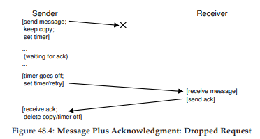
Hình 48.4: Thông điệp và xác nhận – Yêu cầu bị rơi (Message Plus Acknowledgment: Dropped Request)
Thật không may, cơ chế timeout/retry (hết thời gian chờ/thử lại) ở dạng này vẫn chưa đủ. Hình 48.5 minh họa một ví dụ về mất gói tin (packet loss) có thể gây ra rắc rối. Trong ví dụ này, không phải thông điệp gốc bị mất, mà là acknowledgment (gói tin xác nhận).
Từ góc nhìn của phía gửi, tình huống có vẻ giống nhau: không nhận được ack, và do đó cần thực hiện timeout và retry. Nhưng từ góc nhìn của phía nhận, lại hoàn toàn khác: cùng một thông điệp đã được nhận hai lần! Mặc dù có thể có những trường hợp điều này không gây hại, nhưng nhìn chung thì không ổn; hãy tưởng tượng điều gì sẽ xảy ra khi bạn đang tải xuống một tệp và các gói tin thừa bị lặp lại trong quá trình tải. Do đó, khi chúng ta hướng tới một tầng thông điệp đáng tin cậy (reliable message layer), chúng ta thường muốn đảm bảo rằng mỗi thông điệp chỉ được nhận đúng một lần bởi phía nhận.

Hình 48.5: Thông điệp và xác nhận – Phản hồi bị rơi (Message Plus Acknowledgment: Dropped Reply)
Để cho phép phía nhận phát hiện việc truyền trùng lặp thông điệp, phía gửi phải gán cho mỗi thông điệp một định danh duy nhất (unique ID), và phía nhận cần có cách để theo dõi xem nó đã thấy thông điệp đó trước đây hay chưa. Khi phía nhận phát hiện một thông điệp trùng lặp, nó chỉ cần gửi ack cho thông điệp đó, nhưng (quan trọng) không chuyển thông điệp này lên ứng dụng nhận dữ liệu. Như vậy, phía gửi nhận được ack nhưng thông điệp không bị nhận hai lần, đảm bảo ngữ nghĩa exactly-once (chỉ-một-lần) như đã đề cập.
Có nhiều cách để phát hiện thông điệp trùng lặp. Ví dụ, phía gửi có thể tạo một ID duy nhất cho mỗi thông điệp; phía nhận có thể lưu lại mọi ID mà nó từng thấy. Cách này có thể hoạt động, nhưng chi phí quá cao, đòi hỏi bộ nhớ không giới hạn để lưu tất cả ID.
Một cách đơn giản hơn, yêu cầu ít bộ nhớ, giải quyết được vấn đề này là sử dụng sequence counter (bộ đếm tuần tự). Với sequence counter, phía gửi và phía nhận thống nhất một giá trị bắt đầu (ví dụ: 1) cho một bộ đếm mà mỗi bên sẽ duy trì. Mỗi khi gửi một thông điệp, giá trị hiện tại của bộ đếm sẽ được gửi kèm theo thông điệp; giá trị này (N) đóng vai trò như ID của thông điệp. Sau khi gửi thông điệp, phía gửi tăng giá trị bộ đếm lên (N + 1).
TIP: CẨN THẬN KHI ĐẶT GIÁ TRỊ TIMEOUT
Như bạn có thể đoán từ phần thảo luận, việc đặt giá trị timeout đúng là một yếu tố quan trọng khi sử dụng timeout để thử gửi lại thông điệp. Nếu timeout quá nhỏ, phía gửi sẽ gửi lại thông điệp một cách không cần thiết, lãng phí thời gian CPU và tài nguyên mạng. Nếu timeout quá lớn, phía gửi sẽ chờ quá lâu mới gửi lại, làm giảm hiệu năng cảm nhận được ở phía gửi. Giá trị “đúng” từ góc nhìn của một client và server đơn lẻ là chờ vừa đủ để phát hiện mất gói tin nhưng không lâu hơn.
Tuy nhiên, trong hệ thống phân tán thường có nhiều hơn một client và server, như chúng ta sẽ thấy ở các chương sau. Trong kịch bản nhiều client gửi tới một server, mất gói tin ở server có thể là dấu hiệu server đang quá tải. Nếu đúng vậy, client có thể thử lại theo cách thích ứng khác; ví dụ, sau lần timeout đầu tiên, client có thể tăng giá trị timeout lên cao hơn, có thể gấp đôi giá trị ban đầu. Cơ chế exponential back-off (lùi thời gian theo cấp số nhân), được tiên phong trong mạng Aloha và áp dụng trong Ethernet thời kỳ đầu [A70], giúp tránh tình huống tài nguyên bị quá tải do quá nhiều lần gửi lại. Các hệ thống mạnh mẽ luôn cố gắng tránh loại quá tải này.
Phía nhận sử dụng giá trị bộ đếm của mình như giá trị mong đợi cho ID của thông điệp đến từ phía gửi đó. Nếu ID của thông điệp nhận được (N) khớp với bộ đếm của phía nhận (cũng là N), nó gửi ack và chuyển thông điệp lên ứng dụng; trong trường hợp này, phía nhận kết luận đây là lần đầu tiên thông điệp này được nhận. Sau đó, phía nhận tăng bộ đếm của mình lên (N + 1) và chờ thông điệp tiếp theo.
Nếu ack bị mất, phía gửi sẽ timeout và gửi lại thông điệp N. Lần này, bộ đếm của phía nhận đã cao hơn (N + 1), do đó phía nhận biết rằng nó đã nhận thông điệp này trước đó. Vì vậy, nó gửi ack nhưng không chuyển thông điệp lên ứng dụng. Theo cách đơn giản này, sequence counter có thể được sử dụng để tránh trùng lặp.
Tầng giao tiếp đáng tin cậy được sử dụng phổ biến nhất được gọi là TCP/IP, hay ngắn gọn là TCP. TCP có mức độ tinh vi cao hơn nhiều so với mô tả ở trên, bao gồm cơ chế xử lý congestion (tắc nghẽn) trong mạng [VJ88], hỗ trợ nhiều yêu cầu đồng thời (multiple outstanding requests), và hàng trăm tinh chỉnh và tối ưu hóa nhỏ khác. Hãy tìm hiểu thêm nếu bạn quan tâm; tốt hơn nữa, hãy tham gia một khóa học về mạng máy tính và học kỹ phần này.
48.4 Các trừu tượng giao tiếp (Communication Abstractions)
Với một messaging layer (tầng nhắn tin) cơ bản, chúng ta tiếp cận câu hỏi tiếp theo trong chương này: khi xây dựng một hệ thống phân tán, chúng ta nên sử dụng trừu tượng giao tiếp nào?
Cộng đồng nghiên cứu hệ thống đã phát triển nhiều cách tiếp cận trong nhiều năm qua. Một nhánh công trình đã lấy các OS abstractions (trừu tượng của hệ điều hành) và mở rộng chúng để hoạt động trong môi trường phân tán. Ví dụ, các hệ thống distributed shared memory (DSM) – bộ nhớ chia sẻ phân tán – cho phép các process (tiến trình) trên các máy khác nhau chia sẻ một không gian địa chỉ ảo (virtual address space) lớn [LH89]. Trừu tượng này biến một phép tính phân tán thành thứ trông giống như một ứng dụng đa luồng (multi-threaded application); điểm khác biệt duy nhất là các luồng này chạy trên các máy khác nhau thay vì trên các bộ xử lý khác nhau trong cùng một máy.
Cách hầu hết các hệ thống DSM hoạt động là thông qua hệ thống virtual memory (bộ nhớ ảo) của hệ điều hành. Khi một page (trang) được truy cập trên một máy, có thể xảy ra hai tình huống:
- Trường hợp thứ nhất (tốt nhất), page đã có sẵn trên máy, và dữ liệu được lấy nhanh chóng.
- Trường hợp thứ hai, page hiện đang nằm trên một máy khác. Khi đó xảy ra page fault (lỗi trang), và page fault handler (trình xử lý lỗi trang) sẽ gửi một thông điệp tới máy khác để lấy page, cài đặt nó vào page table (bảng trang) của tiến trình yêu cầu, rồi tiếp tục thực thi.
Cách tiếp cận này ngày nay không được sử dụng rộng rãi vì nhiều lý do. Vấn đề lớn nhất của DSM là cách nó xử lý failure (lỗi/hỏng hóc). Hãy tưởng tượng, nếu một máy bị hỏng; điều gì sẽ xảy ra với các page trên máy đó? Nếu các cấu trúc dữ liệu của phép tính phân tán được phân tán khắp toàn bộ không gian địa chỉ thì sao? Trong trường hợp này, một phần của các cấu trúc dữ liệu đó sẽ đột ngột trở nên không thể truy cập. Xử lý lỗi khi một phần không gian địa chỉ của bạn biến mất là rất khó; hãy tưởng tượng một linked list (danh sách liên kết) mà con trỏ “next” trỏ vào một phần của không gian địa chỉ đã mất. Thật khủng khiếp!
Một vấn đề khác là hiệu năng. Khi viết mã, người ta thường giả định rằng truy cập bộ nhớ là rẻ. Trong các hệ thống DSM, một số truy cập là rẻ, nhưng một số khác gây ra page fault và yêu cầu lấy dữ liệu tốn kém từ máy từ xa. Do đó, lập trình viên của các hệ thống DSM phải rất cẩn thận tổ chức tính toán sao cho hầu như không có giao tiếp nào xảy ra, điều này làm mất đi nhiều ý nghĩa của cách tiếp cận này. Mặc dù đã có nhiều nghiên cứu trong lĩnh vực này, tác động thực tiễn là rất ít; ngày nay không ai xây dựng hệ thống phân tán đáng tin cậy bằng DSM nữa.
48.5 Remote Procedure Call (RPC)
Trong khi các OS abstractions tỏ ra là lựa chọn kém hiệu quả để xây dựng hệ thống phân tán, các programming language (PL) abstractions (trừu tượng của ngôn ngữ lập trình) lại hợp lý hơn nhiều. Trừu tượng chiếm ưu thế nhất dựa trên ý tưởng remote procedure call (gọi thủ tục từ xa), hay viết tắt là RPC [BN84]1.
Các gói RPC đều có một mục tiêu đơn giản: làm cho quá trình thực thi mã trên một máy từ xa trở nên đơn giản và trực quan như việc gọi một hàm cục bộ. Do đó, từ góc nhìn của client, một call thủ tục được thực hiện, và một thời gian sau, kết quả được trả về. Server chỉ cần định nghĩa một số routine (thủ tục) mà nó muốn xuất ra. Phần “ma thuật” còn lại được xử lý bởi hệ thống RPC, vốn thường có hai thành phần chính:
- Stub generator (trình tạo stub, đôi khi gọi là protocol compiler – trình biên dịch giao thức)
- Run-time library (thư viện thời gian chạy)
Chúng ta sẽ xem xét chi tiết từng thành phần này ngay sau đây.
BN84 – Tài liệu tham khảo gốc về RPC.
Trình tạo Stub (Stub Generator)
Nhiệm vụ của stub generator khá đơn giản: loại bỏ phần khó khăn trong việc đóng gói (packing) các tham số và kết quả của hàm vào thông điệp bằng cách tự động hóa quá trình này. Cách tiếp cận này mang lại nhiều lợi ích: giúp tránh được những lỗi đơn giản thường gặp khi viết mã thủ công; hơn nữa, một stub compiler (trình biên dịch stub) có thể tối ưu mã này và cải thiện hiệu năng.
Đầu vào của trình biên dịch này đơn giản là tập hợp các call hàm mà server muốn xuất ra cho client. Về mặt khái niệm, nó có thể đơn giản như sau:
interface {
int func1(int arg1);
int func2(int arg1, int arg2);
};
Stub generator sẽ lấy một interface như trên và sinh ra một số thành phần mã khác nhau.
- Phía client: sinh ra client stub, chứa mỗi hàm được định nghĩa trong interface; một chương trình client muốn sử dụng dịch vụ RPC này sẽ liên kết (link) với client stub và gọi vào đó để thực hiện các RPC.
Bên trong, mỗi hàm trong client stub sẽ thực hiện toàn bộ công việc cần thiết để thực hiện remote procedure call.
Từ góc nhìn của client, mã chỉ đơn giản là một call hàm (ví dụ: client gọi func1(x)); nhưng bên trong, mã trong client stub cho func1() sẽ thực hiện:
- Tạo bộ đệm thông điệp (message buffer). Thông thường, đây chỉ là một mảng byte liên tiếp có kích thước nhất định.
- Đóng gói thông tin cần thiết vào message buffer. Thông tin này bao gồm một định danh (identifier) cho hàm cần gọi, cũng như tất cả các tham số mà hàm cần (ví dụ: trong trường hợp trên, một số nguyên cho
func1). Quá trình đưa toàn bộ thông tin này vào một bộ đệm liên tiếp được gọi là marshaling (đóng gói tham số) hoặc serialization (tuần tự hóa thông điệp). - Gửi thông điệp tới RPC server đích. Việc giao tiếp với RPC server và tất cả các chi tiết cần thiết để hoạt động đúng được xử lý bởi RPC run-time library (thư viện thời gian chạy RPC), sẽ được mô tả chi tiết hơn bên dưới.
- Chờ phản hồi. Vì call hàm thường là đồng bộ (synchronous), call sẽ chờ cho đến khi hoàn tất.
- Giải nén mã trả về và các tham số khác. Nếu hàm chỉ trả về một mã kết quả duy nhất, quá trình này khá đơn giản; tuy nhiên, các hàm phức tạp hơn có thể trả về kết quả phức tạp (ví dụ: một danh sách), và do đó stub có thể cần giải nén chúng. Bước này còn được gọi là unmarshaling hoặc deserialization.
- Trả kết quả về cho hàm gọi. Cuối cùng, trả kết quả từ client stub về mã client.
Phía server cũng được sinh mã. Các bước thực hiện trên server như sau:
- Giải nén thông điệp. Bước này, gọi là unmarshaling hoặc deserialization, lấy thông tin ra khỏi thông điệp đến. Định danh hàm và các tham số được trích xuất.
- Gọi vào hàm thực tế. Cuối cùng! Đây là lúc hàm từ xa thực sự được thực thi. RPC runtime gọi vào hàm được chỉ định bởi ID và truyền vào các tham số cần thiết.
- Đóng gói kết quả. Các giá trị trả về được marshal trở lại thành một bộ đệm phản hồi duy nhất.
- Gửi phản hồi. Phản hồi được gửi lại cho phía gọi.
Có một số vấn đề quan trọng khác cần xem xét trong stub compiler:
-
Tham số phức tạp: Làm thế nào để đóng gói và gửi một cấu trúc dữ liệu phức tạp?
Ví dụ, khi gọi system callwrite(), ta truyền vào ba tham số: một số nguyên file descriptor, một con trỏ tới buffer, và một kích thước cho biết bao nhiêu byte (bắt đầu từ con trỏ) sẽ được ghi. Nếu một gói RPC nhận một con trỏ, nó cần biết cách diễn giải con trỏ đó và thực hiện hành động đúng. Thông thường, điều này được thực hiện thông qua:- Các kiểu dữ liệu đã biết (ví dụ:
buffer_tdùng để truyền các khối dữ liệu với kích thước xác định, mà RPC compiler hiểu được), hoặc - Gắn chú thích (annotation) vào cấu trúc dữ liệu với thông tin bổ sung, cho phép compiler biết byte nào cần được serialize.
- Các kiểu dữ liệu đã biết (ví dụ:
-
Tổ chức server liên quan đến concurrency (tính đồng thời):
Một server đơn giản chỉ chờ yêu cầu trong một vòng lặp và xử lý từng yêu cầu một. Tuy nhiên, như bạn có thể đoán, điều này rất kém hiệu quả; nếu một call RPC bị chặn (ví dụ: do I/O), tài nguyên server sẽ bị lãng phí.
Do đó, hầu hết server được xây dựng theo một dạng concurrent nào đó. Một mô hình phổ biến là thread pool (bể luồng). Trong mô hình này:- Một tập hữu hạn các thread được tạo khi server khởi động.
- Khi một thông điệp đến, nó được phân phối tới một trong các worker thread, luồng này sẽ thực hiện công việc của call RPC và cuối cùng phản hồi.
- Trong thời gian đó, main thread tiếp tục nhận các yêu cầu khác và có thể phân phối chúng cho các worker khác.
Cách tổ chức này cho phép thực thi đồng thời trong server, tăng mức sử dụng tài nguyên; tuy nhiên, chi phí tiêu chuẩn cũng xuất hiện, chủ yếu là độ phức tạp lập trình, vì các call RPC giờ đây có thể cần sử dụng lock và các synchronization primitives (cơ chế đồng bộ hóa) khác để đảm bảo hoạt động đúng.
Thư viện thời gian chạy (Run-Time Library)
Run-time library đảm nhiệm phần lớn công việc nặng trong một hệ thống RPC (Remote Procedure Call – gọi thủ tục từ xa); hầu hết các vấn đề về hiệu năng và độ tin cậy đều được xử lý tại đây. Chúng ta sẽ cùng thảo luận một số thách thức chính khi xây dựng một tầng run-time như vậy.
Một trong những thách thức đầu tiên cần vượt qua là làm thế nào để định vị một dịch vụ từ xa. Vấn đề này, gọi là naming (đặt tên/định danh), là một vấn đề phổ biến trong các hệ thống phân tán, và ở một mức độ nào đó vượt ra ngoài phạm vi thảo luận hiện tại. Cách tiếp cận đơn giản nhất là xây dựng dựa trên các hệ thống đặt tên hiện có, ví dụ: hostname và port number do các giao thức Internet hiện tại cung cấp. Trong hệ thống như vậy, client phải biết hostname hoặc địa chỉ IP của máy đang chạy dịch vụ RPC mong muốn, cũng như số cổng mà nó đang sử dụng (port number chỉ đơn giản là một cách để định danh một hoạt động giao tiếp cụ thể đang diễn ra trên một máy, cho phép nhiều kênh giao tiếp đồng thời). Bộ giao thức (protocol suite) sau đó phải cung cấp cơ chế định tuyến các gói tin tới một địa chỉ cụ thể từ bất kỳ máy nào khác trong hệ thống. Để tìm hiểu sâu hơn về vấn đề naming, bạn có thể tham khảo các tài liệu về DNS và name resolution trên Internet, hoặc tốt hơn là đọc chương viết rất hay trong sách của Saltzer và Kaashoek [SK09].
Khi client đã biết server nào cần liên hệ cho một dịch vụ từ xa cụ thể, câu hỏi tiếp theo là RPC nên được xây dựng trên giao thức tầng vận chuyển (transport-level protocol) nào. Cụ thể, hệ thống RPC nên sử dụng một giao thức đáng tin cậy như TCP/IP, hay nên xây dựng trên một tầng giao tiếp không đáng tin cậy như UDP/IP?
Nếu suy nghĩ đơn giản, lựa chọn này có vẻ dễ dàng: rõ ràng chúng ta muốn yêu cầu được gửi đáng tin cậy tới server từ xa, và cũng muốn nhận phản hồi một cách đáng tin cậy. Vậy thì nên chọn giao thức vận chuyển đáng tin cậy như TCP, đúng không?
Đáng tiếc, xây dựng RPC trên một tầng giao tiếp đáng tin cậy có thể dẫn đến sự kém hiệu quả nghiêm trọng về hiệu năng. Hãy nhớ lại phần thảo luận ở trên về cách các tầng giao tiếp đáng tin cậy hoạt động: với acknowledgment (xác nhận) kết hợp với timeout/retry (hết thời gian chờ/thử lại). Do đó, khi client gửi một yêu cầu RPC tới server, server sẽ phản hồi bằng một ack để caller biết rằng yêu cầu đã được nhận. Tương tự, khi server gửi phản hồi tới client, client cũng gửi ack để server biết rằng phản hồi đã được nhận. Khi xây dựng một giao thức request/response (yêu cầu/đáp ứng) như RPC trên một tầng giao tiếp đáng tin cậy, sẽ có hai thông điệp “thừa” được gửi.
Vì lý do này, nhiều gói RPC được xây dựng trên các tầng giao tiếp không đáng tin cậy như UDP. Cách này cho phép một tầng RPC hiệu quả hơn, nhưng đồng thời bổ sung trách nhiệm đảm bảo độ tin cậy cho chính hệ thống RPC. Tầng RPC đạt được mức độ tin cậy mong muốn bằng cách sử dụng timeout/retry và acknowledgment tương tự như đã mô tả ở trên. Bằng cách sử dụng một dạng sequence numbering (đánh số thứ tự), tầng giao tiếp có thể đảm bảo rằng mỗi RPC diễn ra chính xác một lần (trong trường hợp không có lỗi), hoặc nhiều nhất một lần (trong trường hợp xảy ra lỗi).
Các vấn đề khác (Other Issues)
Có một số vấn đề khác mà RPC run-time cũng phải xử lý. Ví dụ: điều gì xảy ra khi một call từ xa mất nhiều thời gian để hoàn tất? Với cơ chế timeout, một call từ xa chạy lâu có thể bị client coi là lỗi, dẫn đến việc retry, và do đó cần xử lý cẩn thận. Một giải pháp là sử dụng explicit acknowledgment (xác nhận rõ ràng từ phía nhận gửi tới phía gửi) khi phản hồi chưa được tạo ngay; điều này cho client biết rằng server đã nhận yêu cầu. Sau đó, sau một khoảng thời gian, client có thể định kỳ hỏi xem server vẫn đang xử lý yêu cầu hay không; nếu server liên tục trả lời “có”, client nên tiếp tục chờ (suy cho cùng, đôi khi một call thủ tục có thể mất nhiều thời gian để hoàn tất).
Run-time cũng phải xử lý các call thủ tục có tham số lớn, vượt quá kích thước có thể chứa trong một gói tin duy nhất. Một số giao thức mạng tầng thấp cung cấp chức năng fragmentation (phân mảnh phía gửi – chia gói lớn thành nhiều gói nhỏ) và reassembly (tái hợp phía nhận – ghép các phần nhỏ thành một khối logic lớn hơn); nếu không, RPC run-time có thể phải tự triển khai chức năng này. Xem chi tiết trong bài báo của Birrell và Nelson [BN84].
ASIDE: LẬP LUẬN END-TO-END (THE END-TO-END ARGUMENT)
Lập luận end-to-end cho rằng tầng cao nhất trong một hệ thống, thường là ứng dụng ở “đầu cuối”, mới là nơi duy nhất trong một hệ thống phân tầng có thể thực sự triển khai một số chức năng nhất định. Trong bài báo nổi tiếng [SRC84], Saltzer và cộng sự đã minh họa điều này qua một ví dụ xuất sắc: truyền tệp tin đáng tin cậy giữa hai máy. Nếu bạn muốn truyền một tệp từ máy A sang máy B, và đảm bảo rằng các byte trên B chính xác giống với các byte ban đầu trên A, bạn phải có một cơ chế kiểm tra “end-to-end” cho việc này; các cơ chế đáng tin cậy ở tầng thấp hơn, ví dụ trong mạng hoặc đĩa, không cung cấp được đảm bảo này.Ngược lại là cách tiếp cận cố gắng giải quyết vấn đề truyền tệp tin đáng tin cậy bằng cách thêm độ tin cậy vào các tầng thấp hơn của hệ thống. Ví dụ, giả sử chúng ta xây dựng một giao thức truyền thông đáng tin cậy và sử dụng nó để xây dựng truyền tệp tin đáng tin cậy. Giao thức truyền thông này đảm bảo rằng mọi byte được gửi bởi phía gửi sẽ được nhận theo đúng thứ tự bởi phía nhận, sử dụng timeout/retry, acknowledgment và sequence number. Đáng tiếc, sử dụng một giao thức như vậy không đồng nghĩa với việc truyền tệp tin là đáng tin cậy; hãy tưởng tượng dữ liệu bị hỏng trong bộ nhớ của phía gửi trước khi truyền, hoặc xảy ra sự cố khi phía nhận ghi dữ liệu xuống đĩa. Trong những trường hợp đó, mặc dù dữ liệu đã được truyền đáng tin cậy qua mạng, việc truyền tệp tin của chúng ta cuối cùng vẫn không đáng tin cậy. Để xây dựng một truyền tệp tin đáng tin cậy, phải bao gồm các kiểm tra độ tin cậy end-to-end, ví dụ: sau khi truyền xong, đọc lại tệp trên đĩa của phía nhận, tính toán checksum và so sánh với checksum của tệp trên phía gửi.
Hệ quả của nguyên tắc này là đôi khi việc để các tầng thấp hơn cung cấp thêm chức năng có thể cải thiện hiệu năng hệ thống hoặc tối ưu hóa hệ thống. Do đó, bạn không nên loại trừ hoàn toàn việc có các cơ chế như vậy ở tầng thấp hơn; thay vào đó, hãy cân nhắc kỹ lưỡng tính hữu ích của chúng, xét đến cách chúng sẽ được sử dụng trong toàn bộ hệ thống hoặc ứng dụng.
Một vấn đề mà nhiều hệ thống phải xử lý là byte ordering (thứ tự byte). Như bạn có thể biết, một số máy lưu trữ giá trị theo thứ tự gọi là big endian, trong khi những máy khác sử dụng little endian.
- Big endian lưu các byte (ví dụ, của một số nguyên) từ bit có trọng số cao nhất đến bit có trọng số thấp nhất, tương tự như cách viết số Ả Rập.
- Little endian thì ngược lại.
Cả hai đều là những cách hợp lệ để lưu trữ thông tin số; câu hỏi đặt ra ở đây là làm thế nào để giao tiếp giữa các máy có endianness khác nhau.
Các gói RPC thường xử lý vấn đề này bằng cách cung cấp một endianness được xác định rõ ràng trong định dạng thông điệp của chúng. Trong gói RPC của Sun, lớp XDR (eXternal Data Representation) cung cấp chức năng này.
- Nếu máy gửi hoặc nhận thông điệp có cùng endianness với XDR, thông điệp sẽ được gửi và nhận như bình thường.
- Nếu máy giao tiếp có endianness khác, mỗi phần thông tin trong thông điệp phải được chuyển đổi.
Do đó, sự khác biệt về endianness có thể gây ra một chi phí hiệu năng nhỏ.
Một vấn đề cuối cùng là liệu có nên phơi bày bản chất bất đồng bộ (asynchronous) của giao tiếp cho client hay không, từ đó cho phép một số tối ưu hóa hiệu năng.
Cụ thể, RPC thông thường được thực hiện đồng bộ (synchronous), tức là khi client thực hiện call thủ tục, nó phải chờ cho đến khi call trả về trước khi tiếp tục. Vì thời gian chờ này có thể dài, và vì client có thể có những công việc khác cần làm, một số gói RPC cho phép gọi RPC bất đồng bộ (asynchronous).
Khi một RPC bất đồng bộ được thực hiện, gói RPC sẽ gửi yêu cầu và trả về ngay lập tức; client sau đó có thể tự do làm việc khác, chẳng hạn gọi các RPC khác hoặc thực hiện các tính toán hữu ích khác.
Tại một thời điểm nào đó, client sẽ muốn xem kết quả của RPC bất đồng bộ; khi đó nó sẽ gọi lại vào tầng RPC, yêu cầu chờ cho đến khi các RPC đang chờ hoàn tất, và lúc này các tham số trả về mới có thể được truy cập.
48.6 Tóm tắt (Summary)
Chúng ta đã được giới thiệu một chủ đề mới: hệ thống phân tán (distributed systems), và vấn đề lớn nhất của nó: xử lý lỗi (failure) – điều giờ đây đã trở thành chuyện thường ngày. Như người ta vẫn nói ở Google: khi bạn chỉ có một máy tính để bàn, lỗi là hiếm; nhưng khi bạn ở trong một data center với hàng nghìn máy, lỗi xảy ra liên tục.
Chìa khóa của bất kỳ hệ thống phân tán nào là cách bạn xử lý những lỗi đó.
Chúng ta cũng đã thấy rằng giao tiếp là trái tim của mọi hệ thống phân tán. Một trừu tượng phổ biến của giao tiếp này là remote procedure call (RPC), cho phép client thực hiện các call từ xa tới server; gói RPC xử lý tất cả các chi tiết phức tạp, bao gồm timeout/retry và acknowledgment, để cung cấp một dịch vụ gần giống nhất với call thủ tục cục bộ.
Cách tốt nhất để thực sự hiểu một gói RPC tất nhiên là tự mình sử dụng nó. Hệ thống RPC của Sun, sử dụng trình biên dịch stub rpcgen, là một ví dụ cũ; gRPC của Google và Apache Thrift là những phiên bản hiện đại hơn của cùng ý tưởng. Hãy thử một trong số chúng và tự trải nghiệm để hiểu tại sao chúng lại được quan tâm đến vậy.
49. Hệ thống Tệp Mạng của Sun (Sun’s Network File System – NFS)
Một trong những ứng dụng đầu tiên của mô hình tính toán client/server phân tán là trong lĩnh vực distributed file system (hệ thống tệp phân tán). Trong môi trường như vậy, có một số máy client và một máy server (hoặc một vài máy); server lưu trữ dữ liệu trên các ổ đĩa của nó, và các client yêu cầu dữ liệu thông qua các thông điệp giao thức được định dạng chuẩn.
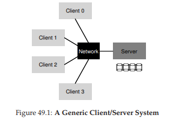
Hình 49.1: Một hệ thống Client/Server tổng quát
Như bạn có thể thấy từ hình minh họa, server sở hữu các ổ đĩa, và các client gửi thông điệp qua mạng để truy cập thư mục và tệp trên các ổ đĩa đó.
Tại sao chúng ta lại sử dụng mô hình này? (tức là, tại sao không để client dùng ổ đĩa cục bộ của chính nó?)
- Lý do chính là mô hình này cho phép chia sẻ dữ liệu dễ dàng giữa các client. Ví dụ, nếu bạn truy cập một tệp trên một máy (Client 0) và sau đó sử dụng một máy khác (Client 2), bạn sẽ có cùng một cái nhìn về hệ thống tệp. Dữ liệu của bạn được chia sẻ một cách tự nhiên giữa các máy khác nhau.
- Lợi ích thứ hai là quản trị tập trung; ví dụ, việc sao lưu tệp có thể được thực hiện từ một vài máy server thay vì từ hàng loạt máy client.
- Một lợi ích khác có thể là bảo mật; việc đặt tất cả server trong một phòng máy được khóa sẽ ngăn chặn một số loại sự cố nhất định.
THE CRUX: LÀM THẾ NÀO ĐỂ XÂY DỰNG MỘT DISTRIBUTED FILE SYSTEM
Làm thế nào để xây dựng một hệ thống tệp phân tán? Những khía cạnh chính cần xem xét là gì? Điều gì dễ mắc sai lầm? Chúng ta có thể học được gì từ các hệ thống hiện có?
49.1 Một Distributed File System cơ bản
Bây giờ chúng ta sẽ nghiên cứu kiến trúc của một hệ thống tệp phân tán đơn giản. Một hệ thống tệp phân tán kiểu client/server đơn giản có nhiều thành phần hơn so với các hệ thống tệp mà chúng ta đã nghiên cứu trước đây.
-
Phía client: có các ứng dụng client truy cập tệp và thư mục thông qua client-side file system (hệ thống tệp phía client).
Ứng dụng client gọi các system call tới client-side file system (chẳng hạn nhưopen(),read(),write(),close(),mkdir(), v.v.) để truy cập các tệp được lưu trữ trên server.
Do đó, đối với ứng dụng client, hệ thống tệp không khác gì so với hệ thống tệp cục bộ (dựa trên đĩa), ngoại trừ có thể về hiệu năng; theo cách này, distributed file system cung cấp khả năng truy cập tệp minh bạch (transparent access) – một mục tiêu hiển nhiên; rốt cuộc, ai lại muốn dùng một hệ thống tệp yêu cầu một bộ API khác hoặc gây khó khăn khi sử dụng? -
Vai trò của client-side file system là thực hiện các hành động cần thiết để xử lý các system call đó.
Ví dụ, nếu client thực hiện một yêu cầuread(), client-side file system có thể gửi một thông điệp tới server-side file system (hay thường gọi là file server) để đọc một block cụ thể; file server sau đó sẽ đọc block từ đĩa (hoặc từ in-memory cache của nó), và gửi lại một thông điệp cho client chứa dữ liệu được yêu cầu.
Client-side file system sau đó sẽ sao chép dữ liệu vào user buffer được truyền cho system callread(), và yêu cầu sẽ hoàn tất.
Lưu ý rằng, một lầnread()tiếp theo của cùng block đó trên client có thể được lấy từ bộ nhớ cache của client hoặc thậm chí từ đĩa cục bộ của client; trong trường hợp tốt nhất, sẽ không cần tạo ra lưu lượng mạng nào.

Hình 49.2: Kiến trúc Distributed File System
Từ cái nhìn tổng quan đơn giản này, bạn có thể thấy rằng có hai thành phần phần mềm quan trọng trong một distributed file system kiểu client/server:
- Client-side file system
- File server
Hành vi kết hợp của chúng quyết định hành vi của toàn bộ distributed file system. Bây giờ là lúc nghiên cứu một hệ thống cụ thể: Sun’s Network File System (NFS).
49.2 Tìm hiểu về NFS
Một trong những hệ thống phân tán đầu tiên và khá thành công được phát triển bởi Sun Microsystems, được gọi là Sun Network File System (NFS) [S86].
Khi định nghĩa NFS, Sun đã chọn một cách tiếp cận khác thường: thay vì xây dựng một hệ thống độc quyền và đóng, Sun đã phát triển một giao thức mở chỉ đơn giản là xác định chính xác định dạng thông điệp mà client và server sẽ sử dụng để giao tiếp.
Nhờ đó, các nhóm khác nhau có thể phát triển NFS server của riêng họ và cạnh tranh trong thị trường NFS, đồng thời vẫn đảm bảo khả năng tương tác (interoperability). Và điều này đã thành công: ngày nay có nhiều công ty bán NFS server (bao gồm Oracle/Sun, NetApp [HLM94], EMC, IBM và những hãng khác), và sự thành công rộng rãi của NFS có thể được cho là nhờ vào cách tiếp cận “thị trường mở” này.
ASIDE: TẠI SAO SERVER BỊ CRASH
Trước khi đi sâu vào chi tiết của giao thức NFSv2, bạn có thể tự hỏi: tại sao server lại bị crash? Như bạn có thể đoán, có rất nhiều lý do. Server có thể đơn giản bị mất điện (tạm thời); chỉ khi có điện trở lại thì máy mới có thể khởi động lại. Server thường bao gồm hàng trăm nghìn hoặc thậm chí hàng triệu dòng mã; do đó, chúng có lỗi (bug) (ngay cả phần mềm tốt cũng có một vài lỗi trên mỗi trăm hoặc nghìn dòng mã), và cuối cùng sẽ gặp phải một lỗi gây crash. Chúng cũng có thể bị memory leak (rò rỉ bộ nhớ); ngay cả một rò rỉ nhỏ cũng có thể khiến hệ thống hết bộ nhớ và crash. Và cuối cùng, trong các hệ thống phân tán, luôn tồn tại mạng giữa client và server; nếu mạng hoạt động bất thường (ví dụ: nếu bị phân vùng – network partition – và client và server vẫn hoạt động nhưng không thể giao tiếp), thì có thể trông như một máy từ xa đã bị crash, nhưng thực tế là nó chỉ tạm thời không thể truy cập qua mạng.
49.3 Trọng tâm: Khôi phục nhanh và đơn giản khi server bị crash (Simple And Fast Server Crash Recovery)
Trong chương này, chúng ta sẽ thảo luận về giao thức NFS cổ điển (phiên bản 2, hay còn gọi là NFSv2), vốn đã là tiêu chuẩn trong nhiều năm; khi chuyển sang NFSv3 chỉ có một số thay đổi nhỏ, còn khi chuyển sang NFSv4 thì có những thay đổi lớn hơn về giao thức. Tuy nhiên, NFSv2 vừa tuyệt vời vừa gây nhiều bực bội, và do đó sẽ là trọng tâm nghiên cứu của chúng ta.
Trong NFSv2, mục tiêu chính khi thiết kế giao thức là khôi phục nhanh chóng và đơn giản khi server bị crash. Trong môi trường nhiều client – một server, mục tiêu này là hoàn toàn hợp lý; bất kỳ phút nào server ngừng hoạt động (hoặc không thể truy cập) đều khiến tất cả các máy client (và người dùng của chúng) không hài lòng và giảm năng suất. Nói cách khác, server ra sao thì cả hệ thống sẽ như vậy.
49.4 Chìa khóa để khôi phục nhanh khi crash: Statelessness
Mục tiêu đơn giản này được hiện thực hóa trong NFSv2 bằng cách thiết kế một giao thức stateless (không lưu trạng thái). Theo thiết kế, server không theo dõi bất kỳ thông tin nào về những gì đang diễn ra ở mỗi client.
Ví dụ: server không biết client nào đang cache block nào, hoặc file nào đang được mở ở mỗi client, hoặc vị trí con trỏ file hiện tại của một file, v.v. Nói ngắn gọn, server không theo dõi bất kỳ hoạt động nào của client; thay vào đó, giao thức được thiết kế sao cho mỗi yêu cầu giao thức đều chứa toàn bộ thông tin cần thiết để hoàn tất yêu cầu đó. Nếu điều này chưa rõ ràng, cách tiếp cận stateless sẽ trở nên dễ hiểu hơn khi chúng ta phân tích chi tiết giao thức ở phần sau.
Ví dụ về một giao thức stateful (có lưu trạng thái, tức là không stateless) là system call open().
Với một pathname, open() trả về một file descriptor (một số nguyên). Descriptor này được sử dụng trong các call read() hoặc write() tiếp theo để truy cập các block dữ liệu của file, như trong đoạn code ứng dụng sau (lưu ý: phần kiểm tra lỗi của system call được lược bỏ để tiết kiệm không gian):
char buffer[MAX];
int fd = open("foo", O_RDONLY); // lấy descriptor "fd"
read(fd, buffer, MAX); // đọc MAX byte từ foo qua "fd"
read(fd, buffer, MAX); // đọc MAX byte lần nữa
...
read(fd, buffer, MAX); // đọc MAX byte lần nữa
close(fd); // đóng file
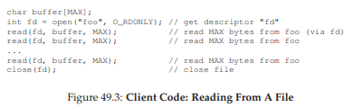
Hình 49.3: Mã phía client – Đọc từ một file
Bây giờ hãy tưởng tượng client-side file system mở file bằng cách gửi một thông điệp giao thức tới server với nội dung: “mở file ‘foo’ và trả lại cho tôi một descriptor”. File server sau đó mở file cục bộ ở phía nó và gửi descriptor này về cho client.
Trong các lần đọc tiếp theo, ứng dụng client sử dụng descriptor đó để gọi system call read(); client-side file system sẽ truyền descriptor này trong thông điệp gửi tới file server, với nội dung: “đọc một số byte từ file được tham chiếu bởi descriptor mà tôi đang gửi cho bạn”.
Trong ví dụ này, file descriptor là một phần của shared state (trạng thái chia sẻ) giữa client và server (Ousterhout gọi đây là distributed state [O91]). Shared state, như đã gợi ý ở trên, làm phức tạp quá trình khôi phục sau crash.
Hãy tưởng tượng server bị crash sau khi hoàn tất lần đọc đầu tiên, nhưng trước khi client gửi yêu cầu đọc thứ hai. Sau khi server khởi động lại, client gửi yêu cầu đọc thứ hai. Đáng tiếc, server không hề biết fd đang tham chiếu tới file nào; thông tin đó chỉ tồn tại tạm thời trong bộ nhớ và đã bị mất khi server crash.
Để xử lý tình huống này, client và server sẽ phải thực hiện một recovery protocol (giao thức khôi phục), trong đó client phải giữ đủ thông tin trong bộ nhớ của mình để có thể thông báo cho server những gì nó cần biết (trong trường hợp này là file descriptor fd tham chiếu tới file foo).
Tình huống còn tệ hơn khi xét đến việc stateful server phải xử lý client crash.
Ví dụ: một client mở một file và sau đó bị crash. Lời gọi open() đã tiêu tốn một file descriptor trên server; làm sao server biết được khi nào thì an toàn để đóng file đó?
Trong hoạt động bình thường, client cuối cùng sẽ gọi close() và thông báo cho server rằng file nên được đóng. Tuy nhiên, khi client bị crash, server sẽ không bao giờ nhận được close(), và do đó phải tự phát hiện client đã crash để đóng file.
Vì những lý do này, các nhà thiết kế NFS đã quyết định theo đuổi cách tiếp cận stateless: mỗi thao tác của client đều chứa toàn bộ thông tin cần thiết để hoàn tất yêu cầu.
Không cần cơ chế khôi phục phức tạp; server chỉ cần khởi động lại, và client, trong trường hợp xấu nhất, chỉ cần gửi lại yêu cầu.
49.5 Giao thức NFSv2 (The NFSv2 Protocol)
Chúng ta đến với phần định nghĩa giao thức NFSv2. Bài toán đặt ra rất đơn giản:
THE CRUX: LÀM THẾ NÀO ĐỂ ĐỊNH NGHĨA MỘT FILE PROTOCOL THEO KIỂU STATELESS
Làm thế nào để định nghĩa giao thức mạng cho phép hoạt động ở chế độ stateless (không lưu trạng thái)? Rõ ràng, các call stateful nhưopen()không thể nằm trong phạm vi thảo luận (vì nó yêu cầu server phải theo dõi các file đang mở); tuy nhiên, ứng dụng phía client vẫn muốn gọiopen(),read(),write(),close()và các call API chuẩn khác để truy cập file và thư mục. Do đó, câu hỏi chi tiết hơn là: làm thế nào để định nghĩa giao thức vừa stateless vừa hỗ trợ API hệ thống tệp POSIX?
Một yếu tố then chốt để hiểu thiết kế của giao thức NFS là file handle. File handle được dùng để mô tả duy nhất file hoặc thư mục mà một thao tác cụ thể sẽ thực hiện; do đó, nhiều yêu cầu giao thức sẽ bao gồm một file handle.
Bạn có thể hình dung một file handle gồm ba thành phần quan trọng:
- Volume identifier (định danh volume)
- Inode number (số inode)
- Generation number (số thế hệ)
Kết hợp lại, ba thành phần này tạo thành một định danh duy nhất cho một file hoặc thư mục mà client muốn truy cập.
- Volume identifier cho server biết yêu cầu đang tham chiếu tới hệ thống tệp nào (một NFS server có thể export nhiều hệ thống tệp).
- Inode number cho server biết file nào trong phân vùng đó đang được truy cập.
- Generation number cần thiết khi tái sử dụng một inode number; bằng cách tăng giá trị này mỗi khi inode number được tái sử dụng, server đảm bảo rằng một client với file handle cũ sẽ không thể vô tình truy cập vào file mới được cấp phát.
Dưới đây là tóm tắt một số thành phần quan trọng của giao thức; toàn bộ giao thức có thể tìm thấy ở nơi khác (xem sách của Callaghan để có cái nhìn chi tiết và xuất sắc về NFS [C00]).

Hình 49.4: Giao thức NFS – Ví dụ
Một số thành phần quan trọng của giao thức:
-
LOOKUP: được dùng để lấy file handle, sau đó sẽ được sử dụng để truy cập dữ liệu file. Client gửi directory file handle và tên file cần tra cứu; server trả về file handle (hoặc directory handle) của file đó kèm theo attributes (thuộc tính).
Ví dụ: giả sử client đã có file handle của thư mục gốc/(thực tế, điều này có được thông qua NFS mount protocol, là cách client và server kết nối ban đầu; chúng ta sẽ không bàn chi tiết về mount protocol ở đây). Nếu một ứng dụng trên client mở file/foo.txt, client-side file system sẽ gửi yêu cầu LOOKUP tới server, truyền vào file handle của/và tênfoo.txt; nếu thành công, file handle (và attributes) củafoo.txtsẽ được trả về. -
Attributes: là metadata mà hệ thống tệp lưu cho mỗi file, bao gồm thời gian tạo file, thời gian sửa đổi cuối cùng, kích thước, thông tin quyền sở hữu và phân quyền, v.v. – tức là cùng loại thông tin mà bạn nhận được khi gọi
stat()trên một file. -
READ và WRITE:
- READ yêu cầu client gửi file handle, offset trong file và số byte cần đọc. Server sẽ đọc dữ liệu (file handle cho biết volume và inode, offset và count cho biết byte nào cần đọc) và trả về dữ liệu cùng attributes mới nhất (hoặc lỗi nếu thất bại).
- WRITE tương tự, nhưng dữ liệu được gửi từ client tới server, và server trả về mã thành công cùng attributes mới nhất.
-
GETATTR: cho một file handle, yêu cầu này trả về attributes của file, bao gồm thời gian sửa đổi cuối cùng. Chúng ta sẽ thấy tại sao yêu cầu này quan trọng trong NFSv2 khi bàn về caching (bạn có đoán được lý do không?).
49.6 Từ giao thức đến Distributed File System (From Protocol To Distributed File System)
Hy vọng đến đây bạn đã hình dung được cách giao thức này được triển khai thành một hệ thống tệp phân tán thông qua client-side file system và file server.
- Client-side file system theo dõi các file đang mở và thường dịch các yêu cầu của ứng dụng thành tập hợp các thông điệp giao thức tương ứng.
- Server chỉ đơn giản phản hồi các thông điệp giao thức, mỗi thông điệp chứa toàn bộ thông tin cần thiết để hoàn tất yêu cầu.
Ví dụ, hãy xét một ứng dụng đơn giản đọc một file. Trong sơ đồ (Hình 49.5), chúng ta thấy các system call mà ứng dụng thực hiện, và cách client-side file system cùng file server xử lý các call này.

Hình 49.5: Đọc một file – Hoạt động của Client-side và File Server
Một vài nhận xét về hình minh họa:
-
Client theo dõi toàn bộ trạng thái liên quan đến truy cập file, bao gồm ánh xạ từ file descriptor (số nguyên) sang NFS file handle và vị trí con trỏ file hiện tại. Điều này cho phép client biến mỗi yêu cầu đọc (vốn không chỉ rõ offset cần đọc) thành một thông điệp READ được định dạng đúng, chỉ rõ cho server byte nào của file cần đọc. Sau khi đọc thành công, client cập nhật vị trí con trỏ file; các lần đọc tiếp theo sẽ dùng cùng file handle nhưng offset khác.
-
Tương tác với server: Khi file được mở lần đầu, client-side file system gửi thông điệp LOOKUP. Nếu đường dẫn dài (ví dụ
/home/remzi/foo.txt), client sẽ gửi ba LOOKUP:- Một để tra
hometrong thư mục/ - Một để tra
remzitronghome - Và một để tra
foo.txttrongremzi.
- Một để tra
-
Mỗi yêu cầu tới server đều chứa toàn bộ thông tin cần thiết để hoàn tất yêu cầu. Đây là điểm thiết kế quan trọng để có thể khôi phục trơn tru sau khi server bị lỗi, vì nó đảm bảo server không cần trạng thái để phản hồi yêu cầu.
49.7 Xử lý lỗi server với các thao tác idempotent (Handling Server Failure With Idempotent Operations)
Khi một client gửi thông điệp tới server, đôi khi nó không nhận được phản hồi. Có nhiều nguyên nhân có thể dẫn đến việc này.
- Trong một số trường hợp, thông điệp có thể bị network (mạng) làm rơi; mạng có thể làm mất gói tin, và do đó hoặc yêu cầu hoặc phản hồi có thể bị mất, khiến client không bao giờ nhận được câu trả lời.
- Cũng có thể server đã bị crash và do đó hiện tại không phản hồi các thông điệp. Sau một thời gian, server sẽ được khởi động lại và chạy bình thường, nhưng trong thời gian đó tất cả các yêu cầu đã bị mất.
Trong tất cả các trường hợp này, client sẽ phải đối mặt với câu hỏi: nên làm gì khi server không phản hồi kịp thời?
Trong NFSv2, client xử lý tất cả các lỗi này theo một cách duy nhất, thống nhất và gọn gàng: nó đơn giản là gửi lại yêu cầu.
Cụ thể, sau khi gửi yêu cầu, client đặt một bộ đếm thời gian (timer) để kích hoạt sau một khoảng thời gian nhất định.
- Nếu phản hồi được nhận trước khi timer kích hoạt, timer bị hủy và mọi thứ đều ổn.
- Nếu timer kích hoạt trước khi nhận được phản hồi, client giả định rằng yêu cầu chưa được xử lý và gửi lại.
Nếu server phản hồi, mọi thứ lại ổn và client đã xử lý gọn gàng vấn đề.
Khả năng của client trong việc đơn giản gửi lại yêu cầu (bất kể nguyên nhân lỗi là gì) là nhờ một thuộc tính quan trọng của hầu hết các yêu cầu NFS: chúng là idempotent.
Idempotent nghĩa là: hiệu ứng của việc thực hiện thao tác nhiều lần tương đương với hiệu ứng của việc thực hiện thao tác đó một lần duy nhất.
- Ví dụ: nếu bạn ghi một giá trị vào một vị trí bộ nhớ ba lần, kết quả giống như chỉ ghi một lần ⇒ “store value to memory” là một thao tác idempotent.
- Ngược lại, nếu bạn tăng một bộ đếm ba lần, kết quả sẽ khác so với chỉ tăng một lần ⇒ “increment counter” không phải là idempotent.
Nói chung, mọi thao tác chỉ đọc dữ liệu thì hiển nhiên là idempotent; còn thao tác cập nhật dữ liệu thì cần xem xét kỹ để xác định xem nó có thuộc tính này hay không.
Trọng tâm của thiết kế crash recovery (khôi phục sau crash) trong NFS là tính idempotent của hầu hết các thao tác phổ biến:
- LOOKUP và READ là idempotent một cách hiển nhiên, vì chúng chỉ đọc thông tin từ file server và không cập nhật gì.
- Thú vị hơn, WRITE cũng là idempotent. Nếu một WRITE thất bại, client có thể đơn giản gửi lại. Thông điệp WRITE chứa dữ liệu, số byte (count), và offset chính xác để ghi dữ liệu. Do đó, nó có thể được lặp lại với đảm bảo rằng kết quả của nhiều lần ghi giống hệt kết quả của một lần ghi.
Hình 49.6: Ba loại mất mát (The Three Types Of Loss)
Theo cách này, client có thể xử lý tất cả các timeout theo một cách thống nhất:
- Case 1: Nếu một yêu cầu WRITE bị mất, client sẽ gửi lại, server thực hiện ghi, và mọi thứ ổn.
- Case 2: Nếu server bị down khi yêu cầu được gửi, nhưng đã up trở lại khi yêu cầu thứ hai được gửi, mọi thứ vẫn hoạt động như mong muốn.
- Case 3: Nếu server nhận yêu cầu WRITE, ghi dữ liệu xuống đĩa và gửi phản hồi, nhưng phản hồi bị mất, client sẽ gửi lại yêu cầu. Khi nhận lại, server sẽ thực hiện đúng thao tác như trước: ghi dữ liệu xuống đĩa và phản hồi. Nếu lần này client nhận được phản hồi, mọi thứ lại ổn.
Như vậy, client đã xử lý cả message loss (mất thông điệp) và server failure (lỗi server) theo một cách thống nhất. Gọn gàng!
Một lưu ý nhỏ: một số thao tác khó để làm idempotent.
Ví dụ: khi bạn tạo một thư mục đã tồn tại, bạn sẽ nhận thông báo rằng yêu cầu mkdir thất bại. Trong NFS, nếu file server nhận thông điệp giao thức MKDIR và thực hiện thành công nhưng phản hồi bị mất, client có thể gửi lại và gặp lỗi “thư mục đã tồn tại” – mặc dù thao tác ban đầu đã thành công và chỉ thất bại ở lần gửi lại. Cuộc sống không hoàn hảo.
TIP: “PERFECT IS THE ENEMY OF THE GOOD” – LUẬT CỦA VOLTAIRE 1
Ngay cả khi bạn thiết kế một hệ thống tuyệt vời, đôi khi các trường hợp đặc biệt (corner cases) sẽ không hoạt động hoàn hảo như mong muốn. Lấy ví dụmkdirở trên; bạn có thể thiết kế lạimkdirvới ngữ nghĩa khác để nó trở thành idempotent (hãy thử nghĩ cách làm), nhưng liệu có đáng không? Triết lý thiết kế của NFS bao quát hầu hết các trường hợp quan trọng, và nhìn chung làm cho thiết kế hệ thống trở nên gọn gàng và đơn giản khi xử lý lỗi. Do đó, chấp nhận rằng cuộc sống không hoàn hảo nhưng vẫn xây dựng hệ thống là dấu hiệu của một kỹ sư giỏi. Câu nói này được cho là của Voltaire: “... một người Ý khôn ngoan nói rằng cái tốt nhất là kẻ thù của cái tốt” [V72], và vì thế chúng ta gọi đây là Luật của Voltaire.
49.8 Cải thiện hiệu năng: Client-side Caching (Bộ nhớ đệm phía client)
Distributed file system (hệ thống tệp phân tán) có nhiều ưu điểm, nhưng việc gửi tất cả các yêu cầu đọc và ghi qua mạng có thể dẫn đến một vấn đề lớn về hiệu năng: mạng thường không nhanh, đặc biệt khi so với bộ nhớ hoặc đĩa cục bộ. Do đó, một câu hỏi khác được đặt ra: làm thế nào để cải thiện hiệu năng của một distributed file system?
Câu trả lời, như bạn có thể đoán từ tiêu đề, là client-side caching (bộ nhớ đệm phía client). NFS client-side file system lưu trữ dữ liệu file (và metadata) mà nó đã đọc từ server trong bộ nhớ của client. Nhờ vậy, trong khi lần truy cập đầu tiên tốn kém (vì cần giao tiếp qua mạng), các lần truy cập sau được phục vụ rất nhanh từ bộ nhớ của client.
Bộ nhớ đệm này cũng đóng vai trò như một bộ đệm tạm thời cho các thao tác ghi. Khi một ứng dụng client ghi vào file, dữ liệu sẽ được lưu tạm trong bộ nhớ của client (trong cùng bộ nhớ đệm với dữ liệu đọc từ file server) trước khi được ghi ra server. Cơ chế write buffering này hữu ích vì nó tách độ trễ của call write() trong ứng dụng khỏi hiệu năng ghi thực tế, tức là call write() của ứng dụng sẽ trả về ngay lập tức (chỉ đưa dữ liệu vào cache của client-side file system); dữ liệu chỉ được ghi ra file server sau đó.
Vậy là NFS client cache dữ liệu và hiệu năng thường rất tốt, xong rồi phải không? Đáng tiếc là chưa hẳn. Việc thêm cơ chế cache vào bất kỳ hệ thống nào có nhiều client cache sẽ dẫn đến một thách thức lớn và thú vị, gọi là cache consistency problem (vấn đề nhất quán bộ nhớ đệm).
49.9 Vấn đề nhất quán bộ nhớ đệm (The Cache Consistency Problem)
Vấn đề này được minh họa rõ nhất với ba client và một server.
- Giả sử client C1 đọc file F và giữ một bản sao trong cache cục bộ.
- Tiếp theo, một client khác, C2, ghi đè file F, thay đổi nội dung của nó; gọi phiên bản mới là F[v2] và phiên bản cũ là F[v1] (file vẫn cùng tên, chỉ khác nội dung).
- Cuối cùng, có một client thứ ba, C3, chưa từng truy cập file F.
Hình 49.7: Vấn đề nhất quán bộ nhớ đệm
Có thể bạn đã thấy vấn đề (Hình 49.7). Thực tế, có hai tiểu vấn đề:
-
Update visibility (tính hiển thị của bản cập nhật):
Client C2 có thể giữ dữ liệu ghi trong cache một thời gian trước khi gửi lên server; trong thời gian đó, khi F[v2] chỉ nằm trong bộ nhớ của C2, bất kỳ client nào khác (ví dụ C3) truy cập F sẽ nhận bản cũ F[v1]. Điều này khiến các client khác nhận dữ liệu lỗi thời, có thể gây khó chịu (ví dụ: bạn đăng nhập vào C2, cập nhật F, rồi đăng nhập vào C3 và đọc file nhưng lại nhận bản cũ). -
Stale cache (cache lỗi thời):
Trong trường hợp này, C2 đã gửi dữ liệu ghi lên server, và server có phiên bản mới nhất F[v2]. Tuy nhiên, C1 vẫn giữ F[v1] trong cache; nếu một chương trình trên C1 đọc F, nó sẽ nhận bản cũ thay vì bản mới nhất.
Cách NFSv2 giải quyết:
-
Giải quyết update visibility:
Client triển khai cơ chế flush-on-close (hay close-to-open consistency semantics); cụ thể, khi một file được ghi và sau đó đóng bởi ứng dụng client, client sẽ gửi tất cả các cập nhật (các trang dirty trong cache) lên server. Nhờ đó, một lần mở file sau đó từ node khác sẽ thấy phiên bản mới nhất. -
Giải quyết stale cache:
Trước khi dùng dữ liệu trong cache, client-side file system sẽ gửi yêu cầu GETATTR tới server để lấy attributes (thuộc tính) của file. Thuộc tính này bao gồm thời điểm file được sửa đổi lần cuối trên server; nếu thời điểm này mới hơn thời điểm file được đưa vào cache của client, client sẽ invalidate (hủy) file trong cache, đảm bảo các lần đọc tiếp theo sẽ lấy bản mới nhất từ server. Nếu client thấy mình đã có bản mới nhất, nó sẽ dùng dữ liệu trong cache để tăng hiệu năng.
Vấn đề mới phát sinh:
Khi nhóm phát triển ban đầu tại Sun triển khai giải pháp stale cache này, họ nhận ra một vấn đề mới: server NFS bị ngập lụt bởi các yêu cầu GETATTR.
Nguyên tắc thiết kế tốt là tối ưu cho trường hợp phổ biến; ở đây, trường hợp phổ biến là file chỉ được truy cập từ một client (có thể nhiều lần), nhưng client vẫn phải gửi GETATTR mỗi lần để chắc chắn không ai thay đổi file. Điều này khiến server liên tục bị hỏi “có ai thay đổi file này không?”, trong khi hầu hết thời gian câu trả lời là “không”.
Giải pháp:
Thêm attribute cache vào mỗi client. Client vẫn xác thực file trước khi truy cập, nhưng thường chỉ cần tra trong attribute cache. Thuộc tính của file được đưa vào cache khi file được truy cập lần đầu, và sẽ timeout sau một khoảng thời gian (ví dụ 3 giây). Trong thời gian này, mọi truy cập file sẽ dùng bản cache mà không cần giao tiếp mạng với server.
49.10 Đánh giá tính nhất quán cache của NFS (Assessing NFS Cache Consistency)
Một vài nhận xét cuối cùng về tính nhất quán cache của NFS:
-
Flush-on-close được thêm vào để “hợp lý” hơn, nhưng lại gây ra vấn đề hiệu năng: nếu một file tạm hoặc file sống ngắn được tạo trên client và sớm bị xóa, nó vẫn bị gửi lên server. Một cách tối ưu hơn là giữ các file ngắn hạn này trong bộ nhớ cho đến khi bị xóa, loại bỏ hoàn toàn tương tác với server.
-
Việc thêm attribute cache khiến khó xác định chính xác phiên bản file mà bạn nhận được: đôi khi là bản mới nhất, đôi khi là bản cũ chỉ vì attribute cache chưa hết hạn. Dù hầu hết thời gian điều này không gây vấn đề, nhưng đôi khi vẫn dẫn đến hành vi khó hiểu.
Như vậy, chúng ta đã mô tả sự “đặc biệt” của NFS client caching. Đây là một ví dụ thú vị cho thấy chi tiết triển khai có thể quyết định ngữ nghĩa quan sát được bởi người dùng, thay vì ngược lại.
49.11 Ảnh hưởng của Write Buffering phía Server (Implications On Server-Side Write Buffering)
Cho đến giờ, chúng ta tập trung vào client caching (bộ nhớ đệm phía client), nơi phát sinh hầu hết các vấn đề thú vị. Tuy nhiên, các NFS server thường là những máy được trang bị tốt với nhiều bộ nhớ, và vì vậy chúng cũng có các vấn đề liên quan đến caching. Khi dữ liệu (và metadata) được đọc từ đĩa, NFS server sẽ giữ nó trong bộ nhớ, và các lần đọc tiếp theo của dữ liệu (và metadata) đó sẽ không cần truy cập đĩa, mang lại một cải thiện (nhỏ) về hiệu năng.
Điều thú vị hơn là trường hợp write buffering (đệm ghi). Một NFS server tuyệt đối không được trả về trạng thái thành công cho một yêu cầu WRITE trong giao thức cho đến khi thao tác ghi đã được ghi xuống stable storage (bộ nhớ lưu trữ bền vững, ví dụ: đĩa hoặc thiết bị lưu trữ lâu dài khác). Mặc dù server có thể lưu một bản sao dữ liệu trong bộ nhớ, việc trả về thành công cho client khi yêu cầu WRITE chưa được ghi xuống bộ nhớ bền vững có thể dẫn đến hành vi sai; bạn có đoán được tại sao không?
Câu trả lời nằm ở giả định của chúng ta về cách client xử lý lỗi server. Hãy tưởng tượng chuỗi thao tác ghi sau được thực hiện bởi một client:
write(fd, a_buffer, size); // ghi block 1 toàn ký tự 'a'
write(fd, b_buffer, size); // ghi block 2 toàn ký tự 'b'
write(fd, c_buffer, size); // ghi block 3 toàn ký tự 'c'
Các thao tác này ghi đè ba block của một file: block đầu bằng ‘a’, block thứ hai bằng ‘b’, và block thứ ba bằng ‘c’. Giả sử file ban đầu trông như sau:
xxxxxxxxxxxxxxxxxxxxxxxxxxxxxxxxxxxxxxxxxxxx
yyyyyyyyyyyyyyyyyyyyyyyyyyyyyyyyyyyyyyyyyyyy
zzzzzzzzzzzzzzzzzzzzzzzzzzzzzzzzzzzzzzzzzzzz
Chúng ta kỳ vọng kết quả cuối cùng sau các thao tác ghi sẽ là:
aaaaaaaaaaaaaaaaaaaaaaaaaaaaaaaaaaaaaaaaaaaa
bbbbbbbbbbbbbbbbbbbbbbbbbbbbbbbbbbbbbbbbbbbb
cccccccccccccccccccccccccccccccccccccccccccc
Bây giờ, giả sử ba thao tác ghi này được gửi tới server dưới dạng ba thông điệp WRITE riêng biệt.
- Thông điệp WRITE đầu tiên được server nhận và ghi xuống đĩa, sau đó thông báo thành công cho client.
- Thông điệp WRITE thứ hai chỉ được lưu trong bộ nhớ, và server cũng báo thành công cho client trước khi ghi xuống đĩa; không may, server bị crash trước khi ghi nó xuống đĩa.
- Server nhanh chóng khởi động lại và nhận yêu cầu WRITE thứ ba, thao tác này thành công.
Kết quả là, từ góc nhìn của client, tất cả yêu cầu đều thành công, nhưng nội dung file lại như sau:
aaaaaaaaaaaaaaaaaaaaaaaaaaaaaaaaaaaaaaaaaaaa
yyyyyyyyyyyyyyyyyyyyyyyyyyyyyyyyyyyyyyyyyyyy <--- lỗi
cccccccccccccccccccccccccccccccccccccccccccc
Thật tệ! Vì server đã báo thành công cho client ở thao tác ghi thứ hai trước khi commit xuống đĩa, một phần dữ liệu cũ vẫn tồn tại trong file, điều này – tùy ứng dụng – có thể gây hậu quả nghiêm trọng.
ASIDE: SỰ ĐỔI MỚI KÉO THEO SỰ ĐỔI MỚI (INNOVATION BREEDS INNOVATION) 2
Giống như nhiều công nghệ tiên phong khác, việc đưa NFS ra đời cũng đòi hỏi những đổi mới nền tảng khác để đảm bảo thành công. Có lẽ bền vững nhất là Virtual File System (VFS) / Virtual Node (vnode) interface, được Sun giới thiệu để cho phép các hệ thống tệp khác nhau dễ dàng tích hợp vào hệ điều hành [K86].
Lớp VFS bao gồm các thao tác áp dụng cho toàn bộ hệ thống tệp, như mount/unmount, lấy thống kê toàn hệ thống tệp, và ép ghi tất cả các trang dirty (chưa ghi) xuống đĩa. Lớp vnode bao gồm tất cả các thao tác có thể thực hiện trên một file, như open, close, read, write, v.v.
Để xây dựng một hệ thống tệp mới, chỉ cần định nghĩa các “method” này; framework sẽ xử lý phần còn lại, kết nối system call tới triển khai hệ thống tệp cụ thể, thực hiện các chức năng chung (ví dụ: caching) một cách tập trung, và cho phép nhiều hệ thống tệp cùng hoạt động trong một hệ điều hành.
Mặc dù một số chi tiết đã thay đổi, nhiều hệ thống hiện đại vẫn có một dạng lớp VFS/vnode, bao gồm Linux, các biến thể BSD, macOS, và thậm chí Windows (dưới dạng Installable File System). Ngay cả khi NFS trở nên ít quan trọng hơn, những nền tảng cần thiết bên dưới nó vẫn sẽ tồn tại.
Để tránh vấn đề này, NFS server phải commit mỗi thao tác ghi xuống persistent storage trước khi thông báo thành công cho client; làm vậy cho phép client phát hiện lỗi server trong khi ghi và retry cho đến khi thành công. Điều này đảm bảo chúng ta sẽ không bao giờ gặp tình trạng nội dung file bị trộn lẫn như ví dụ trên.
Vấn đề mà yêu cầu này gây ra trong triển khai NFS server là hiệu năng ghi, nếu không được xử lý tốt, có thể trở thành nút thắt cổ chai. Thực tế, một số công ty (ví dụ: Network Appliance) ra đời với mục tiêu đơn giản là xây dựng NFS server có khả năng ghi nhanh; một thủ thuật họ sử dụng là ghi dữ liệu vào bộ nhớ có pin dự phòng (battery-backed memory) trước, cho phép phản hồi nhanh các yêu cầu WRITE mà không sợ mất dữ liệu và không phải chịu chi phí ghi xuống đĩa ngay lập tức; thủ thuật thứ hai là sử dụng thiết kế hệ thống tệp được tối ưu hóa đặc biệt để ghi xuống đĩa nhanh chóng khi cần [HLM94, RO91].
49.12 Tóm tắt (Summary)
Chúng ta đã tìm hiểu về NFS distributed file system. NFS tập trung vào ý tưởng khôi phục nhanh và đơn giản khi server bị lỗi, đạt được điều này thông qua thiết kế giao thức cẩn thận. Idempotency (tính idempotent) của các thao tác là yếu tố then chốt; vì client có thể an toàn thực hiện lại một thao tác thất bại, nên việc này là chấp nhận được dù server đã hay chưa thực hiện yêu cầu.
Chúng ta cũng đã thấy việc đưa caching vào một hệ thống nhiều client – một server có thể làm mọi thứ phức tạp hơn. Đặc biệt, hệ thống phải giải quyết cache consistency problem (vấn đề nhất quán bộ nhớ đệm) để hoạt động hợp lý; tuy nhiên, NFS giải quyết theo cách hơi “ad hoc”, đôi khi dẫn đến hành vi kỳ lạ có thể quan sát được. Cuối cùng, chúng ta thấy caching phía server cũng phức tạp: các thao tác ghi phải được commit xuống stable storage trước khi trả về thành công (nếu không dữ liệu có thể bị mất).
Chúng ta chưa bàn đến các vấn đề khác cũng rất quan trọng, đặc biệt là bảo mật. Bảo mật trong các phiên bản NFS đầu tiên cực kỳ lỏng lẻo; rất dễ để bất kỳ người dùng nào trên client giả mạo thành người dùng khác và truy cập hầu như bất kỳ file nào. Việc tích hợp sau này với các dịch vụ xác thực nghiêm ngặt hơn (ví dụ: Kerberos [NT94]) đã khắc phục những thiếu sót rõ ràng này.
ASIDE: CÁC THUẬT NGỮ CHÍNH TRONG NFS
- Chìa khóa để đạt được mục tiêu khôi phục nhanh và đơn giản khi crash trong NFS nằm ở thiết kế giao thức stateless. Sau khi crash, server có thể nhanh chóng khởi động lại và phục vụ yêu cầu; client chỉ cần retry cho đến khi thành công.
- Làm cho các yêu cầu idempotent là một khía cạnh trung tâm của giao thức NFS. Một thao tác là idempotent khi việc thực hiện nó nhiều lần cho kết quả giống như thực hiện một lần. Trong NFS, idempotency cho phép client retry mà không lo lắng, và hợp nhất cơ chế gửi lại thông điệp bị mất với cách client xử lý crash của server.
- Các yêu cầu về hiệu năng đòi hỏi phải có client-side caching và write buffering, nhưng điều này lại dẫn đến vấn đề nhất quán bộ nhớ đệm.
- NFS triển khai giải pháp kỹ thuật cho vấn đề nhất quán bộ nhớ đệm thông qua nhiều cách: cơ chế flush-on-close (close-to-open) đảm bảo khi
50. Hệ thống Tệp Andrew (Andrew File System – AFS)
Andrew File System được giới thiệu tại Carnegie-Mellon University (CMU)1 vào những năm 1980 [H+88]. Dưới sự dẫn dắt của Giáo sư nổi tiếng M. Satyanarayanan của CMU (thường được gọi tắt là “Satya”), mục tiêu chính của dự án này rất đơn giản: khả năng mở rộng (scale). Cụ thể, làm thế nào để thiết kế một distributed file system (hệ thống tệp phân tán) sao cho một server có thể hỗ trợ nhiều client nhất có thể?
Điều thú vị là có rất nhiều khía cạnh trong thiết kế và triển khai ảnh hưởng đến khả năng mở rộng. Quan trọng nhất là thiết kế giao thức giữa client và server.
Ví dụ, trong NFS, giao thức buộc client phải định kỳ kiểm tra với server để xác định xem nội dung trong cache có thay đổi hay không; vì mỗi lần kiểm tra đều tiêu tốn tài nguyên server (bao gồm CPU và băng thông mạng), các lần kiểm tra thường xuyên như vậy sẽ giới hạn số lượng client mà server có thể phục vụ, và do đó giới hạn khả năng mở rộng.
AFS cũng khác với NFS ở chỗ ngay từ đầu, hành vi hợp lý ở góc nhìn người dùng đã là một ưu tiên hàng đầu. Trong NFS, cache consistency (tính nhất quán của bộ nhớ đệm) rất khó mô tả vì nó phụ thuộc trực tiếp vào các chi tiết triển khai mức thấp, bao gồm cả thời gian timeout của cache phía client. Trong AFS, cache consistency đơn giản và dễ hiểu: khi file được mở, client sẽ nhận được bản sao mới nhất và nhất quán từ server.
Mặc dù ban đầu được gọi là “Carnegie-Mellon University”, sau này CMU bỏ dấu gạch nối, và từ đó có tên hiện đại “Carnegie Mellon University”. Vì AFS bắt nguồn từ công trình vào đầu những năm 80, chúng tôi sử dụng tên CMU ở dạng gốc có gạch nối đầy đủ. Xem thêm tại: https://www.quora.com/When-did-Carnegie-Mellon-University-remove-the-hyphen-in-the-university-name nếu bạn quan tâm đến chi tiết nhỏ này.
50.1 Phiên bản AFS 1 (AFS Version 1)
Chúng ta sẽ thảo luận về hai phiên bản của AFS [H+88, S+85]. Phiên bản đầu tiên (mà chúng ta sẽ gọi là AFSv1, nhưng thực tế hệ thống gốc được gọi là ITC distributed file system [S+85]) đã có một số thiết kế cơ bản, nhưng không mở rộng được như mong muốn, dẫn đến việc thiết kế lại và hình thành giao thức cuối cùng (mà chúng ta sẽ gọi là AFSv2, hoặc đơn giản là AFS) [H+88]. Sau đây là phần mô tả phiên bản đầu tiên.

Hình 50.1: Các điểm nổi bật của giao thức AFSv1
Một trong những nguyên tắc cơ bản của tất cả các phiên bản AFS là whole-file caching (bộ nhớ đệm toàn bộ file) trên local disk (đĩa cục bộ) của máy client đang truy cập file. Khi bạn gọi open() một file, toàn bộ file (nếu tồn tại) sẽ được lấy từ server và lưu thành một file trên đĩa cục bộ của bạn. Các thao tác read() và write() tiếp theo của ứng dụng sẽ được chuyển hướng tới local file system (hệ thống tệp cục bộ) nơi file được lưu; do đó, các thao tác này không cần giao tiếp mạng và rất nhanh. Cuối cùng, khi close(), file (nếu đã bị sửa đổi) sẽ được ghi trả lại server.
Lưu ý sự khác biệt rõ rệt với NFS, vốn cache theo block (không phải toàn bộ file, mặc dù NFS có thể cache tất cả các block của một file) và lưu trong bộ nhớ của client (không phải trên đĩa cục bộ).
Đi sâu hơn một chút:
- Khi một ứng dụng client lần đầu gọi
open(), mã phía client của AFS (mà các nhà thiết kế AFS gọi là Venus) sẽ gửi một thông điệp giao thứcFetchtới server. - Thông điệp
Fetchsẽ truyền toàn bộ pathname của file mong muốn (ví dụ:/home/remzi/notes.txt) tới file server (nhóm server này được gọi là Vice), server sẽ duyệt qua pathname, tìm file mong muốn và gửi toàn bộ file về cho client. - Mã phía client sau đó sẽ cache file này trên đĩa cục bộ của client (bằng cách ghi nó xuống local disk).
Như đã nói ở trên, các call read() và write() tiếp theo trong AFS hoàn toàn là local (không có giao tiếp với server); chúng chỉ được chuyển hướng tới bản sao cục bộ của file. Vì các call read() và write() hoạt động giống như trên một local file system, khi một block được truy cập, nó cũng có thể được cache trong bộ nhớ của client. Do đó, AFS cũng sử dụng bộ nhớ của client để cache các block mà nó đã lưu trên đĩa cục bộ.
Cuối cùng, khi hoàn tất, AFS client sẽ kiểm tra xem file có bị sửa đổi hay không (tức là nó đã được mở để ghi); nếu có, nó sẽ ghi phiên bản mới trở lại server bằng thông điệp giao thức Store, gửi toàn bộ file và pathname tới server để lưu trữ lâu dài.
Lần tiếp theo file được truy cập, AFSv1 thực hiện hiệu quả hơn nhiều:
- Mã phía client trước tiên liên hệ với server (sử dụng thông điệp giao thức
TestAuth) để xác định xem file có thay đổi hay không. - Nếu không, client sẽ sử dụng bản sao đã cache cục bộ, nhờ đó cải thiện hiệu năng bằng cách tránh truyền dữ liệu qua mạng.
Hình minh họa ở trên cho thấy một số thông điệp giao thức trong AFSv1. Lưu ý rằng phiên bản đầu tiên này chỉ cache nội dung file; ví dụ, các thư mục chỉ được lưu trên server.
TIP: ĐO LƯỜNG RỒI MỚI XÂY DỰNG (PATTERSON’S LAW)
Một trong những người cố vấn của chúng tôi, David Patterson (nổi tiếng với RISC và RAID), luôn khuyến khích chúng tôi đo lường hệ thống và chứng minh vấn đề trước khi xây dựng một hệ thống mới để khắc phục vấn đề đó.
Bằng cách sử dụng bằng chứng thực nghiệm thay vì chỉ dựa vào cảm tính, bạn có thể biến quá trình xây dựng hệ thống thành một nỗ lực khoa học hơn. Điều này còn có lợi ích phụ là buộc bạn phải suy nghĩ về cách đo lường hệ thống trước khi phiên bản cải tiến được phát triển.
Khi bạn bắt tay vào xây dựng hệ thống mới, sẽ có hai điều tốt hơn:
- Bạn có bằng chứng cho thấy mình đang giải quyết một vấn đề thực sự.
- Bạn đã có sẵn phương pháp đo lường để chứng minh rằng hệ thống mới thực sự cải thiện so với hiện trạng.
Và đó là lý do chúng tôi gọi đây là Patterson’s Law.
50.2 Các vấn đề với Phiên bản 1
Một vài vấn đề then chốt trong phiên bản đầu tiên của AFS đã thúc đẩy các nhà thiết kế phải suy nghĩ lại về hệ thống tệp của mình. Để nghiên cứu chi tiết các vấn đề này, nhóm thiết kế AFS đã dành rất nhiều thời gian đo đạc nguyên mẫu hiện có để tìm ra nguyên nhân. Việc thử nghiệm như vậy là một điều tốt, bởi vì đo lường là chìa khóa để hiểu cách hệ thống hoạt động và cách cải thiện chúng; thu thập dữ liệu cụ thể, chính xác là một phần cần thiết trong quá trình xây dựng hệ thống. Trong nghiên cứu của mình, các tác giả đã tìm ra hai vấn đề chính với AFSv1:
-
Chi phí duyệt đường dẫn (path-traversal) quá cao: Khi thực hiện một yêu cầu giao thức
FetchhoặcStore, client gửi toàn bộ pathname (ví dụ:/home/remzi/notes.txt) tới server. Để truy cập file, server phải thực hiện một quá trình duyệt toàn bộ đường dẫn, đầu tiên tìmhometrong thư mục gốc, sau đó tìmremzitronghome, và cứ thế cho đến khi tìm thấy file mong muốn. Khi có nhiều client truy cập server cùng lúc, các nhà thiết kế AFS nhận thấy server tiêu tốn phần lớn thời gian CPU chỉ để duyệt cây thư mục. -
Client gửi quá nhiều thông điệp giao thức
TestAuth: Tương tự như NFS với số lượng lớn thông điệpGETATTR, AFSv1 tạo ra một lượng lớn lưu lượng mạng để kiểm tra xem một file cục bộ (hoặc thông tinstatcủa nó) có hợp lệ hay không thông qua thông điệp giao thứcTestAuth. Do đó, server phải dành nhiều thời gian để trả lời client rằng chúng có thể sử dụng bản sao cache của file hay không. Phần lớn thời gian, câu trả lời là file không thay đổi.
Thực tế còn có hai vấn đề khác với AFSv1: tải (load) không được cân bằng giữa các server, và server sử dụng một process (tiến trình) riêng biệt cho mỗi client, dẫn đến context switching và các overhead khác. Vấn đề mất cân bằng tải được giải quyết bằng cách giới thiệu volume, cho phép quản trị viên di chuyển chúng giữa các server để cân bằng tải; vấn đề context-switch được giải quyết trong AFSv2 bằng cách xây dựng server sử dụng thread (luồng) thay vì process. Tuy nhiên, để tiết kiệm dung lượng, ở đây chúng ta tập trung vào hai vấn đề giao thức chính ở trên – những vấn đề đã giới hạn khả năng mở rộng của hệ thống.
50.3 Cải tiến giao thức (Improving the Protocol)
Hai vấn đề trên đã giới hạn khả năng mở rộng của AFS; CPU của server trở thành nút thắt cổ chai của hệ thống, và mỗi server chỉ có thể phục vụ khoảng 20 client trước khi bị quá tải. Server nhận quá nhiều thông điệp TestAuth, và khi nhận thông điệp Fetch hoặc Store, chúng tiêu tốn quá nhiều thời gian để duyệt cây thư mục. Do đó, các nhà thiết kế AFS phải đối mặt với một câu hỏi:
THE CRUX: LÀM THẾ NÀO ĐỂ THIẾT KẾ MỘT FILE PROTOCOL CÓ KHẢ NĂNG MỞ RỘNG
Làm thế nào để thiết kế lại giao thức nhằm giảm thiểu số lần tương tác với server, tức là làm sao để giảm số lượng thông điệpTestAuth? Hơn nữa, làm thế nào để thiết kế giao thức sao cho các tương tác với server trở nên hiệu quả? Bằng cách giải quyết cả hai vấn đề này, một giao thức mới sẽ tạo ra một phiên bản AFS có khả năng mở rộng tốt hơn nhiều.
50.4 Phiên bản AFS 2 (AFS Version 2)
AFSv2 giới thiệu khái niệm callback nhằm giảm số lượng tương tác giữa client và server. Callback đơn giản là một cam kết từ server tới client rằng server sẽ thông báo cho client khi một file mà client đang cache bị sửa đổi. Bằng cách thêm trạng thái này vào hệ thống, client không còn cần phải liên hệ với server để kiểm tra xem file trong cache có còn hợp lệ hay không. Thay vào đó, client giả định file vẫn hợp lệ cho đến khi server thông báo ngược lại; hãy chú ý sự tương đồng với mô hình polling (thăm dò) so với interrupts (ngắt).
AFSv2 cũng giới thiệu khái niệm file identifier (FID) (tương tự như NFS file handle) thay vì sử dụng pathname để chỉ định file mà client quan tâm. Một FID trong AFS bao gồm:
- Volume identifier (định danh volume)
- File identifier (định danh file)
- Uniquifier (giá trị duy nhất, cho phép tái sử dụng volume ID và file ID khi một file bị xóa)
Nhờ đó, thay vì gửi toàn bộ pathname tới server và để server duyệt đường dẫn để tìm file mong muốn, client sẽ tự duyệt pathname, từng thành phần một, cache kết quả và hy vọng giảm tải cho server.
Ví dụ:
Nếu một client truy cập file /home/remzi/notes.txt, và home là thư mục AFS được mount vào / (tức là / là thư mục gốc cục bộ, nhưng home và các thư mục con của nó nằm trong AFS), thì:
- Client sẽ
Fetchnội dung thư mụchome, lưu chúng vào local-disk cache (cache trên đĩa cục bộ), và thiết lập một callback trênhome. - Sau đó, client sẽ
Fetchthư mụcremzi, lưu vào local-disk cache, và thiết lập callback trênremzi. - Cuối cùng, client sẽ
Fetchfilenotes.txt, cache file thường này trên đĩa cục bộ, thiết lập callback, và trả về file descriptor cho ứng dụng gọi.
Xem Hình 50.2 để biết tóm tắt.
Hình 50.2: Đọc một file – Hoạt động của Client-side và File Server
Điểm khác biệt then chốt so với NFS là: với mỗi lần fetch một thư mục hoặc file, AFS client sẽ thiết lập một callback với server, đảm bảo rằng server sẽ thông báo cho client khi trạng thái cache của nó thay đổi.
Lợi ích là rõ ràng: mặc dù lần truy cập đầu tiên tới /home/remzi/notes.txt tạo ra nhiều thông điệp client–server (như mô tả ở trên), nó cũng thiết lập callback cho tất cả các thư mục cũng như file notes.txt. Do đó, các lần truy cập sau hoàn toàn là local và không cần tương tác với server.
Trong trường hợp phổ biến khi file đã được cache ở client, AFS hoạt động gần như giống hệt một local disk-based file system (hệ thống tệp dựa trên đĩa cục bộ). Nếu một file được truy cập nhiều hơn một lần, lần truy cập thứ hai sẽ nhanh như truy cập file cục bộ.
ASIDE: CACHE CONSISTENCY KHÔNG PHẢI LÀ “THUỐC CHỮA BÁCH BỆNH”
Khi thảo luận về distributed file system, người ta thường nói nhiều về cache consistency (tính nhất quán của bộ nhớ đệm) mà hệ thống tệp cung cấp. Tuy nhiên, mức độ nhất quán cơ bản này không giải quyết được mọi vấn đề liên quan đến truy cập file từ nhiều client.
Ví dụ: nếu bạn xây dựng một code repository (kho mã nguồn), với nhiều client thực hiện check-in và check-out mã, bạn không thể chỉ dựa vào hệ thống tệp bên dưới để xử lý tất cả; thay vào đó, bạn phải sử dụng file-level locking (khóa ở mức file) rõ ràng để đảm bảo “điều đúng đắn” xảy ra khi có truy cập đồng thời.
Thực tế, bất kỳ ứng dụng nào thực sự quan tâm đến cập nhật đồng thời sẽ bổ sung cơ chế xử lý xung đột riêng. Mức độ nhất quán cơ bản được mô tả trong chương này và chương trước chủ yếu hữu ích cho các tình huống sử dụng thông thường, ví dụ: khi người dùng đăng nhập vào một client khác, họ mong đợi một phiên bản hợp lý của file của mình xuất hiện ở đó. Mong đợi nhiều hơn từ các giao thức này sẽ chỉ dẫn đến thất bại, thất vọng và… bực bội tràn trề.
50.5 Tính nhất quán của bộ nhớ đệm (Cache Consistency)
Khi chúng ta thảo luận về NFS, có hai khía cạnh của cache consistency (tính nhất quán của bộ nhớ đệm) cần xem xét: update visibility (tính hiển thị của bản cập nhật) và cache staleness (tính lỗi thời của bộ nhớ đệm).
- Với update visibility, câu hỏi đặt ra là: Khi nào server sẽ được cập nhật với phiên bản mới của một file?
- Với cache staleness, câu hỏi là: Khi server đã có phiên bản mới, mất bao lâu để các client nhìn thấy phiên bản mới thay vì bản cũ trong cache?
Nhờ cơ chế callback và whole-file caching (cache toàn bộ file), tính nhất quán bộ nhớ đệm mà AFS cung cấp rất dễ mô tả và hiểu. Có hai trường hợp quan trọng cần xem xét:
- Tính nhất quán giữa các process trên các máy khác nhau
- Tính nhất quán giữa các process trên cùng một máy
Giữa các máy khác nhau, AFS làm cho bản cập nhật trở nên hiển thị trên server và vô hiệu hóa (invalidate) các bản sao cache cùng một lúc, đó là khi file được đóng.
- Một client mở file, sau đó ghi vào nó (có thể nhiều lần).
- Khi file được đóng, phiên bản mới được ghi (flush) lên server (và do đó trở nên hiển thị).
- Tại thời điểm này, server sẽ “phá vỡ” (break) các callback của mọi client đang giữ bản sao cache; việc phá vỡ này được thực hiện bằng cách liên hệ với từng client và thông báo rằng callback của file đó không còn hợp lệ.
Bước này đảm bảo rằng các client sẽ không đọc bản sao lỗi thời của file; các lần mở file tiếp theo trên các client đó sẽ yêu cầu fetch lại phiên bản mới từ server (và đồng thời thiết lập lại callback trên phiên bản mới).
AFS có một ngoại lệ cho mô hình đơn giản này khi xét giữa các process trên cùng một máy. Trong trường hợp này, các thao tác ghi vào file sẽ ngay lập tức hiển thị cho các process cục bộ khác (tức là một process không cần đợi đến khi file được đóng mới thấy các cập nhật mới nhất). Điều này làm cho việc sử dụng trên một máy duy nhất hoạt động đúng như mong đợi, vì hành vi này dựa trên UNIX semantics thông thường. Chỉ khi chuyển sang một máy khác, bạn mới nhận thấy cơ chế nhất quán tổng quát hơn của AFS.
Có một trường hợp cross-machine (giữa các máy) thú vị đáng bàn thêm:
- Trong trường hợp hiếm hoi khi các process trên các máy khác nhau đồng thời sửa đổi một file, AFS áp dụng cơ chế last writer wins (chính xác hơn là last closer wins).
- Cụ thể, client nào gọi
close()sau cùng sẽ cập nhật toàn bộ file trên server sau cùng và do đó trở thành “phiên bản thắng” – tức là file còn lại trên server để các client khác thấy. - Kết quả là file được tạo ra hoàn chỉnh bởi một trong hai client.
Lưu ý sự khác biệt so với giao thức dựa trên block như NFS:
- Trong NFS, các block riêng lẻ có thể được flush ra server khi mỗi client đang cập nhật file, và do đó file cuối cùng trên server có thể là sự pha trộn các cập nhật từ cả hai client.
- Trong nhiều trường hợp, một file bị trộn như vậy sẽ không hợp lý, ví dụ: một ảnh JPEG bị hai client chỉnh sửa từng phần; kết quả trộn các ghi này có thể không tạo thành một JPEG hợp lệ.

Hình 50.3: Dòng thời gian tính nhất quán bộ nhớ đệm (Cache Consistency Timeline)
Hình này minh họa một số kịch bản khác nhau. Các cột thể hiện hành vi của hai process (P1 và P2) trên Client1 và trạng thái cache của nó, một process (P3) trên Client2 và trạng thái cache của nó, và server (Server), tất cả cùng thao tác trên một file duy nhất tên là F.
Đối với server, hình chỉ hiển thị nội dung file sau khi thao tác ở cột bên trái hoàn tất. Hãy đọc và thử hiểu tại sao mỗi lần đọc lại trả về kết quả như vậy. Cột chú thích bên phải sẽ giúp bạn nếu gặp khó khăn.
50.6 Khôi phục sau crash (Crash Recovery)
Từ mô tả ở trên, bạn có thể nhận thấy rằng crash recovery (khôi phục sau crash) trong AFS phức tạp hơn NFS. Và điều đó là đúng.
Ví dụ:
- Giả sử có một khoảng thời gian ngắn khi server (S) không thể liên hệ với client (C1), chẳng hạn khi C1 đang khởi động lại.
- Trong lúc C1 không khả dụng, S có thể đã cố gửi cho nó một hoặc nhiều thông điệp callback recall; ví dụ: C1 có file F được cache trên đĩa cục bộ, và sau đó C2 (một client khác) cập nhật F, khiến S gửi thông điệp tới tất cả các client đang cache file này để xóa nó khỏi cache cục bộ.
- Vì C1 có thể bỏ lỡ các thông điệp quan trọng này khi đang khởi động lại, khi tham gia lại hệ thống, C1 nên coi toàn bộ nội dung cache của mình là không đáng tin cậy.
Do đó, khi truy cập file F lần tiếp theo, C1 nên:
- Gửi thông điệp
TestAuthtới server để hỏi xem bản cache của file F có còn hợp lệ không. - Nếu hợp lệ, C1 có thể sử dụng nó.
- Nếu không, C1 phải fetch phiên bản mới hơn từ server.
Khôi phục server sau crash cũng phức tạp hơn:
- Vấn đề là các callback được lưu trong bộ nhớ; do đó, khi server khởi động lại, nó không biết máy client nào đang giữ file nào.
- Vì vậy, khi server khởi động lại, mỗi client phải nhận ra rằng server đã crash và coi toàn bộ nội dung cache của mình là không đáng tin cậy, và (như trên) phải xác minh lại tính hợp lệ của file trước khi sử dụng.
Một server crash là một sự kiện lớn, vì cần đảm bảo rằng mọi client đều biết về crash kịp thời, nếu không sẽ có nguy cơ client truy cập file lỗi thời. Có nhiều cách để triển khai cơ chế khôi phục này, ví dụ:
- Server gửi thông điệp (“đừng tin nội dung cache của bạn!”) tới từng client khi nó hoạt động trở lại.
- Hoặc client định kỳ kiểm tra xem server có đang hoạt động không (bằng heartbeat message).
Như bạn thấy, việc xây dựng một mô hình cache hợp lý và có khả năng mở rộng hơn phải trả giá; với NFS, client hầu như không nhận thấy khi server crash.
Hình 50.4: So sánh AFS và NFS (Comparison: AFS vs. NFS)
50.7 Khả năng mở rộng và hiệu năng của AFSv2 (Scale And Performance Of AFSv2)
Với giao thức mới được áp dụng, AFSv2 đã được đo đạc và cho thấy khả năng mở rộng cao hơn nhiều so với phiên bản ban đầu. Thực tế, mỗi server có thể hỗ trợ khoảng 50 client (thay vì chỉ 20). Một lợi ích khác là hiệu năng phía client thường gần tương đương với hiệu năng cục bộ, vì trong trường hợp phổ biến, tất cả các truy cập file đều là local; các thao tác đọc file thường được lấy từ local disk cache (và có thể là từ bộ nhớ cục bộ). Chỉ khi client tạo một file mới hoặc ghi vào một file hiện có thì mới cần gửi thông điệp Store tới server để cập nhật nội dung mới của file.
Chúng ta cũng sẽ xem xét hiệu năng của AFS bằng cách so sánh các kịch bản truy cập hệ thống tệp phổ biến với NFS. Hình 50.4 (trang 9) cho thấy kết quả so sánh định tính này.
Trong hình, chúng ta phân tích các mẫu đọc và ghi điển hình cho các file có kích thước khác nhau:
- Small file: chứa Ns block
- Medium file: chứa Nm block
- Large file: chứa NL block
Giả định rằng small và medium file vừa với bộ nhớ của client; large file vừa với đĩa cục bộ nhưng không vừa với bộ nhớ client.
Chúng ta cũng giả định, để phân tích, rằng:
- Truy cập qua mạng tới server từ xa cho một block file mất Lnet đơn vị thời gian.
- Truy cập bộ nhớ cục bộ mất Lmem.
- Truy cập đĩa cục bộ mất Ldisk.
Giả định chung:
$$ L_{net} > L_{disk} > L_{mem} $$
Cuối cùng, giả định rằng lần truy cập đầu tiên tới một file không trúng cache nào. Các lần truy cập tiếp theo (“re-read”) sẽ trúng cache nếu cache liên quan đủ dung lượng để chứa file.
Các cột trong hình cho thấy thời gian một thao tác cụ thể (ví dụ: đọc tuần tự một small file) mất bao lâu trên NFS hoặc AFS. Cột ngoài cùng bên phải hiển thị tỉ lệ thời gian AFS/NFS.
Các quan sát chính:
-
Hiệu năng tương đương trong nhiều trường hợp
Ví dụ: khi đọc file lần đầu (Workload 1, 3, 5), thời gian lấy file từ server từ xa chiếm ưu thế và tương tự trên cả hai hệ thống.- Có thể bạn nghĩ AFS sẽ chậm hơn vì phải ghi file xuống đĩa cục bộ; tuy nhiên, các ghi này được buffer bởi cache của hệ thống tệp cục bộ phía client, nên chi phí này thường bị ẩn.
- Tương tự, bạn có thể nghĩ rằng đọc từ bản sao cache trên đĩa của AFS sẽ chậm hơn; nhưng AFS được hưởng lợi từ cache bộ nhớ của hệ thống tệp cục bộ, nên nhiều lần đọc sẽ trúng cache bộ nhớ và hiệu năng tương tự NFS.
-
Khác biệt khi re-read large file tuần tự (Workload 6)
- AFS có local disk cache lớn, nên khi file được truy cập lại, nó sẽ đọc từ đó.
- NFS chỉ cache block trong bộ nhớ client; nếu file lớn hơn bộ nhớ cục bộ, NFS phải tải lại toàn bộ file từ server.
- Do đó, AFS nhanh hơn NFS trong trường hợp này với hệ số $$ L_{net} / L_{disk} $$ (giả sử truy cập từ xa chậm hơn đĩa cục bộ).
- Ngoài ra, NFS còn làm tăng tải server, ảnh hưởng đến khả năng mở rộng.
-
Ghi tuần tự file mới (Workload 8, 9)
- AFS ghi file vào bản sao cache cục bộ; khi đóng file, client AFS sẽ gửi toàn bộ dữ liệu lên server.
- NFS buffer ghi trong bộ nhớ client, có thể gửi một số block lên server do áp lực bộ nhớ, nhưng chắc chắn sẽ ghi khi đóng file để đảm bảo flush-on-close consistency.
- Có thể nghĩ AFS chậm hơn vì ghi xuống đĩa cục bộ, nhưng thực tế ghi này được commit vào page cache trước, rồi mới ghi xuống đĩa nền, nên AFS vẫn hưởng lợi từ cơ chế cache bộ nhớ của hệ điều hành.
-
Ghi đè tuần tự file hiện có (Workload 10)
- Đây là trường hợp AFS kém hơn: client phải fetch toàn bộ file cũ trước, rồi mới ghi đè.
- NFS chỉ ghi đè block, tránh được việc đọc ban đầu không cần thiết2.
-
Truy cập một phần nhỏ dữ liệu trong large file (Workload 7, 11)
- NFS tốt hơn nhiều: AFS fetch toàn bộ file khi mở, dù chỉ đọc/ghi một phần nhỏ.
- Nếu file bị sửa đổi, AFS sẽ ghi lại toàn bộ file lên server, nhân đôi tác động hiệu năng.
- NFS, với giao thức dựa trên block, thực hiện I/O tỷ lệ thuận với kích thước thao tác.
Ở đây giả định NFS ghi theo kích thước block và căn chỉnh block; nếu không, NFS client cũng phải đọc block trước. Cũng giả định file không được mở với cờ O_TRUNC; nếu có, lần mở ban đầu trong AFS sẽ không fetch nội dung file sắp bị cắt.
ASIDE: TẦM QUAN TRỌNG CỦA WORKLOAD
Một thách thức khi đánh giá bất kỳ hệ thống nào là lựa chọn workload (tải công việc). Vì hệ thống máy tính được sử dụng theo nhiều cách khác nhau, có rất nhiều loại workload để lựa chọn. Nhà thiết kế hệ thống lưu trữ nên quyết định workload nào là quan trọng để đưa ra các quyết định thiết kế hợp lý.
Các nhà thiết kế AFS, dựa trên kinh nghiệm đo lường cách hệ thống tệp được sử dụng, đã đưa ra một số giả định: hầu hết file không được chia sẻ thường xuyên và được truy cập tuần tự toàn bộ. Với giả định này, thiết kế AFS là hoàn toàn hợp lý.
Tuy nhiên, giả định này không phải lúc nào cũng đúng. Ví dụ: một ứng dụng ghi nối thêm dữ liệu định kỳ vào log – các ghi nhỏ này vào một large file hiện có là vấn đề lớn với AFS. Nhiều workload khó khác cũng tồn tại, ví dụ: cập nhật ngẫu nhiên trong cơ sở dữ liệu giao dịch.
Một nguồn thông tin về các loại workload phổ biến là các nghiên cứu đã được thực hiện. Xem các nghiên cứu như [B+91, H+11, R+00, V99], bao gồm cả bản tổng kết AFS [H+88], để có ví dụ phân tích workload.
Tổng kết: NFS và AFS đưa ra các giả định khác nhau và do đó đạt được các kết quả hiệu năng khác nhau. Việc những khác biệt này có quan trọng hay không, như thường lệ, phụ thuộc vào workload.
50.8 AFS: Các cải tiến khác (Other Improvements)
Tương tự như khi Berkeley FFS được giới thiệu (bổ sung symbolic link và nhiều tính năng khác), các nhà thiết kế AFS đã tận dụng cơ hội khi xây dựng hệ thống để bổ sung một số tính năng giúp hệ thống dễ sử dụng và quản lý hơn.
Ví dụ: AFS cung cấp cho client một global namespace (không gian tên toàn cục) thực sự, đảm bảo rằng tất cả các file đều được đặt tên giống nhau trên mọi máy client.
Ngược lại, NFS cho phép mỗi client mount các NFS server theo bất kỳ cách nào họ muốn, và do đó chỉ bằng quy ước (và nỗ lực quản trị lớn) thì tên file mới có thể đồng nhất giữa các client.
AFS cũng coi trọng vấn đề bảo mật và tích hợp các cơ chế để xác thực người dùng (authenticate users) và đảm bảo rằng một tập hợp file có thể được giữ riêng tư nếu người dùng mong muốn.
Ngược lại, NFS trong nhiều năm chỉ hỗ trợ bảo mật ở mức rất sơ khai.
AFS còn bao gồm các công cụ cho phép user-managed access control (kiểm soát truy cập do người dùng quản lý) một cách linh hoạt. Khi sử dụng AFS, người dùng có quyền kiểm soát lớn đối với việc ai có thể truy cập file nào.
NFS, giống như hầu hết các hệ thống tệp UNIX, hỗ trợ rất hạn chế cho kiểu chia sẻ này.
Cuối cùng, như đã đề cập trước đó, AFS bổ sung các công cụ giúp quản trị viên hệ thống quản lý server dễ dàng hơn. Về tư duy quản trị hệ thống, AFS đã đi trước phần còn lại của lĩnh vực này rất xa.
50.9 Tóm tắt (Summary)
AFS cho chúng ta thấy rằng distributed file system (hệ thống tệp phân tán) có thể được xây dựng theo cách rất khác so với những gì ta thấy ở NFS.
Thiết kế giao thức của AFS đặc biệt quan trọng; bằng cách giảm thiểu tương tác với server (thông qua whole-file caching và callback), mỗi server có thể hỗ trợ nhiều client hơn và do đó giảm số lượng server cần thiết để quản lý một site nhất định.
Nhiều tính năng khác, bao gồm single namespace, bảo mật, và access-control list (danh sách kiểm soát truy cập), khiến AFS trở nên thân thiện khi sử dụng.
Mô hình nhất quán (consistency model) mà AFS cung cấp đơn giản, dễ hiểu và suy luận, đồng thời không dẫn đến những hành vi kỳ lạ thỉnh thoảng thấy ở NFS.
Có lẽ đáng tiếc là AFS đang trên đà suy giảm.
Vì NFS trở thành một open standard (tiêu chuẩn mở), nhiều nhà cung cấp đã hỗ trợ nó, và cùng với CIFS (giao thức hệ thống tệp phân tán dựa trên Windows), NFS thống trị thị trường.
Mặc dù đôi khi vẫn thấy các hệ thống AFS được triển khai (ví dụ tại một số tổ chức giáo dục, bao gồm Wisconsin), ảnh hưởng lâu dài có lẽ sẽ đến từ các ý tưởng của AFS hơn là chính hệ thống này.
Thực tế, NFSv4 hiện đã bổ sung server state (ví dụ: thông điệp giao thức “open”), và do đó ngày càng giống với giao thức cơ bản của AFS.